CMIP6 获认可模式比较计划（MIP）汇编
CMIP6-Endorsed MIPs Summary
Overview CMIP6-Endorsed MIPs ｜ CMIP6 获认可 MIP 总览
更新信息见：http://www.wcrp‐climate.org/index.php/wgcm‐cmip/about‐cmip
See updates http://www.wcrp‐climate.org/index.php/wgcm‐cmip/about‐cmip
日期：2015 年 8 月 19 日
Date: 19 August 2015
基于对 2014 年 10 月 WGCM 第 18 届会议商定的 10 条 CMIP6 认可标准的评估，CMIP 专家组与 WGCM 联合主席现已认可 21 个模式比较计划（MIP）。
Based on the assessment of the 10 CMIP6 endorsement criteria that were agreed at the WGCM 18th Session in October 2014, the CMIP Panel and WGCM co-chairs have now endorsed 21 Model Intercomparison Projects (MIPs).
CMIP6 的设计将在《Geoscientific Model Development》专刊中予以阐述，该专刊预计于 2016 年 3 月底前收到一篇总览论文以及 CMIP6 获认可 MIP 的投稿。
The CMIP6 design will be described in a Geoscientific Model Development special issue with submissions of an overview paper and the CMIP6-Endorsed MIP contributions envisaged by end of March 2016.
该专刊中所呈现的实验与强迫数据集的描述，将详细界定 CMIP6。
The description of the experiments and forcing data sets presented in this special issue will define CMIP6 in detail.
有关 CMIP6 的最新信息也可在 CMIP 专家组网站 http://www.wcrp-climate.org/index.php/wgcm-cmip/about-cmip 上找到。
Updated information on CMIP6 can also be found at the CMIP Panel website at http://www.wcrp-climate.org/index.php/wgcm-cmip/about-cmip.
表 1. 截至 2015 年 8 月中旬获得认可的 21 个 CMIP6 获认可 MIP 总览。
Table 1. Overview of the 21 CMIP6‐Endorsed MIPs endorsed by mid‐August 2015.
带 * 号的 MIP 为“诊断性 MIP”。
MIPs marked with * are “Diagnostic MIPS”.
| MIP 简称Short name of MIP | MIP 全称Long name of MIP | |
|---|---|---|
| 1 | AerChemMIP | 气溶胶与化学模式比较计划Aerosols and Chemistry Model Intercomparison Project |
| 2 | C4MIP | 耦合气候碳循环模式比较计划Coupled Climate Carbon Cycle Model Intercomparison Project |
| 3 | CFMIP | 云反馈模式比较计划Cloud Feedback Model Intercomparison Project |
| 4 | DAMIP | 检测与归因模式比较计划Detection and Attribution Model Intercomparison Project |
| 5 | DCPP | 年代际气候预测计划Decadal Climate Prediction Project |
| 6 | FAFMIP | 通量异常强迫模式比较计划Flux‐Anomaly‐Forced Model Intercomparison Project |
| 7 | GeoMIP | 地球工程模式比较计划Geoengineering Model Intercomparison Project |
| 8 | GMMIP | 全球季风模式比较计划Global Monsoons Model Intercomparison Project |
| 9 | HighResMIP | 高分辨率模式比较计划High Resolution Model Intercomparison Project |
| 10 | ISMIP6 | 冰盖模式比较计划（面向 CMIP6）Ice Sheet Model Intercomparison Project for CMIP6 |
| 11 | LS3MIP | 陆面、积雪与土壤湿度Land Surface, Snow and Soil Moisture |
| 12 | LUMIP | 土地利用模式比较计划Land‐Use Model Intercomparison Project |
| 13 | OMIP | 海洋模式比较计划Ocean Model Intercomparison Project |
| 14 | PMIP | 古气候模拟比较计划Palaeoclimate Modelling Intercomparison Project |
| 15 | RFMIP | 辐射强迫模式比较计划Radiative Forcing Model Intercomparison Project |
| 16 | ScenarioMIP | 情景模式比较计划Scenario Model Intercomparison Project |
| 17 | VolMIP | 火山强迫模式比较计划Volcanic Forcings Model Intercomparison Project |
| 18 | CORDEX* | 协调区域气候降尺度试验Coordinated Regional Climate Downscaling Experiment |
| 19 | DynVar* | 平流层-对流层系统动力学与变率Dynamics and Variability of the Stratosphere‐Troposphere System |
| 20 | SIMIP* | 海冰模式比较计划Sea‐Ice Model Intercomparison Project |
| 21 | VIACS AB* | 面向 CMIP6 的 VIACS 咨询委员会VIACS Advisory Board for CMIP6 |
表注（译注）：本表列出截至 2015 年 8 月中旬获认可的 21 个 CMIP6 获认可 MIP；缩写名称保留原文，全名为中文翻译，带 * 号者为“诊断性 MIP”。
Table note (translator's note): This table lists the 21 CMIP6-Endorsed MIPs endorsed by mid-August 2015; the abbreviated names are kept as in the original, the long names are translated into Chinese, and MIPs marked with * are “Diagnostic MIPs”.
CMIP6 获认可 MIP 的申请
Application for CMIP6-Endorsed MIPs
请将申请材料交回 CMIP 专家组主席 Veronika Eyring（电子邮箱：Veronika.Eyring@dlr.de）
Please return to CMIP Panel Chair Veronika Eyring (email: Veronika.Eyring@dlr.de)
日期：2014 年 11 月 10 日
Date: 10 November 2014
近期提出的修订版 CMIP 结构（相关信息见 CMIP 专家组网站：http://www.wcrp-climate.org/index.php/wgcm-cmip/about-cmip）规定了一小组实验，供各模式组在开发新版模式时例行开展。
The recently proposed, revised CMIP structure (see information on the CMIP Panel website at http://www.wcrp-climate.org/index.php/wgcm-cmip/about-cmip) provides for a small set of experiments to be routinely performed by modeling groups whenever they develop a new model version.
这些所谓持续进行的 CMIP Klima 诊断、评估与表征（DECK）实验以及 CMIP6 历史模拟的输出，将通过 ESGF（地球系统网格联盟）基础设施分发，供科学界使用。
The output from these so-called ongoing CMIP Diagnostic, Evaluation and Characterization of Klima (DECK) experiments and the CMIP6 Historical Simulation will be distributed for community use via the ESGF infrastructure.
其他模式比较计划（MIP）将以 CMIP DECK 实验和 CMIP6 历史模拟为基础，并对其进行扩充，以回答广泛的科学问题。
Other Model Intercomparison Projects (MIPs) will build on the CMIP DECK experiments and the CMIP6 Historical Simulation and augment them to address a broad range of scientific questions.
此外，拟议的 MIP 实验将与 CMIP DECK 实验和 CMIP6 历史模拟一起，共同构成 CMIP 下一阶段的模拟组合。
Additionally proposed MIP experiments together with the CMIP DECK experiments and the CMIP6 Historical Simulation will constitute the suite of simulations for the next phase of CMIP.
现邀请各 MIP 为 CMIP 的下一阶段（即 CMIP6）申请认可。
MIPs are invited to request endorsement for the next phase of CMIP (i.e., CMIP6).
申请获得 CMIP6 获认可 MIP 地位的 MIP，应将其申请提交给 CMIP 专家组主席。
Applications from MIPs requesting status as a CMIP6-Endorsed MIP should be sent to the CMIP Panel Chair.
目前的 MIP 提案集现已完成，并将按商定的时间表进行修订。
The current set of MIP proposals is now complete and will be revised on the agreed timeline.
我们将在一年之后，于 2015 年 10 月举行的下一次 WGCM 会议上审议任何新增提案。
We will review any additional proposals in a year from now at the next WGCM meeting in October 2015.
各 MIP 可提议将其部分乃至全部实验纳入构成 CMIP6 的模拟组合之中。
A MIP may propose that a subset or even all of their experiments be included as part of the suite of simulations constituting CMIP6.
CMIP 专家组将与 WGCM 联合主席共同决定某个 MIP 及其实验是否满足 CMIP6 的认可标准。
The CMIP Panel will, together with the WGCM co-chairs, decide whether a MIP and its experiments meet the criteria for endorsement for CMIP6.
请注意，预计为 CMIP6 提议的所有新增实验都将由该 MIP 进行科学分析并加以利用。
Note that it is expected that all additional experiments proposed for CMIP6 will be scientifically analyzed and exploited by the MIP.
CMIP6 获认可 MIP 可以充分利用 ESGF 基础设施。
CMIP6-Endsored MIPs can make full use of the ESGF infrastructure.
为了尽可能减轻希望参与的模式组的负担，谋求成为 CMIP 第 X 阶段一部分的 MIP 必须同意在实验设计、数据格式和文档方面遵守 CMIP 标准。
In order to minimize the burden imposed on modeling groups wishing to participate, the MIPs seeking to be part of CMIP Phase X must agree to comply with the CMIP standards in terms of experimental design, data format and documentation.
总体而言，WGCM 鼓励遵守 CMIP 的现行标准。
In general the WGCM encourages adhering to the standards in place for CMIP.
MIP 获得 CMIP6 认可的主要标准如下：
The main criteria for MIPs to be endorsed for CMIP6 are
1. MIP 及其实验至少针对 CMIP6 的一个关键科学问题。
1. The MIP and its experiments address at least one of the key science questions of CMIP6.
2. MIP 展示其与 DECK 实验及 CMIP6 历史模拟之间的关联。
2. The MIP demonstrates connectivity to the DECK experiments and the CMIP6 Historical Simulation.
3. MIP 采用 CMIP 模式基础设施的标准与约定。
3. The MIP adopts the CMIP modeling infrastructure standards and conventions.
4. 所有实验均划分层级、定义明确，在多模式背景下具有价值，且不与其他 CMIP6 实验重叠。
4. All experiments are tiered, well-defined, and useful in a multi-model context and don’t overlap with other CMIP6 experiments.
5. 除非某个 Tier 1 实验仅与另一项已成熟确立的实验略有差异，否则该实验必须已由不止一个模式组完成过。
5. Unless a Tier 1 experiment differs only slightly from another well-established experiment, it must already have been performed by more than one modeling group.
6. 有足够数量的建模中心（约 8 个）承诺执行该 MIP 的全部 Tier 1 实验，并提供回答其至少一个科学问题所需的全部指定诊断量。
6. A sufficient number of modelling centers (~8) are committed to performing all of the MIP‘s Tier 1 experiments and providing all the requested diagnostics needed to answer at least one of its science questions.
7. MIP 提出一份分析计划，说明其将如何利用全部拟议实验、任何相关观测以及特别要求的模式输出，以评估各模式并回答其科学问题。
7. The MIP presents an analysis plan describing how it will use all proposed experiments, any relevant observations, and specially requested model output to evaluate the models and address its science questions.
8. MIP 已完成 MIP 模板问卷的填写。
8. The MIP has completed the MIP template questionnaire.
9. MIP 就其实验设计向 CMIP6 专刊投稿一篇论文。
9. The MIP contributes a paper on its experimental design to the CMIP6 Special Issue.
10. MIP 考虑通过与各建模组共同署名论文的方式报告其结果。
10. The MIP considers reporting on the results by co-authoring a paper with the modelling groups.
AerChemMIP (Aerosols and Chemistry MIP) ｜ 气溶胶与化学模式比较计划
气溶胶与化学模式比较计划（AerChemMIP）
AerChemMIP (Aerosols and Chemistry MIP)
CMIP6 认可模式比较计划（MIP）申请书
Application for CMIP6-Endorsed MIPs
日期：2015 年 6 月 10 日
Date: 10 June 2015
MIP 联合主席
William Collins（英国）（W.Collins@reading.ac.uk）
Jean-François Lamarque（美国）（lamar@ucar.edu）
Michael Schulz（挪威）（michael.schulz@met.no）
Co-chairs of MIP
William Collins (UK) (W.Collins@reading.ac.uk)
Jean-François Lamarque (US) (lamar@ucar.edu)
Michael Schulz (Norway) (michael.schulz@met.no)
科学指导委员会成员
Olivier Boucher（法国）（olivier.boucher@lmd.jussieu.fr）
Veronika Eyring（德国）（veronika.eyring@dlr.de）
Arlene Fiore（美国）（amfiore@ldeo.columbia.edu）
Michaela Hegglin（英国）（m.i.hegglin@reading.ac.uk）
Gunnar Myhre（挪威）（gunnar.myhre@cicero.oslo.no）
Michael Prather（美国）（mprather@uci.edu）
Drew Shindell（美国）（drew.shindell@duke.edu）
Steve Smith（美国）（ssmith@pnnl.gov）
Darryn Waugh（美国）（waugh@jhu.edu）
Members of the Scientific Steering Committee
Olivier Boucher (France) (olivier.boucher@lmd.jussieu.fr)
Veronika Eyring (Germany) (veronika.eyring@dlr.de)
Arlene Fiore (US) (amfiore@ldeo.columbia.edu)
Michaela Hegglin (UK) (m.i.hegglin@reading.ac.uk)
Gunnar Myhre (Norway) (gunnar.myhre@cicero.oslo.no)
Michael Prather (US) (mprather@uci.edu)
Drew Shindell (US) (drew.shindell@duke.edu)
Steve Smith (US) (ssmith@pnnl.gov)
Darryn Waugh (US) (waugh@jhu.edu)
MIP 的目标
Goal of the MIP
除 CO2 外，过去的气候变化还受到多种化学活性气体、气溶胶和充分混合温室气体（WMGHG）的强迫。关于化学-气候相互作用的科学问题和不确定性涵盖从区域尺度（例如，对流层臭氧和气溶胶与区域气象的相互作用）、到远距离联系（例如，空气污染的半球输送、平流层低层臭氧和温度对地面气候的影响）、再到全球整合（例如，CH4 和 N2O 的寿命）的多个层面。
Past climate change has been forced by a wide range of chemically reactive gases, aerosols, and well mixed greenhouse gases (WMGHGs), in addition to CO2. Scientific questions and uncertainties regarding chemistry-climate interactions range from regional scales (e.g., tropospheric ozone and aerosols interacting with regional meteorology), to long-range connections (e.g., hemispheric transport of air pollution, the impacts of lower stratospheric ozone and temperatures on surface climate), to global integration (e.g., the lifetimes of CH4 and N2O).
AerChemMIP 计划通过以下方式为 CMIP6 做出贡献：1）诊断涉及 NTCF（即对流层气溶胶、对流层 O3 前体物和 CH4）以及化学活性 WMGHG（例如 N2O，也包括 CH4 和部分卤代烃**，包括对平流层 O3 的影响）的强迫与反馈；2）记录并理解大气化学成分过去和未来的变化；3）估算这些变化引起的从全球到区域尺度的气候响应。
AerChemMIP proposes to contribute to CMIP6 through the following: 1) diagnose forcings and feedbacks involving NTCF1s, (namely tropospheric aerosols, tropospheric O3 precursors, and CH4) and the chemically reactive WMGHGs (e.g., N2O, also CH4, and some halocarbons** including impacts on stratospheric O3), 2) document and understand past and future changes in the chemical composition of the atmosphere, and 3) estimate the global-to-regional climate response from these changes.
1 近项气候强迫因子（Near Term Climate Forcers）
1 Near Term Climate Forcers
要参与 CMIP6/AerChemMIP 项目，模式需要以相同的设置运行 CMIP6 DECK 试验，即在化学和气溶胶方案中启用相同级别的复杂程度。
To participate in the CMIP6/AerChemMIP project models will need to be run for the CMIP6 DECK experiments with the same setup, i.e. with the same levels of sophistication activated in the chemistry and aerosol schemes.
特别是，必须要有采用完整化学（如使用）和气溶胶的工业革命前（PI）控制模拟和历史模拟。
In particular it will be essential to have PI control and Historical simulations with the full chemistry (where used) and aerosols.
同时我们也认识到，无法参与 CMIP6 的团队也能为回答 AerChemMIP 的科学问题做出有价值的贡献。
It is also realised that valuable contributions to answering the AerChemMIP scientific questions can be made by groups unable to participate in CMIP6.
在更广泛的 AerChemMIP 项目中，我们欢迎并鼓励这些团队参与，但其数据将不构成正式 CMIP6 提交的一部分。
Participation from these groups is welcomed and encouraged in the wider AerChemMIP project but the data will not form part of the official CMIP6 submission.
最近，WCRP 将"生物地球化学强迫与反馈"批准为一个协作主题，其范围类似于重大挑战（Grand Challenges）。
Recently, WCRP endorsed "Biogeochemical forcings and feedbacks" as a Theme of Collaboration, similar in scope to the Grand Challenges.
AerChemMIP 非常适合通过所有层级的模拟为这一主题做出重要贡献。
AerChemMIP is ideally suited to provide significant contributions to this theme through simulations in all Tiers.
特别是，第 1.3 层级模拟考察甲烷变化（其具有重要的生物地球化学分量）对历史气候的作用。
In particular, simulations Tier 1.3 look at the role of methane changes (which have an important biogeochemical component) on the historical climate.
此外，空气质量是 AerChemMIP 的核心主题（例如参见第 1.2 层级），因此将实现 http://www.wcrp-climate.org/images/documents/jsc/JSC36/WCRP-GC-biogeochemistry.pdf 中强调的"生物地球化学强迫与反馈"的部分目标。
In addition, air quality is a theme central to AerChemMIP (see Tier 1.2 for example), and therefore will fulfill some of the goals of "Biogeochemical forcings and feedbacks" highlighted in http://www.wcrp-climate.org/images/documents/jsc/JSC36/WCRP-GC-biogeochemistry.pdf.
AerChemMIP 第 1 层级模拟主要侧重于理解大气成分的变化（来自 NTCF 和其他化学活性人为气体）及其对气候的影响。
The AerChemMIP Tier 1 simulations focus primarily on understanding atmospheric composition changes (from NTCFs and other chemically-active anthropogenic gases) and their impact on climate.
我们设计了一系列试验，在历史和未来气候变化中对比各种 NTCF 与 WMGHG 的强迫作用。
We have devised a series of experiments that contrast the forcing of various NTCFs with that of WMGHGs in historical and future climate change.
此外，拟议的化学-气候模拟将通过其与 O3-CH4-PM2.5 大尺度变化的耦合，实现区域空气质量（AQ）变化的诊断。
In addition, the proposed chemistry-climate simulations will enable diagnosis of changes in regional air quality (AQ) through its coupling to large-scale changes in O3-CH4-PM2.5.
我们将与 RFMIP 和 DAMIP 合作，提供对 ERF 以及对流层 NTCF 区域分辨气候强迫特征的综合分析。
We will work in collaboration with RFMIP and DAMIP to provide a comprehensive analysis of ERF and the regionally-resolved climate forcing signature from tropospheric NTCFs.
对于某些可具体归因的气候强迫，特别是处于几十 mW m-2 量级水平的那些强迫，实际的气候变化在瞬变模拟、甚至几十年时间切片中都难以检测。
For some of the specifically attributable climate forcings, in particular those at the 10s of mW m-2 level, the actual climate change will be difficult to detect in a transient simulation or even a time slice of several decades.
AerChemMIP 是由两个国际团体——观测与模式气溶胶比较计划（AeroCom，http://aerocom.met.no/Welcome.html）和 IGAC/SPARC 化学-气候模式计划（CCMI，http://www.met.reading.ac.uk/ccmi/）——为 CMIP6 开展的联合、整合性工作。
AerChemMIP is a joint, consolidated effort for CMIP6 from two international communities -- Aerosol Comparisons between Observations and Models (AeroCom, http://aerocom.met.no/Welcome.html) and the IGAC/SPARC Chemistry-Climate Model Initiative (CCMI, http://www.met.reading.ac.uk/ccmi/).
为 CCMI 第二阶段建议的试验 [Eyring et al., 2013b]——传统上使用大多给定海表温度和海冰浓度的化学-气候模式（CCM）运行——是对这套 AerChemMIP/CMIP6 试验的补充。
Experiments suggested for CCMI Phase 2 [Eyring et al., 2013b], which are traditionally run using chemistry-climate models (CCMs) with mostly prescribed sea surface temperatures and sea ice concentrations, complement this set of AerChemMIP/CMIP6 experiments.
AeroCom 第三阶段的进一步试验旨在理解气溶胶强迫对气溶胶生成和损耗过程的敏感性。
Further experiments in AeroCom phase III aim to understand sensitivity of aerosol forcing to aerosol formation and loss processes.
**我们不专门考虑寿命极长的 F 类气体（SF6、PFC 和部分 HFC），因为在百年时间尺度上其丰度不受化学过程影响。**
**We do not specifically consider the very long-lived F-gases (SF6, PFCs, and some HFCs) as their abundance is not affected by chemistry on a century time scale.**
概述
Overview
IPCC AR5（Myhre et al., 2013）将气溶胶和臭氧确定为自工业革命前以来辐射强迫不确定性的主要来源。
Aerosols and ozone were identified in IPCC AR5 (Myhre et al., 2013) as the main sources of uncertainty in the radiative forcing since pre-industrial times.
AR5 [Kirtman et al., 2013] 还指出了在预估化学活性 WMGHG 以及全球变化导致的未来空气质量方面的不确定性。
Uncertainties in projecting the chemically reactive WMGHGs as well as future air quality from global changes were also identified in AR5 [Kirtman et al., 2013].
除了 AR5 评估的变化的人为排放之外，源自生物源、沙尘或海盐的自然气溶胶是当前强迫不确定性的主要贡献者（Carslaw et al. 2013）。
In addition to changing anthropogenic emissions evaluated in AR5, natural aerosols originating from biogenic sources, dust or sea-salt are a primary contributor to the uncertainty in current forcing (Carslaw et al. 2013).
由于云对气溶胶背景水平的非线性响应，气候系统对人类扰动的响应将在很大程度上取决于自然气溶胶背景（Carlton et al., 2010）。
Due to the nonlinear response of clouds to the background level of aerosols, the response of the climate system to human perturbations will depend critically on the natural aerosol background (Carlton et al., 2010).
除气溶胶之外，生态系统的生物地球化学过程提供了 WMGHG CH4 和 N2O 以及 O3 前体物（闪电和土壤氮氧化物、挥发性有机化合物、野火排放）的大量来源。
Beyond aerosols, the biogeochemistry of ecosystems provides large sources of the WMGHGs CH4 and N2O, as well as O3 precursors (lightning and soil nitrogen oxides, volatile organic compounds, wildfire emissions).
这些来源很可能受到气候变化的影响，从而产生多种反馈；迄今为止这些反馈仅由数量有限的研究（和模式）加以量化，因此需要一套协调一致的模拟，以便在模式之间进行一致且干净的比较。
These sources are likely to be affected by climate change, leading to a variety of feedbacks that to date have only been quantified from a limited number of studies (and models) and thus demand for a coordinated set of simulations that allows for a consistent and clean comparison between models.
NTCF 的人为排放造成了一种气候强迫，其量级目前几乎与 CO2 强迫相当。
Anthropogenic emissions of NTCFs have been responsible for a climate forcing that is presently nearly equal in magnitude to CO2-forcing.
这些排放导致了多种全球气候影响，例如温度和降水的区域型态，其量级与 WMGHG 的全球平均等效 ERF 相近。
These emissions have led to a variety of global climate impacts such as regional patterns of temperature and precipitation, with a magnitude similar to the global-mean equivalent ERF of WMGHG.
此外，NTCF 的 ERF 本质上是不均匀的，且有证据表明，在区域尺度 NTCF 较大的地方，气候响应与全球等效 ERF 不同——即存在对区域 ERF 的区域响应。
In addition, NTCF ERF is inherently inhomogeneous, and there is some evidence that where NTCF on a regional scale is large, the climate response differs from the globally equivalent ERF – i.e., there is some regional response to regional ERF.
NTCF 排放还驱动着区域和地方尺度的空气质量（AQ）。
NTCF emissions are also responsible for driving regional and local air quality (AQ).
这使人们认识到，与分别减缓相比，将减缓气候变化和空气污染相结合的策略具有明显的经济效益（IPCC, 2014 – WG3 SPM）。
This has led to the recognition that a combined strategy of mitigating climate change and air pollution together has clear economic benefits compared to separate mitigation (IPCC, 2014 – WG3 SPM).
在我们未来的世界中，大多数（即便不是全部）情景都会导致决定空气质量并造成污染事件的排放和气象条件发生变化。
In our future world, most, if not all scenarios lead to changes in the emissions and meteorology that determine air quality and create pollution episodes.
迄今为止用于管理空气污染的知识库必须根据 CMIP6 将提供的关于未来空气化学气候态的更为全面的信息加以更新。
The knowledge base used to manage air pollution to date must be updated based on more comprehensive information that CMIP6 will provide on future air chemistry climatologies.
人类健康和资产（农业、建成环境、生态系统）的暴露风险将由地表臭氧和颗粒物的逐日变化驱动，此外还有硝酸盐和硫酸盐的沉降以及任何与大气变化相互作用的土地利用变化。
The exposure risks of human health and assets (agriculture, built environment, ecosystems) will be driven by daily variations in surface ozone and particulate matter in addition to deposition of nitrate and sulfate and any land-use change interacting with atmospheric changes.
臭氧变化对气候的强迫来自对流层臭氧的增加和平流层低层臭氧的减少，两者之间还存在相互作用。
The forcing of climate by ozone changes results from tropospheric increases and lower stratospheric decreases, with interaction between those.
它们是气候变化和多重排放变化的综合影响的结果。
They are the result of combined impacts from climate change and multiple emission changes.
例如，CH4 排放 ERF 的最大分量之一来自对流层 O3 的增加。
For example, one of the largest components of CH4 emissions' ERF is that from the increase in tropospheric O3.
此外，自 1970 年代以来由消耗臭氧层物质（ODS）引起的平流层 O3 损耗已导致平流层低层显著变冷，并通过南极臭氧洞与南半球对流层环流和降水型态的变化相联系，尤其是在夏季（WMO, 2014）。
In addition, stratospheric O3 losses due to ozone depleting substances (ODS) since the 1970s has led to significant cooling of the lower stratosphere, and through the Antarctic ozone hole is linked to changes in tropospheric circulation and rainfall patterns in the southern hemisphere, especially during summer (WMO, 2014).
在南半球，未来夏季环流变化同时受臭氧恢复速率和温室气体增长速率控制 [Eyring et al., 2013a]，这表明在未来的气候预估中需要考虑臭氧变化。
In the Southern Hemisphere, future summertime circulation changes are controlled by both the ozone recovery rate and the rate of GHG increases [Eyring et al., 2013a], indicating the need to account for ozone changes in future climate projections.
由于一些参与 CMIP6 的模式没有交互式化学方案，AerChemMIP 还将为 CMIP6 提供历史和未来随时间变化的臭氧以及平流层水汽浓度场。
Since some models participating in CMIP6 do not have interactive chemistry schemes, AerChemMIP will also provide historical and future time-varying ozone, and stratospheric water vapour concentration fields for CMIP6.
该臭氧数据库将是对 [Cionni et al., 2011] 为 CMIP5 提供的数据库的更新。
The ozone database will be an update of the database provided for CMIP5 by [Cionni et al., 2011].
这些数据集将由 CCM 和 CTM 模拟的组合生成，而这些模拟本身并不属于 CMIP6 的一部分。
These datasets will be generated from a mixture of CCMs and CTMs simulations which are not themselves part of CMIP6.
由于气溶胶在 AerChemMIP 的许多模拟和分析中处于核心地位，我们建议没有预报性气溶胶方案的气候模式不要参与 AerChemMIP。
Because of the central role of aerosols in many of the AerChemMIP simulations and analysis, we suggest that climate models without prognostic aerosol schemes refrain from participating in AerChemMIP.
需要特别指出的是，参与 AerChemMIP 的模式必须在其相应的、符合资格的 DECK 和历史模拟中使用 Smith et al. 于 2015 年底提供的气溶胶和气溶胶前体物排放。
It is important to note that the models participating in AerChemMIP must use for the corresponding, qualifying DECK and historical simulation emissions of aerosols and aerosol precursors provided by Smith et al. in the end of 2015.
CMIP6 气溶胶强迫数据集不得用于 DECK 和历史模拟。
The CMIP6 aerosol forcing dataset shall not be used for DECK and historical simulations.
不过，我们鼓励建模团队用其 AerChemMIP 模式版本参与 RFMIP 模拟中的给定气溶胶子集，该子集需要使用 CMIP6 气溶胶强迫数据集。
However modeling groups are encouraged to participate with their AerChemMIP model version in the prescribed aerosol subset of RFMIP simulations, where the CMIP6 aerosol forcing dataset is required.
在这种情况下，气溶胶辐射效应必须与交互式气溶胶方案解耦，并应使用来自 RFMIP 气溶胶强迫数据集的给定光学特性。
In that case the aerosol radiative effects will have to be decoupled from the interactive aerosol scheme and prescribed optical properties from the RFMIP aerosol forcing dataset shall be used.
拟议的第 1 层级试验概述
Overview of the Proposed Tier 1 Experiments
AerChemMIP 第 1 层级模拟聚焦于两个科学问题
The AerChemMIP Tier 1 simulations focus on two science questions
1. 在历史时期，NTCF 和 ODS 排放对全球 ERF 做出了怎样的贡献，又是如何影响区域气候的？
1. How have NTCF and ODS emissions contributed to global ERF and affected regional climate over the historical period?
2. 未来的政策（关于气候/AQ/土地利用）将如何影响 NTCF 及其气候影响？
2. How will future policies (on climate/AQ/land use) affect the NTCFs and their climate impacts?
3. 在历史时期，WMGHG 浓度是如何强迫气候的（包括通过其化学影响）？
3. How have WMGHG concentrations forced climate (including through their chemical impacts) over the historical period?
在以下各节中，我们分别讨论每个问题，并为每个科学问题给出回答该问题所需的模拟的说明。
In the following sections, we discuss each question separately and provide for each science question the description of the simulations necessary to answer the stated question.
注意，我们强调使用有效辐射强迫（ERF）来度量气候强迫。
Note that we emphasize the use of the Effective Radiative Forcing (ERF) to measure climate forcing.
我们在本文档末尾提供了与该计算相关的方法论说明。
We have provided at the end of this document a description of the methodology associated with this calculation.
1. 在历史时期，NTCF 和 ODS 排放对全球 ERF 做出了怎样的贡献，又是如何影响区域气候的？
1. How have NTCF and ODS emissions contributed to global ERF and affected regional climate over the historical period?
人为非 CO2 排放（例如 NTCF、卤代烃和 N2O 等温室气体……）造成了一种气候强迫，在区域尺度上与 CO2 强迫相当，尤其是在最近几十年。
Anthropogenic non-CO2 emissions (e.g., NTCFs, GHGs like halocarbons and N2O,…) have led to a climate forcing that is commensurate to CO2-forcing on regional scales, especially over the last few decades.
由于自工业革命前以来其辐射强迫存在很大不确定性，臭氧和气溶胶尤其是造成在观测数据记录上约束气候敏感性存在很大不确定性的一个关键因素。
By way of their associated large uncertainty in radiative forcing since pre-industrial times, ozone and aerosols in particular are a key factor behind the large uncertainty in constraining climate sensitivity over the record of observed data.
这些 NTCF 的空间分布不均匀，对这种非均匀强迫的区域温度和降水响应程度在科学界仍然是一个悬而未决的问题。
These NTCFs have an inhomogeneous spatial distribution and the degree of regional temperature and precipitation responses to such heterogeneous forcing remains an open question within the scientific community.
此外，尚不清楚主要位于北半球中纬度陆地区域的 NTCF 是否在那里引起了相对于 WMGHG 强迫而言更大的气候响应。
It is further unclear whether NTCFs, which are primarily located at Northern Hemisphere mid-latitude land areas have led to a larger climate response there, relative to forcing from WMGHGs.
对非均匀气候强迫的一个明确无误的区域响应，是由南极臭氧洞引起的南半球夏季地表环流变化，这是对消耗臭氧层卤代烃的间接响应。
One unambiguous regional response to inhomogeneous climate forcing concerns the Southern hemisphere summertime surface circulation changes induced by the Antarctic ozone hole as an indirect response to ozone-depleting halocarbons.
有论点认为，这些变化会导致降水型态、海洋环流和海冰覆盖的变化。
These changes have been argued to lead to changes in rainfall patterns, ocean circulation, and sea-ice cover.
与其他人为强迫和自然变率相比，这些臭氧引起的变化的相对作用尚未被科学界完全厘清（一些研究得出了相互矛盾的结论）。
The relative role of these ozone-induced changes compared to other anthropogenic forcings and natural variability is not fully resolved by the scientific community (with some studies reaching contradictory conclusions).
因此需要进行多模式集合模拟，尤其是使用能分辨平流层化学、从而隔离平流层臭氧损耗作用的模式。
Hence there is a need for multi-model ensemble of simulations, especially with models resolving stratospheric chemistry that isolate the role of stratospheric ozone depletion.
试验 1.1：NTCF 和消耗臭氧层卤代烃对瞬变历史耦合海洋气候的影响（注：此试验建立在 CMIP6 历史模拟之上，后者被用作参考模拟，并且其中需要包含 AerChemMIP 诊断量）
Experiment 1.1: Transient historical coupled ocean climate impacts of NTCFs and of ozone depleting halocarbons (note: this builds on CMIP6-historical-simulation, which is used as the reference simulation, and requires AerChemMIP diagnostics therein)
1.1.1 扰动：历史 WMGHG（包括卤代烃）浓度、1850 年 NTCF 排放。165 年，1-3 个集合成员
1.1.1 Perturbation: Historical WMGHG (including halocarbon) concentrations, 1850 NTCF emissions. 165 years, 1-3 ensemble members
1.1.2 扰动：历史 WMGHG 浓度和 NTCF 排放、1950 年卤代烃。65 年（1950 年从 CMIP6 历史模拟分支），最多为 CMIP6 历史模拟所执行的集合成员数
1.1.2 Perturbation: Historical WMGHG concentrations and NTCF emissions, 1950 halocarbons. 65 years (branched from CMIP6 historical in 1950), 1 up to the number of ensemble members performed for the CMIP6 historical
试验 1.2：通过给定瞬变历史海表温度（SST）模拟估算 ERF（见下文关于 ERF 的注释）。
Experiment 1.2: Estimating ERFs through specified transient historical SST simulations (see note on ERFs below).
注意，这些模拟使用试验 1.1 中 AOGCM 模拟的瞬变 SST，而不是历史时期恒定的 SST。执行 1850-2014 年（仅 1 个集合成员）模拟，强迫与 CMIP6 历史模拟相同，但
Note that these simulations uses transient SST from AOGCM simulations in Experiment 1.1 and not constant SST over the historical period. Perform 1850-2014 (1 ensemble member only) simulation with all forcings as in CMIP6 historical but with
1.2.1 1850 年全部 NTCF 排放（包括生物质燃烧）。165 年
1.2.1 1850 all NTCF emissions (including biomass burning). 165 years
1.2.2 1950 年 ODS。65 年（1950-2014）
1.2.2 1950 ODSs. 65 years (1950-2014)
试验 1.3：基于 1850 年对照 SST 的时间切片模拟，用于计算 1850 年和 2014 年所有 NTCF 的 ERF（例如 AR5 图 8.15）。这需要两个模拟
Experiment 1.3. Time-slice simulations based on the 1850 control SSTs to compute the ERF for 1850 and 2014 for all NTCF (e.g. AR5 fig 8.15). This requires two simulations
1.3.1 对照：1850 年 WMGHG 浓度和 1850 年 NTCF 排放。30 年
1.3.1 Control: 1850 WMGHG concentrations and 1850 NTCF emissions. 30 years
1.3.2 扰动：1850 年 WMGHG 浓度、2014 年 NTCF 排放。30 年
1.3.2 Perturbation: 1850 WMGHG concentrations, 2014 NTCF emissions. 30 years
2. 未来的政策（关于气候/AQ/土地利用）将如何影响 NTCF 及其气候影响？相关气候强迫的型态是什么，这些型态如何转化为温度和降水变化？
2. How will future policies (on climate/AQ/land use) affect the NTCFs and their climate impact? What are the patterns of associated climate forcing, and how do these patterns translate into temperature and precipitation changes?
在未来几十年，政策制定者将在 3 个大致界定的领域做出选择：1）气候变化政策（主要针对 WMGHG），2）空气质量政策（主要针对 NTCF 排放，包括作为对流层气溶胶和对流层臭氧前体物的 CH4），以及 3）土地利用政策。
For the upcoming decades policy makers will be making choices in 3 broadly defined areas 1) climate change policies (targeting mostly WMGHGs), 2) air quality policies (targeting mostly NTCF emissions including CH4 that are precursors of tropospheric aerosols and tropospheric ozone) and 3) land-use policies.
AerChemMIP 旨在识别全球和区域层面化学变化的型态、与 NTCF 减缓努力（重点关注上述领域 1 和 2 中的政策选择）相关的 ERF，以及它们在 2015 年至 2055 年间的气候（地表温度和降水）和环境（健康、生态系统、能见度……）影响（这是预计气溶胶及其前体物排放显著的时段）。
AerChemMIP aims to identify the patterns of chemical change at the global and regional levels as well as the ERF associated with NTCF mitigation efforts (focusing on policy choices in areas 1 and 2 above), and their climate (surface temperature and precipitation) and environmental (health, ecosystem, visibility, …) impact between 2015 and 2055 (this is the time frame over which aerosol and precursor emissions are expected to be significant).
影响分析将通过对比以下模拟进行：a）ScenarioMIP 的 SSP3-7（注意，这些模拟需要加入额外诊断量才能对 AerChemMIP 有用），因为它具有高气溶胶排放；以及 b）一个扰动试验，其中对 SSP3-7 的 NTCF 排放施加空气质量政策（或最大可行减排），从而大幅降低 NTCF 排放。
The impact analysis will be performed by contrasting the following simulations: a) SSP3-7 from ScenarioMIP (note that additional diagnostics will have to be included for those simulations to be useful for AerChemMIP) since it has high aerosol emissions and b) a perturbation experiment where air quality policies (or maximum feasible reductions) are applied to the SSP3-7 NTCF emissions, and therefore lead to much reduced NTCF emissions.
这些扰动将与 ScenarioMIP 合作设计，以确保扰动与所考虑情景的基本故事线一致。
These perturbations will be designed in collaboration with ScenarioMIP to ensure that perturbations are consistent with the underlying story line of the scenario in consideration.
试验 2.1：瞬变耦合海洋气候影响
Experiment 2.1: Transient coupled ocean climate impacts
2.1.1 参考：SSP3-7（将在 ScenarioMIP 下执行）
2.1.1 Reference: SSP3-7 (to be performed under ScenarioMIP)
2.1.2 扰动：SSP3-7 但降低 NTCF（气溶胶和对流层臭氧前体物，包括甲烷）。41 年，1-3 个集合成员（推荐 3 个）
2.1.2 Perturbation: SSP3-7 with reduced NTCF (aerosol and tropospheric ozone precursors, including methane) 41 years, 1-3 ensemble members (3 recommended)
试验 2.2：通过固定 SST 模拟估算 ERF（SST 取自 2.1.1）
Experiment 2.2: Estimating ERFs through fixed-SST simulations (SSTs from 2.1.1)
2.2.1 对照：同试验 2.1.1，使用 2.1.1 存档的 SST。41 年，1 个集合
2.2.1 Control: as Experiment 2.1.1 using archived SSTs from 2.1.1 41 years, one ensemble
2.2.2 扰动：仅黑碳排放同试验 2.1.2（这是为了隔离黑碳在近期政策决策中的特定作用）。41 年，1 个集合
2.2.2 Perturbation: Only black carbon emissions as in Experiment 2.1.2 (this is to isolate the specific role of black carbon in near-term policy decisions) 41 years, one ensemble
2.2.3 扰动：所有气溶胶前体物排放（但不含 NOx）同 2.1.2。41 年，1 个集合
2.2.3 Perturbation: All aerosol precursor emissions (but not NOx) as in 2.1.2, 41 years, one ensemble
2.2.4 扰动：除甲烷外的所有臭氧前体物保持与 2.1.2 相同。41 年，1 个集合
2.2.4 Perturbation: All ozone precursors except methane kept the same as in 2.1.2, 41 years, one ensemble
2.2.5 扰动：甲烷保持与 2.1.2 相同。40 年，1 个集合
2.2.5 Perturbation: Methane kept the same as in 2.1.2, 40 years, one ensemble
3. 化学活性 WMGHG 是如何影响历史时期强迫的？
3. How have chemically reactive WMGHGs affected the forcing over the historical period?
在这个问题下，我们在第 1 层级中侧重于估算甲烷变化对臭氧（对流层和平流层）、气溶胶氧化以及自然气溶胶排放的强迫，包括与这些变化相关的气候影响。
Under this question, we focus in Tier one on estimating the forcing from changes in methane on ozone (tropospheric and stratospheric), aerosol oxidation, and emissions of natural aerosols, including the climate impacts associated with those changes.
注意，这里只计算 ERF 估算值，而相关的瞬变耦合模拟在第 2 层级。
Note that only ERF estimates are calculated, while the associated transient coupled simulations are in Tier 2.
试验 3.1：通过给定 SST 模拟估算 ERF（SST 取自 CMIP6 历史模拟）
Experiment 3.1: Estimating ERFs through specified SST simulations (SSTs taken from CMIP6 historical simulation)
执行 1850-2015 年（仅 1 个集合成员）模拟，包含所有强迫（并包括对流层和平流层臭氧的化学反馈），同瞬变历史模拟，但
Perform 1850-2015 (1 ensemble member only) simulation with all forcings (and including chemistry feedbacks on tropospheric and stratospheric ozone) as in transient historical but with
3.1.1 1850 年 CH4。165 年
3.1.1 1850 CH4. 165 years
第 1 层级模拟年数总计
Total amount of Tier 1 simulation years
试验 1.x.x：540y - 940y（与 DAMIP 重叠约 ???y-???y）（与 RFMIP 重叠约 ??y）
Experiments 1.x.x: 540y - 940y (overlap w DAMIP ca ???y-???y) (overlap w RFMIP ca ??y)
试验 2.x.x：246y - 328y（不包括 2.1.1，它在 ScenarioMIP 下运行）
Experiments 2.x.x: 246y - 328y (excluding 2.1.1, run under ScenarioMIP)
试验 3.x.x：165y
Experiments 3.x.x: 165y
与其他 MIP 的协同——模式诊断量
Synergy with other MIPs – Model diagnostics
试验 1.1.1/1.1.2 与 DAMIP 中类似的强迫归因模拟相对应，但包含化学响应和诊断量。
Experiment 1.1.1/1.1.2 parallels similar forcing attribution simulations in DAMIP but include chemistry responses and diagnostics.
试验 1.2.4/1.2.5/3.2.1/3.2.2：这些与 RFMIP 中类似的 ERF 计算相对应，但从排放变化而非浓度变化出发。
Experiments 1.2.4/1.2.5/3.2.1/3.2.2: These parallel similar ERF calculations in RFMIP, but start from emission changes rather than concentration changes
试验 2.1.1/2.1.2 扩展了 ScenarioMIP 模拟，以分离出 AQ 政策和 NTCF 的影响。
Experiments 2.1.1/2.1.2 extend the ScenarioMIP simulations to separate out the impact of AQ policies and NTCFs
AerChemMIP 第 1 层级试验专用的模式诊断量也需要在 DECK 和 CMIP6 历史模拟中实现。
Model diagnostics specific to AerChemMIP Tier 1 experiments need to be implemented also in the DECK and CMIP6-historical-simulation.
这些诊断量将由 AerChemMIP 提交给 CMIP6 数据需求。
The diagnostics will be contributed to the CMIP6 data request by AerChemMIP.
如果模式不具备计算动力气溶胶、对流层或平流层化学的全部分量，则要求这些模式在执行 AerChemMIP 第 1 层级试验时考虑使用 AerChemMIP 提供的化合物强迫场。
If models have not all components to compute dynamic aerosols, tropospheric or stratospheric chemistry, models are requested to consider using the forcing fields of chemical compounds provided by AerChemMIP when performing AerChemMIP Tier 1 experiments.
拟议的第 2 和第 3 层级试验概述
Overview of the Proposed Tier 2 and 3 Experiments
AerChemMIP 还包括一些补充试验，用以最终通过较为有限的模式集合记录补充性科学问题——这些科学问题建立在第 1 层级试验的基础上，并高效利用 CMIP6 的通用设置。
AerChemMIP also includes additional experiments to document with an eventually more limited set of models complementing science questions, which are based on tier 1 experiments, and make efficient use of the general set-up of CMIP6.
第 2 和第 3 层级通过处理 NTCF 和化学活性 WMGHG 的额外组合，为第 1 层级试验 1.1、1.2、1.3 和 3.1 增加细节。
Tier 2 and 3 add detail to the Tier 1 experiments 1.1, 1.2, 1.3 and 3.1 by addressing extra combinations of NTCFs and reactive WMGHGs.
它们还增加了两个额外的科学目标。
They also add two additional science objectives.
4. 通过自然排放变化量化气候反馈（FDBCK）
4. Quantifying the climate feedbacks through changes in natural emissions (FDBCK)
5. 量化与人为排放相关的不确定性（ChemDOC）
5. Quantifying the uncertainties associated with anthropogenic emissions (ChemDOC)
注意，除一项以外，所有第 2 和第 3 层级模拟都依赖 AGCM 模拟，即海表温度（和海冰分布）取自第 1 层级中现有的完全耦合模拟。
Note that all except one Tier 2 and 3 simulations rely on AGCM simulations, i.e. sea-surface temperatures (and sea-ice distribution) are specified from an existing fully-coupled simulation in Tier 1.
试验 1.1：NTCF 和消耗臭氧层卤代烃对瞬变历史耦合海洋气候的影响
Experiment 1.1: Transient historical coupled ocean climate impacts of NTCFs and of ozone depleting halocarbons
1.1.3 扰动：历史 WMGHG（包括卤代烃）浓度、1850 年气溶胶（但不含 NOx）排放。165 年，1-3 个集合成员。第 2 层级
1.1.3 Perturbation: Historical WMGHG (including halocarbon) concentrations, 1850 aerosol (but not NOx) emissions, 165 years, 1-3 ensemble members . Tier 2
试验 1.2：通过给定瞬变历史 SST 估算 ERF
Experiment 1.2: Estimating ERFs through specified transient historical SST
1.2.3 1850 年全部对流层臭氧前体物排放。165 年。第 2 层级
1.2.3 1850 all tropospheric ozone precursor emissions. 165 years. Tier 2
1.2.4 1850 年全部气溶胶排放（不含 NOx）。165 年。第 2 层级
1.2.4 1850 all aerosol emissions (except NOx). 165 years. Tier 2
试验 1.3：基于 1850 年对照 SST 的时间切片模拟，用于计算 1850 年和 2014 年的 ERF（例如 AR5 图 8.15）。
Experiment 1.3. Time-slice simulations based on the 1850 control SSTs to compute the ERF for 1850 and 2014 (e.g. AR5 fig 8.15).
1.3.3 扰动：1850 年 WMGHG 浓度、2014 年气溶胶（不含 NOx）排放。30 年。第 2 层级
1.3.3 Perturbation: 1850 WMGHG concentrations, 2014 aerosol (not NOx) emissions. 30 years. Tier 2
1.3.4 扰动：1850 年 WMGHG 浓度、2014 年 BC 排放。30 年。第 2 层级
1.3.4 Perturbation: 1850 WMGHG concentrations, 2014 BC emissions. 30 years. Tier 2
1.3.5 扰动：1850 年 WMGHG 浓度、2014 年对流层臭氧前体物排放。30 年。第 2 层级
1.3.5 Perturbation: 1850 WMGHG concentrations, 2014 tropospheric ozone precursor emissions. 30 years. Tier 2
1.3.6 扰动：1850 年 WMGHG（不含 CH4）浓度、1850 年 NTCF 排放、2014 年 CH4 浓度。30 年。第 2 层级
1.3.6 Perturbation: 1850 WMGHG (except CH4) concentrations, 1850 NTCF emissions, 2014 CH4 concentrations. 30 years. Tier2
1.3.7 扰动：1850 年 WMGHG（不含 N2O）浓度、1850 年 NTCF 排放、2014 年 N2O 浓度。30 年。第 2 层级
1.3.7 Perturbation: 1850 WMGHG (except N2O) concentrations, 1850 NTCF emissions, 2014 N2O concentrations. 30 years. Tier 2
1.3.8 扰动：1850 年 WMGHG（不含 ODS）浓度、1850 年 NTCF 排放、2014 年 ODS 浓度。30 年。第 2 层级
1.3.8 Perturbation: 1850 WMGHG (except ODS) concentrations, 1850 NTCF emissions, 2014 ODS concentrations. 30 years. Tier 2
1.3.9 扰动：1850 年 WMGHG 浓度、2014 年 NOx 排放。30 年。第 3 层级
1.3.9 Perturbation: 1850 WMGHG concentrations, 2014 NOx emissions. 30 years. Tier 3
1.3.10 扰动：1850 年 WMGHG 浓度、2014 年 CO/VOC 排放。30 年。第 3 层级
1.3.10 Perturbation: 1850 WMGHG concentrations, 2014 CO/VOC emissions. 30 years. Tier 3
试验 3.1：通过给定 SST 模拟估算 ERF
Experiment 3.1: Estimating ERFs through specified SST simulations
3.1.2 1850 年 N2O。165 年。第 2 层级
3.1.2 1850 N2O. 165 years. Tier 2
4. 通过自然排放变化量化气候反馈
4. Quantifying the climate feedbacks through changes in natural emissions
气候变化已经影响（并将继续影响）自然 NTCF 和化学活性 WMGHG 的自然排放。
Climate change will have affected (and will affect) the natural emissions of natural NTCFs and reactive WMGHGs.
这些自然排放将具有 ERF，因此会反馈到气候变化。
These natural emissions will have an ERF and so feedback onto climate change.
理想情况下，试验应分析恒定排放与变化排放的效应对比，但这过于复杂而难以实现。
Ideally experiments would analyse the effects of constant vs varying emissions, however this is too complex to implement.
这里提出的试验只是将自然排放加倍。
The experiments proposed here simply double the natural emissions.
自然 WMGHG（例如湿地甲烷）的 ERF 不予计算，因为可以从试验 1.3 获得。
The ERFs of natural WMGHGs (e.g. wetland methane) are not calculated as these can be obtained from experiment 1.3.
试验 4.1：量化自然排放加倍的 ERF（基于 1850 年对照）。
Experiment 4.1: Quantifying the ERFs of double natural emissions (based on 1850) control.
4.1.1 1850 年沙尘排放加倍。30 年。第 2 层级
4.1.1 1850 doubled dust emissions. 30 years. Tier 2
4.1.2 1850 年海盐排放加倍。30 年。第 2 层级
4.1.2 1850 doubled sea salt emissions. 30 years. Tier 2
4.1.3 1850 年海洋 DMS 排放加倍。30 年。第 3 层级
4.1.3 1850 doubled emissions of oceanic DMS. 30 years. Tier 3
4.1.4 1850 年火灾排放加倍。30 年。第 3 层级
4.1.4 1850 doubled fire emissions. 30 years. Tier 3
4.1.5 1850 年生物源 VOC 加倍。30 年。第 3 层级
4.1.5 1850 doubled biogenic VOCs. 30 years. Tier 3
4.1.6 1850 年闪电 NOx 加倍。30 年。第 3 层级
4.1.6 1850 doubled lightning NOx. 30 years. Tier 3
4.1.7 1850 年湿地甲烷排放加倍。30 年。第 3 层级
4.1.7. 1850 doubled wetland emissions of methane. 30 years. Tier 3
此外，我们将通过生物源排放研究土地利用变化的化学影响（LU-NTCF）。
In addition, we will study the chemistry impact of land-use changes through biogenic emissions (LU-NTCF).
这将使用 AerChemMIP 诊断量执行，但采用与 LUMIP 土地利用变化试验相同的协议，即基于 SSP3-7 但采用 SSP1-2.6 的土地利用。
This will be performed with AerChemMIP diagnostics, but using the same protocol as the land-use change experiment in LUMIP, i.e. based on SSP3-7 but with land use from SSP1-2.6.
模拟年数总计。第 2 层级 = 900-1230，第 3 层级 = 140
Total amount of simulation years. Tier 2 = 900-1230, Tier 3 =140
用于模式评估的模式诊断量与性能指标
Model Diagnostics and Performance Metrics for Model Evaluation
AerChemMIP 将通过建议模式评估（包括空气质量极值表征）和诊断 NTCF 辐射强迫所需的气溶胶与化学相关输出，为 CMIP6 数据需求做出贡献。
AerChemMIP will contribute to the CMIP6 data request by suggesting aerosol and chemistry related output that is required for model evaluation (including the characterization of air quality extremes) and for diagnosing radiative forcings from NTCFs.
此外，AerChemMIP 将推动地球系统模式评估工具（ESMValTool，[Righi et al., 2014]）的开发、通过 AeroCom 工具对气溶胶参数进行文档化，并将纳入用于 CMIP6 模式评估的重要化学相关诊断量和性能指标。
In addition, AerChemMIP will contribute to the development of the Earth System Model Evaluation Tools (ESMValTool, [Righi et al., 2014]), the documentation of aerosol parameters via the AeroCom tools and will include important chemistry-related diagnostics and performance metrics for CMIP6 model evaluation.
ERF 通过比较两次运行之间的大气层顶（TOA）净辐射通量来计算，两次运行具有相同的 SST 但 NTCF 排放受到扰动（见下文）。
The ERFs are calculated by comparing the net TOA radiation fluxes between two runs with the same SSTs but with perturbed NTCF emissions (see below).
有效辐射强迫模拟的设计。
Design of Effective Radiative Forcing simulations.
拟议的模拟将有效辐射强迫（ERF）分析与 NTCF 随之而来的气候影响分析相结合。
The proposed simulations combine analysis of the effective radiative forcing (ERF) and the consequent climate impacts of NTCFs.
WMGHG 的 RF 将由 RFMIP 提供。
The RF from WMGHGs will be provided by RFMIP.
内部变率（主要是云）会产生相当大的噪声，因此需要 30 年模拟来表征现今 NTCF 的 ERF。
Internal variability (mainly clouds) generates considerable noise therefore 30 years of simulation are needed to characterize the present day ERF from NTCFs.
或者，能够对其模拟的模式风场进行逼近（仅风场，朝向气象分析场或先前生成的气象场）的模式，应能用少至 3 年的模拟识别出统计显著的信号。
Alternatively, models that can nudge their simulated model winds (only, towards meteorological analyses or previously generated meteorological fields) should be able to identify a statistically-significant signal with as little as 3 years of simulation.
类似地，一对由演变中的 SST 驱动的运行，其中一个包含、另一个不包含演变中的 NTCF 排放，将提供 NTCF ERF 的时间演变。
In a similar way a pair of runs driven by evolving SSTs but with and without evolving NTCF emissions will provide the time evolution of the NTCF ERF.
对于温度和降水影响，需要使用耦合海洋的模拟。
For the temperature and precipitation impacts, simulations with a coupled ocean are needed.
同样，这需要一对包含与不包含演变中的 NTCF 排放的运行来计算影响。
Again, this requires a pair with and without evolving NTCF emissions in order to compute the impacts.
耦合海洋模式的内部变率比固定 SST 时更大，因此至少需要 3 个集合成员。
The internal variability in the coupled ocean models is larger than with fixed SSTs, so at least 3 ensemble members will be needed.
有效辐射强迫（ERF）在 IPCC AR5 中引入 [Boucher et al., 2013; Myhre et al., 2013]。
The effective radiative forcing (ERF) was introduced in IPCC AR5 [Boucher et al., 2013; Myhre et al., 2013].
其定义如下："ERF 是在允许大气温度、水汽和云进行调整之后、但地表温度或部分地表条件保持不变的条件下，TOA 净向下辐射通量的变化"。
The definition is given as follows: 'ERF is the change in net TOA downward radiative flux after allowing for atmospheric temperatures, water vapour and clouds to adjust, but with surface temperature or a portion of surface conditions unchanged'.
这与传统的辐射强迫（RF）概念不同，后者要求地表和对流层温度以及水汽和云等其他变量保持固定。
This is different from the traditional radiative forcing (RF) concept where surface and tropospheric temperature and other variables such as water vapour and clouds must be kept fixed.
用 ERF 和 RF 量化气候驱动因子对某些气溶胶效应给出不同的结果，其中 RF 概念可以量化半直接效应和第二间接气溶胶效应（分别为气溶胶-辐射相互作用的 ERF 和气溶胶-云相互作用的 ERF）。
Quantification of a climate driver by ERF and RF provides different results for some aerosol effects where the latter concept allows quantification of semi-direct effect and second indirect aerosol effect (ERF of aerosol-radiation interaction and aerosol-cloud interaction, respectively).
对于温室气体，RF 和 ERF 在量级上更为接近，但后者具有更大的不确定性。
For greenhouse gases RF and ERF are more similar in magnitude, but the latter has larger uncertainty.
目前使用两种模拟 ERF 的方法，即：i）来自固定海表温度（SST）模拟的 TOA 净通量，以及 ii）瞬变温度响应对初始辐射扰动的回归 [Gregory et al., 2004]。
Two ways to simulate ERF is currently used, namely; i) net TOA fluxes from fixed-sea surface temperature (SST) simulations and ii) regression of transient temperature response with the initial radiative perturbation [Gregory et al., 2004].
这两种模拟 ERF 的方法在 [Boucher et al., 2013; Sherwood et al., 2014] 中作了说明。
The two methods for simulating ERF are illustrated in [Boucher et al., 2013; Sherwood et al., 2014].
两种 ERF 方法各有优缺点 [Boucher et al., 2013; Myhre et al., 2013]。
Both ERF methods have their advantages and disadvantages [Boucher et al., 2013; Myhre et al., 2013].
回归方法可应用于许多典型的 CMIP 运行，但需要具有显著辐射扰动的长时运行（至少 30 年）。
The regression method can be applied to many of the typical CMIP runs, but require long runs (at least 30 years) with a significant radiative perturbation.
固定 SST 方法可应用于相对较小的辐射扰动，但并非所有建模团队都能进行固定 SST 类模拟。
The fixed-SST method can by applied to relatively small radiative perturbations, but not all modelling groups have access to fixed-SST type simulations.
固定 SST 方法还可以通过附加辐射调用进一步应用，以诊断各种气溶胶效应 [Ghan et al., 2012]。
The fixed-SSTs approach can further be applied with additional radiation calls to diagnose the various aerosol effects [Ghan et al., 2012].
对短波和长波变化分别应用单独的诊断。
Separate diagnostics for shortwave and longwave changes are applied.
为诊断间接气溶胶效应和半直接效应，通过将人为气溶胶的折射率设为零来忽略气溶胶的散射和吸收，详见 [Ghan et al., 2012]。
To diagnose the indirect aerosol effect and semi-direct effect the scattering and absorption by aerosols are neglected by setting refractive indexes of anthropogenic aerosol to zero, see [Ghan et al., 2012] for further details.
参考文献（以下条目为文献列表，保持英文原文、不翻译）
References
（边界说明：以下参考文献条目按原文保留，不提供中文翻译。）
Boucher, O., et al. (2013), Clouds and Aerosols, in Climate Change 2013: The Physical Science Basis. Contribution of Working Group I to the Fifth Assessment Report of the Intergovernmental Panel on Climate Change, edited by T. F. Stocker, D. Qin, G.-K. Plattner, M. Tignor, S. K. Allen, J. Boschung, A. Nauels, Y. Xia, V. Bex and P. M. Midgley, pp. 571-657, Cambridge University Press, Cambridge, United Kingdom and New York, NY, USA.
Cionni, I., V. Eyring, J. F. Lamarque, W. J. Randel, D. S. Stevenson, F. Wu, G. E. Bodeker, T. G. Shepherd, D. T. Shindell, and D. W. Waugh (2011), Ozone database in support of CMIP5 simulations: results and corresponding radiative forcing, Atmos. Chem. Phys. Discuss., 11(4), 10875-10933.
Eyring, V., et al. (2013a), Long-term ozone changes and associated climate impacts in CMIP5 simulations, J Geophys Res-Atmos, 118(10), 5029-5060.
Eyring, V., et al. (2013b), Overview of IGAC/SPARC Chemistry-Climate Model Initiative (CCMI) Community Simulations in Support of Upcoming Ozone and Climate Assessments, SPARC Newsletter, 40, 48-66.
Ghan, S. J., X. Liu, R. C. Easter, R. Zaveri, P. J. Rasch, J.-H. Yoon, and B. Eaton (2012), Toward a minimal representation of aerosols in climate models: Comparative decomposition of aerosol direct, semi-direct and indirect radiative forcing, J. Climate, doi: 10.1175/JCLI-D-1111-00650.00651, in press.
Gregory, J. M., W. J. Ingram, M. A. Palmer, G. S. Jones, P. A. Stott, R. B. Thorpe, J. A. Lowe, T. C. Johns, and K. D. Williams (2004), A new method for diagnosing radiative forcing and climate sensitivity, Geophysical Research Letters, 31(3), L03205.
Kirtman, B., et al. (2013), Chapter 11. Near-term Climate Change: Projections and Predictability in Climate Change 2013: The Physical Science Basis. Contribution of Working Group I to the Fifth Assessment Report of the Intergovernmental Panel on Climate Change, Cambridge University Press Cambridge, United Kingdom.
Myhre, G., et al. (2013), Anthropogenic and Natural Radiative Forcing, in Climate Change 2013: The Physical Science Basis. Contribution of Working Group I to the Fifth Assessment Report of the Intergovernmental Panel on Climate Change, edited by T. F. Stocker, D. Qin, G.-K. Plattner, M. Tignor, S. K. Allen, J. Boschung, A. Nauels, Y. Xia, V. Bex and P. M. Midgley, pp. 659-740, Cambridge University Press, Cambridge, United Kingdom and New York, NY, USA.
Righi, M., V. Eyring, K.-D. Gottschaldt, C. Klinger, F. Frank, P. Jöckel, and I. Cionni (2014), Quantitative evaluation of ozone and selected climate parameters in a set of EMAC simulations, Geosci. Model Dev. Discuss., 7, 6549-6627.
Sherwood, S. C., S. Bony, and J. L. Dufresne (2014), Spread in model climate sensitivity traced to atmospheric convective mixing, Nature, 505(7481), 37-+.
C4MIP (Coupled Climate Carbon Cycle MIP) ｜ 碳循环气候耦合模式比较计划
C4MIP 申请书：申请获得 CMIP 正式认可
C4MIP Application for CMIP endorsement
2015 年 6 月
June 2015
碳循环气候耦合模式比较计划（C4MIP）请求耦合模拟工作组（WGCM）对耦合模式比较计划（CMIP）的下一阶段（CMIP6）予以正式认可。
The Coupled Climate Carbon Cycle MIP, C4MIP, requests formal endorsement by WGCM for the next phase of CMIP (CMIP6).
背景与动机
Background and motivation
碳循环是对物理气候模式的关键补充，正是它使这些模式成为“地球系统模式”（ESM）。
The carbon cycle is the key addition to physical climate models that makes them “Earth System Models” (ESMs).
CMIP5 是将 ESM 作为标准气候变化模拟工具纳入的第一个 CMIP 阶段，碳循环结果在 IPCC 第五次评估报告中占有突出地位（例如参见第一工作组（WG1）决策者摘要（SPM）、技术摘要（TS）、第 6、9、12 章以及第二工作组（WG2）第 4 章）。
CMIP5 was the first CMIP phase to include ESMs as the standard climate change modeling tool and carbon cycle results featured strongly in the IPCC 5th Assessment Report (see for example WG1 SPM, TS, chapters 6, 9, 12 and WG2 chapter 4).
WG1 SPM 突出强调了从人为排放到全球气候变化之间的直接联系，即具有政策相关性的累积排放瞬态响应（TCRE）。
WG1 SPM highlighted the direct link from anthropogenic emissions to global climate change through the policy relevant Transient Response to Cumulative Emissions (TCRE).
这是相对于第四次评估报告（AR4）的一项关键进步——这一进步之所以成为可能，完全有赖于物理气候模式中纳入了碳循环。
This is a key advance over AR4 – an advance only possible due to the inclusion of the carbon cycle in physical climate models.
C4MIP 在这项开发工作中一直处于核心地位，首篇 C4MIP 模式比较论文（Friedlingstein 等，J. Clim.，2006）目前的引用量已超过 1000 次。
C4MIP has been central in this development work, and the first C4MIP intercomparison paper (Friedlingstein et al., J. Clim., 2006) now has more than 1000 citations.
CMIP5 数据库中的碳循环模拟得到了广泛使用，由此催生了《Journal of Climate》的一期特刊，题为“Climate–Carbon Interactions in the CMIP5 Earth System Models”（CMIP5 地球系统模式中的气候—碳相互作用）（http://journals.ametsoc.org/page/C4MIP）。
Extensive use was made of the carbon cycle simulations in the CMIP5 database which led to a Journal of Climate Special Issue titled “Climate–Carbon Interactions in the CMIP5 Earth System Models” (http://journals.ametsoc.org/page/C4MIP)
碳循环过程的进一步开发、评估与评价是全球气候模拟中心的关键重点领域之一，我们完全预期碳循环过程将在 CMIP6（及以后）中具有根本性的重要意义。
Further development, evaluation and assessment of carbon cycle processes are one of the key focus areas for global climate modelling centres and we fully expect carbon cycle processes to be of fundamental importance in CMIP6 (and beyond).
各 MIP 的申请书应包含以下信息：
Proposals from MIPs should include the following information:
* 用于初步判定某一 MIP 是否应获得 CMIP6 认可的信息。
* Preliminary information used to determine whether a MIP should be endorsed for CMIP6 or not.
** 必须随后提供的信息（且须在专家组确定哪些实验（若有）将被纳入官方 CMIP6 试验组之前提供）。
** Information that must be provided later (and before the panel can determine which experiments, if any, will be incorporated in the official CMIP6 suite).
MIP 名称
Name of MIP
碳循环气候耦合模式比较计划（C4MIP）
Coupled Climate Carbon Cycle MIP (C4MIP)
MIP 共同主席（含电子邮箱）（按字母顺序）
Co-chairs of MIP (including email-addresses) (alphabetical order)
Vivek Arora，加拿大气候模拟与分析中心（Canadian Centre for Climate Modelling and Analysis），加拿大，vivek.arora@ec.gc.ca
Vivek Arora, Canadian Centre for Climate Modelling and Analysis, Canada, vivek.arora@ec.gc.ca
Pierre Friedlingstein，埃克塞特大学（University of Exeter），英国，p.friedlingstein@exeter.ac.uk
Pierre Friedlingstein, University of Exeter, UK, p.friedlingstein@exeter.ac.uk
Chris Jones，英国气象局哈德利中心（Met Office Hadley Centre），英国，chris.d.jones@metoffice.gov.uk
Chris Jones, Met Office Hadley Centre, UK, chris.d.jones@metoffice.gov.uk
科学指导委员会成员
Members of the Scientific Steering Committee
共同主席，加上一个提供额外专业知识的指导委员会：
Co-chairs plus a steering committee providing additional expertise:
• 海洋生物地球化学：Laurent Bopp（IPSL，法国）、John Dunne（GFDL，美国）和 Tatiana Ilyina（MPI，德国）
• Ocean biogeochemistry: Laurent Bopp (IPSL, France), John Dunne (GFDL, USA) and Tatiana Ilyina (MPI, Germany)
• 氮循环：Sönke Zaehle（MIP，德国）
• Nitrogen cycle: Sönke Zaehle (MIP, Germany)
• 永久冻土：Charles Koven（LBL，美国）
• Permafrost: Charles Koven (LBL, USA)
• 观测：Heather Graven（帝国理工学院，英国）、Martin Jung（MPI，德国）
• Observations: Heather Graven (Imperial College, UK), Martin Jung (MPI, Germany)
• 评估/iLAMB：Forrest Hoffman（ORNL，美国）、Jim Randerson（加州大学欧文分校（UC Irvine），美国）
• Evaluation/iLAMB: Forrest Hoffman (ORNL, USA), Jim Randerson (UC Irvine, USA)
• 土地利用变化/LUMIP：Julia Pongratz（MPI，德国）、Victor Brovkin（MPI，德国）
• Land use change/LUMIP: Julia Pongratz (MPI, Germany), Victor Brovkin (MPI, Germany)
• 相关活动的其他专家可能被邀请参加科学指导委员会（SSC）会议（例如：土地利用强迫（LUMIP）、甲烷排放、离线分析（OCMIP、TRENDY）、遥感数据、TCRE 等）。
• Additional experts on related activities might be invited to attend SSC meetings (eg. land use forcing (LUMIP), methane emissions, offline analysis (OCMIP, TRENDY), Remote sensing data, TCRE, …)
• 科学指导委员会的若干成员同时也是其他 MIP 的成员：ScenarioMIP（Friedlingstein）、LUMIP（Jones、Brovkin、Pongratz）、OCMIP（Bopp）
• Several of the SSC members are also members of other MIPs : ScenarioMIP (Friedlingstein), LUMIP (Jones, Brovkin, Pongratz), OCMIP (Bopp)
网站链接（如有）
Link to website (if available)
emps.exeter.ac.uk/mathematics/research/xcs/c4mip/
emps.exeter.ac.uk/mathematics/research/xcs/c4mip/
MIP 的目标与简要概述
Goal of the MIP and a brief overview
• C4MIP 的首要重点是理解并量化未来（世纪尺度）陆地与海洋碳储量和碳通量的变化
• The primary focus of C4MIP is to understand and quantify future (century-scale) changes in land and ocean carbon storage and fluxes
• 理想化实验将用于分离并量化陆地与海洋碳循环对气候变化以及大气 CO2 浓度变化的敏感性
• Idealized experiments will be used to separate and quantify the sensitivity of land and ocean carbon cycle to changes in climate and changes in atmospheric CO2 concentration
• 历史实验将用于评估模式性能，并探究对未来约束的潜力
• Historical experiments will be used to evaluate model performance and investigate potential for future constraints
• 未来情景实验将用于量化碳储量的未来变化，从而在给定 CO2 排放的前提下量化大气 CO2 浓度及相关气候变化，或诊断出与给定大气 CO2 浓度路径相容的排放量
• Future scenario experiments will be used to quantify future changes in carbon storage and hence quantify the atmospheric CO2 concentration and related climate change for given CO2 emissions, or diagnose the emissions compatible with a prescribed atmospheric CO2 concentration pathway
参考文献（如有）
References (if available)
（边界说明：以下为参考文献条目，按项目规则保留原文、不予翻译。）
（Boundary note: the following are reference entries, preserved verbatim and not translated per project rules.）
Friedlingstein, P. and coauthors (2006): Climate–carbon cycle feedback analysis: Results from the C4MIP model intercomparison, Journal of Climate, 19(14), 3337-3353
Friedlingstein, P. and coauthors (2006): Climate–carbon cycle feedback analysis: Results from the C4MIP model intercomparison, Journal of Climate, 19(14), 3337-3353
Arora, V.K. and coauthors (2013) Carbon–Concentration and Carbon–Climate Feedbacks in CMIP5 Earth System Models. Journal of Climate, Vol. 26, Iss. 15, pp. 5289-5314.
Arora, V.K. and coauthors (2013) Carbon–Concentration and Carbon–Climate Feedbacks in CMIP5 Earth System Models. Journal of Climate, Vol. 26, Iss. 15, pp. 5289-5314.
Friedlingstein, P. and coauthors (2013) Uncertainties in CMIP5 Climate Projections due to Carbon Cycle Feedbacks. Journal of Climate, Vol. 27, Iss. 2, pp. 511-526.
Friedlingstein, P. and coauthors (2013) Uncertainties in CMIP5 Climate Projections due to Carbon Cycle Feedbacks. Journal of Climate, Vol. 27, Iss. 2, pp. 511-526.
Jones, C. D. and coathors (2013) Twenty-First-Century Compatible CO2 Emissions and Airborne Fraction Simulated by CMIP5 Earth System Models under Four Representative Concentration Pathways. Journal of Climate, Vol. 26, Iss. 13, pp. 4398-4413.
Jones, C. D. and coathors (2013) Twenty-First-Century Compatible CO2 Emissions and Airborne Fraction Simulated by CMIP5 Earth System Models under Four Representative Concentration Pathways. Journal of Climate, Vol. 26, Iss. 13, pp. 4398-4413.
Gillett, N. P., et al. (2013) Constraining the Ratio of Global Warming to Cumulative CO2 Emissions Using CMIP5 Simulations. Journal of Climate, Vol. 26, Iss. 18, pp. 6844-6858.
Gillett, N. P., et al. (2013) Constraining the Ratio of Global Warming to Cumulative CO2 Emissions Using CMIP5 Simulations. Journal of Climate, Vol. 26, Iss. 18, pp. 6844-6858.
Schwinger J., et al. (2014) Non-linearity of ocean carbon cycle feedbacks in CMIP5 earth system models. Journal of Climate, Vol. 27, Iss. 11, pp, 3869–3888.
Schwinger J., et al. (2014) Non-linearity of ocean carbon cycle feedbacks in CMIP5 earth system models. Journal of Climate, Vol. 27, Iss. 11, pp, 3869–3888.
IPCC AR5 WG1 SPM, TS and Chapters 6, 9 and 12
IPCC AR5 WG1 SPM, TS and Chapters 6, 9 and 12
Anav, A., et al. "Evaluating the land and ocean components of the global carbon cycle in the CMIP5 Earth System Models." Journal of Climate 26.18 (2013): 6801-6843.
Anav, A., et al. "Evaluating the land and ocean components of the global carbon cycle in the CMIP5 Earth System Models." Journal of Climate 26.18 (2013): 6801-6843.
Todd-Brown, K. E. O., et al. "Causes of variation in soil carbon simulations from CMIP5 Earth system models and comparison with observations." Biogeosciences 10.3 (2013): 1717-1736.
Todd-Brown, K. E. O., et al. "Causes of variation in soil carbon simulations from CMIP5 Earth system models and comparison with observations." Biogeosciences 10.3 (2013): 1717-1736.
Hoffman, Forrest M., et al. "Causes and implications of persistent atmospheric carbon dioxide biases in Earth System Models." Journal of Geophysical Research: Biogeosciences 119.2 (2014): 141-162.
Hoffman, Forrest M., et al. "Causes and implications of persistent atmospheric carbon dioxide biases in Earth System Models." Journal of Geophysical Research: Biogeosciences 119.2 (2014): 141-162.
拟议实验概述
An overview of the proposed experiments
科学背景、拟议的实验设计、拟议的分析以及所需的诊断量，将在提交至 CMIP6《Geoscientific Model Development》（GMD）特刊的一篇论文中予以完整记述。
The science background, proposed experimental design, proposed analysis and required diagnostics will be fully documented in a paper to be submitted to the CMIP6 GMD special issue.
C4MIP 将建立在 DECK 试验和 CMIP6 历史模拟的基础之上。
C4MIP will build on the DECK and the CMIP6 Historical Simulation.
以下模拟是参加 C4MIP 的先决条件：
The following simulations are pre-requisite for C4MIP participation:
DECK 试验
DECK simulations
对照模拟
Control simulation
要求用于诊断模式漂移（陆地和海洋碳库的漂移）
Requested for diagnosis of model drift (drift in land and ocean carbon pools)
• C4MIP 期望参与试验的模式每种配置都进行一次对照试验。
• C4MIP expects a control run for each configuration of a model which contributes.
• 要求进行浓度驱动对照试验，采用给定的工业化前大气 CO2 浓度，以与浓度驱动模拟相配合。
• Concentration-driven control run is required, with prescribed pre-industrial atmospheric CO2, to parallel concentration driven simulations.
• 要求进行排放驱动对照试验（排放设为零，但模拟大气 CO2 浓度的演变），以与排放驱动模拟相配合。
• An emissions-driven control run (emissions set to zero, but simulated evolution of atmospheric CO2 concentration) is required to parallel emissions driven simulations.
CMIP CO2 浓度每年递增 1% 直至 4xCO2 的模拟
CMIP 1% per year increasing CO2 up to 4xCO2 simulation
要求作为 C4MIP 气候—碳循环反馈分析的基准；同时也要求用于 TCRE 的评估。
Requested as baseline for the C4MIP climate-carbon cycle feedback analysis; also requested for assessment of TCRE.
该模拟中的氮沉降应固定保持在对照试验所用的工业化前数值。
Nitrogen deposition in this simulation should be held fixed at the pre-industrial values used for the control run.
CMIP6 历史模拟
CMIP6 Historical Simulation
CMIP6 排放驱动历史模拟：具有交互式 CO2，并由给定的 CO2 排放强迫
CMIP6 Emissions-driven Historical Simulation with interactive CO2 and forced by prescribed CO2 emissions
• 与对照试验一样，C4MIP 期望模式的每种配置都进行历史模拟。
• As for the control run, C4MIP expects historical simulations with each configuration of the model.
• 因此要求进行排放驱动历史模拟。
• Hence an emissions-driven historical simulation is required.
• 将用于模式评估，并作为第一层级（Tier1）情景模拟的起始条件。
• Will be used for model evaluation and starting conditions for scenario simulations from Tier1
C4MIP 模拟（试验）
C4MIP SIMULATIONS
C4MIP — 第一层级（Tier 1）
C4MIP- Tier 1
1.1：1%BGC（“esm1pcbgc”）：CO2 每年递增 1% 直至 4xCO2 模拟的生物地球化学耦合版本。
1.1: 1%BGC (“esm1pcbgc”): biogeochemically-coupled version of 1% per year increasing CO2 up to 4xCO2 simulation.
CO2 增加仅影响碳循环模式，辐射模块看到的是工业化前 CO2。
CO2 increase only affects carbon cycle models, radiative code sees preindustrial CO2
要求用于 C4MIP 气候—碳循环反馈分析。
Requested for the C4MIP climate-carbon cycle feedback analysis.
该模拟中的氮沉降应固定保持在对照试验所用的工业化前数值。
Nitrogen deposition in this simulation should be held fixed at the pre-industrial values used for the control run.
1.2：排放驱动未来情景（基于 SSP 的 RCP SSP5-8.5）直至 2100 年（“esmssp5-85”）：
1.2: Emission-driven future scenario (SSP-based RCP SSP5-8.5) up to 2100 (“esmssp5-85”):
要求用于分析 21 世纪碳循环反馈对气候预估的影响。
Requested for analysis of impact of carbon cycle feedbacks on climate projections over the 21st century.
同时也要求用于评估与气候目标相容的累积排放量。
Also requested for assessment of cumulative emissions compatible with climate targets.
起始条件取自排放驱动历史模拟。
Starting conditions taken from emissions-driven Historical simulation.
C4MIP — 第二层级（Tier 2）
C4MIP- Tier 2
2.1：1%RAD（“esm1pcrad”）：CO2 每年递增 1% 直至 4xCO2 模拟的辐射耦合版本。
2.1: 1%RAD (“esm1pcrad”): radiatively-coupled version of the 1% per year increasing CO2 up to 4xCO2 simulation.
CO2 增加仅影响辐射模块，碳循环模式看到的是工业化前 CO2。
CO2 increase only affects the radiative code, carbon cycle models see pre-industrial CO2
要求用于进一步的 C4MIP 气候—碳循环反馈分析（非线性/协同效应）。
Requested for further C4MIP climate-carbon cycle feedback analysis (non-linearities/synergies).
该模拟中的氮沉降应固定保持在对照试验所用的工业化前数值。
Nitrogen deposition in this simulation should be held fixed at the pre-industrial values used for the control run.
2.2：含氮沉降的 1% 试验：面向具有交互式氮循环* 的模式的附加反馈模拟。
2.2: 1% with N-deposition: additional feedback simulations for models with an interactive nitrogen cycle*.
2.2.1（“esm1pccouNdep”）：1%COU-Ndep。
2.2.1 (“esm1pccouNdep”): 1%COU-Ndep.
完全耦合、浓度驱动、并带有随时间变化的人为氮沉降** 的 1% 模拟。
Fully coupled, concentration driven 1% simulation with time varying anthropogenic nitrogen deposition**.
2.2.2（“esm1pcbgcNdep”）：1%BGC-Ndep。
2.2.2 (“esm1pcbgcNdep”): 1%BGC-Ndep.
BGC 耦合、浓度驱动、并带有随时间变化的人为氮沉降的 1% 模拟。
BGC-coupled, concentration driven 1% simulation with time varying anthropogenic nitrogen deposition.
* 注：“交互式氮循环”可指陆地、海洋或两者兼有。
* note, “interactive nitrogen cycle” could mean either or both terrestrial or marine.
凡碳储量/通量会因氮沉降的有无而受影响的模式，均应执行这些试验
Any model whose carbon stores/fluxes would be affected by the presence or absence of nitrogen deposition to perform these runs
** 氮沉降场将由 C4MIP 与 AerchemMIP 共同提供。
** N-deposition fields to be provided by C4MIP in conjunction with AerchemMIP.
细节待定（TBC）。
Details TBC.
2.3：浓度驱动 CMIP6 历史/SSP5-8.5 模拟（BGC 模式）
2.3: Concentration-driven CMIP6 Historical/SSP5-8.5 simulation, BGC mode
要求用于评估 21 世纪的 CO2—碳循环反馈；同时也用于评估 CO2 引起的增温。
Requested for assessment of CO2-carbon cycle feedbacks over the 21st century; also for assessment of CO2 induced warming.
建议延伸至 2300 年。
Extension to 2300 recommended.
要求各模式组已在 ScenarioMIP 中完成了浓度驱动（Cdriven）SSP5-8.5 情景（及其延伸）。
Requires groups to have performed the Cdriven SSP5-8.5 scenario (and extension) in ScenarioMIP.
2.3.1：HistBGC（“esmhistbgc”）。
2.3.1: HistBGC (“esmhistbgc”).
历史、浓度驱动模拟，与标准历史模拟平行，但禁用了 CO2 的辐射效应——即辐射模块采用来自对照试验的不随时间变化的 CO2 浓度。
Historical, concentration-driven, simulation parallel to standard Historical run, but with radiative effects of CO2 disabled – i.e. the radiation code is fed the timeinvariant CO2 concentration from the control run.
2.3.2：SSP5-8.5-BGC（“esmssp5-85bgc”）。
2.3.2: SSP5-8.5-BGC (“esmssp5-85bgc”).
SSP5-RCP8.5、浓度驱动、模拟至 2100 年，与 ScenarioMIP 的标准 SSP5-8.5 模拟平行，但禁用了 CO2 的辐射效应——即辐射模块采用来自对照试验的不随时间变化的 CO2 浓度。
SSP5-RCP8.5, concentration-driven, simulation to 2100 parallel to standard SSP5-8.5 simulation from ScenarioMIP, but with radiative effects of CO2 disabled – i.e. the radiation code is fed the time-invariant CO2 concentration from the control run.
2.3.3：SSP5-8.5-EXT-BGC（“esmssp5-85extbgc”）。
2.3.3: SSP5-8.5-EXT -BGC (“esmssp5-85extbgc”).
将 2.3.2 延伸至 2300 年，遵循 ScenarioMIP 确定的 SSP5-8.5“高”延伸方案。
Extension of 2.3.2 to 2300 following the “high” extension of SSP5-8.5 decided on in ScenarioMIP.
C4MIP 提案摘要
SUMMARY OF C4MIP PROPOSAL
（表注）下表为 C4MIP 提案摘要表。表头与描述性单元格已译成中文；实验名称缩写、数字与年份保持原样。“类别”列中，“Tier 1”标记第一行实验，其余行为“Tier 2”。第六行“i. 155 / ii. 85 / iii. 200”按“简称”列顺序对应 2.3.1、2.3.2、2.3.3 三项模拟的时长。
（Table note）The table below is the summary of the C4MIP proposal. Headers and descriptive cells are translated into Chinese; experiment-name abbreviations, numbers and years are unchanged. In the Category column, "Tier 1" marks the first-row experiment and the remaining rows are "Tier 2". In row six, "i. 155 / ii. 85 / iii. 200" correspond, in the order of the Short-name column, to the lengths of simulations 2.3.1, 2.3.2 and 2.3.3.
类别｜情景类型｜排放或浓度驱动｜耦合模式｜模拟年数｜简称｜供其他 MIP 使用 Tier 1｜1%BGC（理想化试验：仅每年 1% CO2，BGC 模式）｜浓度驱动（C-driven）｜CO2 作用于生物地球化学（BGC）｜140｜esm1pcbgc｜OCMIP、LS3MIP Tier 2｜SSP5-8.5（情景至 2100 年）｜排放驱动（E-driven）｜完全耦合｜85｜esmssp5-85｜ScenarioMIP、LUMIP、OCMIP、LS3MIP 1%RAD（理想化试验：仅每年 1% CO2，RAD 模式）｜浓度驱动（C-driven）｜CO2 作用于辐射（RAD）｜140｜esm1pcrad｜OCMIP、LS3MIP 1%COUNdep（理想化试验：仅每年 1% CO2，完全耦合，氮沉降递增）｜浓度驱动（C-driven）｜完全耦合｜140｜esm1pccouNdep｜OCMIP 1%BGCNdep（理想化试验：仅每年 1% CO2，BGC 模式，氮沉降递增）｜浓度驱动（C-driven）｜CO2 作用于生物地球化学（BGC）｜140｜esm1pcbgcNdep｜OCMIP Hist/SSP5-8.5BGC（历史模拟+SSP5-8.5 情景至 2300 年，BGC 模式）｜浓度驱动（C-driven）｜CO2 作用于生物地球化学（BGC）｜i. 155 / ii. 85 / iii. 200｜esmhistbgc、esmssp585bgc 和 esmssp585extbgc｜ScenarioMIP、OCMIP、LS3MIP、DAMIP
Table (see below)
| 类别 | 情景类型 | 排放或浓度驱动 | 耦合模式 | 模拟年数 | 简称 | 供其他 MIP 使用 |
|---|---|---|---|---|---|---|
| Tier 1 | 1%BGC（理想化试验：仅每年 1% CO2，BGC 模式） | 浓度驱动（C-driven） | CO2 作用于生物地球化学（BGC） | 140 | esm1pcbgc | OCMIP、LS3MIP |
| Tier 2 | SSP5-8.5（情景至 2100 年） | 排放驱动（E-driven） | 完全耦合 | 85 | esmssp5-85 | ScenarioMIP、LUMIP、OCMIP、LS3MIP |
| 1%RAD（理想化试验：仅每年 1% CO2，RAD 模式） | 浓度驱动（C-driven） | CO2 作用于辐射（RAD） | 140 | esm1pcrad | OCMIP、LS3MIP | |
| 1%COUNdep（理想化试验：仅每年 1% CO2，完全耦合，氮沉降递增） | 浓度驱动（C-driven） | 完全耦合 | 140 | esm1pccouNdep | OCMIP | |
| 1%BGCNdep（理想化试验：仅每年 1% CO2，BGC 模式，氮沉降递增） | 浓度驱动（C-driven） | CO2 作用于生物地球化学（BGC） | 140 | esm1pcbgcNdep | OCMIP | |
| Hist/SSP5-8.5BGC（历史模拟+SSP5-8.5 情景至 2300 年，BGC 模式） | 浓度驱动（C-driven） | CO2 作用于生物地球化学（BGC） | i. 155 / ii. 85 / iii. 200 | esmhistbgc、esmssp585bgc 和 esmssp585extbgc | ScenarioMIP、OCMIP、LS3MIP、DAMIP |
| Category | Type of Scenario | Emission or concentration driven | Coupling mode | Simulation years | Short name | Use by other MIPs |
|---|---|---|---|---|---|---|
| Tier 1 | 1%BGC (Idealised 1% per year CO2 only, BGC mode) | C-driven | CO2 affects BGC | 140 | esm1pcbgc | OCMIP, LS3MIP |
| Tier 2 | SSP5-8.5 (SSP5-8.5 up to 2100) | E-driven | Fully coupled | 85 | esmssp5-85 | ScenarioMIP, LUMIP, OCMIP, LS3MIP |
| 1%RAD (Idealised 1% per year CO2 only, RAD mode) | C-driven | CO2 affects RAD | 140 | esm1pcrad | OCMIP, LS3MIP | |
| 1%COUNdep (Idealised 1% per year CO2 only, fully coupled, increasing Ndeposition) | C-driven | Fully coupled | 140 | esm1pccouNdep | OCMIP | |
| 1%BGCNdep (Idealised 1% per year CO2 only, BGC mode, increasing Ndeposition) | C-driven | CO2 affects BGC | 140 | esm1pcbgcNdep | OCMIP | |
| Hist/SSP5-8.5BGC (Historical+SSP5-8.5 up to 2300, BGC mode) | C-driven | CO2 affects BGC | i. 155 / ii. 85 / iii. 200 | esmhistbgc, esmssp585bgc and esmssp585extbgc | ScenarioMIP, OCMIP, LS3MIP, DAMIP |
（说明：本页汇总表中“排放或浓度驱动”“耦合模式”两列、第 2 行“SSP5-8.5”相关单元格，以及随后的“An overview of the proposed evaluation/analysis …”整节文字，在本单元的 source.txt 预处理中被遗漏；此处依据项目全文提取文本（fulltext.txt）第 18 页原样恢复，未作任何增删或改写。）
（Note: the "Emission or concentration driven" and "Coupling mode" columns of the summary table, the row-2 "SSP5-8.5" cells, and the whole "An overview of the proposed evaluation/analysis …" section that follows were dropped from this unit's source.txt during preprocessing; they are restored here verbatim from the project full-text extraction (fulltext.txt), page 18, with no additions, deletions or rewording.）
CMIP DECK 与 CMIP6 试验的拟议评估/分析概述
An overview of the proposed evaluation/analysis of the CMIP DECK and CMIP6 experiments
针对 CMIP5，C4MIP 的一组论文曾汇编为《Journal of Climate》的一期专集（Special Collection）。
For CMIP5 a Special Collection of C4MIP papers was assembled in Journal of Climate.
虽然我们尚未确定 CMIP6 的具体论文，但这一做法上次很成功，可能再次采用。
Whilst we have not yet decided on specific papers for CMIP6 this was successful last time and may be pursued again.
关键分析论文包括：
Key analysis papers include:
• 一篇关于气候—碳循环反馈及其分量（陆地和海洋的增益 gain、beta、gamma）的更新论文
• an update on the climate carbon cycle feedback and it's components (gain, beta, gamma on land and ocean)
• 一篇关于历史（排放驱动）情景及其评估的分析论文
• an analysis of the historical (emissions driven) scenario and its evaluation
• 一篇关于排放驱动情景的分析论文，量化未来气候变化下碳循环反馈的作用
• an analysis of the emissions driven scenario and quantification of the role of carbon cycle feedbacks under future climate change
我们设想这些关键论文将与模拟界共同署名发表。
We envisage these key papers will be co-authored with the modeling community.
面向 CMIP6 的 C4MIP 将更加强调基于观测的碳量估计对模式进行评估。
C4MIP for CMIP6 will have a strengthened focus on model evaluation against observation-based estimates of carbon quantities.
利用 DECK 中的排放驱动历史模拟：
Using the emission-driven historical simulation from DECK:
• 模式评估：针对关键陆地与海洋量值，采用协调的自上而下与自下而上的性能指标（如 Anav 等，2013；Hoffman 等，2014）；在排放驱动历史模拟中：分析模拟的大气 CO2（浓度与同位素组成），并与长期观测（如莫纳罗亚（Mauna Loa）观测站）进行对比评估。
• Model evaluation: coordinated top-down and bottom-up metrics of performance for key land and ocean quantities (as in Anav et al., 2013, Hoffman et al., 2014), in emission driven historical simulations: analysis of simulated atmospheric CO2 (concentration and isotopic composition) and evaluation against long-term observations (eg. Mauna Loa).
• 与欧洲项目 CRESCENDO 合作开展。
• Work in conjunction with European project, CRESCENDO.
• 利用基于碳循环年际变率的涌现约束来约束未来预估（如 Cox 等，Nature 2013；Wenzel 等，JGR 2014），使用历史模拟和 CMIP 1% 模拟。
• Use of emerging constraints based on carbon cycle interannual variability to constrain future projections (as in Cox et al., Nature 2013, Wenzel et al., JGR 2014) using the historical simulation and the CMIP1% simulations
• 量化并解释自 CMIP5 以来的变化（展示“可证明的进步”）
• Quantify and explain changes since CMIP5 (show “demonstrable progress”)
• 就关键碳循环变量与 WGCM/WGNE 指标专家组建立联系，并就观测数据集与 Obs4MIP 建立联系。
• Link with WGCM/WGNE metric panel for essential carbon cycle variables and with Obs4MIP for observation datasets.
利用 CMIP 1% DECK 试验以及 C4MIP 的 1% BGC、RAD 模拟：
Using the CMIP 1% DECK and the 1% BGC, RAD simulations from C4MIP:
• 量化 Friedlingstein 等（JClim. 2006）所定义碳—浓度与碳—气候反馈项的强度及其非线性（如 Gregory 等，JClim. 2009），评估其量级、不确定性以及自 CMIP5 以来的变化
• Quantification of the strength of carbon-concentration and carbon-climate feedbacks terms of Friedlingstein et al. (JClim. 2006) and their non-linearities (as in Gregory et al. JClim. 2009), assessment of magnitude, uncertainty, and changes since CMIP5
• 人为氮沉降对氮循环的外部强迫在影响碳循环反馈和敏感性方面的作用。
• Role of external forcing of the nitrogen cycle by anthropogenic N-deposition in influencing carbon cycle feedbacks and sensitiviteis.
• 评估累积碳排放的瞬态气候响应（TCRE）：其量级、不确定性、自 CMIP5 以来的变化，以及气候变化对 TCRE 的影响（利用 COU 和 BGC 模拟）。
• Assessment of the transient climate response to cumulative carbon emissions (TCRE), its magnitude, uncertainty and changes since CMIP5 as well as the impact of climate change on TCRE (using COU and BGC simulations).
• 量化自然 CH4 和 N2O 排放对气候和 CO2 变化的响应
• Quantification of response of natural CH4 and N2O emissions to climate and CO2 changes
利用 SSP5-8.5 模拟
Using the SSP5-8.5 simulations
• 在排放驱动情形下，这些模拟将能够量化气候变化（和土地利用变化）对全球碳循环和大气 CO2 的影响，进而量化对气候响应的影响（与 ScenarioMIP 的 SSP5-8.5 浓度驱动模拟相比较时）。
• In the emission driven case, these simulations will allow to quantify the effect of climate change (and land use change) on the global carbon cycle and atmospheric CO2 and hence on the climate response (when compared to the SSP5-8.5 concentration driven simulation from ScenarioMIP)
• 量化模拟大气 CO2 浓度的不确定性（排放驱动模拟）。
• Quantification the uncertainty in simulated atmospheric CO2 concentration (emissions-driven simulations).
• 基于 SSP 情景分析 TCRE，并将其与由理想化 CMIP 1% 模拟估算的 TCRE 进行比较。
• Analysis of TCRE based on SSP scenarios and its comparison with TCRE estimated from the idealized CMIP 1% simulations.
• 刻画为很可能保持在给定气候目标之下的容许累积排放（如 IPCC AR5 的做法）。
• Characterization of cumulative emissions allowed to likely stay below a given climate target (as in IPCC AR5).
• 分析未来情景下 CO2 增加、气候变化和人为土地利用变化（LUC）导致的陆地与海洋碳库变化（与 LUMIP 协调）。
• Analysis of changes in land and ocean carbon pools for future scenarios as a result CO2 increase, climate change and of anthropogenic LUC (in coordination with LUMIP).
• C4MIP 排放驱动（E-driven）SSP5-8.5 试验将作为 LUMIP 排放驱动模拟的对照，后者采用（取自 SSP1-2.6 的）替代土地利用情景。
• C4MIP E-driven SSP5-8.5 to form the control for LUMIP E-driven simulation with alternative land-use scenario (from SSP1-2.6).
• 针对延伸至 2300 年的模拟，评估永久冻土长期碳释放、植被枯死、海洋环流变化及其对海洋碳汇影响的风险。
• Assessment of risk of longer term carbon release from permafrost, vegetation dieback, change in oceanic circulation and impact on ocean carbon sink for the extension up to 2300.
• 对于 SSP5-8.5 的 BGC 模式：分析情景世界中（与理想化的 1% 世界相对）21 世纪的 CO2—碳循环反馈；评估 CO2 引起的增温（通过与完全耦合情景试验的比较）；评估将碳吸收与海洋热吸收联系起来的过程，以及反馈度量指标在长时间尺度上（尤其是海洋中）如何变化。
• For the SSP5-8.5, BGC mode: analysis of CO2-carbon cycle feedbacks over the 21st century in a scenario world (as opposed to the idealized 1% world); assessment of CO2 induced warming (by comparison with the fully coupled scenario run); assessment of processes relating carbon uptake to ocean heat uptake and how feedback metrics vary on long timescales (especially in the ocean).
拟议时间安排*
Proposed timing*
我们提议请各模拟组在 2016 年底之前提交其 COU 和 BGC 每年 1% CO2 模拟的结果。
We propose to ask modeling groups to provide results by end of 2016 from their COU and BGC 1% per year CO2 simulations.
历史与情景分析将取决于其结果的可得时间（将与 CMIP6 历史模拟和 ScenarioMIP 协调）。
The analyses of historical and scenarios will depend on when their results become available (to be coordinated with Historical CMIP6 and ScenarioMIP).
与其他 MIP 的协同
Synergies with other MIPS
ScenarioMIP
ScenarioMIP
ScenarioMIP 将协调浓度驱动情景模拟。
ScenarioMIP will coordinate the concentration-driven scenario simulations.
C4MIP 将协调排放驱动情景模拟。
C4MIP will coordinate the emission-driven scenario simulations.
这将使得能够研究碳循环反馈对气候预估的影响。
This will allow investigating the impact of carbon cycle feedbacks on climate projections.
因此它将确认（或否定）ScenarioMIP 所采用、由 IAM 模式提供的 CO2 浓度路径。
It will hence confirm (or infirm) the CO2 concentration pathways used in ScenarioMIP and provided by the IAM models.
LUMIP
LUMIP
情景模拟将把土地利用变化作为一种强迫纳入。
Scenario simulations will include land-use change as a forcing.
分析其对陆地碳循环和气候系统的影响
The analysis of its impact on land carbon cycle and climate system
OCMIP
OCMIP
1% 和 SSP 情景中海洋响应的分析将与 OCMIP 合作完成。
Analysis of oceanic response in 1% and SSP scenarios will be done in collaboration with OCMIP.
LS3MIP
LS3MIP
1% 和 SSP 情景中陆地响应的分析将与 LS3MIP 合作完成。
Analysis of land response in 1% and SSP scenarios will be done in collaboration with LS3MIP.
DAMIP
DAMIP
对完全耦合模式和仅 BGC 模式下的排放驱动历史试验进行分析，将有助于对 CO2 排放在气候和碳循环中历史作用的检测与归因。
Analysis of the emission-driven historical run in fully coupled mode and BGC only mode will help detection and attribution of historical role of CO2 emissions on climate and carbon cycle.
数据需求
Data request
另行提交
Sent separately
输出需求将需要与 LUMIP、LS3MIP 和 OCMIP 的需求进一步协调统一。
Output request will require further harmonization with LUMIP, LS3MIP and OCMIP requests.
用于模式评估的模式诊断与性能指标
Model diagnostics and performance metrics for model evaluation
• 我们提议使用 iLAMB/ESMVal 及其他软件评估工具包，对历史排放强迫模拟中的碳循环进行评估
• We propose to use iLAMB/ESMVal and other software evaluation packages for evaluation of the carbon cycle in the historical emissions forced simulations
针对拟纳入 CMIP6 的每个拟议试验**
For each proposed experiment to be included in CMIP6**
• 试验设计；
• the experimental design;
• 该试验所针对的科学问题和/或空白；
• the science question and/or gap being addressed with this experiment;
• 与其他 MIP 可能的协同；
• possible synergies with other MIPs;
• 该试验对 (A) 气候模拟界、(B) 综合评估模拟（IAM）界、(C) 影响、适应与脆弱性（IAV）界以及 (D) 政策制定者的潜在益处。
• potential benefits of the experiment to (A) climate modeling community, (B) Integrated Assessment Modelling (IAM) community, (C) Impacts Adaptation and Vulnerability (IAV) community, and (D) policy makers.
如有可能，请给出拟议试验的优先级排序及任何理由**
If possible, a prioritization of the suggested experiments, including any rationale**
所有由 CMIP6 认可 MIP 存档的模式输出，预期将按照与 CMIP 输出相同的条款提供。
All model output archived by CMIP6-Endorsed MIPs is expected to be made available under the same terms as CMIP output.
目前大多数模拟组对其 CMIP 数据开放无限制使用。
Most modeling groups currently release their CMIP data for unrestricted use.
如您反对开放获取您实验的输出，请说明理由。**
If you object to open access to the output from your experiments, please explain the rationale.**
CMIP DECK/CMIP6 数据需求的输出与过程诊断清单**
List of output and process diagnostics for the CMIP DECK/CMIP6 data request**
• 该变量是否应为所有 CMIP6 试验收集，还是仅为某些特定子集收集；其输出是需要覆盖每个试验的整个时段，还是只需要某些较短时段；
• whether the variable should be collected for all CMIP6 experiments, or only some specified subset and whether the output is needed from the entire length of each experiment or some shorter period or periods;
• 该输出是否仅在以交互方式使用某些分量或诊断工具时才相关（例如交互式碳循环或大气化学，或仅当安装了 COSP 模拟器时）；
• whether the output might only be relevant if certain components or diagnostic tools are used interactively (e.g. interactive carbon cycle or atmospheric chemistry, or only if the COSP simulator has been installed);
• 该变量是否对下游用户（如影响研究者和 WG2 用户）有价值，还是其主要目的在于对气候系统本身的理解和分析。
• whether this variable is of interest to downstream users (such as impacts researchers, WG2 users) or whether its principal purpose is for understanding and analysis of the climate system itself.
• 在说明为何需要该变量时，请尽可能具体。
• Be as specific as possible in identifying why the variable is needed.
• 这些变量能否重新插值到共同网格，还是这样做会损失关键信息；
• whether the variables can be regridded to a common grid, or whether there is essential information that would be compromised by doing this;
• 若数据需求较大，则需要给出所要求各变量的相对重要性（以分层清单表示）。
• the relative importance of the various variables requested (indicated by a tiered listing) is required if the data request is large.
关于以下方面的任何拟议贡献与建议**
Any proposed contributions and recommendations for**
• 用于模式评估的模式诊断与性能指标；
• model diagnostics and performance metrics for model evaluation;
• 可用于评估拟议试验的观测/再分析数据产品。
• observations/reanalysis data products that could be used to evaluate the proposed experiments.
• 请说明这些产品是否可在 obs4MIPs/ana4MIPs 数据库中获得，或是否有计划将其纳入；
• Indicate whether these are available in the obs4MIPs/ana4MIPs database or if there are plans to include them;
• 以开源语言（如 python、NCL、R）编写的模式基准测试与评估工具、代码或脚本。
• tools, code or scripts for model benchmarking and evaluation in open source languages (e.g., python, NCL, R).
相对 CMIP5 在 NetCDF 元数据（受控词表）、文件名和数据存档（ESGF）检索词方面的任何拟议变更。**
Any proposed changes from CMIP5 in NetCDF metadata (controlled vocabularies), file names, and data archive (ESGF) search terms.**
对 CF、CMOR 和/或 ESGF 中需要作出的任何拟议变更（相对于 CMIP5）的说明。**
Explanation of any proposed changes (relative to CMIP5) that will be required in CF, CMOR, and/or ESGF.**
CFMIP (Cloud Feedback MIP) ｜ 云反馈模式比较计划（上）
云反馈模式比较计划（CFMIP）
Cloud Feedback Model Intercomparison Project (CFMIP)
CMIP6 认可 MIP 的申请
Application for CMIP6-Endorsed MIPs
Mark Webb、Chris Bretherton、Sandrine Bony、Jen Kay、Steve Klein、Pier Siebesma、
Mark Webb, Chris Bretherton, Sandrine Bony, Jen Kay, Steve Klein, Pier Siebesma,
Bjorn Stevens、George Tselioudis、Masahiro Watanabe、
Bjorn Stevens, George Tselioudis, Masahiro Watanabe,
Peter Good、Timothy Andrews、Roger Marchand、Robin Chadwick 和 Hervé Douville
Peter Good, Timothy Andrews, Roger Marchand, Robin Chadwick and Hervé Douville
更新于 2015 年 3 月 31 日
Updated 31st March 2015
CFMIP 的主要目标是促进改进对气候变化云反馈的评估。
The primary goal of CFMIP is to inform improved assessments of climate change cloud feedbacks.
然而，CFMIP 的方法也越来越多地被用来理解气候响应的其他方面，例如区域尺度降水和非线性变化。
However, the CFMIP approach is increasingly also being used to understand other aspects of climate response, such as regional-scale precipitation and non-linear changes.
CFMIP 始于 2003 年，其第一阶段（CFMIP-1）在与 CMIP3 同期组织了一项比较计划，该计划基于永久七月 SST 强迫的 Cess 风格 +2K 试验和含 ISCCP 模拟器的 2xCO2 平衡混合层模式试验（McAvaney and Le Treut, 2003）。
CFMIP started in 2003 and its first phase (CFMIP-1) organised an intercomparison based on perpetual July SST forced Cess style +2K experiments and 2xCO2 equilibrium mixed-layer model experiments containing ISCCP simulator in parallel with CMIP3 (McAvaney and Le Treut, 2003).
CFMIP-1 的结果对模式中云的评价以及将低云反馈确定为云反馈模式间差异的首要原因产生了重大影响，并在 IPCC 第四次和第五次评估报告中占有突出地位。
Results from CFMIP-1 had a substantial impact on the evaluation of clouds in models and in the identification of low level cloud feedbacks as the primary cause of inter-model spread in cloud feedback, and featured prominently in the fourth and fifth IPCC assessments.
CFMIP-2 的后续目标是通过提供更好的工具来支持对气候模式所模拟云的评价并理解云—气候反馈过程，从而促进改进对气候变化云反馈的评估。
The subsequent objective of CFMIP-2 was to inform improved assessments of climate change cloud feedbacks by providing better tools to support evaluation of clouds simulated by climate models and to understand cloud-climate feedback processes.
CFMIP-2 作为 CMIP5 的一部分组织了进一步的试验，首次引入季节变化的 SST 扰动试验，以及用于考察云调整的固定 SST CO2 强迫试验和用于确定陆地与纬向非对称环流对云反馈不确定性之贡献的理想化“水行星”试验（Bony et al., 2011）。
CFMIP-2 organized further experiments as part of CMIP5, introducing seasonally varying SST perturbation experiments for the first time, as well as fixed SST CO2 forcing experiments to examine cloud adjustments, and idealized ‘aquaplanet’ experiments to establish the contributions of land and zonally asymmetric circulations to cloud feedback uncertainties (Bony et al., 2011).
CFMIP-2 还通过 CFMIP 观测模拟器包（COSP）将卫星模拟器引入 CMIP，不仅是 ISCCP 模拟器，还引入了更多模拟器，以便利用新一代天基主动雷达和激光雷达促进对云的定量评估。
CFMIP-2 also introduced satellite simulators to CMIP via the CFMIP Observation Simulator Package (COSP), not only the ISCCP simulator, but additional simulators to facilitate the quantitative evaluation clouds using a new generation of active RADARs and LIDARs in space.
此外，CFMIP-2 还向 CMIP5 引入了过程诊断量，例如温度和湿度收支倾向项以及全球 120 个地点的高频“cfSites”输出。
Additionally CFMIP-2 introduced into CMIP5 process diagnostics such as temperature and humidity budget tendency terms and high frequency ‘cfSites’ outputs at 120 locations around the globe.
CFMIP 还与 GEWEX 全球大气系统研究（GASS）组织了一个名为 CGILS（CFMIP-GASS 的 LES 与 SCM 比较计划）的联合项目，通过将 GCM 的单柱模式（SCM）版本与高分辨率大涡模拟（LES）模式进行比较，开发云反馈比较个例，以评估气候模式中云反馈的物理可信度。
CFMIP also organized a joint project with the GEWEX Global Atmospheric System Study (GASS) called CGILS (the CFMIP-GASS Intercomparison of LES and SCMs) to develop cloud feedback intercomparison cases to assess the physical credibility of cloud feedbacks in climate models by comparing Single Column Models (SCM) versions of GCMs with high resolution Large Eddy Simulations (LES) models.
此外，CFMIP-2 还开发了 CFMIP-OBS 数据门户和 CFMIP 诊断代码库（详见 http://www.cfmip.net）。
Additionally CFMIP-2 developed the CFMIP-OBS data portal and the CFMIP diagnostic codes repository (see http://www.cfmip.net for more details).
由 CFMIP-2 产生的早期研究包括大量使用 COSP 的模式评价研究、将云反馈和云调整归因于不同云类型的研究，以及以下发现：不含陆地或沃克环流的理想化“水行星”试验能够捕捉各模式全球云反馈和云调整之间的本质差异。
Early studies arising from CFMIP-2 include numerous model evaluation studies using COSP, studies attributing cloud feedbacks and cloud adjustments to different cloud types, and the finding that idealized ‘aquaplanet’ experiments without land or Walker circulations are able to capture the essential differences between models’ global cloud feedbacks and cloud adjustments.
CFMIP 的过程输出还被用于发展和检验为解释并约束 CMIP5 模式中云反馈模式间差异而提出的物理机制。
Process outputs from CFMIP have also been used to develop and test physical mechanisms proposed to explain and constrain inter-model spread in cloud feedbacks in the CMIP5 models.
CGILS 证明了 LES 模式对气候强迫响应的一致性，并识别出气候模式中云反馈物理表征方面的一系列不足。
CGILS has demonstrated a consensus in the responses of LES models to climate forcings and identified a number of shortcomings in the physical representations of cloud feedbacks in climate models.
此外，由于 CFMIP 试验具有理想化性质，它们已被证明在多项与云无直接关系、而是分析区域降水和环流型对 CO2 强迫及气候变化之响应的研究中十分有用。
Additionally the CFMIP experiments have, due to their idealized nature, proven useful in a number of studies not directly related to clouds, but instead analyzing the responses of regional precipitation and circulation patterns to CO2 forcing and climate change.
使用 CMIP5 中 CFMIP-2 输出的研究仍在进行中，预计将有更多结果纳入未来对气候模式中云和云反馈表征的评估。
Studies using CFMIP-2 outputs from CMIP5 remain ongoing and many further results are expected to feed into future assessments of the representation of clouds and cloud feedbacks in climate models.
有关 CFMIP-2 成果的出版物清单，请参阅 http://www.cfmip.net 上的 CFMIP 出版物页面。
For a list of publications arising from CFMIP-2, please refer to the CFMIP publications page at http://www.cfmip.net.
鉴于 CFMIP 以往的各项工作记录以及下文所述的理由，我们谨请求将 CFMIP 认可为 CMIP6 项目，以继续支持这一重要研究领域的社区活动。
Given the previous record of CFMIP activities and the case outlined below we would like to request that CFMIP be endorsed as a CMIP6 project to continue support for community activities in this important area of research.
我们按照下文所给的标准，提供有关我们 CFMIP-3 计划的信息。
We provide information on our plans for CFMIP-3 structured according to the provided criteria below.
MIP 名称：云反馈模式比较计划（CFMIP）
Name of MIP: The Cloud Feedback Model Intercomparison Project (CFMIP)
共同主席：Mark Webb mark.webb@metoffice.gov.uk、Chris Bretherton breth@washington.edu
Co-chairs: Mark Webb mark.webb@metoffice.gov.uk, Chris Bretherton breth@washington.edu
科学指导委员会成员：Mark Webb（Met Office）、Chris Bretherton（U. Washington）、Sandrine Bony（IPSL）、Jen Kay（CIRES）、Steve Klein（PCMDI）、Pier Siebesma（KNMI）、Bjorn Stevens（MPG）、George Tselioudis（NASA GISS）、Masahiro Watanabe（U. Tokyo）
Members of the Scientific Steering Committee: Mark Webb (Met Office), Chris Bretherton (U. Washington), Sandrine Bony (IPSL), Jen Kay (CIRES), Steve Klein (PCMDI), Pier Siebesma (KNMI), Bjorn Stevens (MPG), George Tselioudis (NASA GISS), Masahiro Watanabe (U. Tokyo)
网站链接：http://www.cfmip.net
Link to website: http://www.cfmip.net
MIP 的目标与简要概述：CFMIP 的主要目标是促进改进对气候变化云反馈的评估。
Goal of the MIP and a brief overview: The primary goal of CFMIP is to inform improved assessments of climate change cloud feedbacks.
然而，CFMIP 的方法正越来越多地被用来理解气候响应的其他方面，例如环流、区域尺度降水和非线性变化。
However, the CFMIP approach is increasingly being used to understand other aspects of climate response, such as circulation, regional-scale precipitation and nonlinear changes.
这需要使气候模拟、观测和过程模拟各群体更加紧密地结合，并提供更好的工具和社区支持，用于评价气候模式所模拟的云和云反馈以及理解其背后的机制。
This involves bringing climate modelling, observational and process modelling communities closer together and providing better tools and community support for evaluation of clouds and cloud feedbacks simulated by climate models and for understanding of the mechanisms underlying them.
这一点将通过以下方式实现：
This is to be achieved by:
持续开展有组织的协调模式比较活动，其中包括试验设计以及模式输出诊断量的规范，以支持利用观测（如 COSP）和现场测量（如 cfSites）对模式模拟的云进行定量评价，并对云的维持和反馈机制开展基于过程的考察（如 cfSites、收支倾向项等）
Ongoing organized coordinated model inter-comparison activities which include experimental design as well as specification of model output diagnostics to support quantitative evaluation of modelled clouds with observations (e.g. COSP) and in-situ measurements (e.g. cfSites) as well as process-based investigation of cloud maintenance and feedback mechanisms (e.g. cfSites, budget tendency terms, etc.)
持续开发和改进 COSP 与 CFMIP-OBS 基础设施。
Ongoing development and improvement of COSP and CFMIP-OBS infrastructure.
与云过程模拟群体持续合作（通过 GASS 合作），开展 CGILS 活动，并通过新的努力建立一套连接 GCM 与在大域上运行的云解析模式（CRM）和大涡模拟（LES）模式的试验层级体系（例如通过 IMPULSE 项目联合体）。
Ongoing collaboration with the cloud process modelling community (via GASS collaboration) on CGILS and via new efforts to develop a hierarchy of experiments linking GCMs with cloud resolving models (CRMs) and Large Eddy Simulation (LES) models run on large domains (e.g. via the IMPULSE project consortium).
组织年度会议，为与 CFMIP 相关的社区活动提供核心阵地，同时也面向致力于理解影响区域气候变化预估的云、环流和降水变化的更广泛群体。
Organising annual meetings to provide a focus for community activities relevant to CFMIP and also to the broader community working to understand changes in clouds, circulation and precipitation which impact regional projections of climate change.
（这两个群体正日益紧密相连，因为为 CFMIP 设计的试验也有助于解决与云无直接关系的更广泛问题。）
(These two communities are increasingly becoming connected because the experiments designed for CFMIP are also useful in addressing a broader range of questions not directly related to clouds.)
【参考文献：以下条目按原文保留，不做翻译。】
References:
Andrews, T., (2014), Using an AGCM to diagnose historical effective radiative forcing and mechanisms of recent decadal climate change. J. Climate, 27, 1193–1209, doi:10.1175/JCLI-D-13-00336.1.
Andrews, T., (2014), Using an AGCM to diagnose historical effective radiative forcing and mechanisms of recent decadal climate change. J. Climate, 27, 1193–1209, doi:10.1175/JCLI-D-13-00336.1.
Bony, S., Webb, M., Bretherton, C. S., Klein, S. A., Siebesma, P., Tselioudis, G., & Zhang, M. (2011). CFMIP: Towards a better evaluation and understanding of clouds and cloud feedbacks in CMIP5 models. Clivar Exchanges, 56(2), 20-22.
Bony, S., Webb, M., Bretherton, C. S., Klein, S. A., Siebesma, P., Tselioudis, G., & Zhang, M. (2011). CFMIP: Towards a better evaluation and understanding of clouds and cloud feedbacks in CMIP5 models. Clivar Exchanges, 56(2), 20-22.
Good, P., Andrews, T., Bouttes, N., Chadwick, R., Gregory, J. M., Lowe, J. A. (2014). The nonlinMIP intercomparison project: physical basis, experimental design and analysis principles. In preparation; (attached)
Good, P., Andrews, T., Bouttes, N., Chadwick, R., Gregory, J. M., Lowe, J. A. (2014). The nonlinMIP intercomparison project: physical basis, experimental design and analysis principles. In preparation; (attached)
McAvaney BJ, Le Treut H (2003) The cloud feedback intercomparison project: (CFMIP). In: CLIVAR Exchanges—supplementary contributions. 26: March 2003.
McAvaney BJ, Le Treut H (2003) The cloud feedback intercomparison project: (CFMIP). In: CLIVAR Exchanges—supplementary contributions. 26: March 2003.
Skinner, C.B., M. Ashfaq, and N.S. Diffenbaugh (2012). Influence of twenty-first-century atmospheric and sea surface temperature forcing on West African climate. J. Climate, 25, 527-542.
Skinner, C.B., M. Ashfaq, and N.S. Diffenbaugh (2012). Influence of twenty-first-century atmospheric and sea surface temperature forcing on West African climate. J. Climate, 25, 527-542.
Stevens B., Bony S., Frierson, D.M, Jakob, C., Kageyama, M., Pincus, R, Shepherd, T., Sherwood, S., Siebesma, A. P., Sobel, A., Watanabe, M., Webb, M.J. (2014). Clouds, Circulation and Climate Sensitivity: A Grand Science Challenge. World Climate Research Programme Report No. 8/2014
Stevens B., Bony S., Frierson, D.M, Jakob, C., Kageyama, M., Pincus, R, Shepherd, T., Sherwood, S., Siebesma, A. P., Sobel, A., Watanabe, M., Webb, M.J. (2014). Clouds, Circulation and Climate Sensitivity: A Grand Science Challenge. World Climate Research Programme Report No. 8/2014
我们在下文论述，CFMIP 及其提议的试验满足 CMIP 专家组提出的要求，具体如下。
We argue below the CFMIP and its proposed experiments meet the requirements laid out by the CMIP panel, as outlined below.
1. CFMIP 及其试验直接针对 CMIP6 的关键科学问题。
1. CFMIP and its experiments directly address the key science questions of CMIP6.
CFMIP 最直接针对的问题是“地球系统如何响应强迫？”
The question that CFMIP most directly addresses is `How does the Earth system respond to forcing?’
CFMIP 对理解云反馈的侧重使其与这一问题高度相关。
The CFMIP emphasis on understanding cloud feedbacks makes CFMIP highly relevant to this question.
下一个最相关的问题是“系统性模式偏差的起源和后果是什么？”
The next most relevant question is `What are the origins and consequences of systematic model biases?’
CFMIP 通过使用卫星模拟器、过程诊断以及与 LES 的比较，具有很强的模式评价能力，并且在考察云过程误差与云反馈之间联系方面有着公认的业绩记录。
CFMIP has a strong model evaluation component via the use of satellite simulators, process diagnosis and comparisons with LES, and a proven track record in investigating the link between errors in cloud processes and cloud feedbacks.
CFMIP 还与“在存在气候变率、气候可预报性和情景不确定性的情况下，我们如何评估未来的气候变化？”这一问题相关。
CFMIP is also relevant to the question `How can we assess future climate changes given climate variability, climate predictability, and uncertainties in scenarios?’
CFMIP 将继续以聚焦于基本理解与云反馈相关的主要不确定性的理想化试验，来补充完全耦合的 CMIP 试验。
CFMIP will continue to supplement fully coupled CMIP experiments with idealised experiments that focus on basic understanding of the dominant uncertainties associated with cloud feedbacks.
这将继续支持将可观测时间尺度（例如季节到年代际）上的变率与更长期的气候变化响应联系起来的工作（例如通过“涌现约束”）。
This will continue to support work which relates variability on observable timescales (e. g. seasonal to decadal) to longer term climate change responses (e.g. via 'emergent constraints').
例如，下文提议的 amipPiForcing 试验将支持把可观测时间尺度上的云变率和反馈与长期云反馈联系起来的研究（Andrews, 2014）。
For example the amipPiForcing experiment proposed below will support studies relating cloud variability and feedbacks on observable timescales to long term cloud feedbacks (Andrews, 2014).
另请注意，WCRP“云、环流与气候”大挑战计划由两名 CFMIP 委员会成员（Bony 和 Stevens）领导，其指导委员会中还有另外三名 CFMIP 委员会成员（Webb、Siebesma、Watanabe），其中包括一名 CFMIP 共同主席。
Note also that the WCRP Grand Challenge on Clouds, Circulation and Climate is led by two CFMIP committee members (Bony and Stevens), and has three additional CFMIP committee members on its steering committee (Webb, Siebesma, Watanabe), including one of the CFMIP co-chairs.
这使 CFMIP 处于直接应对 WCRP 大挑战计划所提出问题的极佳位置。
This puts CFMIP in an excellent position to directly address the questions arising from the WCRP Grand Challenge.
2. CFMIP 建立于共享的 CMIP DECK 和 CMIP6 历史试验之上并与之相连。
2. CFMIP builds on and connects to the shared CMIP DECK and CMIP6 historical experiments.
AMIP 试验是 CFMIP 的 amip4K、amip4xCO2 和 amipFuture 试验的控制模拟，这些试验由 CFMIP 为 CMIP5 提出，我们希望在 CMIP6 中作为层级 I（Tier I）试验延续下去。
The AMIP experiment is the control simulation for the CFMIP amip4K, amip4xCO2 and amipFuture experiments which were proposed by CFMIP for CMIP5 and which we would like to see continued in CMIP6 as Tier I experiments.
所提议的层级 II（Tier II）试验也与 AMIP DECK 试验相连；AMIP 前工业化强迫试验和 amip 减 4K 试验同样使用 DECK AMIP 试验作为控制。
The proposed Tier II experiments also connect to the AMIP DECK experiment; the AMIP preindustrial forcing experiment and amip minus 4K experiments also use the DECK AMIP experiment as a control.
±4% 太阳常数突变试验建立于 DECK abrupt4xCO2 试验之上并与之形成对照，abrupt4xCO2 和 abrupt0.5CO2 试验亦然。
The abrupt +/- 4% solar constant experiments build on and contrast with the DECK abrupt4xCO2 experiment, as do the abrupt4xCO2 and abrupt0.5CO2 experiments.
此外，仅大气的时片（timeslice）试验建立在 abrupt4xCO2 试验之上，将每个模式 abrupt4xCO2 运行的区域响应分解为对强迫和增温各方面因素的单独响应。
Additionally the atmosphere-only timeslice experiments build on the abrupt4xCO2 experiment, decomposing the regional response of each model's abrupt4xCO2 run into separate responses to each aspect of forcing and warming.
此外，CFMIP 将为 CMIP6 历史试验提议额外的过程诊断量和模拟器输出，这将支持与 AMIP 试验开展基于过程的比较，以评估耦合 SST 误差对 CMIP6 模式中云和区域降水型模拟的影响。
Additionally CFMIP will propose additional process diagnostics and simulator outputs for the CMIP6 historical experiment, which will allow process based comparisons with the AMIP experiments to assess the impact of coupled SST errors on the simulation of clouds and regional precipitation patterns in the CMIP6 models.
3. 在试验设计、数据格式和文档方面，CFMIP 将继续遵循 CMIP 建模基础设施的标准和惯例。
3. CFMIP will continue to follow the CMIP modeling infrastructure standards and conventions, in terms of experimental design, data format and documentation.
CFMIP-2 试验是作为 CMIP5 的一部分组织的，CFMIP 共同主席已证明有能力遵循试验规程、诊断输出请求规范、数据格式和文档方面的所有相关标准。
CFMIP-2 experiments were organized as part of CMIP5 and the CFMIP co-chairs have demonstrated the ability to follow all of the relevant standards in experimental protocols, in specification of diagnostic output requests, data formats and documentation.
我们承诺将以这一精神继续开展通过 CMIP6 协调的 CFMIP 试验。
We commit to continuing in this spirit for CFMIP experiments which are coordinated through CMIP6.
4. 所有试验均分层级、定义明确，在多模式背景下有用，且与其他 CMIP6 试验不重叠。
4. All experiments are tiered, well-defined, and useful in a multi-model context and don’t overlap with other CMIP6 experiments.
这些试验概述如下，详细规范见随附的电子表格。
These are outlined below, and detailed specifications are provided in the accompanying spreadsheet.
它们被分为层级 I 和层级 II。
They are tiered into Tiers I and II.
此外，我们就当前正在开发的其他试验给出指导，这些试验未来可能作为额外的层级 II 试验提出。
Additionally we give guidance on other experiments currently under development which we may propose as additional Tier II experiments in the future.
或者，这些额外试验也可以在 CMIP 之外协调开展。
Alternatively these additional experiments may be coordinated outside of CMIP.
我们相信这些试验在多模式背景下有用，因为它们的共同目的都聚焦于理解云调整和云反馈的模式间不确定性/差异，以及区域降水和环流变化与非线性变化中的模式间不确定性/差异。
These experiments are we believe useful in the multi-model context because the common purpose that they share is a focus on understanding the inter-model uncertainty/spread in cloud adjustments and cloud feedbacks as well as that in regional precipitation and circulation change and non-linear change.
对模式间差异的考察需要多模式分析，因此所有这些试验都有用（事实上也需要）多模式背景。
Investigation of inter-model requires multi-model analysis and hence all of these experiments are useful (and in fact require) a multi-model context.
层级 I 试验对许多气候研究者的用处，已经通过使用 CFMIP-2 试验产出的大量出版物得到证明。
The usefulness of the Tier I experiments to a number of climate researchers has already been demonstrated by the large number of publications produced using CFMIP-2 experiments.
我们已经检查了与其他 CMIP6 试验的重叠情况，并确信与其他 MIP（例如 nonLinMIP、GeoMIP、SolarMIP、RFMIP 和 PMIP）的联系基于互补且不重叠的试验。
We have checked for overlaps with other CMIP6 experiments and are confident that links with other MIPS (e.g. nonLinMIP, GeoMIP, SolarMIP, RFMIP and PMIP) are based on complementary but nonoverlapping experiments.
提议试验摘要
Summary of proposed experiments
层级 I 科学问题、活动和试验
Tier I Science questions, activities and experiments
1.1 CFMIP-2 试验的延续——牵头协调人：Mark Webb（Met Office）
1.1 Continuation of CFMIP-2 experiments - Lead coordinator: Mark Webb (Met Office)
科学问题：气候模式预测的云反馈和云调整之范围背后的物理机制是什么？哪些模式具有最可信的云反馈？
Science Question: What are the physical mechanisms underlying the range of cloud feedbacks and cloud adjustments predicted by climate models, and which models have the most credible cloud feedbacks?
CMIP5/CFMIP-2 试验和诊断输出已使这些问题的研究取得了相当大的进展，但 CMIP6 需要更大比例的模拟群体参与，才能对整个多模式集合的不确定性作出更全面的评估。
The CMIP5/CFMIP-2 experiments and diagnostic outputs have enabled considerable progress on these questions but participation by a larger fraction of modelling groups is required in CMIP6 for a more comprehensive assessment of the uncertainties across the full multi-model ensemble.
我们的提议实质上是将 CFMIP-2/CMIP5 试验保留为 CMIP6 的层级 I 试验。
Our proposal is essentially to retain the CFMIP-2/CMIP5 experiments in Tier I for CMIP6.
拟保留的试验为 amip4K、amip4xCO2、amipFuture、aquaControl、aqua4xCO2 和 aqua4K。
The experiments to be retained are amip4K, amip4xCO2, amipFuture, aquaControl, aqua4xCO2 and aqua4K.
这些试验建立在 amip DECK 试验之上。
These build on the amip DECK experiment.
由于 DECK 的输出要求尚未最终确定，DECK AMIP 试验可能不会包含 CFMIP 所需的全部输出诊断量。
As the output requirements for the DECK are not yet finalised, it is possible that the DECK AMIP experiment will not contain all of the output diagnostics required for CFMIP.
出于这一原因，我们还请求增设一个包含全套 CFMIP 诊断量的 CFMIP AMIP 试验，既用于模式评价，也用于结合其他层级 I CFMIP 试验解释反馈和调整。
For this reason we also request an additional CFMIP AMIP experiment including the full set of CFMIP diagnostics, both for model evaluation and for interpretation of feedbacks and adjustments in conjunction with other Tier I CFMIP experiments.
如果所有提议的 CFMIP 诊断量都包含在 DECK 试验中，则不再需要这一额外的 CFMIP AMIP 试验。
If all of the proposed CFMIP diagnostics are included in the DECK experiment, this additional CFMIP AMIP experiment will not be required.
层级 II 科学问题、活动和试验
Tier II Science questions, activities and experiments
2.1 ±4% 太阳强迫突变 AOGCM 试验——牵头协调人：Chris Bretherton（UW）、Roger Marchand（UW）、Bjorn Stevens（MPI）
2.1 Abrupt +/-4% Solar Forced AOGCM experiments - Lead coodinators: Chris Bretherton (UW), Roger Marchand (UW), Bjorn Stevens (MPI)
科学问题：气候系统因太阳强迫变化而产生的响应与因 CO2 变化而产生的响应有何不同？该响应是否对太阳强迫的符号敏感？
Science Question: How do responses in the climate system due to changes in solar forcing differ from changes due to CO2, and is the response sensitive to the sign of the solar forcing?
云和降水的快速调整现在被认为是模式对 CO2 强迫响应的重要组成部分。
Rapid adjustments in clouds and precipitation are now recognized as significant components of models’ responses to CO2 forcing.
虽然在 SST 强迫试验中它们很容易与常规反馈分开，但在耦合模式中进行这种分离却因各种问题而变得复杂，包括海洋在年代际时间尺度上的响应。
While they can easily be separated from conventional feedbacks in SST forced experiments, such a separation in coupled models is complicated by various issues, including the response of the ocean on decadal timescales.
已有大量研究考察了以下情形的云反馈——（此句跨页，续见第 26 页）
A number of studies have examined cloud feedbacks in
——（承第 25 页）受到太阳强迫的耦合模式中的云反馈，由于给定大气顶强迫下的大气吸收较小，通常与小得多的云和降水调整相联系。
coupled models subject to a solar forcing, which is generally associated with much smaller cloud and precipitation adjustment, due to a smaller atmospheric absorption for a given top of atmosphere forcing.
太阳强迫对平流层的影响也弱于 CO2，可能导致不同的对流层上层经向温度梯度和风暴轴响应。
Solar forcing also has a weaker impact on the stratosphere than CO2, potentially resulting in different upper tropospheric meridional temperature gradients and storm track responses.
+4% 太阳试验将等同于 abrupt4xCO2 试验，但会将太阳常数突增 4%，产生的辐射强迫与 CO2 翻两番所产生的辐射强迫量级相近。
A +4% solar experiment would be equivalent to the abrupt4xCO2 experiment but would increase the solar constant abruptly by 4 percent, resulting in a radiative forcing of a similar magnitude to that due to CO2 quadrupling.
这将对 DECK abrupt4xCO2 试验提供有用的补充，并将支持我们对耦合系统在有和没有 CO2 调整两种情况下的区域响应的理解。
This would provide a useful complement to the DECK abrupt4xCO2 experiment, and would support our understanding of regional responses of the coupled system with and without CO2 adjustments.
互补的 -4% 太阳强迫突变试验将可以考察气候变冷下的反馈不对称性，也有助于解释模式对地球工程情景和火山强迫的响应，并与过去气候相联系。
A complementary -4% abrupt solar forcing experiment would allow the examination of feedback asymmetry under climate cooling, and would also help with the interpretation of model responses to geo-engineering scenarios and volcanic forcing, and relate to past climates.
2.2 Abrupt2xCO2 和 abrupt0.5xCO2 试验（nonLinMIP）——牵头协调人：Peter Good（Met Office Hadley Centre）
2.2 Abrupt2xCO2 and abrupt0.5xCO2 Experiments (nonLinMIP) - Lead Coordinator Peter Good (Met Office Hadley Centre)
科学问题：每次 CO2 翻倍所带来的区域尺度气候变化在多大程度上依赖于状态（非线性）？其原因是什么？
Science Question: To what extent is regional-scale climate change per CO2 doubling state-dependent (nonlinear), and why?
与低强迫情景或古气候模拟相比，高强迫情景下的机制平衡有何不同？
How does the balance of mechanisms differ for high-forcing compared to lowforcing scenarios or paleoclimate simulations?
为解决这一问题，我们为层级 II 提出两项新试验：abrupt2xCO2 和 abrupt0.5xCO2，以探索全球和区域尺度的非线性响应，突出一切照旧情景、减缓情景和古气候模拟下的不同行为。
To address this question we propose two new experiments for Tier II, abrupt2xCO2 and abrupt0.5xCO2, to explore global and regional-scale nonlinear responses, highlighting different behavior under businessas-usual scenarios, mitigation scenarios and paleoclimate simulations.
未来可能为层级 II 提出更多试验，或通过 CFMIP 在 CMIP6 之外协调开展。
Additional experiments may be proposed for Tier II in the future, or coordinated via CFMIP outside of CMIP6.
这些包括 abrupt4xCO2 和 abrupt2xCO2 的 100 年延长试验；从 1pctCO2 试验结束时开始的 1% 阶梯下降；以及从 abrupt4xCO2 第 100 年起突降至 1xCO2。
These include 100-year extensions to abrupt4xCO2 and abrupt2xCO2; a 1% ramp-down from the end of the 1pctCO2 experiment; an abrupt step-down to 1xCO2 from year 100 of the abrupt4xCO2.
这些试验将用于探索更长时间尺度的响应、更精确地量化非线性机制，并理解气候变化的可逆性。
These would be used to explore longer-timescale responses, quantify nonlinear mechanisms more precisely and understand the reversibility of climate change.
2.3 amipMinus4K 试验：牵头协调人：Mark Webb（Met Office）
2.3 amipMinus4K Experiment: Lead Coordinator: Mark Webb (Met Office)
科学问题：当受到气候变冷而非变暖的影响时，云反馈是否对称？如果不是，原因何在？
Science Question: Are cloud feedbacks symmetric when subject to climate cooling rather than warming, and if not, why not?
amipMinus4K 试验将采取与 amip4K 试验类似的形式，只是海表温度将均匀降低 4K。
An amipMinus4K experiment would take a similar form to the amip4K experiment, except that the sea surface temperatures would be uniformly reduced by 4K.
这将用于在理想化试验中考察云对变冷气候的不对称响应，从而与 PMIP 建立联系。
This will be used to investigate asymmetric responses of clouds to a cooling climate in an idealized experiment, providing a link to PMIP.
该试验也是对 abrupt0.5xCO2 和 -4% 太阳试验的补充，因为人们可以在有海洋相互作用和无海洋相互作用的情况下识别增温/降温响应的不对称性。
This experiment also complements the abrupt0.5xCO2 and the -4% solar experiments in that one can identify asymmetries in the warming/cooling response with and without interactions with the ocean.
该试验是在与 PMIP 代表（Pacale Braconnot、Masa Kageyama 和 Masakazu Yoshimori）讨论后为 CFMIP 提出的。
This experiment has been proposed for CFMIP following discussions with PMIP representatives (Pacale Braconnot, Masa Kageyama, and Masakazu Yoshimori).
2.4 AMIP 试验中的反馈：牵头协调人：Tim Andrews（Met Office）
2.4 Feedbacks in AMIP experiments: Lead Coordinator: Tim Andrews (Met Office)
科学问题：20 世纪期间的气候反馈与作用于长期气候变化和气候敏感度的反馈是否不同？
Science question: Are climate feedbacks during the 20th century different to those acting on long term climate change and climate sensitivity?
试验与理由：先前的 CFMIP 设计无法诊断随时间变化的反馈，而这些反馈可能削弱简单的线性强迫—反馈范式，并可能与观测和模式估计的气候敏感度之间的差距有关。
Experiment and rationale: The previous CFMIP design was unable to diagnose time-dependent feedbacks that potentially undermine the simple linear forcing-feedback paradigm and which may be relevant to the gap between observed and modeled estimates of climate sensitivity.
为解决这一问题，我们提出一项名为“amipPiForcing”（amip 前工业化强迫）的额外试验，它与标准 amip 运行（即 SST 和海冰）完全相同，但在 1870 年至今的时段内使用——（此句跨页，续见第 27 页）
To address this we propose an additional experiment called ‘amipPiForcing’ (amip pre-industrial forcing), which is exactly the same as the standard amip run (i.e. SSTs and sea-ice) but run for the period 1870-present with
——（承第 26 页）恒定的前工业化强迫（即所有人为和自然强迫边界条件与 piControl 运行相同）。
constant pre-industrial forcings (i.e. all anthropogenic and natural forcing boundary conditions identical to the piControl run).
由于该试验中的强迫成分不发生变化，因此可以方便地对模拟的大气对观测 SST 变化的反馈进行简单诊断，随后可将其与代表长期变化和气候敏感度的反馈（例如来自 abrupt4xCO2 或 amip4K）进行比较。
Since the forcing constituents do not change in this experiment it readily allows a simple diagnosis of the simulated atmospheric feedbacks to observed SST changes, which can then be compared to feedbacks representative of long term change and climate sensitivity (e.g. from abrupt4xCO2 or amip4K).
这比另一种方法更具优势：即先估计强迫和调整（例如来自 RFMIP），再从 amip 试验中将其去除，因为本方法只需要单个试验（而不是成对试验），从而降低了噪声。
This has an advantage over the alternative approach of first estimating the forcing and adjustments (e.g. from RFMIP) and removing them from the amip experiment since the approach here only requires a single experiment (rather than pairs) which reduces the noise.
该试验还有一个额外的好处：通过与标准 amip 运行求差，可提供标准 AMIP 时段内模式相对于前工业化状态的瞬态有效辐射强迫和调整的详细信息。
The experiment has the additional benefit, by differencing with the standard amip run, of providing detailed information on the transient effective radiative forcing and adjustments in models relative to preindustrial for the standard AMIP period.
纳入 RFMIP 试验中所没有的 CFMIP 过程诊断量，还将使人们能够更深入地理解当前和未来气候中强迫与反馈差异背后的因素。
The inclusion of CFMIP process diagnostics not available in the RFMIP experiments will also enable a deeper understanding of the factors underlying forcing and feedback differences in the present and future climate.
2.5 用于理解区域气候对 CO2 强迫响应的时片试验。协调人：Rob Chadwick（Met Office）和 Hervé Douville（CNRM）
2.5 Timeslice experiments for understanding regional climate responses to CO2 forcing. Co-ordinators: Rob Chadwick (Met Office) and Hervé Douville (CNRM)
科学问题：
Science questions:
耦合模式中的区域气候响应（例如降水）如何由对不同方面 CO2 强迫和增温（均匀 SST 增温、SST 型增温、直接 CO2 效应、植物生理效应）的响应组合而产生？
How do regional climate responses (of e.g. precipitation) in a coupled model arise from the combination of responses to different aspects of CO2 forcing and warming (uniform SST warming, pattern SST warming, direct CO2 effect, plant physiological effect)?
强迫/增温的哪些方面对造成区域气候预估中的模式间不确定性最为重要？
Which aspects of forcing/warming are most important for causing inter-model uncertainty in regional climate projections?
区域预估中的模式间差异能否通过改进过程理解而归结为模式之间潜在的结构或分辨率差异？这是否有助于我们约束区域预估的范围？
Can inter-model differences in regional projections be related to underlying structural or resolution differences between models through improved process understanding, and could this help us to constrain the range of regional projections?
耦合模式的 SST 偏差对区域气候预估有何影响？
What impact do coupled model SST biases have on regional climate projections?
我们提议一组 6 个 20 年的仅大气时片试验，将每个模式 abrupt4xCO2 运行的区域响应分解为对强迫和增温各方面（均匀 SST 增温、SST 型变化、CO2 增加、植物生理效应）的单独响应。
We propose a set of 6 20-year atmosphere-only timeslice experiments to decompose the regional responses of each model's abrupt4xCO2 run into separate responses to each aspect of forcing and warming (uniform SST warming, pattern SST change, increased CO2, plant physiological effect).
除了使每个单独模式的区域响应得到更好理解之外，这组试验对于理解区域气候变化中模式不确定性的成因也应特别有用。
As well as allowing regional responses in each individual model to be better understood, this set of experiments should prove especially useful for understanding the causes of model uncertainty in regional climate change.
这些试验是：1) sstPi——与 amip 相同，但使用各模式自身控制运行第 101–120 年的逐月变化 SST 和海冰，而非观测场；
The experiments are: 1) sstPi – the same as amip but with monthly-varying SSTs and sea-ice from years 101-120 of each model’s own control run rather than observed fields;
2) sstPi4K——与 sstPi 相同，但 SST 均匀增加 4K；
2) sstPi4K – the same as sstPi but with SSTs uniformly increased by 4K;
3) sstPi4xCO2——与 sstPi 相同，但辐射方案所见的 CO2 翻两番；
3) sstPi4xCO2 – the same as sstPi but CO2 as seen by the radiation scheme is quadrupled;
4) sstPi4xCO2Veg——与 sstPi4xCO2 相同，但植物生理响应也能对增加的 CO2 作出响应；
4) sstPi4xCO2Veg – the same as sstPi4xCO2 but with the plant physiological response also able to respond to the increased CO2;
5) sstPiFuture——与 sstPi 相同，但取自每个模式自身 abrupt4xCO2 减 piControl 第 91–140 年的 SST 型距平的季节变化月平均气候态，被缩放为全球平均增加 4K 后施加；
5) sstPiFuture – the same as sstPi but a seasonally varying monthly mean climatology of the SST pattern anomaly taken from years 91-140 of each model's own abrupt4xCO2 minus piControl is scaled to have a global mean increase of 4K and applied;
6) sstPiTot——与 sstPiFuture 相同，但同时还施加含植物效应的 4xCO2。
6) sstPiTot – the same as sstPiFuture but also with 4xCO2 including the plant effect.
sstPiTot 用于确定时片试验能否在每个模式中充分重现耦合 abrupt4xCO2 响应，并随后构成使用其他试验进行分解的基础。
sstPiTot is used to establish whether a timeslice experiment can adequately recreate the coupled abrupt4xCO2 response in each model, and then forms the basis for a decomposition using the other experiments.
我们还提议一个额外的基于 amip 的试验 amipTot：与 sstPiTot 相同，但将来自 sstPiFuture 的 SST 型距平气候态改加到观测背景 SST 和海冰之上（与其他 amip 试验相同）。
We also propose an additional amip based experiment, amipTot: the same as sstPiTot but with the SST pattern anomaly climatology from sstPiFuture added instead to the observed background SSTs and seaice (as for other amip experiments).
amipTot 与 sstPiTot 的比较应有助于阐明 SST 偏差对每个模式区域气候响应的影响，以及这如何导致模式间不确定性。
Comparison of amipTot and sstPiTot should help to illuminate the impact of SST biases on regional climate responses in each model, and how this contributes to intermodel uncertainty.
2.6 用于理解云辐射效应在当前和扰动气候大尺度大气环流中作用的仅大气试验。协调人：Sandrine Bony（IPSL）和 Bjorn Stevens（MPI）。
2.6 Atmosphere-only experiments for understanding the role of cloud-radiative effects in the large-scale atmospheric circulation in current and perturbed climates. Co-ordinators: Sandrine Bony (IPSL) and Bjorn Stevens (MPI).
科学问题：
Science questions:
云辐射效应如何影响当今气候中大气总环流的结构、强度和变率？
How do cloud-radiative effects impact the structure, the strength and the variability of the general atmospheric circulation in the present-day climate?
云辐射反馈对气候变化中环流和降水响应差异的贡献有多大？
How much do cloud-radiative feedbacks contribute to the spread of circulation and precipitation responses in climate change?
我们能否识别出全球增暖气候响应中不依赖于云辐射反馈的稳健方面？
Can we identify robust aspects of the climate response to global warming that do not depend on cloud-radiative feedbacks?
人们日益认识到，云，特别是云辐射效应，在大气总环流（ITCZ、MJO、风暴轴、飓风）及其对全球增暖的响应中起着关键作用。
It is increasingly recognized that clouds, and cloud-radiative effects in particular, play a critical role in the general circulation of the atmosphere (ITCZ, MJO, storm tracks, hurricanes) and its response to global warming.
对这一作用更好的评估将极大地有助于解释模式偏差（云辐射性质的偏差对 ITCZ 结构的偏差、风暴轴位置和强度的偏差以及季节内变率的缺乏等有多大贡献）以及当前气候模拟和气候变化预估中的模式间差异（尤其是区域降水和极端事件的变化）。
A better assessment of this role would greatly help interpret model biases (how much do biases in cloud-radiative properties contribute to biases in the structure of the ITCZ, in the position and strength of the storm tracks, in the lack of intra-seasonal variability, etc) and to inter-model differences in simulations of the current climate and in climate change projections (especially changes in regional precipitation and extreme events).
更一般地说，更好地理解云如何与环流耦合，有望提高我们回答 WCRP“云、环流与气候敏感度”大挑战计划所提出的四个科学问题中两个问题的能力：是什么控制着风暴轴和热带雨带的位置、强度和变率？
More generally, a better understanding of how clouds couple to circulation is expected to improve our ability to answer two of the four science questions raised by the WCRP Grand Challenge on Clouds, Circulation and Climate Sensitivity: what controls the position, the strength, and the variability of the storm tracks and of the tropical rainbelts?
这些问题为 2012 年由欧洲联合体 EUCLIPSE 和 CFMIP 提出的“云开关 Klima 比较试验”（COOKIE）项目提供了科学动机。
These questions provided the scientific motivation for the Clouds On/Off Klima Intercomparison Experiment (COOKIE) project proposed by the european consortium EUCLIPSE and CFMIP in 2012.
COOKIE 试验已由 4 到 8 个气候模式运行（依试验而定），其内容是在以指定 SST 强迫的大气模式中关闭云辐射效应（辐射代码——且仅辐射代码——所见的云被人为地设为透明）。
The COOKIE experiments, which have been run by 4 to 8 climate models (depending on the experiment), consisted in switching off the cloud-radiative effects (clouds seen by the radiation code - and the radiation code only- were artificially made transparent) in an atmospheric model forced by prescribed SSTs.
通过这样做，大气环流可以感受到大气中缺少云辐射加热，但地表也可以感受到缺少云的遮蔽，从而导致海陆对比的变化。
By doing so, the atmospheric circulation could feel the lack of cloud-radiative heating within the atmosphere, but the land surface could also feel the lack of cloud shading, which led to changes in land-sea contrasts.
On 与 Off 试验之间的环流变化源于这两种效应，这在一定程度上模糊了在给定地表边界条件下大气云辐射效应与环流相互作用的机制。
The change in circulation between On and Off experiments was resulting from both effects, obscuring a bit the mechanisms through which the atmospheric cloud-radiative effects interact with the circulation for given surface boundary conditions.
由于长波（LW）云辐射效应主要在对流层内被感知（并占 LW+SW 云辐射加热的大部分），而短波（SW）效应主要在地表被感知，我们可以通过运行仅大气试验（其中云仅对 LW 辐射透明）来更好地分离对流层云辐射效应对环流的作用。
As the LW cloud-radiative effects are felt mostly within the troposphere (and represent most of the LW+SW cloud-radiative heating) while the SW effects are felt mostly at the surface, we could better isolate the role of tropospheric cloudradiative effects on the circulation by running atmosphere-only experiments in which clouds are made transparent to radiation only in the LW.
我们在层级 II 中提议一组简单试验，类似于 CMIP5/CFMIP2（以及 CMIP6 层级 1）的 amip、amip4K、aquaControl 和 aqua4K 试验，但其中云辐射效应在辐射代码的 LW 部分被关闭。
We propose in Tier II a set of simple experiments similar to the amip, amip4K, aquaControl and aqua4K experiments of CMIP5/CFMIP2 (and Tier 1 of CMIP6) but in which cloud-radiative effects are switched off in the LW part of the radiation code.
这些试验将被称为 offlwamip、offlwamip4K、offlwaquaControl 和 offlwaqua4K。
These experiments will be referred to as offlwamip, offlwamip4K, offlwaquaControl and offlwaqua4K.
对理想化（水行星）试验的分析将使我们能够评估在更真实（AMIP）配置中所发现影响的稳健性。
The analysis of idealized (aqua-planet) experiments will allow us to assess the robustness of the impacts found in more realistic (AMIP) configurations.
它还将有助于与大尺度动力学家（例如 DynVar）合作，使用简单的动力模式或理论来解释结果。
It will also facilitate the interpretation of the results using simple dynamical models or theories, in collaboration with large-scale dynamicists (e.g. DynVar).
对当今和全球更暖气候下 AMIP 与 offlwAMIP 试验模拟的模式间差异进行比较，将有助于识别差异的哪些方面取决于云辐射效应的表征，哪些方面不取决于此，从而更好地凸显其他差异来源。
The comparison of the inter-model spread of simulations between AMIP and offlwAMIP experiments for present-day and globally warmer climates will help identify which aspects of the spread depend on the representation of cloud-radiative effects, and which aspects do not, thus better highlighting other sources of spread.
未来正在考虑的其他 CFMIP 试验
Additional CFMIP experiments under consideration for the future
我们还提议将这些 CMIP6 试验作为在“云、环流与气候敏感度”大挑战计划背景下规划的进一步试验的基础。
We also propose to use these CMIP6 experiments as the foundation for further experiments planned in the context of the Grand Challenge on Clouds, Circulation and Climate Sensitivity.
例如，这些将包括评估不同物理过程对云反馈和区域环流/降水响应影响的敏感性试验，以及其他专门为检验所提出的云反馈机制而设计的试验。
These will include for example sensitivity experiments to assess the impacts of different physical processes on cloud feedbacks and regional circulation/precipitation responses, and others designed to test specifically proposed cloud feedback mechanisms.
进一步将水行星理想化的更多试验——（此句跨页，续见第 29 页）
Additional experiments further idealizing the aquaplanet
——（承第 28 页）框架进一步理想化为非旋转、旋转对称情形的更多试验也正在开发中。
framework to a non-rotating rotationally symmetric case are also under development.
这些将在未来作为额外的层级 II 试验提出，或由 CFMIP 在 CMIP6 之外协调。
These will be proposed as additional Tier II experiments at a future time, or coordinated by CFMIP outside of CMIP6.
5. 除非某项层级 1 试验与另一项已成熟的试验仅有细微差别，否则它必须已由不止一个模拟小组执行过。
5. Unless a Tier 1 experiment differs only slightly from another well-established experiment, it must already have been performed by more than one modeling group.
所有提议的层级 I 试验此前都已包含在 CMIP5 中，因此已经成熟并已由多个小组执行。
All of the proposed Tier I experiments were previously included in CMIP5 and so are well established and already performed by multiple groups.
6. 有足够数量的模拟中心（约 8 个）承诺执行 CFMIP 的全部层级 1 试验，并提供回答其至少一个科学问题所需的所有要求的诊断量。
6. A sufficient number of modelling centres (~8) are committed to performing all of CFMIP‘s Tier 1 experiments and providing all the requested diagnostics needed to answer at least one of its science questions.
迄今已有十四个模拟小组同意作为 CMIP6 的一部分参加 CFMIP，这意味着它们准备执行层级 I 试验。
Fourteen modeling groups have so far agreed to participate in CFMIP as part of CMIP6, implying that they are prepared to perform the Tier I experiments.
这些小组是 ACCESS（澳大利亚）、BCC（中国）、CanESM（加拿大）、CESM（美国）、CNRM（法国）、FGOALS（中国）、GFDL（美国）、IPSL-ESM（法国）、MIROC6-GCM（日本）、NICAM（日本）、MPI-ESM（德国）、MRI（日本）和 UKESM（英国）。
These are ACCESS (Australia), BCC (China), CanESM (Canada), CESM (USA), CNRM (France), FGOALS (China), GFDL (USA), IPSL-ESM (France), MIROC6-GCM (Japan) NICAM (Japan), MPI-ESM (Germany), MRI (Japan) and UKESM (United Kingdom).
7. 本 MIP 提出一份分析计划，说明它将如何使用所有提议的试验、任何相关观测以及特别要求的模式输出来评价模式并解决其科学问题。
7. The MIP presents an analysis plan describing how it will use all proposed experiments, any relevant observations, and specially requested model output to evaluate the models and address its science questions.
我们的分析计划概述如下。
Our analysis plan is outlined below.
我们承诺如为 CMIP5 所做的那样，为 CMIP6 数据需求的制定和数据分析作出贡献。
We commit to contributing to the creation of the CMIP6 data request and to analyzing the data, as we did for CMIP5.
这将包括就 CMIP6 中更新的 COSP 需求提出建议（见 COSP PMC 的提案），并进一步改进 CFMIP 诊断规范，涉及温度和湿度收支增量、3D 辐射通量、在 CFMIP 各试验中纳入气溶胶诊断量，以及在 cfSites 规范中增加更多地点。
This will include making proposals for an updated COSP request in CMIP6 (see the proposal from the COSP PMC), and also additional improvements to the CFMIP diagnostic specifications relating to temperature and humidity budget increments, 3D radiative fluxes, inclusion of aerosol diagnostics across CFMIP experiments, and the introduction of additional locations in the cfSites specification.
我们还承诺确定模式评价和改进过程理解所需的观测，并直接为将这些数据集作为 obs4MIPs 的一部分提供出来作出贡献。
We also commit to identifying observations needed for model evaluation and improved process understanding, and to contributing directly to making such datasets available as part of obs4MIPs.
例如，迄今为止 CFMIP 群体在通过 CFMIP-OBS 网站（见 http://climserv.ipsl.polytechnique.fr/cfmip-obs/）提供专为与 CMIP5 数据直接比较而设计的 CloudSat 和 CALIPSO 数据集版本方面发挥了核心作用，而这项工作的一部分最近涉及通过 ESG 发布这些数据并与 obs4MIPS 建立链接（例如参见 obs4MIPS 网站 https://www.earthsystemcog.org/projects/obs4mips/aboutus 上对 CFMIP-OBS 的引用）。
For example the CFMIP community has up to now played a central role in providing versions of CloudSat and CALIPSO datasets designed for direct comparison with CMIP5 data through the CFMIP-OBS website (see http://climserv.ipsl.polytechnique.fr/cfmip-obs/) and part of this work has recently involved publishing this data via the ESG and linking into obs4MIPS (see for example references to CFMIP-OBS on the obs4MIPS website at https://www.earthsystemcog.org/projects/obs4mips/aboutus).
这项工作将继续下去。
This work will continue.
CFMIP 的分析活动正在进行中，CFMIP 群体随时准备分析 CMIP6 数据。
CFMIP analysis activities are ongoing and the CFMIP community is ready to analyse CMIP6 data at any time.
我们希望模拟小组在完成 DECK 试验的同时或紧随其后执行所提议的 CFMIP/CMIP6 试验。
We would like modelling groups to perform the proposed CFMIP/CMIP6 experiments at the same time or shortly after their DECK experiments.
未包含在 CMIP6 中的后续 CFMIP 试验将建立在所提议的 DECK 和 CMIP6/CFMIP 试验之上，其中一些试验将在 CMIP6 DECK 试验开始产出数据后尽快启动。
Subsequent CFMIP experiments which are not included in CMIP6 will build on the proposed DECK and CMIP6/CFMIP experiments and some will start as soon as CMIP6 DECK experiments start to become available.
我们设想在 CMIP6 的整个周期内，开展一系列与 CFMIP 相关的比较计划，解决大挑战计划（GC）提出的不同问题。
We envisage a succession of CFMIP related intercomparisons addressing different questions arising from the GC spanning the duration of CMIP6.
我们承诺对所提议的试验进行科学分析、评价和利用，并已就这一活动的不同方面在 CFMIP 内部确定了牵头人。
We commit to scientifically analyze, evaluate and exploit the proposed experiments, and have identified leads within CFMIP for different aspects of this activity.
对所提议的 CMIP DECK 和 CMIP6 试验的评价/分析概述如下：
An overview of the proposed evaluation/analysis of the CMIP DECK and CMIP6 experiments follows:
CFMIP 将继续利用 CMIP DECK 和 CMIP6 试验来理解和评价气候模式中的云过程和云反馈。
CFMIP will continue to exploit the CMIP DECK and CMIP6 experiments to understand and evaluate cloud processes and cloud feedbacks in climate models.
上文在 CFMIP-2 背景下描述的广泛分析活动将在 CFMIP-3 中利用 CMIP DECK 和 CMIP6 试验继续进行，使 CFMIP-2 中发展的技术得以应用于越来越多的模式，包括目前正在开发的新一代模式——（此句跨页，续见第 30 页）
The wide range of analysis activities described above in the context of CFMIP-2 will be continued in CFMIP-3 using the CMIP DECK and CMIP6 experiments, allowing the techniques developed in CFMIP-2 to applied to an expanding number of models, including the new generation of models currently
——（承第 29 页）正在开发中的模式。
under development.
这些活动将包括使用更多模拟器评价云（见下文关于 COSP 的提案），以及使用过程输出（cfSites、收支倾向项等）考察云过程和云反馈/调整机制。
These activities will include evaluation of clouds using additional simulators (see proposal regarding COSP below), investigation of cloud processes and cloud feedback/adjustment mechanisms using process outputs (cfSites, budget tendency terms, etc).
在更多的 DECK 试验（例如 abupt4xCO2 和某些情景试验，另见下文关于 COSP 的提案）中纳入 COSP 和收支倾向项，将使 CFMIP 方法能够应用于更广泛的试验配置。
The inclusion of COSP and budget tendency terms in additional DECK experiments (e.g. abupt4xCO2 and some scenario experiments, also see proposal for COSP below) will enable the CFMIP approach to be applied to a wider range of experimental configurations.
（牵头协调人 Mark Webb）。
(Lead coordinator Mark Webb).
对 ±4% 太阳模式运行的分析将包括对全球和区域大气顶辐射通量、云类型（使用 ISCCP 和其他 COSP 模拟器）和降水特征的快速调整及更长时期响应的评价，以及将这些响应与 DECK abrupt4xCO2 试验中的响应进行比较。
Analysis of the +/-4% solar model runs would include an evaluation of both rapid adjustments and longer-term responses on global and regional top-of-atmosphere radiative fluxes, cloud types (using ISCCP and other COSP simulators) and precipitation characteristics, as well as comparison of these responses with responses in DECK abrupt4xCO2 experiments.
GeoMIP 和 SolarMIP 已对这些 CFMIP 试验表示出浓厚兴趣，预计将与 GeoMIP 和 SolarMIP 试验开展联合分析，其具体目标是确定仅太阳强迫突变试验和仅 CO2 突变试验的结果在多大程度上可用于预测两种强迫同时施加时会发生什么（如 GeoMIP 试验中所做的那样）
GeoMIP and SolarMIP have expressed a strong interest in these CFMIP experiments and joint analysis of these CFMIP experiments with GeoMIP and SolarMIP experiments is anticipated, specifically with the goal of determining to what degree results from abrupt solar forcing ONLY experiments and abrupt CO2 ONLY experiments can be used to predict what happens when both forcing are applied simultaneously, as done in the GeoMIP experiments
（牵头协调人 Chris Bretherton）。
(Lead coordinator Chris Bretherton).
对非线性气候过程的分析将主要涉及在相同时间尺度上比较 abrupt4xCO2、abrupt2xCO2 和 abrupt0.5xCO2 试验（Good et al., 2014）。
Analysis of nonlinear climate processes will primarily involve comparing the abrupt4xCO2, abrupt2xCO2 and abrupt0.5xCO2 experiments over the same timescale (Good et al., 2014).
（牵头协调人 Peter Good）。
(Lead coordinator Peter Good).
amipPiForcing 的分析已在 Andrews (2014) 中针对单个模式详细完成。
Analysis of amipPiForcing has already been done in detail for a single model in Andrews (2014).
我们提议以此作为多模式分析的起点。
We propose to use this has a starting point for a multi-model analysis.
（牵头协调人 Timothy Andrews）。
(Lead coordinator Timothy Andrews).
对时片和 amipTot 试验中区域响应和模式不确定性的概览分析，将由协调人与参与的模拟小组成员合作开展。
An overview analysis of regional responses and model uncertainty in the timeslice and amipTot experiments will be carried out by the co-ordinators, in collaboration with members of contributing modeling groups.
我们预计，对不同地区所起作用的过程的进一步详细分析，将由对特定地区有兴趣和专长的多个研究小组开展：例如，此前曾使用一组类似试验来考察 CCSM3 中西非季风的气候响应（Skinner et al. 2012）。
We anticipate that further detailed analysis on the processes at work in different regions will be carried out by a variety of research groups with interest and expertise in a particular region: for example a set of similar experiments has previously been used to examine the climate response of the West African monsoon in CCSM3 (Skinner et al. 2012).
时片和 amipTot 试验已经用 HadGEM2（Met Office）成功运行，目前正处于 CNRM 的规划阶段。
The timeslice and amipTot experiments have already been successfully run with HadGEM2 (Met Office), and are currently in the planning stage for CNRM.
（牵头协调人 Robin Chadwick）。
(Lead coordinator Robin Chadwick).
当与 amip4K 试验一起分析时，amipMinus4K 试验使人们能够利用 CFMIP 过程诊断量来理解 PMIP 试验中所注意到的气候对增温和降温响应中的不对称性。
When analyzed together with the amip4K experiment, the amipMinus4K experiment allows one to exploit the CFMIP process diagnostics to understand for asymmetries in the climate response to warming and cooling which have been noted in PMIP experiments.
这些不对称性可能来自中高纬度云的云相响应，或来自绝热云液态水路径响应反馈——后者在陆地区域很重要，并且由于 Clausius-Clapeyron 关系的非线性，预计在降温时会较弱。
These might arise from cloud phase responses in middle- and high-latitude clouds or from the adiabatic cloud liquid water path response feedback which is important over land regions and which would be expected to be weaker with cooling because of the non-linearity in the ClausiusClapeyron relation.
（牵头协调人 Mark Webb）。
(Lead coordinator Mark Webb).
8. 本 MIP 已完成 MIP 模板问卷。
8. The MIP has completed the MIP template questionnaire.
我们已完成此事。
We have done this.
9. 本 MIP 将就其试验设计向 CMIP6 特刊投稿一篇论文。
9. The MIP contributes a paper on its experimental design to the CMIP6 Special Issue.
我们同意这样做。
We agree to do this.
10. 本 MIP 考虑通过与模拟小组共同署名论文来报告结果。
10. The MIP considers reporting on the results by co-authoring a paper with the modelling groups.
我们同意这样做。
We agree to do this.
将为所提议的每组试验分别准备论文。
Separate papers will be prepared for each of the experiment groups proposed.
对 MIP 模板问卷中其他问题的回答
Answers to other questions in the MIP template questionnaire
CMIP6 认可 MIP 归档的所有模式输出，预计将按照与 CMIP 输出相同的条款提供。
All model output archived by CMIP6-Endorsed MIPs is expected to be made available under the same terms as CMIP output.
大多数模拟小组目前对其 CMIP 数据不作限制地发布使用。
Most modeling groups currently release their CMIP data for unrestricted use.
如果您反对开放获取您的试验输出，请说明理由。
If you object to open access to the output from your experiments, please explain the rationale.
我们对此没有异议。
We have no objection to this.
CFMIP (Cloud Feedback MIP) ｜ 云反馈模式比较计划（下）
CMIP DECK/CMIP6 数据请求的输出与过程诊断量清单。
List of output and process diagnostics for the CMIP DECK/CMIP6 data request.
请参见随附的电子表格及下文概要。
Please see the accompanying spreadsheet and outline below.
欢迎就模式诊断量与性能指标、观测/再分析数据产品、工具、代码或脚本提出任何贡献与建议。
Any proposed contributions and recommendations for model diagnostics and performance metrics, observations/reanalysis data products, tools, code or scripts.
我们已在 CFMIP 诊断代码库（CFMIP Diagnostics Code Repository）提供性能指标与代码数据库，并在 CFMIP-OBS 站点提供一套用于与 CFMIP 输出对比的观测数据。
We have provided a database of performance metrics and codes at the CFMIP Diagnostics Code Repository and a set of observational data for comparison with CFMIP outputs at the CFMIP-OBS site.
两者均可通过 CFMIP 网站 http://www.cfmip.net 访问。
Both are accessible via the CFMIP website http://www.cfmip.net.
欢迎向这两个数据库提供更多贡献。
We welcome additional contributions to both of these databases.
对 CMIP5 的 NetCDF 元数据（受控词表）、文件名及数据存档（ESGF）检索词提出的任何变更。
Any proposed changes from CMIP5 in NetCDF metadata (controlled vocabularies), file names, and data archive (ESGF) search terms.
预计无。
None expected.
对（相对 CMIP5）需要在 CF、CMOR 和/或 ESGF 中落实的任何拟议变更的说明。
Explanation of any proposed changes (relative to CMIP5) that will be required in CF, CMOR, and/or ESGF.
预计无。
None expected.
CFMIP 推荐的 CMIP6 DECK 试验与 CFMIP 试验输出。
CFMIP Recommended Outputs For CMIP6 DECK experiments and CFMIP experiments.
CFMIP 为 CMIP6 DECK 和 CFMIP 试验推荐一套诊断输出，其以 CFMIP-2 的输出为基础并做了若干修改。
CFMIP recommends a set of diagnostic outputs for the CMIP6 DECK and CFMIP experiments which are based on those from CFMIP-2, with some modifications.
详见随附电子表格 CMIP6DataRequestCompilationCFMIP_20150331.xls，下文给出摘要。
These are detailed in the accompanying spreadsheet CMIP6DataRequestCompilationCFMIP_20150331.xls, and are summarized below.
推荐内容分为两部分。
The recommendations are in two parts.
第一部分描述 CFMIP 过程诊断量相对 CMIP5 所请求内容的更新，涉及新增变量及其所请求的试验。
The first part describes updates to the CFMIP process diagnostics compared to those which were requested in CMIP5, in terms of additional variables and the experiments in which they are requested.
这套方案由 CFMIP 委员会起草，并在 2014 年 CFMIP 会议上报告后经各模式组批准。
This set was drawn up by the CFMIP committee and ratified by the modeling groups following a presentation at the 2014 CFMIP meeting.
第二部分描述由 COSP 项目管理委员会（PMC）起草的、针对 DECK 与 CMIP6 Historical 试验中 COSP 输出的推荐。
The second part describes recommendations for COSP outputs in the DECK and CMIP6 Historical experiments which were drawn up by the COSP Project Management Committee (PMC).
关于各 DECK 试验与 CFMIP 试验中分别请求哪些输出的摘要，请参见随附电子表格中的请求范围工作表（request scoping worksheet）。
Please refer to the request scoping worksheet in the accompanying spreadsheet for a summary of which outputs are requested in which DECK experiments CFMIP experiments.
参与 CFMIP 要求各模式组承诺执行全部 Tier I 试验，并提供足以回答至少一个科学问题的诊断输出。
For participation in CFMIP it is required that modeling groups commit to performing all of the Tier I experiments, and sufficient diagnostic outputs to answer at least one scientific question.
由于 CFMIP 的若干科学问题（如与降水响应相关的问题）除 CMIP5 标准 'Amon' 输出外不需要额外诊断量，模式组即使运行 Tier I 试验时不附带 CFMIP 模拟器或过程输出，也可具备参与 CFMIP 的资格。
Since a number of the science questions of CFMIP (e.g. those pertaining to precipitation responses) require no diagnostic outputs beyond the standard 'Amon' outputs from CMIP5, a modeling group may qualify for participation in CFMIP even if they run the Tier I experiments without CFMIP simulators or process outputs.
此类提交将主要在 CFMIP 的降水分析方面发挥作用。
Such a submission would be useful, in the main for the precipitation analysis aspects of CFMIP.
但我们强烈建议参与组在实际可行的范围内尽可能多地额外提交 COSP 与过程输出，以支持对 CMIP6 中 CFMIP 全部科学问题的研究。
However we strongly recommend that participating groups additionally submit as many of the COSP and process outputs as they are practically able to, to support investigations of the full range of scientific questions of CFMIP in CMIP6.
对 CMIP DECK、CMIP6 Historical 和 CMIP6 CFMIP 试验中 CFMIP 过程输出的拟议更新。
Proposed updates to CFMIP process outputs for the CMIP DECK, CMIP6 Historical and CMIP6 CFMIP experiments.
CFMIP 委员会
2015 年 3 月
CFMIP Committee
March, 2015
CMIP5/CFMIP2 的诊断请求在 CFMIP-2 提案文件 [Bony et al., 2009] 中做了总结与论证，并在 http://cmip-pcmdi.llnl.gov/cmip5/output_req.html 的 CMIP5 标准输出文档中以 Excel 电子表格形式做了详细记载（'CFMIP output' 工作表标明各表出现在哪些试验和哪些时段，cfMon、cfDay 等其他工作表标明各表中的变量）。
The diagnostic request for CMIP5/CFMIP2 is summarised and motivated in the CFMIP-2 proposal document [Bony et al., 2009], and documented in detail in the CMIP5 Standard Output documentation at http://cmip-pcmdi.llnl.gov/cmip5/output_req.html in excel spreadsheet format (Worksheet 'CFMIP output' indicates which tables appear in which experiments and for which periods, which other worksheets such as cfMon, cfDay etc indicate the variables in each table).
我们认为 CFMIP-2 诊断集基本合理，可作为 DECK、CMIP6 Historical 与 CMIP6 CFMIP 试验中过程诊断量的合适基础。
Our view is that the CFMIP-2 diagnostics set is fundamentally sound and forms a suitable basis for the process diagnostics in the DECK, CMIP6 Historical and CMIP6 CFMIP experiments.
因此，我们在随附电子表格中以相对 CMIP5/CFMIP-2 协议的变更形式提出本提案，其中包括一份请求范围工作表，标明哪些输出在哪些试验中被请求，涵盖 CMIP6 DECK + CMIP6 Historical 试验以及 CMIP6 内拟议的 CFMIP 试验。
Thus, we present this proposal as changes with respect to the CMIP5/CFMIP-2 protocol in the accompanying spreadsheet, which includes a request scoping worksheet indicating which outputs are requested in which experiments, including the CMIP6 DECK + CMIP6 Historical experiments and the CFMIP experiments proposed within CMIP6.
在以下各节中，我们逐项提出并论证所请求的具体变更。
In the sections below we present and motivate the specific requested changes.
本节引用了若干同行评审出版物。
In this section we cite a number of peer reviewed publications.
完整参考文献请见 http://www.cfmip.net → CFMIP Publications。
Please refer to http://www.cfmip.net -> CFMIP Publications for full references.
cfSites 输出：CMIP5 在 amip、amip4K、amipFuture 和 amip4xCO2 试验中请求了 120 个站点的 CFMIP cfSites 输出，并在 aquaplanet 试验中请求了沿格林尼治子午线的 73 个站点。
cfSites Outputs: The CFMIP cfSites outputs were requested in CMIP5 for 120 locations in the amip, amip4K, amipFuture and amip4xCO2 experiments, and for 73 locations along the Greenwich meridian in the aquaplanet experiments.
这些输出迄今已用于以实地测量评估模式（如 Nuijens et al.（已投稿）、Guichard et al.（准备中）、Neggers et al.（已投稿）），并用于考察短时间尺度（如日循环）上的云反馈（Webb et al. 2015）。
These outputs have so far been used to evaluate the models with in-situ measurements (e.g. Nuijens et al. (submitted), Guichard et al. (in prep), Neggers et al. (submitted) and to examine cloud feedbacks on short timescales such as over the diurnal cycle (Webb et al. 2015).
对 CMIP6，我们取消了 aquaplanet 试验和 amipFuture 中的 cfSites 输出，仅在 amip、amip4K 和 amip4xCO2 中保留。
For CMIP6 we have dispensed with the cfSites outputs in the aquaplanet experiments, and in amipFuture, retaining them in amip, amip4K and amip4xCO2 only.
应美国 CLIVAR ETOS 工作组的要求，鉴于这些岛屿即将开展的野外工作/新增探空观测，我们将阿森松岛和圣赫勒拿岛加入清单，使站点总数增加到 122 个。
At the request of the US CLIVAR ETOS WG we have added Ascension Island and St. Helena to the list in light of upcoming field work/additional radiosondes from these islands, increasing the total number of locations to 122.
温度和湿度倾向项：CFMIP-2 请求了云、温度和湿度倾向项。
Temperature and humidity tendency terms: CFMIP-2 requested cloud, temperature and humidity tendency terms.
在 CMIP6 中我们省略了云凝结物倾向项，因为 CMIP5 中保存的这些项没有产出任何出版物。
In CMIP6 we have omitted the cloud condensate tendency terms because no publications have arisen from those saved in CMIP5.
然而 CMIP5 的温度和湿度倾向项已被广泛使用。
The temperature and humidity tendency terms from CMIP5 have been widely used however.
温度和湿度倾向项已被证明有助于理解模式物理各组成部分在云反馈、调整和当今变率中的作用（Williams et al 2013、Webb and Lock 2013、Kamae and Watanabe 2012、Demoto et al 2013、Sherwood et al 2014、Ogura et al 2014、Brient et al.（已投稿）、Xavier et al.（已投稿））。
Temperature and humidity tendency terms have been demonstrably useful for understanding the roles of different parts of the model physics in cloud feedbacks, adjustments, and present-day variability (Williams et al 2013, Webb and Lock 2013, Kamae and Watanabe 2012, Demoto et al 2013, Sherwood et al 2014, Ogura et al 2014, Brient et al. (submitted), Xavier et al. (submitted)).
它们还被用于理解耦合模式中的区域增暖型态，如极地放大（如 Yoshimori et al 2013,2014）。
They have also been used to understand regional warming patterns such as polar amplification in coupled models (e.g. Yoshimori et al 2013,2014).
对 CMIP6，我们改进了温度和湿度倾向项的定义，并增加了晴空辐射加热率等附加项，以更精确地量化不同过程对云反馈和调整背后的温湿收支变化的贡献。
For CMIP6 we have improved the definitions of the temperature and humidity tendency terms, and added some additional terms such as clear-sky radiative heating rates to more precisely quantify the contributions of different processes to the temperature and humidity budget changes underlying cloud feedbacks and adjustments.
CMIP5 协议的一个不足是：由于缺乏过程诊断量，我们无法解释耦合模式试验中的物理反馈机制。
A shortcoming of the CMIP5 protocol was that we were unable to interpret the physical feedback mechanisms in coupled model experiments due to lack of process diagnostics.
为此，我们还请求在 DECK abrupt4xCO2 试验和工业革命前控制试验中输出这些收支项。
For this reason we are additionally requesting these budget terms in the DECK abrupt4xCO2 experiment and the preindustrial control.
新增每日诊断量：所谓"聚类"方法现在被普遍用于评估不同云型态（如层积云、信风积云、锋面云等）对当今云模拟偏差及云反馈模式间差异的贡献（如 Williams and Webb 2009、Tsushima et al., 2013、Tsushima et al.（已投稿））。
Additional daily diagnostics: So-called 'clustering' approaches are now commonly used for assessing the contributions of different cloud regimes (e.g. stratocumulus, trade cumulus, frontal clouds, etc) to present day biases in cloud simulations and to inter-model differences in cloud feedbacks (e.g. Williams and Webb 2009, Tsushima et al., 2013, Tsushima et al., submitted).
我们在 CFMIP 每日输出的标准包中增加了若干每日 2D 场，以便进一步研究与变化的水循环相关的云-气溶胶反馈（气溶胶含量和云顶有效半径/数浓度），并更清晰地诊断对流云与层状云的作用（对流与层状冰/凝结水路径，以及云顶有效半径/数浓度）。
We have added some additional daily 2D fields to the standard package of CFMIP daily outputs to allow further investigation of feedbacks between clouds and aerosols associated with the changing hydrological cycle (aerosol loadings and cloud top effective radii/number concentrations) and a clearer diagnosis of the roles of convective and stratiform clouds (convective vs stratiform ice and condensed water paths and cloud top effective radii/number concentrations).
对 CMIP/DECK、CMIP6 Historical 与 CMIP6 CFMIP 试验中 COSP 诊断量请求的提案
Proposal of request of COSP diagnostics for CMIP/DECK, CMIP6 Historical and CMIP6 CFMIP experiments
COSP 项目管理委员会
2015 年 3 月
COSP Project Management Committee
March, 2015
1 引言
1 Introduction
CMIP6 的初步设计已于近期发表 [Meehl et al., 2014]。
The initial design for CMIP6 has recently been published [Meehl et al., 2014].
其中包括一组 'DECK + CMIP6 Historical' 试验，供各模式组在开发新版本模式时运行：
It includes a set of 'DECK + CMIP6 Historical' experiments to be run by modelling groups whenever they develop a new model version:
AMIP（1979 年—至今）
工业革命前控制
CO2 每年增加 1% 直至 4xCO2
突变 4xCO2
CMIP6 Historical 运行
AMIP (1979-end)
Pre-industrial control
1% yr-1 CO2 increase up to 4xCO2
Abrupt 4xCO2
CMIP6 Historical run
这些试验被称为 CMIP 气候诊断、评估与表征（DECK）试验加 CMIP6 Historical 试验。
These experiments are called the CMIP Diagnostic, Evaluation and Characterization of Klima (DECK) plus CMIP6 Historical experiments.
本文档提出拟为 DECK + CMIP6 Historical 试验以及 CMIP6 CFMIP 试验请求的 COSP 诊断量清单提案。
In this document, we present the proposal of the list of COSP diagnostics to be requested to for the DECK + CMIP6 Historical experiments and additionally the CMIP6 CFMIP experiments.
本提案是 COSP 项目管理委员会（PMC）与 CFMIP 委员会讨论的成果。
This proposal is the outcome of discussions by the COSP Project Management Committee (PMC) and the CFMIP Committee.
CMIP5/CFMIP2 的 COSP 诊断请求在 CFMIP-2 提案文件 [Bony et al., 2009] 中做了总结与论证，并在 http://cmip-pcmdi.llnl.gov/cmip5/output_req.html 的 CMIP5 标准输出文档中以 Excel 电子表格形式做了详细记载（'CFMIP output' 工作表标明各表出现在哪些试验和哪些时段，cfMon、cfDay 等其他工作表标明各表中的变量）。
The COSP diagnostic request for CMIP5/CFMIP2 is summarised and motivated in the CFMIP-2 proposal document [Bony et al., 2009], and documented in detail in the CMIP5 Standard Output documentation at http://cmip-pcmdi.llnl.gov/cmip5/output_req.html in excel spreadsheet format (Worksheet 'CFMIP output' indicates which tables appear in which experiments and for which periods, which other worksheets such as cfMon, cfDay etc indicate the variables in each table).
我们认为 CFMIP-2 诊断集基本合理，经若干修改后可作为 DECK、CMIP6 Historical 与 CMIP6 CFMIP 试验 COSP 请求的合适基础。
Our view is that the CFMIP-2 diagnostics set fundamentally sound and forms a suitable basis for the COSP request for the DECK, CMIP6 Historical and CMIP6 CFMIP experiments, subject to some modifications.
因此，我们在随附电子表格中以相对 CMIP5/CFMIP-2 协议的变更形式提出本提案。
Thus, we present this proposal as changes with respect to the CMIP5/CFMIP-2 protocol in the accompanying spreadsheet.
请求范围工作表同样标明哪些输出在哪些试验中被请求。
The request scoping sheet also shows which outputs are requested in which experiments.
我们努力回应 CMIP5 调查中提出的关切：简化请求的技术难度（有时以增加数据量为代价），并将请求建立在已冻结、经过充分测试且已发布的 COSP 版本（v1.4）之上。
We have tried to address the concerns raised in the CMIP5 survey by simplifying the technical difficulty of the requests (sometimes at the expense of extra data) and basing the requests upon a frozen well-tested and already-released version of COSP (v1.4).
在以下各节中，我们逐项提出并论证所请求的具体变更。
In the sections below we present and motivate the specific requested changes.
2 拟议变更说明
2 Description of proposed changes
2.1 变更 #1：以完整 3D 场取代"幕帘"（curtain）数据，并删除 cfOff 表（由 Alejandro Bodas-Salcedo 提出）
2.1 Change #1: Replacement of curtain data by full 3D fields, and deletion of cfOff table (proposed by Alejandro Bodas-Salcedo)
在 CFMIP-2 中，沿 A-train 轨道生成数据（"幕帘"数据，表 cf3hr offline）需要大量后处理。
In CFMIP-2, the production of data along the A-train track ("curtain" data, table cf3hr offline) involved a substantial amount of post-processing.
第二步后处理需要对这些数据进行网格化和时间平均，以生成 cfOff 表中所请求的月平均值。
A second post-processing step required the gridding and time-averaging of these data to produce the monthly means requested in the cfOff table.
这对许多模式中心而言相当困难。
This proved quite difficult for many modelling centres.
尽管不来自 ESG 存档，此类数据已被多篇模式评估论文使用 [Bony et al., 2009; Bodas-Salcedo et al., 2008; Field et al., 2011; Williams et al., 2013]，这些论文将模式与 CloudSat 和 Calipso 的沿轨观测做了个例对比。
Although not from the ESG archive, this type of data has been used in several model evaluation papers [Bony et al., 2009; Bodas-Salcedo et al., 2008; Field et al., 2011; Williams et al., 2013] involving case-study comparison of models with along-track observations from CloudSat and Calipso.
我们相信，通过简化请求，各模式中心将更容易提供这些数据。
We believe that by simplifying the request, the modelling centres will find easier to contribute these data.
因此，我们提议放弃沿轨采样，即改为在标准经纬网格上请求全球完整场。
Hence, we propose to drop the orbital sampling, i.e. to request globally-complete fields on a standard lat/lon grid.
鉴于这一变更，由网格化的 3 小时数据计算月平均值变得简单，因此我们提议删除 cfOff 表。
Given this change, the calculation of monthly-averages from gridded 3-hourly data is trivial, and therefore we propose to delete the cfOff table.
2.2 变更 #2：新增 cfMonExtra 表。将 CloudSat 和 CALIPSO 的 CFAD 加入 cfMonExtra（由 Alejandro Bodas-Salcedo 和 Mark Webb 提出）
2.2 Change #2: New table cfMonExtra. Add CloudSat and CALIPSO CFADs to cfMonExtra (proposed by Alejandro Bodas-Salcedo and Mark Webb)
对 COSP v1.4 代码的优化意味着现在在模式内联（inline）运行 CloudSat 模拟器、进而运行更长时间已切实可行。
Optimisations to the code in COSP v1.4 mean that it is now practical to run the CloudSat simulator inline in models and so for longer periods.
我们提议引入新表 cfMonExtra，以纳入 AMIP DECK 试验中用于模式评估的月平均 COSP 诊断量；这些诊断量我们认为不适合耦合或气候变化试验。
We propose the introduction of a new table cfMonExtra for the inclusion of monthly mean COSP diagnostics used for model evaluation in the AMIP DECK experiment, but which we don't consider appropriate for coupled or climate change experiments.
在该新表中，我们纳入整个 AMIP 积分时段的 CloudSat 和 CALIPSO 云频率-高度图（CFAD）诊断量。
In this new table we include Cloud Frequency/Altitude Diagram (CFAD) diagnostics for CloudSat and CALIPSO for the entire AMIP integration.
CloudSat 和 CALIPSO 的 CFAD 已出现在多篇已发表研究中 [如 Nam et al., 2014; Franklin et al., 2013; Bodas-Salcedo et al., 2011; Bodas-Salcedo et al., 2012; Nam and Quaas, 2012; Nam and Quaas, 2013; Kay et al., 2012; Kodama et al., 2012; Marchand et al., 2009; Abel and Boutle, 2012]，将其作为月平均值纳入 AMIP DECK 试验后，分析人员获取它们的形式将比 CMIP5 当前请求的高频输出更为方便。
CFADs for CloudSat and CALIPSO have appeared in a number of published studies [e.g. Nam et al., 2014; Franklin et al., 2013; Bodas-Salcedo et al., 2011; Bodas-Salcedo et al., 2012; Nam and Quaas, 2012; Nam and Quaas, 2013; Kay et al., 2012; Kodama et al., 2012; Marchand et al., 2009; Abel and Boutle, 2012] and their inclusion as monthly means in the AMIP DECK experiment will make them available for analysts in a more convenient form than the higher frequency outputs currently requested in CMIP5.
2.3 变更 #3：在所有 DECK、CMIP6 Historical 与 CMIP6 CFMIP 试验中加入标准月平均 COSP 和每日 COSP 2D 输出（由 Mark Webb 和 Steve Klein 提出）
2.3 Change #3: Standard monthly COSP and daily COSP 2D outputs in all of the DECK, CMIP6 Historical and CMIP6 CFMIP Experiments (proposed by Mark Webb and Steve Klein)
许多标准月平均 COSP 和每日 COSP 2D 输出已被证明在 CMIP5 试验中很有价值，不仅用于云评估 [如 Franklin et al., 2013; Bodas-Salcedo et al., 2012; Nam and Quaas, 2013; Lacagnina and Selten, 2014; Bodas-Salcedo et al., 2014; Klein et al., 2013; Cesana and Chepfer, 2012; Tsushima et al., 2013]，还用于量化气候变化试验中不同云类型对云反馈和强迫调整的贡献 [如 Tsushima et al., 2013; Zelinka et al., 2012a; Zelinka et al., 2012a; Zelinka et al., 2013; Zelinka et al., 2014]。
Many of the standard monthly COSP and daily COSP 2D have been shown to be valuable in the CMIP5 experiments, not only for cloud evaluation [e.g. Franklin et al., 2013; Bodas-Salcedo et al., 2012; Nam and Quaas, 2013; Lacagnina and Selten, 2014; Bodas-Salcedo et al., 2014; Klein et al., 2013; Cesana and Chepfer, 2012; Tsushima et al., 2013] but also in quantifying the contributions of different cloud types to cloud feedbacks and forcing adjustments in climate change experiments [e.g. Tsushima et al., 2013; Zelinka et al., 2012a; Zelinka et al., 2012a; Zelinka et al., 2013; Zelinka et al., 2014].
我们提议将这些输出作为标准内容纳入所有 DECK、CMIP6 Historical 与 CMIP6 CFMIP 试验的整个运行时长，以支持云、云反馈和云调整的评估，并研究观测记录中的趋势。
We propose to include these in all of the DECK, CMIP6 Historical and CMIP6 CFMIP experiments as standard for the entire length of the runs, to support evaluation of cloud, cloud feedbacks and cloud adjustments and to investigate trends in the observational record.
2.4 变更 #4：将 PARASOL 反射率移至 cfMonExtra（由 Robert Pincus 提出）
2.4 Change #4: Move PARASOL reflectance to cfMonExtra (proposed by Robert Pincus)
PARASOL 的大气顶反射率测量曾是 CMIP5 标准请求的一部分。
Top-of-atmosphere reflectance measurements from PARASOL were part of the standard request for CMIP5.
它们已在一些应用中使用 [如 Nam et al. 2012]，但尚未得到广泛利用。
They have been used in some applications [e.g. Nam et al. 2012] but have not been widely exploited.
本提案旨在将它们从 cfMon 表移至 cfMonExtra 表，以减少请求它们的积分数量，并聚焦于模式评估应用。
The proposal is to move them from the cfMon to cfMonExtra tables to reduce the number of integrations for which they are requested and to focus on model evaluation applications.
2.5 变更 #5：将 MISR CTH-COD 加入 cfMonExtra。将 MISR CTH-COD 和 ISCCP CTP-OD 直方图加入 cf3hr（由 Roger Marchand 提出）
2.5 Change #5: Add MISR CTH-COD to cfMonExtra. Add MISR CTH-COD and ISCCP CTP-OD histograms to cf3hr (proposed by Roger Marchand)
ISCCP 生成的云顶高度（或云顶气压）与光学厚度直方图已广泛用于气候模式评估，常与现属 COSP 一部分的 ISCCP 模拟器结合使用。
Histograms of cloud-top-height (or cloud-top-pressure) and optical-depth produced by ISCCP have been widely used in the evaluation of climate models, often in combination with the ISCCP-simulator now part of COSP.
由于大气顶出射长波通量与云顶高度相关、出射短波通量与云光学厚度相关，这一框架提供了一种以与云辐射效应密切关联的方式评估模式云分布的方法。
Because top-of-atmosphere outgoing longwave fluxes are related to cloud-top-height and outgoing shortwave fluxes are related to cloud-optical-depth this framework provides a way to evaluate the distribution of model clouds in a way that is closely related to their radiative impact.
多角度成像光谱辐射计（MISR）的观测也在生成类似的云顶高度和光学厚度直方图。
Similar histograms of cloud-top-height and optical-depth are being produced from observations by the Multiangle Imaging Spectro-Radiometer (MISR).
虽然类似，但 MISR 数据集中的云顶高度是借助一种立体成像技术获得的，该技术纯属几何方法，且对 MISR 相机的定标不敏感。
While similar, the cloud-top-height in the MISR dataset is obtained using a stereoimaging technique that his purely geometric and insensitivity to the calibration of the MISR cameras.
该技术对低层和中层云的云顶高度反演更准确，对中层云与其他云的区分更可靠，而 ISCCP 对光学薄的高层云更敏感。
This technique provides more accurate retrievals of cloud-top-height for low-level and mid-level clouds, and more reliable discrimination of mid-level clouds from other clouds, while ISCCP provides greater sensitivity to optically-thin high-level clouds.
此外，ISCCP 与 MISR 直方图可以结合使用，将光学薄的高层云区分为多层云和单层云两类 [Marchand et al. 2010]。
In addition, ISCCP and MISR histograms can be combined to separate optically-thin high-level clouds into multi-layer and single-layer categories [Marchand et al. 2010].
因此，我们建议在气候模式评估中同时使用 ISCCP 与 MISR 观测及其仪器模拟器；目前正利用若干运行了 MISR 模拟器的 CFMIP5 模式开展此类分析 [Hillman et al. 2014]。
We therefore recommend using both ISCCP and MISR observations and instrument simulators in the evaluation of climate model, and such an analysis is underway using a few CFMIP5 models that have run the MISR simulator [Hillman et al. 2014].
虽然月数据适用于按月或更长时间尺度的广泛模式评估，但获取高频（3 小时一次）数据将能够分析月数据无法很好分辨的事件，包括日循环、马登-朱利安振荡（MJO）以及各种天气尺度状态或天气型，如锋面过境。
While monthly data are useful for the broad evaluation of models on monthly or longer time scales, the acquisition of high frequency (Three hourly) data will enable analysis of events that are not well resolved with monthly data, including the diurnal cycle, the Madden-Julian Oscillation (MJO) and various synoptic states or weather patterns, such as frontal passages.
我们认识到，与月平均值相比这意味着数据量的大幅增加，因此提议仅收集约 1 年时段的这种 3 小时数据。
We recognize that this represents a large increase in data-volume compared with monthly averages and propose collection of this three hourly data only for a period of about 1 year.
2.6 变更 #6：将 MODIS 云量（总、液态、冰相）加入 cfMonExtra（由 Robert Pincus 提出）
2.6 Change #6: Add MODIS cloud fractions (total, liquid, ice) to cfMonExtra (proposed by Robert Pincus)
液态相与冰相之间的分配对云的能量效应和水文效应具有显著影响。
The partitioning between liquid and ice phase has significant impacts on the energy and hydrologic impacts of clouds.
随着模式走向更精细地预测气溶胶分布（包括冰核化能力），在全球尺度上评估相态分配将变得更加重要。
As models move towards predicting more details of the aerosol distributions, including the ice nucleation ability, evaluation of the phase partitioning on the global scale will become more important.
迄今的评估主要基于主动和被动传感器的偏振测量 [如 Doutriaux-Boucher and Quaas, 2004; Komurcu et al., 2014]；下文还将请求来自 CALIPSO 传感器的、按高度分辨的相态分配估计。
Evaluation to date has been based primarily on polarization measurements from active and passive sensors [e.g. Doutriaux-Boucher and Quaas, 2004; Komurcu et al., 2014] and height-resolved partitioning estimates from the CALIPSO sensor are requested below.
CFMIP2 中没有 MODIS 模拟器的云相态估计，但凭借更大的地理采样覆盖和更长的时间记录，它可能成为有用的补充。
Cloud phase estimates from the MODIS simulator were not available in CFMIP2 but may prove a useful complement by virtue of greater geographic sampling and longer time records.
2.7 变更 #7：在 cfMonExtra、cfDayExtra、cf3hr 中加入按相态区分的 MODIS COT-粒子尺度直方图（由 Robert Pincus 提出）
2.7 Change #7: MODIS COT-particle size histograms by phase in cfMonExtra, cfDayExtra, cf3hr (proposed by Robert Pincus)
光学厚度与粒子尺度的联合分布为了解云内微物理过程提供了一个窗口 [Nakajima et al., 1991]，并受到气溶胶对云光学特性直接效应和部分间接效应的影响 [Han et al. 2002]。
The joint distribution of optical thickness and particle size provides a window on the microphysical processes within clouds [Nakajima et al., 1991] and is influenced by direct and some indirect effects of aerosols on cloud optical properties [Han et al. 2002].
随着模式走向更精细地预测气溶胶特性及云-气溶胶相互作用，对这些过程的评估变得更为紧迫。
As models move towards predicting more details of the aerosol properties and cloud-aerosol interactions the assessment of these processes becomes more pressing.
迄今，MODIS 反演的粒子尺度一直难以用于模式评估，原因在于 MODIS 模拟器未处理的观测伪影。
Estimate of particle size from MODIS have been difficult to use for model evaluation to date because of observational artefacts not treated by the MODIS simulator.
使用凝结水吸收更强的波段观测（如利用 3.7 µm 而非 2.1 µm 处的反射率）可以减少这些伪影。
These artefacts are reduced by the use of observations at wavelengths with greater absorption by condensed water (e.g. by exploiting reflectance at 3.7 µm instead of 2.1 µm).
CFMIP3 的 MODIS 模拟器及配套数据将使用 3.7 µm 处的测量来反演粒子尺度。
The MODIS simulator and accompanying data for CFMIP3 will use measurements at 3.7 µm to infer particle size.
这还将使 MODIS 模拟器的输出与 PATMOS-X 观测大体一致，正如 MODIS、MISR 和 ISCCP 模拟器的光学厚度分布彼此近乎等价一样。
This will also act to make output from the MODIS simulator roughly consistent with the PATMOS-X observations in the same way that distributions of optical thickness from the MODIS, MISR, and ISCCP simulators are nearly equivalent.
2.8 变更 #8：将 CALIPSO 冰相和液态 3D 云量加入 cfMonExtra（由 Hélène Chepfer 提出）
2.8 Change #8: add CALIPSO ice and liquid 3D cloud fractions to cfMonExtra (proposed by Hélène Chepfer)
与云相态反馈相关的云光学厚度变化可能主导未来气候预估中高纬度云的变化 [如 Senior and Mitchell, 1993]。
Changes in cloud optical depth associated with cloud phase feedbacks can dominate the changes in high-latitude clouds in future climate projections [e.g. Senior and Mitchell, 1993].
COSP 中的 CALIPSO 模拟器近期新增了云相态识别能力，并已生成一套与之匹配的观测数据集 [Cesana and Chepfer, 2013]。
Cloud phase identification capabilities have been recently added to the CALIPSO simulator in COSP, and a compatible observational dataset has been produced [Cesana and Chepfer, 2013].
我们提议将这些诊断量纳入 AMIP DECK 试验，以支持对云相态模拟的评估。
We propose to include these in the AMIP DECK experiment to support the evaluation of the simulation of cloud phase.
2.9 变更 #9：将 CALIPSO 总云量和 PARASOL 反射率加入 cfDayExtra（由 Hélène Chepfer 和 Dimitra Konsta 提出）
2.9 Change #9: CALIPSO total cloud fraction and PARASOL reflectance to cfDayExtra (proposed by Hélène Chepfer and Dimitra Konsta)
多传感器 A-train 观测（CALIPSO-GOCCP 与 MODIS、PARASOL）能够在瞬时时间尺度上、以高分辨率建立不同云变量之间的相关关系。
The multi-sensor A-train observations (CALIPSO-GOCCP and MODIS, PARASOL) allow to make the correlations between the different cloud variables at the instantaneous time scale, and at high resolution.
利用不同变量之间的高频关系可以进行面向过程的模式评估。
The use of the high-frequency relationships between different variables allows for process-oriented model evaluation.
这些诊断量将有助于检验模式中控制云反馈的关键云特性协同变化的真实性。
These diagnostics will help test the realism of the co-variation of key cloud properties that control cloud feedbacks in models.
Konsta 等人（2014）已在一项试点分析中使用了这些诊断量。
Konsta at al. (2014) have used these diagnostics in a pilot analysis.
3 使用卫星模拟器评估模式中云的相关参考文献（部分）
3 References Using Satellite Simulators for the Evaluation of Clouds in Models (partial)
以下内容为参考文献列表（第 37—38 页，含第 4 节"其他参考文献"），按项目规范保留英文原文，不做翻译。
The following reference list (pages 37-38, including Section 4 'Other References') is kept in the original English without translation, per project convention.
（第 38 页内容为参考文献列表的延续，保留英文原文不译。）
(Page 38 continues the reference list, kept in the original English without translation.)
致谢
Acknowledgements
感谢 D. Konsta 为第 2.9 节提供文字内容。
Thanks to D. Konsta for providing text for Section 2.9.
nonlinMIP ｜ 非线性响应比较计划（CFMIP 附文）
nonlinMIP 对比项目：物理基础、实验设计与分析原则
The nonlinMIP intercomparison project: physical basis, experimental design and analysis principles
P. Good、T. Andrews、N. Bouttes、R. Chadwick、J. M. Gregory、J. A. Lowe
P. Good1, T. Andrews1, N. Bouttes2, R. Chadwick1, J. M. Gregory2,1, J. A. Lowe1
[1] 英国埃克塞特，英国气象局哈德利中心
[1]{ Met Office Hadley Centre, Exeter, United Kingdom}
[2] NCAS-Climate，英国雷丁，雷丁大学
[2]{ NCAS-Climate, University of Reading, Reading, United Kingdom}
通信作者：P. Good（peter.good@metoffice.gov.uk）
Correspondence to: P. Good (peter.good@metoffice.gov.uk)
摘要
Abstract
nonlinMIP 旨在量化并理解 CO2 强迫下区域尺度的非线性气候响应（即 CO2 强迫加倍并不会使响应加倍的机制）。
nonlinMIP aims to quantify and understand, at regional scales, climate responses that are non-linear under CO2 forcing (mechanisms for which doubling the CO2 forcing does not double the response).
非线性响应在区域尺度上可能很大，这对理解相关机制以及 GCM 模拟技术（例如能量平衡模型和型态标度方法）具有重要意义。
Non-linear responses can be large at regional scales, with important implications for understanding mechanisms and for GCM emulation techniques (e.g. energy balance models and pattern-scaling methods).
然而，这些过程很难用传统实验进行探究，这也解释了它们为何在以往研究中很少受到关注。
However, these processes are hard to explore using traditional experiments, explaining why they have had little attention in previous studies.
一些单模式研究已经确立了新的分析原则和一些物理机制。
Some single model studies have established novel analysis principles and some physical mechanisms.
现在需要在一系列模式中探究这些机制的稳健性与不确定性。
There is now a need to explore robustness and uncertainty in such mechanisms across a range of models.
nonlinMIP 通过一组简单而规模较小的 CO2 强迫实验来应对这一问题；这些实验能够清晰分离线性与非线性机制，并具有良好的信噪比，同时可以明确追溯到现实的瞬变情景。
nonlinMIP addresses this using a simple, small set of CO2-forced experiments that are able to separate linear and non-linear mechanisms cleanly, with good signal/noise – while being demonstrably traceable to realistic transient scenarios.
该设计建立在 CMIP5 和 CMIP6 DECK 方案之上，核心是一组 abruptCO2 实验，并配有一个先升高后降低的实验，用于检验其对渐变强迫情景的可追溯性。
The design builds on the CMIP5 and CMIP6 DECK protocols, and is centred around a suite of abruptCO2 experiments, with a ramp-upramp-down experiment to test traceability to gradual forcing scenarios.
本文先概述 nonlinMIP 背后的基本物理原理，以及如何建立从 abruptCO2 到渐变强迫实验的可追溯性，随后详细说明实验设计，最后介绍一些分析原则。
Here we outline the basic physical principles behind nonlinMIP, and the method of establishing traceability from abruptCO2 to gradual forcing experiments, before detailing the experimental design and finally some analysis principles.
关于将 abruptCO2 追溯到瞬变实验的讨论，也适用于 CMIP5 和 CMIP6 DECK 方案中的 abrupt4xCO2 实验。
The discussion on traceability of abruptCO2 to transient experiments is also relevant to the abrupt4xCO2 experiment in the CMIP5 and CMIP6 DECK protocols.
5 引言
5 Introduction
气候影响评估要求在区域尺度上理解 GCM 预测中的气候变化物理机制。
Climate impacts assessments require, at regional scales, understanding of physical mechanisms of climate change in GCM projections.
还需要能够用快速、简化的气候模型来模拟 GCM 的行为，从而覆盖远多于直接用 GCM 评估的、具有政策相关性的情景范围。
Also required is the ability to emulate (using fast simplified climate models) GCM behaviour for a much larger range of policy-relevant scenarios than may be evaluated using GCMs directly.
这两个要求可以合并成一个问题：什么是最简单的概念框架，既具有定量预测能力，又能捕捉 GCM 情景预测背后的关键机制？
These two requirements may be combined into a single question: what is the simplest conceptual framework that has quantitative predictive power and captures the key mechanisms behind GCM scenario projections?
通常，务实的做法是作出某种形式的线性假设。
Often, a pragmatic choice has been to assume some form of linearity.
在全球能量平衡研究中，线性通常表现为假设气候反馈参数保持不变。
In studies of the global energy balance, linearity is often assumed in the form of a constant climate feedback parameter.
这个参数可以用来量化不同模式中的反馈（例如 Zelinka et al., 2013），也可以在模拟方法中为全球能量平衡模型设定参数（例如 Huntingford and Cox, 2000）。
This parameter may be used to quantify feedbacks in different models (e.g. Zelinka et al., 2013) or, in emulation methods, to parameterise global energy balance models (e.g. Huntingford and Cox, 2000).
在理解或模拟气候变化的区域型态时，人们通常假设区域气候变化大致与全球平均变暖成正比。
In understanding or emulating regional patterns of climate change, it is often assumed that regional climate change is roughly proportional to global mean warming.
在模拟工作中，这称为“型态标度”（pattern scaling）（Mitchell, 2003；Santer et al., 1990；Tebaldi and Arblaster, 2014），但在理解机制时也可能明确或隐含地采用这一假设。
In emulation work, this is termed 'pattern scaling' (Mitchell, 2003;Santer et al., 1990;Tebaldi and Arblaster, 2014), but this assumption may also be applied either explicitly or implicitly in understanding mechanisms.
有时，人们会量化全球变暖每增加 1 K 所对应的变化型态；但更常见的是，只针对单一强迫情景的单一时期研究物理机制（这隐含地假设所得认识也适用于其他时期或情景）。
Sometimes, patterns of change per K of global warming are quantified; often, physical mechanisms are studied for a single period of a single forcing scenario (implicitly assuming that the understanding is relevant for other periods or scenarios).
虽然这些近似在某些情况下似乎效果良好，但越来越多的证据揭示出这类假设存在显著局限。
While these approximations appear to work well under some circumstances, significant limitations are increasingly being revealed in such assumptions.
这些局限有两类：不同的响应时间尺度，以及非线性响应。
These are of two types: different timescales of response, and non-linear responses.
在讨论这一点时，一个复杂之处在于存在不同的线性假设。
In discussing this, a complication arises in that different linearity assumptions exist.
下文将“线性”定义为“符合线性系统理论”，即响应对模式强迫呈线性（也就是说，强迫加倍会使响应加倍；这不同于假设两个响应彼此呈线性关系——正如型态标度所采用的假设）。
Henceforth we define 'linear' as meaning 'consistent with linear systems theory' - i.e. responses that are linear in model forcing (i.e. where doubling the forcing doubles the response; this is different from assuming that pairs of responses are linearly related to each other – as in pattern scaling).
即使在一个线性系统中（响应对强迫呈线性），两个系统输出之间的关系（例如全球平均温度与区域海表温度——SST——之间的关系）一般也会是非线性的。
Even in a linear system (where responses are linear in forcing), the relationship between two system outputs (e.g. between global-mean temperature and regional sea surface temperature - SST) will in general be non-linear.
这是由于不同地点和/或变量具有不同的响应时间尺度。
This is due to different timescales of response in different locations and/or variables.
例子包括：由于与深层海洋相连而出现的滞后表层海洋变暖（Chadwick et al., 2013；Held et al., 2010；Williams et al., 2008；Manabe et al., 1990；Andrews and Ringer, 2014），以及降水对强迫的直接响应（Andrews et al., 2010；Allen and Ingram, 2002；Mitchell et al., 1987）。
Examples include lagged surface ocean warming due to a connection with the deeper ocean (Chadwick et al., 2013;Held et al., 2010;Williams et al., 2008;Manabe et al., 1990;Andrews and Ringer, 2014) or the direct response of precipitation to forcings (Andrews et al., 2010;Allen and Ingram, 2002;Mitchell et al., 1987).
因此，型态标度的一个（通常不成立的）假设是，区域气候与全球平均温度在相同的时间尺度上响应。
One (generally false) assumption of pattern scaling, then, is that regional climate responds over the same timescale as global-mean temperature.
在理解和预测减缓以及地球工程情景（或极长时间尺度）下的行为时，不同的响应时间尺度尤其重要。
Different timescales of response are especially important in understanding and predicting behaviour under mitigation and geoengineering scenarios (or over very long timescales).
非线性系统响应（例如 Schaller et al., 2013）比线性系统响应更难量化、理解和预测。
Non-linear system responses (e.g. Schaller et al., 2013) are more complex to quantify, understand and predict than those of linear systems.
有些例子早已为人所知，例如积雪/海冰退缩导致反馈发生变化（Colman and McAvaney, 2009；Jonko et al., 2013），或大西洋经向翻转环流发生变化。
Some examples have been known for some time, such as changing feedbacks through retreating snow/sea-ice (Colman and McAvaney, 2009;Jonko et al., 2013), or the Atlantic Meridional Overturning Circulation.
近来，在两个大气表述不同的哈德利中心气候模式中，区域降水变化的空间型态显示出显著的非线性降水响应（Good et al., 2012；Chadwick and Good, 2013）。
More recently, substantial non-linear precipitation responses have been demonstrated in spatial patterns of regional precipitation change in two Hadley Centre climate models with different atmospheric formulations (Good et al., 2012;Chadwick and Good, 2013).
这主要是由于一对已知的稳健伪线性机制同时发生变化（Chadwick and Good, 2013）。
This is largely due to simultaneous changes in pairs of known robust pseudo-linear mechanisms (Chadwick and Good, 2013).
在理想化地球工程情景下，海洋吸热、海平面上升和区域气候型态的响应也已显示出非线性；当强迫减小时与强迫增加时，会出现不同的行为（Bouttes et al., 2013；Schaller et al., 2014）。
Non-linearity has also been demonstrated in the response under idealised geoengineering scenarios, of ocean heat uptake, sealevel rise, and regional climate pattterns, with different behaviour found when forcings are decreasing than when they are increasing (Bouttes et al., 2013;Schaller et al., 2014).
对这些机制的区域尺度研究受到了通常所分析的 GCM 实验类型的限制。
Investigation of these mechanisms at regional scales has been constrained by the type of GCM experiment typically analysed.
以往大多数分析（例如 Solomon et al., 2007）使用的是强迫瞬变实验结果，其中强迫在整个实验过程中稳步变化。
Most previous analyses (e.g. Solomon et al., 2007) have used results from transient forcing experiments, where forcing changes steadily through the experiment.
这种做法有三个主要问题。
There are three main problems with this approach.
第一，不同响应时间尺度的信息被掩盖了。
First, information about different timescales of response is masked.
这是因为在瞬变强迫实验的任意给定时刻，GCM 响应都是不同响应时间尺度的混合（Good et al., 2013；Held et al., 2010；Li and Jarvis, 2009），既包括短时间尺度响应（例如来自前几年强迫变化的海洋混合层响应），也包括长时间尺度行为（包括对数十年至数百年前强迫变化的深层海洋响应）。
This is because the GCM response at any given time in a transient forcing experiment is a mixture of different timescales of response (Good et al., 2013;Held et al., 2010;Li and Jarvis, 2009), including short-timescale responses (e.g. ocean mixed layer response from forcing change over the previous few years) through long-timescale behaviour (including deeper ocean responses from forcing changes multiple decades to centuries earlier).
第二，在瞬变强迫实验中，非线性行为很难与线性机制分离。
Secondly, in transient forcing experiments, non-linear behaviour is hard to separate from linear mechanisms.
例如，在 CO2 每年增加 1%、持续 140 年的实验（“1pctCO2”）中，我们可能发现第 70 年（2xCO2）与第 140 年（4xCO2）的空间型态不同。
For example, in an experiment where CO2 is increased by 1% per year for 140 years ('1pctCO2'), we might find different spatial patterns at year 70 (at 2xCO2) than at year 140 (at 4xCO2).
这可能是由非线性机制造成的（因为强迫水平不同，相关气候状态也不同）。
This could be due to nonlinear mechanisms (due to the different forcing level and associated different climate state).
第三，在这类实验中，区域气候变化的信噪比可能相对较差。
Thirdly, signal/noise ratios of regional climate change can be relatively poor in such experiments.
这三个问题可以通过使用理想化的 abruptCO2 GCM 实验来处理（Forster et al., 2012；Zelinka et al., 2013；Jonko et al., 2013；Good et al., 2013；Good et al., 2012；Chadwick and Good, 2013；Chadwick et al., 2013；Bouttes et al., 2013；Gregory et al., 2004）：即 CO2 强迫突然改变，随后保持不变的实验。
These three issues may be addressed by the use of idealised abruptCO2 GCM experiments (Forster et al., 2012;Zelinka et al., 2013;Jonko et al., 2013;Good et al., 2013;Good et al., 2012;Chadwick and Good, 2013;Chadwick et al., 2013;Bouttes et al., 2013;Gregory et al., 2004): an experiment where CO2 forcing is abruptly changed, then held constant.
在 abrupt CO2 实验中，不同时间尺度的响应彼此分离。
In abrupt CO2 experiments, responses over different timescales are separated from each other.
此外，可以直接比较不同强迫水平下的响应，例如在相同时间尺度上比较 abrupt2xCO2 和 abrupt4xCO2 实验中的响应——两者的强迫时间历程完全相同，只有强迫幅度更大的 abrupt4xCO2 除外。
Further, responses at different forcing levels may be directly compared, e.g. by comparing the response in abrupt2xCO2 and abrupt4xCO2 experiments over the same timescale - both have identical forcing time histories, apart from the larger forcing magnitude in abrupt4xCO2.
第三，可以实现较高的信噪比：在初始海洋混合层调整之后，可以对 100 年或更长时期取平均（此类实验中的变化是渐进的）。
Thirdly, high signal/noise is possible: averages may be taken over periods of 100 years or more (after the initial ocean mixed layer adjustment, change is gradual in such experiments).
近期研究（Good et al., 2011；Good et al., 2012；Good et al., 2013；Zelinka et al., 2013）已经确立，这些实验包含可定量追溯到更具政策相关性的瞬变实验的全球和区域尺度信息；等价地说，它们构成了快速简化气候模型预测的基础，而这些预测可以追溯到 GCM。
Recent work (Good et al., 2011;Good et al., 2012;Good et al., 2013;Zelinka et al., 2013) has established that these experiments contain global and regional-scale information quantitatively traceable to more policy-relevant transient experiments - and equivalently, that they form the basis for fast simple climate model projections traceable to the GCMs.
因此，CMIP5 的 abrupt4xCO2 实验得到了广泛使用，包括量化 GCM 的强迫与反馈行为（Gregory et al., 2004；Zelinka et al., 2013），以及可追溯地模拟 GCM 对全球平均温度和吸热的预测（Good et al., 2013；Stott et al., 2013）。
The CMIP5 abrupt4xCO2 experiments have thus been used widely: including quantifying GCM forcing and feedback behaviour (Gregory et al., 2004;Zelinka et al., 2013), and for traceable emulation of GCM projections of global-mean temperature and heat uptake (Good et al., 2013;Stott et al., 2013).
abrupt4xCO2 也是 CMIP6 DECK 方案的一部分（Meehl et al., 2014）。
Abrupt4xCO2 is also part of the CMIP6 DECK protocol (Meehl et al., 2014).
6 将 abruptCO2 与渐变强迫情景联系起来：阶跃响应模型
6 Relating abruptCO2 to gradual forcing scenarios: the step-response model
在使用高度理想化的 abruptCO2 实验时，必须确定其与更现实的渐变强迫实验之间的物理相关性（可追溯性）。
In using the highly-idealised abruptCO2 experiments, it is essential that their physical relevance (traceability) to more realistic gradual forcing experiments is determined.
有些 GCM 可能会对突发的强迫变化作出不现实的响应。
Some GCMs could respond unrealistically to the abrupt forcing change.
这里的一个关键工具是阶跃响应模型（如下所述）。
A key tool here is the step-response model (described below).
这种响应函数方法旨在利用 GCM 对 abruptCO2 实验的响应，预测 GCM 对任意给定瞬变强迫实验的响应。
This response-function method aims to predict the GCM response to any given transient-forcing experiment, using the GCM response to an abruptCO2 experiment.
作为可追溯性评估的一部分，可以将这一预测与 GCM 瞬变强迫模拟进行比较（第 5 节将详细讨论）。
Such a prediction may be compared with the GCM transient-forcing simulation, as part of a traceability assessment (discussed in detail in section 5).
一旦对 abruptCO2 实验能够追溯到瞬变强迫情景建立了一定信心，阶跃响应模型还可发挥其他作用：探究从 abruptCO2 实验获得的物理认识对不同强迫情景的含义；帮助分离线性与非线性机制（第 5 节）；并有可能作为 GCM 模拟的基础。
Once some confidence is established in traceability of the abruptCO2 experiments to transient-forcing scenarios, the stepresponse model has other roles: to explore the implications, for different forcing scenarios, of physical understanding gleaned from abruptCO2 experiments; to help separate linear and nonlinear mechanisms (section 5); and potentially as a basis for GCM emulation.
下面对该方法的描述也用于说明线性系统理论的假设。
The method description below also serves to illustrate the assumptions of linear system theory.
阶跃响应模型将情景实验中辐射强迫的演变表示为一系列辐射强迫阶跃变化（每年年初发生一次阶跃变化）。
The step-response model represents the evolution of radiative forcing in a scenario experiment by a series of step changes in radiative forcing (with one step taken at the beginning of each year).
该方法作出两个线性假设。
The method makes two linear assumptions.
第一，每个年度强迫阶跃的响应，是根据辐射强迫变化的幅度，对 CO2 阶跃实验中的响应进行线性缩放来估计的。
First, the response to each annual forcing step is estimated by linearly scaling the response in a CO2 step experiment according to the magnitude of radiative forcing change.
第二，情景实验第 i 年的响应 yᵢ，被估计为此前所有年度辐射强迫变化所产生响应的总和（示意图见 Good et al., 2013 的图 1）：
Second, the response yi at year i of a scenario experiment is estimated as a sum of responses to all previous annual forcing changes (see Figure 1 of Good et al., 2013 for an illustration):
yᵢ = Σⱼ₌₀ⁱ wᵢ₋ⱼ xⱼ (1a)
y_i = ∑_{j=0}^{i} w_{i-j} x_j (1a)
其中，xⱼ 是 CO2 阶跃实验第 j 年同一变量的响应。
where xj is the response of the same variable in year j of the CO2 step experiment.
wᵢ₋ⱼ 将阶跃实验的响应（xⱼ）缩小，以匹配情景从第 i 年到第 j 年的年度辐射强迫阶跃变化（记为 Δᵢ₋ⱼF）：
w_{i-j} scales down the response from the step experiment (xj) to match the annual step change in radiative forcing from year i to year j of the scenario (denoted Δ_{i-j}F):
wᵢ₋ⱼ = Δᵢ₋ⱼF / ΔₛF (1b)
w_{i-j} = Δ_{i-j}F / Δ_sF (1b)
其中，ΔₛF 是 CO2 阶跃实验中的辐射强迫变化。
where ΔsF is the radiative forcing change in the CO2 step experiment.
所有量都相对于恒定强迫控制实验表示为异常值。
All quantities are expressed as anomalies with respect to a constant-forcing control experiment.
原则上，这种方法可以应用于任何空间尺度和任何满足这些假设的变量（例如 Chadwick et al., 2013）。
This approach can in principle be applied at any spatial scale for any variable for which the assumptions are plausible (e.g. Chadwick et al., 2013).
7 线性与非线性机制，以及 abruptCO2 实验的相关性
7 Linear and non-linear mechanisms, and the relevance of abruptCO2 experiments
这里结合实例进一步讨论线性与非线性机制的区别、它们何时重要，以及 abruptCO2 实验的相关性。
Here we discuss further, with examples, the distinction between linear and nonlinear mechanisms, when they are important, and the relevance of abruptCO2 experiments.
7.1 线性机制：不同的响应时间尺度
7.1 Linear mechanisms: different timescales of response
即使在一个线性系统中，全球变暖每增加 1 K 所对应的区域气候变化也会在情景模拟过程中演变。
Even in a linear system, regional climate change per K of global warming will evolve during a scenario simulation.
这是因为气候系统的不同部分对强迫变化具有不同的响应时间尺度。
This happens because different parts of the climate system have different timescales of response to forcing change.
这可能是由于有效热容量不同所致。
This may be due to different effective heat capacities.
例如，海洋混合层的响应远快于深层海洋，这仅仅是因为其水柱更薄（Li and Jarvis, 2009）。
For example, the ocean mixed layer responds much faster than the deeper ocean, simply due to a thinner column of water (Li and Jarvis, 2009).
然而，海洋表面的某些区域（例如南大洋和东南副热带太平洋）表现出滞后变暖，这是由于它们通过上升流或混合与深层海洋的联系更强（例如 Manabe et al., 1990；Williams et al., 2008）。
However, some areas of the ocean surface (e.g. the Southern Ocean and south-east subtropical Pacific) show lagged warming, due to a greater connection (via upwelling or mixing) with the deeper ocean (e.g. Manabe et al., 1990;Williams et al., 2008).
海洋环流和植被的动力学也可能具有自身固有的时间尺度（例如，植被变化可能滞后于全球变暖数年至数百年，Jones et al., 2009）。
The dynamics of the ocean circulation and vegetation may also have their own inherent timescales (e.g. vegetation change may lag global warming by years to hundreds of years, Jones et al., 2009).
在另一个极端，某些 CO2 强迫响应比全球变暖快得多，例如全球平均降水对强迫的直接响应（Allen and Ingram, 2002；例如 Andrews et al., 2010；Mitchell et al., 1987）以及植被对 CO2 的生理响应（Field et al., 1995）。
At the other extreme, some responses to CO2 forcing are much faster than global warming: such as the direct response of global mean precipitation to forcings (Allen and Ingram, 2002;e.g. Andrews et al., 2010;Mitchell et al., 1987) and the physiological response of vegetation to CO2 (Field et al., 1995).
在线性系统中，全球变暖每增加 1 K 所对应的变化型态对强迫历史很敏感。
In a linear system, patterns of change per K of global warming are sensitive to the forcing history.
例如，图 1 示意了一个强迫先逐渐增强、随后稳定下来的情景。
For example in Figure 1, a scenario is illustrated where forcing is ramped up, then stabilized.
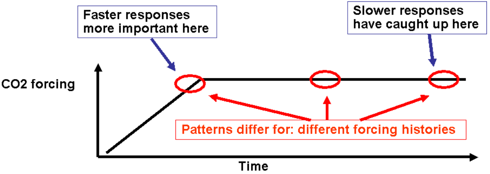
其中突出显示了三个时期；由于强迫历史不同，它们在全球变暖每增加 1 K 时可能具有不同的变化型态：在最左侧的时点，较快的响应相对更重要；而在右侧，较慢的响应已经有了一些时间追赶上来。
Three periods are highlighted, which may have different patterns of change per K of global warming, due to different forcing histories: at the leftmost point, faster responses will be relatively more important, whereas at the right, the slower responses have had some time to catch up.
海平面上升的图 2 对此作了说明。
This is illustrated in Figure 2 for sea-level rise.
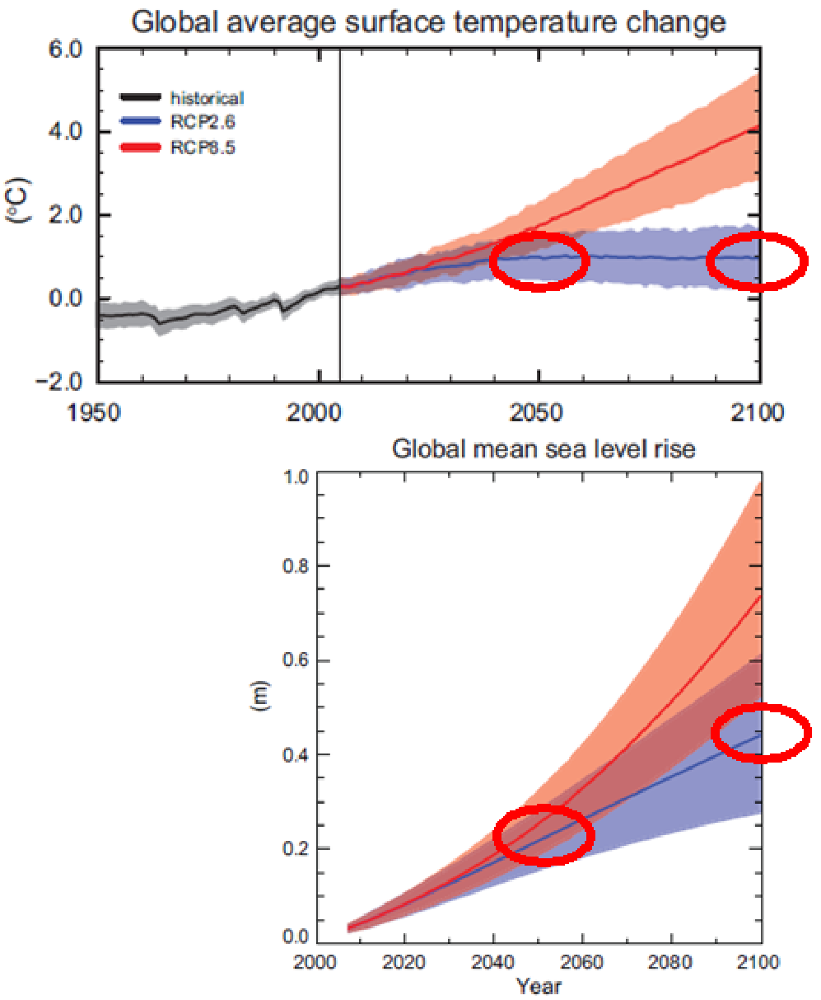
蓝色曲线显示，对于 RCP2.6，全球平均变暖在 2050 年之后停止，而海平面上升在整个世纪大致以相同速率继续。
The blue curves show that for RCP2.6, global-mean warming ceases after 2050, while sea-level rise continues at roughly the same rate throughout the century.
这主要是因为深层海洋吸热远慢于海洋混合层变暖。
This is largely because deep ocean heat uptake is much slower than ocean mixed-layer warming.
按照设计，abruptCO2 实验将 GCM 对强迫变化的不同响应时间尺度彼此分离。
By design, abruptCO2 experiments separate different timescales of GCM response to forcing change.
例如，Gregory et al. (2004) 用这一点估计 GCM 的辐射强迫和反馈参数：将辐射通量异常绘制为全球平均变暖的函数，可以分离“快”响应和“慢”响应（见例如图 3）。
This is used, for example, (Gregory et al., 2004) to estimate radiative forcing and feedback parameters for GCMs: plotting radiative flux anomalies against global mean warming can separate 'fast' and 'slow' responses (see e.g. Figure 3).
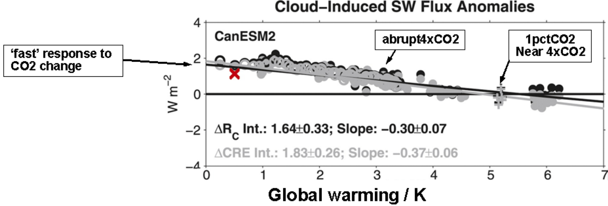
7.2 非线性响应
7.2 Non-linear responses
非线性机制的产生有多种原因。
Nonlinear mechanisms arise for a variety of reasons.
不过，将它们描述为依赖状态的反馈通常很有用。
Often, however, it is useful to describe them as state-dependent feedbacks.
例如，在积雪深度较高或较低时，雪—反照率反馈会变小。
For example, the snow-albedo feedback becomes small at high or low snow depth.
有时，把非线性机制看作两种性质同时发生变化可能更合适。
Sometimes, nonlinear mechanisms may be better viewed as simultaneous changes in pairs of properties.
例如，对流降水大体上是水汽含量与动力学的乘积（Chadwick and Good, 2013；Chadwick et al., 2012）。
For example, convective precipitation is broadly a product of moisture content and dynamics (Chadwick and Good, 2013;Chadwick et al., 2012).
水汽含量和大气动力学都会响应 CO2 强迫，因此一般可以预期对流降水对 CO2 强迫呈现非线性响应。
Both moisture content and atmospheric dynamics respond to CO2 forcing, so in general we might expect convective precipitation to have a nonlinear response to CO2 forcing.
当然，还存在更复杂的非线性响应，例如大西洋经向翻转环流。
Of course, more complex nonlinear responses exist, such as for the Atlantic Meridional Overturning Circulation.
与线性机制不同，非线性机制对强迫幅度很敏感。
In contrast to linear mechanisms, nonlinear mechanisms are sensitive to the magnitude of forcing.
例如，由于非线性机制，图 4 中突出显示的两个点可能具有不同的全球变暖每增加 1 K 时的变化型态。
For example, the two points highlighted in Figure 4 may have different patterns of change per K of global warming, due to nonlinear mechanisms.
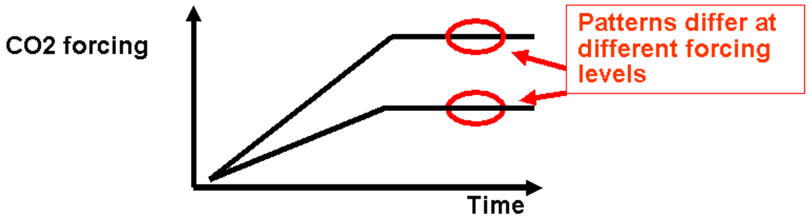
图 5 给出了一个例子：由于积雪和冰面减少，且剩余积雪和冰面位于太阳入射较低的区域，反照率反馈会随着全球温度升高而减弱（Colman and McAvaney, 2009）。
An example is given in Figure 5, which shows the albedo feedback declining with increased global temperature, due to declining snow and ice cover, and the remaining snow and ice being in areas of lower solar insolation (Colman and McAvaney, 2009).
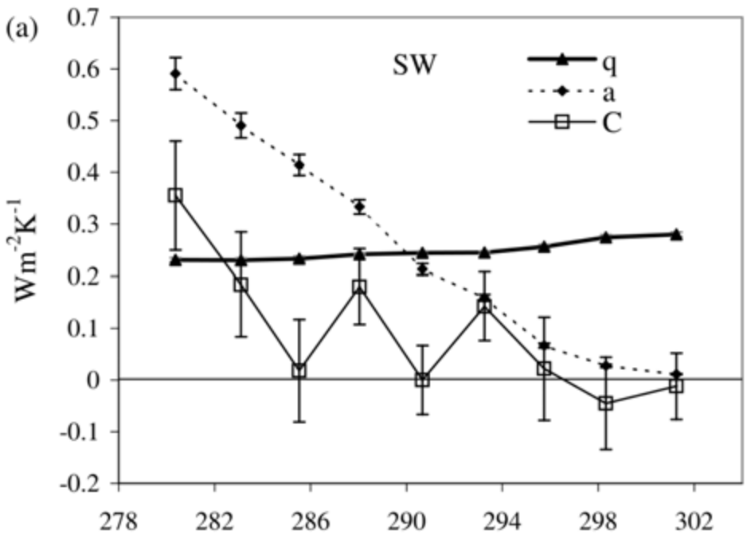
abruptCO2 实验可以用来分离非线性机制与线性机制。
AbruptCO2 experiments may be used to separate nonlinear from linear mechanisms.
可以通过在不同 abruptCO2 实验中比较相同时间尺度上的响应来实现这一点。
This can be done by comparing the responses at the same timescale in different different abruptCO2 experiments.
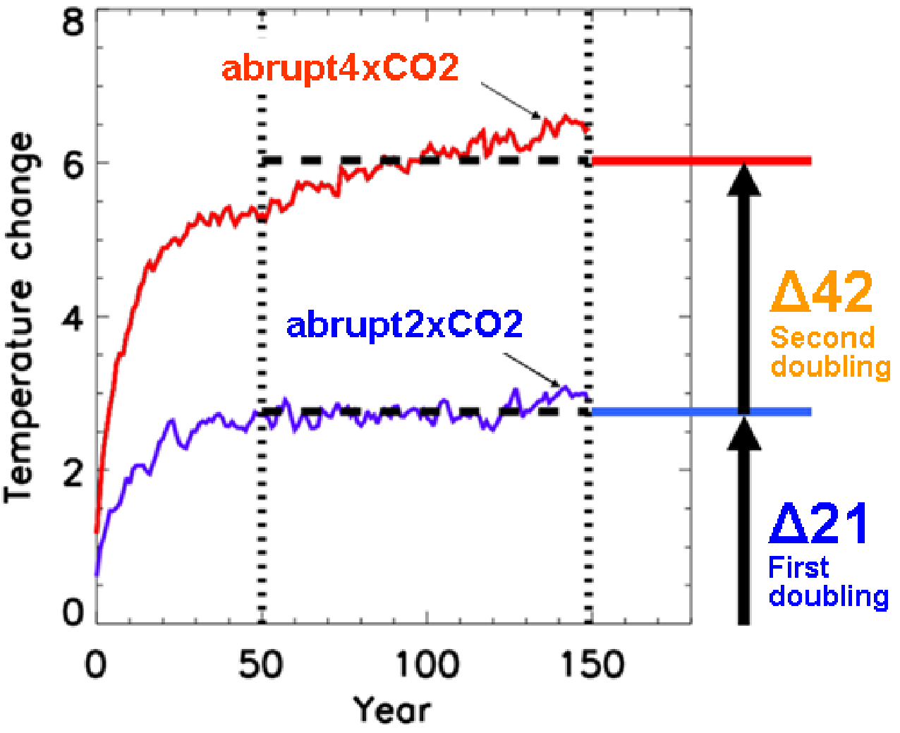
“加倍差异”（doubling difference）被定义为衡量对第一次和第二次 CO2 加倍的响应之差。
A 'doubling difference' is defined, measuring the difference in response to the first and second CO2 doublings.
在当前大多数简化气候模型中（例如 Meinshausen et al., 2011），假设每次后续 CO2 加倍产生的辐射强迫都相同（因为强迫对 log[CO2] 近似呈线性，Myhre et al., 1998）。
In most current simple climate models (e.g. Meinshausen et al., 2011), the radiative forcing from each successive CO2 doubling is assumed identical (because forcing is approximately linear in log[CO2], Myhre et al., 1998).
在这一假设下，线性系统在任何地方的加倍差异都应为零。
With this assumption, a linear system would have zero doubling difference everywhere.
因此，加倍差异被用作非线性的度量。
Therefore, the doubling difference is used as a measure of nonlinearity.
应比较哪些 abruptCO2 实验以及比较哪个时间尺度，将在第 5 节讨论。
The question of which abruptCO2 experiments to compare, and over which timescale, is discussed in section 5.
在一些 GCM 中，已有研究显示每次 CO2 加倍对应的强迫会随 CO2 改变而变化（Colman and McAvaney, 2009；Jonko et al., 2013）。
In some GCMs, the forcing per CO2 doubling has been shown to vary with CO2 (Colman and McAvaney, 2009;Jonko et al., 2013).
然而，这种变化取决于所使用的强迫具体定义（Jonko et al., 2013）。
However, this variation depends on the specific definition of forcing used (Jonko et al., 2013).
目前，我们将其纳入非线性的定义。
Currently this is folded into our definition of nonlinearity.
如果未来能够得到这种强迫变化的稳健定义，就可以用它消除成对 abruptCO2 实验之间的强迫差异，从而计算“调整后的加倍差异”。
If a robust definition of this forcing variation becomes available in future, it could be used to scale out any difference in forcing between pairs of abruptCO2 experiments, to calculate an 'adjusted doubling difference'.
作为例子，图 7 映射了 HadGEM2-ES 海洋上空降水对 abrupt2xCO2 和 abrupt4xCO2 的响应，以及加倍差异（取自 Chadwick and Good）。
As an example, Figure 7 maps the response to abrupt2xCO2 and abrupt4xCO2, and the doubling difference, for precipitation in HadGEM2-ES over the ocean (taken from Chadwick and Good).
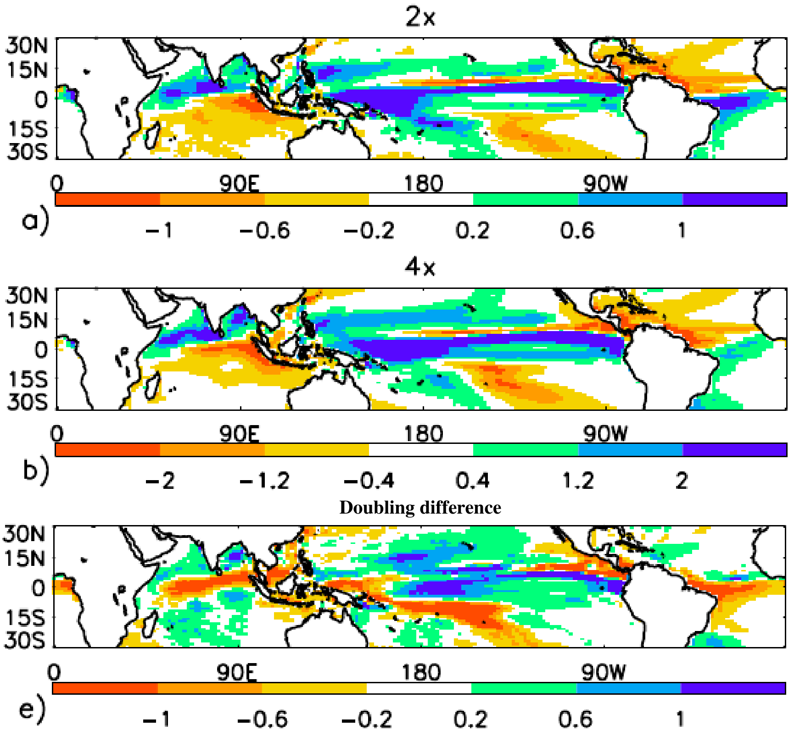
这些非线性很大——其幅度与 abrupt2xCO2 的响应相当，尽管空间型态不同。
The nonlinearities are large - comparable in magnitude to the responses to abrupt2xCO2, albeit with a different spatial pattern.
8 实验设计
8 Experimental design
nonlinMIP 由一组 abruptCO2 实验（主要工具）和一个 CO2 强迫瞬变实验组成。
nonlinMIP is composed of a set of abruptCO2 experiments (the primary tools), plus a CO2-forced transient experiment.
这些实验建立在 CMIP5 和 CMIP6 DECK 方案之上（这些方案所要求的运行见表 1）。
These build on the CMIP5 and CMIP6 DECK protocols (the required runs from these are detailed in Table 1).
nonlinMIP 的附加运行（表 2）被分为三个优先级。
The additional nonlinMIP runs (Table 2) are assigned three priority levels.
参与有三种选项：1）只进行“必需”模拟；2）进行全部“高优先级”模拟及“必需”模拟；或者最好是 3）进行全部模拟。
Three options for participation are: 1) only the ‘essential’ simulation; 2) all ‘high priority’ plus the ‘essential’ simulations; or, preferably, 3) all simulations.
在所有情况下，表 1 中的实验都是必需的。
The experiments in Table 1 are required in all cases.
除 abrupt4xto1x 外，所有实验都必须从工业化前控制实验的同一年初始化（见表 2）。
All experiments must be initialized from the same year of a pre-industrial control experiment, except for abrupt4xto1x (see Table 2).
第 5 节概述了一个典型的分析流程。
A typical analysis procedure is outlined in section 5.
nonlinMIP 设计目前限于 CO2 强迫，尽管相同原则也可以应用于其他强迫。
The nonlinMIP design is presently limited to CO2 forcing, although the same principles could be applied to other forcings.
9 基本分析原则
9 Basic analysis principles
本节概述分析 nonlinMIP 结果背后的一般原则。
This section outlines the general principles behind analysis of nonlinMIP results.
首要思想是找出阶跃响应模型（第 2 节）失效的位置：由于阶跃响应模型基于线性假设，这就相当于检测非线性响应。
The primary idea is to find where the stepresponse model (section 2) breaks: since the step-response model is based on a linear assumption, this amounts to detecting non-linear responses.
目的是集中后续分析。
The aim is to focus subsequent analysis.
如果发现关注量中的非线性很小，那么分析可以集中于单个 abruptCO2 实验中的不同响应时间尺度：线性意味着，在有用的 CO2 浓度范围内，物理响应可以由单个 abruptCO2 实验捕捉。
If non-linearities in a quantity of interest are found to be small, then analysis may focus on understanding different timescales of response from a single abruptCO2 experiment: linearity means that the physical response (over a useful range of CO2 concentrations) is captured by a single abruptCO2 experiment.
这代表了相当大的简化。
This represents a considerable simplification.
另一方面，如果发现非线性很重要，重点就转向理解不同 abruptCO2 实验中的不同响应。
If, on the other hand, non-linearities are found to be important, the focus shifts to understanding the different responses in different abruptCO2 experiments.
应重点关注哪些 abruptCO2 实验以及哪些时间尺度，将在下文讨论。
The choice of which abruptCO2 experiments to focus on, and over which timescales, is discussed below.
9.1 第一步：检验 abrupt4xCO2 对瞬变强迫实验中接近 4xCO2 的响应的基本可追溯性
9.1 First step: check basic traceability of abrupt4xCO2 to the transient-forced response near 4xCO2
这是为了确认 abruptCO2 实验在所关注变量中包含现实的物理响应（此前已针对一系列 CMIP5 模式的全球平均温度和吸热（Good et al., 2013），以及 HadCM3 的其他全球平均量（Good et al., 2011）开展过这项工作）。
This is to confirm that the abruptCO2 experiments contain realistic physical responses in the variables of interest (as previously done for global-mean temperature and heat uptake for a range of CMIP5 models (Good et al., 2013), and for other global-mean quantities for HadCM3 (Good et al., 2011).
这也排除了最病态的非线性（例如，如果某个 GCM 对突发 CO2 变化的响应不现实）。
This also, rules out the most pathological non-linearities (e.g. if the response to an abrupt CO2 change in a given GCM was unrealistic).
首先应使用 abrupt4xCO2 响应运行线性阶跃响应模型，以预测 1pctCO2 实验第 140 年附近（即接近 4xCO2）的响应。
The linear step-response model should first be used with the abrupt4xCO2 response, to predict the response near year 140 of the 1pctCO2 experiment (i.e. near 4xCO2).
随后将这一预测与 GCM 的实际 1pctCO2 结果进行比较。
This prediction is then compared with the actual GCM 1pctCO2 result.
首先应对全球平均温度进行这项工作：一系列 CMIP5 模式已经完成了这一评估（Good et al., 2013；见图 8），从而可以了解预期的准确程度。
This should first be done for global mean temperature: this assessment has been performed for a range of CMIP5 models (Good et al., 2013; see Figure 8), giving an idea of the level of accuracy expected.
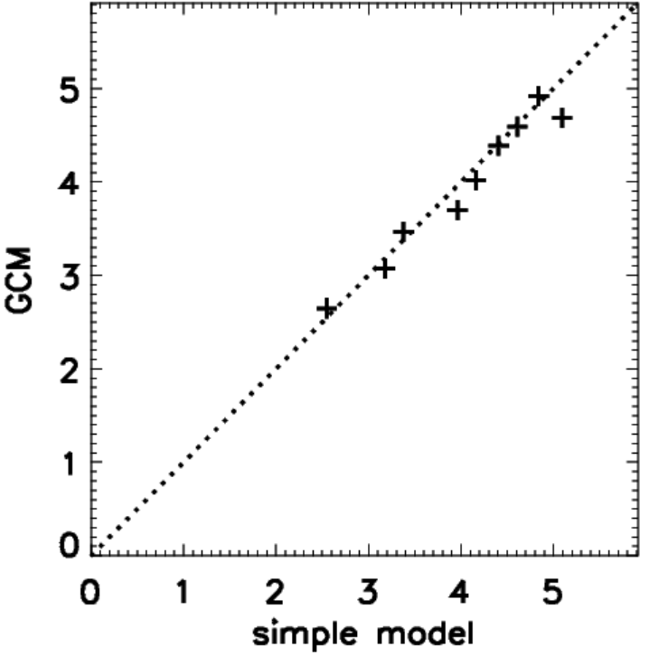
如果 abruptCO2 响应从根本上不现实，那么它很可能会在全球温度变化中显现出来。
If the abruptCO2 response is fundamentally unrealistic, it is likely to show up in the global temperature change.
随后可以对变暖的空间型态重复这一方法，再对所关注的量重复。
This approach may then be repeated for spatial patterns of warming, and then for the quantities of interest.
这里使用 abrupt4xCO2，是因为它比 abrupt2xCO2 具有更大的信噪比，同时又代表了业务照常情景在 2100 年附近的强迫水平。
Abrupt4xCO2 is used here as it has larger signal/noise than abrupt2xCO2, yet is representative of forcing levels in a business-as-usual scenario by 2100.
不过，也可以使用 abrupt2xCO2 重复这些检验——但应与 1pctCO2 实验第 70 年的结果比较（即在 2xCO2 时）。
However, the tests may also be repeated using abrupt2xCO2 – but compared with year 70 of the 1pctCO2 experiment (i.e. at 2xCO2).
9.2 第二步：检测非线性响应
9.2 Second step: detecting nonlinear responses
在对 abruptCO2 的物理响应建立了一定程度的信心之后，第二步是寻找非线性响应。
Having established some level of confidence in the abruptCO2 physical response, the second step is to look for nonlinear responses.
这首先包括重复上述第一步中的检验，但要针对 1pctCO2 和 1pctCO2 先升高后降低实验的不同部分，并为阶跃响应模型使用不同的 abruptCO2 实验。
This first involves repeating the tests from step 1 above, but for different parts of the 1pctCO2 and 1pctCO2 ramp-down experiments, and using different abruptCO2 experiments for the step-response model.
图 9 给出了一个例子（但使用的是不同的瞬变强迫实验）。
An example is given in Figure 9 (but for different transient-forcing experiments).
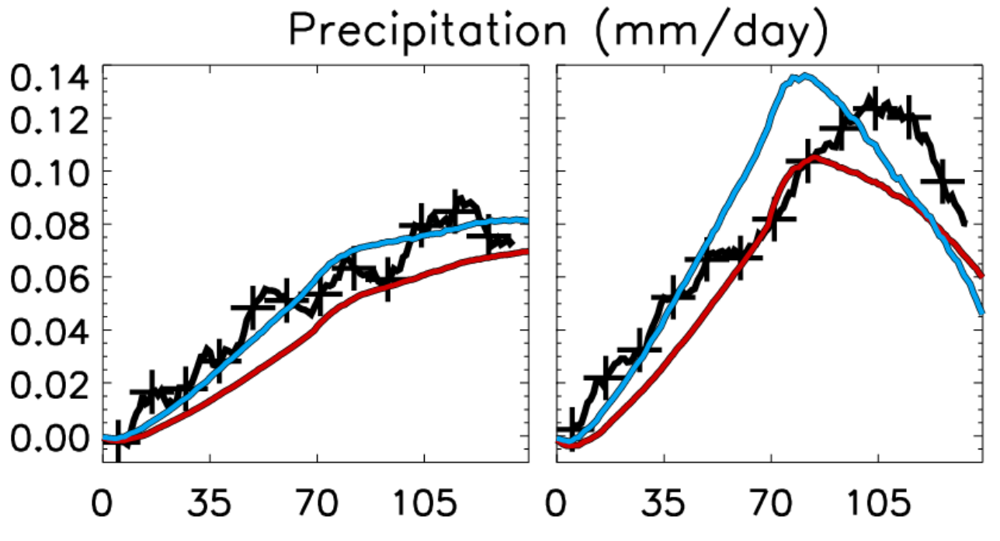
它显示了 HadCM3 GCM 中全球平均降水的结果（Good et al., 2012）。
This shows results for global-mean precipitation in the HadCM3 GCM (Good et al., 2012).
这里，使用 abrupt4xCO2 的阶跃响应模型预测（红色曲线）只有在瞬变强迫实验接近 4xCO2 时才有效。
Here, the step-response model prediction using abrupt4xCO2 (red curves) only works where a transient-forced experiment is near to 4xCO2.
同样，使用 abrupt2xCO2 的预测（蓝色曲线）只有在接近 2xCO2 时才有效。
Similarly, the prediction using abrupt2xCO2 (blue curves) works only near 2xCO2.
在其他情况下，可以看到相当大的误差，而且使用 abrupt2xCO2 和 abrupt4xCO2 得到的预测彼此差异很大。
Otherwise, quite large errors are seen, and the predictions with abrupt2xCO2 and abrupt4xCO2 are quite different from each other.
这意味着该 GCM 的降水响应存在很大的非线性，并且可以通过比较 abrupt2xCO2 和 abrupt4xCO2 实验中的响应来研究这些非线性。
This implies that there are large non-linearities in the precipitation response in this GCM, and that they may be studied by comparing the responses in the abrupt2xCO2 and abrupt4xCO2 experiments.
在识别出某种非线性响应，并确定了两个或更多可供比较的 abruptCO2 实验之后（前例为 abrupt2xCO2 和 abrupt4xCO2），可以通过在相同时间尺度上比较不同 abruptCO2 实验中的响应来详细研究非线性机制（例如使用加倍差异，如图 6、7 所示）。
Having identified some non-linear response, and highlighted two or more abruptCO2 experiments to compare (in the previous example, abrupt2xCO2 and abrupt4xCO2), the non-linear mechanisms may be studied in detail by comparing the responses in the different abruptCO2 experiments over the same timescale (e.g. via the doubling difference, as in Figures 6,7).
这使得非线性机制能够与线性机制分离（Good et al., 2012；Chadwick and Good, 2013），而在瞬变强迫实验中无法做到这一点。
This allows (Good et al., 2012;Chadwick and Good, 2013) non-linear mechanisms to be separated from linear mechanisms (not possible in a transient-forcing experiment).
10 结论
10 Conclusions
本文概述了 nonlinMIP 设计背后的基本物理原理，以及建立从 abruptCO2 到渐变强迫实验的可追溯性的方法，随后详细说明实验设计，最后介绍了一些适用于大多数基于该数据集开展研究的一般分析原则。
This paper outlines the basic physical principles behind the nonlinMIP design, and the method of establishing traceability from abruptCO2 to gradual forcing experiments, before detailing the experimental design and finally some general analysis principles that should apply to most studies based on this dataset.
致谢
Acknowledgements
本工作得到英国能源与气候变化部/环境、食品与农村事务部联合资助的英国气象局哈德利中心气候计划（GA01101）支持。
This work was supported by the Joint UK DECC/Defra Met Office Hadley Centre Climate Programme (GA01101).
Nathaelle Bouttes 获得了欧洲共同体第七框架计划（FP7/20072013）下欧洲研究委员会的资助，ERC 资助协议编号 247220，项目为“Seachange”。
Nathaelle Bouttes received funding from the European Research Council under the European Community’s Seventh Framework Programme (FP7/20072013), ERC Grant Agreement 247220, project “Seachange.”
【参考文献开始：以下条目按要求保留原文，不翻译。】
References begin: the following entries are retained in the original and are not translated.
Allen, M. R., and Ingram, W. J.: Constraints on future changes in climate and the hydrologic cycle, Nature, 419, 224-+, 10.1038/nature01092, 2002.
Allen, M. R., and Ingram, W. J.: Constraints on future changes in climate and the hydrologic cycle, Nature, 419, 224-+, 10.1038/nature01092, 2002.
Andrews, T., Forster, P. M., Boucher, O., Bellouin, N., and Jones, A.: Precipitation, radiative forcing and global temperature change, Geophysical Research Letters, 37, Artn L14701 Doi 10.1029/2010gl043991, 2010.
Andrews, T., Forster, P. M., Boucher, O., Bellouin, N., and Jones, A.: Precipitation, radiative forcing and global temperature change, Geophysical Research Letters, 37, Artn L14701 Doi 10.1029/2010gl043991, 2010.
Andrews, T., and Ringer, M. A.: Cloud feedbacks, rapid adjustments, and the forcing-response relationship in a transient co2 reversibility scenario, Journal of Climate, 27, 1799-1818, Doi 10.1175/Jcli-D-13-00421.1, 2014.
Andrews, T., and Ringer, M. A.: Cloud feedbacks, rapid adjustments, and the forcing-response relationship in a transient co2 reversibility scenario, Journal of Climate, 27, 1799-1818, Doi 10.1175/Jcli-D-13-00421.1, 2014.
Bouttes, N., Gregory, J. M., and Lowe, J. A.: The reversibility of sea level rise, Journal of Climate, 26, 2502-2513, Doi 10.1175/Jcli-D-12-00285.1, 2013.
Bouttes, N., Gregory, J. M., and Lowe, J. A.: The reversibility of sea level rise, Journal of Climate, 26, 2502-2513, Doi 10.1175/Jcli-D-12-00285.1, 2013.
Chadwick, R., Boutle, I., and Martin, G.: Spatial patterns of precipitation change in cmip5: Why the rich don't get richer., Journal of Climate, accepted, 2012.
Chadwick, R., Boutle, I., and Martin, G.: Spatial patterns of precipitation change in cmip5: Why the rich don't get richer., Journal of Climate, accepted, 2012.
Chadwick, R., and Good, P.: Understanding non-linear tropical precipitation responses to co2 forcing, Geophysical Research Letters, 40, 10.1002/grl.50932, 2013.
Chadwick, R., and Good, P.: Understanding non-linear tropical precipitation responses to co2 forcing, Geophysical Research Letters, 40, 10.1002/grl.50932, 2013.
Chadwick, R., Wu, P. L., Good, P., and Andrews, T.: Asymmetries in tropical rainfall and circulation patterns in idealised co2 removal experiments, Climate Dynamics, 40, 295-316, DOI 10.1007/s00382-012-1287-2, 2013.
Chadwick, R., Wu, P. L., Good, P., and Andrews, T.: Asymmetries in tropical rainfall and circulation patterns in idealised co2 removal experiments, Climate Dynamics, 40, 295-316, DOI 10.1007/s00382-012-1287-2, 2013.
Colman, R., and McAvaney, B.: Climate feedbacks under a very broad range of forcing, Geophysical Research Letters, 36, L01702 10.1029/2008gl036268, 2009.
Colman, R., and McAvaney, B.: Climate feedbacks under a very broad range of forcing, Geophysical Research Letters, 36, L01702 10.1029/2008gl036268, 2009.
Field, C. B., Jackson, R. B., and Mooney, H. A.: Stomatal responses to increased co2 - implications from the plant to the global-scale, Plant Cell Environ, 18, 1214-1225, DOI 10.1111/j.1365-3040.1995.tb00630.x, 1995.
Field, C. B., Jackson, R. B., and Mooney, H. A.: Stomatal responses to increased co2 - implications from the plant to the global-scale, Plant Cell Environ, 18, 1214-1225, DOI 10.1111/j.1365-3040.1995.tb00630.x, 1995.
Forster, P. M., Andrews, T., Good, P., Gregory, J. M., Jackson, L., and Zelinka, M. D.: Evaluating adjusted forcing and model spread for historical and future scenarios in the cmip5 generation of climate models, Journal of Geophysical ResearchAtmospheres (accepted pending minor revisions), 2012.
Forster, P. M., Andrews, T., Good, P., Gregory, J. M., Jackson, L., and Zelinka, M. D.: Evaluating adjusted forcing and model spread for historical and future scenarios in the cmip5 generation of climate models, Journal of Geophysical ResearchAtmospheres (accepted pending minor revisions), 2012.
Good, P., Gregory, J. M., and Lowe, J. A.: A step-response simple climate model to reconstruct and interpret aogcm projections, Geophysical Research Letters, 38, Artn L01703 Doi 10.1029/2010gl045208, 2011.
Good, P., Gregory, J. M., and Lowe, J. A.: A step-response simple climate model to reconstruct and interpret aogcm projections, Geophysical Research Letters, 38, Artn L01703 Doi 10.1029/2010gl045208, 2011.
Good, P., Ingram, W., Lambert, F. H., Lowe, J. A., Gregory, J. M., Webb, M. J., Ringer, M. A., and Wu, P. L.: A stepresponse approach for predicting and understanding non-linear precipitation changes, Climate Dynamics, 39, 2789-2803, DOI 10.1007/s00382-012-1571-1, 2012.
Good, P., Ingram, W., Lambert, F. H., Lowe, J. A., Gregory, J. M., Webb, M. J., Ringer, M. A., and Wu, P. L.: A stepresponse approach for predicting and understanding non-linear precipitation changes, Climate Dynamics, 39, 2789-2803, DOI 10.1007/s00382-012-1571-1, 2012.
Good, P., Gregory, J. M., Lowe, J. A., and Andrews, T.: Abrupt co2 experiments as tools for predicting and understanding cmip5 representative concentration pathway projections, Climate Dynamics, 40, 1041-1053, DOI 10.1007/s00382-012-14104, 2013.
Good, P., Gregory, J. M., Lowe, J. A., and Andrews, T.: Abrupt co2 experiments as tools for predicting and understanding cmip5 representative concentration pathway projections, Climate Dynamics, 40, 1041-1053, DOI 10.1007/s00382-012-14104, 2013.
Gregory, J. M., Ingram, W. J., Palmer, M. A., Jones, G. S., Stott, P. A., Thorpe, R. B., Lowe, J. A., Johns, T. C., and Williams, K. D.: A new method for diagnosing radiative forcing and climate sensitivity, Geophysical Research Letters, 31, L03205 10.1029/2003gl018747, 2004.
Gregory, J. M., Ingram, W. J., Palmer, M. A., Jones, G. S., Stott, P. A., Thorpe, R. B., Lowe, J. A., Johns, T. C., and Williams, K. D.: A new method for diagnosing radiative forcing and climate sensitivity, Geophysical Research Letters, 31, L03205 10.1029/2003gl018747, 2004.
Held, I. M., Winton, M., Takahashi, K., Delworth, T., Zeng, F. R., and Vallis, G. K.: Probing the fast and slow components of global warming by returning abruptly to preindustrial forcing, Journal of Climate, 23, 2418-2427, Doi 10.1175/2009jcli3466.1, 2010.
Held, I. M., Winton, M., Takahashi, K., Delworth, T., Zeng, F. R., and Vallis, G. K.: Probing the fast and slow components of global warming by returning abruptly to preindustrial forcing, Journal of Climate, 23, 2418-2427, Doi 10.1175/2009jcli3466.1, 2010.
Huntingford, C., and Cox, P. M.: An analogue model to derive additional climate change scenarios from existing gcm simulations, Climate Dynamics, 16, 575-586, 2000.
Huntingford, C., and Cox, P. M.: An analogue model to derive additional climate change scenarios from existing gcm simulations, Climate Dynamics, 16, 575-586, 2000.
IPCC: Summary for policymakers, in: Climate change 2013: The physical science basis. Contribution of working group i to the fifth assessment report of the intergovernmental panel on climate change, edited by: Stocker, T. F., Qin, D., Plattner, G. K., Tignor, M., Allen, S. K., Boschung, J., Nauels, A., Xia, Y., Bex, V., and Midgley, P. M., Cambridge University Press, Cambridge, United Kingdom and New York, NY, USA, 2013.
IPCC: Summary for policymakers, in: Climate change 2013: The physical science basis. Contribution of working group i to the fifth assessment report of the intergovernmental panel on climate change, edited by: Stocker, T. F., Qin, D., Plattner, G. K., Tignor, M., Allen, S. K., Boschung, J., Nauels, A., Xia, Y., Bex, V., and Midgley, P. M., Cambridge University Press, Cambridge, United Kingdom and New York, NY, USA, 2013.
Jones, C., Lowe, J., Liddicoat, S., and Betts, R.: Committed terrestrial ecosystem changes due to climate change, Nat Geosci, 2, 484-487, Doi 10.1038/Ngeo555, 2009.
Jones, C., Lowe, J., Liddicoat, S., and Betts, R.: Committed terrestrial ecosystem changes due to climate change, Nat Geosci, 2, 484-487, Doi 10.1038/Ngeo555, 2009.
Jonko, A. K., Shell, K. M., Sanderson, B. M., and Danabasoglu, G.: Climate feedbacks in ccsm3 under changing co2 forcing. Part ii: Variation of climate feedbacks and sensitivity with forcing, Journal of Climate, 26, 2784-2795, Doi 10.1175/Jcli-D12-00479.1, 2013.
Jonko, A. K., Shell, K. M., Sanderson, B. M., and Danabasoglu, G.: Climate feedbacks in ccsm3 under changing co2 forcing. Part ii: Variation of climate feedbacks and sensitivity with forcing, Journal of Climate, 26, 2784-2795, Doi 10.1175/Jcli-D12-00479.1, 2013.
Li, S., and Jarvis, A.: Long run surface temperature dynamics of an a-ogcm: The hadcm3 4xco(2) forcing experiment revisited, Climate Dynamics, 33, 817-825, 10.1007/s00382-009-0581-0, 2009.
Li, S., and Jarvis, A.: Long run surface temperature dynamics of an a-ogcm: The hadcm3 4xco(2) forcing experiment revisited, Climate Dynamics, 33, 817-825, 10.1007/s00382-009-0581-0, 2009.
Manabe, S., Bryan, K., and Spelman, M. J.: Transient-response of a global ocean atmosphere model to a doubling of atmospheric carbon-dioxide, J Phys Oceanogr, 20, 722-749, Doi 10.1175/1520-0485(1990)020<0722:Troago>2.0.Co;2, 1990.
Manabe, S., Bryan, K., and Spelman, M. J.: Transient-response of a global ocean atmosphere model to a doubling of atmospheric carbon-dioxide, J Phys Oceanogr, 20, 722-749, Doi 10.1175/1520-0485(1990)020<0722:Troago>2.0.Co;2, 1990.
Meehl, G. A., Moss, R., Taylor, K. E., Eyring, V., Stouffer, R. J., Bony, S., and Stevens, B.: Climate model intercomparisons: Preparing for the next phase, Eos Trans. AGU, 95, 77, 2014.
Meehl, G. A., Moss, R., Taylor, K. E., Eyring, V., Stouffer, R. J., Bony, S., and Stevens, B.: Climate model intercomparisons: Preparing for the next phase, Eos Trans. AGU, 95, 77, 2014.
Meinshausen, M., Raper, S. C. B., and Wigley, T. M. L.: Emulating coupled atmosphere-ocean and carbon cycle models with a simpler model, magicc6-part 1: Model description and calibration, Atmos Chem Phys, 11, 1417-1456, DOI 10.5194/acp11-1417-2011, 2011.
Meinshausen, M., Raper, S. C. B., and Wigley, T. M. L.: Emulating coupled atmosphere-ocean and carbon cycle models with a simpler model, magicc6-part 1: Model description and calibration, Atmos Chem Phys, 11, 1417-1456, DOI 10.5194/acp11-1417-2011, 2011.
Mitchell, J. F. B., Wilson, C. A., and Cunnington, W. M.: On co2 climate sensitivity and model dependence of results, Q J Roy Meteor Soc, 113, 293-322, 1987.
Mitchell, J. F. B., Wilson, C. A., and Cunnington, W. M.: On co2 climate sensitivity and model dependence of results, Q J Roy Meteor Soc, 113, 293-322, 1987.
Mitchell, T. D.: Pattern scaling - an examination of the accuracy of the technique for describing future climates, Climatic Change, 60, 217-242, 2003.
Mitchell, T. D.: Pattern scaling - an examination of the accuracy of the technique for describing future climates, Climatic Change, 60, 217-242, 2003.
Myhre, G., Highwood, E. J., Shine, K. P., and Stordal, F.: New estimates of radiative forcing due to well mixed greenhouse gases, Geophysical Research Letters, 25, 2715-2718, 1998.
Myhre, G., Highwood, E. J., Shine, K. P., and Stordal, F.: New estimates of radiative forcing due to well mixed greenhouse gases, Geophysical Research Letters, 25, 2715-2718, 1998.
Santer, B., Wigley, T., Schlesinger, M., and Mitchell, J. F. B.: Developing climate scenarios from equilibrium gcm results, Report No. 47, Max Planck Institute for Meteorology, Hamburg, 1990.
Santer, B., Wigley, T., Schlesinger, M., and Mitchell, J. F. B.: Developing climate scenarios from equilibrium gcm results, Report No. 47, Max Planck Institute for Meteorology, Hamburg, 1990.
Schaller, N., Cermak, J., Wild, M., and Knutti, R.: The sensitivity of the modeled energy budget and hydrological cycle to co2 and solar forcing, Earth Syst Dynam, 4, 253-266, DOI 10.5194/esd-4-253-2013, 2013.
Schaller, N., Cermak, J., Wild, M., and Knutti, R.: The sensitivity of the modeled energy budget and hydrological cycle to co2 and solar forcing, Earth Syst Dynam, 4, 253-266, DOI 10.5194/esd-4-253-2013, 2013.
Schaller, N., Sedláček, N. J., and Knutti, R.: The asymmetry of the climate system's response to solar forcing changes and its implications for geoengineering scenarios, Journal of Geophysical Research: Atmospheres, 10, 5171–5184, 2014.
Schaller, N., Sedláček, N. J., and Knutti, R.: The asymmetry of the climate system's response to solar forcing changes and its implications for geoengineering scenarios, Journal of Geophysical Research: Atmospheres, 10, 5171–5184, 2014.
Solomon, S., Qin, D., Manning, M., Chen, Z., Marquis, M., Averyt, K. B., Tignor, M., and Miller, H. L.: Contribution of working group i to the fourth assessment report of the intergovernmental panel on climate change, Cambridge University Press, Cambridge, United Kingdom and New York, NY, USA, 2007.
Solomon, S., Qin, D., Manning, M., Chen, Z., Marquis, M., Averyt, K. B., Tignor, M., and Miller, H. L.: Contribution of working group i to the fourth assessment report of the intergovernmental panel on climate change, Cambridge University Press, Cambridge, United Kingdom and New York, NY, USA, 2007.
Stott, P., Good, P., Jones, G., Gillett, N., and Hawkins, E.: The upper end of climate model temperature projections is inconsistent with past warming, Environ Res Lett, 8, Artn 014024 Doi 10.1088/1748-9326/8/1/014024, 2013.
Stott, P., Good, P., Jones, G., Gillett, N., and Hawkins, E.: The upper end of climate model temperature projections is inconsistent with past warming, Environ Res Lett, 8, Artn 014024 Doi 10.1088/1748-9326/8/1/014024, 2013.
Tebaldi, C., and Arblaster, J. M.: Pattern scaling: Its strengths and limitations, and an update on the latest model simulations, Climatic Change, 122, 459-471, DOI 10.1007/s10584-013-1032-9, 2014.
Tebaldi, C., and Arblaster, J. M.: Pattern scaling: Its strengths and limitations, and an update on the latest model simulations, Climatic Change, 122, 459-471, DOI 10.1007/s10584-013-1032-9, 2014.
Williams, K. D., Ingram, W. J., and Gregory, J. M.: Time variation of effective climate sensitivity in gcms, Journal of Climate, 21, 5076-5090, Doi 10.1175/2008jcli2371.1, 2008.
Williams, K. D., Ingram, W. J., and Gregory, J. M.: Time variation of effective climate sensitivity in gcms, Journal of Climate, 21, 5076-5090, Doi 10.1175/2008jcli2371.1, 2008.
Zelinka, M. D., Klein, S. A., Taylor, K. E., Andrews, T., Webb, M. J., Gregory, J. M., and Forster, P. M.: Contributions of different cloud types to feedbacks and rapid adjustments in cmip5, Journal of Climate, 26, 5007-5027, Doi 10.1175/Jcli-D12-00555.1, 2013.
Zelinka, M. D., Klein, S. A., Taylor, K. E., Andrews, T., Webb, M. J., Gregory, J. M., and Forster, P. M.: Contributions of different cloud types to feedbacks and rapid adjustments in cmip5, Journal of Climate, 26, 5007-5027, Doi 10.1175/Jcli-D12-00555.1, 2013.
【参考文献结束】
References end.
表 1。nonlinMIP 所要求的 CMIP5/CMIP6 DECK 实验列表。
Table 1. List of CMIP5/CMIP6 DECK experiments required by nonlinMIP.
| 实验 | Experiment | 描述 | Description | 作用 | Role |
|---|---|---|---|---|---|
| piControl | piControl | 工业化前控制实验 | Pre-industrial control experiment | ||
| Abrupt4xCO2 | Abrupt4xCO2 | CO2 突然增加至 4 倍，随后保持 150 年不变。 | CO2 abruptly quadrupled, then held constant for 150 years. | 分离不同的响应时间尺度。 | Separate different timescales of response. |
| 1pctCO2 | 1pctCO2 | CO2 每年增加 1%，持续 140 年（即 CMIP5 1pctCO2 实验），随后每年减少 1%，持续 140 年（即恢复到工业化前状态）。 | CO2 increased at 1% per year for 140 years (i.e. as CMIP5 1pctCO2 experiment), then decreased by 1% per year for 140 years (i.e. returning to preindustrial conditions). | 检验 abruptCO2 实验对更现实瞬变强迫条件的可追溯性。加入下降阶段可以探究与减缓和地球工程情景相关的物理过程。 | To test traceability of the abruptCO2 experiments to more realistic transient-forcing conditions. Adding the ramp-down phase explores physics relevant to mitigation and geo-engineering scenarios. |
表 2。nonlinMIP 实验设计。参与方式有三种：只进行“必需”模拟；进行全部“高优先级”模拟及“必需”模拟；或者最好是进行全部模拟。所有情况下都要求进行表 1 中的实验。
Table 2. NonlinMIP experimental design. Three options are: only the ‘essential’ simulation; all ‘high priority’ plus the ‘essential’ simulations; or, preferably, all simulations. The experiments in Table 1 are required in all cases.
| 实验（优先级） | Experiment (priority) | 描述 | Description | 作用 | Role |
|---|---|---|---|---|---|
| Abrupt2xCO2（必需） | Abrupt2xCO2 (essential) | 同 abrupt4xCO2（见表 1），但 CO2 浓度为工业化前的 2 倍。 | As abrupt4xCO2 (see Table 1), but at double pre-industrial CO2 concentration. | 用于诊断非线性响应（与 abrupt4xCO2 结合）。在与中等或低强迫情景更相关的强迫水平下评估气候响应，并在适当时用阶跃响应模型进行气候预测。 | To diagnose non-linear responses (in combination with abrupt4xCO2). Assess climate response and (if appropriate) make climate projections with the step-response model at forcing levels more relevant to mid- or low-forcing scenarios. |
| 1pctCO2 ramp-down（高优先级） | 1pctCO2 ramp-down (high priority) | 从 1pctCO2 的末尾初始化。CO2 每年减少 1%，持续 140 年（即恢复到工业化前状态）。 | Initialised from the end of 1pctCO2. CO2 is decreased by 1% per year for 140 years (i.e. returning to pre-industrial conditions). | 检验 abruptCO2 实验对更现实瞬变强迫条件的可追溯性。加入下降阶段可以探究更广泛的物理响应，从而提供更严格的可追溯性检验。它也与减缓和地球工程情景有关，并提供更严格的测试。 | To test traceability of the abruptCO2 experiments to more realistic transient-forcing conditions. Adding the ramp-down phase explores a much wider range of physical responses, providing a sterner test of traceability. Relevant also to mitigation and geo-engineering scenarios, and offers a sterner test of. |
| 将 abrupt2xCO2 和 abrupt4xCO2 都延长 100 年（高优先级） | Extend both abrupt2xCO2 and abrupt4xCO2 by 100 years (high priority) | 允许通过阶跃响应模型，对 1pctCO2 先升高后降低实验的大部分过程进行可追溯性检验。探究比 CMIP5 实验更长时间尺度的响应。提高诊断某些区域尺度非线性响应时的信噪比。为 abrupt4xto1x 实验提供基准控制。 | Allow traceability tests (via the step-response model) against most of the 1pctCO2 ramp-up-ramp-down experiment. Explore longer timescale responses than in CMIP5 experiment. Permit improved signal/noise in diagnosing some regional-scale nonlinear responses. Provide a baseline control for the abrupt4xto1x experiment. | ||
| Abrupt4xto1x（中优先级） | Abrupt4xto1x (medium priority) | 从 abrupt4xCO2 的第 100 年初始化，CO2 突然回到工业化前水平，随后保持 150 年不变。 | Initialised from year 100 of abrupt4xCO2, CO2 is abruptly returned to pre-industrial levels, then held constant for 150 years. | 在更大的 CO2 范围内量化非线性（量化 1xCO2 下的响应）。评估可能与强迫变化方向相关的非线性。 | Quantify non-linearities over a larger range of CO2 (quantifies responses at 1xCO2). Assess non-linearities that may be associated with the direction of forcing change. |
| Abrupt8xCO2（中优先级） | Abrupt8xCO2 (medium priority) | 同 abrupt4xCO2，但 CO2 浓度为工业化前的 8 倍。这里只要求 150 年。 | As abrupt4xCO2, but at 8x pre-industrial CO2 concentration. Only 150 years required here. | 在更大的 CO2 范围内量化非线性。 | Quantify non-linearities over a larger range of CO2. |
图 1。示意说明线性机制能够导致气候型态演变的一种情形。
Figure 1. Schematic illustrating a situation where linear mechanisms can cause climate patterns to evolve.
这表示一个强迫（黑线）先逐渐增强、随后稳定下来的情景。
This represents a scenario where forcing (black line) is ramped up, then stabilised.
图 2。改编自 IPCC 第五次评估报告（IPCC, 2013）的图 SPM.7 和 SPM.9（叠加了红色椭圆）。
Figure 2. Adapted (red ovals overlaid) from the IPCC Fifth Assessment Report (IPCC, 2013), Figures SPM.7 and SPM.9.
相对于 1986-2005 年，rcp8.5（红色）和 rcp2.6（蓝色）下的全球平均变暖（上）与全球平均海平面上升（下）。
Global mean warming (top) and global mean sea level rise (bottom), relative to 1986-2005, for rcp8.5 (red) and rcp2.6 (blue).
图 3。说明一种将辐射强迫变化的“快”响应和“慢”响应分离的方法（Gregory et al., 2004）。
Figure 3. Illustrating a method (Gregory et al., 2004) for separating ‘fast’ and ‘slow’ responses to radiative forcing change.
图改编自 Zelinka et al. (2013)（叠加了矩形中的标签）。
Figure adapted (labels in rectangles overlaid) from Zelinka et al. (2013).
CanESM2 模式的全球平均云引起 SW 通量异常随全球变暖的变化（黑色和灰色分别表示计算云引起通量的两种方法）。
Global-mean cloud-induced SW flux anomalies against global warming, for the CanESM2 model (black & grey represent two methods of calculating cloud-induced fluxes).
这也说明了检验 abrupt4xCO2 对 1pctCO2 响应可追溯性的一种方法：abrupt4xCO2 响应的线性拟合（直线）在 1pctCO2 接近 4xCO2 时（即该实验第 140 年附近）穿过 1pctCO2 响应。
This also illustrates one test of traceability of abrupt4xCO2 to 1pctCO2 responses: the linear fit to the abrupt4xCO2 response (straight lines) passes through the 1pctCO2 response near 4xCO2 (i.e. near year 140 of that experiment).
图 4。示意说明非线性机制能够导致气候型态在不同强迫（因而也不同全球温度）水平下出现差异。
Figure 4. Schematic illustrating the point that nonlinear mechanisms can cause climate patterns to differ at different forcing (and hence global temperature) levels.
全球平均温度，K
Global mean temperature, K
图 5。气候模式中，反照率反馈（点线）的强度（y 轴）随全球平均温度（x 轴，K）升高而减弱（图取自 Colman and McAvaney, 2009）。
Figure 5. Albedo feedback (dotted line) strength (y-axis) decreasing with global mean temperature (x-axis, K) in a climate model (figure from Colman and McAvaney, 2009).
图 6。定义“加倍差异”。
Figure 6. Defining the ‘doubling difference’.
加倍差异 = Δ42 – Δ21（第一次和第二次 CO2 加倍之间的响应差异）。
Doubling difference = Δ42 – Δ21 (the difference in response between the first and second CO2 doublings.
这是针对 CO2 突然变化之后特定时间尺度定义的——在此例中，是第 50-149 年的平均值。
This is defined for a specific timescale after the abrupt CO2 change – in this example, it is the mean over years 50-149.
加倍差异
Doubling difference
图 7。HadGEM2-ES 海洋上空区域降水的非线性响应（图取自 Chadwick and Good, 2013）。
Figure 7. Non-linear regional precipitation responses over the ocean in HadGEM2-ES (figure from Chadwick and Good, 2013).
降水变化（mm/day）为第 50-149 年的平均值，分别对应（上）abrupt2xCO2、（中）abrupt4xCO2 和（下）加倍差异。
Precipitation change (mm/day) averaged over years 50-149 for (top) abrupt2xCO2 and (middle) abrupt4xCO2, and the doubling difference (bottom).
注意，上图和下图面板使用相同的刻度。
Note that the top and bottom panels have the same scale.
图 8。检验 abrupt4xCO2 对瞬变强迫实验（1pctCO2）的基本可追溯性（图取自 Good et al., 2013）。
Figure 8. Checking basic traceability of abrupt4xCO2 to a transient forcing experiment (1pctCO2) (figure from Good et al., 2013).
1pctCO2 第 120-139 年的全球平均变暖（K）平均值：y 轴为 GCM 模拟，x 轴为使用阶跃响应方法从 abrupt4xCO2 重建的结果。
Global-mean warming (K) averaged over years 120-139 of 1pctCO2 for (y-axis) the GCM simulation and (x-axis) the reconstruction from abrupt4xCO2 using the step-response method.
图 9。寻找瞬变强迫实验中的非线性响应。
Figure 9. Finding nonlinear responses in transient forcing experiments.
（图取自 Good et al., 2012。）
(figure from Good et al., 2012).
左图：CO2 每年增加 1%，随后稳定在工业化前水平的 2 倍。
Left: where CO2 is increased by 1% per year, then stabilised at 2x pre-industrial levels.
右图：CO2 每年增加 2%，持续 70 年，随后每年减少 2%，持续 70 年。
Right: where CO2 is increased by 2% per year for 70 years, then decreased by 2% per year for 70 years.
黑色：GCM。
Black: GCM.
红色：使用 abrupt4xCO2 响应的阶跃响应模型。
Red: step-response model using the abrupt4xCO2 response.
蓝色：abrupt2xCO2 响应。
Blue: the abrupt2xCO2 response.
DAMIP (Detection and Attribution MIP) ｜ 检测与归因模式比较计划
检测与归因模式比较计划提案
Proposal of Detection and Attribution Model Intercomparison Project
（DAMIP）
(DAMIP)
最后更新：2015年6月10日
Last updated: 10 June 2015
MIP 名称*
Name of MIP*
检测与归因模式比较计划（DAMIP）
Detection and Attribution Model Intercomparison Project (DAMIP)
MIP 联合主席及联系人*
Co-chairs of MIP as contacts*
Nathan Gillett，加拿大气候模拟与分析中心（nathan.gillett@ec.gc.ca）
Nathan Gillett, Canadian Centre for Climate Modelling and Analysis (nathan.gillett@ec.gc.ca)
Hideo Shiogama，日本国立环境研究所（shiogama.hideo@nies.go.jp）
Hideo Shiogama, National Institute for Environmental Studies (shiogama.hideo@nies.go.jp)
科学指导委员会成员*
Members of the Scientific Steering Committee*
Bernd Funke，安达卢西亚天体物理研究所（bernd@iaa.es）
Bernd Funke, Instituto de Astrofísica de Andalucía (bernd@iaa.es)
Gabriele Hegerl，爱丁堡大学（gabi.hegerl@ed.ac.uk）
Gabriele Hegerl, University of Edinburgh (gabi.hegerl@ed.ac.uk)
Reto Knutti，苏黎世联邦理工学院（reto.knutti@env.ethz.ch）
Reto Knutti, ETH Zurich (reto.knutti@env.ethz.ch)
Katja Matthes，基尔海洋研究中心 GEOMAR 亥姆霍兹中心（kmatthes@geomar.de）
Katja Matthes, GEOMAR Helmholtz Centre for Ocean Research Kiel (kmatthes@geomar.de)
Benjamin D. Santer，劳伦斯利弗莫尔国家实验室（santer1@llnl.gov）
Benjamin D. Santer, Lawrence Livermore National Laboratory (santer1@llnl.gov)
Dáithí Stone，劳伦斯伯克利国家实验室（dstone@lbl.gov）
Dáithí Stone, Lawrence Berkeley National Laboratory (dstone@lbl.gov)
Claudia Tebaldi，美国国家大气研究中心（claudia.tebaldi@gmail.com）
Claudia Tebaldi, National Center for Atmospheric Research (claudia.tebaldi@gmail.com)
网站链接（如有）*
Link to website (if available)*
尚未提供。
Not yet available.
参考文献（如有）*
References (if available)*
【参考文献条目，原文保留不译；条目边界】
Bindoff, N.L., et al., 2013: Detection and Attribution of Climate Change: from Global to Regional. In: Climate Change 2013: The Physical Science Basis. Contribution of Working Group I to the Fifth Assessment Report of the Intergovernmental Panel on Climate Change [Stocker, T.F., D. Qin, G.-K. Plattner, M. Tignor, S.K. Allen, J. Boschung, A. Nauels, Y. Xia, V. Bex and P.M. Midgley (eds.)]. Cambridge University Press, Cambridge, United Kingdom and New York, NY, USA.
【参考文献条目，原文保留不译；条目边界】
Jones, G. S., P. A. Stott, and N. Christidis, 2013: Attribution of observed historical near surface temperature variations to anthropogenic and natural causes using CMIP5 simulations. J. Geophys. Res. Atmos., doi:10.1002/jgrd.50239.
【参考文献条目，原文保留不译；条目边界】
Gillett, N. P., V. K. Arora, D. Matthews, P. A. Stott, and M. R. Allen, 2013: Constraining the ratio of global warming to cumulative CO2 emissions using CMIP5 simulations. J. Clim., doi:10.1175/JCLI-D-12–00476.1.
MIP 目标及简要概述*
Goal of the MIP and a brief overview*
DAMIP 的主要目标是促进更准确地估计人为和自然强迫变化对观测到的全球变暖的贡献；促进更准确地估计这些强迫对观测到的全球和区域其他气候变量变化的贡献；为估计历史排放如何已经改变并正在改变当代气候风险作出贡献；以及促进和改进受观测约束的未来气候变化预测。
The primary goals of DAMIP are to facilitate improved estimation of the contribution of anthropogenic and natural forcing changes to observed global warming; to facilitate improved estimation of the contribution of those forcings to observed global and regional changes in other climate variables; to contribute to the estimation of how historical emissions have altered and are altering contemporary climate risk; and to facilitate and improve observationally-constrained projections of future climate change.
检测与归因研究通常需要无强迫控制模拟，以及包含所有主要人为和自然强迫的历史模拟。
Detection and attribution studies typically require unforced control simulations and historical simulations including all major anthropogenic and natural forcings.
这类模拟将作为 DECK 和 CMIP6 历史模拟的一部分开展（下文将 CMIP6 历史模拟称为 histALL）。
Such simulations will be carried out as part of the DECK and the CMIP6 historical simulation (hereafter we referred to the CMIP6 historical simulation as histALL).
此外，这类研究还需要使用单独强迫或强迫子集进行的额外模拟。
In addition such studies require additional simulations with individual forcings or subsets of forcings.
我们提议将这类分离强迫实验中的一部分作为 CMIP6 的检测与归因模式比较计划（DAMIP）实验。
We propose some such separated forcing experiments as Detection and Attribution MIP (DAMIP) for CMIP6.
结合参与 CMIP6 的模式所开展的 histALL 与分离强迫实验，将有助于模式评估、更好地理解历史气候变化，以及推导受观测约束的未来气候变化预测。
Combinations of histALL and separated forcing experiments from models participating in CMIP6 will be useful for model evaluation, better understanding of historical climate changes, and for deriving observational constraints on future climate change projections.
所提议实验概述*
An overview of the proposed experiments*
我们提议开展使用单独强迫或强迫子集的若干历史实验。
We propose some historical experiments using individual forcings or subsets of forcings.
对于 ESM，这些实验由 CO2 浓度驱动。
These experiments are CO2-concentration driven for ESMs.
这些模拟应与 histALL 模拟同时开始，并至少持续到 2020 年。
These simulations should start at the same time as the histALL simulations and continue to at least 2020.
在这些模拟结束之前，应使用与 histALL 模拟相同的强迫；此后应使用 SSP2-4.5 模拟（ScenarioMIP 的层级 1）中的强迫。
Forcings identical to those in the histALL simulations should be used up to the end of those simulations, followed by forcings from the SSP2-4.5 simulation (Tier 1 of ScenarioMIP).
多成员集合对于分离受强迫响应与内部变率至关重要。
Multi-member ensembles are vital for the separation of forced responses and internal variability.
我们要求每个实验至少有 3 个具有不同初始条件的集合成员，并建议无力承担所有所要求运行的建模团队先开展层级 1 模拟的至少 3 成员集合。
We require at least 3 ensemble members with different initial conditions for each experiment, and recommend that modeling groups which cannot afford to do this for all requested runs start by carrying out at least 3-member ensembles of the Tier 1 simulations.
我们还要求在 SSP2-4.5 下开展 3 个使用单独强迫、持续至 2100 年的延伸实验：仅变化充分混合温室气体；仅变化平流层臭氧；以及仅变化人为气溶胶。
We also request three extension experiments with individual forcings up to 2100 under SSP2-4.5: well-mixed GHG changes only; stratospheric ozone changes only; and anthropogenic aerosol changes only.
这些实验的最小集合规模为 1。
The minimum ensemble size of these is one.
我们还建议建模团队开展 500 年或更长的 piControl 运行，以便稳健地估计内部变率。
We also recommend modelling groups to perform a 500-year or longer piControl run to allow robust estimates of internal variability.
我们为 DAMIP/CMIP6 提议 4 个层级 1 实验。
We propose four Tier 1 experiments for DAMIP/CMIP6.
第一个实验是将 histALL（CMIP6 历史模拟）的集合规模扩大到至少 3 个成员。
The first one is the enlargement of the ensemble size of histALL (the CMIP6 historical simulation) to at least three members.
另外 3 个层级 1 实验是仅自然强迫（histNAT）、仅温室气体（histGHG）和仅气溶胶（histAER）集合。
The other three Tier 1 experiments are Natural-only (histNAT), GHG-only (histGHG) and Aerosols-only (histAER) ensembles.
这里，“XXX-only”表示 XXX 这一因子像 histALL 运行中一样变化，但其他条件按照 piControl 实验的设置施加并保持不变。
Here, “XXX-only” mean that the agent XXX changes as in the histALL runs, but the other conditions are imposed and kept constant as in the piControl experiments.
我们要求强迫因子必须严格按照 histALL 模拟中的方式施加。
We require that forcing agents are perturbed exactly as in the histALL simulations:
例如，在 histGHG 模拟中，应规定与 histALL 模拟相同的充分混合温室气体浓度。
For example in the histGHG simulations the same well-mixed GHG concentrations are prescribed as in the histALL simulations.
我们要求建模团队报告每次运行所使用的排放和边界条件集合。
We request modelling groups to report what sets of emissions and boundary conditions are used in each run.
提议开展 3 个层级 2 实验：将仅温室气体实验延伸至 2100 年（ssp245GHG）、仅平流层臭氧实验（histSOZ），以及将仅平流层臭氧实验延伸至 2100 年（ssp245SOZ）。
Three Tier 2 experiments are proposed: the extension of GHG-only up to 2100 (ssp245GHG), Stratospheric-Ozone-only (histSOZ) and the extension of Stratospheric-Ozone-only to 2100 (ssp245SOZ).
层级 3 实验是仅火山强迫（histVLC）、仅太阳强迫（histSOL）、将仅气溶胶实验延伸至 2100 年（ssp245AER）、使用气溶胶替代估计的 histALL（histALL/estAER2），以及使用自然强迫替代估计的 histALL（histALL/estNAT2）。
Tier 3 experiments are Volcanic-only (histVLC), Solar-only (histSOL), the extension of Aerosol-only up to 2100 (ssp245AER), histALL with alternate estimates of aerosols (histALL/estAER2) and histALL with alternate estimates of NAT forcings (histALL/estNAT2).
DAMIP 和 DCPP 都提议开展 histALL 模拟的初始条件集合。
Both DAMIP and DCPP propose an initial condition ensemble of histALL simulations.
DAMIP 的 histALL、histNAT、histGHG、histAER、ssp245GHG 和 ssp245AER，与 RFMIP-ERF 提议的用于估计辐射强迫的瞬变 AGCM 实验密切对应。
histALL, histNAT, histGHG, histAER, ssp245GHG and ssp245AER of DAMIP correspond closely to transient AGCM experiments for estimates of radiative forcing proposed in RFMIP-ERF.
结合 DAMIP 与 RFMIP-Historical 模拟，可以将气溶胶响应的不确定性分离为两部分：一部分与模拟给定气溶胶分布所导致的气候响应有关，另一部分是基于规定的气溶胶前体排放的总体不确定性。
Combinations of DAMIP and RFMIP-Historical simulations will allow uncertainties in the aerosol response to be separated into those associated with simulating the climate response to a given distribution of aerosols, and the full uncertainty based on specified aerosol precursor emissions.
DAMIP 还共同支持 LUMIP 的“全部减去土地利用（LND_noLULCC_hist）”模拟。
DAMIP also co-sponsors "ALL minus land-use (LND_noLULCC_hist)" simulations of LUMIP.
AerChemMIP 的两个实验与 DAMIP 的 histGHG 密切相关：一个与 histGHG 类似，但允许臭氧变化；另一个包含 GHG 和气溶胶的历史变化。
Two AerChemMIP experiments are closely related to histGHG of DAMIP: One is similar to histGHG except that ozone is allowed to vary, and a second includes historical changes in both GHGs and aerosols.
DAMIP 的 histALL 和 histNAT 运行将用于 GMMIP 的诊断。
histALL and histNAT runs from DAMIP will be used in diagnoses of GMMIP.
histVLC 运行对 GeoMIP 和 VolMIP 都有用。
histVLC runs are useful for GeoMIP and VolMIP.
结合 ScenarioMIP 的 SSP2-4.5 运行以及 DAMIP 的 ssp245GHG、ssp245SOZ 和 ssp245AER，将能够研究不同强迫因子导致的未来气候响应，并为未来预测提供受观测约束的条件。
Combinations of SSP2-4.5 runs of ScenarioMIP and ssp245GHG, ssp245SOZ and ssp245AER of DAMIP will allow the investigation of future climate responses to different forcing agents and observational constraints on future projections.
对 CMIP DECK 和 CMIP6 实验所提议的评估/分析概述*
An overview of the proposed evaluation/analysis of the CMIP DECK and CMIP6 experiments*
预计将开展若干关于人为和自然强迫影响历史气候变化的检测与归因分析。
A number of detection and attribution analyses of anthropogenic and natural forcing influences on historical climate changes are anticipated.
预计这些分析将涉及从全球到区域尺度的温度、水文循环、大气环流、海洋性质、冰冻圈变量、极端指数和其他变量的历史变化。
These analyses are expected to address historical changes in temperature, the hydrological cycle, atmospheric circulation, ocean properties, cryospheric variables, extreme indices and other variables, from global to regional scales.
将 DAMIP 实验在 CMIP5 中截至 2005 年的时段延长至 2020 年，对于理解近期气候变暖停滞的原因，以及提高对降水等高噪声变量变化进行检测与归因的信噪比至关重要。
The extension of DAMIP experiments from 2005 in CMIP5 to 2020 is essential to understand reasons for the recent hiatus of climate warming and improve signal-to-noise ratio for detection and attribution of changes in high-noise variables such as precipitation.
DAMIP 实验对于未来气候变化预测、气候敏感度、TCR 和 TCRE 的观测约束也很重要。
The DAMIP experiments are also important for observational constraints on future climate change projections, climate sensitivity, TCR and TCRE.
利用 DAMIP 和 RFMIP 实验的组合，我们可以比较不同强迫因子在单位辐射强迫下的瞬变气候响应。
Using combinations of experiments from DAMIP and RFMIP, we can compare transient climate responses per unit radiative forcing across different forcing factors.
预计 DAMIP 模拟分析将构成下一次 IPCC 评估报告中气候变化检测与归因评估的基础。
It is anticipated that analyses of DAMIP simulations will form the basis of the assessment of the detection and attribution of climate change in the next IPCC assessment report.
基于 DAMIP 模拟的受观测约束估计也可能为该报告中的未来气候预测作出重大贡献。
Observationally-constrained estimates based on DAMIP simulations may also provide a major contribution to projections of future climate in this report.
拟议时间安排*
Proposed timing *
在建模中心完成 piControl（我们建议开展 500 年或更长的模拟）、histALL（CMIP6 历史模拟）和 SSP2-4.5（ScenarioMIP 层级 1）实验之后。
After modelling centers perform piControl (we recommend 500-year or longer simulations), histALL (the CMIP6 historical simulation) and SSP2-4.5 (ScenarioMIP Tier 1) experiments.
CMIP 第 6 阶段每个拟议实验**
For each proposed experiment for CMIP Phase 6**
层级 1 实验
Tier 1 experiments
（1.0）
(1.0)
将 CMIP6 历史模拟的集合规模扩大到至少 3 个成员（histALL）
Enlarging ensemble size of the CMIP6 historical simulations to at least three members (histALL)
o 实验设计
o the experimental design
全强迫历史模拟
All forcing historical simulations
将 histALL 的集合规模扩大到至少 3 个具有不同初始条件的成员。
Enlarging ensemble size of histALL to at least three members with different initial conditions.
请在 2015—2020 年期间使用 SSP2-4.5 的强迫。
Please use forcings from SSP2-4.5 during 2015-2020.
请将 1850—2014 年实验的输出以 CMIP6 历史模拟的名称提供，并将 2015—2020 年的输出作为 SceanrioMIP 的 SSP2-4.5 提供，而不要命名为 histALL。
Please provide outputs of experiments during 1850-2014 under the name of the CMIP6 historical simulation, and 2015-2020 as SSP2-4.5 of SceanrioMIP, not histALL.
DCPP 提议开展一个延伸至 2030 年、并同样使用 SSP2-4.5 延伸的 histALL 十成员集合。
DCPP proposes a 10-member ensemble of histALL up to 2030 also extended with SSP2-4.5.
o 该实验所要解决的科学问题和/或空白
o the science question and/or gap being addressed with this experiment
结合 histALL、histNAT 和 histGHG，可以将观测到的气候变化归因于 GHG、其他人为因子和自然强迫的贡献。
Combinations of histALL, histNAT and histGHG will allow us to attribute observed climate changes to contributions from GHG, the other anthropogenic factors and natural forcing.
由于更高的信噪比对于检测与归因分析至关重要，我们要求所有历史实验至少有 3 个成员。
Because better signal to noise ratio is vital to D&A analyses, we request at least 3 members for all historical experiments.
更多的模拟还将为气候风险分析提供大得多的极端事件样本。
Larger numbers of simulations also provide much larger samples of extreme events for climate risk analysis.
o 与其他 MIP 可能产生的协同效应
o possible synergies with other MIPs
这一实验将使所有分析历史气候变化和当前气候态的研究人员受益。
This experiment will benefit all researchers who analyze historical climate changes, and the present climatology.
DCPP：DCPP 提议开展一个延伸至 2030 年的 histALL 十成员集合。
DCPP: DCPP proposes a 10 member ensemble of histALL up to 2030.
RFMIP-ERF：结合 RFMIP-ERF 估计的辐射强迫与 DAMIP（histALL、histNAT、histGHG、histAER、ssp245GHG 和 ssp245AER）的瞬变气候响应，我们可以研究反馈和调整如何随强迫因子变化。
RFMIP-ERF: Combining radiative forcing estimated from RFMIP-ERF and transient climate responses from DAMIP (histALL, histNAT, histGHG, histAER, ssp245GHG and ssp245AER), we can investigate how feedbacks and adjustments vary with forcing factors.
RFMIP-Historical：DAMIP（histALL、histNAT、histAER）与 RFMIP-Historical 的组合，将能够把基于规定气溶胶演变的气候响应不确定性，与针对规定气溶胶前体排放的气候响应总体不确定性分离开来。
RFMIP-Historical: Combinations of DAMIP (histALL, histNAT, histAER) and RFMIP-Historical will allow us to separate uncertainties in climate response based on specified aerosol evolution from the overall uncertainties in climate response to specified aerosol precursor emissions.
GMMIP：DAMIP 的 histALL 和 histNAT 运行将用于 GMMIP 的诊断。
GMMIP: histALL and histNAT runs from DAMIP will be used in diagnoses of GMMIP.
ScenarioMIP：DAMIP 的 histALL、histNAT、histGHG、histAER、ssp245GHG、ssp245AER 与 ScenarioMIP 的 SSP2-4.5 相结合，可以为未来预测中的不确定性提供观测约束。
ScenarioMIP: Combinations of histALL, histNAT, histGHG, histAER, ssp245GHG, ssp245AER of DAMIP and SSP2-4.5 of ScenarioMIP allow observational-constraints of uncertainties in future projections.
o 该实验对（A）气候模拟界、（B）综合评估建模（IAM）界、（C）影响、适应与脆弱性（IAV）界以及（D）政策制定者的潜在益处
o potential benefits of the experiment to (A) climate modeling community, (B) Integrated Assessment Modelling (IAM) community, (C) Impacts Adaptation and Vulnerability (IAV) community, and (D) policy makers.
更大的 histALL 集合应使（A）和（C）受益，因为气候变化信号的信噪比更高，并且能够提供与内部变率相关的不确定性信息。
Larger ensemble sizes of histALL should benefit (A) and (C) due to better signal to noise ratios of climate change signals and information about uncertainties associated with internal variability.
（1.1）
(1.1)
仅自然强迫运行（histNAT）
Natural-only run (histNAT)
o 实验设计
o the experimental design
仅由自然强迫因子驱动的历史模拟（即太阳辐照度变化和火山活动），与 histALL 完全相同。
Historical simulations forced by natural forcing agents only (i.e., solar irradiance change and volcanic activity), exactly as in histALL.
o 该实验所要解决的科学问题和/或空白
o the science question and/or gap being addressed with this experiment
histALL 和 histNAT 模拟将使我们能够把观测到的变化归因于人为和自然影响。
histALL and histNAT simulations will allow us to attribute observed changes to anthropogenic and natural influences.
histALL、histNAT 和 histGHG 模拟将使我们能够把观测到的气候变化归因于 GHG、其他人为因子和自然强迫的贡献。
histALL, histNAT and histGHG simulations will allow us to attribute observed climate changes to contributions from GHG, the other anthropogenic factors and natural forcing.
更好地理解自然强迫对气候的作用，是多个 SPARC 活动（尤其是 Solaris/HEPPA 和 SSIRC）的主要目标之一。
To better understand the role of natural forcings for climate is among the key aims of several SPARC activities (in particular Solaris/HEPPA and SSIRC).
在这方面，仅自然强迫实验（histNAT、histVLC 和 histSOL）对 SPARC 很有用。
In this respect the experiments with natural forcing only (histNAT, histVLC and histSOL) are useful for SPARC.
o 与其他 MIP 可能产生的协同效应
o possible synergies with other MIPs
C20C+ 检测与归因项目：C20C+ 的事件归因项目将利用 histNAT 和 histALL 模拟，为其关于没有人类影响的假设反事实世界的 AGCM 模拟估计边界 SST 条件。
C20C+ Detection and Attribution Project: The event attribution project of C20C+ will make use of the histNAT and histALL simulations to estimate boundary SST conditions for their AGCM simulations of the hypothetical counterfactual world without human influences.
RFMIP-ERF：结合 RFMIP-ERF 估计的辐射强迫与 DAMIP（histALL、histNAT、histGHG、histAER、ssp245GHG 和 ssp245AER）的瞬变气候响应，我们可以研究反馈和调整如何随强迫因子变化。
RFMIP-ERF: Combining radiative forcing estimated from RFMIP-ERF and transient climate responses from DAMIP (histALL, histNAT, histGHG, histAER, ssp245GHG and ssp245AER), we can investigate how feedbacks and adjustments vary with forcing factors.
RFMIP-Historical：DAMIP（histALL、histNAT、histAER）与 RFMIP-Historical 的组合，将能够把基于规定气溶胶演变的气候响应不确定性，与针对规定气溶胶前体排放的气候响应总体不确定性分离开来。
RFMIP-Historical: Combinations of DAMIP (histALL, histNAT, histAER) and RFMIP-Historical will allow us to separate uncertainties in climate response based on specified aerosol evolution from the overall uncertainties in climate response to specified aerosol precursor emissions.
VolMIP：VolMIP 提议开展历史模拟和基于机制的模拟，重点关注火山喷发。
VolMIP: VolMIP proposes both historical and mechanism based simulations with a focus on volcanic eruptions.
GMMIP：DAMIP 的 histALL 和 histNAT 运行将用于 GMMIP 的诊断。
GMMIP: histALL and histNAT runs from DAMIP will be used in diagnoses of GMMIP
ScenarioMIP：DAMIP 的 histALL、histNAT、histGHG、histAER、ssp245GHG、ssp245AER 与 ScenarioMIP 的 SSP2-4.5 相结合，可以为未来预测中的不确定性提供观测约束。
ScenarioMIP: Combinations of histALL, histNAT, histGHG, histAER, ssp245GHG, ssp245AER of DAMIP and SSP2-4.5 of ScenarioMIP allow observational-constraints of uncertainties in future projections.
o 该实验对（A）气候模拟界、（B）综合评估建模（IAM）界、（C）影响、适应与脆弱性（IAV）界以及（D）政策制定者的潜在益处
o potential benefits of the experiment to (A) climate modeling community, (B) Integrated Assessment Modelling (IAM) community, (C) Impacts Adaptation and Vulnerability (IAV) community, and (D) policy makers.
CMIP5 中的 histALL、histGHG 和 histNAT 对 IPCC AR5 得出以下结论至关重要：“1951 年至 2010 年全球平均地表温度的观测增幅中，超过一半极有可能是由观测到的人为温室气体浓度增加所致”。
histALL, histGHG and histNAT in CMIP5 were vital for IPCC AR5 to conclude “more than half of the observed increase in global mean surface temperature from 1951 to 2010 is very likely due to the observed anthropogenic increase in greenhouse gas concentrations”.
DAMIP/CMIP6 中使用新模式开展的这些实验具有更新的强迫、更长的模拟时段和更大的集合规模，将促进更稳健的归因评估，并更好地理解观测到的气候变化。
The updated forcings, longer simulations, and larger ensemble sizes of these experiments using new models in DAMIP/CMIP6 will facilitate even more robust attribution assessments and a better understanding of observed climate changes.
histALL 和 histNAT 将用于近期极端天气和气候事件的事件归因分析，也可用于影响评估的检测与归因分析。
histALL and histNAT will be used for event attribution analyses of recent extreme weather and climate events, and can be used for D&A analyses of impact assessments.
这些归因研究将为讨论减缓和适应政策提供关键信息。
Those attribution studies will provide essential information for discussion of mitigation and adaptation policies.
（1.2）
(1.2)
仅充分混合温室气体运行（histGHG）
well-mixed GHG-only run (histGHG)
o 实验设计
o the experimental design
仅由充分混合温室气体变化驱动的历史模拟，方式与 histALL 模拟相同。
Historical simulations forced by well mixed greenhouse gas changes only, as in the histALL simulations.
采用互动式化学方案的模式，应关闭化学过程，或在其辐射方案中使用平流层和对流层臭氧的工业化前气候态。
Models with interactive chemistry schemes should either turn off the chemistry or use a preindustrial climatology of stratospheric and tropospheric ozone in their radiation schemes.
这将确保所有这些模拟中的臭氧保持固定，并使带有和不带耦合化学过程的模式所模拟的响应具有可比性。
This will ensure that ozone is fixed in all these simulations, and simulated responses in models with and without coupled chemistry are comparable.
o 该实验所要解决的科学问题和/或空白
o the science question and/or gap being addressed with this experiment
histALL、histNAT 和 histGHG 的组合将能够量化可归因于 GHG 变化、其他人为强迫和自然强迫的气候变化。
Combinations of histALL, histNAT and histGHG will allow the quantification of climate change attributable to GHG changes, other anthropogenic forcings and natural forcings.
可结合 DECK 中的 1PCTCO2 模拟估计受观测约束的 TCR 和 TCRE。
Allows observationally-constrained TCR and TCRE to be estimated together the 1PCTCO2 simulation in the DECK.
o 与其他 MIP 可能产生的协同效应
o possible synergies with other MIPs
C4MIP：与 GHG 浓度变化相关的碳通量变化。
C4MIP: Carbon flux changes related to the GHG concentration changes.
RFMIP-ERF：结合 RFMIP-ERF 估计的辐射强迫与 DAMIP（histALL、histNAT、histGHG、histAER、ssp245GHG 和 ssp245AER）的瞬变气候响应，我们可以研究反馈和调整如何随强迫因子变化。
RFMIP-ERF: Combining radiative forcing estimated from RFMIP-ERF and transient climate responses from DAMIP (histALL, histNAT, histGHG, histAER, ssp245GHG and ssp245AER), we can investigate how feedbacks and adjustments vary with forcing factors.
AerChemMIP：AerChemMIP 的两个实验（实验 1.1.1/1.1.2）与 DAMIP 的 histGHG 模拟密切相关。
AerChemMIP: Two experiments of AerChemMIP (Experiment 1.1.1/1.1.2) are closely related to the histGHG simulation of DAMIP.
ScenarioMIP：histALL、histNAT、histGHG、histAER、ssp245GHG、ssp245AER 与 SSP2-4.5 相结合，可以为未来预测中的不确定性提供观测约束。
ScenarioMIP: Combinations of histALL, histNAT, histGHG, histAER, ssp245GHG, ssp245AER and SSP2-4.5 allow observational-constraints of uncertainties in future projections.
o 该实验对（A）气候模拟界、（B）综合评估建模（IAM）界、（C）影响、适应与脆弱性（IAV）界以及（D）政策制定者的潜在益处
o potential benefits of the experiment to (A) climate modeling community, (B) Integrated Assessment Modelling (IAM) community, (C) Impacts Adaptation and Vulnerability (IAV) community, and (D) policy makers.
DAMIP/CMIP6 中的 histALL、histGHG 和 histNAT 将比基于 CMIP5 的结果促进更稳健的归因评估，并更好地理解气候变化。
histALL, histGHG and histNAT in DAMIP/CMIP6 will facilitate more robust attribution assessments and a better understanding of climate changes than those based on CMIP5.
此外，histGHG 和 ssp245GHG 可用于推导受观测约束的未来气候预测、气候敏感度、TCR 和 TCRE。
Furthermore, histGHG and ssp245GHG can be used to derive observationally constrained future climate projections, climate sensitivity, TCR and TCRE.
受观测约束的预测将为讨论减缓和适应政策提供有用信息。
Observationally-constrained projections will provide useful information to inform discussion of mitigation and adaptation policies.
（1.3）仅人为气溶胶运行（histAER/histAERchem）
(1.3) Anthropogenic-Aerosols-only runs (histAER/histAERchem)
针对 histAER 提议了两种实验设计——请选择其中一种。
Two experimental designs are proposed for histAER - Please select one of them.
如果你希望同时开展这一实验及其在 RFMIP-ERF 中的对应模拟，请采用相同的设置。
If you like to perform both this experiment and the corresponding simulation in RFMIP-ERF, please apply the same setup.
（1.3a）仅人为气溶胶运行（histAER）
(1.3a) Anthropogenic-Aerosols-only runs (histAER)
o 实验设计
o the experimental design
仅由人为气溶胶浓度，或仅由气溶胶及气溶胶前体排放驱动的历史模拟，设置与 histALL 模拟相同（硫酸盐、黑碳、有机碳、氨、NOx 和 VOC）。
Historical simulations forced by anthropogenic aerosol concentrations only or aerosol and aerosol precursor emissions only as in the histALL simulation (sulfate, black carbon, organic carbon, ammonia, NOx and VOCs).
（1.3a）仅适用于 GHG 浓度变化不影响气溶胶、且气溶胶前体变化不影响臭氧的模式。
(1.3a) is only for models in which changes in GHG concentrations do not affect aerosols and changes in aerosol precursors do not affect ozone.
此外，对于确实存在这些相互作用、但无法实施（1.3b）的模式，也应开展这一实验。
In addition models in which these interactions do occur, but for which (1.3b) cannot be implemented, should carry out this experiment.
（1.3b）仅人为气溶胶运行（histAERchem）
(1.3b) Anthropogenic-Aerosols-only runs (histAERchem)
o 实验设计
o the experimental design
仅由气溶胶及气溶胶前体排放驱动的历史模拟，设置与 histALL 模拟相同（硫酸盐、黑碳、有机碳、氨、NOx 和 VOC）。
Historical simulations forced by aerosol and aerosol precursor emissions only as in the histALL simulation (sulfate, black carbon, organic carbon, ammonia, NOx and VOCs).
充分混合 GHG、气溶胶前体和臭氧前体的变化按照 histALL 运行规定。
Changes in well-mixed-GHGs, aerosol precursors and ozone precursors are prescribed as in histALL runs.
然而，在辐射方案中，使用 piControl 运行的充分混合 GHG 浓度和臭氧气候态。
However, in the radiation scheme, the concentrations of well-mixed-GHGs and the ozone climatology from the piControl runs are used.
这一过程将能够模拟与 histALL 运行一致的气溶胶负荷，并模拟其对气候的影响。
This procedure will allow the simulation of aerosol burdens consistent with histALL runs, and the simulation of their influences on climate.
（1.3b）仅适用于 GHG 浓度变化会影响气溶胶，或气溶胶前体变化会影响臭氧的模式。
(1.3b) is only for models in which changes in GHG concentrations affect aerosols or changes in aerosol precursors affect ozone.
o 该实验所要解决的科学问题和/或空白
o the science question and/or gap being addressed with this experiment
气溶胶是历史和未来气候模拟中不确定性的一个关键来源，也是 TCR 和 ECS 约束具有高不确定性的首要原因。
Aerosols are a key source of uncertainty in historical and future climate simulations and the prime reason for high uncertainty in TCR and ECS constraints.
结合 histNAT 和 histALL 模拟，这些模拟将使我们能够把观测到的气候变化归因于自然强迫、气溶胶以及“GHG+臭氧+土地利用变化”的贡献。
Together with the histNAT and histALL simulations, these simulations will allow us to attribute observed climate changes to contributions from natural forcings, aerosols and “GHG+ozone+land-use change”.
由于气溶胶响应更加不确定、将被直接模拟，这种方法很可能会使可归因变暖的估计受到更严格的约束。
This approach will likely result in more tightly constrained estimates of attributable warming since the aerosol response, which is more uncertain, will be directly simulated.
o 与其他 MIP 可能产生的协同效应
o possible synergies with other MIPs
RFMIP-ERF：结合 RFMIP-ERF 估计的辐射强迫与 DAMIP（histALL、histNAT、histGHG、histAER、ssp245GHG 和 ssp245AER）的瞬变气候响应，我们可以研究反馈和调整如何随强迫因子变化。
RFMIP-ERF: Combining radiative forcing estimated from RFMIP-ERF and transient climate responses from DAMIP (histALL, histNAT, histGHG, histAER, ssp245GHG and ssp245AER), we can investigate how feedbacks and adjustments vary with forcing factors.
RFMIP-Historical：DAMIP（histALL、histNAT、histAER）与 RFMIP-Historical 的组合，将能够把基于规定气溶胶演变的气候响应不确定性，与针对规定气溶胶前体排放的气候响应总体不确定性分离开来。
RFMIP-Historical: Combinations of DAMIP (histALL, histNAT, histAER) and RFMIP-Historical will allow us to separate uncertainties in climate response based on specified aerosol evolution from the overall uncertainties in climate response to specified aerosol precursor emissions.
ScenarioMIP：DAMIP 的 histALL、histNAT、histGHG、histAER、ssp245GHG、ssp245AER 与 ScenarioMIP 的 SSP2-4.5 相结合，可以为未来预测中的不确定性提供观测约束。
ScenarioMIP: Combinations of histALL, histNAT, histGHG, histAER, ssp245GHG, ssp245AER of DAMIP and SSP2-4.5 of ScenarioMIP allow observational-constraints of uncertainties in future projections.
AerChemMIP：histAER 和 AerChemMIP 的实验有助于理解对 NTCF 的气候响应。
AerChemMIP: histAER and the experiments of AerChemMIP are useful to understand climate responses to NTCF.
o 该实验对（A）气候模拟界、（B）综合评估建模（IAM）界、（C）影响、适应与脆弱性（IAV）界以及（D）政策制定者的潜在益处
o potential benefits of the experiment to (A) climate modeling community, (B) Integrated Assessment Modelling (IAM) community, (C) Impacts Adaptation and Vulnerability (IAV) community, and (D) policy makers.
气溶胶是历史和未来气候模拟中不确定性的主要来源。
Aerosols are large uncertainty sources for historical and future climate simulations.
histAER 和 ssp245AER 实验将使气候模拟界进一步理解气溶胶对气候的影响。
The histAER and ssp245AER experiments will allow the climate modelling community to further understand aerosol impacts on climate.
由于水文循环和短波辐射对气溶胶敏感，histAER 和 ssp245AER 可能有助于开展有关水资源可获得性和短波辐射输入的影响研究。
Because the hydrological cycle and shortwave radiation are sensitive to aerosols, histAER and ssp245AER may be useful for impact studies regarding water availability and shortwave radiation inputs.
更好地理解气溶胶对气候的影响，对于制定控制气溶胶排放的政策也很重要。
A better understating of aerosol influence on climate is also important for policies controlling aerosol emissions.
层级 2 实验
Tier 2 experiments
（2.1）仅充分混合温室气体运行的延伸（ssp245GHG）
(2.1) Extension of well-mixed GHG-only run (ssp245GHG)
o 实验设计
o the experimental design
使用 SSP2-4.5 浓度将 histGHG 运行延伸至 2100 年。
extensions of histGHG runs up to 2100 using the SSP2-4.5 concentrations.
与 histGHG 一样，采用互动式化学方案的模式应关闭化学方案运行，或在辐射方案中使用臭氧的工业化前气候态。
As in histGHG, models with interactive chemistry schemes should either run with the chemistry scheme turned off or use a preindustrial climatology of ozone in the radiation scheme.
o 该实验所要解决的科学问题和/或空白
o the science question and/or gap being addressed with this experiment
histALL、histGHG、histNAT、ssp245GHG 和 SSP2-4.5（ScenarioMIP）的组合，将使我们能够估计受观测历史变化约束的未来温度变化。
Combinations of histALL, histGHG, histNAT, ssp245GHG and SSP2-4.5 (ScenarioMIP) will allow us to make estimates of future temperature changes that are constrained by observed historical changes.
气溶胶和 GHG 的模拟未来响应，将根据历史模拟中气溶胶和 GHG 响应为最佳拟合观测而必须乘以的缩放因子进行缩放。
Simulated future responses to aerosols and GHG are scaled based on the scaling factors by which the historical simulated responses to aerosols and GHG must be multiplied to best fit observations.
o 与其他 MIP 可能产生的协同效应
o possible synergies with other MIPs
RFMIP-ERF：结合 RFMIP-ERF 估计的辐射强迫与 DAMIP（histALL、histNAT、histGHG、histAER、ssp245GHG 和 ssp245AER）的瞬变气候响应，我们可以研究反馈和调整如何随强迫因子变化。
RFMIP-ERF: Combining radiative forcing estimated from RFMIP-ERF and transient climate responses from DAMIP (histALL, histNAT, histGHG, histAER, ssp245GHG and ssp245AER), we can investigate how feedbacks and adjustments vary with forcing factors.
ScenarioMIP：可以分离 GHG 与其他人为强迫因子的未来气候变化信号。DAMIP 的 histALL、histNAT、histGHG、histAER、ssp245GHG、ssp245AER 与 ScenarioMIP 的 SSP2-4.5 相结合，可以为未来预测中的不确定性提供观测约束。
ScenarioMIP: Allows the separation of future climate change signals of GHG and the other anthropogenic forcing factors. Combinations of histALL, histNAT, histGHG, histAER, ssp245GHG, ssp245AER of DAMIP and SSP2-4.5 of ScenarioMIP allow observational-constraints of uncertainties in future projections.
o 该实验对（A）气候模拟界、（B）综合评估建模（IAM）界、（C）影响、适应与脆弱性（IAV）界以及（D）政策制定者的潜在益处
o potential benefits of the experiment to (A) climate modeling community, (B) Integrated Assessment Modelling (IAM) community, (C) Impacts Adaptation and Vulnerability (IAV) community, and (D) policy makers.
histGHG 和 ssp245GHG 模拟可用于获得受观测约束的未来气候预测、气候敏感度、TCR 和 TCRE，这些结果是气候模拟、综合评估建模、影响适应与脆弱性以及政策制定者等广泛群体所关注的。
The histGHG and ssp245GHG simulations can be used to obtain observationally constrained future climate projections, climate sensitivity, TCR and TCRE that wide communities of CM, IAM, IAV and policy makers are interested in.
（2.2）仅平流层臭氧实验（histSOZ）
(2.2) Stratospheric-Ozone-only (histSOZ)
o 实验设计
o the experimental design
由平流层臭氧浓度变化驱动的历史模拟。
Historical simulations forced by changes in stratospheric ozone concentrations.
在带耦合化学过程的模式中，应关闭化学方案，并规定 histALL 模拟的模拟集合平均月平均三维平流层臭氧浓度。
In models with coupled chemistry, the chemistry scheme should be turned off, and the simulated ensemble mean monthly mean 3D stratospheric ozone concentrations from the histALL simulations should be prescribed.
对流层臭氧应固定为 piControl 的三维长期月平均值，并使用该 piControl 气候态中的 100 ppbv 臭氧浓度值来区分对流层与平流层。
Tropospheric ozone should be fixed at 3D long-term monthly mean piControl values, with a value of 100 ppbv ozone concentration in this piControl climatology used to separate the troposphere from the stratosphere.
在不带耦合化学过程的模式中，应规定 histALL 中规定的相同平流层臭氧。
In models without coupled chemistry the same stratospheric ozone prescribed in histALL should be prescribed.
平流层臭氧浓度将由 CCMI 提供。
Stratospheric ozone concentrations will be provided by CCMI.
o 该实验所要解决的科学问题和/或空白
o the science question and/or gap being addressed with this experiment
平流层臭氧变化导致平流层温度发生了很大变化，也导致南半球环流发生变化，并伴随相关的气候影响。
Stratospheric ozone changes have driven large changes in stratospheric temperature, and are also responsible for driving circulation changes in the Southern Hemisphere, with associated climate impacts.
只有少数 CMIP5 模式开展了历史臭氧模拟。
Only a few CMIP5 models carried out historical ozone simulations.
更大的多模式集合将使我们能够更稳健地识别臭氧对平流层、对流层环流与气候、南大洋以及相关碳循环方面的影响，这种识别既可在模式中进行，也可能在观测中进行。
A larger multi-model ensemble will allow us to more robustly identify in models and perhaps also in observations the influence of ozone on the stratosphere, the tropospheric circulation and climate, and the Southern Ocean and associated carbon cycle aspects.
o 与其他 MIP 可能产生的协同效应
o possible synergies with other MIPs
AerChemMIP：与 AerChemMIP 的仅 ODS 模拟进行比较，将能够把 ODS 的净气候效应与平流层臭氧变化的净气候效应进行比较，这是 WMO/UNEP 臭氧评估所关注的一个关键问题。
AerChemMIP: Comparison with the ODS-only simulation of AerChemMIP will allow the net climate effects of ODSs to compared with the net climate effects of stratospheric ozone changes, a key issue of concern for the WMO/UNEP Ozone Assessment.
o 该实验对（A）气候模拟界、（B）综合评估建模（IAM）界、（C）影响、适应与脆弱性（IAV）界、（D）政策制定者以及（E）臭氧研究与政策界的潜在益处
o potential benefits of the experiment to (A) climate modeling community, (B) Integrated Assessment Modelling (IAM) community, (C) Impacts Adaptation and Vulnerability (IAV) community, (D) policy makers, and (E) Ozone research and policy community.
这些模拟将与（E）最为相关，因为它们将能够直接评估过去臭氧变化对气候的影响。
These simulations will be of most relevance to (E) since they will allow the climate impacts of past ozone changes to be directly assessed.
（2.3）仅平流层臭氧实验的延伸（ssp245SOZ/ssp245SOZchem）
(2.3) Extension of Stratospheric-Ozone-only run (ssp245SOZ/ssp245SOZchem)
o 实验设计
o the experimental design
使用 SSP2-4.5 情景将 histSOZ 延伸至 2100 年。
Extensions of histSOZ up to 2100 using the SSP2-4.5 scenario.
o 该实验所要解决的科学问题和/或空白
o the science question and/or gap being addressed with this experiment
这些模拟将能够评估未来平流层臭氧变化对未来气候变化的贡献，例如包括对未来南半球大气环流变化、海洋环流变化以及碳循环影响的贡献。
These simulations will allow the contribution of future stratospheric ozone changes to future climate change to be evaluated, including for example contributions to future Southern Hemisphere atmospheric circulation change, oceanic circulation changes, and carbon cycle impacts.
这些模拟将与未来的 WMO/UNEP 臭氧评估相关。
These simulations will be relevant to future WMO/UNEP Ozone Assessments.
o 与其他 MIP 可能产生的协同效应
o possible synergies with other MIPs
WGCM 冰冻圈气候组（Cryosphere CG）：仅臭氧实验与冰冻圈气候组（南极）尤为相关。
WGCM Cryosphere CG: Ozone-only experiments are particularly relevant for the Cryosphere CG (Antarctic).
o 该实验对（A）气候模拟界、（B）综合评估建模（IAM）界、（C）影响、适应与脆弱性（IAV）界、（D）政策制定者以及（E）臭氧研究与政策界的潜在益处
o potential benefits of the experiment to (A) climate modeling community, (B) Integrated Assessment Modelling (IAM) community, (C) Impacts Adaptation and Vulnerability (IAV) community, (D) policy makers, and (E) Ozone research and policy community.
这些模拟将与（E）最为相关，因为它们将能够直接评估未来平流层臭氧变化对气候的影响。
These simulations will be of most relevance to (E) since they will allow the climate impacts of future stratospheric ozone changes to be directly assessed.
层级 3 实验
Tier 3 experiments
（3.1）仅火山运行（histVLC）
(3.1) Volcanic-only run (histVLC)
o 实验设计
o the experimental design
由与 histALL 相同的火山强迫驱动的历史模拟
Historical simulations forced by volcanic forcing as in histALL
o 该实验所要解决的科学问题和/或空白
o the science question and/or gap being addressed with this experiment
histNAT、histVLC 和 histSOL 使我们能够研究火山和太阳对气候的影响，并检验可加性。
histNAT, histVLC and histSOL allow us to investigate volcanic and solar influences on climate and to check additivity.
CMIP5 集合倾向于高估历史火山响应。
The CMIP5 ensemble tended to overestimate the historical volcanic response.
histVLC 将用于更好地理解火山强迫和响应中的误差。
histVLC will be used for better understanding errors in the volcanic forcing and responses.
更好地理解自然强迫对气候的作用是若干 SPARC 活动（尤其是 Solaris/HEPPA 和 SSIRC）的关键目标之一。
To better understand the role of natural forcings for climate is among the key aims of several SPARC activities (in particular Solaris/HEPPA and SSIRC).
在这方面，仅含自然强迫的实验（histNAT、histVLC 和 histSOL）对 SPARC 有用。
In this respect the experiments with natural forcing only (histNAT, histVLC, and histSOL) are useful for SPARC.
o 与其他 MIP 可能产生的协同效应
o possible synergies with other MIPs
GeoMIP 与 VolMIP：利用 histVLC 可以对照观测验证模式的火山响应，而 GeoMIP 实验则无法做到。
GeoMIP & VolMIP: The volcanic response of models can be validated against observations using histVLC, whereas GeoMIP experiments cannot.
因此，histVLC 实验将为解释 GeoMIP 实验中各模式对平流层气溶胶的模拟响应提供有用的背景。
Thus histVLC experiments will provide useful context for interpreting simulated responses to stratospheric aerosol across models in the GeoMIP experiment.
虽然 VolMIP 包括对单次喷发的模拟，但它不包括对历史喷发的瞬态响应的模拟，从而能够更好地对照观测验证长期瞬态效应，而其重点在于 19 世纪的喷发。
While VolMIP includes simulations of individual eruptions it does not include simulations of the transient response to historical eruptions, allowing better validation of long-term transient effects against observations, and its focus is on 19th century eruptions.
o 该实验对（A）气候模拟界、（B）综合评估建模（IAM）界、（C）影响、适应与脆弱性（IAV）界以及（D）政策制定者的潜在益处
o potential benefits of the experiment to (A) climate modeling community, (B) Integrated Assessment Modelling (IAM) community, (C) Impacts Adaptation and Vulnerability (IAV) community, and (D) policy makers.
太阳辐射管理最近引起了气候模拟、IAM、IAV 和政策制定者等广泛群体的兴趣。
Solar radiation management has recently attracted interest from the wide communities of climate model, IAM, IAV and policy makers.
histVLC 实验可用于对照观测验证模式对平流层气溶胶注入的响应。
The histVLC experiment can be used for the validation of model responses to stratospheric aerosol injections against observations.
（3.2）仅太阳运行（histSOL）
(3.2) Solar-only run (histSOL)
o 实验设计
o the experimental design
由与 histALL 相同的太阳强迫驱动的历史模拟
Historical simulations forced by solar forcing as in histALL
o 该实验所要解决的科学问题和/或空白
o the science question and/or gap being addressed with this experiment
评估仅太阳效应，分离太阳和火山效应，并提供额外输出以阐明辐射、臭氧（交互式或规定式）以及平流层动力过程对太阳信号的重要性。
Assess solar-only effects, separate solar and volcanic effects, additional output to clarify importance of radiation, ozone (interactive or prescribed) and stratospheric dynamics for solar signals.
o 与其他 MIP 可能产生的协同效应
o possible synergies with other MIPs
为评估太阳活动周期对预测的贡献，可以使用 SolarMIP 模拟来估计太阳强迫的离散度，并与 DCPP 的 A 部分进行比较（为此希望提供额外输出，见下文）
To assess solar cycle contribution to prediction, SolarMIP runs could be used to estimate solar forcing spread and compare with Component A of DCPP (for which additional output is desirable, see below)
o 该实验对（A）气候模拟界、（B）综合评估建模（IAM）界、（C）影响、适应与脆弱性（IAV）界以及（D）政策制定者的潜在益处
o potential benefits of the experiment to (A) climate modeling community, (B) Integrated Assessment Modelling (IAM) community, (C) Impacts Adaptation and Vulnerability (IAV) community, and (D) policy makers.
主要是 A，较小程度上是 B 和 D。
Primarily A, to a lesser extent B and D.
（3.3）仅人为气溶胶运行的延伸（ssp245AER/ ssp245AERchem）
(3.3) Extension of anthropogenic Aerosol-only run (ssp245AER/ ssp245AERchem)
o 实验设计
o the experimental design
使用 SSP2-4.5 情景将 histAER/histAERchem 模拟延伸至 2100 年。
Extensions of histAER/histAERchem runs up to 2100 using the SSP2-4.5 scenario.
请使用与 histAER/histAERchem 模拟相同的设置，但采用 SSP2-4.5 强迫。
Please use the same setup as the histAER/histAERchem runs but the SSP2-4.5 forcing.
o 该实验所要解决的科学问题和/或空白
o the science question and/or gap being addressed with this experiment
histALL、histAER、histNAT、ssp245AER 和 SSP2-4.5（ScenarioMIP）的组合，将使我们能够做出受观测历史变化约束的未来温度变化估计。
Combinations of histALL, histAER, histNAT, ssp245AER and SSP2-4.5 (ScenarioMIP) will allow us to make estimates of future temperature changes that are constrained by observed historical changes.
结合 RFMIP-ERF 估计的辐射强迫与 DAMIP（histALL、histNAT、histGHG、histAER、ssp245GHG 和 ssp245AER）的瞬变气候响应，我们可以研究反馈和调整如何随强迫因子变化。
Combining radiative forcing estimated from RFMIP-ERF and transient climate responses from DAMIP (histALL, histNAT, histGHG, histAER, ssp245GHG and ssp245AER), we can investigate how feedbacks and adjustments vary with forcing factors.
o 与其他 MIP 可能产生的协同效应
o possible synergies with other MIPs
RFMIP-ERF：结合 RFMIP-ERF 估计的辐射强迫与 DAMIP（histALL、histNAT、histGHG、histAER、ssp245GHG 和 ssp245AER）的瞬变气候响应，我们可以研究反馈和调整如何随强迫因子变化。
RFMIP-ERF: Combining radiative forcing estimated from RFMIP-ERF and transient climate responses from DAMIP (histALL, histNAT, histGHG, histAER, ssp245GHG and ssp245AER), we can investigate how feedbacks and adjustments vary with forcing factors.
ScenarioMIP 与 AerChemMIP：可以分离气溶胶与其他人为强迫因子的未来气候变化信号。
ScenarioMIP and AerChemMIP: Allows the separation of future climate change signals of aerosols and the other anthropogenic forcing factors.
DAMIP 的 histALL、histNAT、histGHG、histAER、ssp245GHG、ssp245AER 与 ScenarioMIP 的 SSP2-4.5 相结合，可以为未来预测中的不确定性提供观测约束。
Combinations of histALL, histNAT, histGHG, histAER, ssp245GHG, ssp245AER of DAMIP and SSP2-4.5 of ScenarioMIP allow observational-constraints of uncertainties in future projections.
o 该实验对（A）气候模拟界、（B）综合评估建模（IAM）界、（C）影响、适应与脆弱性（IAV）界以及（D）政策制定者的潜在益处
o potential benefits of the experiment to (A) climate modeling community, (B) Integrated Assessment Modelling (IAM) community, (C) Impacts Adaptation and Vulnerability (IAV) community, and (D) policy makers.
气溶胶是历史和未来气候模拟的巨大不确定性来源。
Aerosols are large uncertainty sources for historical and future climate simulations.
histAER 和 ssp245AER 实验将使气候模拟界能够进一步理解气溶胶对气候的影响。
The histAER and ssp245AER experiments will allow the climate modelling community to further understand aerosol impacts on climate.
由于水文循环和短波辐射对气溶胶敏感，histAER 和 ssp245AER 可能对有关水资源可用性和短波辐射输入的影响研究有用。
Because the hydrological cycle and shortwave radiation are sensitive to aerosols, histAER and ssp245AER may be useful for impact studies regarding water availability and shortwave radiation inputs.
更好地理解气溶胶对气候的影响对于控制气溶胶排放的政策也很重要。
A better understating of aerosol influence on climate is also important for policies controlling aerosol emissions.
（3.4）采用人为气溶胶排放/浓度替代估计的 histALL（histALL/estAER2；注：计划通过使用 ESGF 中的子实验字段来区分其与原始 histALL 提交的区别，尚待该字段在 CMIP6 中标准化）
(3.4) histALL with alternate estimates of anthropogenic aerosol emissions/concentrations (histALL/estAER2; Note distinction from original histALL submission is planned through use of the subexperiment field in the ESGF, pending standardisation of this field across CMIP6)
o 实验设计
o the experimental design
与 histALL 相同，但采用人为气溶胶排放或浓度变化的不同估计来强迫。
Same as histALL but forced with a different estimate of variations in anthropogenic aerosol emissions or concentrations.
我们正在与 CMIP6 的气溶胶排放/浓度工作组讨论，这些额外的历史排放/浓度情景的生产能否与标准的 CMIP6 历史估计并行开展。
We are discussing with the aerosol emissions/concentrations groups for CMIP6 about the possibility that the production of these additional historical emission/concentration scenarios can be produced in parallel with the standard historical CMIP6 estimate.
o 该实验所要解决的科学问题和/或空白
o the science question and/or gap being addressed with this experiment
该实验将使我们能够对气溶胶强迫中的不确定性进行采样，从而在可归因气候变化估计中计入这一不确定性来源。
This experiment will allow us to sample over uncertainties in aerosol forcing, and hence account for this source of uncertainty in estimates of attributable climate changes.
o 与其他 MIP 可能产生的协同效应
o possible synergies with other MIPs
C20C+ 检测与归因计划：C20C+ 的事件归因计划将利用 histALL/estAER2 以及 histNAT 和 histNAT/estNAT2 模拟，为其模拟无人为影响的假设反事实世界的 AGCM 模拟估计边界 SST 条件。
C20C+ Detection and Attribution Project: The event attribution project of C20C+ will make use of the histALL/estAER2 with the histNAT and histNAT/estNAT2 simulations to estimate boundary SST conditions for their AGCM simulations of the hypothetical counterfactual world without human influences.
o 该实验对（A）气候模拟界、（B）综合评估建模（IAM）界、（C）影响、适应与脆弱性（IAV）界以及（D）政策制定者的潜在益处
o potential benefits of the experiment to (A) climate modeling community, (B) Integrated Assessment Modelling (IAM) community, (C) Impacts Adaptation and Vulnerability (IAV) community, and (D) policy makers.
该子实验将帮助我们研究过去气候变化对我们理解驱动这些变化的因素时存在的不确定性的敏感度。
This subexperiment will help us to investigate the sensitivity of past climate change to uncertainties in our understanding of what has been driving these changes.
尤其是，检验对历史气溶胶强迫不确定性的敏感度，将使我们更好地理解未来温室气体变暖的观测约束；就 A、C 和 D 而言，其意义在于能够对特定排放情景下未来气候变化预测中的不确定性做出更可信的估计。
In particular, testing the sensitivity to uncertainty in historical aerosol forcing will provide better understanding of the observational constraints of future greenhouse gas warming, with relevance to A, C, and D in terms of more confident estimates of uncertainty in predictions of future climate change under specified emissions scenarios.
（3.5）采用太阳和火山强迫替代估计的 histALL（histALL/estNAT2；注：计划通过使用 ESGF 中的子实验字段来区分其与原始 histALL 提交的区别，尚待该字段在 CMIP6 中标准化）
(3.5) histALL with alternate estimates of solar and volcanic forcing (histALL/estNAT2; Note distinction from original histALL submission is planned through use of the subexperiment field in the ESGF, pending standardisation of this field across CMIP6)
o 实验设计
o the experimental design
与 histALL 相同，但采用太阳和火山强迫的第二套估计。
Same as histALL but with second estimates of solar and volcanic forcing.
我们正在与 CMIP6 的太阳和火山强迫工作组讨论，这些额外的历史强迫情景的生产能否与标准的 CMIP6 历史估计并行开展。
We are discussing with the solar and volcanic forcing groups for CMIP6 about the possibility that the production of these additional historical forcing scenarios can be produced in parallel with the standard historical CMIP6 estimates.
o 该实验所要解决的科学问题和/或空白
o the science question and/or gap being addressed with this experiment
该实验将使我们能够对自然强迫中的不确定性进行采样，从而在可归因温度变化估计中计入这一不确定性来源。
This experiment will allow us to sample over uncertainties in natural forcings, and hence account for this source of uncertainty in estimates of attributable temperature changes.
该实验还将使我们能够研究自然强迫不确定性对模拟年代际温度趋势的贡献，例如火山强迫的不确定性对过去二十年模拟温度趋势中的不确定性的贡献。
This experiment will also allow us to investigate the contribution of natural forcing uncertainties to simulated decadal temperature trends, such as for example the contribution of uncertainties in volcanic forcing to uncertainites in simulated temperature trends over the past two decades.
o 与其他 MIP 可能产生的协同效应
o possible synergies with other MIPs
C20C+ 检测与归因计划：C20C+ 的事件归因计划将利用 histALL/estAER2 以及 histNAT 和 histNAT/estNAT2 模拟，为其模拟无人为影响的假设反事实世界的 AGCM 模拟估计边界 SST 条件。
C20C+ Detection and Attribution Project: The event attribution project of C20C+ will make use of the histALL/estAER2 with the histNAT and histNAT/estNAT2 simulations to estimate boundary SST conditions for their AGCM simulations of the hypothetical counterfactual world without human influences.
o 该实验对（A）气候模拟界、（B）综合评估建模（IAM）界、（C）影响、适应与脆弱性（IAV）界以及（D）政策制定者的潜在益处
o potential benefits of the experiment to (A) climate modeling community, (B) Integrated Assessment Modelling (IAM) community, (C) Impacts Adaptation and Vulnerability (IAV) community, and (D) policy makers.
归因研究的一个主要目标是区分历史气候变化中人为强迫与自然强迫所起作用的量级。
A primary goal of attribution studies is to distinguish the magnitude of the role of anthropogenic forcing against natural forcing in historical climate change.
有了这一估计，我们将能够理解这些估计对我们在认识过去自然强迫方面存在的局限的敏感度；就 D 而言，其意义在于理解对过去气候变化中人为作用的置信程度。
With this estimate we will be able to understand the sensitivity of these estimates to limits in our understanding of past natural forcings, with relevance for D in terms of understanding the confidence in the anthropogenic role in past climate change.
如果可能，请给出所建议实验的优先级排序，包括任何理由 **
If possible, a prioritization of the suggested experiments, including any rationale **
层级 1
Tier 1
（1.0）将 CMIP6 历史运行和 ScenarioMIP 的 SSP2-4.5 运行（2015-2020 年）的集合规模扩大到至少 3 个成员（histALL）
(1.0) Enlarging ensemble size of the CMIP6 historical runs and the SSP2-4.5 runs of ScenarioMIP (2015-2020) to at least three members (histALL)
（1.1）仅自然强迫运行（histNAT）
(1.1) Natural-only run (histNAT)
（1.2）仅充分混合温室气体运行（histGHG）
(1.2) well-mixed GHG-only run (histGHG)
（1.3）仅人为气溶胶运行（histAER）
(1.3) Anthropogenic-Aerosols-only run (histAER)
层级 2
Tier 2
（2.1）仅充分混合温室气体运行的延伸（ssp245GHG）
(2.1) Extension of well-mixed GHG-only run (ssp245GHG)
（2.2）仅平流层臭氧实验（histSOZ）
(2.2) Stratospheric-Ozone-only (histSOZ)
（2.3）仅平流层臭氧实验的延伸（ssp245SOZ）
(2.3) Extension of Stratospheric-Ozone-only run (ssp245SOZ)
层级 3
Tier 3
（3.1）仅火山运行（histVLC）
(3.1) Volcanic-only run (histVLC)
（3.2）仅太阳运行（histSOL）
(3.2) Solar-only run (histSOL)
（3.3）仅人为气溶胶运行的延伸（ssp245AER）
(3.3) Extension of Anthropogenic-Aerosols-only run (ssp245AER)
（3.4）采用人为气溶胶排放或浓度替代估计的 histALL（histALL/estAER2）
(3.4) histALL with alternate estimates of anthropogenic aerosol emissions or concentrations (histALL/estAER2)
（3.5）采用太阳和火山强迫替代估计的 histALL（histALL/estNAT2）
(3.5) histALL with alternate estimates of solar and volcanic forcing (histALL/estNAT2)
为保持 CMIP6 与以往 MIP 的一致性，我们将 histALL、histGHG 和 histNAT 置于层级 1。
To keep consistency between CMIP6 and the previous MIPs, we have histALL, histGHG and histNAT in Tier 1.
对 CMIP5 集合的分析表明，气溶胶仍然是检测与归因分析中最大的不确定性来源。
The analysis of the CMIP5 ensemble has highlighted that aerosols remain the largest source of uncertainty in D&A analyses.
因此，我们也将 histAER 列为高优先级，这将使气溶胶响应能够被直接估计，并减小回归系数中的不确定性。
Therefore we also propose histAER in the high priority, which will allow the aerosol response to be directly estimated and reduce uncertainties in regression coefficients.
histALL、histNAT、histGHG 和 histAER 与 RFMIP 和 AerChemMIP 的某些实验密切相关。
histALL, histNAT, histGHG and histAER correspond closely to some experiments of RFMIP and AerChemMIP.
ssp245GHG 模拟将用于对未来预测的观测约束，这将引起广泛群体的兴趣。
The ssp245GHG simulations will be used for observational constraints of future projections, which will attract interest from wide communities.
CCMI 和 AerChemMIP 要求将 histSOZ 和 ssp245SOZ 列为更高的优先级。
CCMI and AerChemMIP requested that histSOZ and ssp245SOZ be higher priority.
因此，我们也将 ssp245GHG、histSOZ 和 ssp245SOZ 置于层级 2。
Therefore we also place ssp245GHG, histSOZ and ssp245SOZ in Tier 2.
CMIP6 认可 MIP 归档的所有模式输出预计将在与 CMIP 输出相同的条款下提供。
All model output archived by CMIP6-Endorsed MIPs is expected to be made available under the same terms as CMIP output.
大多数建模组目前以不受限制使用的方式发布其 CMIP 数据。
Most modeling groups currently release their CMIP data for unrestricted use.
如果您反对对您的实验输出开放访问，请说明理由。 **
If you object to open access to the output from your experiments, please explain the rationale. **
不反对开放访问。
No objection to open access.
CMIP DECK/CMIP6 数据请求的输出与过程诊断列表**
List of output and process diagnostics for the CMIP DECK/CMIP6 data request**
o 该变量是否应为所有 CMIP6 实验收集，还是仅为某些特定子集收集，以及输出是否需要覆盖每个实验的整个时长，还是某个或某些较短的时段；
o whether the variable should be collected for all CMIP6 experiments, or only some specified subset and whether the output is needed from the entire length of each experiment or some shorter period or periods;
o 该输出是否可能仅在以交互方式使用某些分量或诊断工具时才相关（例如交互式碳循环或大气化学，或仅在安装了 COSP 模拟器的情况下）；
o whether the output might only be relevant if certain components or diagnostic tools are used interactively (e.g. interactive carbon cycle or atmospheric chemistry, or only if the COSP simulator has been installed);
o 该变量是下游用户（如影响研究人员、WG2 用户）所关注的，还是其主要目的是用于理解和分析气候系统本身。
o whether this variable is of interest to downstream users (such as impacts researchers, WG2 users) or whether its principal purpose is for understanding and analysis of the climate system itself.
请尽可能具体地说明为什么需要该变量。
Be as specific as possible in identifying why the variable is needed.
o 这些变量能否重网格化到公共网格，或者这样做是否会损害某些重要信息；
o whether the variables can be regridded to a common grid, or whether there is essential information that would be compromised by doing this;
o 如果数据请求规模较大，则需要说明所请求各变量的相对重要性（以分层列表表示）。
o the relative importance of the various variables requested (indicated by a tiered listing) is required if the data request is large.
标准输出与 CMIP5 相同，但在 2015 年 4 月之后，将根据与气候模拟界、其他 MIP（如 RFMIP、AerChemMIP、ScenarioMIP、CFMIP、DCPP、GMMIP 和 ISI-MIP）以及 WGCM 气候组的进一步磋商而可能有所变化。
Standard outputs as in CMIP5, but subject to change based on further consultation with climate modeling communities, other MIPs (e.g., RFMIP, AerChemMIP, ScenarioMIP, CFMIP, DCPP, GMMIP and ISI-MIP) and WGCM GCs after April 2015.
用于太阳信号分析的额外输出：
Additional output for solar signal analysis:
1. 纬向平均短波（SW）和长波（LW）加热率（DynVar 请求）
1. Zonal mean shortwave (SW) and longwave (LW) heating rates (as requested by DynVar)
2. 二维或三维臭氧场（规定式或交互式计算的）。
2. 2D or 3D ozone fields (prescribed or interactively calculated).
3. 具有交互式化学过程的气候模式的 O2 和 O3 光解速率（可能已被 AerChemMIP 请求？）。
3. O2 and O3 photolysis rates from climate models with interactive chemistry (may be already requested by AerChemMIP?).
4. Ox 以及 Ox 的总生成率和损失率（可能已被 AerChemMIP 请求？）
4. Ox as well as Ox total production and loss rates (may be already requested by AerChemMIP?)
5. TEM 诊断量（月平均 v*、w*、EPflux 散度）指数（DynVar 已请求）
5. TEM diagnostics (monthly mean v*, w*, EPflux divergence) indices (already requested by DynVar)
6. 逐日纬向平均温度和纬向风
6. daily zonal mean temperatures and zonal wind
7. 至少 10hPa 层的三维位势高度，用于检测平流层突然增温（SSW）以及计算 NAM 和 SAM
7. 3D geopotential height at least at 10hPa level for the detection of sudden stratospheric warmings (SSWs) and the calculation of NAM and SAM
请求为 DECK-AMIP 和 CMIP6 历史模拟收集上述额外输出。
Request for collecting the above mentioned additional output for DECK-AMIP & CMIP6 historical simulations.
该输出也可能被请求用于 CFMIP（太阳强迫突变实验）和 DCPP（A 部分实验）的某些运行，以便将分析加入到 SolarMIP 中请求的实验中。
This output might be also requested for some runs in CFMIP (abrupt solar forcing change experiments), and DCPP (Component A experiments) in order to add the analysis to the experiments requested in SolarMIP.
任何拟议的贡献和建议，用于**
Any proposed contributions and recommendations for**
o 用于模式评估的模式诊断量和性能指标；
o model diagnostics and performance metrics for model evaluation;
o 可用于评估所提议实验的观测/再分析数据产品。
o observations/reanalysis data products that could be used to evaluate the proposed experiments.
请说明这些产品是否可在 obs4MIPs/ana4MIPs 数据库中获得，或是否有将其纳入的计划；
Indicate whether these are available in the obs4MIPs/ana4MIPs database or if there are plans to include them;
o 用于模式基准测试和评估的开源语言（如 python、NCL、R）工具、代码或脚本。
o tools, code or scripts for model benchmarking and evaluation in open source languages (e.g., python, NCL, R).
所用外部强迫数据精确估计的说明。
Specification of the exact estimate of external forcing data used.
相对于 CMIP5，在 NetCDF 元数据（受控词表）、文件名以及数据档案（ESGF）搜索词方面的任何拟议变更。**
Any proposed changes from CMIP5 in NetCDF metadata (controlled vocabularies), file names, and data archive (ESGF) search terms.**
无。
None.
对 CF、CMOR 和/或 ESGF 中所需任何拟议变更（相对于 CMIP5）的说明。**
Explanation of any proposed changes (relative to CMIP5) that will be required in CF, CMOR, and/or ESGF.**
NA
NA
DCPP (Decadal Climate Prediction Project) ｜ 年代际气候预测计划（上）
年代际气候预测计划（DCPP）
The Decadal Climate Prediction Project (DCPP)
MIP 名称：年代际气候预测计划（DCPP）
Name of MIP: The Decadal Climate Prediction Project (DCPP)
MIP 联合主席：George Boer（george.boer@ec.gc.ca）、Doug Smith（doug.smith@metoffice.gov.uk）
Co-chairs of MIP: George Boer (george.boer@ec.gc.ca), Doug Smith (doug.smith@metoffice.gov.uk)
科学指导委员会成员：DCPP 小组由以下成员组成：
Members of the Scientific Steering Committee: The DCPP Panel consists of:
George Boer <George.Boer@ec.gc.ca>；Christophe Cassou <cassou@cerfacs.fr>；Francisco Doblas-Reyes <francisco.doblas-reyes@ic3.cat>；Gokhan Danabasoglu <gokhan@ucar.edu>；Ben Kirtman <bkirtman@rsmas.miami.edu>；Yochanan Kushnir <kushnir@ldeo.columbia.edu>；Kimoto Masahide <kimoto@aori.u-tokyo.ac.jp>；Jerry Meehl <meehl@ucar.edu>；Rym Msadek <rym.msadek@noaa.gov>；Wolfgang Mueller <wolfgang.mueller@mpimet.mpg.de>；Doug Smith <doug.smith@metoffice.gov.uk>；Karl Taylor <taylor13@llnl.gov>；Francis Zwiers <fwzwiers@uvic.ca>
George Boer <George.Boer@ec.gc.ca>, Christophe Cassou <cassou@cerfacs.fr>, Francisco Doblas-Reyes <francisco.doblas-reyes@ic3.cat>, Gokhan Danabasoglu <gokhan@ucar.edu>, Ben Kirtman <bkirtman@rsmas.miami.edu>, Yochanan Kushnir <kushnir@ldeo.columbia.edu>, Kimoto Masahide <kimoto@aori.u-tokyo.ac.jp>, Jerry Meehl <meehl@ucar.edu>, Rym Msadek <rym.msadek@noaa.gov>, Wolfgang Mueller <wolfgang.mueller@mpimet.mpg.de>, Doug Smith <doug.smith@metoffice.gov.uk>, Karl Taylor <taylor13@llnl.gov>, Francis Zwiers <fwzwiers@uvic.ca>
网站链接：DCPP 材料可见 http://www.wcrp‐climate.org/dcp‐overview 和 http://dcpp.pacificclimate.org/。
Link to website. DCPP material is available at (http://www.wcrp‐climate.org/dcp‐overview) and at (http://dcpp.pacificclimate.org/).
目标与概述：
Goals and overview:
CMIP 的年代际回报试验组成部分将借鉴其他协调试验的范例，作为一个由协议驱动的多模式、多国项目，并将数据生产和数据共享作为不可分割的组成部分。
The decadal hindcast component of CMIP will follow the example of other coordinated experiments as a protocol-driven multi-model multi-national project with data production and data sharing as integral components.
年代际预测组成部分的目标包括：
The Goals of the decadal prediction component of CMIP include:
促进年代际预测的科学研究与实践（预测时间尺度最长可达并包括 10 年）。
the promotion of the science and practice of decadal prediction (forecasts on timescales up to and including 10 years)
提供可能有助于 IPCC 第一工作组第六次评估报告（AR6）以及其他气候预测与演变研究和报告的信息。
the provision of information potentially useful for the IPCC WG1 AR6 assessment report and other studies and reports on climate prediction and evolution
生产并保留多年、多模式的年代际回报试验和预报数据集合，以支持气候科学并服务于全球气候服务框架。
the production and retention of a multi-year multi-model collection of decadal hindcast and forecast data in support of climate science and of use to the Global Framework for Climate Services
DCPP 的科学方面包括：
Scientific aspects of the DCPP include:
以系统视角考察年代际预测（数据；分析；初始条件；集合生成；模式与预报生产；后处理和评估）。
a system view (data; analyses; initial conditions; ensemble generation; models and forecast production; post processing and assessment) of decadal prediction
研究广泛问题（例如，可预报性的来源与上限、当前在年代际预测方面的能力、潜在应用等）。
investigation of broad questions (e.g. sources and limits of predictability, current abilities with respect to decadal prediction, potential applications, …)
提供用于比较模式改进和预测质量改进的基准。
provision of benchmarks against which to compare improvements in models and prediction quality
在回报试验和预报集合中提供有关过程与机制的信息，例如“停滞期”、气候跃迁、AMOC 等。
information on processes and mechanisms of interest, e.g., the hiatus, climate shifts, AMOC etc., in a collection of hindcasts and forecasts
实践方面包括：
Practical aspects include:
根据商定的试验结构和时间表协调工作，以促进研究、相互比较、多模式方法和应用，并为研究方向提供依据。
the coordination of efforts based on agreed experimental structures and timelines in order to promote research, intercomparison, multimodel approaches, applications, and to provide justification for research directions
促进基础设施建设，尤其是建立多用途的年代际回报试验和预报数据档案，以服务广泛的科学与应用问题，并使国家和国际气候预测及气候服务机构受益。
a contribution to the development of infrastructure, in particular a multi-purpose data archive of decadal hindcasts and forecasts useful for a broad range of scientific and application questions and of benefit to national and international climate prediction and climate services organizations
参考文献与出版物：
References and Publications:
许多年代际预测论文已发表，它们涉及 CMIP5 的年代际组成部分以及其他年代际预测结果。
Many decadal prediction papers have been published referring to the decadal component of CMIP5 and to other decadal prediction results.
AR5 第 11 章也提供了相关信息和相应参考文献。
Chapter 11 of the AR5 also gives information and pertinent references.
DCPP 计划为 GMD 的 CMIP6 专刊撰写一篇关于 DCPP 试验设计的论文，并将考虑与建模小组合作撰写一组受限的论文，介绍基本的多模式结果。
The DCPP intends to contribute a paper on the DCPP experimental design to the GMD CMIP6 special issue and will also consider a restricted set of co-authored papers with modeling groups giving basic multi-model results.
拟议试验概述：DCPP 组织为三个组成部分：
Overview of the proposed experiments: The DCPP is organized into three Components:
回报试验：与季节预测和气候模拟群体合作，设计并组织 CMIP6 的协调年代际预测（回报试验）组成部分。
Hindcasts: the design and organization of a coordinated decadal prediction (hindcast) component of CMIP6 in conjunction with the seasonal prediction and climate modelling communities
预报：持续开展试验性的准业务化年代际气候预报生产，以支持从年度到年代际的多模式预报及其应用。
Forecasts: the ongoing production of experimental quasi-operational decadal climate predictions in support of multi-model annual to decadal forecasting and the application of the forecasts
可预报性、机制与案例研究：组织和协调年代际气候可预报性研究，以及对特定气候跃迁和变化的案例研究，包括研究决定这些行为的机制。
Predictability, mechanisms, and case studies: the organization and coordination of decadal climate predictability studies and of case studies of particular climate shifts and variations including the study of the mechanisms that determine these behaviours
每个组成部分都在随附材料中作了详细说明。
Each component is explained in detail in the accompanying material
CMIP DECK 和 CMIP6 试验的拟议评估/分析概述：
Overview of the proposed evaluation/analysis of CMIP DECK and CMIP6 experiments:
DCPP 的独特之处在于，它汇集了来自多个群体的研究人员：这些群体分别专长于季节到年际预测（由 WGSIP 代表）、气候模拟（由 WGCM 代表）以及总体上的年代际变率与可预报性（由 CLIVAR 代表）。
The DCPP is unique in bringing together researchers from communities with expertise in seasonal to interannual prediction (as represented by WGSIP), climate simulation (as represented by WGCM), and decadal variability and predictability in general (as represented by CLIVAR).
所使用的模式和采用的方法，在不同程度上体现了这些群体的特殊兴趣与能力。
The models used, and approaches taken, represent to varying degrees the special interests and abilities of these communities.
对于气候模式，控制试验和敏感性试验是气候变化模拟的必要背景。
For climate models, control and sensitivity experiments are a necessary backdrop to climate change simulations.
DCPP 使用的大多数模式也将参与 CMIP6 的其他方面，并且已经完成 DECK 和 20 世纪气候变化积分，以及其他模拟和 MIP 积分。
Most models used in the DCPP will also participate in other aspects of CMIP6 and will have performed DECK and 20th century climate change integrations as well as other simulations and MIP integrations.
为这些研究保留的数据为许多不同方面的 DCPP 相关研究提供了背景。
The data retained for these studies provides a background for DCPP-related studies of many different aspects of decadal prediction.
因此，DCPP 强烈鼓励参与 DECK 试验。
The DCPP therefore strongly encourages participation in the DECK experiments.
不过，对于初始化气候预测，人们认识到，使用基于观测的信息进行初始化和验证是关键，也为理解模式和系统行为提供了另一种视角。
However, it is recognized that for initialized climate prediction, initialization and verification using observation-based information is key and provides an alternative vantage point for understanding model and system behavior.
来自预报群体的 DCPP 参与者，与来自气候模拟群体的参与者相比，可能较少强调理想化试验。
DCPP participants from the forecasting community may place less emphasis on idealized experiments compared to participants from the climate simulation community.
然而，这些预报模式通常与用于气候模拟的模式版本密切相关，而这些模式版本已有 DECK 模拟结果。
These forecasting models are, nevertheless, usually closely related to model versions which are used for climate simulation and for which the results of DECK simulations are available.
预报方面鼓励重视模式初始化的方法、预报集合的生成，尤其是根据观测评估结果。
The forecasting aspect encourages emphasis on methods of initializing models, generating ensembles of forecasts and, especially, on assessing results against observations.
这两种方法为理解和预测受强迫驱动的气候变化与内部生成的气候变化提供了互补视角。
The two approaches represent complementary views for the understanding and prediction of forced and internally generated climate variations.
DCPP 已制定一套分层的保留数据，以协助评估和分析。
A tiered set of retained data for the DCPP has been developed to assist in evaluation and analysis.
这套数据旨在涵盖用于验证和研究的最低限度预报与分析变量集合，但绝不意在限制各小组为其 DCPP 积分保留的数据量。
It is intended to encompass a minimum set of forecast and analysis variables for verification and investigation but is not intended in any way to restrict the amount of data that groups retain for their DCPP integrations.
特别是，这些数据旨在支持计算：
In particular, these data are intended to permit the calculation of:
与预报有关的平均值和变率统计量。
means and variability statistics pertaining to the forecasts
单模式和多模式的可预报性与技巧度量。
individual and multi-model predictability and skill measures
有关大气和海洋结构及其演变的信息。
information on atmospheric and oceanic structures and their evolution
有关系统收支和平衡的基本信息。
basic information on system budgets and balances
其他特殊用途数据包括：
Additional special purpose data include:
更高频率的数据（用于极端事件、风暴活动等分析）。
higher frequency data (for analysis of extremes, storminess etc.)
支持其他 MIP 的数据（见“MIP 连接表”）。
data in support of other MIPs (see the “MIP connection table”)
我们认为，DCPP 相对于 CMIP5 年代际预测组成部分代表了重要的演进式进步。
We believe that the DCPP represents an important evolutionary advance from the CMIP5 decadal prediction component.
DCPP 处理了一系列广泛但相互关联的科学问题，主要包括：系统在年代际时间尺度上的可预报能力、目前可获得的技巧、控制长时间尺度变率的机制，以及持续生产对科学和应用都可能有益的预报。
The DCPP addresses a broad but integrated range of scientific issues broadly characterized as the ability of the system to be predicted on decadal timescales, the currently available skill, the mechanisms that control long timescale variability, and the ongoing production of forecasts of potential benefit for both science and applications.
拟议时间安排：
Proposed timing:
DCPP 的拟议时间安排总体遵循 CMIP6 所概述的安排（第 11 张幻灯片）。尤其是，历史强迫和未来情景信息的可获得性是 DCPP 时间安排的关键。
The proposed timing for the DCPP generally follows that outlined for CMIP6 (slide 11). In particular, the availability of historical forcing and future scenario information are key to DCPP timing.
试验设计：
Experimental design:
参见上面的“目标与概述”部分，了解 DCPP 所处理的科学和实践问题。
See the Goals and Overview section above for the scientific and practical questions addressed by the DCPP
参见随附文件，其中包括上述部分材料以及：
See the attached files which include some of the above material together with
拟议试验的分层清单（DCPP_Components_24Jun2015.doc）。
A tiered list of proposed experiments (DCPP_Components_24Jun2015.doc).
文件中的试验与数据请求信息：
Experiment and data request information in the files
DCPP_CMIP6DataRequestCompilationTemplate.xlsx
DCPP_CMIP6DataRequestCompilationTemplate.xlsx
DCPP_standard_output.xls
DCPP_standard_output.xls
文档与数据处理方面相对于 CMIP5 的变化：
Changes from CMIP5 in documentation and data treatment:
DCPP 小组的数据分组由 K. Taylor（WIP 成员）、F. DoblasReyes、R. Msadek 和 W. Mueller 组成，他们是我们与 WIP 及 CMIP 小组的联系人。
The DCPP Panel’s Data Subgroup consisting of K. Taylor (a member of the WIP), F. DoblasReyes, R. Msadek and W. Mueller are our contacts with the WIP and the CMIP Panel.
正如试验设计材料中所述，希望与 WIP 合作，在各 MIP 之间制定一套协调的“基础”或“通用”分层数据表，同时制定与各个 MIP 相关联的“MIP 专用”数据表。
As noted also in the Experimental Design material, the hope is that, in conjunction with the WIP, a coordinated set of “basic” or “common” tiered data tables can be developed across MIPs together with “MIP specific” tables associated with individual MIPs.
年代际气候预测计划（DCPP）
The Decadal Climate Prediction Project (DCPP)
“年代际预测”一词涵盖年度、多年度到年代际时间尺度的预测。
The term “decadal prediction” encompasses predictions on annual, multi-annual to decadal timescales.
利用当前一代气候模式开展可预报性研究和回顾性预报（回报试验），来研究在这些时间尺度上作出有技巧预报的可能性以及实现这种预报的能力。
The possibility of making skilful forecasts on these timescales and the ability to do so is investigated by means of predictability studies and retrospective predictions (hindcasts) made using the current generation of climate models.
对相关气候参数进行有技巧的年代际预测，是 WCRP“提供区域气候信息”大挑战的一项关键交付成果（http://www.wcrp-climate.org/index.php/gc-regionalclimate）。
Skilful decadal prediction of relevant climate parameters is a Key Deliverable of the WCRP’s Grand Challenge of providing Regional Climate Information (http://www.wcrp-climate.org/index.php/gc-regionalclimate).
DCPP 由三个组成部分构成。
The DCPP consists of three Components.
邀请各小组参加其中任意一个或全部组成部分，每个组成部分都分别进行了“分层”。
Groups are invited to participate in any or all of the Components, each of which are separately “tiered”.
DCPP 组成部分 A
DCPP Component A
多年、多模式年代际回报试验
A multi-year multi-model decadal hindcast experiment
预计并非所有小组都会参加所有试验或所有层级。
It is not expected that all groups will participate in all experiments or tiers.
CMIP 的年代际回报试验组成部分借鉴其他协调试验的范例，作为一个由协议驱动的多模式、多国项目，并将数据生产和数据共享作为不可分割的组成部分。
The decadal hindcast component of CMIP follows the example of other coordinated experiments as a protocol-driven multi-model multi-national project with data production and data sharing as integral components.
年代际预测组成部分的目标包括：
The Goals of the decadal prediction component of CMIP include:
促进年代际预测的科学研究与实践（预测时间尺度最长可达并包括 10 年）。
the promotion of the science and practice of decadal prediction (forecasts on timescales up to and including 10 years)
提供可能有助于 IPCC 第一工作组第六次评估报告（AR6）以及其他气候预测与演变研究和报告的信息。
the provision of information potentially useful for the IPCC WG1 AR6 assessment report and other studies and reports on climate prediction and evolution
生产并保留多年、多模式的年代际回报试验数据集合，以支持气候科学并服务于全球气候服务框架（GFCS）。
the production and retention of a multi-year multi-model collection of decadal hindcast data in support of climate science and of use to the Global Framework for Climate Services (GFCS)
DCPP 组成部分 A 可贡献的科学方面包括：
Scientific aspects of the DCPP to which Component A can contribute include:
以系统视角考察年代际预测（数据；分析；初始条件；集合生成；模式与预报生产；后处理和评估）。
a system view (data; analyses; initial conditions; ensemble generation; models and forecast production; post processing and assessment) of decadal prediction
研究广泛问题（例如，可预报性的来源与上限、当前在年代际预测方面的能力、潜在应用等）。
investigation of broad questions (e.g. sources and limits of predictability, current abilities with respect to decadal prediction, potential applications, …)
提供用于比较模式改进和预测质量改进的基准。
provision of benchmarks against which to compare improvements in models and prediction quality
在回报试验集合中提供有关所关注过程与机制的信息（例如，“停滞期”、气候跃迁、AMOC 等）。
information on processes and mechanisms of interest (e.g., the hiatus, climate shifts, AMOC etc.) in a collection of hindcasts
组成部分 A 的实践方面包括：
Practical aspects of Component A include:
根据商定的试验结构和时间表协调工作，以促进研究、相互比较、多模式方法和应用，并为研究方向提供依据。
the coordination of efforts based on agreed experimental structures and timelines in order to promote research, intercomparison, multimodel approaches, applications, and to provide justification for research directions
促进基础设施建设，尤其是建立多用途的年代际回报试验数据档案，以服务广泛的科学与应用问题，并使国家和国际气候预测及气候服务机构受益。
a contribution to the development of infrastructure, in particular a multi-purpose data archive of decadal hindcasts useful for a broad range of scientific and application questions and of benefit to national and international climate prediction and climate services organizations
组成部分 A 的基本要素包括：
The basic elements of Component A are:
一套协调的多模式、多成员回顾性预报集合，每年从 1960 年至今进行初始化。
a coordinated set of multi-model multi-member ensembles of retrospective forecasts initialized each year from 1960 to the present
一个相关的数据集层级，其结果通常可供科学和应用群体获取和使用。
an associated hierarchy of data sets of results generally and readily available to the scientific and applications communities
组成部分 A 的咨询与时间安排：
Consultation and timing for Component A:
组成部分 A 的拟议时间安排总体遵循 CMIP6 所概述的安排（第 11 张幻灯片）。尤其是，历史强迫和未来情景信息的可获得性是 DCPP 时间安排的关键。
The proposed timing for Component A generally follows that outlined for CMIP6 (slide 11). In particular, the availability of historical forcing and future scenario information are key to DCPP timing.
下面列出了拟议的组成部分 A 年代际预测组成部分的详细信息。
Details of the proposed Component A decadal prediction component are listed below.
DCPP 组成部分 A 回报试验协议
DCPP Component A hindcast protocols
该方法类似于 CMIP5 的“Near-term Decadal”组成部分（Taylor et al., 2009, dated 22 January, 2011，以及位于 (http://cmippcmdi.llnl.gov/cmip5/experiment_design.html) 的《试验设计增补》），但存在重要差异。
The approach parallels that of the “Near-term Decadal” component of CMIP5 (Taylor et al., 2009, dated 22 January, 2011, together with the Experiment Design Addendum at (http://cmippcmdi.llnl.gov/cmip5/experiment_design.html) although with important differences.
请注意，在整个回报试验时段内，要求每年而不是每 5 年生成一次回报试验。
Note the call for hindcasts to be produced every year, rather than every 5 years, over the hindcast period
表 1。组成部分 A 基本试验：回报试验/预报试验。
Table 1. Basic Component A: Hindcast/forecast experiments
| 序号 / # | 实验 / Experiment | 备注 / Notes | 年数 / # of years |
|---|---|---|---|
| 层级 1：回报试验/预报信息 TIER 1: Hindcast/forecast information | |||
| A1 A1 | 至少 5 年、但最好是 10 年的回报试验和预报集合 Ensembles of at least 5-year, but much preferably 10-year, hindcasts and forecasts | 基于观测进行初始化的耦合模式。 如果一切可能，从 1960 年至今每年设置起始日期；否则至少每隔一年设置一次。 起始日期不晚于预报时段前一年的 12 月 31 日（不晚于 11 月 15 日的起始日期可提供 DJF 季节预报结果，因而受到推荐）。 10 个集合成员（如可能则更多）。 规定的 CMIP6 历史大气成分和/或排放值（以及包括火山气溶胶在内的其他条件）。未来强迫采用 SSP2-4.5 情景。 Coupled models with initialization based on observations. Start date every year from 1960 to the present if at all possible; otherwise every second year at minimum. Start date on or before 31 Dec of the year preceding the forecast period (start dates on or before Nov 15 allow for DJF seasonal forecast results and are recommended). 10 ensemble members (more if possible). Prescribed CMIP6 historical values of atmospheric composition and/or emissions (and other conditions including volcanic aerosols). Future forcing as the SSP2-4.5 scenario. | (30-60)x10x(5-10) = 1500-6000 年积分 (30-60)x10x(5-10) = 1500-6000 years of integration |
| 层级 2：量化初始化的影响（包括 CMIP6/历史模拟） TIER 2: To quantify the effects of initialization (encompasses CMIP6/historical simulations) | |||
| A2 A2 | 历史气候和近未来气候模拟集合 Ensembles of historical and near-future climate simulations | 使用与回报试验相同的模式。 1850 至 2030 年，初始条件来自前工业控制模拟。 10 个集合成员（如可能则更多）。 历史和未来强迫按 A1 试验规定。 Made with the same model as used for hindcasts. 1850 to 2030, with initial conditions from a preindustrial control simulation. 10 ensemble members (more if possible). Prescribed historical and future forcing as for the A1 Experiment. | 170x10=1700 年积分 170x10=1700 yrs of integration |
| 序号 / # | 实验 / Experiment | 备注 / Notes | 年数 / # of years |
|---|---|---|---|
| 层级 3：增加集合规模的影响 TIER 3: Effects of increased ensemble size | |||
| A3 A3 | 增加层级 1 试验的集合规模 Increase ensemble size for the Tier 1 Experiment | 增加 m 个集合成员，以提高技巧并考察技巧对集合规模的依赖性。 m additional ensemble members to improve skill and examine dependence of skill on ensemble size | 60x(5-10)xm=(300-600)m 年积分 60x(5-10)xm=(300-600)m years of integration |
| 层级 4：改进对回报试验技巧的估计 TIER 4: Improved estimates of hindcast skill | |||
| A4 A4 | 至少 5 年、但最好是 10 年的回报试验和预报集合 Ensembles of at least 5-year, but much preferably 10-year, hindcasts and forecasts | 与试验 1 相同，但不使用相对于预报而言来自未来的信息。 辐射强迫和其他强迫信息（例如温室气体浓度、气溶胶等）维持在初始状态值，或以简单方式外推。除非在初始时刻已有火山或其他短期强迫信息，否则不纳入这些强迫。 As Experiment 1 but with no information from the future with respect to the forecast. Radiative and other forcing information (e.g. greenhouse gas concentrations, aerosols etc.) maintained at initial state value or projected in a simple way. No inclusion of volcano or other short term forcing unless available at initial time. | 1500-6000 年积分 1500-6000 years of integration |
| 层级 4：改进对初始化影响的估计 TIER 4: Improved estimates of the effects of initialization | |||
| A5 A5 | 至少 5 年、但最好是 10 年的回报试验和预报集合 Ensembles of at least 5-year, but much preferably 10-year, hindcasts and forecasts | 在相应预报起始日期之前，使用规定强迫开展历史气候模拟。 从预报起始日期继续模拟，但采用与层级 1 试验相同的强迫，即相对于起始日期不使用来自未来的信息。这些是试验 4 回报试验的未初始化版本。 Historical climate simulations up to the start dates of corresponding forecast with prescribed forcing. Simulations continued from forecast start date but with the same forcing as in the Tier 1 Experiment, i.e. with NO information from the future with respect to the start date. These are uninitialized versions of Experiment 4 hindcasts. | 1500-6000 年积分 1500-6000 yrs of integration |
解释性说明
Explanatory comments
表 1 列出了 DCPP 组成部分 A 的主要试验。
Table 1 lists the main DCPP Component A experiments.
层级 1 回报试验与相应的 CMIP5 年代际预测试验相似，预报期间使用的规定强迫与层级 2 历史气候模拟（对应 CMIP6/历史模拟）所使用的规定强迫相同。
The Tier 1 hindcast experiment parallels the corresponding CMIP5 decadal prediction experiment in using the same specified forcing during the forecasts as is used for the Tier 2 historical climate simulations (which correspond to the CMIP6/historical simulations).
对历史强迫和情景强迫的规定，会相对于预报引入一些来自未来的信息，并可能导致历史预报技巧度量略有高估。
The specification of historical and scenario forcing introduces some information from the future with respect to the forecast and may lead to slightly overestimated historical forecast skill measures.
预计主要影响来自预报期间发生的火山爆发等短期辐射强迫的规定。
The main effect is expected to be due to the specification of short term radiative forcings such as volcanoes which occur during a forecast.
其他强迫，例如与温室气体和气溶胶排放和/或浓度有关的强迫，在预报的五年或十年期间变化相对缓慢，因此对结果影响很小。
Other forcings, such as those associated with greenhouse gas and aerosol emissions and/or concentrations, vary comparatively slowly over the five or ten year period of a forecast so affect the results very little.
使用规定强迫的好处包括：各模式之间使用共同值；便于在模式内处理；能够记录相对于 CMIP5 回报试验的改进；能够通过比较使用相同强迫的预报和模拟来估计初始化的影响；以及能够从包含这些强迫、因而更适合用于未来年代际预报的回报试验中估计漂移订正。
The benefits of using specified forcings include the use of common values across models, the ease of treatment within models, the possibility of documenting improvements with respect to CMIP5 hindcasts, the ability to estimate the effects of initialization by comparing forecasts and simulations which use the same forcings, and the estimation of drift corrections from hindcasts which include the forcings and so are more suitable for the purpose of future decadal forecasts.
组成部分 A 从 CMIP5 年代际组成部分获得的经验中受益并在其基础上发展。
Component A benefits from and builds on the experience gained from the decadal component of CMIP5.
DCPP 组成部分 A 要求每年而不是每 5 年开展回报试验，这将提高结果的统计稳定性，允许采用更复杂的漂移处理，更清楚地划分技巧水平，并促进改进预报的评估、组合和校准。
The DCPP Component A calls for hindcasts every year, rather than every 5 years which will improve the statistical stability of results, allow more sophisticated drift treatments, more clearly delineate skill levels, and foster improved assessment, combination, and calibration of the forecasts.
广泛参与组成部分 A 有可能根据模式中气候组成部分的纳入与初始化、模式分辨率（包括模式顶界），以及初始化和集合生成方法，对结果进行分层。
Broad participation in Component A will potentially allow stratification of results according to the inclusion and initialization of climate components in the models, of model resolutions including model tops, and of methods of initialization and ensemble generation.
DCPP 组成部分 A 也提供了研究太阳影响气候的机会。
DCPP component A also provides an opportunity to study solar effects on climate.
不过，要利用这一机会，各小组应使用正确的臭氧强迫时间序列，因为这对太阳变化的影响十分重要。
In order to take advantage of this, however, groups should use the correct ozone forcing timeseries which is important for the impact of solar variations.
表 2 列出了若资源允许则值得开展的其他试验。
Table 2 lists additional experiments which are of interest if resources permit.
层级 3 试验增加集合规模，以量化预期收益并为未来预报应用提供指导。
The Tier 3 experiment increases the ensemble size in order to quantify the expected benefits and as a guide to future forecast applications.
预计很少有小组（如果有的话）会开展层级 4 试验，因为这些试验需要额外投入大量资源。
It is not expected that many, if any, groups will undertake the Tier 4 experiments which require an additional large commitment of resources.
开展这些试验有助于量化在预报期间规定强迫的影响；列入这些试验是为了完整性，也为了在所需资源变得可用时能够开展。
These experiments are of interest in order to quantify the effects of specifying forcing during the forecast period and are included for completeness and in case the needed resources become available.
DECK 和 DECK/历史模拟。
DECK and DECK/historical simulations.
DCPP 的独特之处在于，它汇集了既专长于季节到年际预测、又专长于气候模拟的群体中的研究人员。
The DCPP is unique in bringing together researchers from communities with expertise in seasonal to interannual prediction as well as climate simulation.
对于气候模式，控制试验和敏感性试验是气候变化模拟的背景，DCPP 使用的大多数模式也将参与 CMIP6 的其他方面，并且已经完成 DECK 和 20 世纪气候变化积分。
For climate models, control and sensitivity experiments are a backdrop to climate change simulations and most models used in the DCPP will also participate in other aspects of CMIP6 and will have performed DECK and 20th century climate change integrations.
DCPP 强烈鼓励参与者开展 DECK 模拟，但也认识到这对所有小组而言可能不可行（例如，拟使用高分辨率模式进行预报的小组）。
The DCPP strongly encourages participants to perform the DECK simulations but recognizes that this may not be feasible for all groups (those proposing to use high resolution models for prediction for instance).
DECK 要求并不意味着应在这些特殊情况下阻止小组参与 DCPP。
It is not intended that the DECK requirements should bar DCPP participation in these special cases.
数据保留。
Data retention.
有关 DCPP 对 CMIP6 数据请求的输入，请参见文件 DCPP_CMIP6DataRequestCompilationTemplate.xlsx。
See the file (DCPP_CMIP6DataRequestCompilationTemplate.xlsx) for DCPP input to the CMIP6 Data Request.
这些请求适用于所有层级。
These requests apply to all Tiers.
数据将通过地球系统网格（ESG）提供，并与 CMIP5 保持平行，但协议按照 WGCM 基础设施小组（WIP）的规定作出更改。
Data are to be served via the Earth System Grid (ESG) and to parallel CMIP5 although with changes to protocols as specified by the WGCM Infrastructure Panel (WIP).
目前，用于动力降尺度的 6 小时一次年代际预测数据不被视为优先事项。
At this time, 6-hourly decadal prediction data for dynamical downscaling are not considered a priority.
希望与 WIP 合作，在各 MIP 之间制定一套协调的“基础”或“通用”分层数据表，同时制定与各个 MIP 相关联的“MIP 专用”数据表。
The hope is that, in conjunction with the WIP, a coordinated set of “basic” or “common” tiered data tables can be developed across MIPs together with “MIP specific” tables associated with individual MIPs.
DCPP 组成部分 B
DCPP Component B
实时多模式年代际预报试验
Experimental real-time multi-model decadal predictions
CMIP 的实时年代际预测组成部分将借鉴其他协调试验的范例，作为一个由协议驱动的多模式、多国项目，并将数据生产和数据共享作为不可分割的组成部分。
The real-time decadal prediction component of CMIP will follow the example of other coordinated experiments as a protocol-driven multi-model multi-national project with data production and data sharing as integral components.
它将建立在季节预报已经采用的 WMO 结构之上。
It will build on the WMO structure already in place for seasonal forecasts.
预报和验证统计量将通过 WMO 指定的“牵头中心”在网上提供，并通过 ESGF 镜像。
Forecasts and verification statistics will be made available via the web at WMO designated “Lead Centres” and mirrored via the ESGF.
牵头中心将从指定的“贡献中心”收集预报和验证数据。
Lead Centres will collect forecast and verification data from designated “Contributing Centres”.
牵头中心将制作包含不确定性的多模式预报，并保存贡献中心以往实时预报的档案，同时随着验证观测资料可用而开展性能评估。
Lead Centres will produce a multi-model forecast together with uncertainties, and maintain an archive of previous real-time forecasts from Contributing Centres along with an assessment of performance as verifying observations become available.
目标
Goals
通过生成实时多模式年代际预报，促进年代际预测的科学研究与实践。
the promotion of the science and practice of decadal prediction by generating real-time multi-model decadal predictions
持续生产并保留多年、多模式的年代际预报数据，以支持全球气候服务框架（GFCS）。
the production and retention of ongoing multi-year multi-model decadal forecast data in support of the Global Framework for Climate Services (GFCS)
提供可能有助于 IPCC 第一工作组第六次评估报告（AR6）以及其他气候预测与演变研究和报告的信息。
the provision of information potentially useful for the IPCC WG1 AR6 assessment report and other studies and reports on climate prediction and evolution
科学方面
Scientific aspects
评估对关键变量的年代际预报，包括温度、降水、平均海平面气压、AMO、PDO、北极海冰、NAO 和热带风暴。
assess decadal predictions of key variables including temperature, precipitation, mean sea level pressure, the AMO, PDO, Arctic sea ice, the NAO, and tropical storms
评估不确定性并生成共识预报。
assess uncertainties and generate a consensus forecast
使人们能够评估相关气候预报的、具有社会意义的影响。
permit the assessment decadal predictions of associated climate impacts of societal relevance
实践方面
Practical aspects
根据下述协议所规定的商定试验结构和时间表协调工作。
the coordination of efforts based on agreed experimental structures and timelines as specified in the protocol below
促进基础设施建设，尤其是建立正在进行的年代际预报多用途数据档案，以服务广泛的科学与应用问题，并使国家和国际气候预测及气候服务机构受益。
the contribution to the development of infrastructure, in particular a multi-purpose data archive of ongoing decadal forecasts useful for a broad range of scientific and application questions and of benefit to national and international climate prediction and climate services organizations
基本要素
The basic elements
一套持续协调的多模式、多成员实时预报集合，每年更新。
an ongoing coordinated set of multi-model multi-member ensembles of real-time forecasts updated each year.
一个相关的数据集层级，其结果通常可供科学和应用群体获取和使用。
an associated hierarchy of data sets of results generally and readily available to the scientific and applications communities
下面列出了 DCPP 组成部分 B 实时年代际预测组成部分的详细信息。
Details of the DCPP Component B real-time decadal prediction component are listed below.
DCPP/WMO/CMIP 实时年代际预报协议
DCPP/WMO/CMIP Real-time decadal forecast protocols
| 序号 / # | 实验 / Experiment | 备注 / Notes | 年数 / # of years |
|---|---|---|---|
| 层级 1：实时预报 TIER 1: Real-time forecasts | |||
| B1 B1 | 正在进行的实时 5 年预报集合 Ensembles of ongoing real-time 5-year forecasts | 基于观测进行初始化的耦合模式。 持续每年设置起始日期。 起始日期不晚于 12 月 31 日（不晚于 11 月 15 日的起始日期可提供 DJF 季节预报结果，因而受到推荐）。 10 个集合成员（如可能则更多）。 大气成分和/或排放（以及包括火山气溶胶在内的其他条件）遵循 A1 中的规定强迫情景。 Coupled models with initialization based on observations. Start date every year ongoing. Start date on or before 31 Dec (start dates on or before Nov 15 allow for DJF seasonal forecast results and are recommended). 10 ensemble members (more if possible). Atmospheric composition and/or emissions (and other conditions including volcanic aerosols) to follow a prescribed forcing scenario as in A1. | 对于 5 年预报，10x5=50 年积分 10x5=50 years of integration for 5-year forecasts |
| 层级 2：增加集合规模和持续时间 TIER 2: Increased ensemble size and duration | |||
| B2.1 B2.1 | 增加集合规模 Increase ensemble size | 增加 m 个集合成员，以降低噪声并提高技巧。 m additional ensemble members to reduce noise and improve skill | 5m 年积分 5m yrs of integration |
| B2.2 B2.2 | 将预报持续时间延长至 10 年 Extend forecast duration to 10 years | 提供未来 5 至 10 年期间的预报信息。 To provide forecast information for the period 5 to10 years ahead | 10x5=50 年积分 10x5=50 yrs of integration |
DCPP (Decadal Climate Prediction Project) ｜ 年代际气候预测计划（下）
表2. 组成部分B数据
Table 2. Component B Data
由于其"准实时"的特点，组成部分B在数据方面与组成部分A和C略有不同。
Because of its “quasi-real time” aspect, the data aspects of Component B differ somewhat from those of Components A and C.
数据将通过WMO牵头中心提供，并在地球系统网格（ESG）上镜像，其协议与CMIP5平行，但按WGCM基础设施专家组（WIP）的规定作了修改。
Data to be served via WMO Lead Centres and mirrored on the Earth System Grid (ESG) with protocols paralleling CMIP5 although with modifications as specified by the WGCM Infrastructure Panel (WIP).
数据须在每年3月31日前归档。
Data to be archived by March 31st each year.
Table 2. Component B Data. Priority 1: surface air temperature, precipitation, mean sea level pressure, sea-ice, snow, 500 hPa geopotential height, 850 hPa temperature; vertically integrated amounts of energy, salt in the ocean; Atlantic MOC; fluxes of energy and moisture at the TOA and surface. Notes: Basic data sets for many investigations. Applies to quasi-real time decadal predictions currently being made. Priority 2: monthly means; basic variables; single level files; same variables as for Priority 1; hindcast data for models which have contributed to the multi-model prediction exercise since CMIP5. Notes: hindcast data for skill assessment and forecast calibration; priority as in the DCPP Data Retention Table; more extensive data for forecast production, research and applications. Ongoing upon the completion of Component A hindcasts. Variables as in the DCPP Data Retention Table.
| 优先级 | 描述 | 说明 |
|---|---|---|
| 优先级1 | – 地表气温、降水、平均海平面气压、海冰、积雪、500 hPa位势高度、850 hPa温度 – 海洋中能量、盐分的垂直积分量 – 大西洋经向翻转环流（MOC） – 大气顶（TOA）与地表的能量、水分通量 | 许多研究的基础数据集。适用于当前正在进行的准实时年代际预测。 |
| 优先级2 | – 月平均 – 基本变量 – 单层文件 – 与优先级1相同的变量 – 自CMIP5以来参与多模式预测试验的模式的回报数据 | – 用于技巧评估与预报校准的回报数据 – 优先级按DCPP数据保留表执行 – 用于预报制作、研究和应用的更广泛数据；在组成部分A回报完成后持续进行 – 变量按DCPP数据保留表执行 |
说明性评论
Explanatory comment
组成部分B的实时年代际预报目前正基于CMIP5及其他模式和回报数据集进行制作。
Component B real-time decadal forecasts are currently being produced based on CMIP5 and other models and hindcast data sets.
其意图是：这些模式产生的预报将随着组成部分A结果的产出而得到扩充和/或被其取代。
The intent is that the forecasts produced by these models will be augmented and/or replaced by Component A results as they become available.
DCPP组成部分C：可预报性、机制与个例研究
DCPP Component C: Predictability, Mechanisms and Case Studies
气候系统在多个时间尺度上发生变化，可用基于物理的模型和统计模型加以研究。
The climate system varies on multiple timescales which may be studied using physically based and statistical models.
诊断研究考察从长期观测序列和/或模式模拟中间接推断出的气候系统行为。
Diagnostic studies investigate climate system behaviour inferred indirectly from a long series of observations and/or model simulations.
预测研究考察当初始条件或模式特性（如物理参数化、数值方案或强迫）被扰动时模式的行为。
Prognostic studies investigate the behaviour of models when initial conditions or model features such as physical parameterizations, numerics or forcings are perturbed.
所涉机制备受关注，因为它们支撑着系统的固有可预报性，并决定着预报技巧。
The mechanisms involved are of great interest as they underpin the inherent predictability of the system and as they govern forecast skill.
基于模式的可预报性研究常被称为"完美模式"研究，其含义是：就计算机代码而言，人们对被模拟的气候系统拥有完备的认识。
Predictability studies based on models are often referred to as “perfect model” studies in the sense that one has perfect knowledge of the modelled climate system in terms of the computer code.
然而，它们仅在模式与实际系统足够相似的程度上代表"可实现的可预报性"，因此研究其适用性也很重要。
However, they represent “attainable predictability” only to the extent that the model is sufficiently similar to the real system and it is important also to study their applicability.
可预报性研究旨在指明哪些区域和时间尺度上可能做出有技巧的预报，也可用于研究所涉物理机制与过程的各个方面。
Predictability studies are intended to give an indication of the regions and timescales for which skilful forecasts may be possible and may also be used to study aspects of the physical mechanisms and processes involved.
可预报性信息既可从年代际预测集合的输出中推断，也可从独立的可预报性试验中获得。
Predictability information can be inferred from the output of ensembles of decadal predictions as well as from independent predictability experiments.
个例研究是针对某一特定气候事件及其相关机制和影响开展的回报研究。
Case studies are hindcasts which focus on a particular climatic event and the mechanisms and impacts involved.
它们通常是对已观测事件进行的回报研究，但也可包括模式积分中的特定类型事件（例如模式中大西洋经向翻转环流的变化及与之相关的北大西洋海表温度的变化）。
These are typically hindcast studies of an observed event although they can include particular kinds of events in model integrations (variations of AMOC and the associated variation of N Atlantic SSTs in models are an example).
对特定事件（如增暖停滞、气候突变、极端年份等）可预报的技巧，以及对支持（或可能妨碍）有技巧预测的机制的研究，都是关注点。
Studies of the skill with which a particular event (e.g. the hiatus, climate shift, an extreme year, etc.) can be forecast and the mechanisms which support (or perhaps make difficult) a skilful prediction are all of interest.
DCPP与CLIVAR正提议就数量有限的机制/可预报性/个例研究开展协调的多模式研究，这些研究被认为对学界具有广泛意义。
The DCPP and CLIVAR are proposing coordinated multi-model investigations of a restricted number of mechanism/predictability/case studies believed to be of broad interest to the community.
目前组成部分C聚焦于两个研究领域，即：
Two research areas are the current foci of Component C. They are:
Hiatus+：研究全球平均温度（及其他变量）长时间尺度变化的起源、机制与可预报性，包括增暖加速与变冷两类时期，并聚焦于当前的"增暖停滞"。
Hiatus+: an investigation of the origin, mechanisms and predictability of long timescale variations in global mean temperature (and other variables) including periods of both enhanced warming and cooling with a focus on the current “hiatus”
火山与预测：研究火山喷发对年代际预测及可预报性的影响与后果。
Volcanoes and prediction: an investigation of the influence and consequences of volcanic eruptions on decadal prediction and predictability
所提议试验的描述见下文。
A description of the proposed experiments is found below.
表1所提议的试验旨在揭示模式如何响应施加于热带太平洋和北大西洋的简单外加强迫。
The proposed experiments in Table 1 are intended to discover how models respond to simple imposed forcings in the tropical Pacific and in the North Atlantic.
核心问题是：模式对强迫响应的一致性，以及外加强迫经由何种途径在整个海洋和大气中表现出来，特别是这如何揭示模式行为及其与全球温度变化减缓或加速、与区域气候距平之间可能存在的机制联系。
The questions at issue are the consistency of models’ responses to the forcings and the pathways through which the imposed forcings are expressed throughout the ocean and atmosphere, especially as this illuminates model behaviour and possible mechanistic links to retarded and accelerated global temperature variations and regional climate anomalies.
换言之，我们能在多大程度上把全球平均温度的调制归因于海洋变化，东太平洋和北大西洋各自扮演什么角色，又能在多大程度上把区域尺度的年代际气候距平归因于大西洋多年代际变率（AMV）和太平洋年代际变率（IPV）？
In other words, to what extent can we attribute modulations of global mean temperatures to ocean variations, what are the respective roles of the Eastern Pacific and North Atlantic, and to what extent can we attribute decadal climate anomalies at regional scale to the AMV and IPV.
AMV事件是否是IPV变化的先兆（反之亦然），其中起作用的机制又是什么？
Are AMV events a precursor of IPV shifts and vice versa and what are the mechanisms at play?
表2所提议的试验研究20世纪90年代中期副极地环流增暖的可预报性及其对气候变率的影响。
The proposed experiments in Table 2 investigate the predictability of the mid-1990s warming of the subpolar gyre, and its impact on climate variability.
表3所提议的试验旨在认识火山对过去以及潜在未来年代际预测的影响。
The proposed experiments in Table 3 are directed toward an understanding of the effects of volcanoes on past and potentially on future decadal predictions.
平流层气溶胶负荷引起的辐射效应，以及随之而来的动力效应和/或耦合动力模态，都是关注点。
Radiative effects arising from the aerosol loading in the stratosphere, together with subsequent dynamical effects and/or coupled dynamical modes, are of interest.
欢迎参与者开展其感兴趣的尽可能多的组成部分C试验。
Participants are invited to undertake as many of the Component C experiments as are of interest to them.
组成部分C试验方案的更多细节请参见本节末尾的"说明"。
Please see the Notes at the end of the section for additional details of the Component C experimental protocol.
表1. 组成部分C1：Hiatus+——全球温度变化的加速与减缓速率及相关区域气候变异（原文标题拼作"Haitus+"）
Table 1. Component C1: Haitus+: Accelerated and retarded rates of global temperature change and associated regional climate variations
目标：研究东太平洋和北大西洋海表温度在调制全球地表温度趋势及驱动区域气候变异中的作用。
Objectives: To investigate the role of eastern Pacific and North Atlantic sea surface temperatures in the modulation of global surface temperature trends and in driving regional climate variations.
Table 1. Component C1: Hiatus+: Accelerated and retarded rates of global temperature change and associated regional climate variations. # / TIER / Experiment / Notes / # of years. Pacemaker experiments. C1.1 | 1 | Coupled model restored to observed anomalies of sea surface temperature in the tropical eastern Pacific | -Follow the experimental design of Kosaka and Xie (2013). -Time period: 1950 to 2014 (from 1920 if possible) -Ensemble size: 10 members or more. -Restoring timescales: 40 Wm-2K-1 for a 50m deep mixed layer (or equivalent) -Monthly SST anomalies (base period 1950-2014) will be provided | 65x10=650 years. C1.2 | 1 | As above but for the North Atlantic | As C1.1 but restored to 12-month running mean SST anomalies (to be provided) in the North Atlantic, 10oN to 60oN -Time period: 1950 to 2014 -Ensemble size: 10 members (25 preferable) -Restoring timescales and ensemble generation: as for C1.1 -Minimization of drift if necessary (see Notes) | 65x10=650 years.
| # | 层级 | 试验 | 说明 | 年数 |
|---|---|---|---|---|
| C1.1 | 1 | 耦合模式向热带东太平洋观测海表温度距平恢复 | – 遵循Kosaka和Xie（2013）的试验设计。 – 时段：1950至2014年（如有可能自1920年起） – 集合规模：10个或更多成员。 – 恢复时间尺度：50米深混合层（或等效）取40 Wm⁻²K⁻¹ – 将提供逐月海表温度距平（基准期1950–2014年） | 65x10=650年 |
| C1.2 | 1 | 同上，但针对北大西洋 | 与C1.1相同，但向北大西洋（10°N至60°N）12个月滑动平均海表温度距平（将提供）恢复 – 时段：1950至2014年 – 集合规模：10个成员（25个更佳） – 恢复时间尺度与集合生成方式：同C1.1 – 必要时使漂移最小化（见说明） | 65x10=650年 |
Table 1 (continued). C1.3 | 2 | As C1.2 | As C1.2 but with restoring only in the extratropics 45-60oN | 65x10=650 years. C1.4 | 2 | As C1.2 | As C1.2 but with restoring in the tropical band 10-35oN | (years cell blank in source). C1.5 | 2 | Control experiment | Restore N Atlantic SST to model control run climatology -Time period: 10 years -Ensemble size: 25 members -Restoring timescales and ensemble generation: as for C1.1 -No interannual changes in external forcings | 25x10=250. C1.6 | 2 | Climate impacts of AMV+ | As C1.5 but restore N Atlantic SST to positive AMV anomaly (provided) superimposed on model climatology | 25x10=250. C1.7 | 2 | Climate impacts of AMVAs C1.6 but for negative AMV anomaly pattern (sic) | 25x10=250.
| # | 层级 | 试验 | 说明 | 年数 |
|---|---|---|---|---|
| C1.3 | 2 | 同C1.2 | 同C1.2，但仅在副热带以外地区（45–60°N）恢复 | 65x10=650年 |
| C1.4 | 2 | 同C1.2 | 同C1.2，但在热带纬带（10–35°N）恢复 | （原文此处为空） |
| C1.5 | 2 | 控制试验 | 将北大西洋海表温度恢复到模式控制运行的气候态 – 时段：10年 – 集合规模：25个成员 – 恢复时间尺度与集合生成方式：同C1.1 – 外部强迫无年际变化 | 25x10=250 |
| C1.6 | 2 | AMV+的气候影响 | 同C1.5，但将北大西洋海表温度恢复到叠加于模式气候态之上的正位相AMV距平（将提供） | 25x10=250 |
| C1.7 | 2 | AMV−的气候影响（原文此处粘连为"AMVAs"） | 同C1.6，但为负位相AMV距平型 | 25x10=250 |
表2. 组成部分C2：20世纪90年代中期大西洋副极地环流增暖的个例研究
Table 2. Component C2: Case study of mid-1990s Atlantic subpolar gyre warming
目标：研究20世纪90年代中期副极地环流增暖的可预报性及其对气候变率的影响。
Objectives: To investigate the predictability of the mid-1990s warming of the subpolar gyre, and its impact on climate variability.
Table 2. Component C2: Case study of mid-1990s Atlantic subpolar gyre warming. # / TIER / Experiment / Notes / # of years. Prediction experiments. C2.1 | 3 | Repeat hindcasts with altered initial conditions | Initialize with climatology (the average over 1960 to 2009) in N Atlantic “sub-polar ocean” [95o W to 30o E, 45o N-90o N] -Linear transition between climatology and actual observations over the 10o buffer zone 35o N-45o N -10 member ensembles -5, but much preferably 10 years -Start dates end of 1993, 1994, 1995, 1996 | 4x(5,10)x10=200-400 years. C2.2 | 3 | ditto | As above with start dates 1992, 1997, 1998, 1999 | 200-400 years.
| # | 层级 | 试验 | 说明 | 年数 |
|---|---|---|---|---|
| C2.1 | 3 | 用改变的初始条件重复回报试验 | 在北大西洋"副极地海洋"（95°W至30°E，45°N–90°N）以气候态（1960至2009年平均）初始化 – 在35°N–45°N的10°缓冲区内，气候态与实际观测之间线性过渡 – 10个成员的集合 – 5年，最好10年 – 起始日期：1993、1994、1995、1996年年末 | 4x(5,10)x10=200-400年 |
| C2.2 | 3 | 同上 | 同上，但起始日期为1992、1997、1998、1999年 | 200-400年 |
表3. 组成部分C3：火山对年代际预测的影响
Table 3. Component C3: Volcano effects on decadal prediction
目标：评估火山对年代际预测技巧的影响
Objectives: Assess the impact of volcanoes on decadal prediction skill
目标：研究火山喷发对未来十年预报的潜在影响
Objectives: Investigate the potential effects of a volcanic eruption on forecasts of the coming decade
目标：研究火山响应气候系统状态的敏感性
Objectives: Investigate the sensitivity of volcanic response to the state of the climate system
Table 3. Component C3: Volcano effects on decadal prediction. Prediction experiments with and without volcano forcing. C3.1 | 1 | Pinatubo | Repeat 1991 forecasts without Pinatubo forcing | -5, preferably 10 years -10 ensemble members -Specify the “background” volcanic aerosol to be the same as that used in the 2015 forecast | (5,10)x10=50-100 years (source: "(5,10)x10=50100 years"). C3.2 | 2 | El Chichon | 1982 hindcasts as above but without El Chichon forcing | 50-100 years. C3.3 | 2 | Agung | 1963 hindcasts as above but without Agung forcing | 50-100 years. Prediction experiments for 2015 with added forcing. C3.4 | 1 | Added forcing | Repeat 2015-2019/24 forecast with Pinatubo forcing | 50-100 years. C3.5 | 3 | Added forcing | Repeat 2015-2019/24 forecast with El Chichon forcing | 50-100 years. C3.6 | 3 | Added forcing | Repeat 2015-2019/24 forecast with Agung forcing | 50-100 years.
| # | 层级 | 试验 | 说明 | 年数 |
|---|---|---|---|---|
| 含/不含火山强迫的预测试验 | ||||
| C3.1 | 1 | 皮纳图博（Pinatubo） | 重复1991年预报，但不含皮纳图博强迫 – 5年，最好10年 – 10个集合成员 – 将"背景"火山气溶胶指定为与2015年预报所用者相同 | (5,10)x10=50-100年（原文为"50100"） |
| C3.2 | 2 | 埃尔奇琼（El Chichon） | 1982年回报，同上，但不含埃尔奇琼强迫 | 50-100年 |
| C3.3 | 2 | 阿贡（Agung） | 1963年回报，同上，但不含阿贡强迫 | 50-100年 |
| 2015年附加强迫的预测试验 | ||||
| C3.4 | 1 | 附加强迫 | 重复2015–2019/24年预报，含皮纳图博强迫 | 50-100年 |
| C3.5 | 3 | 附加强迫 | 重复2015–2019/24年预报，含埃尔奇琼强迫 | 50-100年 |
| C3.6 | 3 | 附加强迫 | 重复2015–2019/24年预报，含阿贡强迫 | 50-100年 |
说明
Notes
试验C1.1遵循Kosaka和Xie（2013）的设计，即在耦合模式模拟中将观测的海表温度距平施加于热带太平洋区域。
Experiment C1.1 follows the design of Kosaka and Xie (2013) in which observed SST anomalies are imposed in the tropical Pacific region in coupled model simulations.
结果将与标准的历史模拟相比较，以推断热带太平洋海表温度的影响。具体而言：
The results will be compared to the standard historical simulations to infer the impact of the tropical Pacific SSTs. In particular:
– 观测的逐月海表温度距平（基准期1950–2014年）（将提供）叠加在由历史模拟计算的同期模式气候态上，以避免模式漂移。
- Observed monthly SST anomalies (base period 1950-2014) (to be supplied) are superimposed on the model climatology over the same period computed from historical simulations in order to avoid model drift..
– 海表温度信号的施加方式可以是改变地表通量，也可以直接对海表温度进行恢复。
- The SST signal is imposed either by altering surface fluxes or by restoring the SST directly.
建议恢复系数取相当于50米混合层的40 Wm⁻²K⁻¹。
A restoring coefficient equivalent to 40 Wm-2K-1 for a 50m mixed layer is recommended.
为使冲击最小，恢复系数应在环绕恢复区域的8°缓冲区内递减至零。
To minimise shocks, the restoring coefficient should decrease to zero over an 8o buffer zone bounding the restored region.
存在海冰时不进行恢复。
No restoring if sea ice present.
在恢复区域之外，模式自由演变，从而使气候系统得以完全响应。
Outside of the restoring region the model evolves freely allowing full climate system response.
– 为了对海洋初始状态的不确定性进行采样，建议（如有可能）通过从不同的历史模拟中取初始条件来生成集合成员。
- In order to sample uncertainties in the ocean initial state it is recommended that, if possible, ensemble members are generated by taking initial conditions from different historical simulations.
否则，可通过扰动大气条件来生成集合。
Otherwise, ensembles may be generated by perturbing atmospheric conditions.
– 试验应覆盖1950至2014年时段，但如有可能，宜从1920年开始。
- Experiments should cover the period from 1950 to 2014, but starting from 1920 is desirable if possible.
外部强迫同历史模拟。
External forcings as for historical simulations.
试验C1.2沿用试验C1.1，但使用北大西洋而非热带太平洋的观测海表温度距平。
Experiment C1.2 follows experiment C1.1 but uses observed SST anomalies in the North Atlantic rather than the tropical Pacific.
试验表明，大西洋的海表温度恢复可能导致大西洋经向翻转环流（AMOC）出现不利响应，进而引起其他区域（包括南大西洋）海表温度的变化，从而掩盖结果。
Tests have shown that SST restoring in the Atlantic may lead to an undesirable response of the Atlantic Meridional Overturning Circulation (AMOC) and hence of SSTs in other regions (including the south Atlantic) which can obscure the results.
建议各组监测这一潜在响应，必要时采取措施使其最小化。
It is recommended that groups monitor this potential response and take steps to minimise it if necessary.
使AMOC响应最小化的一种方法是施加额外的盐度恢复，使上层海洋密度保持不变。
One way to minimise the AMOC response is to apply additional salinity restoring such that the upper ocean density remains unchanged.
另一种方法是在混合层以下对温度和盐度进行三维恢复。
Another approach is to perform 3D restoring of temperature and salinity below the mixed layer.
有证据表明，模式中大气对北大西洋海表温度响应的信噪比相对较弱，因此如有可能，请增加集合成员（最多25个）。
There is evidence that the signal to noise of the atmospheric response to North Atlantic SST is comparatively weak in models and additional ensemble members (up to 25) are requested if possible.
试验C1.3和C1.4沿用试验C1.2，但将海表温度距平分别施加于副极地和副热带区域，以评估两者的相对重要性。
Experiments C1.3 and C1.4 follow experiment C1.2 but apply the SST anomalies in the subpolar and subtropical regions separately in order to assess their relative importance.
试验C1.5–1.7与试验C1.2类似，但使用理想化的海表温度型（将提供）。
Experiments C1.5-1.7 are similar to experiment C1.2 but use an idealised SST pattern (which will be supplied).
该型由观测与耦合模式历史模拟集合平均值之差导出（Ting等，2009），是对非强迫内部变率的估计。
This pattern is derived from the difference between observations and the ensemble mean of coupled model historical simulations (Ting et al 2009) and is an estimate of unforced internal variability.
尽管该估计并不完美——因为模式对外部因子（如人为气溶胶）的响应可能不完全正确——但这些试验仍能提供气候对北大西洋海表温度变化响应的信息。
Although this estimate is not perfect, since the modelled response to external factors such as anthropogenic aerosols may not be entirely correct, the experiments nevertheless provide information on the climate response to North Atlantic SST variations.
结果基于模式控制积分而非历史模拟，因此可在更新后的CMIP6强迫可用之前开展。
Results are based on model control integrations rather than historical simulations and therefore may be performed before the updated CMIP6 forcings become available.
【参考文献边界说明】以下两条文献条目按原样保留，不作翻译：
[References boundary note] The following two reference entries are kept as-is, untranslated:
Kosaka, K. and S-P. Xie (2013) Recent global-warming hiatus tied to equatorial Pacific surface cooling, Nature, 501, 403–407
Kosaka, K. and S-P. Xie (2013) Recent global-warming hiatus tied to equatorial Pacific surface cooling, Nature, 501, 403–407
Ting M, Kushnir Y, Seager R, Li C (2009) Forced and internal twentieth-century SST in the North Atlantic, J Clim 22: 1469-1881, doi: 10.1175/2008JCLI2561.1
Ting M, Kushnir Y, Seager R, Li C (2009) Forced and internal twentieth-century SST in the North Atlantic, J Clim 22: 1469-1881, doi: 10.1175/2008JCLI2561.1
年代际气候预测计划（DCPP）
The Decadal Climate Prediction Project (DCPP)
以下逐条回应邮件中的各个问题和意见。
We respond below to the various questions and comments in the email.
Aspen研讨会在审查各项活动和细化组成部分C的细节方面非常成功。
The Aspen Workshop was very successful in reviewing activities and in improving the details of Component C.
我们相信DCPP是对CMIP6的重要贡献，现尝试回应您在下方提出的各点：
We believe that the DCPP is an important contribution to CMIP6 and attempt to respond to the points you raise below:
1. "也许可以让组成部分A的第1层完全脱离DECK和CMIP6历史模拟运行。DCPP是否考虑调换组成部分A中各层的顺序？"
1. "It is probably possible to run Component A Tier 1 completely disconnected of the DECK and the CMIP6 Historical Simulation. Would DCPP consider switching round the Tiers in Component A?"
我们认为，交换组成部分A第1层与第2层的顺序并不妥当。
It would not be appropriate to exchange Component A Tier 1 and Tier 2 in our view.
第1层是DCPP的基本"预测/可预报性"试验，没有它，我们对自身开展年代际预测能力的了解将十分有限。
Tier 1 is the basic "prediction/predictability" experiment of the DCPP without which we would learn very little about our capability to make decadal predictions.
我们同意它并不直接依赖DECK和CMIP6历史模拟，但我们相信几乎所有组都会执行DECK试验。
We agree that it is not directly dependent on the DECK and CMIP6/historical, although we believe that substantially all groups will perform the DECK experiments.
然而，我们也认为，年代际预测为审视模式和系统行为提供了另一种补充途径，它与传统上属于CMIP的历史/未来模拟方法相辅相成。
However, we also argue that decadal prediction provides an additional and alternative way of viewing model and system behaviour that compliments the historical/future simulation approach that has traditionally been part of CMIP.
组成部分A第1层的"预测"（而非模拟）试验为研究和理解气候变异带来了新的可能，比模拟中能做到的更直接、更具时间依赖性。
The Component A Tier 1 "prediction" (rather than simulation) experiment brings new possibilities for investigating and understanding climate variation which are more direct and time-dependent than is possible in simulations.
观测与预测之间紧密而直接的联系尤为重要。
The strong and direct connection between observations and predictions is particularly pertinent.
2. "顺带一提，您可能已看到，我们向模式组发出了一封相关邮件……在入门卡模拟负担过重的特殊情况下……可在逐模式的基础上对此政策给予例外……"
2. "As a side note, you might have seen, we have sent out a related email to the model groups ... in the special case where the burden of the entry card simulations are prohibitive...an exception to this policy can be granted on a model to model basis..."
据我们所知，几乎所有组成部分A的参与者都将同时执行DECK和CMIP6历史模拟。
As far as we are aware, virtually all Component A participants will perform both DECK and CMIP6/historical simulations.
可能有一两个潜在参与组（例如使用高分辨率模式的组）没有资源承担全部DECK模拟。
It may be the case that one or two potentially participating groups, with high resolution models for instance, will not have the resources to undertake all of the DECK simulations.
我们认为，将此类组排除在组成部分A之外是错误的，因为它们可能被证明比低分辨率模式更能刻画支配短期气候变率的物理过程，从而获得更高技巧。
It would, in our view, be a mistake to exclude such groups from participating in Component A since they may prove to be better able to represent the physical processes governing short term climate variability and thereby to attain higher skill, than lower resolution models.
例如，考察分辨率会带来什么差异，无疑很有意义。
It would certainly be of interest to see what difference resolution would make for instance.
我们担心，如果DECK要求过于僵化，将因阻碍参与组成部分A而对DCPP产生不利影响（您会记得例如在Offenbach的讨论）。
We are concerned that if the DECK requirements are too rigid it will have a detrimental impact on the DCPP by preventing participation in Component A (you will recall the discussion in Offenbach for example).
对此我们的回应是：敦促遵守DECK要求，但指出它在所有情况下并非一项硬性要求。
Our response to this is to urge DECK compliance but indicate that it is not a rigid requirement under all circumstances..
3. "关于组成部分A第2层，不清楚为何没有提及CMIP6历史模拟的额外集合成员……"
3. "For Tier 2 of Component A it is unclear why there is no mentioning of additional ensemble members of the CMIP6 Historical Simulation ....."
组成部分A第2层要求的正是这一点，即10个历史模拟的集合（延伸至2030年，以与2020年初始化的年代际预测相重叠）。
Component A Tier 2 calls for exactly this, namely an ensemble of 10 historical simulations (which are extended to 2030 to overlap with decadal predictions initialized in 2020).
与CMIP6历史模拟的联系已在"说明性评论"中提及，并已加入表1第2层的标题。
The connection with the CMIP6/historical simulations is mentioned in the Explanatory comments and has been added to the Table 1, Tier 2 heading.
4. "试验电子表格"
4. "Experiment Spreadsheet"
请参阅附件中更新的电子表格。
Please see the updated Spreadsheet, attached.
5. "试验设计。每个试验的科学依据都很清楚，但需要在GMD论文中进一步具体化……"
5. "Experiment Design. The science rationale for each experiment is clear, but need to be further specified in the GMD paper....."
在Aspen研讨会（会上细节得到了广泛讨论并商定）之后，我们已准备了扩充的"说明"，作为组成部分C描述的一部分。
Following the Aspen Workshop, where details were extensively discussed and agreed upon, we have prepared expanded "Notes" as part of the Component C description.
当然，我们也将在GMD论文中提供依据和细节。
We will, of course, provide rationales and details also in the GMD paper.
6. "组成部分B只有在组成部分A已运行的情况下才有意义（即组成部分A应作为组成部分B的入门卡）。"
6. "Component B only makes sense if Component A has been run (i.e., Component A should be an entry card for Component B)."
如项目描述所述，组成部分B的实时年代际预报目前正基于CMIP5模式和回报数据集制作。
As noted in the project description, Component B real-time decadal forecasts are currently being produced based on CMIP5 models and hindcast data sets.
其意图是：随着组成部分A结果逐步产出，这些模式产生的预报将得到扩充，并最终被取代。
The intent is that the forecasts produced by these models will be augmented, and subsequently replaced, by Component A results as they become available.
这样，实时年代际预报活动将以自然的方式演变和改进。
In this way the real-time decadal forecasting activity will evolve and improve in a natural way.
如组成部分B描述所指出的，正在开展探索性工作，使组成部分B与WMO已建立的季节预报体系相衔接。
As indicated in the description of Component B, there are exploratory efforts to align Component B with the WMO structure already in place for seasonal forecasts.
其最终意图是服务于应用和全球气候服务框架（GFCS）。
The intent is ultimately to contribute to applications and the GFCS.
组成部分B的显著之处在于它同时推动科学与应用。
Component B is notable in that it promotes both science and applications.
7. "……提案中并不总是清楚说明这一新工作将如何建立在CMIP5的成果之上，以及有何不同或改进……"
7. "... it is not always clear in the proposal how this new effort will build on achievements from CMIP5 and what is different or better....."
该意见中提到的各点都切中要害，在我们看来，它们已隐含于DCPP和组成部分A的前言之中。
All of the points mentioned in this comment are pertinent and, it seemed to us, to be implicit in the preamble to the DCPP and Component A.
我们已在组成部分A的"说明"中对此作了扩展。
We have expanded on this in the Component A Notes.
8. "数据需求：DCPP应建议其数据清单也从CMIP6历史模拟中收集……"
8. "Data request: DCPP should recommend that their list of data should also be collected from the CMIP6 Historical Simulation..."
我们一贯如此打算，现已在"数据保留"一节中明确指出：数据需求适用于"所有层"。
We always intended this to be the case and now state it explicitly under "Data retention" that the data request applies to “all Tiers”.
数据处理是CMIP6基础设施的一个重要方面，我们正急切等待有关其处理方式的更多信息。
The treatment of data is a major CMIP6 infrastructure feature and we are anxiously awaiting more information on how this will be handled.
9. "科学分析计划：该科学分析计划相当笼统……"
9. "Scientific analysis plan: The scientific analysis plan is rather general ....".
DCPP是一个相对较新的研究领域，且发展迅速。
The DCPP is a comparatively new area of research and is evolving rapidly.
核心的宏观问题是：有技巧的年代际预测在多大程度上是可能的，当前已有技巧的全球分布格局如何，以及所涉机制的识别。
The broad questions at issue are the extent to which skillful decadal predictions are possible, the global patterns of currently available skill, and the identification of the mechanisms involved.
每个组成部分都针对这些宏观问题中的一个或多个。
Each of the Components is directed toward one or more of these broad questions.
DCPP的主要产出之一将是一个数据集，它将鼓励（尤其是更广泛的诊断学界）对年代际预测所关注的一系列问题（如初始化方法、集合生成、模式漂移与偏差等）进行分析。
One of the main outputs of the DCPP will be a data set which will encourage analysis, especially by the broader diagnostics community, of the array of questions that are of interest to decadal prediction (e.g. methods of initialization, ensemble generation, model drift and bias, etc. etc.).
我们知道，如果DCPP数据易于获取，将会催生许多多样而新颖、富有意义的分析。
If DCPP data is readily available we know it will encourage many diverse and novel analyses of interest.
我们认为现阶段限制或引导这些分析并无益处，宁愿依靠科学（自由）事业来挖掘DCPP成果。
We do not feel it would be profitable, at this stage, to restrict or direct these analyses, and we would rather count on scientific (free) enterprise to exploit DCPP results.
10. "尚不清楚DCPP是否愿意向GMD的CMIP6专刊投稿……"
10. "It was not clear if DCPP is willing to contribute an article to the GMD CMIP6 special issue...."
我们也不太确定这一点应出现在文件中的何处。
We were not entirely clear as to where in the document this should appear.
现已在申请的"参考文献与出版物"一节中明确提及。
This is now mentioned explicitly under the “References and Publications” section of the application.
11. "……也请回应Martin Juckes关于编制数据需求所需信息的任何请求……"
11. "... please also respond to any requests from Martin Juckes concerning information needed to prepare the data request...."
我们已回应Juckes的请求，并随时准备回应后续事宜。
We have responded to Juckes' requests and stand ready to respond to follow up.
CMIP6背书的"标准3"对模式组、也对CMIP本身都是一项重大责任。
The CMIP6 endorsement "Criterion 3" represents a major responsibility for modelling groups but also for CMIP.
我们最近与ESGF和WIP网站的互动并不令人乐观，我们正等待对数据保留与分发等关键技术环节的进一步澄清。
Our recent interactions with the ESGF and WIP websites have not been promising and we await further clarification of the critical technical aspects around data retention and distribution.
12. 感谢专家组提供如此详细的意见和反馈。
12. We thank the Panel for providing such detailed comments and feedback.
我们很高兴专家组认为DCPP提案切题且具科学价值，并希望这些对您的意见和提问的回应有所帮助。
We are pleased that the Panel finds the DCPP proposal pertinent and scientifically interesting and hope that these responses to your comments and queries are helpful.
此致敬礼
Best regards
GJB与DS
GJB and DS
FAFMIP (Flux-Anomaly-Forced MIP) ｜ 通量异常强迫模式比较计划（一）
通量异常强迫模式比较计划（FAFMIP）
Flux-anomaly-forced model intercomparison experiment (FAFMIP)
指导委员会
Steering committee
Jonathan Gregory（主席，j.m.gregory@reading.ac.uk）、Detlef Stammer（detlef.stammer@zmaw.de）、Stephen Griffies（stephen.griffies@noaa.gov）
Jonathan Gregory (chair, j.m.gregory@reading.ac.uk), Detlef Stammer (detlef.stammer@zmaw.de), Stephen Griffies (stephen.griffies@noaa.gov)
目标与实验概述
Goals and overview of experiments
FAFMIP 的提出是为了支持 WCRP 关于海平面上升及其区域影响的大挑战。
FAFMIP is proposed in support of the WCRP Grand Challenge on sea level rise and regional impacts.
与更早几代 AOGCM 一样，CMIP5 大气—海洋耦合环流模式（AOGCM）对区域海平面变化的预估存在很大的分歧，原因在于各模式对区域海洋密度和环流变化的模拟各不相同，尤其是在高纬度和北大西洋地区（Yin, 2012, 10.1029/2012GL052947; Bouttes et al., 2012, 10.1029/2012GL054207; IPCC AR5 WG1 第 13 章, Church et al., 2013; Slangen et al, 2014, 10.1007/s10584-014-1080-9）。
Projections of regional sea level change by CMIP5 AOGCMs, like earlier AOGCM generations, show a substantial spread due to the different models' differing simulations of regional ocean density and circulation changes, especially in high latitudes and the North Atlantic (Yin, 2012, 10.1029/2012GL052947; Bouttes et al., 2012, 10.1029/2012GL054207; IPCC AR5 WG1 chapter 13, Church et al., 2013; Slangen et al, 2014, 10.1007/s10584-014-1080-9).
此前有分析将多个 CMIP5 模式的通量扰动施加到同一个 AOGCM 上，结果表明海平面预估分歧的相当大一部分（但并非全部）来自各 AOGCM 对动量（风应力）、热量和淡水表面通量变化预估的差异（Bouttes et al., 2012, 上文已引; Bouttes et al., 2014, 10.1007/s00382-013-1973-8; Bouttes and Gregory, 2014, 10.1088/1748-9326/9/3/034004）。
By applying flux perturbations from a range of CMIP5 models to the same AOGCM, previous analyses have shown that a substantial fraction, but not all, of the diversity of sea level projections arises from the spread in AOGCM projections of changes in surface fluxes of momentum (windstress), heat and freshwater (Bouttes et al., 2012, cited above; Bouttes et al., 2014, 10.1007/s00382-013-1973-8; Bouttes and Gregory, 2014, 10.1088/1748-9326/9/3/034004).
在 FAFMIP 实验中，将向海洋施加一组给定的表面通量扰动。
In the FAFMIP experiments, a prescribed set of surface flux perturbations will be applied to the ocean.
这些扰动取自 1pctCO2 情景下 CMIP5 AOGCM 模拟的 CO2 加倍时的集合平均变化，因此它们代表预估的人为气候变化。（注：原文 "at time time" 疑为笔误。）
These perturbations will be obtained from the ensemble-mean changes simulated at time time of doubled CO2 by CMIP5 AOGCMs under the 1pctCO2 scenario, so they are representative of projected anthropogenic climate change.
实验的目标是：
The aims of the experiments are:
在给定相同表面通量扰动的情况下，量化各模式所模拟的、由海洋密度和环流变化引起的海平面变化地理分布格局的差异。
to quantify the difference in the geographical patterns of sea level change due to ocean density and circulation change simulated by the models, when given common surface flux perturbations.
提供关于海洋对气候变化响应的热吸收效率及其在海洋内部分布的信息；AOGCM 在这些现象上的分歧导致了它们在瞬态气候响应以及热膨胀引起的全球平均海平面上升上的分歧。
to provide information about the efficiency and interior distribution of ocean heat uptake in response to climate change; the AOGCM spread in these phenomena contributes to their spread in transient climate response and global mean sea level rise due to thermal expansion.
提供关于大西洋经向翻转环流（AMOC）对给定浮力强迫的敏感性的信息——这里采用的是 CO2 强迫所预期的那种性质的浮力强迫，而非以往 AMOC 模式比较中所用的理想化淡水强迫；AMOC 的变化与区域和全球海平面上升以及区域气候变化都有关联。
to provide information about the sensitivity of the Atlantic meridional overturning circulation (AMOC) to prescribed buoyancy forcing of the character expected for CO2 forcing, rather than idealised freshwater forcing such as has been used in previous AMOC intercomparisons; change in the AMOC is of relevance to both regional and global sea level rise, as well as to regional climate change.
FAFMIP 实验旨在增进对物理过程的理解。
The FAFMIP experiments are aimed at increased physical understanding.
这些实验本身并非与政策相关的情景，但全球和区域海平面及 AMOC 变化预估中的不确定性显然与政策高度相关。
They are not themselves policy-relevant scenarios, but obviously the uncertainties in projection of global and regional sea level and AMOC change are of great policy relevance.
指导委员会承诺确保撰写一篇关于 FAFMIP 设计的论文，并鼓励所有参与者合作撰写一篇关于实验结果的论文。
The steering committee undertakes to ensure that a paper on the FAFMIP design will be prepared, and all participants will be encouraged to collaborate in producing a paper on the results.
截至撰写本文时（2015 年 5 月 20 日），有十个研究组计划开展 FAFMIP 实验（ACCESS、CanESM、CNRM/CERFACS、GFDL、GISS、IPSL、MIROC6、MPI、MRI、UKESM）。
At the time of writing (20 May 2015) there are ten groups who plan to run FAFMIP experiments (ACCESS, CanESM, CNRM/CERFACS, GFDL, GISS, IPSL, MIROC6, MPI, MRI, UKESM).
实验设计（见 http://www.met.reading.ac.uk/~jonathan/FAFMIP）
Design of experiments (see http://www.met.reading.ac.uk/~jonathan/FAFMIP)
所有实验都将在 AOGCM 计算出的表面通量之上叠加异常（类似于通量订正）。
All the experiments will add anomalies to the surface fluxes computed by the AOGCM (like a flux adjustment).
通量本身不会被替换，因为这样做通常会导致很大的气候漂移和潜在的不稳定性，而且在技术上比叠加异常通量更为复杂。
The fluxes themselves will not be replaced because this would typically cause a very large climate drift and possible instability, and is technically more complicated than adding an anomalous flux.
表面通量异常是（经度、纬度、一年中的时间）的函数，并且在整个实验期间保持不变；实验时长拟定为 70 年（如果无法负担 70 年，较短的实验仍然有用）。
The surface flux anomalies are a function of (longitude, latitude, time of year) and constant throughout the experiments, which are proposed to be 70 years long (but shorter experiments would still be useful if 70 years cannot be afforded).
实验将从标准的 CMIP DECK 工业革命前控制试验分支出来，并通过与之比较来进行分析。
The experiments will branch from and be analysed by comparison with the standard CMIP DECK pre-industrial control.
所有实验均采用工业革命前的大气条件。
All the experiments have pre-industrial atmospheric conditions.
共有三个第一层级（tier-1）实验，按重要性从高到低排列。
There are three tier-1 experiments, most important first.
粗体字为实验名称。
The bold word is the name of the experiment.
stressFAF：施加表面纬向和经向风应力扰动。
stressFAF: Impose a perturbation in surface zonal and meridional windstress.
我们首先提议该实验，因为在 CMIP5 情景实验中，风应力变化似乎对海平面的影响最大。
We propose this experiment first because the windstress change appears to have the largest effect on sea level in CMIP5 scenario experiments.
除了与海平面的相关性之外，该实验还涉及涡旋饱和现象（绕极环流对风应力变化相对不敏感），这一点在涡分辨模式中尤其值得关注；同时该实验也可用于研究风应力变化对将绕极深层水向南极大陆架平流输送的影响——在那里它可能影响冰架融化，进而通过冰盖动力学效应引起海平面上升（这是大挑战的另一个方面）。
In addition to its relevance to sea level, this experiment will also be of interest regarding the phenomenon of eddy saturation (relative insensitivity of the circumpolar circulation to windstress change), especially in eddy-resolving models, and to study the influence of windstress change on advecting circumpolar deep water towards the Antarctic continental shelf, where it could affect ice-shelf melting and hence sea-level rise through the effect on ice-sheet dynamics (a different aspect of the Grand Challenge).
扰动施加于风应力而不是大气中的风速，因为风应力才是海洋所感受到的通量。
The perturbation is made to windstress, rather than to wind speed in the atmosphere, because windstress is the flux experienced by the ocean.
除了风应力之外，AOGCM 通常还使用其他风速诊断量向海洋提供湍流混合能量。
AOGCMs typically use other diagnostics of wind speed to supply turbulent mixing energy to the ocean in addition to windstress.
目前拟定的设计中暂不包含对这些量的扰动。
Perturbing these quantities is not included in the proposed design at present.
heatFAF：施加表面热通量扰动；其对海平面变化格局的影响的重要性位居第二。
heatFAF: Impose a perturbation in surface heat flux, which is second in importance in its influence on patterns of sea level change.
此前的分析还发现它是 AMOC 变化的主要影响因素。（注：原文 "a previous analyses" 疑为笔误。）
It has also been found in a previous analyses to be the main influence on AMOC change.
在 AOGCM 中施加热通量扰动并非易事，因为它会改变海表温度（SST），而 SST 又会反过来影响大气模式计算出的表面热通量，从而趋于抵消该扰动。
In an AOGCM, imposing a heat flux perturbation is not straightforward, because it alters the SST, which affects the surface heat flux calculated by the atmosphere model and tends to cancel out the perturbation.
在本实验和 allFAF 实验中，我们提议使用被动示踪物来避免这一反馈（见网站上的文档）。
In this experiment and in the allFAF experiment, we propose to use a passive tracer to avoid this feedback (see documents on website).
这种设计使我们能够区分外加热量的效应与对照实验中热量含量再分布的效应。
The design allows us to distinguish the effects of added heat and redistribution of the control heat content.
waterFAF：施加表面淡水通量扰动（包括径流变化的贡献）。
waterFAF: Impose a perturbation in the surface freshwater flux (including the contribution from runoff change).
这是影响力最小的表面通量。
This is the least influential surface flux.
共有两个第二层级（tier-2）实验。
There are two tier-2 experiments.
passiveheat：以与 heatFAF 实验中表面热通量扰动相同的速率添加被动示踪物的表面通量。
passiveheat: Add a surface flux of passive tracer at the same rate as the surface heat flux perturbation in the heatFAF experiment.
该通量将被加到被动温度示踪物的顶层。
This flux will be added to the top layer of a passive temperature tracer.
将该实验与 heatFAF 实验进行比较，可以评估海洋平流对表面热通量反馈的影响（参见 Winton et al., 2013, 10.1175/JCLI-D-12-00296.1）。
Comparison of this experiment with the heatFAF experiment will allow the effect of ocean advection on surface heat flux feedback to be assessed (cf. Winton et al., 2013, 10.1175/JCLI-D-12-00296.1).
allFAF：在 allFAF 实验中，风应力、热量和淡水的异常通量被同时施加，其中热量采用与 heatFAF 实验相同的被动示踪物方法。
allFAF: In the allFAF experiment, the anomalous fluxes of windstress, heat and water are simultaneously applied, using the passive-tracer method for heat as in the heatFAF experiment.
诊断量
Diagnostics
无需更改标准 CMIP 诊断量集合或 CF、CMOR、ESG 规范。
No changes to the standard CMIP set of diagnostics or CF, CMOR or ESG are required.
海平面变化的分析将主要使用 zos、zostoga、thetao 和 so。
The analysis of sea level change will mainly use zos, zostoga, thetao and so.
海洋热吸收效率的分析将使用 thetao。
Analyses of ocean heat uptake efficiency will use thetao.
AMOC 的分析将使用 msftmyz、msftyyz、uo 和 vo。
Analyses of the AMOC will use msftmyz, msftyyz, uo and vo.
强烈建议实现三维海洋诊断量，用于输出各物理过程（平流、扩散等）引起的月平均温度和盐度倾向（∂T/∂t 和 ∂S/∂t）。
It is strongly recommended that 3D ocean diagnostics should be implemented for monthly-mean temperature and salinity tendencies (∂T/∂t and ∂S/∂t) due to the various physical processes which modify the state (advection, diffusion, etc.).
这些诊断量已被纳入 CLIVAR 海洋模式发展小组（Ocean Model Development Panel）关于 CMIP6 海洋模式输出的建议的表 2.9 中，供包括 DECK 在内的所有 CMIP6 实验使用，其中特别指出了它们对 FAFMIP 的用途。
These diagnostics have been included in Table 2.9 of the recommendations from the CLIVAR Ocean Model Development Panel committee on CMIP6 ocean model output for use in all CMIP6 experiments, including DECK for instance, but their usefulness for FAFMIP is particularly noted there.
如果未能为所有实验提交 ∂/∂t 诊断量，则对 FAFMIP 而言，特别要求提交与 FAFMIP 实验时段平行的 DECK piControl 部分，以及 DECK 理想化气候变化实验 abrupt4xCO2 和 1pctCO2 的这些诊断量。
If the ∂/∂t diagnostics are not submitted for all experiments, for FAFMIP they are particularly requested for the portion of the DECK piControl which is parallel to the FAFMIP experiments, and for the DECK idealised climate change experiments abrupt4xCO2 and 1pctCO2.
拟定时间表
Proposed timing
输入场将于 2015 年 6 月底之前准备好，此后任何感兴趣的研究组都可以开展实验。
The input fields will be prepared by the end of June 2015 and experiments can be done thereafter by any interested groups.
目前有三个研究组正在测试过渡版本。
Interim versions are currently being tested by three groups.
GeoMIP (Geoengineering MIP) ｜ 地球工程模式比较计划（上）
Storelvmo 与 Herger（2014）发现，卷云疏化对净云强迫和地表温度的大部分影响来自热带以外的卷云播撒；将热带也纳入播撒区域只会带来有限的额外效应。
Storelvmo and Herger (2014) found that the majority of the cirrus thinning effects on net cloud forcing and surface temperatures are due to cirrus seeding outside of the tropics; including the tropics in the regions that are seeded caused a modest additional effect.
然而，为了不在被改变的卷云区域引入人为边界，卷云将在所有纬度上被修改。
However, so as not to introduce artificial boundaries in the regions where cirrus clouds are altered, cirrus clouds will be modified at all latitudes.
G7cirrus 的设计（图 6）与以往的 GeoMIP 实验相仿。
The design of G7cirrus (Figure 6) is comparable to previous GeoMIP experiments.
在 ScenarioMIP 第一层级高强迫情景的背景下，卷云播撒将于 2020 年开始，并持续到 2100 年。
Against a background of the ScenarioMIP Tier 1 high forcing scenario, cirrus seeding will begin in 2020 and continue through the year 2100.
本实验的目标是以恒定量播撒卷云，使 2020‐2029 年这十年的全球平均温度降至 1970‐1979 年十年间的水平（按历史模拟计算），从而抵消约 1.0 W m‐2 的辐射强迫。
The goal of this experiment is to seed cirrus by a constant amount that reduces average global mean temperature in the decade 2020‐2029 to that of the decade 1970‐1979 (as calculated in a historical run), offsetting a radiative forcing of approximately 1.0 W m‐2.
选择 1970‐1979 这十年，是为了避开 1982 年埃尔奇琼火山喷发、1991 年皮纳图博火山喷发，以及 1982 年和 1998 年异常强烈的厄尔尼诺事件的气候影响。
The decade 1970‐1979 was chosen to avoid the climate effects of the 1982 El Chichón eruption, the 1991 Mount Pinatubo eruption, and the unusually large El Niño events in 1982 and 1998.
与 G6sulfur 或 G6solar 不同，G7cirrus 并不要求将净辐射强迫从一个 ScenarioMIP 第一层级情景恢复到另一个情景，因为目前尚不清楚卷云播撒能达到何种强迫水平。
Unlike G6sulfur or G6solar, G7cirrus does not propose to return net radiative forcing from one ScenarioMIP Tier 1 scenario to another, as it is yet unclear what levels of forcing could be achieved through cirrus seeding.
由于 G7cirrus 的目标是模拟降温，因此最好在变暖的气候背景下运行。
Because the goal of G7cirrus is to simulate cooling, it is best run against a background of a warming climate.
然而，这将妨碍通过大气模式比较计划（AMIP）型模拟（其海表温度固定在当今值）对强迫敏感性进行诊断。
However, this prevents diagnoses of the sensitivity to forcing from Atmosphere Model Intercomparison Project (AMIP)‐style simulations, in which sea surface temperatures are fixed at present‐day values.
鉴于此类模拟在提供辐射强迫补充信息方面的价值，我们建议同时开展时间切片模拟（第 3.1 节），将其海表温度固定在与所提议情景更相关的时段对应的值，而非当今值。
Because of the usefulness of these sorts of simulations in providing complementary information about radiative forcing, we recommend timeslice simulations (Section 3.1) also be performed, where sea surface temperatures are fixed at values corresponding to time periods more relevant to the proposed scenario than present day values.
有必要重申，卷云过程目前认识不足，在气候模式中的表征也很差。
It is important to reiterate that cirrus cloud processes are poorly understood and poorly represented in climate models.
例如，CMIP5 模式中观测与模拟的冰水路径对比显示，模式偏差达 2‐10 倍（Li et al., 2012）。
As an example, comparisons between observed and modeled ice water path in CMIP5 models reveal model biases of a factor of 2‐10 (Li et al., 2012).
尽管如此，初步结果和近期研究均表明，G7cirrus 将揭示各模式响应之间的共性。
Nevertheless, preliminary results and recent studies indicate that G7cirrus will reveal commonalities among model responses.
因此，除了提供关于卷云疏化潜力与局限性的相关信息外，探究结果中的模式间差异还能揭示模式偏差的来源，直接回应 CMIP6 的核心科学问题之一。
Therefore, in addition to providing relevant information about the potentials and limitations of cirrus thinning, exploring inter‐model differences in the results can reveal sources of model biases, directly addressing one of the core scientific questions in CMIP6.
3. GeoMIP6 中的第二层级实验
3. Tier 2 Experiments in GeoMIP6
除了四个第一层级实验外，我们另提议一组实验，以辅助诊断气候模式的响应。
In addition to the four Tier 1 experiments, we propose another set of experiments that will aid in diagnosing climate model response.
3.1. 时间切片模拟
3.1. Timeslice Simulations
分别计算快速调整与反馈响应（也分别称为快响应与慢响应）可以揭示基本的气候行为。
Separately calculating the rapid adjustments and the feedback response (also called the fast and slow responses, respectively) can reveal fundamental climate behavior.
这一点已被证明对地球工程模拟特别有用（Tilmes et al., 2013; Kravitz et al., 2013b; Huneeus et al., 2014）。
This has been shown to be particularly useful for geoengineering simulations (Tilmes et al., 2013; Kravitz et al., 2013b; Huneeus et al., 2014).
因此，我们要求所有参与的模式组为每一个第一层级实验开展时间切片模拟（如 Cubasch et al., 1995），以辅助诊断本文所提议情景的辐射强迫。
As such, we are requesting that all participating modeling groups conduct timeslice simulations (e.g., Cubasch et al., 1995) for each of the Tier 1 experiments to aid in diagnosing radiative forcing for the scenarios proposed here.
这些模拟将提供关于气候系统如何响应辐射强迫的关键信息，以及气候响应和模式偏差对气溶胶与云微物理性质变化的相对敏感性，从而直接回应 CMIP6 若干核心科学问题。
These simulations will provide key information about how the climate system response to radiative forcing, as well as the relative sensitivities of climate responses and model biases to changes in aerosol and cloud microphysical properties, thus directly addressing several of the core science questions in CMIP6.
这些时间切片实验涉及为期 10 年的固定海表温度（SST）模拟；这与辐射通量扰动模拟类似（Haywood et al., 2009）。
These timeslice experiments involve fixed sea surface temperature (SST) simulations for a period of 10 years; these are similar to Radiative Flux Perturbation simulations (Haywood et al., 2009).
在这些模拟中，SST、海冰以及所有边界条件（温室气体浓度、气溶胶和其他气候强迫因子）均须在整个 10 年模拟期内按恒定气候态给定。
In these simulations, SSTs, sea ice, and all boundary conditions (greenhouse gas concentrations, aerosols, and other climate forcing agents) are to be prescribed at a constant climatology for the entire 10‐year simulation.
在多数时间切片模拟中，会施加一个外部强迫。
In most of the timeslice simulations, an external forcing is applied.
对于该强迫，气候态取自相应的地球工程实验。
For this forcing, the climatology is derived from the appropriate geoengineering experiment.
对于所有其他边界条件，气候态则取自相应的参考情景，即未施加地球工程的情景。
For all the other boundary conditions, the climatologies are derived from the appropriate reference scenarios, in which no geoengineering is applied.
每个第一层级实验将配有两个时间切片模拟，一个在耦合模拟开始时，一个在结束时。
Each Tier 1 experiment will have two associated timeslice simulations, one at the beginning of the coupled simulation and one at the end.
时间切片模拟的详细描述见表 2。
The timeslice simulations are described in more detail in Table 2.
3.2. G4‐指定平流层气溶胶实验（G4SSA）
3.2. G4‐Specified Stratospheric Aerosol experiment (G4SSA)
使用预报性平流层硫酸盐气溶胶进行地球工程模拟存在若干问题，因为所得到的气溶胶分布差异会对地球工程的气候影响产生显著作用，从而在模式之间造成很大的响应差异。
There are several issues in simulations of geoengineering with prognostic stratospheric sulfate aerosols, as differences in the resulting aerosol distribution can have prominent effects on the climate impacts of geoengineering and thus can produce large differences in the response between the models.
为消除模式间的这一差异，Tilmes 等（2014a）为化学气候模式（CCM）设计了一个名为 G4SSA 的实验。
To remove this difference between the models, Tilmes et al. (2014a) have designed an experiment for chemistry climate models (CCMs) called G4SSA.
该实验的设计使所有模式都采用相同的指定平流层硫分布，从而可以评估气溶胶‐化学与气候相互作用的不同表征方式所对应的气候响应范围。
This experiment is designed so that all models would use the same prescribed stratospheric sulfur distribution, allowing for assessments of the range of climate responses for different representations of aerosol‐chemistry and climate interactions.
该实验与化学气候模式计划（CCMI）中的其他实验相关联。
This experiment is connected to the other experiments in the Chemistry Climate Model Initiative (CCMI).
该实验设计借鉴了 GeoMIP 实验 G4。
The experiment design takes inspiration from GeoMIP experiment G4.
在 RCP6.0 的背景下，将以每年 8 Tg SO2 的速率向模式中注入一层平流层气溶胶。
Against a background of RCP6.0, a layer of stratospheric aerosols will be injected into the model at a rate of 8 Tg SO2 per year.
不再让各模式自行计算其气溶胶分布，而是向所有模式提供表面积密度及其他气溶胶参数的分布。
Instead of allowing the models to calculate their aerosol distributions, a distribution of surface area density and other aerosol parameters will be provided to all models.
所述分布还可以按比例缩放，以适用于其他情景，如 ScenarioMIP 情景（这与实验 G6sulfur 相关）。
The described distribution can also be scaled so as to apply to other scenarios, such as the ScenarioMIP scenarios (this is relevant for Experiment G6sulfur).
我们将在网站 https://www2.acd.ucar.edu/gcm/geomip‐g4‐specified‐stratospheric‐aerosol‐data‐set 提供与该气溶胶分布一致的气溶胶光学厚度和臭氧浓度时间序列。
We will provide time series of aerosol optical depth and ozone concentration that are consistent with the aerosol distribution at the website https://www2.acd.ucar.edu/gcm/geomip‐g4‐specified‐stratospheric‐aerosol‐data‐set.
尽管 G4SSA 是为 CCM 开发的，从大气环流模式（GCM）或地球系统模式（ESM）获取结果同样有价值，因此将其纳入 GeoMIP6。
Although G4SSA was developed for CCMs, it would be useful to obtain results from general circulation models (GCMs) or Earth system models (ESMs) as well, hence the inclusion in GeoMIP6.
这两类模式对大气的处理方式差异很大，包括平流层化学、气溶胶微物理以及准两年振荡的表征。
These two classes of models have very different treatments of the atmosphere, including stratospheric chemistry, aerosol microphysics, and representation of the quasi‐biennial oscillation.
比较这两组模式的结果将揭示气候模式对平流层气溶胶地球工程响应背后的一些机制，并为确定哪些物理过程的模式表征需要改进提供指引。
Comparing results from these two groups would reveal some of the mechanisms behind the climate model response to stratospheric aerosol geoengineering, as well as provide a guideline for identifying which model representations of physical processes need improvement.
3.3 超调情景：G6sulfurExt 和 G6solarExt
3.3 Overshoot Scenarios: G6sulfurExt and G6solarExt
ScenarioMIP 包含一个超调情景（Boucher et al., 2012）。
ScenarioMIP includes an overshoot scenario (Boucher et al., 2012).
在该实验中，从 ScenarioMIP 第一层级最高强迫情景出发，自 2100 年起大幅减排，将使净人为排放从最高强迫情景的水平线性降至最低强迫情景的水平。
In this experiment, beginning from the ScenarioMIP Tier 1 highest forcing scenario, aggressive emissions reductions beginning in the year 2100 would linearly reduce net anthropogenic emissions from those of the highest forcing scenario to those of the lowest forcing scenario.
对该情景的分析将提供关于模拟地球系统响应中任何潜在滞后的信息，并可对潜在的临界点或不可逆变化发出警示。
Analysis of this scenario will provide information on any potential hystereses in the simulated Earth system response and could provide warnings about potential tipping points or irreversible changes.
由于减排发生在 22 世纪和 23 世纪，超调情景将是第一层级高强迫情景延伸至 2300 年的延续。
As emissions reductions occur over the 22nd and 23rd centuries, the overshoot scenario would be an extension of the Tier 1 high forcing scenario through the year 2300.
值得指出的是，22 世纪和 23 世纪期间强迫的下降并非线性，且强迫水平将高于最低强迫情景。
It is worth noting that the decline in forcing over the 22nd and 23rd centuries will not be linear, and the forcing level would be higher than in the lowest forcing scenario.
实际强迫的细节将由 ScenarioMIP 的协调人提供。
Details on the actual forcing will be provided by the coordinators of ScenarioMIP.
这里我们提议对 G6sulfur 和 G6solar 进行与 ScenarioMIP 超调情景平行的扩展；这些模拟与 Wigley（2006）所描述的模拟类似。
Here we propose extensions of G6sulfur and G6solar that parallel the ScenarioMIP overshoot scenario; these simulations are similar to those described by Wigley (2006).
这些拟议扩展的一般原则是：凡净强迫量值大于 ScenarioMIP 第一层级中等强迫情景时，就使用地球工程来降低净强迫。
The general principle behind these proposed extensions is that, at any time that the net forcing is greater in magnitude than that of the ScenarioMIP Tier 1 medium forcing scenario, geoengineering is used to reduce the net forcing.
这将实际上造成一种情形：地球工程的强度在模拟开始时（2100 年之前，即超调情景开始之前）逐步加大。
This would effectively result in a situation in which the magnitude of geoengineering is ramped up at the beginning of the simulation (before 2100, when the overshoot scenario starts).
随后，一旦减排使强迫充分低于高强迫情景的水平、使地球工程不再为达成强迫目标所需，其强度将在模拟临近结束时逐步调降。
It is then ramped down near the end of the simulation once emissions reductions have sufficiently reduced the forcing from the level in the high forcing scenario, such that geoengineering would no longer be required to meet the forcing objective.
该情景将阐明地球工程在多大程度上有助于防止气候发生不可逆变化并避免临界点。
This scenario will illuminate the extent to which geoengineering may help in preventing irreversible changes in the climate and avoiding tipping points.
4. GeoMIP 试验台
4. The GeoMIP Testbed
GeoMIP 的一项新功能被称为 GeoMIP 试验台。
A new feature of GeoMIP is termed the GeoMIP Testbed.
这是一组由个别团队提出的、有潜在价值的地球工程研究实验。
This is a set of experiments that are potentially useful geoengineering studies that have been proposed by individual groups.
其思路是：每个团队都了解本领域的关键问题，因而最适合设计一个能最好地解决这些问题的模拟。
The idea is that each group understands the key problems in its own sector and is thus uniquely posed to design a simulation that would best address those problems.
该模拟设计随后将由个别模式进行审查，再决定是否应由整个模式套件来开展这一模拟。
That simulation design would then be vetted by individual models before a decision would be made as to whether the simulation should be undertaken by the full model suite.
4.1. G6sulfur_limits
4.1. G6sulfur_limits
实验 G6sulfur 旨在通过模拟平流层硫酸盐气溶胶注入，将高排放情景的辐射强迫降低到中等排放情景的水平。
Experiment G6sulfur is designed to reduce radiative forcing in a high emissions scenario to that of a moderate emissions scenario via simulating stratospheric sulfate aerosol injection.
该实验将有助于评估地球工程作为应对气候变化组合方案一部分的有效性。
This experiment would be useful in assessing the effectiveness of geoengineering as part of a portfolio of responses to climate change.
然而，该实验并未涉及平流层硫酸盐气溶胶注入的可行性或极限。
However, this experiment does not address feasibility or limits of stratospheric sulfate aerosol injection.
如第 2.2 节所述，平流层 SO2 注入量的增加会使颗粒发生碰并并更快沉降。
As was stated in Section 2.2, increasing amounts of stratospheric SO2 injection would cause particles to coagulate and fall out more rapidly.
因此，注入量与所产生辐射强迫之间的关系预计呈次线性。
Therefore, the relationship between the amount of injection and the resulting radiative forcing is projected to be sublinear.
这一问题引出一个很自然的问题：平流层硫酸盐气溶胶注入所能实现的辐射强迫极限是多少？
This problem prompts a natural question: What is the limit of achievable radiative forcing from stratospheric sulfate aerosol injection?
解决这一问题的自然的第一步，是采用与 G6sulfur 类似的设置。
A natural first step in addressing this problem would involve a similar setup to that of G6sulfur.
在 ScenarioMIP 第一层级高强迫情景的背景下，向平流层注入足量的硫酸盐气溶胶前体物，将人为辐射强迫从高强迫情景的水平降低到低强迫情景的水平。
Against a background of the ScenarioMIP Tier 1 high forcing scenario, sulfate aerosol precursors would be injected into the stratosphere in sufficient amounts to reduce anthropogenic radiative forcing from the levels in the high forcing scenario to levels in the low forcing scenario.
由于低强迫情景是 ScenarioMIP 第一层级实验，所有 GeoMIP 参与者很可能都会开展该实验，额外的模拟只需较少准备即可完成。
As the low forcing scenario is a ScenarioMIP Tier 1 experiment, it would likely be conducted by all GeoMIP participants, and the extra simulations would be done with relatively little preparation.
图 7 展示了实现给定辐射强迫量所需的平流层气溶胶注入量；这些模拟在 ECHAM‐HAM（Stier et al., 2005; Niemeier et al., 2011）中进行，这是一个耦合了模拟硫酸盐气溶胶物理演变与颗粒增长的气溶胶微物理模式的大气环流模式。
Figure 7 shows the required amount of stratospheric aerosol injection to achieve given amounts of radiative forcing; these simulations were performed in ECHAM‐HAM (Stier et al., 2005; Niemeier et al., 2011), a general circulation model coupled to an aerosol microphysical model that simulates the physical evolution and particle growth of sulfate aerosols.
注入量与辐射强迫之间的次线性关系得到了清晰的展示。
The sublinear relationship between injection amount and radiative forcing is clearly illustrated.
2100 年 RCP8.5 与 RCP2.6 之间的差值为 5.9 Wm‐2，约等于工业化前 CO2 浓度增至三倍所对应的辐射强迫；当这些情景最终确定后，这一差值将与 ScenarioMIP 第一层级高强迫情景和第一层级低强迫情景之间预期的强迫差相近。
The difference between RCP8.5 and RCP2.6 in the year 2100 is 5.9 Wm‐2, or the approximate radiative forcing of a tripling of the preindustrial CO2 concentration; this difference is similar to the expected difference in forcing between the ScenarioMIP Tier 1 high forcing scenario and the Tier 1 low forcing scenario, when those scenarios are finalized.
由图 7 的结果外推，实现这一辐射强迫需要每年注入 40‐50 Tg S（80‐100 Tg SO2）。
Extrapolating from the results of Figure 7, achieving this radiative forcing would require an injection of 40‐50 Tg S (80‐100 Tg SO2) per year.
这一注入速率相当于每年发生四到五次 1991 年皮纳图博火山喷发。
This injection rate is equivalent to four to five 1991 Mount Pinatubo eruptions per year.
评估此类情景气候影响的一些工作已经展开（Niemeier and Timmreck, submitted）。
Some efforts to evaluate the climate effects of such a scenario are already underway (Niemeier and Timmreck, submitted).
4.2. GeoSulfur10、GeoSulfur20、GeoSulfur50
4.2. GeoSulfur10, GeoSulfur20, GeoSulfur50
量化平流层气溶胶地球工程效应的另一种方式，是开展一系列实验，对平流层硫酸盐气溶胶的假定注入速率加以约束。
A different way of quantifying the effects of stratospheric aerosol geoengineering is to perform a series of experiments in which the hypothetical rate of injection of stratospheric sulfate aerosols is constrained.
这样的模拟非常适合确定各模式对固定 SO2 注入量的响应范围，凸显模式的多样性。
Such a simulation would be well suited to ascertain the range of model responses to a fixed amount of SO2 injection, highlighting model diversity.
在 ScenarioMIP 第一层级高强迫情景的背景下，各模式组将采用与实验 G4 类似的设置（Kravitz et al., 2011a），每年向平流层低层注入 10、20 或 50 Tg 二氧化硫。
Against a background of the ScenarioMIP Tier 1 high forcing scenario, the modeling groups will inject 10, 20, or 50 Tg of sulfur dioxide per year into the lower stratosphere, in a similar setup to Experiment G4 (Kravitz et al., 2011a).
4.3. GeoLandAlbedo
4.3. GeoLandAlbedo
实验 G1ocean‐albedo 曾通过以恒定倍乘因子增大海洋反照率来模拟海洋云增白的效应（Kravitz et al., 2013）。
Experiment G1ocean‐albedo has simulated the effects of marine cloud brightening by increasing ocean albedo by a constant multiplication factor (Kravitz et al., 2013).
然而，GeoMIP 尚未探索面向太阳辐射管理的陆基途径。
However, GeoMIP has not yet explored land‐based approaches towards solar radiation management.
这类途径可以在区域尺度上方便地实施，因为人类活动已经控制着相当一部分陆地表面积的反照率。
Such approaches could readily be implemented on the regional scale, as human activities already control the albedo of a significant fraction of the land surface.
因此，我们提议一个替代实验：在 CMIP5 abrupt4xCO2 实验的背景下，提高陆地表面反照率。
We therefore propose an alternative experiment in which the land surface albedo is increased, against a background of the CMIP5 abrupt4xCO2 experiment.
在 GeoLandAlbedo 实验中，所有城市和农业区域的陆地表面反照率将统一提高 0.1。
Under experiment GeoLandAlbedo, the land surface albedo would be increased by a uniform amount of 0.1 across all urban and agricultural areas.
这一增量代表了实践中所能达到的大规模反照率增幅的合理估计（Lobell et al., 2006; Lenton and Vaughan, 2009; Davin et al., 2014）。
Such an increment represents a reasonable estimate of the maximum large‐scale albedo increase that could be achieved in practice (Lobell et al., 2006; Lenton and Vaughan, 2009; Davin et al., 2014).
GeoLandAlbedo 实验的目标不是实现全球能量平衡，而是确定陆地表面反照率的变化在多大程度上能在区域尺度上抵消温室气体增加的影响。
The aim of experiment GeoLandAlbedo would not be to achieve global energy balance, but rather to determine the extent to which land surface albedo changes could offset the effects of increasing greenhouse gases on a regional basis.
在某种程度上，这一问题的不同方面已有所探索。
To some degree, different aspects of this problem have been explored.
Irvine 等（2011）确定，不同类型的表面反照率地球工程均无法抵消 CO2 浓度加倍所产生的辐射强迫，且这类尝试的不良副作用可能很大。
Irvine et al. (2011) determined that different types of surface albedo geoengineering were incapable of offsetting the radiative forcing from a doubling of the CO2 concentration, and the adverse side effects of such attempts could be large.
仅专注于生物工程作物以提高作物冠层反照率（Ridgwell et al., 2009）可能引起局地降温效应（Doughty et al., 2011），但全球影响可能很小（Singarayer et al., 2009; Singarayer and Davies‐Barnard, 2012）。
Focusing only on bio‐engineering crops to increase crop canopy albedo (Ridgwell et al., 2009) could cause local cooling effects (Doughty et al., 2011) but would likely have a small global impact (Singarayer et al., 2009; Singarayer and Davies‐Barnard, 2012).
以往所有关于陆基反照率提升的研究都是使用单一模式进行的，因此这种特定地球工程方法有效性的稳健性及其副作用尚未经过检验。
All of the previous studies on terrestrial‐based albedo increases were conducted with single models, so the robustness of the effectiveness of this particular method of geoengineering, as well as the side effects, have not yet been tested.
鉴于陆面过程建模涉及广泛的结构性和参数不确定性，评估陆基地球工程响应的范围尤为重要。
Assessing the range of responses to terrestrial‐based geoengineering is especially important, given the wide range of structural and parametric uncertainties associated with modeling land surface processes.
5. 结论
5. Conclusions
本文提出的气候模式实验设计标志着在 GeoMIP 中纳入更广泛视角的协同努力的开始。
The climate model experiment designs presented here mark the beginning of a concerted effort to include broader perspectives within GeoMIP.
建议将所有实验至少延长至 80 年，以获得对极端事件和变率模态变化的更稳健估计；特别令人感兴趣的是，G1ext 能取得哪些无法通过分析实验 G1 获得的结果，尤其是在极端事件（Curry et al., 2014）和气候变率模态（Gabriel and Robock, 2015）方面。
The extension of all experiments to at least 80 years is recommended to obtain more robust estimates of changes in extremes and modes of variability; it will be particularly interesting to discover what results can be obtained from G1ext that could not be obtained through analyses of Experiment G1, particularly in relation to extreme events (Curry et al., 2014) and modes of climate variability (Gabriel and Robock, 2015).
两个 G6 实验的设计旨在为与气候变化情景设计者的潜在对话打开大门。
The two G6 experiments were designed to open the door toward possible conversations with designers of climate change scenarios.
我们已经开始探索与 ScenarioMIP 的潜在协同，我们的核心模拟正是基于后者。
We have begun to explore potential synergies with ScenarioMIP, on which our core simulations are based.
实验 G7cirrus 是对卷云疏化这一新想法的首次模式比较，旨在为地球工程和卷云微物理表征两个方向开辟研究途径。
Experiment G7cirrus is the first model intercomparison of the new idea of cirrus thinning and is designed to open avenues of investigation in both geoengineering and cirrus cloud microphysical representations.
G4SSA 的设计旨在探索大气环流模式与 CCM 之间的共性与差异，有望凸显那些不仅对表征气溶胶对大气化学的影响、而且对其对动力和气候的影响都很重要的过程。
G4SSA was designed to explore commonalities and differences between general circulation models and CCMs, potentially highlighting processes that are important in representing the effects of aerosols not only on atmospheric chemistry, but also on dynamics and climate.
地球工程有可能在所有尺度上影响气候系统，因此通过纳入研究这些不同系统的群体的需求，我们可以把 GeoMIP 的用途扩展到更广泛的科学家、决策者和其他利益相关方。
Geoengineering has the potential to impact climate systems at all scales, so by incorporating requirements from communities studying these different systems, we can broaden the usefulness of GeoMIP to a wider variety of scientists, policy makers, and other stakeholders.
GeoMIP 试验台是这一努力的关键组成部分。
The GeoMIP Testbed is a key part of this effort.
在这一新框架下，各个群体可以提出并检验旨在解决本领域问题的实验，为是否需要整个 GeoMIP 群体开展模拟提供宝贵的信息。
Under this new framework, individual communities can propose and test experiments that are designed to address problems in their sectors, providing invaluable information as to whether simulations by the full GeoMIP community are warranted.
尽管如此，GeoMIP 仍存在一些关键空白，可为未来的实验设计提供路线图。
Nevertheless, there remain some key gaps in GeoMIP that can provide a roadmap for future experiment design.
一个值得注意的领域是影响评估。
One notable area is in impacts assessment.
GeoMIP 相当擅长计算特定地球工程情景的预期气候效应，但将这些效应转化为对人类的影响仅在有限的一组研究中得到探索（如 Xia et al., 2014）。
GeoMIP is quite adept at calculating expected climate effects from particular geoengineering scenarios, but translating those effects into impacts on people has only been explored in a limited set of studies (e.g., Xia et al., 2014).
与影响评估群体的互动是 GeoMIP 未来方向中最高优先事项之一。
Interaction with the impacts assessment communities is one of the highest priorities for future directions of GeoMIP.
这尤其适用于对发展中国家的影响，其中许多国家受气候变化影响最大，因而也可能受地球工程影响最大。
This is particularly applicable for effects on developing countries, many of which will be most affected by climate change, and thus might also be most affected by geoengineering.
另一个值得注意的空白是地球工程对碳循环反馈的影响。
Another notable gap is the effect of geoengineering on carbon cycle feedbacks.
中等复杂度 ESM 的研究表明，地球工程可能对全球碳循环产生深远影响，例如通过增强陆地碳汇（Keller et al., 2014）。
Studies with intermediate complexity ESMs suggest that geoengineering could have a profound effect on the global carbon cycle through, for example, an enhancement of the land carbon sink (Keller et al., 2014).
虽然可以从本文提议的实验中了解碳循环对地球工程响应的大量信息，但并非所有实验中的大气碳浓度都能自由演化。
While much can be learned about the response of the carbon cycle to geoengineering from the experiments proposed in this article, the atmospheric carbon concentration does not evolve freely in all experiments.
以排放为驱动、允许大气 CO2 浓度自由演化的多模式研究，将为了解 SRM 对这一重要反馈的影响提供宝贵的见解（例如耦合碳循环气候模式比较计划，即 C4MIP；Friedlingstein et al., 2006）。
Multi‐model studies driven by emissions which allow the atmospheric CO2 concentration to evolve freely would provide valuable insights into the effect of SRM on this important feedback (e.g., the Coupled Carbon Cycle Climate Model Intercomparison Project, or C4MIP; Friedlingstein et al., 2006).
尽管我们预期这一新的气候模式实验套件将有助于解决地球工程物理科学中的许多不确定性，但仍将留下许多关键问题。
Although we expect that this new suite of climate model experiments will be useful in addressing many uncertainties in the physical science of geoengineering, there will remain many key questions.
这些实验设计是理想化的，并不代表若社会决定部署地球工程时现实世界中的做法。
These experiment designs are idealized and are not representative of how geoengineering might be done in the real world, if society were to decide to deploy it.
这些设计也不包含可行性研究；所设计的一些策略在现实世界中可能比其他策略更容易实施。
These designs also do not include studies of feasibility; some of the designed strategies might be more easily implemented in the real world than others.
此外，虽然物理科学研究对于获取地球工程效应与影响的信息是必要的，但它们只是与自然科学和社会科学相关的众多关切中的一个方面，而这些关切对于就地球工程作出明智决策至关重要（如 Robock, 2014）。
Moreover, while physical science studies are necessary for gaining information about the effects and impacts of geoengineering, they are only one aspect among a multitude of concerns, relating to both natural and social sciences, that are crucial for making informed decisions about geoengineering (e.g., Robock, 2014).
致谢。我们感谢 Thorsten Mauritsen 和 Erich Roeckner 对 G7cirrus 方案提出的意见。
Acknowledgments. We thank Thorsten Mauritsen and Erich Roeckner for input on the protocol for G7cirrus.
我们也感谢 Bjorn Stevens 和 CMIP6 组委会对实验方案提出的一般性意见。
We also thank Bjorn Stevens and the CMIP6 organizing committee for more general comments on the experimental protocol.
Ben Kravitz 和 Hailong Wang 由创新气候与能源研究基金（FICER）资助。
Ben Kravitz and Hailong Wang are supported by the Fund for Innovative Climate and Energy Research (FICER).
太平洋西北国家实验室由 Battelle 纪念研究所根据合同 DE‐AC05‐76RL01830 为美国能源部运营。
The Pacific Northwest National Laboratory is operated for the U.S. Department of Energy by Battelle Memorial Institute under contract DE‐AC05‐76RL01830.
Ben Kravitz 完成的模拟得到 NASA 高端计算（HEC）计划通过戈达德太空飞行中心 NASA 气候模拟中心（NCCS）的支持。
Simulations performed by Ben Kravitz were supported by the NASA High‐End Computing (HEC) Program through the NASA Center for Climate Simulation (NCCS) at Goddard Space Flight Center.
Alan Robock 由 NSF 基金 AGS‐1157525 和 GEO‐1240507 资助。
Alan Robock is supported by NSF grants AGS‐1157525 and GEO‐1240507.
美国国家大气研究中心由国家科学基金会资助。
The National Center for Atmospheric Research is funded by the National Science Foundation.
Andy Jones 得到英国 DECC/Defra 联合气象局哈德利中心气候计划（GA01101）的支持。
Andy Jones was supported by the Joint UK DECC/Defra Met Office Hadley Centre Climate Programme (GA01101).
Helene Muri 由挪威研究理事会 EXPECT 项目（批准号 229760/E10）资助，计算时间由 NOTUR 提供。
Helene Muri is supported by the Norwegian Research Council project EXPECT (grant no. 229760/E10) and computing time was provided by NOTUR.
U. Niemeier 得到德国研究基金会 CEIBRAL 项目内优先计划 1689 的资助。
U. Niemeier is supported by the priority program 1689 of the German Research Foundation within project CEIBRAL.
Jana Sillmann 由挪威研究理事会 NAPEX 项目（229778）资助。
Jana Sillmann is supported by the Norwegian Research Council project NAPEX (229778).
Shingo Watanabe 由日本文部科学省 SOUSEI 计划资助。
Shingo Watanabe is supported by the SOUSEI program, MEXT, Japan.
【译者说明】以下为第 112 页参考文献条目。按任务要求，参考文献保留英文原文，不翻译。
[Translator's note] The following are the reference entries on page 112, preserved in the original English as required.
Aquila, V., C. I. Garfinkel, P. A. Newman, L. D. Oman, and D. W. Waugh (2014), Modifications of the quasi‐biennial oscillation by a geoengineering perturbation of the stratospheric aerosol layer, Geophys. Res. Lett., 41, 1738‐1744, doi:10.1002/2013GL058818.
Barahona, D. and A. Nenes (2008), Parameterization of cirrus cloud formation in large‐scale models: Homogeneous nucleation, J. Geophys. Res., 113, D11211, doi:10.1029/2007JD009355.
Barahona, D. and A. Nenes (2009), Parameterizing the competition between homogeneous and heterogeneous freezing in cirrus cloud formation—Monodisperse ice nuclei, Atmos. Chem. Phys., 9, 369‐381, doi:10.5194/acp‐9‐369‐2009.
Berdahl, M., A. Robock, D. Ji, J. C. Moore, A. Jones, B. Kravitz, and S. Watanabe (2014), Arctic cryosphere response in the Geoengineering Model Intercomparison Project G3 and G4 scenarios, J. Geophys. Res., 119, 1308‐1321, doi:10.1002/2013JD020627.
Boucher, O., P. R. Halloran, E. J. Burke, M. Doutriaux‐Boucher, C. D. Jones, J. Lowe, M. A. Ringer, E. Robertson, and P. Wu (2012), Reversibility in an Earth System model in response to CO2 concentration changes, Environ. Res. Lett., 7, 024013, doi:10.1088/1748‐9326/7/2/024013.
Boucher, O., et al. (2013), Clouds and Aerosols. In: Climate Change 2013: The Physical Science Basis. Contribution of Working Group I to the Fifth Assessment Report of the Intergovernmental Panel on Climate Change [Stocker, T.F., D. Qin, G.‐K. Plattner, M. Tignor, S.K. Allen, J. Boschung, A. Nauels, Y. Xia, V. Bex and P.M. Midgley (eds.)]. Cambridge University Press, Cambridge, United Kingdom and New York, NY, USA, pp. 571–658, doi:10.1017/CBO9781107415324.016.
Cubasch, U., J. Waszkewitz, G. Hegerl, and J. Perlwitz (1995), Regional climate changes as simulated in time‐slice experiments, Climatic Change, 31, 372‐304, doi:10.1007/BF01095150.
Curry, C. L., et al. (2014), A multi‐model examination of climate extremes in an idealized geoengineering experiment, J. Geophys. Res., 119, 5226‐5239, doi:10.1002/2013JD020648.
Davin, E.L., S.I. Seneviratne, P. Ciais, A. Olioso, and T. Wang (2014), Preferential cooling of hot extremes from cropland albedo management. Proc. Natl Acad. Sci. Published online, doi:10.1073/pnas.1317323111.
【译者说明】以下为第 113 页参考文献条目。按任务要求，参考文献保留英文原文，不翻译。
[Translator's note] The following are the reference entries on page 113, preserved in the original English as required.
Doughty, C. E., C. B. Field, and A. M. S. McMillan (2011), Can crop albedo be increased through the modification of leaf trichomes, and could this cool regional climate? Climatic Change, 104, 379‐387.
English, J. M., O. B. Toon, and M. J. Mills (2012), Microphysical simulations of sulfur burdens from stratospheric sulfur geoengineering, Atmos. Chem. Phys., 12, 4775‐4793, doi:10.5194/acp‐12‐4775‐2012.
Friedlingstein, P., et al. (2006), Climate‐carbon cycle feedback analysis: Results from the C4MIP Model Intercomparison, J. Climate, 19, 3337‐3353, doi:10.1175/JCLI3800.1.
Gabriel, C. J. and A. Robock (2015), Stratospheric geoengineering impacts on El Niño/Southern Oscillation, Atmos. Chem. Phys. Discuss., 15, 9173‐9202, doi:10.5194/acpd‐15‐9173‐2015.
Gettelman, A., H. Morrison, and S. J. Ghan (2008), A new two‐moment bulk stratiform cloud microphysics scheme in the Community Atmosphere Model, Version 3 (CAM3). Part II: Single‐column and global results, J. Climate, 21, 3660‐3679.
Gettelman, A., et al. (2010), Global simulations of ice nucleation and ice supersaturation with an improved cloud scheme in the Community Atmosphere Model, J. Geophys. Res., 115, doi:10.1029/2009JD013797.
Haywood, J., L. J. Donner, A. Jones, and J.‐C. Golaz (2009), Global indirect radiative forcing caused by aerosols: IPCC (2007) and beyond, Clouds in the Perturbed Climate System (J. Heintzenberg and R. J. Charlson, eds.), 451‐467, MIT Press, Cambridge.
Heckendorn, P., D. Weisenstein, S. Fueglistaler, B. P. Luo, E. Rozanov, M. Schraner, L. W. Thomason, and T. Peter (2009), The impact of geoengineering aerosols on stratospheric temperature and ozone, Environ. Res. Let., 4, 045108, doi:10.1088/1748‐9326/4/4/045108.
Huneeus, N. et al. (2014), Forcings and feedbacks in the GeoMIP ensemble for a reduction in solar irradiance and increase in CO2, J. Geophys. Res., 119, 5226‐5239, doi:10.1002/2013JD021110.
Hurrell, J. W., et al. (2013), The Community Earth System Model: A framework for collaborative research, Bull. Amer. Meteor. Soc., 94, 1339‐1360, doi:10.1175/BAMS‐D‐12‐00121.1.
Irvine, P. J., A. Ridgwell, and D. J. Lunt (2011), Climatic effects of surface albedo geoengineering, J. Geophys. Res., 116, D24112, doi:10.1029/2011JD016281.
【译者说明】以下为第 114 页参考文献条目。按任务要求，参考文献保留英文原文，不翻译。
[Translator's note] The following are the reference entries on page 114, preserved in the original English as required.
Jarvis, A. and D. Leedal (2012), The Geoengineering Model Intercomparison Project (GeoMIP): A control perspective, Atmos. Sci. Lett., 13, 157‐163, doi:10.1002/asl.387.
Jones, A., et al. (2013), The impact of abrupt suspension of solar radiation management (termination effect) in experiment G2 of the Geoengineering Model Intercomparison Project (GeoMIP), Journal of Geophysical Research, 118, 9743‐9752, doi:10.1002/jgrd.50762.
Keller, D. P., E. Y. Feng, and A. Oschlies (2014), Potential climate engineering effectiveness and side effects during a high carbon dioxide‐emission scenario, Nature Communications, 5, 3304, doi:10.1038/ncomms4304.
Kleidon, A., B. Kravitz, and M. Renner (2015), The hydrological sensitivity to global warming and solar geoengineering derived from thermodynamic constraints, Geophys. Res. Lett., 42, 138‐144, doi:10.1002/2014GL062589.
Kokkola, H., R. Hommel, J. Kazil, U. Niemeier, A.–I. Partanen, J. Feichter, and C. Timmreck (2009), Aerosol microphysics modules in the framework of the ECHAM5 climate model – Intercomparison under stratospheric conditions, Geosci. Model Dev., 2, 97‐112, doi:10.5194/gmd‐2‐97‐2009.
Kravitz, B., A. Robock, O. Boucher, H. Schmidt, K. E. Taylor, G. Stenchikov, and M. Schulz (2011a), The Geoengineering Model Intercomparison Project (GeoMIP), Atmos. Sci. Lett., 12, 162‐167, doi:10.1002/asl.316.
Kravitz, B., A. Robock, O. Boucher, H. Schmidt, and K. E. Taylor (2011b), Specifications for GeoMIP experiments G1 through G4, Version 1.0, available online at http://climate.envsci.rutgers.edu/GeoMIP/docs/specificationsG1_G4_v1.0.pdf.
Kravitz, B., et al. (2013a), Sea spray geoengineering experiments in the Geoengineering Model Intercomparison Project (GeoMIP): Experimental design and preliminary results, J. Geophys. Res., 118, 11175‐11186, doi:10.1002/jgrd.50856.
Kravitz, B., et al. (2013b), An energetic perspective on hydrological cycle changes in the Geoengineering Model Intercomparison Project, J. Geophys. Res., 118, 13087‐13102, doi:10.1002/2013JD020502.
Kravitz, B., et al. (2013c), Climate model response from the Geoengineering Model Intercomparison Project (GeoMIP), J. Geophys. Res., 118, 8320‐8332, doi:10.1002/jgrd.50646.
Kravitz, B., A. Robock, and O. Boucher (2014a), Future directions in simulating solar geoengineering, Eos Trans. Amer. Geophys. Union, 95, 280, doi:10.1002/2014EO310010.
【译者说明】以下为第 115 页参考文献条目。按任务要求，参考文献保留英文原文，不翻译。
[Translator's note] The following are the reference entries on page 115, preserved in the original English as required.
Kravitz, B., D. G. MacMartin, D. T. Leedal, P. J. Rasch, and A. J. Jarvis (2014b), Explicit feedback and the management of uncertainty in meeting climate objectives with solar geoengineering, Environ. Res. Lett., 9, 044006, doi:10.1088/1748‐9326/9/4/044006.
Lenton, T. M., and N. E. Vaughan (2009), The radiative forcing potential of different climate geoengineering options, Atmos. Chem. Phys., 9, 5539‐5561.
Li, J.‐L. F., et al. (2012), An observationally based evaluation of cloud ice water in CMIP3 and CMIP5 GCMs and contemporary reanalyses using contemporary satellite data, J. Geophys. Res., 117, doi:10.1029/2012JD017640.
Liu, X., et al. (2012a), Toward a minimal representation of aerosols in climate models: Description and evaluation in the Community Atmosphere Model CAM5, Geosci. Model Dev., 5, 709‐739.
Liu, X., et al. (2012b), Sensitivity studies of dust ice nuclei effect on cirrus clouds with the Community Atmosphere Model CAM5, Atmos. Chem. Phys., 12, 12061‐12079, doi:10.5194/acp‐12‐12061‐2012.
Lobell, D.B., et al. (2006), Biogeophysical impacts of cropland management changes on climate, Geophys. Res. Lett., 33, L06708, doi:10.1029/2005GL025492.
MacMartin, D. G., B. Kravitz, D. W. Keith, and A. Jarvis (2014), Dynamics of the coupled human‐climate system resulting from closed‐loop control of solar geoengineering, Clim. Dynam., 43, 243‐258, doi:10.1007/s00382‐013‐1822‐9.
MacMartin, D. G., B. Kravitz, and P. J. Rasch, On solar geoengineering and climate uncertainty, Geophys. Res. Lett., submitted.
【译者说明】以下为第 116 页参考文献条目。按任务要求，参考文献保留英文原文，不翻译。
[Translator's note] The following are the reference entries on page 116, preserved in the original English as required.
Meehl, G. A., R. Moss, K. E. Taylor, V. Eyring, R. J. Stouffer, S. Bony and B. Stevens (2014), Climate Model Intercomparisons: Preparing for the Next Phase, Eos Trans. AGU, 95, 77, doi:10.1002/2014EO090001.
Mitchell, D. L. and W. Finnegan (2009), Modification of cirrus clouds to reduce global warming, Environ. Res. Lett., 4, 045102, doi:10.1088/1748‐9326/4/4/045102.
Muri, H., J. E. Kristjánsson, T. Storelvmo, and M. A. Pfeffer (2014), The climatic effects of modifying cirrus clouds in a climate engineering framework, J. Geophys. Res., 119, 4174‐4191, doi:10.1002/2013JD021063.
NAS (2015), Climate Intervention: Reflecting Sunlight to Cool Earth; Committee on Geoengineering Climate: Technical Evaluation and Discussion of Impacts; Board on Atmospheric Sciences and Climate; Ocean Studies Board; Division on Earth and Life Studies; National Research Council, available online at http://www.nap.edu/catalog/18988/climate‐intervention‐reflecting‐sunlight‐to‐cool‐earth.
Niemeier, U., H. Schmidt, and C. Timmreck (2011), The dependency of geoengineered sulfate aerosol on the emission strategy, Atmos. Sci. Lett., 12, 189‐194, doi:10.1002/asl.304.
Niemeier, U., H. Schmidt, K. Alterskjær, and J. E. Kristjánsson (2013), Solar irradiance reduction via climate engineering–impact of different techniques on the energy balance and the hydrological cycle, J. Geophys. Res., 118, 11905‐11917, doi:10.1002/2013JD020445.
Niemeier, U. and C. Timmreck, What is the limit of stratospheric sulfur climate engineering, Atmospheric Chemistry and Physics, submitted, doi:10.5194/acpd‐15‐10939‐2015.
O'Neill, B. C., et al. (2014), A new scenario framework for climate change research: The concept of shared socioeconomic pathways, Climatic Change, 122, 387‐400, doi:10.1007/s10584‐013‐0905‐2.
【译者说明】第 116 页参考文献条目（续），保留英文原文，不翻译。
[Translator's note] Reference entries on page 116 (continued), preserved in the original English as required.
Plumb, R. A. and R. C. Bell (1982), A model of quasibiennial oscillation on an equatorial beta plane, Q. J. Roy. Meteor. Soc., 108, 335‐352.
Ridgwell, A., J. S. Singarayer, A. M. Hetherington, and P. J. Valdes (2009), Tackling regional climate change by leaf albedo bio‐geoengineering, Current Biology, 19, 146‐150, doi:10.1016/j.cub.2008.12.025.
Robock, A. (2014) Stratospheric aerosol geoengineering, Issues Env. Sci. Tech. (special issue "Geoengineering of the Climate System"), 38, 162‐185.
Roeckner, E., et al. (2003), The Atmospheric General Circulation Model ECHAM5, Part I: Model description, Max Planck Institute for Meteorology Report No. 349, available online at http://www.mpimet.mpg.de/fileadmin/models/echam/mpi_report_349.pdf.
Schäfer, S., et al. (2015), The European Transdisciplinary Assessment of Climate Engineering (EuTRACE): Removing Greenhouse Gases from the Atmosphere and Reflecting Sunlight away from Earth.
Schmidt, G. A., et al. (2014), Configuration and assessment of the GISS ModelE2 contributions to the CMIP5 archive, J. Adv. Model. Earth Syst., 6, 141‐184, doi:10.1002/2013MS000265.
Singarayer, J. S., A. Ridgwell, and P. Irvine (2009), Assessing the benefits of crop albedo bio‐geoengineering, Environ. Res. Lett., 4, 045110, doi:10.1088/1748‐9326/4/4/045110.
GeoMIP (Geoengineering MIP) ｜ 地球工程模式比较计划（下）
边界说明：本页为 GeoMIP 论文参考文献列表的后半部分（自 Singarayer and Davies-Barnard (2012) 起，至 Yu et al. (2015) 止，共 11 条）。以下条目按原文原样保留，不逐条翻译，条目之间以空行分隔。
Boundary note: this page contains the latter part of the reference list (11 entries, from Singarayer and Davies-Barnard (2012) through Yu et al. (2015)). The entries below are preserved verbatim and are not translated individually; entries are separated by blank lines.
Singarayer, J. S. and T. Davies‐Barnard (2012), Regional climate change mitigation with crops: Context and assessment, Phil. Trans. Roy. Soc. A, 370, 4301‐4316, doi: 10.1098/rsta.2012.0010.
Stier, P., et al. (2005), The aerosol‐climate model ECHAM5‐HAM, Atmos. Chem. Phys., 5, 1125‐1156, doi:10.5194/acp‐5‐1125‐2005.
Storelvmo, T., J. E. Kristjansson, H. Muri, M. Pfeffer, D. Barahona and A. Nenes (2013), Cirrus cloud seeding has potential to cool climate, Geophys. Res. Lett., 40, 178–182, doi:10.1029/2012GL054201.
Storelvmo, T., and N. Herger (2014), Cirrus cloud susceptibility to the injection of ice nuclei in the upper troposphere, J. Geophys. Res. Atmos., 119, 2375–2389, doi:10.1002/2013JD020816.
Storelvmo, T., W. R. Boos, and N. Herger (2015), Cirrus cloud seeding: A climate engineering mechanism with reduced side effects? Phil. Trans. Roy. Soc. A., 20140116, doi:10.1098/rsta.2014.0116.
Tilmes, S., et al. (2013), The hydrological impact of geoengineering in the Geoengineering Model Intercomparison Project (GeoMIP), J. Geophys. Res., 118, 11036‐11058, doi :10.1002/jgrd.50868.
Tilmes, S., et al. (2014), A new Geoengineering Model Intercomparison Project (GeoMIP) experiment designed for climate and chemistry models, Geosci. Model Dev. Discuss., 7, 5447‐5464, doi:10.5194/gmdd‐7‐5447‐2014.
Tjiputra, J. F., Roelandt, C., Bentsen, M., Lawrence, D. M., Lorentzen, T., Schwinger, J., Seland, Ø., and Heinze, C.: Evaluation of the carbon cycle components in the Norwegian Earth System Model (NorESM), Geosci. Model Dev., 6, 301‐325, doi:10.5194/gmd‐6‐301‐2013, 2013.
Wigley, T. M. L. (2006), A combined mitigation/geoengineering approach to climate stabilization, Science, 314, 452‐454, doi:10.1126/science.1131728.
Xia, L., et al. (2014), Solar radiation management impacts on agriculture in China: A case study in the Geoengineering Model Intercomparison Project (GeoMIP), J. Geophys. Res., 119, 8695‐8711, doi:10.1002/2013JD020630.
Yu, X., J. C. Moore, X. Cui, A. Rinke, D. Ji, B. Kravitz, and J.‐H. Yoon (2015), Impacts, effectiveness and regional inequalities of the GeoMIP G1 to G4 solar radiation management scenarios, Global Planet. Change, 129, 10‐22, doi:10.1016/j.gloplacha.2015.02.010.
边界说明（结尾）：以上为第 117 页的全部参考文献条目，已按原文原样保留完毕。
Boundary note (end): all reference entries on page 117 have been preserved verbatim above.
表 1. 截至目前的全部核心 GeoMIP 实验，包括新增提议的 GeoMIP6 Tier 1 实验。
Table 1. All core GeoMIP experiments up to this point, including the additional proposed Tier 1 GeoMIP6 experiments.
只有时间切片类 Tier 2 实验列于表 2。
Only the timeslice Tier 2 experiments are listed in Table 2.
每个实验均给出其名称、简短描述和参考文献。
For each experiment, the name is given, along with a short description and reference.
新提议的实验以粗体印刷。
Newly proposed experiments are printed in boldface.
G5 并非核心 GeoMIP 实验，但为完整性起见也一并列出。
G5 is not a core GeoMIP experiment but is included for completeness.
表头：实验名称 | 描述 | 参考文献
Table header: Experiment name | Description | Reference
G1 | 通过降低太阳辐照度平衡 4 倍 CO2 | Kravitz et al. (2011)
G1 | Balance 4xCO2 via solar irradiance reduction | Kravitz et al. (2011)
G1ext | 与 G1 相同，但额外延长 50 年 | 本文档
G1ext | Same as G1 but extended an extra 50 years | This document
G1oceanalbedo | 通过提高海洋反照率平衡 4 倍 CO2 | Kravitz et al. (2013)
G1oceanalbedo | Balance 4xCO2 via ocean albedo increase | Kravitz et al. (2013)
G2 | 通过降低太阳辐照度平衡每年 1% 的 CO2 增加 | Kravitz et al. (2011)
G2 | Balance 1% CO2 increase per year via solar irradiance reduction | Kravitz et al. (2011)
G3 | 在 RCP4.5 背景下通过平流层硫酸盐气溶胶将大气顶辐射通量维持在 2020 年水平 | Kravitz et al. (2011)
G3 | Keep TOA radiative flux at 2020 levels against RCP4.5 via stratospheric sulfate aerosols | Kravitz et al. (2011)
G4 | 每年向平流层低层注入 5 Tg SO2 | Kravitz et al. (2011)
G4 | Injection of 5 Tg SO2 into lower stratosphere per year | Kravitz et al. (2011)
G4cdnc | 在 RCP4.5 背景下将海洋低云中的云滴数浓度 (CDNC) 增加 50% | Kravitz et al. (2013)
G4cdnc | Increase CDNC in marine low clouds by 50% against a background of RCP4.5 | Kravitz et al. (2013)
G4sea-salt | 在 RCP4.5 背景下向热带海洋边界层注入海盐气溶胶，以达到 -2.0 W m-2 的有效辐射强迫 (ERF) | Kravitz et al. (2013)
G4sea-salt | Inject sea salt aerosols into tropical marine boundary layer to achieve ERF of -2.0 W m-2 against a background of RCP4.5 | Kravitz et al. (2013)
G5 | 设置与 G3 相同，但采用向海洋低云注入海盐的方式（IMPLICC 实验；在 Niemeier et al., 2013 中称为 SALT）| Alterskjær et al. (2013); Niemeier et al. (2013)
G5 | Identical setup as G3 but using sea salt injection into marine low clouds (IMPLICC experiment; named SALT in Niemeier et al., 2013) | Alterskjær et al. (2013); Niemeier et al. (2013)
G6sulfur | 借助平流层硫酸盐气溶胶将强迫从 ScenarioMIP Tier 1 高强迫情景降低至中等强迫情景 | 本文档
G6sulfur | Reduce forcing from ScenarioMIP Tier 1 high forcing scenario to the medium forcing scenario with stratospheric sulfate aerosols | This document
G6solar | 借助太阳辐照度降低将强迫从 ScenarioMIP Tier 1 高强迫情景降低至中等强迫情景 | 本文档
G6solar | Reduce forcing from ScenarioMIP Tier 1 high forcing scenario to the medium forcing scenario with solar irradiance reduction | This document
修正后：G7cirrus | 通过增大卷云冰晶下落速度使强迫降低一个恒定值（以 ScenarioMIP Tier 1 高强迫情景为基线）| 本文档
G7cirrus | Reduce forcing by constant amount (against a baseline of the ScenarioMIP Tier 1 high forcing scenario) via increasing cirrus ice crystal fall speed | This document
修正原因：increase 针对下落速度 (fall speed) 译为“增大”比“提高”更贴合物理含义。
表 2. 与四个 Tier 1 实验各自关联的时间切片模拟。
Table 2. Timeslice simulations associated with each of the four Tier 1 experiments.
时间切片模拟的进一步说明见第 3.1 节。
Further description of the timeslice simulations is given in Section 3.1.
每个 Tier 1 实验都有两个关联的时间切片模拟：一个对应耦合模拟的开始时刻，另一个对应耦合模拟的结束时刻。
Each tier 1 has two associated timeslice simulations: one for the beginning of the coupled simulation and one at the end of the coupled simulation.
注意，G6sulfur 和 G6solar 的第一个时间切片模拟是相同的，因为此时尚未施加任何地球工程。
Note that the first timeslice simulations for G6sulfur and G6solar is identical, as no geoengineering has been applied yet.
因此，该模拟就简称为 G6Slice1。
As such, this simulation is simply called G6Slice1.
表头：实验名称 | 施加的强迫 | 边界条件
Table header: Experiment Name | Applied forcing | Boundary conditions
G1extSlice1 | 4 倍 CO2 | piControl
G1extSlice1 | 4xCO2 | piControl
G1extSlice2 | 4 倍 CO2 | 100 年后的 abrupt4xCO2
G1extSlice2 | 4xCO2 | abrupt4xCO2 after 100 years
G6Slice1 | 无 | 2020 年的 ScenarioMIP Tier 1 高强迫情景
G6Slice1 | None | ScenarioMIP Tier 1 high forcing scenario in year 2020
G6sulfurSlice2 | 2100 年的 G6sulfur | 2100 年的 ScenarioMIP Tier 1 高强迫情景
G6sulfurSlice2 | G6sulfur in year 2100 | ScenarioMIP Tier 1 high forcing scenario in year 2100
G6solarSlice2 | 2100 年的 G6solar | 2100 年的 ScenarioMIP Tier 1 高强迫情景
G6solarSlice2 | G6solar in year 2100 | ScenarioMIP Tier 1 high forcing scenario in year 2100
G7cirrusSlice1 | 2020 年的 G7cirrus | 2020 年的 ScenarioMIP Tier 1 高强迫情景
G7cirrusSlice1 | G7cirrus in year 2020 | ScenarioMIP Tier 1 high forcing scenario in year 2020
G7cirrusSlice2 | 2100 年的 G7cirrus | 2100 年的 ScenarioMIP Tier 1 高强迫情景
G7cirrusSlice2 | G7cirrus in year 2100 | ScenarioMIP Tier 1 high forcing scenario in year 2100
图 1. G1ext 实验示意图。
Figure 1. Schematic of experiment G1ext.
该实验从工业化前控制试验启动。
The experiment is started from a preindustrial control run.
CO2 浓度自工业化前水平瞬时增至 4 倍，并在 100 年内由太阳辐照度的降低来平衡。
The instantaneous quadrupling of the CO2 concentration from its preindustrial value is balanced by a reduction in solar irradiance for 100 years.
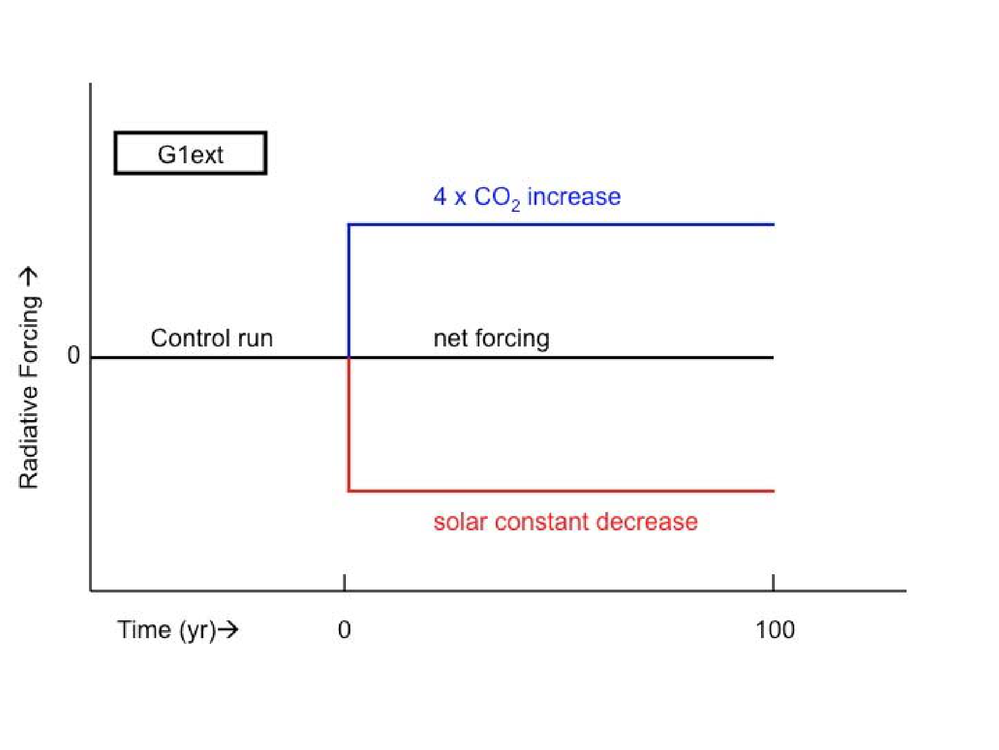
图 2. G6sulfur 与 G6solar 实验示意图。
Figure 2. Schematic of experiments G6sulfur and G6solar.
修正后：在 ScenarioMIP Tier 1 高强迫情景的背景下，将以随时间变化的量值实施地球工程，使净人为辐射强迫回到 ScenarioMIP Tier 1 中等强迫情景的水平。
Against a background of the ScenarioMIP Tier 1 high forcing scenario, geoengineering will be conducted at time‐varying amounts to return net anthropogenic radiative forcing to the levels of the ScenarioMIP Tier 1 medium forcing scenario.
修正原因：time-varying amounts 改译为“随时间变化的量值”，更贴合原文 amounts 一词。
地球工程将通过平流层气溶胶注入（G6sulfur）或太阳辐照度降低（G6solar）来实现。
Geoengineering will be accomplished by stratospheric aerosol injection (G6sulfur) or solar irradiance reduction (G6solar).
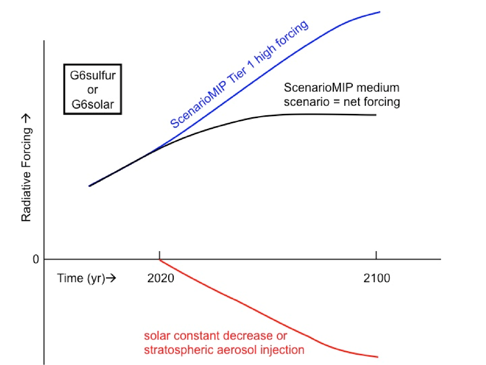
图 3. 降低卷云光学厚度 (τ) 的检验模拟，如第 2.4 节所述。
Figure 3. Test simulations of reducing cirrus cloud optical depth (τ) as described in Section 2.4.
τ 被乘以一个因子 ε < 1（x 轴）。
τ was scaled by a factor ε < 1 (x‐axis).
该缩放所引起的地表气温变化量（y 轴）按 4 年平均值计量；0 表示 RCP8.5 模拟中 2020–2023 年的全球平均地表气温。
The amount of surface air temperature change due to this scaling (y‐axis) was measured over a 4 year average; 0 indicates the global mean surface air temperature over years 2020‐2023 in an RCP8.5 simulation.
所有模拟均使用 GISS ModelE2 (Schmidt et al., 2014) 完成。
All simulations were performed using GISS ModelE2 (Schmidt et al., 2014).
边界说明：本单元交付的 6 个预裁剪插图文件中未包含图 3（第 122 页）的图片，故此页无图片占位符。
Boundary note: no pre-cropped image asset for Figure 3 (page 122) is included among the six figure files delivered for this unit, so no image placeholder is inserted on this page.
图 4. 在 NorESM1-ME 中改变卷云冰晶沉降速度所产生影响的敏感性研究。
Figure 4. A sensitivity study of the effects of changing cirrus ice crystal sedimentation velocity in NorESM1‐ME.
vfx2、vfx4 和 vfx8 分别表示沉降速度提高 2 倍、4 倍和 8 倍。
vfx2, vfx4, and vfx8 indicate an increase in the sedimentation velocity by 2, 4, and 8 times, respectively.
y 轴表示全球平均温度变化随年份（x 轴）的变化；差值相对于 RCP8.5 情景下 2050–2055 年的平均值计算。
y‐axis shows the global mean temperature change as a function of year (x‐axis); differences are calculated with respect to an average over years 2050‐2055 under an RCP8.5 scenario.
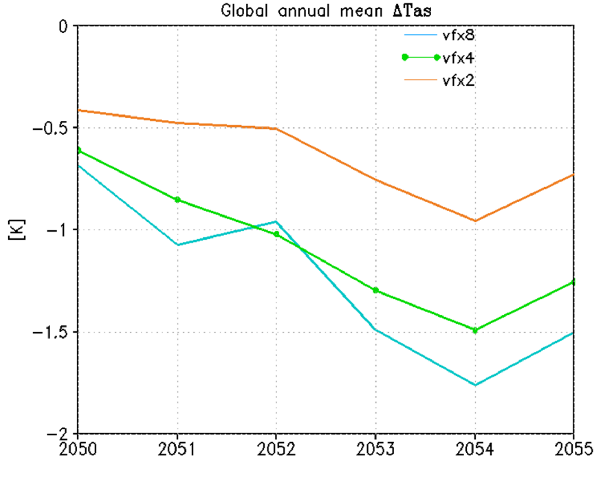
图 5. 卷云冰晶下落速度增至 8 倍时，NorESM1-ME 相对湿度差值的纬向平均年平均值（%）。
Figure 5. Zonally averaged annual mean of the difference in relative humidity (%) from NorESM1‐ME for an octupling of the cirrus ice crystal fall speed.
差值以 RCP8.5 为背景，按 2050–2055 年的平均值计算。
Differences are calculated as an average over years 2050‐2055 against a background of RCP8.5.
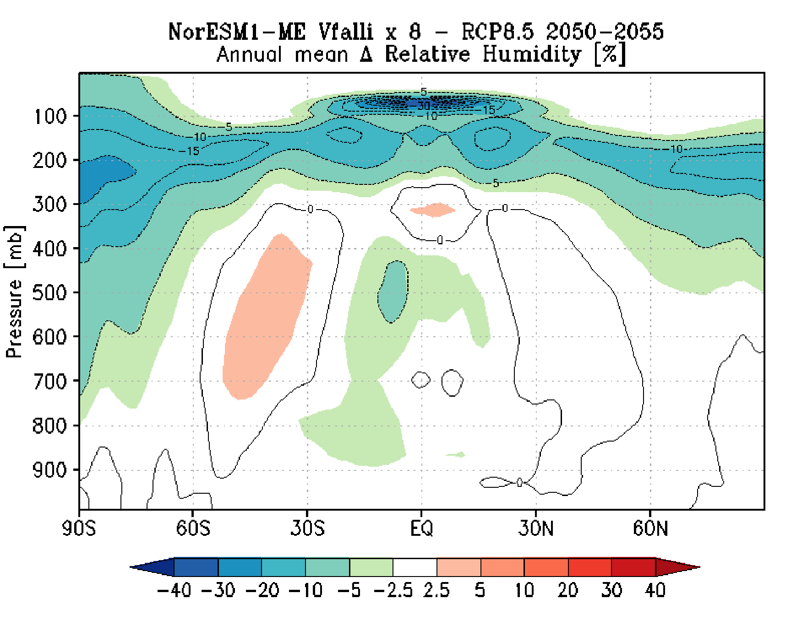
图 6. G7cirrus 实验示意图。
Figure 6. Schematic of experiment G7cirrus.
以 ScenarioMIP Tier 1 高强迫情景为背景情景，卷云播撒的参数化表示将使净强迫降低一个恒定值。
Against a background scenario of the ScenarioMIP Tier 1 high forcing scenario, a representation of cirrus cloud seeding will reduce net forcing by a constant amount.
该模拟将从 2020 年开始，并持续进行 80 年。
This simulation will begin in 2020 and will be conducted for 80 years.
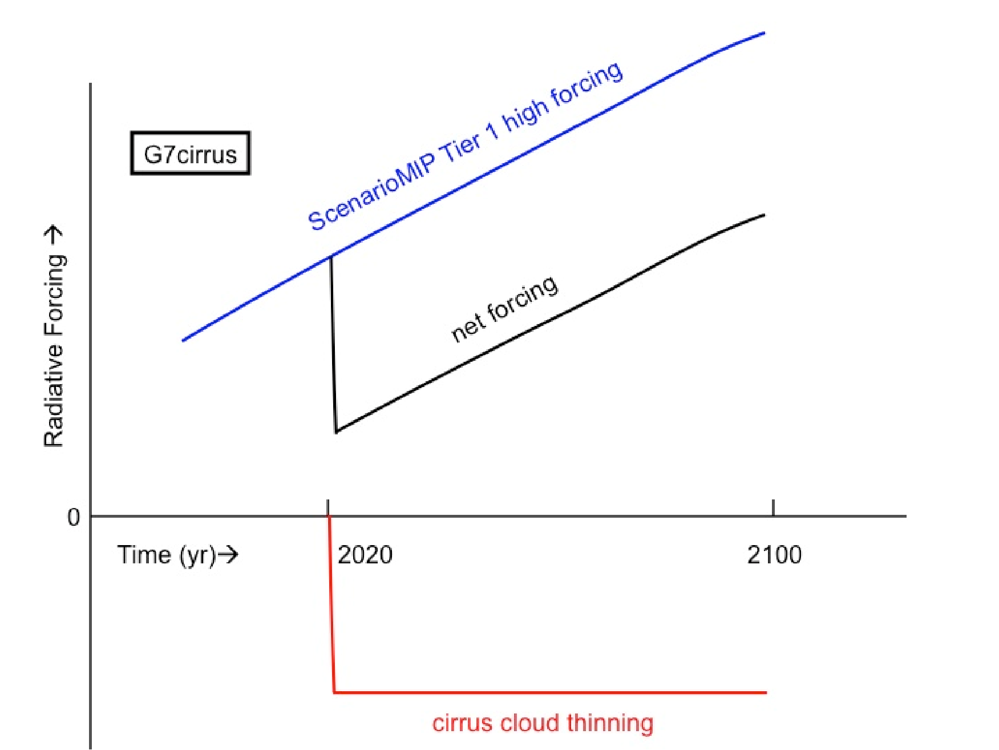
图 7. 本图显示在 ECHAM5-HAM（一种包含硫酸盐气溶胶微物理演化处理的大气环流模式）中，抵消给定水平的大气顶净辐射通量失衡（y 轴）所需的每年平流层注入量（x 轴）。
Figure 7. This figure shows the amount of annual stratospheric injection (x‐axis) required to offset a given level of TOA net radiative flux imbalance (y‐axis) in ECHAM5‐HAM, an atmospheric general circulation model with a treatment of the microphysical evolution of sulfate aerosols.
在 RCP8.5 背景下维持大气顶净辐射通量失衡的 2020 年水平，需要在 2100 年注入约 70 Tg(S)/年（基于对上述数值的外推）。
Maintaining 2020 values of net TOA radiative flux imbalance against a background of RCP8.5 requires an injection of approximately 70 Tg(S)/year in 2100 (based on extrapolation of the above values).
所有数值均按向赤道上空一个网格单元注入 SO2 计算；其他注入策略要达到相同的辐射强迫，可能需要不同的注入速率。
All values were calculated for injection of SO2 into one grid box over the equator; other injection strategies would likely require a different injection rate to achieve the same radiative forcing.
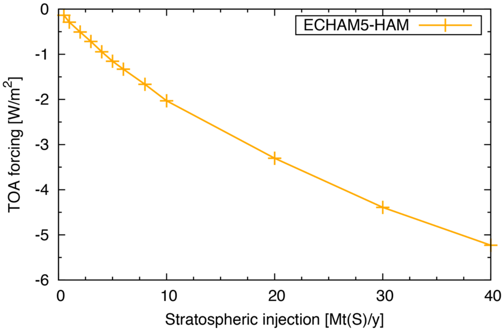
GMMIP (Global Monsoons MIP) ｜ 全球季风模式比较计划
全球季风模拟比较计划（GMMIP）
CMIP6 认可比较计划（CMIP6-Endorsed MIPs）申请书
最后更新：2015 年 3 月 31 日
Global Monsoons Modeling Inter-comparison Project (GMMIP)
Application for CMIP6-Endorsed MIPs
Last updated: 31 March 2015
主席：
周天军，中国科学院大气物理研究所，中国（zhoutj@lasg.iap.ac.cn）
Andy Turner，雷丁大学，英国（a.g.turner@reading.ac.uk）
James Kinter，COLA，乔治梅森大学，美国（ikinter@gmu.edu）
Chairs:
Tianjun Zhou, Institute of Atmospheric Physics, Chinese Academy of Sciences, China (zhoutj@lasg.iap.ac.cn)
Andy Turner, University of Reading, UK (a.g.turner@reading.ac.uk)
James Kinter, COLA, George Mason University, USA (ikinter@gmu.edu)
科学指导委员会建议成员（将纳入来自非洲和美洲季风研究界的新成员以及 GMMIP 合作伙伴）：
Bin Wang，夏威夷大学，美国（wangbin@hawaii.edu）
Yun Qian，太平洋西北国家实验室大气科学与全球变化部，美国（yun.qian@pnnl.gov）
Bin Wang，中国科学院大气物理研究所，中国（wab@lasg.iap.ac.cn）
Annalisa Cherchi，CMCC，意大利（annalisa.cherchi@ingv.it）
Suggested Members of the Scientific Steering Committee (new members from African and American monsoon communities, and GMMIP partners will be included)
Bin Wang, University of Hawaii, USA (wangbin@hawaii.edu)
Yun Qian, Atmospheric Sciences & Global Change Division, Pacific Northwest National Laboratory, USA (yun.qian@pnnl.gov)
Bin Wang, Institute of Atmospheric Physics, Chinese Academy of Sciences, China (wab@lasg.iap.ac.cn)
Annalisa Cherchi, CMCC, Italy (annalisa.cherchi@ingv.it)
网站：
http://www.lasg.ac.cn/gmmip
Website:
http://www.lasg.ac.cn/gmmip
提出方：
CLIVAR AAMP、CLIVAR-GEWEX MP、CLIVAR/C20C+，与中国 LASG/IAP 及美国 PNNL 合作
Proposed by:
CLIVAR AAMP, CLIVAR-GEWEX MP, CLIVAR/C20C+, in collaboration with LASG/IAP, China and PNNL, USA
GMMIP 的目标：
全球季风的降水与大气环流变化因其影响着世界三分之二以上的人口，而具有重大的科学与社会意义。季风出现在世界多个地区。对未来几十年季风降水变化的预测关系到重大的社会关切，对基础设施建设规划、水资源管理和可持续经济发展至关重要。
Goal of GMMIP:
Changes in the precipitation and atmospheric circulation in the global monsoons are of great scientific and societal importance owing to their impacts on more than two-thirds of the world’s population. Monsoons occur in various regions around the world. Prediction of the monsoon rainfall change in the coming decades is of deep societal concern and vital for infrastructural planning, water resource management, and sustainable economic development.
世界上主要的季风系统包括亚洲-澳大利亚季风、非洲季风和美洲季风。每个季风系统在变率方面通常都有其独特而具体的特征。同时，质量守恒所要求的全球辐散环流中的联系，将各个区域季风在随季节演变的过程中相互联结。在年际到多年代际时间尺度上，有证据表明北半球（NH）与南半球（SH）的季风降水呈现一致的变化，受 ENSO 和大气下边界其他全球气候变率模态的驱动。
The dominant monsoon systems in the world include the Asian-Australian, African, and the American monsoons. Each monsoon system generally has its own unique and specific characteristics in terms of variability. At the same time, the connections in the global divergent circulation necessitated by mass conservation link the various regional monsoons as they evolve through the season. On interannual-to-multidecadal time scales, there is evidence that monsoon precipitation in the Northern Hemisphere (NH) and Southern Hemisphere (SH) varies coherently, driven by ENSO and other global modes of climate variability at the lower boundary of the atmosphere.
季风面积与降水强度的变化共同导致了自 20 世纪 50 年代以来全球陆地季风降水累积量的总体减弱趋势。
The combination of changes in monsoon area and rainfall intensity has led to an overall weakening trend of global land monsoon rainfall accumulation since the 1950s.
这一减弱趋势主要由非洲季风和南亚季风主导，原因是降水强度和季风覆盖范围均呈显著减弱趋势。然而，自 20 世纪 80 年代开始，北半球全球季风降水呈现上升趋势。
This decreasing tendency is dominated by the African and South Asian monsoons, due to the significant decreasing tendencies of both rainfall intensity and monsoon coverage. Beginning in the 1980s, however, the NH global monsoon precipitation has shown an upward trend.
理解全球季风降水变化的机制，并识别自然与人为强迫因子的作用，一直是季风研究界的核心关注点。
Understanding the mechanisms of precipitation changes in the global monsoons and identifying the roles of natural and anthropogenic forcing agents have been foci of the monsoon research community.
虽然所有季风都是大尺度的跨赤道翻转环流，但不同区域季风的特征之间存在重大差异，这是因为地形不同所致。这一点在亚洲地区最为明显，原因是青藏高原（TIP）/喜马拉雅山脉的存在。
While all monsoons are large-scale cross-equatorial overturning circulations, major differences between characteristics of the different regional monsoons arise because of the different orography. This is most apparent for the Asia region, due to the TIP/Himalaya.
气候模式是研究气候变率与气候变化的有用工具。然而，当前最先进的气候模式在季风区的表现非常差，亟需大幅改进。
Climate models are useful tools in climate variability and climate change studies. However, the performance of the current state-of-the-art climate models is very poor and needs to be greatly improved over the monsoon domains.
全球季风模式比较计划（以下简称 GMMIP）旨在通过开展多模式比较，加深我们对全球季风系统物理过程的理解，并更好地模拟全球季风的平均态、年际变率和长期变化。
The Global Monsoons Model Inter-comparison Project (hereafter GMMIP) aims to improve our understanding of physical processes in global monsoon systems and to better simulate the mean state, interannual variability and long-term change of global monsoons by performing multi-model inter-comparisons.
内部变率（IPO——太平洋年代际振荡，AMO——大西洋多年代际振荡）与外部人为强迫对 20 世纪和 21 世纪全球季风历史演变的贡献也将得到研究。
The contributions of internal variability (IPO-Interdecadal Pacific Oscillation, AMO-Atlantic Multidecadal Oscillation) and external anthropogenic forcing to the historical evolution of global monsoons in the 20th and 21st century will be addressed.
主要科学问题：
1）内部过程与外部强迫对驱动 20 世纪全球季风历史演变的相对贡献分别是什么？
Primary Science Questions:
1) What are the relative contributions of internal processes and external forcing that are driving the 20th century historical evolution of global monsoons?
2）大气-海洋相互作用在多大程度上、以何种方式影响年际变率和可预报性？
2) To what extent and how does the atmopshere-ocean interaction contribute to the interannual variability and predictability?
3）欧亚大陆地形，尤其是喜马拉雅山脉/青藏高原，对区域/全球季风有何影响？
3) What are the effects of Eurasian orography, in particular the Himalaya/Tibetan Plateau, on the regional/global monsoons?
4）发展高分辨率模式、改进模式动力与物理过程，能在多大程度上帮助可靠地模拟季风降水及其变率与变化？
4) How well can developing high-resolution models and improving model dynamics and physics help to reliably simulate monsoon precipitation and its variability and change?
通过聚焦解决这四个问题，我们期望加深对模式再现季风平均态及其自然变率能力、以及对自然与人为强迫响应能力的理解，这最终将有助于减少模式不确定性、提高模式在预估季风未来变化方面的可信度。这些协调试验也将有助于推进我们对季风变化的物理理解与预测。
By focusing on addressing these four questions we expect to deepen our understanding of models’ capability in reproducing the monsoon mean state and its natural variability as well as the forced response to natural and anthropogenic forcing, which ultimately will help to reduce model uncertainty and improve the credibility of models in projecting future changes in the monsoon. The coordinated experiments will also help advance our physical understanding and prediction of monsoon changes.
由于当前模式中物理参数化存在不确定性，解决这些问题的最佳途径是采用多模式框架。CMIP6 为推进季风模拟与理解提供了良好机遇。GMMIP 将为 WCRP 五大科学挑战中的四项做出贡献，即：区域气候信息、水资源可利用性、气候极端事件，以及云、环流与气候敏感度。
Due to the uncertainties in the physical parameterizations in current models, the best way to address these questions is through a multi-model framework. CMIP6 provides a good opportunity for advancement of monsoon modeling and understanding. GMMIP will contribute to four of the five grand challenges of the WCRP, viz. Regional Climate Information, Water Availability, Climate Extremes, and Clouds, Circulation and Climate Sensitivity.
拟议试验：
GMMIP 的主要试验将分为层级1（Tier 1）和层级2（Tier 2），并在层级3（Tier 3）中设有更多可选设想。GMMIP 的全部试验汇总于表 1。层级1试验将是扩展的 AMIP（大气模式比较计划）运行，这是参与 GMMIP 的入门条件。
Proposed Experiments:
The main experiments of GMMIP will be divided into Tier 1 and Tier 2, with further optional ideas in Tier 3. The total experiments of GMMIP are summarized in Table 1. The Tier-1 experiments will be extended AMIP runs. This is the entry card for GMMIP.
表 1：GMMIP 试验列表（表注：本表正文见第 129 页，共 6 个试验，列名依次为层级、试验名、积分时段、试验设计的简短说明与目的、模式类型）
Table 1: Experiment list of GMMIP
层级（Tier）｜试验名｜积分时段｜试验设计的简短说明与目的｜模式类型
EXP name | Integration time | Short description and purpose of the EXP design | Model type
| 层级（Tier） | 试验名 | 积分时段 | 试验设计的简短说明与目的 | 模式类型 |
|---|
层级｜试验名｜积分时段｜试验设计的简短说明与目的｜模式类型 Tier-1｜AMIP20C｜1870-2013｜覆盖 1850-2014 年的扩展 AMIP 运行。将包含 CMIP6 历史模拟中使用的所有自然与人为历史强迫。AGCM 分辨率同 CMIP6 历史模拟。将使用 HadISST 数据。最少积分次数为 1，鼓励 3 次以上的实现。｜AGCM
Tier-1 | AMIP20C | 1870-2013 | Extended AMIP run that covers 1850-2014. All natural and anthropogenic historical forcings as used in CMIP6 Historical Simulation will be included. AGCM resolution as CMIP6 Historical Simulation. The HadISST data will be used. Minimum number of integrations is 1, realizations more than 3 are encouraged. | AGCM
| 层级 | 试验名 | 积分时段 | 试验设计的简短说明与目的 | 模式类型 |
|---|---|---|---|---|
| Tier-1 | AMIP20C | 1870-2013 | 覆盖 1850-2014 年的扩展 AMIP 运行。将包含 CMIP6 历史模拟中使用的所有自然与人为历史强迫。AGCM 分辨率同 CMIP6 历史模拟。将使用 HadISST 数据。最少积分次数为 1，鼓励 3 次以上的实现。 | AGCM |
层级｜试验名｜积分时段｜试验设计的简短说明与目的｜模式类型 Tier-2｜HIST-IPO｜1870-2013｜20 世纪历史"起搏器"运行，包含 CMIP6 历史模拟中使用的所有强迫，并将观测历史 SST 恢复到 IPO 域的热带瓣区（20°S-20°N，175°E-75°W）；用于理解与 IPO 相关的热带 SST 对全球季风变化的强迫作用。模式分辨率同 CMIP6 历史模拟。将使用 HadISST 数据。最少积分次数为 3，鼓励更多实现。｜CGCM，SST 恢复到模式气候态 + IPO 域热带瓣区的观测历史异常
Tier-2 | HIST-IPO | 1870-2013 | Pacemaker 20th century historical run that includes all forcing as used in CMIP6 Historical Simulation, and the observational historical SST is restored in the tropical lobe of the IPO domain (20°S-20°N, 175°E-75°W); to understand the forcing of IPO-related tropical SST to global monsoon changes. Models resolutions as CMIP6 Historical Simulation. The HadISST data will be used. Minimum number of integrations is 3, more realizations are encouraged. | CGCM with SST restored to the model climatology plus observational historical anomaly in the tropical lobe of IPO domain
| 层级 | 试验名 | 积分时段 | 试验设计的简短说明与目的 | 模式类型 |
|---|---|---|---|---|
| Tier-2 | HIST-IPO | 1870-2013 | 20 世纪历史"起搏器"运行，包含 CMIP6 历史模拟中使用的所有强迫，并将观测历史 SST 恢复到 IPO 域的热带瓣区（20°S-20°N，175°E-75°W）；用于理解与 IPO 相关的热带 SST 对全球季风变化的强迫作用。模式分辨率同 CMIP6 历史模拟。将使用 HadISST 数据。最少积分次数为 3，鼓励更多实现。 | CGCM，SST 恢复到模式气候态 + IPO 域热带瓣区的观测历史异常 |
层级｜试验名｜积分时段｜试验设计的简短说明与目的｜模式类型 Tier-2｜HIST-AMO｜1870-2013｜20 世纪历史"起搏器"运行，包含 CMIP6 历史模拟中使用的所有强迫，并将观测历史 SST 恢复到 AMO 域（0°-70°N，70°W-0°）；用于理解与 AMO 相关的 SST 对全球季风变化的强迫作用。模式分辨率同 CMIP6 历史模拟。将使用 HadISST 数据。最少积分次数为 3，鼓励更多实现。｜CGCM，SST 恢复到模式气候态 + AMO 域的观测历史异常
Tier-2 | HIST-AMO | 1870-2013 | Pacemaker 20th century historical run that includes all forcing as used in CMIP6 Historical Simulation, and the observational historical SST is restored in the AMO domain (0°-70°N, 70°W-0°); to understand the forcing of AMO-related SST to global monsoon changes. Models resolutions as CMIP6 Historical Simulation. The HadISST data will be used. Minimum number of integrations is 3, more realizations are encouraged. | CGCM with SST restored to the model climatology plus observational historical anomaly in the AMO domain
| 层级 | 试验名 | 积分时段 | 试验设计的简短说明与目的 | 模式类型 |
|---|---|---|---|---|
| Tier-2 | HIST-AMO | 1870-2013 | 20 世纪历史"起搏器"运行，包含 CMIP6 历史模拟中使用的所有强迫，并将观测历史 SST 恢复到 AMO 域（0°-70°N，70°W-0°）；用于理解与 AMO 相关的 SST 对全球季风变化的强迫作用。模式分辨率同 CMIP6 历史模拟。将使用 HadISST 数据。最少积分次数为 3，鼓励更多实现。 | CGCM，SST 恢复到模式气候态 + AMO 域的观测历史异常 |
层级｜试验名｜积分时段｜试验设计的简短说明与目的｜模式类型 Tier-3｜DTIP｜1979-2013｜通过将地表高程改为 500m 来修改青藏高原（TIP）地形；用于理解 TIP 的综合热力与动力强迫。所用模式同 DECK。最少积分次数为 1。｜AGCM
Tier-3 | DTIP | 1979-2013 | The topography of the TIP is modified by setting surface elevations to 500m; to understand the combined thermal and mechanical forcing of the TIP. Same model as DECK. Minimum number of integrations is 1. | AGCM
| 层级 | 试验名 | 积分时段 | 试验设计的简短说明与目的 | 模式类型 |
|---|---|---|---|---|
| Tier-3 | DTIP | 1979-2013 | 通过将地表高程改为 500m 来修改青藏高原（TIP）地形；用于理解 TIP 的综合热力与动力强迫。所用模式同 DECK。最少积分次数为 1。 | AGCM |
层级｜试验名｜积分时段｜试验设计的简短说明与目的｜模式类型 Tier-3｜DTIP-DSH｜1979-2013｜不允许 TIP 上 500m 以上高程处释放的地表感热加热大气；用于对比去除热力效应的影响。所用模式同 DECK。最少积分次数为 1。｜AGCM
Tier-3 | DTIP-DSH | 1979-2013 | Surface sensible heat released at the elevation above 500m over the TIP is not allowed to heat the atmosphere; to compare of impact of removing thermal effects. Same model as DECK. Minimum number of integrations is 1. | AGCM
| 层级 | 试验名 | 积分时段 | 试验设计的简短说明与目的 | 模式类型 |
|---|---|---|---|---|
| Tier-3 | DTIP-DSH | 1979-2013 | 不允许 TIP 上 500m 以上高程处释放的地表感热加热大气；用于对比去除热力效应的影响。所用模式同 DECK。最少积分次数为 1。 | AGCM |
层级｜试验名｜积分时段｜试验设计的简短说明与目的｜模式类型 Tier-3｜DHLD｜1979-2013｜通过将地表高程改为某一高度（500m）来修改非洲、北美洲和南美洲的高地地形。所用模式同 DECK。最少积分次数为 1。｜AGCM
Tier-3 | DHLD | 1979-2013 | The topography of the highlands in Africa, N. America and S. America TP is modified by setting surface elevations to a certain height (500m). Same model as DECK. Minimum number of integrations is 1. | AGCM
| 层级 | 试验名 | 积分时段 | 试验设计的简短说明与目的 | 模式类型 |
|---|---|---|---|---|
| Tier-3 | DHLD | 1979-2013 | 通过将地表高程改为某一高度（500m）来修改非洲、北美洲和南美洲的高地地形。所用模式同 DECK。最少积分次数为 1。 | AGCM |
层级2 HIST-IPO 运行是 20 世纪历史气候模拟的"起搏器"运行，包含所有强迫，海表温度（SST）恢复到模式气候态加上太平洋年代际振荡（IPO；Power et al. 1999；Folland et al. 2002）域（20°S-20°N，175°E-75°W）热带瓣区的观测历史异常：内区（15°S-15°N，180°-80°W）权重=1，从内区到外区的缓冲带（纬向和经向范围均为 5°）内权重线性减小至零。
The Tier-2 HIST-IPO run is Pacemaker 20th century historical climate simulation that includes all forcing, and the sea surface temperature (SST) restored to the model climatology plus observational historical anomaly in the tropical lobe of the Interdecadal Pacific Oscillation (IPO; Power et al. 1999; Folland et al. 2002) domain (20°S-20°N, 175°E-75°W): the weight=1 in the inner box (15°S-15°N, 180°-80°W), linearly reduced to zero in the buffer zone (zonal and meridional ranges are both 5°) from the inner to outer box.
层级2 HIST-AMO 运行是 20 世纪历史气候模拟的"起搏器"运行，包含所有强迫，SST 恢复到模式气候态加上大西洋多年代际振荡（AMO；Enfield et al. 2001；Trenberth and Shea 2006）域（0°-70°N，70°W-0°）的观测历史异常：内区（5°N-65°N，65°W-5°W）权重=1，从内区到外区的缓冲带（纬向和经向范围均为 5°）内权重线性减小至零。
The Tier-2 HIST-AMO run is Pacemaker 20th century historical climate simulation that includes all forcing, and the SST restored to the model climatology plus observational historical anomaly in the Atlantic Multidecadal Oscillation (AMO; Enfield et al. 2001; Trenberth and Shea 2006) domain (0°-70°N, 70°W-0°): the weight=1 in the inner box (5°N-65°N, 65°W-5°W), linearly reduced to zero in the buffer zone (zonal and meridional ranges are both 5°) from the inner to outer box.
在层级3 DTIP 试验中，遵循 Boos 和 Kuang（2011, 2013）以及 Wu 等人（2007, 2012）的做法，将模式中青藏高原（以下简称 TIP）（20-60°N，25-120°E）的地形削平至某一高度（例如 500m），地表属性保持不变。积分的其他设置与标准 DECK AMIP 运行相同。该试验代表相对于标准 DECK AMIP 运行对 TIP 热力与动力强迫的扰动。
In Tier-3 DTIP run, following Boos and Kuang (2011, 2013) and Wu et al. (2007, 2012), the topography of the Tibetan Plateau(hereafter TIP) (20-60oN, 25-120oE) in the model is modified by leveling off the TIP to a certain height (e.g. 500m), with the surface properties unchanged. Other settings of the integration are the same as the standard DECK AMIP run. This experiment represents perturbations to both thermal and mechanical forcing of the TIP with respect to the standard DECK AMIP run.
在层级3 DTIP-DSH 试验中，不允许 TIP 上 500m 以上高程处的地表感热通量加热大气，即将大气热力学方程中的垂直扩散加热项设为零（Wu et al. 2012）。积分的其他设置与标准 DECK AMIP 运行相同。标准 DECK AMIP 运行与 DTIP-DSH 之间的差异被认为代表了仅去除 TIP 热力强迫的效应，因此 DTIP-DSH 的环流型反映了动力强迫的影响。
In Tier-3 DTIP-DSH run, the surface sensible heat flux at elevations above 500m over the TIP is not allowed to heat the atmosphere, i.e., the vertical diffusive heating term in the atmospheric thermodynamic equation is set to zero (Wu et al. 2012).Other settings of the integration are the same as the standard DECK AMIP run. The differences between the standard DECK AMIP run and the DTIP-DSH are considered to represent the removal of TIP thermal forcing only and thus the circulation pattern of DTIP-DSH reflects the impacts of mechanical forcing.
GMMIP 试验的分析说明：
GMMIP 的分析包括四项任务：
Description of the analysis of GMMIP experiments:
There are four tasks in the analysis of GMMIP:
1）任务1：20 世纪的全球季风变化
2）任务2：欧亚大陆地形对区域/全球季风的作用（喜马拉雅/青藏高原试验）
3）任务3：全球季风降水的年际变率
4）任务4：全球季风的高分辨率模拟
1) Task-1: The global monsoons changes in the 20th century
2) Task-2: The role of Eurasian orography on the regional/global monsoons (Himalaya/Tibetan Plateau experiment)
3) Task-3: Interannual variability of global monsoon precipitations
4) Task-4: High resolution modeling of global monsoons
四项任务的分析将使用 GMMIP 试验、DAMIP（检测与归因模式比较计划）试验、HighResMIP 试验、CMIP6 历史模拟以及 DECK 的 AMIP 试验的输出。
The analysis of fours tasks will use the outputs of GMMIP experiments, DAMIP (Detection and Attribution MIP) experiments, HighResMIP experiments, the CMIP6 Historical Simulation, and the AMIP experiments of DECK.
与 DECK 和 CMIP6 历史模拟的联系：
DECK 模拟将作为参与 CMIP6 认可比较计划的入门条件。DECK 试验包括：
Connection with DECK and CMIP6 Historical Simulation
The DECK simulations will serve as an entry card for the CMIP6-Endorsed MIPS. The DECK experiments are:
• 突增 4XCO2
• Switch-on 4XCO2
原译"• 瞬时 4XCO2"改为"• 突增 4XCO2"，与 DECK 突增强迫术语一致（见 13-gmmip.part05.html）。
具有标准 CMIP6 分辨率的 AMIP DECK 模拟将用于 GMMIP 的分析。GMMIP 的层级1 AGCM 试验将指定与 1850-2014 年历史模拟（即 CMIP6 历史模拟）一致的具体强迫。
The AMIP DECK simulation with the standard CMIP6 resolution will be used in the analysis of GMMIP. The Tier-1 AGCM experiment of GMMIP will specify the specific forcings which are consistent with the historical simulation from 1850-2014, viz. the CMIP6 Historical Simulation.
与其他 MIP 的联系：
Connection with other MIPs
DAMIP（检测与归因模式比较计划）：
DAMIP 的 histALL（扩大 DECK 中历史全强迫运行的集合规模）、histNAT（仅自然强迫的历史运行）、histGHG（仅充分混合温室气体强迫的历史运行）和 histAER 试验（仅人为气溶胶强迫的历史运行）将用于 GMMIP 任务1 的分析。
DAMIP (Detection and Attribution MIP):
The histALL (enlarging ensemble size of historical ALL foring runs in DECK), histNAT (Historical natural-only run), histGHG (Historical well-mixed GHG-only run), histAER experiments (Historical anthropogenic-Aerosols-only run) of DAMIP will be used in the analysis of Task-1 of GMMIP.
histALL、histNAT 和 histGHG 的组合将使我们能够在温室气体、其他人为因子和自然强迫贡献的背景下，理解观测到的 20 世纪全球季风降水与环流变化。这些外部强迫的贡献将与 IPO 和 AMO 等内部变率模态的贡献进行比较。
Combinations of histALL, histNAT and histGHG will allow us to understand the observed the 20th century global monsoon precipitation and circulation changes in the context of contributions from GHG, the other anthropogenic factors and natural forcing. The contributions of these external forcings will be compared to those from internal variability modes such as IPO and AMO.
HighResMIP：
HighResMIP 的层级1试验是 AMIP 运行，但在中纬度采用最少 25-50 km 的高分辨率，并配有标准分辨率配置（1950-2014），将用于 GMMIP 任务4 的分析，该任务旨在检验高分辨率模式在再现全球季风平均态和逐年变率方面的表现。
HighResMIP:
The Tier-1 experiments of HighResMIP, which are AMIP runs but with minimum 25-50 km at mid-latitudes for high resolution and a standard resolution configuration (1950-2014), will be used in the analysis of Task-4 of GMMIP, which aims to examine the performance of high-resolution models in reproducing both the mean state and year-to-year variability of global monsoons.
HighResMIP 的层级2试验是耦合运行，由使用固定 1950 年代强迫的历史运行与对照运行成对组成，将用于 GMMIP 任务3 的分析，该任务旨在理解海气相互作用过程在改进季风平均态和逐年变率中的作用。
The Tier-2 experiments of HighResMIP, which are coupled runs consisting of pairs of both historic runs and control runs using fixed 1950s forcing, will be used in the analysis of Task-3 of GMMIP, which aims to understand the role of air-sea interaction process in the improvement of monsoon mean state and year-by-year variability.
WCRP 科学挑战：
GMMIP 将通过以下方式回应 WCRP 的科学挑战：
WCRP Grand Challenges:
GMMIP will address the grand challenges of the WCRP in the following way:
区域气候信息（排名 1）
GMMIP 将增进我们对全球季风区 20 世纪气候变化的理解。外部人为强迫（温室气体、气溶胶）、自然强迫和内部变率模态（IPO、AMO）的贡献将被识别。这些将为人口密集的全球季风区提供有用的气候预测/预估信息。
Regional Climate Information (rank 1)
GMMIP will improve our understanding of the 20th climate changes in global monsoon domains. The contributions of external anthropogenic forcings (GHG, aerosol), natural forcing, and internal variability modes (IPO, AMO) will be indentified. These would provide useful information for climate prediction/projections in the highly populated global monsoon domains.
水资源可利用性（排名 2）
全球季风区的水资源深受季风异常活动的影响。理解 GMMIP 提出的季风变率机制，将促进季风预测/预估的改进，并为决策者在水资源可利用性相关的决策中提供有用信息。
Water Availability (rank 2)
The water resources in global monsoon domains are greatly affected by the anomalous activities of monsoons. Understanding the mechanisms of monsoon variability as posed by GMMIP will lead to improvement of monsoon prediction/projection and provide useful information for policymakers in water availability-related decision making.
气候极端事件（排名 2）
特大干旱和洪涝等极端事件在全球季风区频繁发生。
Climate Extremes (rank 2)
Extreme events such as mega-droughts and flooding have been frequently occurred in global monsoon domains.
GMMIP 有望找出改进全球季风区气候极端事件模拟/预测的有用途径。
GMMIP is hopefully to identify the useful ways of improving the simulation/prediction of climate extremes in global monsoon domains.
云、环流与气候敏感度（排名 2）
对季风环流和云的合理模拟是成功模拟季风降水的前提。通过比较高分辨率与常规分辨率气候模式的表现，以及有无海气相互作用过程的模拟，GMMIP 的实施将在减少模式偏差和改进模式表现的意义上，把季风环流与季风降水联系起来。
Clouds, Circulation and Climate Sensitivity (rank 2).
A reasonable simulation of monsoon circulation and clouds is a prerequisite for a successful simulation of monsoon precipitation. By comparing the performances of climate models with high and normal resolutions, model simulations with/without air-sea interaction processes, the implementation of GMMIP will link the monsoon circulations to monsoon precipitation in the context of reducing model bias and improving model performances.
GEWEX 与 CLIVAR
季风一直是 GEWEX 和 CLIVAR 的研究重点。GMMIP 中列出的科学问题最初由 CLIVAR 亚洲-澳大利亚季风工作组、GEWEX/CLIVAR 季风工作组和 CLIVAR/C20C+ 项目提出。CLIVAR 研究机遇老虎团队关于"气候系统的年代际变率及其可预报性"、以及关于"季风系统的季节内、季节和年际变率与可预报性"的报告也强调了这些问题。
GEWEX and CLIVAR
Monsoon has been a research focus of GEWEX and CLIVAR. The scientific questions listed in GMMIP were originally identified by the CLIVAR Asian-Australian monsoon panel, the GEWEX/CLIVAR Monsoons Panel, and CLIVAR/C20C+ project. The questions have also been highlighted by the reports of CLIVAR Research Opportunities Tiger Team on “Decadal Variability in the Climate System and its Predictability”, and CLIVAR Research Opportunities Tiger Team on “Intra-seasonal, Seasonal and Interannual Variability and Predictability of Monsoon Systems”.
参与方式：
参与 GMMIP 是自愿和开放的。GMMIP 将由一个由气候诊断、气候变化归因和气候模拟界积极参与的代表组成的小型工作组协调。该工作组将尽可能广泛地吸纳科学界成员的投入与参与。
Participation:
Participation in GMMIP is voluntary and open. GMMIP will be coordinated by a small working group composed of engaged representatives from climate diagnosis, climate change attribution and climate modeling communities. This working group will engage the broadest degree of input and involvement from members of the scientific community.
GMMIP 科学指导委员会（SSC）将由来自 CLIVAR 与 GEWEX 季风工作组、相关项目和全球季风界的代表组成。SSC 将为 GMMIP 的分析提供意见和建议，重点关注提案中列出的科学问题。
The Scientific Steering Committee (SSC) of GMMIP will be composed of representatives from CLIVAR & GEWEX monsoon panels, relevant projects and the global monsoon community. The SSC will provide comments and instructions for the analysis of GMMIP with focus on the scientific questions listed in the proposal.
以下模式中心已表示有兴趣参与 GMMIP：
- ACCESS，澳大利亚（Harun Rashid，harun.rashid@csiro.au）
- BCC，中国（Xiaoge Xin，xinxg@cma.gov.cn）
- BNU，中国（Duoying Ji，duoyingji@bnu.edu.cn）
- CAMS-CSM，中国（rongur@cams.cma.gov.cn）
- CAS-ESM，中国（He Zhang，zhanghe@mail.iap.ac.cn）
- CanESM，加拿大（John Scinocca，john.scinocca@ec.gc.ca）
- CESM，美国（J. Fasullo）
- CESS-THU，中国（Jianbin Huang，jbh@mail.tsinghua.edu.cn）
- CFS-IITM-ESM，印度（R. Krishnan、P. Swapna 和 J. Sanjay）
The following modeling centers have expressed their interests in participating in GMMIP:
- ACCESS, Australia, (Harun Rashid,harun.rashid@csiro.au)
- BCC, China (Xiaoge Xin, xinxg@cma.gov.cn)
- BNU, China (Duoying Ji, duoyingji@bnu.edu.cn)
- CAMS-CSM, China (rongur@cams.cma.gov.cn)
- CAS-ESM, China (He Zhang, zhanghe@mail.iap.ac.cn)
- CanESM, Canada (John Scinocca , john.scinocca@ec.gc.ca)
- CESM, USA (J. Fasullo)
- CESS-THU, China (Jianbin Huang, jbh@mail.tsinghua.edu.cn)
- CFS- IITM-ESM, India (R. Krishnan, P. Swapna and J. Sanjay)
- CMCC，意大利（Annalisa Cherchi，annalisa.cherchi@ingv.it）
- CNRM，法国（herve.douville@meteo.fr，cassou@cerfacs.fr）
- HadGEM3，英国（Andrew Turner）
- IAP-LASG FGOALS，中国（Lixia Zhang，lixiazhang@mail.iap.ac.cn）
- IPSL，法国（Laurent.li@lmd.jussieu.fr，pascale.braconnot@lsce.ipsl.fr）
- FIO，中国（songroy@fio.org.cn；baoying@fio.org.cn）
- GISS，美国（Sonali McDermid，sps2113@columbia.edu，待定）
- GFDL，美国（Yi Ming，yi.ming@noaa.gov）
- MPI-ESM，德国（Juergen Bader，juergen.bader@mpimet.mpg.de）
- CMCC, Italy (Annalisa Cherchi, annalisa.cherchi@ingv.it)
- CNRM, France (herve.douville@meteo.fr, cassou@cerfacs.fr)
- HadGEM3, UK (Andrew Turner)
- IAP-LASG FGOALS, China (Lixia Zhang, lixiazhang@mail.iap.ac.cn)
- IPSL, France (Laurent.li@lmd.jussieu.fr, pascale.braconnot@lsce.ipsl.fr)
- FIO, China (songroy@fio.org.cn; baoying@fio.org.cn)
- GISS, USA (Sonali McDermid, sps2113@columbia.edu, TBC)
- GFDL, USA (Yi Ming, yi.ming@noaa.gov)
- MPI-ESM, Germany (Juergen Bader, juergen.bader@mpimet.mpg.de)
- MIROC，日本（Masahiro Watanabe，hiro@aori.u-tokyo.ac.jp）
- MRI，日本（Hirokazu Endo）
- NUIST-CSM，中国（pangchi@nuist.edu.cn）
- MIROC, Japan (Masahiro Watanabe, hiro@aori.u-tokyo.ac.jp)
- MRI, Japan (Hirokazu Endo)
- NUIST-CSM, China (pangchi@nuist.edu.cn)
拟议时间安排
试验开始：2016 年初
试验结束：无固定日期。
Proposed timing
Start of the experiments: Beginning of 2016
End of the experiments: No fixed date.
参考文献（依原文保留，不翻译）
References
（边界说明：以下参考文献条目 1-4 按原文保留，不翻译）
Boos, W. R. &Z. M. Kuang 2010: Dominant control of the South Asian monsoon by orographic insulation versus plateau heating. Nature 463, 218-223.
Boos, W.R. &Z. M. Kuang 2013: Sensitivity of the South Asian monsoon to elevated and non-elevated heating. Sci. Rep. 3, 1192; DOI:10.1038/srep01192.
Cook, B.I., and R. Seager, 2013: The response of the North American Monsoon to increased greenhouse gas forcing. J. Geophys. Res.,118, 1690-1699
Cook, K. H., G. A. Meehl, and J. M. Arblaster, 2012: Monsoon regimes and processes in CCSM4. Part II: African and American monsoon systems. J. Climate, 25, 2609-2621
Boos, W. R. &Z. M. Kuang 2010: Dominant control of the South Asian monsoon by orographic insulation versus plateau heating. Nature 463, 218-223.
Boos, W.R. &Z. M. Kuang 2013: Sensitivity of the South Asian monsoon to elevated and non-elevated heating. Sci. Rep. 3, 1192; DOI:10.1038/srep01192.
Cook, B.I., and R. Seager, 2013: The response of the North American Monsoon to increased greenhouse gas forcing. J. Geophys. Res.,118, 1690-1699
Cook, K. H., G. A. Meehl, and J. M. Arblaster, 2012: Monsoon regimes and processes in CCSM4. Part II: African and American monsoon systems. J. Climate, 25, 2609-2621
（参考文献条目 5-10 按原文保留，不翻译）
Enfield, D., A. Mestas-Nuñez, and P. Trimble (2001), The Atlantic Multidecadal Oscillation and its relation to rainfall and river flows in the continental U.S., Geophys. Res. Lett., 28, 2077–2080, doi:10.1029/2000GL012745.
Folland, C. K., J. A. Renwick, M. J. Salinger, and A. B. Mullan (2002), Relative influences of the Interdecadal Pacific Oscillation and ENSO on the South Pacific Convergence Zone, Geophys. Res. Lett., 29(13), 1643, doi:10.1029/ 2001GL014201.
Kitoh, A., H. Endo, K. Krishna Kumar, I.F.A. Cavalcanti, P. Goswami, T. Zhou, 2013: Monsoons in a changing world: a regional perspective in a global context. J. Geophys. Res., 118, 3053-3065,doi:10.1002/jgrd.50258.
Lin R., T. Zhou, Y. Qian, 2014: Evaluation of Global Monsoon Precipitation Changes based on Five Reanalysis Datasets, Journal of Climate,27(3),1271-1289
Liu, J., B. Wang, M.A. Cane, S.-Y. Yim, and J.-Y. Lee, 2013: Divergent global precipitation changes induced by natural versus anthropogenic forcing. Nature, 493, 656-659
Power, S., T. Casey, C. Folland, A. Colman, and V. Mehta (1999), Interdecadal modulation of the impact of ENSO on Australia, Clim. Dyn., 15, 319–324.
Enfield, D., A. Mestas-Nuñez, and P. Trimble (2001), The Atlantic Multidecadal Oscillation and its relation to rainfall and river flows in the continental U.S., Geophys. Res. Lett., 28, 2077–2080, doi:10.1029/2000GL012745.
Folland, C. K., J. A. Renwick, M. J. Salinger, and A. B. Mullan (2002), Relative influences of the Interdecadal Pacific Oscillation and ENSO on the South Pacific Convergence Zone, Geophys. Res. Lett., 29(13), 1643, doi:10.1029/ 2001GL014201.
Kitoh, A., H. Endo, K. Krishna Kumar, I.F.A. Cavalcanti, P. Goswami, T. Zhou, 2013: Monsoons in a changing world: a regional perspective in a global context. J. Geophys. Res., 118, 3053-3065,doi:10.1002/jgrd.50258.
Lin R., T. Zhou, Y. Qian, 2014: Evaluation of Global Monsoon Precipitation Changes based on Five Reanalysis Datasets, Journal of Climate,27(3),1271-1289
Liu, J., B. Wang, M.A. Cane, S.-Y. Yim, and J.-Y. Lee, 2013: Divergent global precipitation changes induced by natural versus anthropogenic forcing. Nature, 493, 656-659
Power, S., T. Casey, C. Folland, A. Colman, and V. Mehta (1999), Interdecadal modulation of the impact of ENSO on Australia, Clim. Dyn., 15, 319–324.
（参考文献条目 11-16 按原文保留，不翻译）
Qiu J. 2013: Monsoon Melee. Science, 340 (6139), 1400-1401; DOI:10.1126/ science.340.6139.1400.
Song, F., T. Zhou,and Y. Qian (2014), Responses of East Asian summer monsoon to natural and anthropogenic forcings in the 17 latest CMIP5 models, Geophys. Res. Lett., 41,doi:10.1002/2013GL058705
Song, F., T. Zhou, 2014: Interannual Variability of East Asian Summer Monsoon Simulated by CMIP3 and CMIP5 AGCMs: Skill Dependence on Indian Ocean–Western Pacific Anticyclone Teleconnection. J. Climate, 27, 1679-1697
Song F., T. Zhou, 2014: The climatology and inter-annual variability of East Asian summer monsoon in CMIP5 coupled models: Does air-sea coupling improve the simulations ? Journal of Climate, 27, 8761–8777
Sperber, K.R., H. Annamalai, I.-S. Kang, A. Kitoh, A. Moise, A. Turner, B. Wang and T. Zhou, 2013: The Asian summer monsoon: an intercomparison of CMIP5 vs. CMIP3 simulations of the late 20th century. Clim. Dynam., 41, 2771-2744, doi:10.1007/s00382- 012-1607-6.
Trenberth, K. E., and D. J. Shea (2006), Atlantic hurricanes and natural variability in 2005, Geophys. Res. Lett., 33, L12704, doi:10.1029/2006GL026894.
Qiu J. 2013: Monsoon Melee. Science, 340 (6139), 1400-1401; DOI:10.1126/ science.340.6139.1400.
Song, F., T. Zhou,and Y. Qian (2014), Responses of East Asian summer monsoon to natural and anthropogenic forcings in the 17 latest CMIP5 models, Geophys. Res. Lett., 41,doi:10.1002/2013GL058705
Song, F., T. Zhou, 2014: Interannual Variability of East Asian Summer Monsoon Simulated by CMIP3 and CMIP5 AGCMs: Skill Dependence on Indian Ocean–Western Pacific Anticyclone Teleconnection. J. Climate, 27, 1679-1697
Song F., T. Zhou, 2014: The climatology and inter-annual variability of East Asian summer monsoon in CMIP5 coupled models: Does air-sea coupling improve the simulations ? Journal of Climate, 27, 8761–8777
Sperber, K.R., H. Annamalai, I.-S. Kang, A. Kitoh, A. Moise, A. Turner, B. Wang and T. Zhou, 2013: The Asian summer monsoon: an intercomparison of CMIP5 vs. CMIP3 simulations of the late 20th century. Clim. Dynam., 41, 2771-2744, doi:10.1007/s00382- 012-1607-6.
Trenberth, K. E., and D. J. Shea (2006), Atlantic hurricanes and natural variability in 2005, Geophys. Res. Lett., 33, L12704, doi:10.1029/2006GL026894.
（参考文献条目 17-21 按原文保留，不翻译）
Wang B., Q. H. Ding, X. H. Fu, I.-S. Kang, K. Jin, J. Shukla, and F. Doblas-Reyes, 2005: Fundamental challenge in simulation and prediction of summer monsoon rainfall. Geophys. Res. Lett., 32, L15711, doi:10.1029/2005GL022734.
Wang, B., J. Liu, H.-J. Kim, P.J. Webster, S.-Y. Yim, and B. Xiang, 2013: Northern Hemisphere summer monsoon intensified by mega-El Niño/southern oscillation and Atlantic multidecadal oscillation. PNAS, 110 (14), 5347-5352, doi:10.1073/pnas.1219405110.
Wang, B., J. Liu, H.-J. Kim, P.J. Webster, and S.-Y. Yim, 2012: Recent Change of the Global Monsoon Precipitation (1979-2008). Clim. Dyn., 39 (5), 1123-1135
Wu, G., Y. Liu, T. Wang, et al., 2007: The Influence of the Mechanical andThermal Forcing of the Tibetan Plateau on the Asian Climate. J. Hydrometeorology 8: 770-789.
Wu, G., Y. Liu, B. He, Q. Bao, A.Duan& F.-F. Jin, 2012: Thermal Controls on the Asian Summer Monsoon. Sci. Rep. 2, 404; DOI:10.1038/srep00404.
Wang B., Q. H. Ding, X. H. Fu, I.-S. Kang, K. Jin, J. Shukla, and F. Doblas-Reyes, 2005: Fundamental challenge in simulation and prediction of summer monsoon rainfall. Geophys. Res. Lett., 32, L15711, doi:10.1029/2005GL022734.
Wang, B., J. Liu, H.-J. Kim, P.J. Webster, S.-Y. Yim, and B. Xiang, 2013: Northern Hemisphere summer monsoon intensified by mega-El Niño/southern oscillation and Atlantic multidecadal oscillation. PNAS, 110 (14), 5347-5352, doi:10.1073/pnas.1219405110.
Wang, B., J. Liu, H.-J. Kim, P.J. Webster, and S.-Y. Yim, 2012: Recent Change of the Global Monsoon Precipitation (1979-2008). Clim. Dyn., 39 (5), 1123-1135
Wu, G., Y. Liu, T. Wang, et al., 2007: The Influence of the Mechanical andThermal Forcing of the Tibetan Plateau on the Asian Climate. J. Hydrometeorology 8: 770-789.
Wu, G., Y. Liu, B. He, Q. Bao, A.Duan& F.-F. Jin, 2012: Thermal Controls on the Asian Summer Monsoon. Sci. Rep. 2, 404; DOI:10.1038/srep00404.
（参考文献条目 22-23 按原文保留，不翻译）
Zhou T., R. Yu, H. Li, and B. Wang, 2008, Ocean Forcing to Changes in Global Monsoon Precipitation over the Recent Half-Century, Journal of Climate, 21(15), 3833–3852
Zhou T., B. Wu, B. Wang, 2009, How Well Do Atmospheric General Circulation Models Capture the Leading Modes of the Interannual Variability of the Asian-Australian Monsoon? Journal of Climate, 22, 1159-1173
Zhou T., R. Yu, H. Li, and B. Wang, 2008, Ocean Forcing to Changes in Global Monsoon Precipitation over the Recent Half-Century, Journal of Climate, 21(15), 3833–3852
Zhou T., B. Wu, B. Wang, 2009, How Well Do Atmospheric General Circulation Models Capture the Leading Modes of the Interannual Variability of the Asian-Australian Monsoon? Journal of Climate, 22, 1159-1173
附录：GMMIP 四项任务科学目标的说明
Appendix: Description of the scientific objectives of four tasks of GMMIP
任务1：20 世纪的全球季风变化
全球季风在 20 世纪呈现出多年代际变化。理解全球季风变化的机制、识别自然与人为强迫因子的贡献，一直是季风研究界的核心关注点。任务1 旨在通过开展覆盖 1870 年至 2013 年时段的耦合、非耦合和部分耦合运行，揭示全球海洋强迫对季风降水变化的作用，并识别自然与人为强迫（温室气体和气溶胶）的相对贡献。
TASK-1: The global monsoons changes in the 20th century
The global monsoons have shown multi-decadal changes in the 20th century. Understanding the mechanisms of global monsoon changes and identifying the contributions of natural and anthropogenic forcing agents have been foci of the monsoon research community. TASK-1 aims to reveal the role of forcing from the global oceans on monsoon precipitation change, and identify the relative contributions of natural and anthropogenic forcing (greenhouse gases and aerosols) by performing coupled, uncoupled, and partly coupled runs that cover the period from 1870 to 2013.
任务2：欧亚大陆地形对区域/全球季风的作用（喜马拉雅/青藏高原试验）
虽然季风一般是大尺度翻转环流，但区域季风特征之间的明显差异源于不同的地形。这一点在亚洲地区最为明显，原因是青藏-伊朗高原（TIP）的存在。大尺度地形对亚洲夏季风的影响包括动力强迫和热力强迫两方面。关于地形效应，人们提出了多种机制；然而，界定决定这些效应的主导因子及其影响强度的总体范式仍存在争议。任务2 的目标是提供当前模式在模拟季风与青藏-伊朗高原（TIP，20-60°N、25-120°E 的高地）关系方面表现的基准，以推动对 TIP 对季风系统热力与动力效应的进一步研究。特别是将研究 TIP 热力强迫与地形动力强迫对亚洲季风的相对贡献。该任务将研究范围从 TIP 扩展到包括非洲、北美洲和南美洲高地在内的其他高地。
TASK-2: The role of Eurasian orography on the regional/global monsoons (Himalaya/Tibetan Plateau experiment)
Although monsoons are generally large-scale overturning circulations, apparent differences between characteristics of regional monsoons arise because of the different orography. This is most apparent for the Asia region, due to the existence of Tibetan – Iranian Plateau (TIP). The influence of the large-scale orography on the Asian summer monsoon includes both mechanical and thermal forcing. Various mechanisms have been suggested concerning the topographic effects; however, an overarching paradigm delineating the dominant factors determining these effects and the strength of impacts remains debated. The goals of TASK-2 are to provide a benchmark of current model behavior in simulating the relationship of the monsoon to the Tibetan-Iranian Plateau (TIP, the highlands in 20-60oN, 25-120oE) so as to stimulate further research on the thermodynamical and dynamical effects of the TIP on the monsoon system. In particular the relative contributions of thermal and orographic mechanical forcing by the TIP to the Asian monsoon will be addressed. The task extends the studies from the TIP to other highlands including highlands in Africa, N. America and S. America.
任务3：全球季风降水的年际变率
给定 SST 的 AGCM 模拟在模拟全球季风区夏季降水方面通常技巧较低，尤其是在亚洲-西太平洋夏季季风区。这可以部分归因于排除了海气耦合过程。有观点认为，在真实世界中，季风区的海气相互作用表现为"季风驱动海洋"，但在 AMIP 模拟中，相互作用机制在构造上则是"海洋驱动季风"（Wang et al. 2005）。任务3 旨在理解海气相互作用过程在驱动全球季风年际变率中的作用。
TASK-3: Interannual variability of global monsoon precipitations
AGCM simulations with specified SST generally have low skill in simulating the summer precipitation over global monsoon domains, especially the Asian-western Pacific summer monsoon domain. This can be partly attributed to the exclusion of air-sea coupled processes. It is argued that in the real world the air-sea interaction in monsoon domains appears as “monsoon-driving-ocean”, but in an AMIP simulation, the interaction mechanism is “ocean-driving-monsoon” by construction (Wang et al. 2005). The TASK-3 aims to understand the air-sea interaction process in driving the interannual variability of global monsoons.
任务4：全球季风的高分辨率模拟
季风雨带的最大宽度通常为 200 km。低分辨率或中等分辨率的气候模式通常无法真实再现季风降水的平均态和变率。这在一定程度上归因于模式分辨率。任务4 旨在检验高分辨率模式在再现全球季风平均态和逐年变率方面的表现。将使用高分辨率雨量计观测和卫星降水产品来评估模式的表现。
TASK-4: High resolution modeling of global monsoons
The monsoon rainbands are usually at a maximum width of 200 km. Climate models with low or moderate resolutions are generally unable to realistically reproduce the mean state and variability of monsoon precipitation. This is partly due to the model resolution. The TASK-4 aims to examine the performance of high-resolution models in reproducing both the mean state and year-to-year variability of global monsoons. High resolution rain-gauge observations and satellite precipitation products will be used to gauge models’ performances.
HighResMIP (High Resolution MIP) ｜ 高分辨率模式比较计划
HighResMIP CMIP6 认可申请
HighResMIP CMIP6 endorsement application
2015 年 6 月
June 2015
MIP 名称：HighResMIP
Name of MIP HighResMIP
联合主席：Rein Haarsma，荷兰皇家气象研究所（KNMI），荷兰（haarsma@knmi.nl）；Malcolm Roberts，英国气象局（Met. Office），英国（malcolm.roberts@metoffice.gov.uk）
Chairs Rein Haarsma, KNMI, The Netherlands. (haarsma@knmi.nl) Malcolm Roberts, Met. Office, UK. (malcolm.roberts@metoffice.gov.uk)
科学指导委员会（Scientific Steering Committee）建议成员：Graeme Stephens，喷气推进实验室（JPL），美国（graeme.stephens@jpl.nasa.gov）；Masahide Kimoto，东京大学（kimoto@aori.u-tokyo.ac.jp）；Christiane Jablonowski，密歇根大学，美国（cjablono@umich.edu）；Lai-Yung (Ruby) Leung，太平洋西北国家实验室（PNNL），美国（Ruby.Leung@pnnl.gov）
Suggested Members of the Scientific Steering Committee Graeme Stephens, JPL, USA (graeme.stephens@jpl.nasa.gov) Masahide Kimoto, Tokyo, University (kimoto@aori.u-tokyo.ac.jp) Christiane Jablonowski, Univ. Michigan, USA (cjablono@umich.edu) Lai-Yung (Ruby) Leung, PNNL, USA, Leung, (Ruby.Leung@pnnl.gov)
网站：http://www.wcrp-climate.org/index.php/modelling-wgcm-mip-catalogue/modelling-wgcm-mips/429wgcm-hiresmip；https://dev.knmi.nl/projects/highresmip/wiki
Websites http://www.wcrp-climate.org/index.php/modelling-wgcm-mip-catalogue/modelling-wgcm-mips/429wgcm-hiresmip https://dev.knmi.nl/projects/highresmip/wiki
HighResMIP 的目标
Goal of HighResMIP
我们希望首次在一个采用物理气候系统并施加约束气溶胶强迫的简化框架内，评估以“天气分辨”级别的全球模式分辨率（约 25 千米或更细）改进重要气候过程表征的稳健性。
For the first time, we want to assess the robustness of improvements in the representation of important climate processes with "weather-resolving" global model resolutions (~25km or finer), within a simplified framework using the physical climate system with constrained aerosol forcing.
近期使用全球高分辨率气候模式所做的模拟，与 CMIP3 和 CMIP5 归档中模式的输出相比，已经证明了提高分辨率带来的附加价值。
Recent simulations with global high-resolution climate models have demonstrated the added value of enhanced resolution compared to the output from models in the CMIP3 and CMIP5 archive.
它们在模拟大尺度环流的若干方面表现出显著改进，例如厄尔尼诺—南方涛动（ENSO）（Shaffrey et al 2009）、热带不稳定波（Roberts et al 2009）、湾流及其对大气的影响（Chassignet and Marshall 2008; Kuwano-Yoshida et al 2010）、全球水循环（Demory et al. 2014）、温带气旋与风暴路径（Hodges et al. 2011）以及欧亚—大西洋阻塞（Jung et al 2012）。
They showed significant improvement in the simulation of aspects of the large scale circulation such as such as El Niño Southern Oscillation (ENSO) (Shaffrey et al 2009), Tropical Instability Waves (Roberts et al 2009), the Gulf Stream and its influence on the atmosphere (Chassignet and Marshall 2008; Kuwano-Yoshida et al 2010), the global water cycle (Demory et al. 2014), extra-tropical cyclones and storm tracks (Hodges et al. 2011) and Euro-Atlantic blocking (Jung et al 2012).
此外，提高分辨率还能更真实地模拟可能造成严重影响的小尺度现象，如热带气旋（Zhao et al. 2009）、热带—温带相互作用（Haarsma et al. 2013）和极地低压。
In addition, the increased resolution enables more realistic simulation of small scale phenomena with potentially severe impacts such as tropical cyclones (Zhao et al. 2009), tropical-extratropical interactions (Haarsma et al. 2013) and polar lows.
对分辨率提高敏感的其他现象还有海洋混合、海冰动力过程和季风。
Other phenomena that are sensitive to increasing resolution are ocean mixing, sea-ice dynamics and monsoons.
气候模拟的改进也带来了对极端事件（如热浪、干旱和洪水）更好的表征。
The improved simulation of climate also results in better representation of extreme events such as heat waves, droughts and floods.
由于需要大量多世纪尺度的模拟（其中包括约束不佳的地球系统过程与反馈），CMIP 中的模式分辨率进展一直非常缓慢。
The requirement for a multitude of multi-centennial simulations, including poorly constrained Earth System processes and feedbacks, has meant that model resolution within CMIP has progressed very slowly.
在 CMIP3 中，典型分辨率为大气 250 千米、海洋 1.5°；而七年多之后的 CMIP5，这一数值仅分别提高到 150 千米和 1°。
In CMIP3 the typical resolution was 250km in the atmosphere and 1.5° in the ocean, while more than seven years later in CMIP5 this had only increased to 150km and 1° respectively.
到目前为止，高分辨率模拟仅在少数研究中心开展过，缺乏整体协调。
Until now high-resolution simulations have been performed at only a few research centers without overall coordination.
由于这些模拟需要庞大的计算机资源，若能以协调一致的方式开展这些试验，就能产生协同效应，从而能够（在每套模式集合成员数量有限的情况下）构建具有共同积分时段、强迫和边界条件的多模式集合。
Due to the large computer resources needed for these simulations, synergy will be gained if these runs are done in a coordinated way, which enables the construction of a multi-model ensemble (since ensemble size for each model will be limited) with common integration periods, forcing and boundary conditions.
CMIP3 和 CMIP5 数据库为这一方法的成功提供了出色的范例。
The CMIP3 and CMIP5 data bases provide outstanding examples of the success of this approach.
在季节和年代际预测中，多模式平均已被证明往往优于单个模式。
The multi-model mean has proven often to be superior to individual models in seasonal and decadal forecasting.
此外，通过分析模式间离散度并尝试将其归因于模式构建方式，也获得了重要的科学认识。
Moreover, significant scientific understanding has been gained from analyzing the inter-model spread and attempting to attribute to model formulation.
HighResMIP 的首要目标是：在模式水平分辨率提高时（尽可能在不同分辨率下对模式只做极少甚至不做其他改动），研究多模式集合中气候过程表征变化的稳健性。
The primary goal of HighResMIP is to investigate the robustness across a multi-model ensemble of changes to the representation of climate processes as model horizontal resolution is increased (with, as far as possible, few if any other changes to the model at different resolutions).
具体而言，HighResMIP 针对 CMIP6 最优先的宽泛科学问题是“系统性模式偏差的起源与后果是什么”，它将通过过程层面的评估，专注于理解模式误差（应用于平均态、变率和遥相关），而非气候敏感度。
Specifically the top priority CMIP6 broad question for HighResMIP is "What are the origins and consequences of systematic model biases", which will focus on understanding model error (applied to mean state, variability and teleconnections), via process-level assessment, rather than on climate sensitivity.
这影响了我们对拟议模拟的选择：这些模拟侧重于对近期过去和未来几十年的采样，因为在这段时间尺度上，气候变率是比气候敏感度更重要的因素。
This has motivated our choices in terms of proposed simulations, which emphasize sampling the recent past and the next few decades where climate variability is the more important factor than climate sensitivity.
从过程的角度看，分析的重点将放在大气涡旋上，包括热带和温带气旋。
From the point of view of processes, a focus will be on the analysis of atmospheric eddies, including tropical and extra-tropical cyclones.
尤其有价值的是北大西洋海盆中飓风（以及高分辨率下正在显现的过程）的变率。
Of particular value is the variability of hurricanes (and emerging process at high-resolution) in the North Atlantic basin.
HighResMIP 将协调高分辨率模拟界的各项工作。
HighResMIP will coordinate the efforts in the high-resolution modeling community.
基于过程评估、并力求将模式性能归因于正在显现的物理气候过程（不含地球系统反馈的复杂性）以及模式物理过程对分辨率的敏感性而开展的联合分析，将进一步凸显提高分辨率对模拟气候的影响。
Joint analysis, based on process-based assessment and seeking to attribute model performance to emerging physical climate processes (without the complications of Earth System feedbacks) and sensitivity of model physics to model resolution, will further highlight the impact of enhanced resolution on the simulated climate.
由于分辨率对气候模拟具有广泛影响，HighResMIP 将为 WCRP 的全部五项重大挑战（grand challenges）做出贡献，因此这类分析可能开始揭示在何种分辨率下特定过程能被稳健地表征。
As a result of the widespread impact of resolution on the simulation of the climate, HighResMIP will contribute to all of the five grand challenges of the WCRP, and hence such analysis may begin to reveal at what resolution particular processes can be robustly represented.
按照 CMIP6 的要求，HighResMIP 将向 GMD 的 CMIP6 专刊投稿一篇论文。
HighResMIP will contribute an article to the GMD CMIP6 special issue as required by CMIP6.
此外，HighResMIP 还将与其他模拟组合作撰写一篇综合论文，重点关注模拟试验之间交叉利用的潜力。
In addition HighResMIP will contribute to a synthesis paper in collaboration with the other modeling groups, focusing on the potential for cross-exploitation of simulations.
表 I 中的欧洲机构正在参与欧洲 H2020 项目 PRIMAVERA，该项目负责协调高分辨率试验的模拟与分析。
The European institutes in Table I are participating in the European H2020 project PRIMAVERA that coordinates the simulation and analyses of high-resolution runs.
如果 HighResMIP 获得认可，它们将遵循该协议。
If HighResMIP is endorsed they will follow that protocol.
目前，以下模拟中心计划向 HighResMIP 贡献 Tier 1（第一层级）模拟：EC-Earth 联盟（KNMI、IC3、SMHI）；英国气象局（Met. Office）；CMCC，意大利；GFDL，美国；CNRM，法国；MRI，日本；MPI，德国；AWI，德国；CPTEC，巴西；IAP，中国；JAMSTEC，日本；NICAM，日本；BCC，中国。
Presently the following modelling centers plan to contribute Tier 1 simulations to HighResMIP: - EC-Earth consortium, (KNMI, IC3, SMHI) - Met. Office, UK - CMCC, Italy - GFDL, USA - CNRM, France - MRI, Japan - MPI, Germany - AWI, Germany - CPTEC, Brazil - IAP, China - JAMSTEC, Japan - NICAM, Japan - BCC, China
此外，目前因计算机资源有限而无法开展 HighResMIP 模拟的机构——如澳大利亚气候系统科学卓越研究中心（ARC Centre of Excellence for Climate System Science）——已表示对分析 HighResMIP 模拟结果有浓厚兴趣。
In addition institutes that are not able to undertake the HighResMIP simulations currently due to limited computer resources, such as the ARC Centre of Excellence for Climate System Science (Australia) have expressed their strong interest in analyzing the HighResMIP simulations.
| 机构Institution | 模式名称Model names | 大气分辨率Atmospheric resolution | 海洋分辨率Oceanic resolution |
|---|---|---|---|
| MO/NCAS/NOCS | UM / NEMO | 60-25 | ¼-1/12° |
| KNMI/SMHI/IC3/CNR | ECEarth / NEMO | T239-T799 | ¼°-1/12° |
| CERFACS | Arpege / NEMO | T359 | ¼-1/12° |
| MPI | ECHAM / MPIOM | T255 | ¼-1/10° |
| CMCC | CCESM / NEMO | 25km | ¼ |
| ECMWF | IFS / NEMO | T239T799 | ¼ |
| AWI | ECHAM / FESOM | T255 | ¼ - 1/12 空间可变 spatially variable |
表 I：欧洲机构及其承诺用于 HighResMIP 的模式与分辨率（注意：涡分辨的 1/10-1/12° 海洋模式可能只用于一小部分模拟）。
Table I: European institutes, together with the models and the resolutions that are committed to HighResMIP (note that the eddy resolving 1/10-1/12˚ ocean may be used for a small subset of simulations).
拟议试验
Proposed Experiments
主要试验将分为 Tier 1、Tier 2 和 Tier 3 三个层级。
The main experiments will be divided between Tier 1, 2 and 3.
Tier 1（第一层级）试验将是历史时段 AMIP（大气模式比较计划）试验。
The Tier 1 experiments will be historical AMIP runs.
已有少数机构完成过高分辨率 AMIP 试验并发表了结果。
A few institutes have already performed high resolution AMIP runs and published their results.
这些试验不会带来高得难以承受的技术困难，相当数量的机构都有能力提交一套协调一致的试验。
These runs will not impose such prohibitively large technical difficulties and it is feasible for a considerable number of institutes to deliver a coordinated and coherent set of experiments.
将 AMIP 试验限定在历史时段，也使这些试验对数值天气预报（NWP）中心具有吸引力，并降低了核心模拟的成本。
Restricting the AMIP runs to the historical period make these runs also interesting for NWP centers and reduces the cost of the core simulations.
对于耦合试验，情况则有些不同。
For the coupled experiments the situation is somewhat different.
尽管少数机构已经开展过高分辨率耦合模拟，但仍然存在一些问题，例如偏差和模式启动（spin-up）。
Although a few institutes already have carried out high resolution coupled simulations, there still remain issues with for instance biases and spin-up.
由于这些问题以及所需的大量计算机资源，只有少数机构有能力承担这些耦合模拟，因此它们将放在 Tier 2（第二层级）中进行。
Due to these issues and the large amount of computer resources needed, only a limited number of institutes will be able to afford these coupled simulations, and hence they will be done in Tier 2.
未来时段的 AMIP 模拟将在 Tier 3（第三层级）中进行。
Future AMIP simulations will be done in Tier 3.
这需要构建与 HighResMIP 模式提高后的分辨率相匹配的 SST 和海冰数据集。
This requires the construction of SST and sea-ice data sets that match the increased resolution of the HighResMIP models.
尽管未来时段覆盖整个本世纪，但出于计算方面的原因，模拟可以限制到本世纪中叶。
Although the future period covers the entire present century, the simulations can for computational reasons be restricted to mid-century.
标准 CMIP6 分辨率试验
Standard CMIP6 resolution experiments
为评估提高分辨率的影响，Tier 1、2 和 3 中的试验将以标准 CMIP6 分辨率重复进行。
To evaluate the impact of increased resolution the experiments in Tier 1, 2 and 3will be repeated with the standard CMIP6 resolution.
标准分辨率试验的试验设置与设计与高分辨率试验完全相同。
The experimental set-up and design of the standard resolution experiments will be exactly the same as for the high-resolution runs.
这使得 HighResMIP 模拟可用于研究分辨率影响的敏感性研究。
This enables the use of HighResMIP simulations for sensitivity studies investigating the impact of resolution.
Tier 1（第一层级）：AMIP 试验
Tier 1 AMIP runs
分辨率：高分辨率在中纬度最低 25-50 千米，另加一个标准分辨率配置。
Resolution: minimum 25-50 km at mid-latitudes for high resolution + a standard resolution configuration.
这一分辨率显著高于 CMIP5 所用分辨率。
This resolution is significantly higher than used in CMIP5.
在这一分辨率下，数十年到百年尺度的积分目前已可行。
Multi-decadal to century integrations for this resolution are now feasible.
积分时段：近代 1950-2014 年
Period of integration: Near Past 1950-2014
这一时段比始于 1979 年的 DECK AMIP 试验更长。
This period is longer that the DECK AMIP run that starts in 1979.
这主要是受许多研究组工作的推动：他们在多年代际时间尺度上考察气候变率，涉及 AMO、PDO 等气候模态的不同位相，并改进对 ENSO 遥相关的采样。
This is motivated primarily by work in many groups looking at climate variability over multi-decadal timescales with different phases of climate modes such as AMO, PDO, as well as improved sampling of ENSO teleconnections.
更长的时段还将提高评估标准分辨率与更高分辨率模拟之间变率差异的稳健性，并且对遥相关统计（例如 Rowell et al, 2013）也很重要。
The longer period will also improve the robustness of assessing the difference in variability between standard and higher resolution simulations, as well as being important for statistics of teleconnections (e.g. Rowell et al, 2013).
较长的积分时段（与较短时段上的积分集合相比）还将使对模式响应已知变率模态及其位相的能力的评估稳健得多——当我们考虑全球变暖信号叠加未来自然变率的影响时，这显然是气候风险中的一个重大问题。
The longer period of integration (as compared to ensembles of integrations over a shorter period) will also give a much more robust assessment of the ability of models to respond to known modes and their phases of variability, which is clearly a big issue for climate risk when we consider the effect of the global warming signal in addition to future natural variability.
虽然从 1870 年开始有助于与 GMMIP 更好地比较，但对许多研究组而言成本过高。
Starting from 1870 though valuable to better compare with GMMIP, would not be affordable for many groups.
此外，用于评估模式变率与过程的更早时段观测/再分析数据的质量也存疑。
In addition, the quality of observational/reanalysis datasets to the earlier period, to assess the modelled variability and processes, must be in question.
强迫：历史温室气体和气溶胶（自然的和人为的）。
Forcing: Historical green house gases and aerosols, natural and anthropogenic.
对于 SST 和海冰，将使用 ¼° 逐日 HadISST 数据集（Rayner et al, in prep.）。
For SST and sea-ice a ¼ degree daily HadISST data set will be used (Rayner et al, in prep.)
最少积分次数：1 次
Minimum number of integrations: 1
任何可承受的集合成员数量，对于严格估计内部变率而言都太低。
Any manageable number is too low for a rigorous estimate of the internal variability.
然而，由于高分辨率协议的目标是在尽可能高的分辨率下进行模拟，集合成员数量必须保持在较低水平。
However, because the aim of the high-res protocol is to perform simulations at the highest possible resolution, the ensemble size has to be kept low.
通过采用许多机构共同遵循的严格统一协议，有效的多模式集合将大得多，从而能够比以往更广泛地采样分辨率影响在多模式间的稳健性。
By using a strictly common protocol that is followed by many institutes, the effective multi-model ensemble will be much larger, enabling a much wider sampling than previously of the multi-model robustness of resolution impacts.
此外，如果模式被证明具有可移植性，且另有计算机资源可用，集合成员数量还可以增加（与欧洲 PRACE 超级计算基础设施的讨论已在开展）。
In addition, if models can be proven to be portable, the ensemble size could be increased if other computer resources are available (discussions are already underway with the European PRACE supercomputing infrastructure).
一些中心或许能够生成大得多的集合，从而能更稳健地估计内部变率。
Some centers may be able to produce much larger ensembles, enabling a more robust estimate of internal variability.
Tier 2（第二层级）：耦合试验
Tier 2 Coupled runs
耦合试验将由成对的试验组成：情景试验（对过去时段而言即历史试验），以及作为对照的、使用固定 1950 年代强迫的控制试验。
The coupled runs will consist of pairs of both scenario (historic for the past) runs and, for comparison, control runs using fixed 1950s forcings.
这将使人们能够在评估气候变化信号之外，还评估模式漂移。
This will allow an evaluation of the model drift in addition to the climate change signal.
耦合模拟也旨在解决与 AMIP 模拟相似的问题，即在平均态和变率两方面的模式偏差问题。
The coupled simulations are also aimed to address questions of model bias in both mean state and variability similar to the AMIP simulations.
以往研究中有许多例子（如 Scaife et al, 2011）表明，与受强迫的大气模拟相比，这些偏差在耦合背景下变得明显得多。
There are many examples from previous studies (e.g. Scaife et al, 2011) where these biases become much more evident in the coupled context compared to the forced atmosphere simulations.
分辨率：大气与 AMIP 试验相同，海洋约 0.25°。
Resolution: Atmosphere same as AMIP-runs. Ocean ~0.25 degree.
这使得海洋（与不允许涡旋的模式相比）能够具有一定的变率，尤其是在热带地区；并且已有研究表明，这会改变海气相互作用的强度（Kirtman et al, 2012）。
This enables the ocean to have some variability (compared to non-eddy permitting models), particularly in the tropics, and has been shown to change the strength of atmosphere-ocean interactions (Kirtman et al, 2012).
积分时段：1950-2050 年
Period of integration: 1950-2050
选择过去时段是为了能够与 Tier 1 的 AMIP 模拟进行比较。
The past period is chosen to be able to compare with the Tier 1 AMIP simulations.
未来的截止日期是在两方面之间折中的结果：一方面是有足够多的中心在计算上可以承受（约 100 年积分），另一方面是科学上的相关性。
The future end-date is based on a compromise between what is computationally affordable by a sufficient number of centers (~100 years of integration) and what is scientifically relevant.
此外，这一时段包含若干个地表增暖速率较低的阶段，多模式多分辨率集合或许能对此提供一些认识。
In addition, this period contains several phases where the surface warming rate is lower, and the multi-model multi-resolution ensemble may give some insight into this.
我们再次强调，在这些耦合模拟中我们关注的是模式误差（偏差、气候过程和变率），而非气候敏感度。
We again emphasize our interest in model error (bias, climate processes and variability) rather than climate sensitivity within these coupled simulations.
当然，HighResMIP 中（至少在初期）可能实现的集合成员数量不足以充分处理内部变率，但它将构成一组重要的基线模拟，我们可以从中开始学习，并且它应当对其他许多 CMIP6 的 MIP（如 DCCP、GMMIP、CORDEX、CFMIP）有用。
Of course the number of ensemble members that will be possible, at least initially, in HighResMIP will not be sufficient to fully address internal variability, but it will form an important baseline set of simulations from which we can begin to learn, and should be useful for many of the other CMIP6 MIPs (e.g. DCCP, GMMIP, CORDEX, CFMIP).
强迫：CMIP6 情景
Forcing: CMIP6 scenario's
CMIP6 情景涵盖从中端到高端的情景范围。
CMIP6 scenarios that span the range from middle to high end scenarios.
对于历史时段，将包含全部自然的和人为的强迫。
For the historical period all forcings, natural and anthropogenic, will be included.
为减少模式间不确定性，模拟应尽可能使用相同的气溶胶强迫。
To reduce the inter-model uncertainty the simulations should have the same aerosol forcing as far as possible.
由于不同研究组在气溶胶模拟上采用的方法各不相同，这是一项具有挑战性的任务。
Due to the different approaches of aerosol modelling in different groups this is a challenging task.
为在模式之间实现最佳比较，应优先使用气溶胶浓度，而非排放。
For optimal comparison between the models aerosol concentrations would be preferable and not emissions.
在与 RFMIP 成员的讨论中，似乎有两项时间尺度不同、正在推进的进展可以利用：
In discussion with RFMIP members there seem to be two upcoming developments with different timescales that could be used:
1. 一种在模式辐射代码中指定人为气溶胶光学厚度和云有效半径相对变化的方法，按排放量进行缩放，外加由各模式按其自身方式模拟或指定的自然气溶胶。
1. A method to prescribe anthropogenic optical depth and relative changes in cloud effective radius within the model radiation code, scaled according to emissions, in addition to natural aerosols as modelled or prescribed by each model natively.
这应当意味着所有模式看到非常相似的气溶胶强迫。
This should mean that all models see very similar aerosol forcing.
这是一项推进程度很高的拟议协议。
This is a well advanced proposed protocol.
2. 主要气溶胶物种质量混合比的时间变化数据集，模式随后可以将其分配到不同的模态上，并允许采用其他模式参数化方案。
2. Time-varying dataset of mass mixing ratios for the main aerosol species, which models can then distribute over different modes and allows for other model parameterizations.
这项工作仍在进行中，但可能需要在 2015 年底至 2016 年初前后获得排放数据集。
This work is ongoing but may need datasets on emissions due late 2015-early 2016.
其他可能性包括：
Other possibilities include:
a. 各模拟中心使用由其标准分辨率 DECK 模拟导出的气溶胶浓度，并在标准分辨率和高分辨率下使用相同的浓度。
a. Each modeling centre to use aerosol concentrations derived from their DECK simulation at standard resolution, the same concentrations to be used at both standard and high resolution
b. 各模式按 DECK 中的方式使用气溶胶排放。
b. Models to use aerosol emissions as in the DECK.
不过，气溶胶强迫的选择将是协议的一项强烈建议，而非硬性规定。
However, the aerosol forcing choice will be a strong recommendation, rather than a specification, of the protocol.
与标准 CMIP6 DECK 类似，各研究组可以选择使用气溶胶排放或指定浓度。
Similar as for the standard CMIP6 DECK, groups can choose to use aerosol emissions or prescribed concentrations
拟议强迫数据集与策略的全部细节可在 WCRP 网站找到（http://www.wcrp-climate.org/index.php/modelling-wgcm-mip-catalogue/429-wgcm-hiresmip）。
The full details of the forcing datasets and strategy proposed can be found from the WCRP website (http://www.wcrp-climate.org/index.php/modelling-wgcm-mip-catalogue/429-wgcm-hiresmip)..
最少积分次数：控制强迫和历史强迫各 1 次
Minimum number of integrations: 1 for each of control and historic forcings
理想情况下，每种强迫的集合数量应为 3 个左右模拟，以帮助评估模式漂移并改进对内部变率的采样，但这会很快在计算上变得非常繁重。
Ideally the ensemble number would be of order 3 simulations for each forcing, to help in evaluating model drift and enabling an improved sampling of internal variability, but this will quickly become very onerous on computing.
耦合：海洋与大气之间至少每日耦合一次，最好更频繁，如 3 小时或 1 小时一次。
Coupling: Minimal daily coupling between ocean and atmosphere. Preferably more frequent, 3hr or 1hr.
海气相互作用发生在所有时间尺度上。
Ocean-atmosphere interaction occurs on all time scales.
采用 3 小时或 1 小时耦合频率，可以分辨日变化时间尺度。
With 3hr or 1hr the diurnal time scale can be resolved.
初始状态：由于计算机资源有限，无法以与 DECK 试验相同的方式获得已平衡的海洋初始状态。
Initial state: Due to limited computer resources an equilibrated initial ocean state in the same way as the DECK experiments is not feasible.
关于耦合模式初始化方法的讨论正在进行中。
Discussions of methods for initializing the coupled models are ongoing.
当前拟议的方法是使用 1950 年 EN3 海洋分析场作为海洋初始条件，然后运行耦合模式（使用 1950 年代的固定强迫），直到满足某些收敛判据（例如上层海洋漂移或大气顶辐射平衡），届时历史试验由此分支出去，而 1950 年代控制试验继续运行。
The current proposed methodology is to use the 1950 EN3 ocean analysis as the ocean initial condition, and then run the coupled model (with 1950's fixed forcing) until some criteria of convergence is satisfied (e.g. upper ocean drift or Top of Atmosphere radiation balance), at which point the historic run will be branched off, with the control 1950's run continuing.
因此，相关的是这两组模拟之间的差异，这应当能消除漂移的主要部分。
Hence it is the difference between these two simulations that is relevant, and this should remove the main part of the drift.
鉴于积分向未来延伸的时间相对较短，深海的完全收敛对于 HighResMIP 的主要科学目标而言并非必不可少。
Given the relatively short period into the future of the integrations, full convergence of the deep ocean is not essential for the main scientific goals of HighResMIP.
对此还有其他替代方案，包括在 1950 年取用标准分辨率 DECK 历史模拟中的海洋状态——但这些方案本身也有问题，例如如何用更高分辨率的海洋初始化一个一致的状态。
There are alternatives to this, including using the ocean state from the DECK historic simulation at standard resolution at 1950 – but these provide their own problems, such as how to initialize a consistent state with a higher resolution ocean.
将标准分辨率海洋插值到更高分辨率是相当不能令人满意的，因为低分辨率造成的任何偏差都会被固化其中。
Interpolating the standard resolution ocean to higher resolution is rather unsatisfactory, since any biases due to the low resolution will be baked in.
Tier 3（第三层级）：AMIP 试验
Tier 3 AMIP runs
积分时段：2015-2050（2100）年
Period of integration: 2015-2050 (2100)
与 Tier 1 相同，但将积分时段延伸至未来时段（至少到 2050 年，并可选择继续到 2100 年）。
As Tier 1 but extending the integration period to the future period (at least 2050, with an option to continue to 2100).
为了与 Tier 2 的耦合积分进行比较，并由于计算机资源有限，模拟可以限制到 2050 年。
For comparison with the coupled integrations in Tier 2 and due to limited computer resources the simulations can be restricted to 2050.
关于时间切片以及获得更强的信噪比——组内的讨论将继续进行，以决定什么可能是合适的、并且对 DECK 试验最有用/最具可比性的。
As regards time-slice, and having a stronger signal to noise – the discussion within the group will continue to decide what may be appropriate and most useful/comparable with the DECK experiments
强迫：
Forcing:
使用与 Tier 2 耦合试验相同的情景和气溶胶浓度。
Same scenario and aerosol concentration as for the coupled runs in Tier 2.
在与 HadISST 数据集开发组磋商后，目前正在开发一种将基于 HadISST 的 SST 强迫从 2014 年延伸至 2050 年的方法。
In consultation with the HadISST dataset development group, a method of extending the HadISST-based SST forcing from 2014-2050 is currently being developed.
这将涉及：寻找过去一个主要气候模态位相与 2014 年相似的时段，使用距平框架将其叠加到 2014 年的 SST 强迫上，然后对数据集重新定趋势，并施加较新 HadISST 工作中使用的逐日 ¼° 变率。
This will involve finding a period in the past with similar phases of the major climate modes as 2014, use an anomaly framework to add this to the SST forcing at 2014, and then retrend the dataset and impose the daily, ¼ degree variability as used in more recent HadISST work.
海冰强迫随后将基于这一 SST。
The sea-ice forcing will then be based on this SST.
这比尝试使用耦合模式输出的集合要简单得多，从而得到一个简化但现实的潜在未来情景。
This is a much simpler procedure than attempting to use an ensemble of coupled model outputs, leading to a simplified but realistic potential future scenario.
尽管这些模拟在 DECK 中没有对应项，但我们认为它们有许多用途，尤其是考虑到它们相对于耦合模拟的主要优势：偏差通常远没有那么显著，并且运行多个集合更便宜，从而可以提取信噪比。
Although these simulations do not have an equivalent in the DECK, we consider that they have many uses, particularly given their main advantage over coupled simulations in that the biases are usually much less pronounced, and it is cheaper to run multiple ensembles and hence extract the signal-to-noise.
各种科学问题包括：
Various science questions include:
1. 它们可能有助于更好地估计当前正在发生的极端事件变化（例如与水循环相关的），并有可能为区域气候适应以及时间跨度约 30 年的基础设施投资等其他气候输出用户提供信息。
1. They may allow for a better estimation of the now occurring changes in extreme events (for instance related to the hydrological cycle), and will potentially be useful for informing regional climate adaptation and other users of climate output such as infrastructure investments that have a time horizon of 30 years or so.
2. 有几项关于极端事件变化的检测与归因研究，将受益于拥有截至 2050 年的试验；并且对于这一较短的时段，所选择的确切气候情景并不是那么重要的因素。
2. There are several studies regarding detection and attribution of changes of extreme that would benefit from having experiments up to 2050 and for this shorter-term period the exact climate scenario chosen is not such a significant factor.
尽管任何单一模式的集合规模都会很小，但它可以随时间推移不断扩充，而多分辨率多模式集合可以作为一个起点。
Although the ensemble size of any one model will be small, it can be added to over time, and the multi-resolution multi-model ensemble can be a starting point.
3. 同样的情况也适用于信号出现时间研究：许多研究表明信号出现时间（ToE）在现在或未来几十年内（当然取决于变量和区域）——例如 Hawkins and Sutton (2012)。
3. The same thing applies to the time of emergence studies: many studies show time of emergence (ToE) now or in the next few decades (depending on the variable and regions of course) – e.g. Hawkins and Sutton (2012).
也有建议认为，如果考察极端/强事件而非平均量，ToE 可能更容易确定。
There are also suggestions that ToE can be easier to determine if one looks at extreme/intense events rather than mean quantities.
认为高分辨率模拟有助于在与降水相关的事件上实现这一点，似乎是合理的假设。
It seems reasonable to assume that having high-resolution simulations could help to achieve this for precipitation-related events.
这些模拟的另一个潜在用途是：仅为受强迫响应（使用 SST 受强迫响应的最佳估计以及 RCP/SSP 辐射强迫）的近期年代际预测提供基线。
Another potential use of these simulations is to give a baseline for near-term decadal predictions of the forced response only (using the best estimate of the SST forced response and the RCP/SSP radiative forcing).
随后可以将其与同样包含海洋变率及其影响的耦合年代际预测（或统计模拟）相结合。
This can then be combined with coupled decadal predictions (or statistical modelling) which also include the ocean variability and its influence.
例如参见 Hoerling et al (2011)，这是用低分辨率模式进行此类尝试的首次尝试。
See for instance Hoerling et al (2011) as a first attempt to do this with low-resolution models.
与 DECK 的关联
Connection with DECK
DECK 模拟将作为 CMIP6 认可 MIP 的入场券。
The DECK simulations will serve as an entry card for the CMIP6-Endorsed MIPS.
DECK 试验是：AMIP 模拟；工业革命前控制模拟；CO2 浓度每年增加 1%；突然启用 4×CO2。（注：此列表跨页，前半部分位于第 142 页，后半部分位于第 143 页。）
The DECK experiments are: AMIP simulations; Pre-industrial control simulations; 1%/yr increase in CO2 concentration; Switch-on 4XCO2. (Note: this list spans the page break between pages 142 and 143.)
使用 HighResMIP 所用标准模式分辨率完成 DECK 模拟，将作为 HighResMIP 的入场券。
Completion of the DECK simulations using the standard model resolution used in HighResMIP will serve as the entry card for HighResMIP.
对于 Tier 2，以标准 CMIP6 分辨率进行的另外三个 DECK 耦合模拟将作为入场券。
For Tier 2 the other three coupled simulations of DECK with the standard CMIP6 resolution will serve as an entry card.
这同样适用于 CMIP6 Historical 模拟，它由 1850-2014 年的历史模拟组成，使用与 CMIP6 一致的具体强迫。
This applies also to the CMIP6 Historical simulation which consists of a historical simulation from 1850-2014 using specific forcings consistent with CMIP6.
对于高分辨率模拟而言，DECK 在计算机资源上过于昂贵，但 HighResMIP 内部标准分辨率模拟与 DECK 模拟之间的比较本身将具有信息价值。
For the high-resolution simulations the DECK is too expensive in computer resources, but the comparison between the standard resolution simulations within HighResMIP and the DECK simulations will be informative in themselves.
其前提是，更高分辨率的模式可以被视为一项敏感性研究，尤其是因为目前任何研究组都负担不起在足够高的分辨率下运行一整套 DECK 模拟以获得有意义的响应。
The premise is that the higher resolution model can be treated as a sensitivity study, particularly since it is not currently affordable by any group to run a full set of DECK simulations at a sufficiently high resolution to give a meaningful response.
HighResMIP 的意义在于，分辨率的这一重大提升可以开始厘清 CMIP3 和 CMIP5 活动遗留的一些未解决的气候科学问题，并弥合“科学上有趣”与“在年代际时间尺度上对社会和决策者有用”之间的鸿沟。
The relevance of HighResMIP is that the significant step in resolution can begin to clarify some of the outstanding climate science questions remaining from CMIP3 and CMIP5 exercises, and also to bridge the gap of what is scientifically interesting and what is useful for the society and decision makers on decadal timescales.
据信，这些益处将超过缺少 DECK 模拟的代价。
It is assumed that these benefits will outweigh the lack of DECK simulations.
与其他 MIP 的关联
Connection with other MIPS
GMMIP：全球季风
GMMIP for global monsoons.
已知西非季风、印度季风（尤其是通过季风低压）以及可能还有东亚季风的季风气流和降水对模式分辨率具有敏感性。
There is known sensitivity to monsoon flow and rainfall with model resolution in the West African monsoon, Indian monsoon (particularly via monsoon depressions) and possibly East Asian monsoon.
正如 GMMIP 所述，季风雨带的最大宽度通常为 200 千米。
As stated in GMMIP the monsoon rainbands are usually at a maximum width of 200 km.
低分辨率或中等分辨率的气候模式通常无法以正确的原因真实地再现季风降水的平均态和变率。
Climate models with low or moderate resolutions are generally unable to realistically reproduce the mean state and variability of monsoon precipitation for the right reasons.
这在一定程度上是模式分辨率造成的。
This is partly due to the model resolution.
HighResMIP 的 Tier 1 AMIP 试验将用于 GMMIP 的 Task-4，以考察高分辨率模式在再现全球季风的平均态和年际变率两方面的性能。
The Tier 1 AMIP runs of HighResMIP will be used in Task-4 of GMMIP to examine the performance of high-resolution models in reproducing both the mean state and year-to-year variability of global monsoons.
SensMIP：参数敏感性
SensMIP for parameter sensitivity
目前尚不清楚 SensMIP 与 HighResMIP 的试验设计在多大程度上相互重叠或互补。
It is unclear how much the experimental design in SensMIP and HighResMIP overlap or complement each other.
多模式高分辨率集合可以给出模式的一个不确定性/变率轴，而相应的参数敏感性研究将探索另一个轴；但 SensMIP 中拟议改变的参数数量有限，可能限制它在这里的用途。
The multi-model high resolution ensemble could give one axis of uncertainty/variability from models, while a corresponding parameter sensitivity study would explore a different axis, but the limited number of parameters proposed to change in SensMIP may limit its use here.
CORDEX 和 GGDEX：降尺度
CORDEX and GGDEX for downscaling
将寻求与它们的合作。
Collaboration with these will be sought.
HighResMIP 可以为降尺度提供边界条件，并为云分辨模拟提供推动力。
HighResMIP can provide boundary conditions for downscaling and provide the stimulus to cloud resolving simulations.
OMIP：海洋分析与初始状态
OMIP for ocean analysis and initial state
将研究 OMIP 能否为耦合试验提供已平衡的海洋初始条件，并交流诊断/分析技术，以理解不同分辨率下海洋环流的变化。
It will be investigated if OMIP can provide the equilibrated ocean initial conditions for the coupled runs and exchange diagnostic/analysis techniques to understand ocean circulation changes at different resolutions.
重大挑战（Grand Challenges）
Grand Challenges
HighResMIP 将以如下方式应对 WCRP 的重大挑战。
HighResMIP will address the grand challenges of the WCRP in the following way
云、环流与气候敏感度（第 1 位）
Clouds, Circulation and Climate Sensitivity (Rank 1)
HighResMIP 将以多种不同方式应对这一重大挑战。
HighResMIP will address this Grand Challenge in many different ways.
将研究提高分辨率对水汽载荷、云的形成、环流特征和气候敏感度的敏感性。
The sensitivity of increasing resolution on water vapor loading, cloud formation, circulation characteristics and climate sensitivity will be investigated.
为提高我们认识的稳健性，不同分辨率下的多模式集合，加上时段更长的 AMIP 积分，将使我们能够：
To improve the robustness of our understanding, the multi-model ensemble at different resolutions, together with the longer period AMIP integrations, will allow us to:
(i) 将对流层环流与 SST、陆面特性变化型联系起来，并理解云过程在自然变率中的作用；
(i) link tropospheric circulation to changing patterns of SSTs, land-surface properties, and understanding the role of cloud processes in natural variability
(ii) 考察我们对降水型态认识的广度和限度；
(ii) examine the extent and limits of our understanding of patterns of precipitation
(iii) 考察模式偏差（如湿度）随分辨率的变化，因为有一些迹象表明这些偏差可能与气候敏感度有关。
(iii) examine changes in model biases (such as humidity) with resolution, since there are some indications that these may be linked to climate sensitivity
提高分辨率尤其会影响小尺度过程，例如云的形成。
Increasing resolution affects in particular small scale process such as the formation of clouds.
尽管在 HighResMIP 的分辨率下云的形成仍必须参数化，但云形成的动力约束条件——如上升和下沉运动的位置与强度以及水汽的可用性——对分辨率是敏感的。
Although the formation of clouds has still to be parameterized in the resolution of HighResMIP the dynamical constraints for the formation of clouds, such as the location and magnitude of upwards and downwards motion, as well as moisture availability, are sensitive to resolution.
这也适用于环流对云形成的响应。
This also applies to the response of the circulation to cloud formation.
变化气候中的冰冻圈（第 5 位）
Cryosphere in a Changing Climate (Rank 5)
由于在 Tier 1 试验中海冰分布是指定的，因此对这一重大挑战的贡献有限。
Because in the Tier 1 experiments the sea-ice distribution is prescribed the contribution to this grand challenge is limited.
其主要影响将体现在降雪的分布以及随后积雪的积累和融化上，这些过程影响陆面水文。
Its main impact will be on the distribution of snow fall and subsequent accumulation and melting of snowpack that affect land surface hydrology.
例如，随着分辨率的提高，强烈极地系统（如伴随充沛降雪的深厚极地低压）的出现将得到更好的表征。
For instance the occurrence of intense polar systems, such as deep polar-lows that are accompanied by abundant snowfall will be better represented with increasing resolution.
在 Tier 2 耦合模拟中，历史模拟将影响海冰的增长和海气热通量——这些过程受小尺度过程的强烈影响。
In the Tier 2 coupled simulations the historic simulation will affect the growth of sea-ice and the air-sea heat flux, processes that are strongly affected by small scale processes.
在这里，我们可以研究模式分辨率对北极海冰变率的影响，以及可能对中纬度环流产生的影响。
Here we can study the effect of model resolution on Arctic sea-ice variability, and possible influences on mid-latitude circulation.
理解和预测天气与气候极端事件（第 3 位）
Understanding and Predicting Weather and Climate Extremes (Rank 3)
HighResMIP 与这一重大挑战密切相关。
HighResMIP is strongly related to this grand challenge.
提高气候模式的分辨率将使我们更接近天气与气候无缝隙预测的终极目标。
Increasing resolution of climate models will bring us closer to the ultimate goal of seamless prediction of weather and climate.
极端事件大多发生在小的时间与空间尺度上，并由这些尺度上的过程驱动，而标准 CMIP6 气候模式无法很好地分辨这些过程。
Extremes mostly occur and are driven by processes on small temporal and spatial scales that are not well resolved by standard CMIP6 climate models.
由于大尺度与小尺度空间尺度之间的非线性相互作用，以及表征全球遥相关型的重要性，动力降尺度只能部分解决这一问题。
Dynamical down scaling only partially resolves this due to the nonlinear interaction between large and small spatial scales and the importance of representing global teleconnection patterns.
我们的目标是增进对全球变率模态（如 ENSO、NAO、PDO）与区域气候年代际变率及极端事件之间相互作用的理解。
We aim to improve our understanding of the interaction between global modes of variability (e.g. ENSO, NAO, PDO) and regional climate inter-decadal variability and extremes.
区域气候信息（第 4 位）
Regional Climate Information (Rank 4)
区域气候信息侧重于更小尺度和极端事件，这些与利益相关方和适应策略相关。
Regional climate information focuses on smaller scales and extreme events, which are relevant for stakeholders and adaptation strategies.
这需要高分辨率模拟来提供可靠的信息。
This requires high resolution modeling to provide reliable information.
近期的高分辨率模拟研究（Di Luca et al. 2012; Bacmeister et al. 2013）以及 CMIP3 与 CMIP5 结果的比较（Watterson et al. 2014）已经证明了提高分辨率对区域气候信息的附加价值。
Recent high resolution modeling studies (Di Luca et al. 2012; Bacmeister et al. 2013) and comparisons of CMIP3 and CMIP5 results (Watterson et al. 2014) have demonstrated the added value of increased resolution for regional climate information.
HighResMIP 的模式输出还可供区域气候模拟界使用，用于比较动力降尺度与全球高分辨率两种方法，并供云分辨区域模式进一步降尺度。
Model outputs from HighResMIP could also be used by the regional climate modeling community for comparison of dynamical downscaling and global high resolution approaches and for further downscaling by cloud resolving regional models.
海平面上升与区域影响（第 6 位）
Sea-Level Rise and Regional Impacts (Rank 6)
对于 Tier 1 模拟，对这一重大挑战没有贡献。
For Tier 1 simulations there is no contribution to this grand challenge.
对于 Tier 2，贡献有限，但存在做出重大贡献的潜力。
For Tier 2 the contribution is limited although there is the potential for large contribution.
例如，如果深水形成和经向翻转环流（MOC）的响应被证明对分辨率高度敏感，那么就会对区域海平面上升产生相当大的影响。
If for instance the deep water formation and MOC response appears to be highly sensitive to resolution than there is a considerable impact on regional sea level rise.
此外，在高分辨率下分辨地形效应，应当会对与政策制定和规划相关的海平面上升区域细节产生深远影响。
In addition resolving the topographic effect at high-resolution should have profound impacts on regional details about the sea level rise that are relevant for policy making and planning.
水资源可用性的变化（第 2 位）
Changes in Water Availability (Rank 2)
HighResMIP 与这一重大挑战高度相关。
HighResMIP is very relevant to this grand challenge.
分辨率通过改变降水的陆/海分布来影响水循环。
Resolution affects the hydrological cycle by modifying the land/sea partitioning of precipitation.
提高分辨率总体上会增加陆地上的水汽辐合（Demory et al. 2014），尽管在区域尺度上这一趋势可能反转，例如由于风暴路径位置的变化，欧洲冬季就属于这种情况（Van Haren et al. 2014）。
Increasing resolution in general increases the moisture convergence over land (Demory et al. 2014) although regionally this can be reversed such for instance in Europe during the winter due to changes in the position of the storm track (Van Haren et al. 2014).
此外，极端降水事件的模拟对提高分辨率高度敏感。
In addition simulation of extreme precipitation events are highly sensitive to increasing resolution.
这些结果在多模式集合中的稳健性如何？
How robust are these results across the multi-model ensemble?
更高分辨率的模式能否帮助人们认识全球降水数据集与能量收支数据集之间的不一致？
Can higher resolution models help to give insight into inconsistencies between global precipitation and energy balance datasets?
生物圈强迫与反馈（第 7 位）
Biospheric forcings and feedbacks (Rank 7)
由于生物圈未被显式模拟，因此与这一合作主题没有直接联系。
There is no direct link to this collaboration theme as the biosphere is not explicitly modelled.
由于生物圈的响应关键取决于对物理环境的准确模拟，因此存在开展衍生研究的潜力，例如通过解读关于植被生产力的诊断信息。
Because the response of the biosphere depends critically on the accurate simulation of the physical environment there is potential for spin-off studies, for instance by interpreting diagnostic information about vegetation production.
水的再循环是生物圈强迫与反馈的一个重要方面，而植被对干旱的响应方式取决于它们在水的再循环中的作用——鉴于所涉过程的尺度很小，这一点受模式分辨率的强烈影响。
Recycling of water is an important aspect of biospheric forcings and feedbacks, and the way that vegetation responds to drying depends on their role in recycling water - given the small scales of the involved processes this is strongly affected by model resolution.
GEWEX
GEWEX
HighResMIP 契合 GEWEX 的研究重点：“建立能量与水收支的精确全球模式表述，并证明其变率及对气候强迫响应的可预测性”。
HighResMIP fits in the GEWEX research focus of "Develop accurate global model formulation of the energy and water budget and demonstrate predictability of their variability and response to climate forcing".
能量与水收支的精确模拟，对发生在小空间尺度上的能量转换、相变以及输送的充分模拟十分敏感。
Accurate modeling of the energy and water budget is sensitive to the adequate simulation of the energy conversions and phase transitions as well as the transport that occur on small spatial scales.
拟议评估与分析概述
Overview of the proposed evaluation and analysis
分析将聚焦于提高分辨率对气候模拟的影响。
The analysis will focus on the impact of increasing resolution on the simulation of the climate.
将研究在不同 HighResMIP 模式中提高分辨率对这些现象模拟影响的稳健性，并评估它们对全球变暖的响应。
The robustness of the impact of increasing resolution on the simulation of these phenomena among the different HighResMIP models will be investigated and their response to global warming assessed.
HighResMIP 简单试验设计的主要优势之一，是它能够支撑广泛的过程分析——包含 1-2 个模式的模拟活动（如 UPSCALE（Mizielinski et al. 2014）和 Athena（Kinter et al. 2013））已经拥有数量极多、十分活跃的相关分析项目和富有洞见的论文。
One of the primary strengths of the simple experimental design for HighResMIP is that it enables a wide range of process-based analysis –simulation campaigns which included 1-2 models such as UPSCALE (Mizielinski et al. 2014) and Athena (Kinter et al. 2013) already have an extremely active number of analysis projects associated with them and insightful papers.
提高分辨率将能够更好地模拟区域气候。
The increased resolution will enable a better simulation of regional climates.
因此，分析也将关注区域气候，例如拉丁美洲。
The analysis will therefore also have a focus on regional climate such as for instance Latin America.
HighResMIP 的分析结果将与 CMIP6 DECK 试验进行比较。
The results of the analysis of HighResMIP will be compared with the CMIP6 DECK experiments.
其试验设计、数据格式和文档将尽可能遵循 DECK 试验。
Their experimental design, data format and documentation will follow the DECK experiments as far as possible.
高分辨率模式数据的存储与分发是一个具有挑战性的问题，需要在 HighResMIP 内部进一步讨论。
The storage and distribution of the high resolution model data is a challenging issue that requires further discussion within HighResMIP.
在 PRIMAVERA 中，JASMIN 平台（STFC/CEDA，英国）将用于数据交换，并作为共同的分析平台。
In PRIMAVERA the JASMIN platform (STFC/CEDA, UK) will be used for data exchange and as a common analysis platform.
由于 HighResMIP 的分辨率接近真实模拟天气所需的尺度，将存储逐日和次日尺度的数据，以便研究天气现象，包括与季风和热带气候相关的现象。
Because the resolution of HighResMIP approaches the scales necessary for realistic simulation of weather, daily and sub-daily data will be stored to allow the investigation of weather phenomena including those related to monsoons and tropical climate.
HighResMIP 的输出数据将符合全部 CMIP 要求。
HighResMIP output data will conform to all the CMIP requirements.
然而，鉴于 HighResMIP 的数据量，将不可能在一个 ESGF 节点上传输和存储所有必需的输出数据（事实上，这样的数据量也将阻碍把多模式数据下载到各个中心进行分析），因此需要一种不同的方法来应对。
However, given the data volumes from HighResMIP, it will not be possible to transmit and store all the required output data on an ESGF node (and indeed the volumes will mitigate against downloading multi-model data to individual centres for analysis), and hence a different methodology is needed to cope.
计划与其他国际数据中心进行讨论，以进一步推动协作分析。
Discussions with other international data centres are planned to further enable collaborative analysis.
欧洲哥白尼数据气候存储（Copernicus Data Climate Store）也可能为数据存储与共享提供有用的未来途径，这一点将予以探索。
The European Copernicus Data Climate Store may also provide useful future avenues for data storage and sharing, which will be explored.
一个有用的方法或许是在 ESGF 上提供空间和/或时间上粗化处理的模式输出，这将使人们能够进行与 DECK 模拟比较的初步分析，并指出哪些分析途径可能需要全模式分辨率输出，而其余数据量则仍可管理。
One useful approach may be to provide spatially and/or temporally coarsened model output on the ESGF, which would enable initial analysis compared to DECK simulations, and indicate which avenues of analysis may require full model resolution output, which remaining manageable volumes.
这样，它还可以供 ESGF 上的任何自动化评估工具使用。
It would then also be available for any automated assessment tools on the ESGF.
这一点将与 HighResMIP 合作伙伴进一步讨论。
This will be further discussed with the HighResMIP partners.
拟议时间安排
Proposed timing
试验开始：2016 年初
Start of the experiments: Beginning of 2016
试验结束：无固定日期。
End of the experiments: No fixed date.
参考文献（References）：以下为参考文献部分，条目按英文原文保留，不做翻译。（边界说明）
References
本页（第 147 页）为参考文献条目（续），按英文原文保留，不做翻译（原文见下方）。
Page 147: References (continued) — entries preserved verbatim as in the original, not translated (see below).
本页（第 148 页）为参考文献条目（续），按英文原文保留，不做翻译（原文见下方）。
Page 148: References (continued) — entries preserved verbatim as in the original, not translated (see below).
Bacmeister, J.T., M.F. Wehner, R.B. Neale, A. Gettelman, C.E. Hannay, P.H. Lauritzen, J.M. Caron, and J.E. Truesdale, 2014: Exploratory high-resolution climate simulations using the Community Atmosphere Model (CAM). Journal of Climate, 27, 3073–3099, DOI: 10.1175/JCLI-D-13-00387.1. Bell, R.J., J. Strachan, P.L. Vidale, K.I. Hodges and M. Roberts, 2013: Response of tropical cyclones to idealized climate change experiments in a global high resolution coupled general circulation model. J. Climate, 26 (20), 7966-7980. Chassignet, E.P., and D. P. Marshall, 2008: Gulf stream separation in numerical ocean models. In: Hecht, M., Hasumi, H. (eds.), Eddy-Resolving Ocean Modeling, AGU Monog. Ser., 39-62. Demory, M.-E., et al. (2014). The role of horizontal resolution in simulating drivers of the global hydrological cycle. Clim. Dyn., 42, 2201-2225. Di Luca, A, R de Elía, R Laprise, 2014: Potential for added value in precipitation simulated by highresolution nested Regional Climate Models and observations. Clim. Dyn., 38, 1229–1247. DOI 10.1007/s00382-011-1068-3 Haarsma, R.J., W. Hazeleger, C. Severijns, H. de Vries, A. Sterl, R. Bintanja, G.J. van Oldenborgh and H.W. van den Brink, 2013: More hurricanes to hit Western Europe due to global warming. Geophys. Res. Lett. doi:10.1002/grl.50360. Hawkins, E. and Sutton, R. (2012) Time of emergence of climate signals. Geophysical Research Letters, 39 (1). L01702. ISSN 0094-8276 doi: 10.1029/2011GL050087 Hertwig, E., J.-S. von Storch, D. Handorf, K. Dethloff, I. Fast and T. Krismer, 2014: Effect of horizontal resolution on ECHAM6-AMIP performance. Clin. Dyn. (in press).doi:10.1007/s00382-0142396-x Hoerling, M., J. Hurrell, A. Kumar, L. Terray, J. Eischeid, P. Pegion, T. Zhang, X. -W. Quan, and T. Y. Xu, 2011: On North American Decadal Climate for 2011-2020. J. Climate: Volume 24, Issue 16 (August 2011) pp. 4519-4528. doi: 10.1175/2011JCLI4137.1 Hodges, K. I., et al., 2011: A comparison of extratropical cyclones in recent re-analyses ERA-Interim, NASA MERRA, NCEP CFSR, JRA-25. J. Clim., 24, 4888-4906. Jung, T., et al., 2012: High-resolution global climate simulation with the ECMWF model in project Athena: Experimental design, model climate, and seasonal forecast skill. J. Clim., 25, 3155-3172. Kinter, III, J. L., B. Cash, D. Achuthavarier, J. Adams, E. Altshuler, P. Dirmeyer, B. Doty, B. Huang, E. K. Jin, L. Marx, J. Manganello, C. Stan, T. Wakefield, T. Palmer, M. Hamrud, T. Jung, M. Miller, P. Towers, N. Wedi, M. Satoh, H. Tomita, C. Kodama, T. Nasuno, K. Oouchi, Y. Yamada, H. Taniguchi, P. Andrews, T. Baer, M. Ezell, C. Halloy, D. John, B. Loftis, R. Mohr, and K. Wong, 2013: Revolutionizing Climate Modeling with Project Athena: A Multi-Institutional, International Collaboration. Bull. Amer. Meteor. Soc., 94, 231–245. doi: http://dx.doi.org/10.1175/BAMS-D-1100043.1 Kirtman, B. P., et al, 2012: Impact of ocean model resolution on CCSM climate simulations. 39, 13031328. http://rd.springer.com/article/10.1007/s00382-012-1500-3. Kuwano-Yoshida A, Minobe S, Xie S-P, 2010: Precipitation response to the Gulf Stream in an Atmospheric GCM. J. Clim 23, 3676–3698. Mizielinski, M. S., et al, 2014: High resolution global climate modelling; the UPSCALE project, a large simulation campaign. Geosci. Model Dev., 7, 563-591. Mizuta, R., Y. Adachi, S. Yukimoto, and S. Kusunoki, 2008: Estimation of the future distribution of sea surface temperature and sea ice using the CMIP3 multi-model ensemble mean, Tech. Rep. 56, 28 pp., Meteorol. Res. Inst., Tsukuba, Japan. Roberts, M. J., et al., 2009: Impact of Resolution on the Tropical Pacific Circulation in a Matrix of Coupled Models. J. Clim., 22, 2541-2556. Rowell, D. P. 2013: Simulating SST Teleconnections to Africa: What is the State of the Art?. J. Climate, 26, 5397–5418.doi: http://dx.doi.org/10.1175/JCLI-D-12-00761.1 Shaffrey, L. C., et al., 2009: U.K. HiGEM: the new U.K. High-Resolution Global Environment Model-model description and basic evaluation. J. Clim., 22,1861-1896. Scaife, A. A., D. Copsey, C. Gordon, C. Harris, T. Hinton, S.J. Keeley, A. O'Neill, M. Roberts and K. Williams 2011: Improved Atlantic Blocking in a Climate Model. Geophys. Res. Lett., 38, L23703, doi:10.1029/2011GL049573. Van Haren, R., R.J. Haarsma, G.J. van Oldenborgh and W. Hazeleger, 2014: Resolution dependence of European precipitation in a state-of-the-art atmospheric general circulation model. J. Clim. DOI: 10.1175/JCLI-D-14-00279.1 Watterson, I.G., J. Bathols, and C. Heady, 2014: What Influences the Skill of Climate Models over the Continents?. Bull. Amer. Meteor. Soc., 95, 689–700. doi: http://dx.doi.org/10.1175/BAMS-D-1200136.1 Zhao, M., et al., 2009: Simulations of Global Hurricane Climatology, Interannual Variability, and Response to Global Warming Using a 50km Resolution GCM. J. Climate, 33, 6653-6678.
ISMIP6 (Ice Sheet MIP for CMIP6) ｜ 冰盖模式比较计划
CMIP6 冰盖模式比较计划（ISMIP6）
Ice Sheet Model Intercomparison Project for CMIP6 (ISMIP6)
CMIP6 认可模式比较计划（MIP）申请表
Application for CMIP6-Endorsed MIPs
修订日期：2015 年 6 月 10 日
Revision Date: 10 June 2015
该 MIP 包含两个相互独立的部分：第一部分仅使用大气-海洋环流模式（AOGCM）的诊断输出来强迫独立的格陵兰和南极冰盖模式，第二部分则涉及耦合的 AOGCM-冰盖模式，并聚焦于格陵兰。对前者的认可并不意味着对后者的贡献。
This MIP has two independent parts. The first uses only AOGCM diagnostic output to force standalone models of the Greenland and Antarctic ice sheets, while the second involves coupled AOGCM-ice sheet model and is focused on Greenland. Endorsement of the former does not imply a contribution to the latter.
MIP 的申请提案应包含以下信息：
Proposals from MIPs should include the following information:
* 用于确定某 MIP 是否应获得 CMIP6 认可的初步信息。
* Preliminary information used to determine whether a MIP should be endorsed for CMIP6 or not.
** 必须随后提供的信息（且需在专家组确定哪些实验（如有）将纳入官方 CMIP6 套件之前提供）。
** Information that must be provided later (and before the panel can determine which experiments, if any, will be incorporated in the official CMIP6 suite).
MIP 名称*
Name of MIP*
ISMIP6：CMIP6 冰盖模式比较计划
ISMIP6: Ice Sheet Model Intercomparison Project for CMIP6
MIP 联合主席（含电子邮箱）*
Co-chairs of MIP (including email-addresses)*
Eric Larour，NASA 喷气推进实验室，美国，eric.larour@jpl.nasa.gov；Sophie Nowicki，NASA 戈达德太空飞行中心，美国，sophie.nowicki@nasa.gov；Tony Payne，布里斯托大学，英国，a.j.payne@bristol.ac.uk
Eric Larour, NASA Jet Propulsion Laboratory, USA, eric.larour@jpl.nasa.gov; Sophie Nowicki, NASA Goddard Space Flight Center, USA, sophie.nowicki@nasa.gov; Tony Payne, University of Bristol, UK, a.j.payne@bristol.ac.uk
科学指导委员会成员*
Members of the Scientific Steering Committee*
Helene Seroussi，NASA 喷气推进实验室，美国；Heiko Goelzer，布鲁塞尔自由大学（Vrije Universiteit Brussel），比利时；Andrew Shepherd，利兹大学，英国；William Lipscomb，洛斯阿拉莫斯国家实验室，美国；Jonathan Gregory，雷丁大学及英国气象局哈德利中心，英国；Ayako Abe-Ouchi，东京大学，日本
Helene Seroussi, NASA Jet Propulsion Laboratory, USA; Heiko Goelzer, Vrije Universiteit Brussel, BE; Andrew Shepherd, University of Leeds, UK; William Lipscomb, Los Alamos National Laboratory, USA; Jonathan Gregory, University of Reading and Met Office Hadley Center, UK; Ayako Abe-Ouchi, The University of Tokyo, JP
网站链接（如有）*
Link to website (if available)*
网址：http://www.climate-cryosphere.org/activities/targeted/ismip6/about
http://www.climate-cryosphere.org/activities/targeted/ismip6/about
MIP 目标及简要概述*
Goal of the MIP and a brief overview*
ISMIP6 的首要目标是：通过在气候变化情景下改进对格陵兰和南极冰盖演化的预估，来改进海平面上升的预估，并量化相关不确定性（包括气候强迫的不确定性和冰盖响应的不确定性两方面）。
The primary goal of ISMIP6 is to improve projections of sea level rise via improved projections of the evolution of the Greenland and Antarctic ice sheets under a changing climate, along with a quantification of associated uncertainties (associated with both uncertainty in climate forcing and in the response of the ice sheets).
如图 1 所示，这一目标要求：评估冰盖上空及其周边区域的 AOGCM 气候；分析由 CMIP AOGCM 输出"离线"强迫的独立模式（以及可能情况下的耦合冰盖-AOGCM 模式）所模拟的冰盖响应；并开展针对冰盖物理、动力学和数值实现相关不确定性的独立冰盖模式实验。
As depicted in Figure 1, this goal requires an evaluation of AOGCM climate over and surrounding the ice sheets; analysis of simulated ice-sheet response from standalone models forced "offline" with CMIP AOGCM outputs and, where possible, with coupled ice sheet-AOGCM models; and experiments with standalone ice sheet models targeted at exploring the uncertainty associated with ice sheets physics, dynamics and numerical implementation.
其次要目标是研究冰盖与气候之间的反馈作用，以深入了解冰盖质量损失加剧对区域和全球海平面的影响，以及由此引起的海洋淡水化对耦合海洋-大气环流的影响。
A secondary goal is to investigate the role of feedbacks between ice sheets and climate in order to gain insight into the impact of increased mass loss from the ice sheets on regional and global sea level, and of the implied ocean freshening on the coupled ocean-atmosphere circulation.
图 1：ISMIP6 工作概览。
Figure 1: Overview of the ISMIP6 effort.
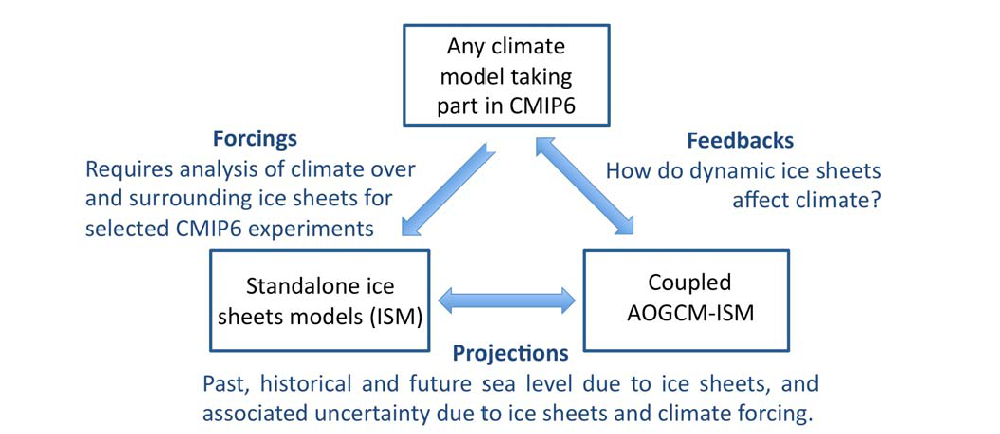
ISMIP6 与世界气候研究计划（WCRP）的"冰冻圈变化"与"区域海平面上升"两项大挑战（Grand Challenges）直接相关。
ISMIP6 is directly related to the WCRP Grand Challenges on 'Changes in the Cryosphere' and 'Regional Sea-level Rise'.
关于前者的白皮书指出，需要"集中力量发展冰盖模式，特别强调冰盖动力学在海平面上升速率中的作用"，而 ISMIP6 正处于理想的位置来兑现这一点：它将 WCRP 气候与冰冻圈（CliC）计划及其他渠道所获得的、基于过程的改进认识，与未来冰盖物质收支的预估联系起来。
A white paper on the former identifies the need for "a focused effort on developing ice sheet models, with specific emphasis on the role of ice sheet dynamics on the rate of the sea-level rise", which ISMIP6 is ideally placed to deliver by linking the improved process-based understanding achieved within the WCRP Climate and Cryosphere (CliC) project, and elsewhere, to projections of future ice-sheet mass budget.
而关于后者的白皮书则指出了若干与我们所提议的活动密切相关的开放问题，包括需要理解海洋对高纬度淡水强迫的响应以及冰盖动力学的影响。
While a white paper on the latter identifies several open issues that strongly relate to our proposed activity, including the need to understand the ocean's response to high latitude freshwater forcing and the impact of ice sheet dynamics.
ISMIP6 主要聚焦于 CMIP6 的科学问题"地球系统如何响应强迫？"，并提供了令人振奋的机会，将 CMIP 目前对地球系统的定义扩展到（首次）纳入冰盖。
ISMIP6 is primarily focused on the CMIP6 scientific question "How does the Earth System respond to forcing?" and offers the exciting opportunity of widening the current CMIP definition of Earth System to include (for the first time) the ice sheets.
对独立集合模拟的重视还将有助于阐明冰盖物质收支及其对全球海平面影响方面的问题："在考虑气候变率、可预测性和情景不确定性的情况下，我们如何评估未来的气候变化？"
The emphasis on standalone, ensemble modeling will also shed light on the question "How can we assess future climate changes given climate variability, predictability and uncertainties in scenario" for the mass budget of the ice sheets and its impact of global sea level.
ISMIP6 是 CliC 计划的一项针对性活动。
ISMIP6 is a targeted activity of the CliC project.
截至撰写之时（2015 年 5 月 31 日），ISMIP6 已收到 11 个模式组的参与意向（CanESM、CESM、CNRM、EC-Earth、GFDL、GISS、INM、IPSL、MIROC-ESM、MPI-ESM 和 UKESM）。
At the time of writing (31st May 2015), ISMIP6 has received an expression of interest from eleven modeling groups (CanESM, CESM, CNRM, EC-Earth, GFDL, GISS, INM, IPSL, MIROC-ESM, MPI-ESM, and UKESM).
我们将通过同行评审的出版物和/或报告来通报 ISMIP6 取得的成果，并将邀请模式组成为共同作者。
We will report on the results obtained from ISMIP6 via peer review publications and/or presentations, and modeling groups will be invited to become co-authors.
参考文献（如有）*
References (if available)*
ISMIP6 建立在冰盖模式比较计划（ISMIP，http://homepages.vub.ac.be/~phuybrec/ismip.html）的悠久历史，以及较近期的 ice2sea（www.ice2sea.eu）、冰盖演化海平面响应计划（SeaRISE，http://websrv.cs.umt.edu/isis/index.php/SeaRISE_Assessment）和 COMBINE（https://www.combine-project.eu/）等工作基础之上。
ISMIP6 is based on a long history of Ice Sheet Model Intercomparison Projects (ISMIP http://homepages.vub.ac.be/~phuybrec/ismip.html) and the more recent ice2sea (www.ice2sea.eu), Sea level Response to Ice Sheet Evolution (SeaRISE http://websrv.cs.umt.edu/isis/index.php/SeaRISE_Assessment), and COMBINE (https://www.combine-project.eu/) efforts.
ISMIP6 首次汇集了国际冰盖模式与耦合冰盖-气候模式的联合体，以全面探索格陵兰和南极冰盖对海平面上升的贡献。
ISMIP6 brings together for the first time a consortium of international ice sheet models and coupled ice sheet-climate models to fully explore the sea level rise contribution from the Greenland and Antarctic ice sheets.
由这些近期活动（均有冰盖模式研究群体参与）产生的论文包括：
Papers generated by these recent activities, that involved the ice-sheet modeling community, include:
——以下为参考文献条目，按原文保留，不做翻译——
(Reference entries follow; kept verbatim, not translated.)
Edwards, T.L., et al. (2014) Effect of uncertainty in surface mass balance elevation feedback on projections of the future sea level contribution of the Greenland ice sheet. The Cryosphere 8(1), 195-208.
Favier, L., et al. (2014) Retreat of Pine Island Glacier controlled by marine ice-sheet instability. Nature Clim. Change 4(2), 117-121.
——参考文献条目续（原文保留，不翻译）——
(Reference entries continued; kept verbatim, not translated.)
Nowicki et al. (2013) Insights into spatial sensitivities of ice mass response to environmental change from the SeaRISE ice sheet modeling project II: Greenland. Journal of Geophysical Research- Earth Surface, 118(2), 1025-1044.
Pattyn, F., et al. (2013) Grounding-line migration in plan-view marine ice-sheet models: results of the ice2sea MISMIP3d intercomparison. Journal of Glaciology 59(215), 410-422.
Rae, J., et al. (2012) Greenland ice sheet surface mass balance: evaluating simulations and making projections with regional climate models. The Cryosphere 9(6), 1275-1294.
Shannon, S.R., et al. (2013) Enhanced basal lubrication and the contribution of the Greenland ice sheet to future sea level rise. Proceedings of the National Academy of Sciences 110(35), 14156-14161.
Shepherd, A., et al. (2012) A Reconciled Estimate of Ice-Sheet Mass Balance. Science 338(6111), 1183-1189.
拟议实验概览*
An overview of the proposed experiments*
ISMIP6 的总体框架旨在提供冰盖对海平面上升贡献的预估。
The overall framework for ISMIP6 is designed to deliver projections of the ice sheet contribution to sea level rise.
结合 CliC 针对性活动 GlacierMIP 以及热膨胀预估（已存在于 CMIP 框架内），这将使海平面成为 CMIP 能够提供例行 IPCC 式预估的变量家族的一员。
Together with the CliC targeted activity GlacierMIP and projections of thermal expansion (that already sit within the CMIP framework), this will allow sea level to become part of the family of variables for which CMIP can provide routine IPCC-style projections.
如表 1 所总结，拟议实验将同时利用并扩充 CMIP6-DECK、Historical、ScenarioMIP 和 PMIP 实验。
The proposed experiments will both use and augment the CMIP6-DECK, Historical, ScenarioMIP and PMIP experiments, as summarized in Table 1.
ISMIP6 将使用标准的 CMIP AGCM 和 AOGCM 实验来分析冰盖上空及其周边区域的气候，并将其作为独立冰盖模式（ISM）预估的强迫。
ISMIP6 will use the standard CMIP AGCM and AOCGM experiments for analysis of the climate over and surrounding the ice sheets, and as forcing for the standalone ice sheet models (ISM) projections.
还将利用 ISM 开展额外的敏感性实验，以研究这些预估中源于冰盖模式本身的不确定性。
Additional sensitivity experiments will be performed with the ISMs to investigate the uncertainty associated with these projections arising from ice sheet models.
关键产出将是冰盖对海平面贡献的过去与未来估计值的集合。
The key output will be an ensemble of past and future estimates of ice sheet contribution to sea level.
为处理交互式冰盖所引入的反馈，我们提议用耦合的 AOGCM-ISM 重复少数选定的 DECK 实验，其中冰盖是 AOGCM 的一个交互式分量。
To address the feedbacks introduced by interactive ice sheets, we propose that a small number of selected DECK experiments are repeated with coupled AOGCM-ISM, where the ice sheet is an interactive component of the AOGCM.
我们对现有 AOGCM 状况的评估是：包含交互式格陵兰冰盖的耦合模式有望在 CMIP6 中现实可行；然而纳入南极冰盖仍然具有挑战性（因为其对气候强迫的响应更为复杂，且与南大洋模拟相关的问题尚未解决）。
Our assessment of the state of existing AOGCMs is that coupled models including an interactive Greenland ice sheet can realistically be expected for CMIP6, however including the Antarctic ice sheet remains challenging (because of the greater complexity of its response to climate forcing, and the issues associated with simulations of the Southern Ocean).
正是出于这些原因，ISMIP6 在海平面预估方面高度依赖由 CMIP6 气候模式离线驱动的独立冰盖模式。
It is for these reasons that ISMIP6 heavily relies on standalone ice sheet models driven offline by CMIP6 climate models for projections of sea level.
表 1：ISMIP6 实验框架概览（实验设计与动机的进一步细节将在后续章节说明）。实验名称以斜体标注。
Table 1: Overview of experimental framework for ISMIP6 (further details on experimental design and motivation are explained in later sections). Name of experiments are indicated in italic.
| ISMIP6 使用的现有 CMIP 实验（仅 AGCM-AOGCM，无需动力冰盖） | ISMIP6 独立冰盖模式实验（仅 ISM） | ISMIP6 新增的 CMIP6 实验（耦合 AOGCM-ISM） |
|---|---|---|
| AMIP 模拟（amip） | ISM 控制实验（piControlforcedism）** | 工业革命前控制实验（piControlwithism）** |
| CMIP6 历史模拟（historical） | 由 amip 强迫的近几十年 ISM 实验（amipforcedism） | 每年 1% 的 CO₂ 增至四倍（1pctCo2withism）** |
| 工业革命前控制实验（piControl） | 由 historical 强迫的历史时期 ISM 实验（historicalforcedism） | ScenarioMIP SSP5-8.5 至 2300 年（ssp5-8.5withism） |
| 每年 1% 的 CO₂ 增至四倍（1pctCo2） | 由 1pctCo2 强迫的 ISM 实验（1pctCo2forcedism），用于量化反馈** | |
| 突然四倍 CO₂ 模拟（abrupt4xCO2） | 由 ScenarioMIP ssp5-8.5 强迫的 21 世纪至 2300 年海平面 ISM 实验（ssp5-8.5forcedism）* | |
| ScenarioMIP SSP5-8.5 至 2300 年（ssp5-8.5） | 由 PMIP lastInterglacial 强迫的末次间冰期 ISM 实验（lastInterglacialforcedism） | |
| PMIP 末次间冰期（lastInterglacial） | 其他 ISMIP6 专门实验**，用于探索由 ISM 引起的不确定性 |
* 这类独立集合 ISM 实验曾在欧洲 ice2sea 和 SeaRISE 工作中为 IPCC-AR5 实施过，但使用的是源自 AR4 的强迫（见 www.ice2sea.eu 和 http://websrv.cs.umt.edu/isis/index.php/SeaRISE_Assessment）。
*These types of standalone ensemble ISM experiments were implemented in the European ice2sea and SeaRISE efforts for IPCC-AR5, but using forcing derived from AR4 (See www.ice2sea.eu and http://websrv.cs.umt.edu/isis/index.php/SeaRISE_Assessment)
** 这类以冰盖作为 AOGCM 交互式分量的实验，最近已作为欧洲 COMBINE 工作（https://www.combine-project.eu/）的一部分，由三个模式组运行：IPSL、MIP-I 和 DMI。
**These types of experiments, where the ice sheet is an interactive component of the AOGCM, have been recently run as part as the European COMBINE effort (https://www.combine-project.eu/) by three modeling groups: IPSL, MIP-I, and DMI.
拟议的对 CMIP DECK 与 CMIP6 实验的评估/分析概览*
An overview of the proposed evaluation/analysis of the CMIP DECK and CMIP6 experiments*
ISMIP6 的首要目标是通过对集合模拟的评估，分析冰盖对海平面贡献的历史与未来估计值及其相关不确定性。
The primary goal of ISMIP6 is an analysis of the historical and future estimates of ice sheet contribution to sea level, and associated uncertainty, via evaluation of the ensemble simulations.
为评估将动力冰盖耦合到 AOGCM 所引入的反馈，我们将比较含与不含动力冰盖模式的 AOGCM 模拟结果，以及被 AOGCM 离线强迫与完全耦合到 AOGCM 的冰盖模拟结果。
For evaluating the feedbacks introduced by coupling dynamic ice sheets to AOGCM, we will compare the results of simulations of AOGCM with and without dynamic ice sheet models, and of ice sheet forced by offline with AOGCM and fully coupled to AOGCM.
因此，这一目标还要求通过与现场、航空和卫星观测的比较，对地球系统的三个分量进行评估和分析：
This goal therefore also requires that three components of the Earth system are evaluated and analyzed by comparing to in situ, airborne and satellite observations:
1）冰盖动力学。将在海岸沿接地线定义通量断面（flux gates），在那里可以使用由观测表面流速估算的输运量。
1) The ice sheet dynamics. Flux gates will be defined along grounding lines at the coast, where estimated transports derived from observed surface velocities may be employed.
耦合系统能够评估冰盖对海平面上升的总贡献，并可与 GRACE 数据（可获取 2003 年至今）进行比对。
The coupled system allows for an assessment of the total ice sheet contribution to sea level rise, which may be evaluated against GRACE data (available for 2003-present).
模式性能还可以结合 ERS-1 和 ERS-2（1992 年至今）及 ICESat（2003-2009）观测到的表面高程变化，以及冰流速、接地线和冰锋位置进行评估。
Model performance may also be assessed with observed changes in surface elevation from ERS-1 and ERS-2 (1992-present) and ICESat (2003-2009), along with ice velocities, ground line and ice front locations.
2）冰盖上空的大气和表面状况（表面辐射通量与湍流通量、反照率、温度、表面物质平衡）。
2) The atmosphere and surface conditions over the ice sheets (surface radiative and turbulent fluxes, albedo, temperature, surface mass balance).
该分量可分为两部分：由 AOGCM 生成的气候强迫，以及冰盖表面的过程（AOGCM 不一定能充分模拟，但将用于独立冰盖模式，如 SMB 和反照率演变）。
This component may be divided into two parts: climate forcing that would be generated by an AOGCM and processes at the ice sheet surface (that may or may not be adequately simulated by an AOGCM but will be used in standalone ice-sheet models, such as SMB and albedo evolution).
对包括温度在内的大气状态变量的评估，可利用已建成的自动气象站网以及南极点和 Summit 站的表面辐射收支观测站的观测资料。
The evaluation of atmospheric state variables including temperature can make use of observations from established automatic weather station networks and surface radiation budget observatories at South Pole and Summit.
表面温度和反照率还可以利用 AVHRR（1982 年至今）和 MODIS（2000 年至今）的遥感数据进行评估。
Surface temperature and albedo may also be evaluated with remote sensing values from AVHRR (1982-present) and MODIS (2000-present).
模拟的积累量可在格陵兰 K 断面（K-transect）沿线的现场站点以及分布于两座冰盖上的浅冰芯处进行评估。
Simulated accumulation may be evaluated at in situ locations along the K-transect for Greenland, and with shallow ice cores distributed across both ice sheets.
还建议与区域气候模式输出及大气再分析资料进行比较，作为质量检验。
A comparison with regional climate model output and atmospheric reanalyses is also suggested as a quality test.
3）冰盖周围的海洋（海面高度、海洋温度、海洋引起的融化速率、风应力、冰盖边缘可获取范围内的水文特性、海冰覆盖）。
3) The ocean around the ice sheets (sea surface height, ocean, temperature, ocean induced melting rates, wind stress, hydrographic properties at the margins of the ice sheets to the extent available, sea-ice cover).
该分量也可分为两部分：由 AOGCM 生成的海洋强迫，以及冰盖边界处的过程（AOGCM 不一定能刻画，但也将纳入独立冰盖模式，如冰架融化）。
This component may also be divided into two parts: ocean forcing that would be generated by an AOGCM and processes at the ice sheet boundary (that may or may not be captured within an AOGCM but will also be included in standalone ice-sheet models, such as ice-shelf melt).
一个关键问题是验证冰盖所受的海洋热强迫，其重点可能放在深层温度演变，特别是 AOGCM 对南大洋的模拟上。
A key concern will be the validation of ocean thermal forcing of the ice sheets, which is likely to focus on evolving temperature at depth and, in particular, AOGCM simulation of the Southern Ocean.
拟议时间安排*
Proposed timing*
将立即开始利用 CMIP5 档案分析冰盖上空及其周边区域的大气与海洋气候，以评估其质量以及表面物质平衡和温度中隐含的变化。
The analysis of atmospheric and oceanic climate over and surrounding the ice sheets from the CMIP5 archive will begin immediately in order to assess the quality and implied change in surface mass balance and temperatures.
对 CMIP6 数据的分析将持续进行，并紧随 CMIP6 的模拟阶段展开。
Analysis of the CMIP6 data would be ongoing and follow the simulation phase of CMIP6.
ISMIP6 在 2014 年 7 月的一次研讨会上启动了独立冰盖实验的设计，因此这些实验的进一步完善和数据准备工作将在 2015 年年中完成。
ISMIP6 started the design of the standalone ice sheet experiments during a workshop in July 2014, therefore further refining these experiments and data preparation would be completed by mid 2015.
CliC 正在资助一场于 2015 年夏季举行的 ISMIP6 研讨会。
CliC is sponsoring an ISMIP6 workshop in summer 2015.
海平面预估及由冰盖引起的海平面不确定性的量化工作将于 2015 年年中启动，并与 CMIP6 同步推进。
The sea level projections and quantification of the uncertainty in sea level due to ice sheets would begin mid 2015, and continue in tandem with CMIP6.
对预估模拟和敏感性实验的分析将持续进行，以识别不确定性的主要来源。
Analysis of the projection simulations and sensitivity experiments would be ongoing in order to identify the dominant sources of uncertainty.
AOGCM-ISM 模拟的运行将在 CMIP6 周期的后期进行。
The runs for the AOGCM-ISM simulations would occur towards the end of the CMIP6 cycle.
针对拟纳入 CMIP6 的每一项实验**
For each proposed experiment to be included in CMIP6**
o 实验设计；o 该实验所要解决的科学问题和/或空白；o 与其他 MIP 可能存在的协同效应；o 该实验对（A）气候模式研究群体、（B）综合评估模式（IAM）群体、（C）影响、适应与脆弱性（IAV）群体以及（D）政策制定者的潜在益处。
o the experimental design; o the science question and/or gap being addressed with this experiment; o possible synergies with other MIPs; o potential benefits of the experiment to (A) climate modeling community, (B) Integrated Assessment Modelling (IAM) community, (C) Impacts Adaptation and Vulnerability (IAV) community, and (D) policy makers.
如图 1 和表 1 所总结，ISMIP6 的实验设计包含三类不同的模式工作：1）来自 DECK、CMIP6 Historical 和 ScenarioMIP 模拟的标准 AGCM-AOGCM 实验（因此所有参与 CMIP6 的气候模式都将被纳入 ISMIP6，无需气候模式中心"额外工作"）；2）独立冰盖模式的模拟；以及 3）在可行情况下的耦合 AOGCM-ISM 模拟。
As summarized in Figure 1 and Table 1, the experimental design for ISMIP6, consist of three different types of modeling efforts: 1) standard AGCM-AOGCM experiments from the DECK, CMIP6 Historical and ScenarioMIP simulations (therefore all climate models participating in CMIP6 will be included in ISMIP6 without "extra work" from the climate modeling centers), 2) simulations with standalone ice sheet models, and 3) simulations with coupled AOGCM-ISMs when possible.
ISMIP6 实验设计的详细细节将在 CMIP6 特刊的一篇论文中提供。
The detailed specifics for the ISMIP6 experiment design will be provided in a paper for the CMIP6 Special Issue.
总之，提出以下实验设计：
In summary, the following experimental design is proposed:
1）使用冰盖上空及其周边区域选定的标准 AGCM 与 AOGCM CMIP6 实验：
1) Use of selected standard AGCM & AOGCM CMIP6 experiments over and surrounding ice sheets:
• amip：可评估冰盖上空的 AGCM 气候，特别是表面物质平衡（SMB：降水、蒸发与表面径流的组合）。
• amip: Allows the evaluation of AGCM climate over ice sheets, in particular surface mass balance (SMB: the combination of precipitation, evaporation and surface runoff).
• Abrupt4xCO2：可研究冰盖上空及其周边区域 AOGCM 气候的响应时间尺度。
• Abrupt4xCO2: Allows the investigation of response timescale of AOGCM climate over and surrounding the ice sheets.
• historical：可评估 CMIP6 历史时期（1850-2014）冰盖上空及其周边区域的 AOGCM 气候。
• historical: Allows the evaluation of AOGCM climate over and surrounding the ice sheets for the CMIP6 historical period (1850-2014).
• ssp5-8.5：标准的 ScenarioMIP SSP5-8.5 模拟，从 2015 年开始，如可能延续至 2300 年。该实验将评估冰盖范围和地形固定条件下 SMB 的预估变化。
• ssp5-8.5: standard ScenarioMIP SSP5-8.5 simulation starting from 2015 but continued to year 2300 if possible. The experiment would assess projected changes in SMB with fixed ice sheet extent and topography.
• lastInterglacial：末次间冰期的标准 PMIP 模拟。
• lastInterglacial: standard PMIP simulation for Last Interglacial.
• piControl 和 1pctCo2：将用于评估在 AOGCM 中引入动力冰盖的影响。对于参加 AOGCM-ISM 实验的模式组，实验时长在 AOGCM 与 AOGCM-ISM 模拟中需要保持一致。
• piControl and 1pctCo2: Will be used to assess the impacts of introducing dynamic ice sheets in AOGCM. For modeling groups taking part in the AOGCM-ISM experiments, the duration of the experiment need to be the same for both AOGCM and AOGCM-ISM simulations.
注：我们将从现有的 CMIP5 输出入手，并在 CMIP6 输出可用后重复该分析。
Note: we would start with the existing CMIP5 output and repeat the analysis when CMIP6 output is available.
这些实验的输出将用于评估源于气候强迫的海平面不确定性，并用于驱动独立冰盖模式。
The output from these experiments will be used to assess the uncertainty in sea level arising from climate forcing and to drive the standalone ice sheet models.
2）独立冰盖模式实验：
2) Standalone ice sheet models experiments:
• piControlforcedism：ISM 控制实验，恒定强迫，用于评估模式漂移。
• piControlforcedism: ISM control, Constant forcing, needed to evaluate model drift.
• amipforcedism：近几十年的模拟，用于理解观测记录完好的冰盖变化。ISM 将由标准 AMIP DECK 模拟得到的 SMB 距平以及海洋模式的冰架底部融化或温度距平来驱动。
• amipforcedism: simulation for the last few decades to understand the well observed record of ice sheet changes. ISM would be driven by SMB anomalies obtained from the standard AMIP DECK simulations, and ice shelf basal melting or temperature anomalies from ocean models.
• historicalforcedism：历史时期的模拟，用于理解冰盖对 20 世纪全球平均海平面上升（GMSLR）的贡献，由标准 CMIP6 Historical 模拟的输出强迫。
• historicalforcedism: simulation for the historical period to understand the ice sheet contribution to 20th century GMSLR, forced by outputs obtained from the standard CMIP6 Historical simulation.
amipforcedism 与 historicalforcedism 的结果可能不同，其比较将有助于了解偏差、气候变率与气候变化之间的相对重要性。
The results of amipforcedism and historicalforcedism are likely to differ, and the comparison will provide some insight into the relative importance of biases, climate variability and climate change.
• 1pctCo2forcedism：由 DECK 输出中"每年 1% 的 CO₂ 增至四倍"强迫的模拟：用于与 AOGCM-ISM 实验比较，以评估冰盖反馈。
• 1pctCo2forcedism: simulation forced by 1% yr CO2 to quadrupling C02 obtained from DECK output: for comparison with the AOGCM-ISM experiment in order to evaluate ice sheet feedback.
• ssp5-8.5forcedism：21 世纪（取决于 ScenarioMIP，也可能到 23 世纪）的模拟，用于给出最接近现实的冰盖对海平面预估的贡献。ISM 将由 SMB 距平（含冰盖高程变化的调整）以及由标准 SSP5-8.5 ScenarioMIP 模拟导出的冰架物质平衡或温度距平来驱动。
• ssp5-8.5forcedism: simulation for the 21st century (and maybe up to the 23rd century depending on ScenarioMIP) for the most realistic ice sheet contribution to sea level projections. ISM would be driven by SMB anomalies (with adjustments for ice sheet elevation change) and ice shelf mass balance or temperatures anomalies derived from the standard SSP5-8.5 ScenarioMIP simulation.
• lastInterglacialforcedism：末次间冰期（约 135-115 千年 BP）格陵兰冰盖演化的模拟。气候强迫源自 PMIP 末次间冰期实验以及 PMIP 的其他时间切片和瞬变实验（视可用性而定）。
• lastInterglacialforcedism: simulation of the Greenland ice sheet evolution for the Last Interglacial period (~135-115 kyr BP). Climatic forcing derived from PMIP Last Interglacial and other PMIP time slice and transient experiments (as available).
• 将设计额外的 ISM 实验，以评估海平面预估中源于冰盖模式的不确定性。
• Additional ISM experiments would be designed to assess the uncertainty in sea level projections due to ice sheet models.
这些实验将探索 ice2sea 和 SeaRISE 工作中识别的模式偏差与不确定性，包括冰盖初始化、认识不足的底部条件以及次网格尺度过程。
These experiments would explore the model biases and uncertainties identified in the ice2sea and SeaRISE efforts, which include ice sheet initialization, poorly known basal conditions and subgrid-scale processes.
此外，ISMIP6 还将研究诸如"需要多少过剩的海洋热通量才能触发海洋冰盖不稳定性？"等问题，以阐明南极冰盖潜在崩塌的可能性。
In addition, ISMIP6 would investigate questions such as "How much excess oceanic heat flux is required to trigger marine ice sheet instability?" to shed light on the potential collapse of the Antarctic ice sheet.
注：沿用 ice2sea 和 SeaRISE 工作中采用的方法，由 DECK 实验导出的距平将被叠加到 ISM 控制运行所用的强迫之上。
Note: Following the approach taken in the ice2sea and SeaRISE efforts, the anomalies derived from the DECK experiments would be added to the forcing used in the ISM control runs.
AGCM/AOGCM 输出在大多数情况下不适合直接强迫独立 ISM，主要原因是空间分辨率不同。
The AGCM/AOGCM output is in most cases not suitable to directly force standalone ISMs, mainly due to differences in spatial resolution.
需要一套降尺度程序（细节稍后说明）来生成表面物质平衡和冰架底部物质平衡，用于驱动 ISM。
A downscaling procedure (to be later specified) will be necessary to produce surface mass balance and for ice shelves basal mass balance, used to drive the ISMs.
模式组可以决定对格陵兰和南极冰盖都开展实验，或只专注于其中一座冰盖。这些实验面向冰盖研究群体，我们预计将有 10-15 个冰盖模式参与。
Modeling groups could decide to carry out the experiments for both the Greenland and Antarctic ice sheets, or to focus on one ice sheet. These experiments are targeted at the ice sheet community, and we envisage participation from 10-15 ice sheet models.
3）耦合 AOGCM-ISM 实验（与标准 CMIP6 实验设置相同，但包含演变的冰盖模式（ISM）：GCM 向 ISM 发送基于能量平衡的 SMB，ISM 向 GCM 发送陆面高程和地表类型的调整）
3) Coupled AOGCM-ISMs experiments (same set up as standard CMIP6 experiments but with evolving ice sheets models (ISM): GCM sends ISM an energy balance based SMB, and ISM sends GCM adjustments to land surface elevation and surface type)
• piControlwithism：工业革命前控制实验，其目标是产生一个接近现实、无漂移的耦合态，并评估系统性的模式偏差。起转（spin up）可能需要 GCM 与 ISM 异步耦合，直至系统达到准平衡态，随后再进行数百年时长的运行（建议 500 年），以捕捉非受迫的自然变率。
• piControlwithism: the pre-industrial control, where the aim is to produce a realistic non-drifting coupled state, and assess systematic model bias. The spin up may require the GCM and ISM to be asynchronously coupled until the system reaches quasi-equilibrium, which would be followed by a multi-hundred years run (500 yrs suggested), in order to capture unforced natural variability.
• 1pctCO2withism：CO₂ 每年增加 1%，在 140 年内增至四倍，并在 4xCO₂ 水平上再保持恒定二至四个世纪。
• 1pctCO2withism: the 1% per yr CO2 increase to quadrupling CO2 over 140 yrs and kept constant at 4xCO2 for an additional two to four centuries.
该实验与 piControlwithism 一道，是用于分析耦合冰盖-气候系统的核心实验。实验将与不含冰盖的标准 DECK 以及由标准 DECK 强迫的独立 ISM 进行比较，以诊断冰盖-气候反馈的强度，以及因排除冰盖模式而给预估带来的相关不确定性。
This experiment, along with piControlwithism, are the core experiments that will be used for analysis of coupled ice sheet-climate system. Experiment would be compared to the standard DECK without ice sheets and to the standalone ISM forced by the standard DECK, in order to diagnose the strength of ice sheet-climate feedback and the associated uncertainty in projections resulting from excluding ice sheet models.
因此，1pctCO2、1pctCO2withism 和 1pctCO2forcedism 的实验时长，对参加该实验的各组而言需要保持一致。
Length of experiment 1pctCO2, 1pctCO2withism and 1pctCO2forcedism therefore needs to be the same for groups participating in this experiment.
建议这些实验至少运行 350 年、鼓励最多运行 500 年，因为 COMBINE 工作的结果表明，冰盖模式耦合运行在模拟约 250-300 年后开始与未耦合运行出现明显分歧。
It is suggested the experiments are run for a minimum of 350 yrs and up to 500 yrs is encouraged, because results from COMBINE effort indicate that ice sheet model coupled runs start to clearly divert from the uncoupled runs after about 250-300 yrs of simulations.
• ssp5-8.5withism：用于分析耦合系统以及来自耦合框架的海平面预估的情景，可与独立冰盖模式的预估进行比较。
• ssp5-8.5withism scenario for analysis of coupled system and sea level projections from a coupled framework, which can be compared to the standalone ice sheet model projection.
实验将覆盖 21 世纪，并最好运行至 23 世纪。其设置将沿用标准 SSP5-8.5 的设置，因此可能首先需要以耦合 AOGCM-ISM 的设置完成 CMIP6 Historical 模拟。
Experiment would cover the 21st century and preferably run out to the 23rd century. The set up would follow the set up for the standard SSP5-8.5, which may therefore first require the CMIP6 Historical simulation to be performed too with a coupled AOGCM-ISM setting.
注：我们建议先开展工业革命前控制实验和"每年 1% 的 CO₂ 增至四倍"实验，随后进行 ScenarioMIP SSP5-8.5。
Note: We suggest that the pre-industrial control and 1% yr CO2 to quadrupling CO2 experiments are performed first, followed by ScenarioMIP SSP5-8.5.
模式组可以决定对格陵兰和南极冰盖都开展实验，或只专注于其中一座冰盖。这些实验与对应的标准 CMIP AOGCM 设置之间，只应在冰盖的处理方式上有所不同，以免反馈的探索受到其他改动的影响。
Modeling groups could decide to carry out the experiments for both the Greenland and Antarctic ice sheets, or to focus on one ice sheet. These experiments should only differ from the equivalent standard CMIP AOGCM setting in the manner in which the ice sheet is treated, so that the exploration of feedbacks is not affected by other changes.
我们提议探索的反馈包括：反照率-融化反馈、高程-SMB 反馈、降水-海冰反馈、淡水（径流以及冰山崩解和冰下融化）-海洋反馈、大气环流-海洋热通量反馈（如 tip-jet 急流、下降风）。
Feedbacks that we propose to explore include albedo-melt feedback, elevation-SMB feedback, precipitation-sea ice feedback, fresh water (runoff and icebergs calving and submarine melting)-ocean feedback, atmospheric circulation – ocean heat flux feedback (e.g. tip-jets, katabatic winds).
这类耦合实验已由 3 个模式中心（IPSL、MPI-M、DMI）开展，MeteoFrance 也即将作为欧洲 COMBINE 项目的一部分开展此类实验。
This type of coupled experiments have been carried out by 3 modeling centers (IPSL, MPI-M, DMI) and soon MeteoFrance as part of the European COMBINE project.
这些耦合模式（IPSL：IPSL-GRISLI；MPI-M：MPI-ESM-PISM 和 MPI-ESM-SICOPOLIS；DMI：EC-Earth-PISM，以及即将加入的 CNRM-GRISLI）已在 COMBINE 报告《与格陵兰和南极模式耦合的 AOGCM 性能评估》（Assessment of performance of AOGCMs coupled to Greenland and Antarctic models，http://www.combine-project.eu/fileadmin/user_upload/combine/dels/D4.3.pdf）和《各分量的反馈：冰冻圈》（Feedbacks of individual components: Cryosphere，http://www.combine-project.eu/fileadmin/user_upload/combine/dels/D7.7_v2.pdf，其第二部分为"在 ESM 中纳入交互式格陵兰冰盖的影响"）中得到描述和评估。
These coupled models (IPSL: IPSL – GRISLI; MPI-M: MPI-ESM – PISM and MPI-ESM – SICOPOLIS; DMI: EC-Earth – PISM, and soon CNRM-GRISLI) were described and evaluated in the COMBINE reports 'Assessment of performance of AOGCMs coupled to Greenland and Antarctic models' (http://www.combine-project.eu/fileadmin/user_upload/combine/dels/D4.3.pdf) and 'Feedbacks of individual components: Cryosphere' (http://www.combine-project.eu/fileadmin/user_upload/combine/dels/D7.7_v2.pdf, in the second part: 'Impacts of including an interactive Greenland ice sheet in ESM).
将动力冰盖纳入 AOGCM 的工作也正在 CESM、GFDL 和 ModelE 等模式中开展，因此预计约有 8-10 个模式组将有能力为 CMIP6 运行此类实验。
Efforts of including dynamic ice sheets into AOGCMs are also occurring with CESM, GFDL and ModelE for example, so it is expected that about 8-10 groups will be in a position to run such experiments for CMIP6.
这些实验的首要目标是：改进由冰盖变化引起的海平面预估，并区分这些预估中源于气候强迫的不确定性与源于冰盖模式的不确定性。
The primary goal of these experiments is to improve sea level projections due to changes in the ice sheets, and assessing the uncertainty in these projections due to climate forcing versus that arising from ice sheet models.
次要目标是理解冰盖如何影响气候以及如何受气候影响。
The secondary goal is to understand how ice sheets affect and are affected by climate.
因此，这些实验将有助于阐明 CMIP6 所考虑的关键科学问题："地球系统如何响应强迫？""系统性模式偏差的起源和后果是什么？"以及"在情景不确定的情况下，我们如何评估未来的气候变化？"
These experiments will thus shed light on the key science questions considered by CMIP6: "How does the Earth system respond to forcing?", "What are the origin and consequences of systematic model biases", and "How can we assess future climate change given uncertainty in scenarios?".
这些目标直接服务于气候与冰冻圈（CliC）计划及世界气候研究计划的"冰冻圈"大挑战和"海平面上升"大挑战。
These goals directly contribute to the Cryosphere Grand Challenge and the Sea level Rise Grand Challenge of the Climate and Cryosphere (CliC) project and the World Climate Research Program.
最后，ISMIP6 的海平面预估将对影响、适应与脆弱性（IAV）群体和政策制定者具有现实意义。
Finally, the ISMIP6 sea level projections will be relevant to the Impacts Adaptation and Vulnerability (IAV) community and policy makers.
与其他 MIP 可能存在的协同效应包括：
Possible synergies with other MIPs include:
• 高分辨率模式比较计划（HighResMIP）。我们将利用高分辨率运行的结果，量化提高分辨率对我们独立冰盖套件的影响，并与 DECK 运行的结果进行比较。我们还将考察大气阻塞等特定过程，以了解极端融化速率事件在我们的运行中得到多好的捕捉。
• High Resolution Model Intercomparison Project (HighResMIP). We will use the results from the high-resolution runs to quantify the impact of increased resolution in our standalone ice sheet suite, and to compare against the results from the DECK runs. Particular processes such as atmospheric blocking will be looked at to understand how well extreme melt-rate events are captured in our runs.
• 协调区域气候降尺度试验（CORDEX）。CORDEX 的结果将与 DECK 运行对照使用，以量化低分辨率运行或 HighResMIP 运行中未能捕捉的额外敏感性。降尺度后的 CORDEX 结果中的偏差和额外变率将被引入离线冰盖模式运行。
• Coordinated Regional Climate Downscaling Experiment (CORDEX). The CORDEX results will be used against the DECK runs to quantify additional sensitivities not captured in the low-resolution runs or HighResMIP runs. Biases and additional variability in the downscaled CORDEX results will be introduced in the offline ice sheet model runs.
• 陆面、积雪与水分模式比较计划（LS3MIP）。LS3MIP 的目标之一是评估气候模式中积雪覆盖描述的现状，这会影响冰盖上空的表面物质平衡。这些含陆面模块的实验可能有助于理解和量化由表面强迫引起的海平面不确定性。
• Land Surface, Snow and Moisture (LS3MIP). One of the objectives of LS3MIP is an evaluation of the current state of the snow cover representation in climate models, which impacts the surface mass balance over the ice sheets. These experiments with land-module may help towards understanding and quantifying the uncertainty in sea level due to surface forcing.
• 情景模式比较计划（ScenarioMIP）。我们正在与 ScenarioMIP 指导委员会成员进行讨论，以支持将 SSP5-8.5 延长到原计划的 2015-2100 时段之后（理想情况下至 2300 年）。
• Scenario Model Intercomparison Project (ScenarioMIP). We have an ongoing discussion with members of the ScenarioMIP steering committee to support an extension of the SSP5-8.5 beyond the planned 2015-2100 timeframe (ideally up to year 2300).
• 模式比较观测计划（Obs4MIP）。我们将使用现有数据库中的观测资料，检验纳入动力冰盖对模拟的影响。我们还将建议补充与冰盖和表面物质平衡相关的数据集。
• Observations for Model Intercomparison (Obs4MIP). We would use the observations available on the current database to test how the inclusion of dynamic ice sheets affects the simulations. We would also suggest additional datasets that are pertinent to ice sheets and surface mass balance.
• 模式比较再分析计划（Ana4MIP）。我们将使用再分析资料评估 AOGCM 的表面物质平衡，并可能将其用作冰盖的当代强迫。
• Reanalysis for Model Intercomparison (Ana4MIP). We would use reanalysis in the assessment of the surface mass balance from AOGCM, and potentially as contemporary forcing for the ice sheets.
• 古气候模式比较计划（PMIP）。ISMIP6 独立冰盖实验 lastInterglacialforcedism 是与 PMIP 的一项合作，计划使用并扩充 PMIP 实验（如可能，包括时间切片和瞬变实验）。我们计划继续与 PMIP 就不同时期耦合气候-冰盖模拟的设计保持交流。
• Paleoclimate Modelling Intercomparison Project (PMIP). The ISMIP6 standalone ice sheet experiment lastInterglacialforcedism is a collaboration with PMIP, planned to use and augment PMIP experiments (time slices and transient, if possible). We plan to continue exchange with PMIP on the design of coupled climate-ice sheet simulations for different time periods.
与其他 MIP 的这些协同效应展示了气候研究群体内部的潜在合作。希望其他 MIP 有兴趣利用我们的模拟，来研究冰盖变化如何影响其所擅长的气候分量。
These synergies with other MIPs illustrate potential collaborations within the climate community. It is hoped that other MIPs would be interested in using our simulations to investigate how changes in the ice sheets affect the component of the climate that is their expertise.
如可能，请对建议的实验进行优先级排序，并说明理由**
If possible, a prioritization of the suggested experiments, including any rationale**
对于耦合 AOGCM-ISM，我们建议先开展工业革命前控制实验和"每年 1% 的 CO₂ 增至四倍"实验，随后进行 ScenarioMIP 的 SSP5-8.5。
For the coupled AOGCM-ISM, we suggest that the pre-Industrial control and 1% yr CO2 to quadrupling CO2 experiments are performed first, followed by the SSP5-8.5 of ScenarioMIP.
因此，我们的层级 1（Tiers 1）实验为：piControlwithism 和 1pctCO2withism，它们便于评估冰-气候反馈，且许多模式组已经开展过。
Our Tiers 1 experiments are thus: piControlwithism and 1pctCO2withism, which allow for an easier evaluation of ice-climate feedback and have already been performed by many modeling groups.
而我们的层级 2（Tiers 2）实验 ssp5-8.5withism 则更贴近我们与 CMIP6 未来气候同步的海平面上升预估目标；SSP5-8.5 也将是我们用独立冰盖模式进行海平面预估的重点。
Our Tiers 2 experiment, ssp5-8.5withism, is however more relevant to our goal of sea-level rise projections that are in sync with the CMIP6 future climate, and SSP5-8.5 will be the focus of our sea level projection with standalone ice sheet models.
CMIP6 认可 MIP 所存档的全部模式输出，预计将按与 CMIP 输出相同的条款提供使用。目前大多数模式组发布的 CMIP 数据均允许不受限制地使用。如果您反对开放获取您实验的输出，请说明理由。**
All model output archived by CMIP6-Endorsed MIPs is expected to be made available under the same terms as CMIP output. Most modeling groups currently release their CMIP data for unrestricted use. If you object to open access to the output from your experiments, please explain the rationale.**
无异议。
No objections.
CMIP DECK/CMIP6 数据请求的输出与过程诊断变量清单**
List of output and process diagnostics for the CMIP DECK/CMIP6 data request**
o 该变量是应为所有 CMIP6 实验收集，还是仅为某些指定的子集收集；输出是否需要覆盖每个实验的整个时段，还是只需某些较短的时段。
o whether the variable should be collected for all CMIP6 experiments, or only some specified subset and whether the output is needed from the entire length of each experiment or some shorter period or periods;
对于标准气候模拟（不含动力冰盖），变量至少应在 CMIP6 AMIP、历史模拟、工业革命前控制实验、"每年 1% 的 CO₂ 增至四倍"、ScenarioMIP SSP5-8.5 和 PMIP 末次间冰期的整个实验时段内收集。
For the standard climate simulations (with no dynamic ice sheets), the variables should be collected at a minimum for the CMIP6 AMIP, Historical Simulation, Pre-Industrial Control, 1% yr CO2 to quadrupling CO2, ScenarioMIP SSP5-8.5 and the PMIP Last Interglacial, for the entire length of the experiment.
对于气候模式与动力冰盖耦合的模拟，变量将仅为 piControlwithism、1pctCo2withism 和 ssp5-8.5withism 实验收集（见表 1）。
For the simulations with climate models coupled to dynamic ice sheets, the variables would only be collected for the piControlwithism, 1pctCo2withism, and ssp5-8.5withism experiments (see Table 1).
o 该输出是否只有在交互式使用某些分量或诊断工具时才有意义（例如交互式碳循环或大气化学，或仅在安装了 COSP 模拟器的情况下）。
o whether the output might only be relevant if certain components or diagnostic tools are used interactively (e.g. interactive carbon cycle or atmospheric chemistry, or only if the COSP simulator has been installed);
优先级 1 的变量始终具有相关性，它们也是 CMIP5 中的优先级 1 变量。
The variables of priority 1 are always relevant and are variables that were variables of priority 1 in CMIP5.
部分较低优先级的变量仅对带有冰盖上覆积雪模式或交互式冰盖模式的模式提出要求。
Some variables of lower priority are required for models that have either snow models over the ice sheets or interactive ice sheet models.
o 该变量是否面向下游用户（如影响研究人员、WG2 用户），抑或其主要用于理解与分析气候系统本身。请尽可能具体地说明需要该变量的原因。
o whether this variable is of interest to downstream users (such as impacts researchers, WG2 users) or whether its principal purpose is for understanding and analysis of the climate system itself. Be as specific as possible in identifying why the variable is needed.
变量请求的主要目的是理解与分析气候系统，或强迫独立冰盖模式。
The principle purpose of the variable request is to understand and analyze the climate system, or force the standalone ice sheet models.
部分变量（如表面径流或冰山排放）会影响海平面，因此对下游用户有意义。
Some variables (such as surface runoff or iceberg discharge) will affect sea level and are thus of interest to downstream users.
o 变量能否重网格化到公共网格上，这样做是否会损失某些关键信息。
o whether the variables can be regridded to a common grid, or whether there is essential information that would be compromised by doing this;
对于源自冰盖网格的变量，使用原生网格可能更可取。
The use of native grid may be preferable for variables that would be originating from the ice sheet grid.
然而，如提交给 WIP 的电子表格及下文所示，这些变量可以重网格化到一个公共的极射赤面网格上。
However, as indicated in the spreadsheet submitted to the WIP and below, the variables may be regridded to a common polar stereographic grid.
o 如果数据请求规模较大，则需要说明所请求各变量的相对重要性（以分层清单表示）。
o the relative importance of the various variables requested (indicated by a tiered listing) is required if the data request is large.
现有的 CMIP5 CMOR 表 Amon（月平均大气场）、Omon（月平均海洋场）和 LImon（月平均陆面冰冻圈场）已包含许多诊断和比较冰川陆地/冰盖上空气候以及导出冰盖强迫所需的输出。
The current CMIP5 CMOR tables Amon (Monthly Mean Atmospheric Fields), Omon (Monthly Mean Ocean Fields), and LImon (Monthly Mean Land Cryosphere Fields) already contains many of the output required to diagnose and intercompare the climate over glaciated land/ice sheets and to derive forcing for the ice sheets.
然而，还需要少量额外变量，以便正确地导出冰盖强迫，并记录耦合 AOGCM-ISM 实验中演变冰盖的输出（如冰高程变化）。
However a few additional variables are needed to properly derive the forcings for ice sheets and to record outputs from the evolving ice sheets in the coupled AOGCM-ISMs experiments (such as ice elevation change).
表 2 和表 3 列出了我们对计划在 ISMIP6 中使用或尚缺失的 Amon、LImon 和 Omon 变量的评估。
Table 2 and 3 list our assessment of the Amon, LImon, and Omon variables that we plan to use in ISMIP6, or that are missing.
我们已在 CMIP 和 WIP 规定的截止日期前完成了 CMIP6 数据请求表格。所提交的电子表格包含表明变量请求重要性的分层清单。
We have completed the CMIP6 data request forms by the deadlines set by CMIP and WIP. The submitted spreadsheet contains a tiered listing indicating the importance of the variable request.
| 保存于 Amon 和/或 LImon 表、将被 ISMIP6 使用的变量 | 单位 | 现有 CMOR 变量名及 CMIP5 位置，以及注释。 | 层级 |
|---|---|---|---|
| 近地面气温（2 m） | K | tas，位于 Amon | 1 |
| 表面温度 | K | ts，位于 Amon | 1 |
| 积雪内部温度 | K | tsn，位于 LImon | 2 |
| 冰盖与雪/粒雪之间界面处的温度（新增） | K | 类似于 Olmon 中的 tsnint，但针对冰川陆地。这将是用于强迫冰盖模式的温度 | 2 |
| SMB 及其分量（上表面） SMB = 降雪通量 – 蒸发（升华）– 表面融化 + 再冻结 其中：降水 = 降雪通量 + 降雨；表面融化 = 雪融化 + 冰融化；表面径流 = 可用液态水 – 再冻结 = 降雨 + 表面融化 – 再冻结 | kg m⁻² s⁻¹ | 2 | |
| 表面物质平衡通量（新增，CF 名称已存在） | kg m⁻² s⁻¹ | 2 | |
| 降水 | kg m⁻² s⁻¹ | pr，位于 Amon | 1 |
| 降雪通量 | kg m⁻² s⁻¹ | prsn，位于 Amon | 1 |
| 降雨通量 | kg m⁻² s⁻¹ | pr，位于 Omon | 2 |
| 表面雪与冰升华通量 | kg m⁻² s⁻¹ | sbl，位于 LImon 或 Amon | 2 |
| 表面雪与冰融化通量（新增，CF 名称已存在） | kg m⁻² s⁻¹ | 2 | |
| 雪融化通量 | kg m⁻² s⁻¹ | snm，位于 LImon 或 Amon | 3 |
| 表面冰融化通量（新增） | kg m⁻² s⁻¹ | 类似于 OImon 中的 tmelt | 3 |
| 表面雪与冰再冻结通量（新增，CF 名称已存在） | kg m⁻² s⁻¹ | 3 | |
| 表面径流（新增，CF 名称已存在） | kg m⁻² s⁻¹ | 类似于 Lmon 中的 mrros。 | 2 |
| 总径流（新增，CF 名称已存在） | kg m⁻² s⁻¹ | 类似于 Lmon 中的 mrro。 | 2 |
| 面积比例与陆地冰高度（当耦合动力冰盖时可能随时间变化） | |||
| 积雪面积比例 | % | snc，位于 LImon | 1 |
| 陆地冰面积比例 | % | sftgif，位于 fx | 1 |
| 接地冰面积比例（新增） | % | 网格单元中被接地冰川陆地（冰盖或冰川，但不含冰架）覆盖的比例。 | 1 |
| 陆地冰高度 | m | orog，位于 fx。冰盖、冰架或冰川的高度（表面高程）。 | 1 |
| 能量通量 | |||
| 陆地冰上净潜热通量 | W m⁻² | hfls，位于 Amon | 1 |
| 陆地冰上感热通量 | W m⁻² | hfss，位于 Amon | 1 |
| 下行短波辐射 | W m⁻² | rsds，位于 Amon | 1 |
| 陆地冰上上行短波辐射 | W m⁻² | rsus，位于 Amon | 1 |
| 下行长波辐射 | W m⁻² | rlds，位于 Amon | 1 |
| 陆地冰上上行长波辐射 | W m⁻² | rlus，位于 Amon | 1 |
| 陆地冰反照率 | 1 | 类似于 OImon 中的 ialb | 2 |
表 2：捕捉冰川/冰盖表面领域所需的 LImon 表（月平均陆面冰冻圈场）和/或 Amon 表（月平均大气场）数据。这些变量大多已存在于 CMIP5 表中，且按照 CMIP5 协议，这些场保存在大气网格上并包含月输出。
Table 2: Data in the LImon Table (Monthly Mean Land Cryosphere Fields) and/or Amon Table (Monthly Mean Atmospheric Fields) needed to capture the glaciated/ice sheet surface realm. Most of these variables already exist in the CMIP5 tables and following the CMIP5 protocol, these fields are saved on the atmosphere grid and contain monthly output.
| 保存于 Omon 表、将被 ISMIP6 使用的变量 | 单位 | 现有 CMOR 变量名及 CMIP5 位置，以及需要反馈的注释/问题。 | 层级 |
|---|---|---|---|
| 全球大地水准面以上海面高度 | m | zos，位于 Omon | 1 |
| 全球平均热比容海平面变化 | m | zostoga，位于 Omon | 1 |
| 海水位温 | K | thetao，位于 Omon | 1 |
| 海表面温度 | K | tos，位于 Omon | 2 |
| 海水盐度 | psu | so，位于 Omon | 1 |
| 冰山进入海水的淡水通量 | kg m⁻² s⁻¹ | ficeberg，位于 Omon；按冰山融水进入海洋的通量除以网格单元中海洋部分的面积计算。 | 2 |
| 冰盖进入海水的淡水通量（新增） | kg m⁻² s⁻¹ | 按冰盖引起的水进入海洋的通量（冰盖表面和底部的水径流，或冰架底部或垂直冰锋的融水通量）计算。 | 3 |
表 3：捕捉冰川/冰盖表面领域或用于模式模拟相互比较所需的 Omon 表（月平均海洋场）数据。这些变量大多已存在于 CMIP5 Omon 表中，且按照 CMIP5 协议，这些场保存在海洋网格上并包含月输出。
Table 3: Data on the Omon Tables (Monthly Mean Ocean Fields) needed to capture the glaciated/ice sheet surface realm or for intercomparison of the model simulations. Most of these variables already exist in the CMIP5 Omon tables and following the CMIP5 protocol, these fields are saved on the ocean grid and contain monthly output.
为了对 AOGCM 中的动力冰盖模式（耦合 AOGCM-ISM）进行诊断和相互比较，或对独立冰盖模式实验进行相互比较，表 4 中的变量将保存在动力冰盖原生网格上，或最好保存在为冰盖设计的规则（例如 1×1 km 或 5×5 km）极射赤面网格上（如 SeaRISE 工作中所做的那样）。
For diagnosis and intercomparison of the dynamical ice sheet models within AOGCM (the coupled AOGCM-ISM), or for intercomparison of the standalone ice sheet models experiments, the variables in Table 4 would be saved on the dynamical ice sheet native grid or preferably on a regular (for example 1x1km or 5x5km) polar stereographic grid designed for the ice sheets (such as done in the SeaRISE effort).
这些变量将在涉及冰盖的实验的整个时段内记录。
These variables would be recorded for the entire length of the experiments involving ice sheets.
| 保存于冰盖网格的变量 | 单位 | 注释 | 层级 |
|---|---|---|---|
| 冰盖高度（CF 名称已存在） | m | 冰盖的高度（表面高程） | 1 |
| 冰盖厚度（CF 名称已存在） | m | 冰盖的平均厚度 | 1 |
| 基岩高度（CF 名称已存在） | m | 基岩地形。 | 1 |
| 基岩地热热通量 | W m⁻² | 冰盖之下的向上地热热通量 | 3 |
| 陆地冰崩解通量 | kg m⁻² s⁻¹ | 3 | |
| 陆地冰垂直冰锋物质平衡通量 | kg m⁻² s⁻¹ | 包括崩解通量和垂直冰锋上的融化 | 2 |
| 表面物质平衡及其分量 | kg m⁻² s⁻¹ | 见表 2 | 1 |
| 陆地冰底部融化通量 | kg m⁻² s⁻¹ | 1 | |
| 表面冰流速的单个分量（CF 名称已存在） | m/yr | 1 | |
| 底部冰流速的单个分量（CF 名称已存在） | m/yr | 1 |
| U 和 V 垂向平均冰流速（CF 名称已存在） | m/yr | 垂向平均陆地冰流速是从基岩到冰表面的平均流速 | 3 |
| 陆地冰底部应力 | Pa | 底部剪切、法向和纵向应力的各分量 | 3 |
| 冰盖表面温度 | K | 1 | |
| 冰盖底部温度 | K | 1 | |
| 面积比例 | % | 冰盖与接地冰盖 | 2 |
| 标量输出/积分量 | |||
| 冰质量 | Gt | 2 | |
| 不排开海水的冰质量 | Gt | 2 | |
| 接地冰覆盖面积 | m2 | 3 | |
| 漂浮冰覆盖面积 | m2 | 3 | |
表 4：为捕捉动力冰盖模式领域而保存在冰盖网格上（有时为月或年）的数据。因此这将是新的 CMOR 表。
Table 4: Data to be saved on the ice sheet grid (sometimes monthly or yearly) to capture the dynamical ice sheet model realm. It would therefore be new CMOR tables.
关于以下事项的任何拟议贡献和建议**
Any proposed contributions and recommendations for**
o 用于模式评估的模式诊断量与性能指标；
o model diagnostics and performance metrics for model evaluation;
o 可用于评估拟议实验的观测/再分析数据产品。请说明这些产品是否已在 obs4MIPs/ana4MIPs 数据库中，或是否有纳入计划。
o observations/reanalysis data products that could be used to evaluate the proposed experiments. Indicate whether these are available in the obs4MIPs/ana4MIPs database or if there are plans to include them;
o 以开源语言（如 python、NCL、R）编写的模式基准测试与评估工具、代码或脚本。
o tools, code or scripts for model benchmarking and evaluation in open source languages (e.g., python, NCL, R).
冰盖上空区域的模式评估将包括现场、航空、卫星数据和再分析资料。
Model evaluation over the ice sheets will include in situ, airborne, satellite data and reanalysis.
这些冰冻圈数据产品大多目前尚不在 obs4MIPs 数据库中，我们将与 obs4MIPs 密切合作以解决这一问题。
Most of these cryospheric data products are not currently available in the obs4MIPs database and we will work closely with obs4MIPs to rectify this.
由于需要同时评估冰盖上空及周边的气候强迫（即 AOGCM 模式输出）和冰盖模式的响应，这一过程较为复杂。
The process is complicated by the need to evaluate both climate forcing over and around the ice sheets (i.e., AOGCM model output) and ice-sheet model response.
我们计划在 2015 年与数据提供者和模式研发者举行一次研讨会，以最终确定评估计划。
We plan to have a workshop with data providers and modelers in 2015 to finalize the evaluation plan.
近期的 IMBIE 项目（Shepherd 等，2013）提供了一个极佳的范例：冰盖观测群体协同工作，提供适于检验冰盖模式的一致化产品。
The recent IMBIE project (Shepherd et al 2013) provides an excellent example of the ice-sheet observational community work together to provide a reconciled product suitable for testing ice-sheet models.
关于 NetCDF 元数据（受控词表）、文件名以及数据档案（ESGF）检索词方面拟议的任何 CMIP5 变更。**
Any proposed changes from CMIP5 in NetCDF metadata (controlled vocabularies), file names, and data archive (ESGF) search terms.**
（原文此项未填写）
(blank in original)
关于 CF、CMOR 和/或 ESGF 方面拟议的（相对于 CMIP5 的）任何变更的说明。**
Explanation of any proposed changes (relative to CMIP5) that will be required in CF, CMOR, and/or ESGF.**
冰盖物理量将需要一些新的标准 CF 名称，并且可能需要处理冰盖网格（或许由 CMOR 完成），以便记录表 3 中的场。
Some new standard CF names will be needed for ice sheet quantities, and there may be a need for ice sheet-grids to be handled in order to record the fields in Table 3, perhaps by CMOR.
LS3MIP (Land Surface, Snow and Soil Moisture) ｜ 陆面、雪与土壤湿度模式比较计划（上）
CMIP6 认可（Endorsed）模式比较计划申请书：陆面、雪与土壤湿度（LS3MIP）
Application for CMIP6-Endorsed MIPs: Land Surface, Snow and Soil Moisture (LS3MIP)
日期：2015 年 6 月 5 日
Date: 5 June 2015
陆面、雪与土壤湿度模式比较计划（LS3MIP）
Land Surface, Snow and Soil moisture MIP (LS3MIP)
MIP 联合主席：Bart van den Hurk (hurkvd@knmi.nl)、Gerhard Krinner (krinner@ujf-grenoble.fr)、Sonia Seneviratne (sonia.seneviratne@ethz.ch)、Chris Derksen (Chris.Derksen@ec.gc.ca)、Taikan Oki (taikan@iis.u-tokyo.ac.jp) 和 Hyungjun Kim (hjkim@rainbow.iis.u-tokyo.ac.jp)
Co-chairs of MIP: Bart van den Hurk (hurkvd@knmi.nl), Gerhard Krinner (krinner@ujf-grenoble.fr), Sonia Seneviratne (sonia.seneviratne@ethz.ch), Chris Derksen (Chris.Derksen@ec.gc.ca), Taikan Oki (taikan@iis.u-tokyo.ac.jp) and Hyungjun Kim (hjkim@rainbow.iis.u-tokyo.ac.jp)
科学指导委员会成员：Martin Best、Paul Dirmeyer、Herve Douville、Richard Essery、Stefan Hagemann、Alex Hall、Randy Koster、Dave Lawrence、Twan van Noije、Helmut Rott、Andrew Slater、Matthew Sturm、Andrea Alessandri
Members of the Scientific Steering Committee: Martin Best, Paul Dirmeyer, Herve Douville, Richard Essery, Stefan Hagemann, Alex Hall, Randy Koster, Dave Lawrence, Twan van Noije, Helmut Rott, Andrew Slater, Matthew Sturm, Andrea Alessandri
背书：CliC 和 GEWEX
Endorsement: CliC and GEWEX
网站链接：http://www.climate-cryosphere.org/activities/targeted/ls3mip。子项目网站：http://hydro.iis.u-tokyo.ac.jp/GSWP3、http://www.iac.ethz.ch/GLACE-CMIP 和 http://www.climate-cryosphere.org/activities/targeted/esm-snowmip
Link to website: http://www.climate-cryosphere.org/activities/targeted/ls3mip. For sub-projects: http://hydro.iis.u-tokyo.ac.jp/GSWP3, http://www.iac.ethz.ch/GLACE-CMIP, and http://www.climate-cryosphere.org/activities/targeted/esm-snowmip
计划目标与简要概述
Goal of the MIP and brief overview
LS3MIP 实验的目标是对陆面、雪和土壤湿度-气候反馈进行全面评估，并利用受约束的仅陆面模块实验诊断当前 ESM 陆面模块中的系统性偏差。
The goal of the LS3MIP experiment is to provide a comprehensive assessment of land surface, snow, and soil moisture-climate feedbacks, and to diagnose systematic biases in the land modules of current ESMs using constrained land-module only experiments.
陆面上储存的固态与液态水对区域气候及其变率和可预报性具有重要影响，包括对能量循环和碳循环的影响。
The solid and liquid water stored at the land surface has a large influence on the regional climate, its variability and its predictability, including effects on the energy and carbon cycles.
值得注意的是，雪和土壤湿度影响地表辐射与通量分配特性、水分储存以及陆面记忆。
Notably, snow and soil moisture affect surface radiation and flux partitioning properties, moisture storage and land surface memory.
两者都强烈影响大气状况，特别是气温，同时也影响大尺度环流型和降水。
They both strongly affect the atmospheric conditions, in particular air temperature, but also large-scale circulation patterns and precipitation.
然而，各模式对这些反馈的响应和表征存在分歧，且其基础过程中存在系统性偏差。
However, models show divergent responses and representations of these feedbacks as well as systematic biases in the underlying processes.
LS3MIP 将提供量化相关不确定性并更好地约束气候变化预估的手段，这对高度脆弱的区域（人口稠密区、极地区、农业区、陆地生态系统）尤为重要。
LS3MIP will provide the means to quantify the associated uncertainties and to better constrain climate change projections, of particular interest for highly vulnerable regions (densely populated regions, polar regions, agricultural areas, land ecosystems).
下文简要描述雪和土壤湿度在气候系统中的作用以及所提议实验的理据。
A short description of the role of snow and soil moisture in the climate system and of the rationale for the proposed experiments is provided hereafter.
雪过程与雪-气候反馈
Snow processes and snow-climate feedbacks
积雪是地球系统的重要组成部分，它与大气及其所覆盖的表面（陆地、冰、海冰）相互作用。
Snow cover is an essential component of the Earth System that interacts with the atmosphere and the surfaces it covers (land, ice, sea ice).
它也是气候系统内（正）反馈的一个重要来源。
It is also an important source of (positive) feedbacks within the climate system.
2013 年提出了一项 WCRP/CliC 倡议，即 ESM-SnowMIP 模式比较计划，作为对 WCRP 大挑战“变化气候中的冰冻圈”的贡献。
A WCRP/CliC Initiative was proposed in 2013 for an ESM-SnowMIP intercomparison programme as a contribution to the WCRP Grand Challenge Cryosphere in a Changing Climate.
该倡议建立在评估气候模式中积雪表征现状的基础上，目前积雪界各观测与模拟团队正在广泛开展这一评估。
This initiative builds on the evaluation of the current state of snow cover representation in climate models, which is being broadly addressed by observational and modeling groups across the snow community.
它是 LS3MIP 实验的核心要素。
It is a core element of the LS3MIP experiment.
已有研究表明，CMIP5 模式低估了观测到的北极地区（Derksen and Brown, 2012）和北半球（Brutel-Vuilmet et al., 2013）春季积雪趋势。
It has been shown that CMIP5 models underestimate the observed spring snow cover trend in the Arctic (Derksen and Brown, 2012) and in the Northern Hemisphere (Brutel-Vuilmet et al., 2013).
气候系统中与雪相关的气候反馈主要源于众所周知的反照率反馈（如 Qu and Hall, 2007），该反馈也是导致北极放大的主要机制之一（如 Holland and Bitz, 2003）。
Snow-related climate feedbacks in the climate system arise primarily because of the well-known albedo feedback (e.g. Qu and Hall, 2007) that is also one of the main mechanisms leading to Arctic Amplification (e.g. Holland and Bitz, 2003).
气候模式中与雪相关的偏差可能通过该反馈产生，也可能通过春季融雪引起的能量汇以及雪对下层土壤的强烈隔热效应产生。
Snow-related biases in climate models may arise through this feedback, but also through the energy sink induced by snow melting in spring and through the strong thermal insulation effect of snow on the underlying soil.
Koven et al. (2012) 将 CMIP5 模式模拟的北半球多年冻土范围存在的强烈偏差与这些模式中对雪的表征联系起来。
Koven et al. (2012) related strong biases in the simulated Northern Hemisphere permafrost extent in CMIP5 models to the representation of snow in these models.
由于雪/大气反馈很强，很难区分并量化观测雪趋势与模式雪趋势之间分歧的各种潜在原因。
Because of strong snow/atmosphere feedbacks, it is difficult to distinguish and quantify the various potential causes for disagreement in observed versus model snow trends.
这些原因包括：CMIP5 模式对近期春季增暖趋势的低估（如 Brutel-Vuilmet et al., 2013）、对雪过程表征的不足（尤其是雪/反照率反馈方面，Qu and Hall, 2014）、CMIP5 模式在中纬度地区和北极普遍存在的融雪前雪水当量（SWE）正偏差（Brown and Mote, 2009）、多数模式未予考虑的雪上吸光性杂质沉降增加（如 Dumont et al., 2014），或以上因素与其他未知过程的组合。
These causes include: the underestimation of the recent spring warming trend in CMIP5 models (e.g., Brutel-Vuilmet et al., 2013), weaknesses in their representation of snow processes, especially regarding the snow/albedo feedback (Qu and Hall, 2014), a positive pre-melt snow water equivalent (SWE) bias in CMIP5 models across the mid latitudes and the Arctic (Brown and Mote, 2009), increased deposition of light-absorbing impurities on snow which is not accounted for in most models (e.g., Dumont et al., 2014), or a combination of these with other unknown processes.
更好地理解积雪与气候之间的联系，对于解释近年来观测到的变化至关重要，这些变化包括与大气和海洋环流变率的联系，以及气候模式对北极极地放大的错误表征。
A better understanding of the links between snow cover and climate is critical to interpret the observed changes in recent years including links to variability in the atmospheric and ocean circulation, and the misrepresentation of polar amplification by climate models in the Arctic.
这是提高对积雪预估及其在亚北极（北方）和北极气候中作用的信心的先决条件。
It is a prerequisite for increasing the confidence in the projections of snow cover and its role in the subarctic (boreal) and Arctic climate.
这种理解对于长期改进气候模式中雪的表征也是必要的，它还将影响气温、径流和土壤湿度的季节至年际预测。
This understanding is also necessary for the long-term improvement of the representation of snow in climate models, which will also impact seasonal to interannual prediction of temperature, runoff and soil moisture.
SnowMIP1（Etchevers et al., 2002）和 SnowMIP2 项目（Essery et al., 2009）评估了不同复杂度的雪模式利用局地气象强迫模拟积雪演化的能力。
The SnowMIP1 (Etchevers et al., 2002) and SnowMIP2 projects (Essery et al., 2009) evaluated the capacity of snow models of different complexity to simulate the snowpack evolution from local meteorological forcings.
这些项目基于在有限数量的仪器观测站点上对雪模式独立模拟的评估（另见 http://www.wcrp-climate.org/index.php/modelling-wgcm-mip-catalogue/57-unifying-themes/modelling-wgcm/catalogue-of-model-intercomparison-projects/276-modelling-wgcm-catalogue-snowmip）。
These projects were based on the evaluation of stand-alone simulations of snow models over a limited number of instrumented sites (see also http://www.wcrp-climate.org/index.php/modelling-wgcm-mip-catalogue/57-unifying-themes/modelling-wgcm/catalogue-of-model-intercomparison-projects/276-modelling-wgcm-catalogue-snowmip).
然而，这些开创性项目并未探索雪-气候相互作用，且局限于站点尺度。
However these pioneering projects did not explore snow-climate interactions, and were limited to the site scale.
LS3MIP 将同时考虑全球尺度的独立雪模拟和气候模拟的雪输出。
LS3MIP will consider both stand-alone snow simulations at the global scale and snow outputs from climate simulations.
将设计专门的实验，用于评估和理解当前气候模式中的雪反馈，并评估未来预估中与雪相关的不确定性。
Dedicated experiments will be designed for evaluating and understanding snow feedbacks within current climate models and assessing snow-related uncertainties in future projections.
这些将是 CliC/WCRP 协调的 WCRP 大挑战“变化气候中的冰冻圈”的一项关键行动。
These will be a key action of the WCRP Grand Challenge Cryosphere in a Changing Climate coordinated by CliC/WCRP.
土壤湿度过程与土壤湿度-气候反馈
Soil moisture processes and soil moisture-climate feedbacks
土壤湿度在很大程度上调节着陆面的能量平衡和水分平衡（Koster et al., 2004; Seneviratne et al., 2010; van den Hurk et al., 2011）。
Soil moisture modulates the energy and water balance at the land surface to a large extent (Koster et al., 2004; Seneviratne et al., 2010; van den Hurk et al., 2011).
它与植被、融雪、地下水、边界层过程和大气水汽相互作用，并且是可用淡水资源、热浪与干旱传播以及土壤侵蚀的关键要素。
It interacts with vegetation, melting snow, ground water, boundary layer processes, atmospheric moisture, and is a key element for available fresh water resources, heat wave and drought propagation and soil erosion.
土壤湿度的调节作用在许多相关时间尺度上都很突出：陆面通量的日循环，干旱、洪水和极端高温的（次）季节可预报性，支配旱季水分缓冲的年循环，以及气候态随降水和蒸发型变化而发生的变化（如 Betts 2004, Ek and Holtslag 2004, Santanello et al. 2009, Koster et al. 2010a,b, Douville et al. 2012, Mueller and Seneviratne 2012, Quesada et al. 2012, Dirmeyer et al. 2013, Miralles et al. 2014, Greve et al. 2014）。
The modulating role of soil moisture is eminent at many relevant time scales: diurnal cycles of land surface fluxes, (sub-)seasonal predictability of droughts, floods, and hot extremes, annual cycles governing the water buffer in dry seasons, and shifts in the climatology in response to changing patterns of precipitation and evaporation (e.g. Betts 2004, Ek and Holtslag 2004, Santanello et al. 2009, Koster et al. 2010a,b, Douville et al. 2012, Mueller and Seneviratne 2012, Quesada et al. 2012, Dirmeyer et al. 2013, Miralles et al. 2014, Greve et al. 2014).
一个重要的认识是：难以获得可靠的土壤湿度和陆面通量观测，并将其用作建模与可预报性研究的边界条件。
An important notion is the difficulty in generating reliable observations of soil moisture and land surface fluxes that can be used as boundary conditions for modeling and predictability studies.
卫星观测、现场观测、离线模式实验和间接估计都有潜力生成相关信息，但它们大多彼此不一致，覆盖状态的不同子域，且存在方法上的缺陷。
Satellite observations, in situ observations, offline model experiments and indirect estimates all have a potential to generate relevant information, but are largely inconsistent, covering different subdomains of the states, and suffer from methodological flaws.
因此，推导与土壤湿度相关的可预报性及区域/全球气候响应的开创性工作，是通过（成组的）模拟实验开展的。
As a consequence, the pioneering work on deriving soil moisture related predictability and regional/global climate responses has been carried out using (ensembles of) modeling experiments.
以下研究在这方面尤其相关。
The following studies are particularly relevant in this respect.
全球土壤湿度项目（尤其是第二阶段 GSWP2；Dirmeyer et al., 2006）基于一组由伪观测气候强迫驱动的离线陆面模式，生成了包括土壤湿度和地表通量在内的所有陆面状态的 10 年“气候态”（1986-1995）。
The Global Soil Wetness Project (particularly phase 2, GSWP2; Dirmeyer et al., 2006) yielded a 10-year "climatology" (1986-1995) of all land surface states including soil moisture and surface fluxes based on an ensemble of offline land surface models, driven by pseudo-observed climatological forcings.
为扩展该产品的时段和应用，各种后续项目已经开展或正在规划中。
Various follow-up projects to extend the period and applications of this product have taken place or are being planned.
对 CMIP6 来说，记录耦合模式的陆面分量在基于观测的受约束条件下的特征及其主要系统性偏差，具有头等重要性。
For CMIP6 it is of utmost relevance to document the characteristics of the land surface component of the coupled models under observation-based constrained conditions, and document its main systematic biases.
GSWP 第三版正在筹备中（GSWP3；见 http://hydro.iis.u-tokyo.ac.jp/GSWP3）。
A third edition of GSWP is being prepared (GSWP3; see http://hydro.iis.u-tokyo.ac.jp/GSWP3).
CMIP6 集合中大部分陆面模式的参与，使得生成受良好约束的 CMIP6 陆面特征气候态成为可能，并为模式评估和可预报性研究提供输入。
Participation by a large subset of the land surface models used in the CMIP6 ensemble allows the generation of a well constrained CMIP6 climatology of land surface characteristics, and provides input to model evaluation and predictability studies.
因此，将 GSWP3 纳入 CMIP6 计划可视为 CMIP6 的 LMIP，与 AMIP 或 OMIP 相类似。
Therefore, incorporating GSWP3 in the CMIP6 program can be seen as the LMIP of CMIP6, an analogy to AMIP or OMIP.
LMIP 模拟将以 GSWP3 实验为基础，并且在最近的 WGCM-18 会议上与 OMIP 一同被确定为未来可能的 DECK 实验。
The LMIP simulations will build upon the GSWP3 experiments and were identified, together with OMIP, as possible future DECK experiments at the recent WGCM-18 meeting.
在 CMIP6 中，这些“proto-DECK”（DECK 原型）实验被推荐为 Tier 1（第一层级）。
In CMIP6, these "proto-DECK" experiments are recommended for Tier1.
它们将能够评估 CMIP6 陆面模式中土壤湿度和雪过程的表征，以及其他陆面过程（如植被）及相关水通量和能量通量的表征。
They will allow an assessment of the representation of soil moisture and snow processes, as well as of other land surface processes (e.g. vegetation) and associated fluxes of water and energy in the CMIP6 land surface models.
全球陆气耦合实验（GLACE：关于季节预测的第一、二阶段（Koster et al. 2004; 2010），以及关于气候变化预估的 GLACE-CMIP5（Seneviratne et al., 2013））提供了对土壤湿度在气候系统中作用的初步评估。
The Global Land Atmosphere Coupling Experiment (GLACE: Phases 1 and 2 on seasonal forecasting (Koster et al. 2004; 2010) and GLACE-CMIP5 on climate change projections (Seneviratne et al., 2013)) provided first assessments of the role of soil moisture for the climate system.
GLACE-1 分析（Koster et al., 2004）基于一组理想化模式模拟，开创性地识别了土壤湿度对局地水文气候具有显著影响的区域。
The GLACE-1 analysis (Koster et al., 2004) pioneered the identification of regions where soil moisture has a significant impact on the local hydroclimate, based on an ensemble of idealized model simulations.
在季节时间尺度上，过渡性干湿气候区（大多与季风区重合）表现出可识别的土壤湿度-降水耦合。
At the seasonal time scale transitional wet-dry climate regions, mostly coinciding with monsoon regions, display an identifiable soil moisture-precipitation coupling.
将 GLACE 框架扩展到气候时间尺度并用于欧洲的区域气候模拟，Seneviratne et al. (2006) 说明了当前与未来气候条件下耦合强度型的变化，显示出强陆气相互作用区从地中海地区向中欧和东欧转移。
Expanding the GLACE framework at the climate time scale and for regional climate simulations in Europe, Seneviratne et al. (2006) illustrate changes in patterns of coupling strength between present and future climate conditions, showing a shift of the area of strong land-atmosphere interactions from the Mediterranean region to Central and Eastern Europe.
最近，GLACE-CMIP5 多模式实验（Seneviratne et al., 2013）利用这一扩展的 GLACE 框架，研究了土壤湿度在改变区域温度和降水对未来气候强迫的响应中所起的作用。
More recently, the GLACE-CMIP5 multi-model experiment (Seneviratne et al., 2013) uses this expanded GLACE framework to investigate the role of soil moisture in modifying the regional temperature and precipitation response to a future climate forcing.
GLACE-CMIP5 研究以给定海表温度（SST）和植被的有限 CMIP5 大气环流模式（AGCM）集合开展，其实验设计被用作下文详述的第二组 LS3MIP 拟议实验的蓝图。
The experimental design of the GLACE-CMIP5 study, carried out with a limited CMIP5 ensemble with prescribed SSTs (AGCMs) and vegetation, is used as blueprint for the second set of proposed LS3MIP experiments, described in detail below.
新的 LS3MIP 实验将能够全面量化 CMIP6 模式中的土壤湿度-气候反馈，并为评估 CMIP6 ESM 提供参考诊断量，这对应用约束以减少预估中的不确定性至关重要。
The new LS3MIP experiments will allow a full quantification of soil moisture-climate feedbacks in the CMIP6 models and provide reference diagnostics for the evaluation of the CMIP6 ESMs, which will be of key relevance for the application of constraints to reduce uncertainties in projections.
此外，LS3MIP 还将包括对 CMIP6 模式中陆基可预报性变化的评估。
In addition, LS3MIP will include an assessment of changes in land-based predictability in the CMIP6 models.
这些实验建立在 GLACE2 可预报性实验（Koster et al., 2010a）的基础上，该实验表明，采用经观测约束的估算土壤湿度作为初始化所带来的实际温度和降水技巧提升，远低于耦合强度诊断量所暗示的水平。
These experiments build upon the GLACE2 predictability experiment (Koster et al., 2010a), in which the actual temperature and precipitation skill improvement of using observation constrained estimated soil moisture initializations is shown to be much lower than suggested by the coupling strength diagnostics.
初始状态质量有限、可预报性有限，以及对决定信息在水文循环中传播的关键过程表征不佳，这些因素都起了作用。
Limited quality of the initial states, limited predictability and poor representation of essential processes determining the propagation of information through the hydrological cycle in the models all play a role.
对当前最先进气候模式中与陆面相关的可预报性进行更新评估，将揭示关于这些模式表征陆地水文过程的能力、可预报性的固有限制，以及可预报性型随气候变化的可能转变的重要信息（Dirmeyer et al., 2013）。
An update of the land surface related predictability in state of the art climate models will reveal essential information about the models' ability to represent the terrestrial hydrological processes, the inherent limitations to predictability, and possible shifts in patterns of predictability in response to climate change (Dirmeyer et al., 2013).
这将在 LS3MIP 实验的第三个分支中进行评估。
This will be evaluated in the third branch of LS3MIP experiments.
LMIP（GSWP3）和基于土壤湿度的 LS3MIP 实验都是 WCRP 关于水资源可利用性和气候极端事件大挑战的关键行动项目，这些大挑战由 GEWEX 项目协调。
Both the LMIP (GSWP3) and the soil moisture-based LS3MIP experiments are key action items of the WCRP grand challenges on water availability and climate extremes, which are coordinated by the GEWEX project.
LS3MIP 的目标
Objectives of LS3MIP
陆面、雪与土壤湿度模式比较计划（LS3MIP）将包含少量多模式实验，涵盖离线模式（仅陆面）驱动、与大气耦合（由给定的海表温度 SST 驱动）以及嵌入完全耦合 AOGCM 的模拟。
The Land Surface Snow and Soil moisture MIP (LS3MIP) will embrace a small number of multi-model experiments, encompassing simulations driven in offline mode (land-surface only), coupled to the atmosphere (driven by prescribed sea surface temperatures, SSTs), and embedded in fully coupled AOGCMs.
这些实验分为两个组成部分：第一个针对陆面系统性偏差（“LMIP”，以 GSWP3 实验为基础），第二个在综合框架内针对陆面反馈（“LFMIP”，以 ESMsnowMIP 和 GLACE-CMIP 蓝图为蓝本）。
The experiments are subdivided in two components, the first one addressing land systematic biases ("LMIP", building upon the GSWP3 experiment) and the second one addressing land feedbacks in an integrated framework ("LFMIP", building upon the ESMsnowMIP and GLACE-CMIP blueprints).
LS3MIP 实验共同致力于以下目标：
The LS3MIP experiments address together the following objectives:
• 对 CMIP6 DECK 运行中陆面过程（包括地表通量、积雪和土壤湿度表征）现状的评估，揭示主要系统性偏差及其依赖关系（LMIP-protoDECK）
• an evaluation of the current state of land processes including surface fluxes, snow cover and soil moisture representation in CMIP6 DECK runs, revealing main systematic biases and their dependencies (LMIP-protoDECK)
• 在观测约束的历史（陆面再分析）和预估未来（影响评估）条件下，考虑土地利用/土地覆盖变化，利用 CMIP6 模式的陆面模块对长期陆地能量/水/碳循环进行多模式估算。（LMIP）
• a multi-model estimation of the long-term terrestrial energy/water/carbon cycles, using the surface modules of CMIP6 models under observation constrained historical (land reanalysis) and projected future (impact assessment) conditions considering land use/land cover changes. (LMIP)
• 对雪和土壤湿度反馈在区域对改变后的气候强迫响应中所起作用的评估，重点关注历史与未来情景运行中气候极端事件、水资源可利用性和高纬度气候的制约因素（涉及北极放大及干旱/热浪特征）（LFMIP）
• an assessment of the role of snow and soil moisture feedbacks in the regional response to altered climate forcings, focusing on controls of climate extremes, water availability and high-latitude climate in historical and future scenario runs (addressing Arctic amplification and drought/heatwave characteristics) (LFMIP)
• 对陆面过程对区域温度/降水型当前和未来可预报性贡献的评估。（LFMIP）
• an assessment of the contribution of land surface processes to the current and future predictability of regional temperature/precipitation patterns. (LFMIP)
这些目标回应了 CMIP6 三个总体问题中的每一个：气候变化的区域反馈和响应是什么，当前气候模式的系统性偏差是什么，以及关于生成预测和情景的前景如何。
These objectives respond to each of the three CMIP6 overarching questions: what are regional feedbacks and responses to climate change, what are the systematic biases in the current climate models, and what are the perspectives concerning the generation of predictions and scenarios.
LS3MIP 在 WCRP 和 CMIP6 中的嵌入
Embedding of LS3MIP within WCRP and CMIP6
如图 1 所示，LS3MIP 正在解决 WCRP 的核心研究问题，并与 WCRP 的大部分活动相关。
As illustrated in Figure 1, LS3MIP is addressing core research questions of the WCRP and is relevant for a large fraction of the WCRP activities.
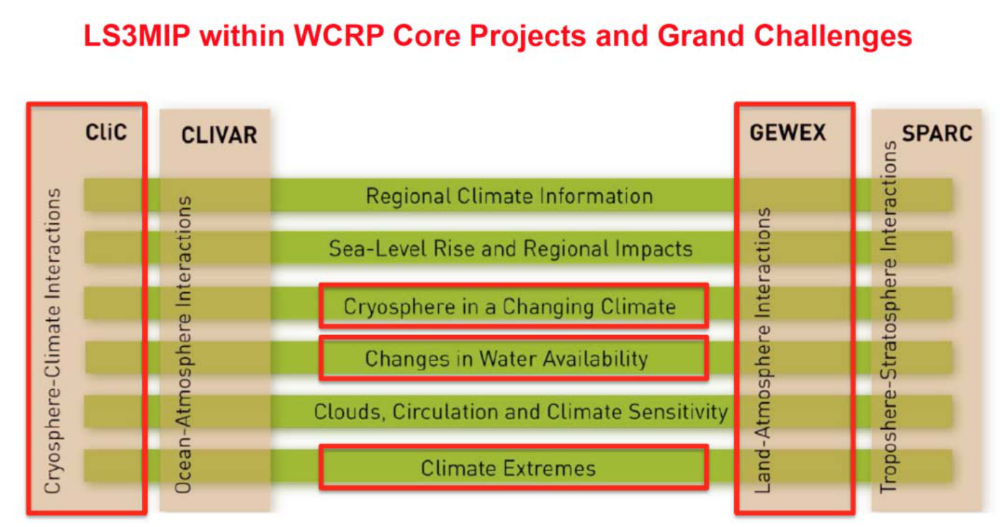
它由 WCRP 四个核心项目中的两个（CliC 和 GEWEX）发起，并与 WCRP 三大挑战（变化气候中的冰冻圈、水资源可利用性的变化和气候极端事件）直接相关。
It is initiated by two out of four WCRP core projects (CliC and GEWEX) and directly related to three WCRP Grand Challenges (Cryosphere in a Changing Climate, Changes in Water Availability, and Climate Extremes).
LMIP 实验将提供全球尺度雪和土壤湿度历史变化的最佳估计，从而能够评估各大洲淡水、农业干旱和径流极端事件的变化。
The LMIP experiment will provide best estimates of historical changes in snow and soil moisture on global scale, thus allowing the evaluation of changes in freshwater, agricultural drought, and streamflow extremes over continents.
LFMIP 实验对于评估耦合模式下陆面过程的关键反馈和系统性偏差具有高度相关性，并且还涉及陆地上两个主要反馈回路：参与北极放大的雪-反照率-温度反馈，以及导致温度极端事件重大变化的土壤湿度-温度反馈。
The LFMIP experiment is of high relevance for the assessment of key feedbacks and systematic biases of land surfaces processes in coupled mode, and is also addressing two of the main feedback loops over land: The snow-albedo-temperature feedback, involved in Arctic Amplification, and the soil moisture-temperature feedback leading to major changes in temperature extremes.
因此，LS3MIP 直接针对“变化气候中的冰冻圈”和“水资源可利用性的变化”两大挑战所依据的一些主要问题，并且还将为“气候极端事件”大挑战提供关于温度和水文极端事件的重要见解。
Hence LS3MIP is directly addressing some of the main questions underlying the Cryosphere in a Changing Climate and Changes in Water Availability Grand Challenges, and will also provide essential insights on temperature and hydrological extremes for the Climate Extremes Grand Challenge.
此外，LS3MIP 还将促进各群体之间的数据和知识交流，因为雪和土壤湿度动态常常相互关联（如 Hall et al. 2008），并共同对水文变率作出贡献（如 Koster et al. 2010b）。
In addition, LS3MIP will also allow the exchange of data and knowledge across communities, as snow and soil moisture dynamics are often interrelated (e.g. (Hall et al. 2008) and contribute together to hydrological variability (e.g. Koster et al. 2010b).
因此，LS3MIP 将构成 WCRP 内的一个核心要素，把若干群体联系在一起，这些群体实际上研究的是同一个物理对象：陆地上液态或固态形式的水。
LS3MIP will thus constitute a core element within WCRP, binding together several communities that, in fact, address a common physical object: water on land, in its liquid or solid form.
图 1：LS3MIP 与 WCRP 核心项目和大挑战的相关性
Figure 1: Relevance of LS3MIP for WCRP Core Projects and Grand Challenges
此外，LS3MIP 将为 WCRP 内的其他研究群体提供相关见解，例如对进入海洋的淡水输入的估计（与海平面变化和区域影响相关）、对已被证明强烈调节区域气候变率并因此与区域气候信息相关的反馈的评估，以及关于陆地气候对大尺度环流型和云出现频率反馈的研究。
In addition, LS3MIP will provide relevant insights for other research communities within WCRP, such as estimates of freshwater inputs to the oceans (which are relevant for sea-level changes and regional impacts), the assessment of feedbacks shown to strongly modulate regional climate variability and thus relevant for regional climate information, as well as the investigation of land climate feedbacks on large-scale circulation patterns and cloud occurrence.
因此，这也意味着可能对 WCRP 的其他大挑战和核心项目作出贡献。
This will thus also imply potential contributions to the other WCRP grand challenges and core projects.
图 2：LS3MIP 在 CMIP6 中的嵌入
Figure 2: Embedding of LS3MIP within CMIP6
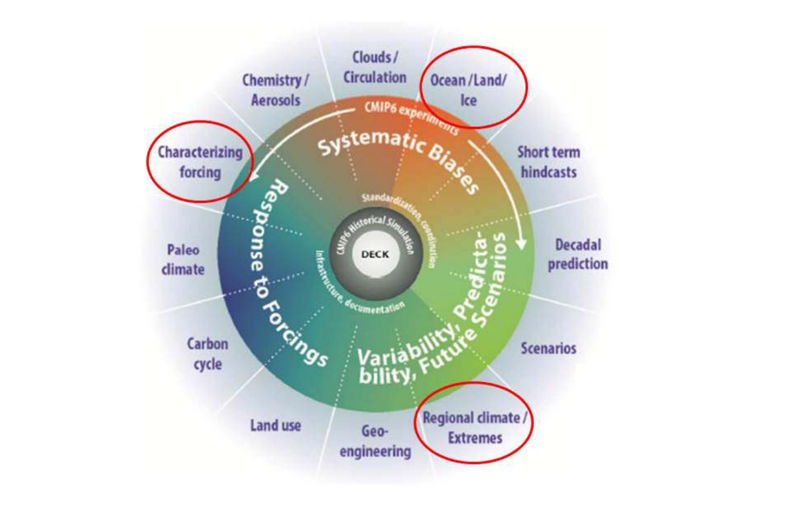
图 2 说明了 LS3MIP 在 CMIP6 中的嵌入。
Figure 2 illustrates the embedding of LS3MIP within CMIP6.
LS3MIP 明确填补了一个重大空白，使得能够在 CMIP6 框架内考虑陆面系统性偏差和陆面反馈。
LS3MIP clearly fills a major gap, by allowing the consideration of land systematic biases and land feedbacks within the CMIP6 framework.
在这一背景下，LS3MIP 可被视为更大的“LandMIP”系列实验的一部分，该系列全面处理来自陆面的偏差、不确定性、反馈和强迫（图 3），并与针对海洋或大气过程的类似实验互补。
In this context, LS3MIP can be seen as part of a larger "LandMIP" series of experiments fully addressing biases, uncertainties, feedbacks and forcings from the land surface (Figure 3), which are complementary to similar experiments for ocean or atmospheric processes.
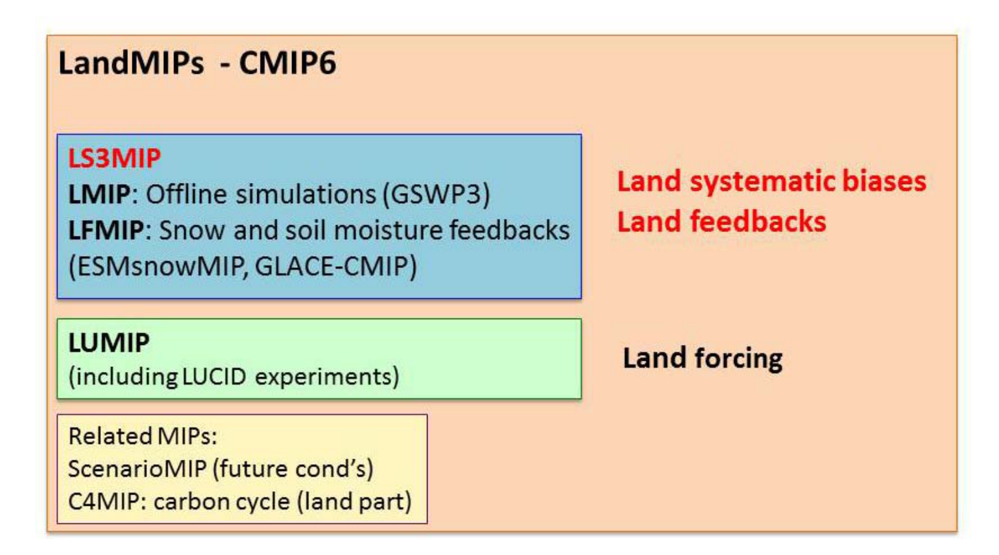
特别是，我们注意到：LS3MIP 侧重陆面过程中的系统性偏差（LMIP）和陆面过程对气候系统的反馈（LFMIP），而互补的 LUMIP 实验（单独的提案）则针对陆面强迫对气候系统的作用。
In particular, we note that while LS3MIP focuses on systematic biases in land surface processes (LMIP) and on feedbacks from the land surface processes on the climate system (LFMIP), the complementary LUMIP experiment (separate proposal) addresses the role of land surface forcing on the climate system.
植被和碳库在气候系统中的作用是 LUMIP 与 LS3MIP 的一个交汇点。
The role of vegetation and carbon stores in the climate system is a point of convergence between LUMIP and LS3MIP.
特别是，LMIP/GSWP3 实验将作为 LS3MIP 和 LUMIP 实验共同的仅陆面参考实验。
In particular, the LMIP/GSWP3 experiment will serve as land-only reference experiments for both the LS3MIP and LUMIP experiments.
此外，还将与 C4MIP 实验建立联系，涉及雪和土壤湿度过程（尤其是干旱）对陆地碳交换的影响及其对气候系统的反馈。
In addition, there will also be links to the C4MIP experiment with respect to impacts of snow and soil moisture processes (in particular droughts) on terrestrial carbon exchanges and resulting feedbacks to the climate system.
图 3：LS3MIP 在与陆面相关的各 MIP 中的嵌入情况概览。
Figure 3: Overview of the embedding of LS3MIP in land-related MIPs.
LS3MIP 将能够量化由雪和土壤湿度过程引起的陆面系统性偏差和反馈，而 LUMIP 则针对陆面对气候的强迫。
LS3MIP will allow the quantification of land systematic biases and feedbacks induced by snow and soil moisture processes, while LUMIP addresses land forcing on climate.
拟议实验概览
Overview of the proposed experiments
作为 LS3MIP 的一部分，提议开展若干互补实验（见图 4 和表 1）：
A number of complementary experiments are proposed as part of LS3MIP (see Figure 4 and Table 1):
（1）离线陆面模式实验（“陆面离线模式比较计划” Land offline MIP，LMIP）：
(1) Offline land model experiment ("Land offline MIP", LMIP):
在 GSWP3 的背景下，提供气象强迫数据，用于以离线模式驱动气候模式中的陆面模块。
In the context of GSWP3 meteorological forcings are made available to drive land modules from climate models in an offline mode.
对陆面状态和通量的离线陆面模拟，能够评估雪、土壤湿度和陆面通量、碳库和植被状态的趋势与变率，以及气候变化影响。
Offline land simulations of land surface states and fluxes allow for the evaluation of trends and variability of snow, soil moisture and land surface fluxes, carbon stores and vegetation states, and climate change impacts.
目前正在汇编辅助数据（如土地利用/覆盖变化、地表参数、CO2 浓度）以及用于启动（spin-up）和执行实验的书面协议。
Ancillary data (e.g., land use/cover changes, surface parameters, CO2 concentration) and documented protocols to spin-up and execute the experiments are currently being compiled.
LMIP 气象强迫由 GEWEX-GLASS 专家组开发并提供，该专家组在大尺度陆面模式评估领域拥有长期经验。
The LMIP meteorological forcing is developed and provided by the GEWEX-GLASS panel, which has a long-standing experience in the domain of large-scale land surface model evaluation.
尽管如此，一些已知和未知的问题仍不可避免。
Nevertheless, some known and unknown issues inevitably remain.
在受大尺度强迫数据已知问题影响的区域，或在出现许多陆面模式共有的显著系统性大尺度偏差的区域，可以通过对大尺度和样地尺度气象数据与模拟进行并行评估来识别这些问题，其中样地尺度模拟由直接观测的气象数据驱动。
In areas affected by known issues with large-scale forcing data or in areas where conspicuous systematic large-scale biases common to many land surface models appear, these can be identified by a concomitant evaluation of large-scale and plot-scale meteorological data and simulations, the latter being forced by directly observed meteorological data.
我们的分析将利用这些可能性。
Our analysis will take advantage of these possibilities.
关于为离线实验提供的气象强迫的更多信息见附件（第 14 页）。
Additional information on the provided meteorological forcing for the offline experiments is given in the Annex (page 14).
（1a）陆面再分析：LMIP-Hist
(1a) Land reanalysis: LMIP-Hist
将提供一套参考强迫数据和标准偏差订正策略，用于驱动各陆面模式开展历史（1850-2014）模拟。
One set of reference forcing data and a standard bias correction strategy will be provided to drive each land surface model for the historical (1850-2014) simulations.
尽管该历史实验尚未成为 DECK 模拟的正式成员，WGCM 已认识到这些离线实验对模式发展和基准测试过程的重要性。
Although this historical experiment is not yet a formal member of the DECK simulations, the WGCM recognized the importance of these offline experiments for the process of model development and benchmarking.
该历史运行中与 AMIP 大致类似的子时段（1979-2014）构成 LMIP 的 Tier 1（第一层级），并被提议在未来的 CMIP 活动中成为 DECK 的一部分。
The subset (1979-2014) of this historical run, largely analogous to AMIP, constitute Tier 1 of LMIP and is proposed to become part of the DECK in future CMIP exercises.
预计未来将纳入 DECK，因此 LMIP 模拟被确定为 proto-DECK（DECK 原型）实验。
A future implementation into the DECK is foreseen and the LMIP simulations were therefore identified as proto-DECK experiments.
作为补充，将并行于 CMIP6 框架提议开展额外的站点级验证，使用来自选定参考站点的观测强迫变量的一维（1d）时间序列。
Complementary, additional site level validations using 1d time series of observational forcing variables from selected reference sites will be proposed in parallel to the CMIP6 framework.
（1b）气候变化影响评估：LMIP-Fut
(1b) Climate change impact assessment: LMIP-Fut
未来模拟（2015-2100）构成 LMIP 的 Tier 2（第二层级）。
The future simulations (2015-2100) constitute Tier 2 of LMIP.
在这些模拟中，将利用基于 ScenarioMIP 的至少 2 个情景（暂定为 SSP5-8.5(ref) 和 SSP1-2.6）的大气输出作为强迫数据，并对常数变量和时变变量采用统计偏差订正方法1。
In these simulations, the atmospheric output of at least 2 scenarios based on the ScenarioMIP (tentatively, SSP5-8.5(ref) and SSP1-2.6) will be exploited as forcing data with a statistical bias correction method1 for constant and time varying variables.
它侧重于气候变化影响评估（如对水资源可利用性和气候极端事件的影响）以及 CMIP6 各 GCM 的陆面模块对预估未来的敏感性估计。
It focuses on climate change impact assessment (e.g., on water availability and climate extreme) and estimation of the sensitivity of land modules of CMIP6 GCMs to the projected future.
（2）给定陆面状态以评估雪和土壤湿度反馈的影响（“陆面反馈模式比较计划” Land Feedback MIP，LFMIP）：
(2) Prescribed land surface states to assess the impact of snow and soil moisture feedbacks ("Land Feedback MIP", LFMIP):
〔边界说明〕本行为脚注 1，属引文条目，按项目规则保留英文原文不译。
1 We envisage following the bias correction method described by Koven et al., Proc. Nat. Acad. Sci., 112, 3752-3757, doi:10.1073/pnas.1415123112, 2015.
LS3MIP (Land Surface, Snow and Soil Moisture) ｜ 陆面、雪与土壤湿度模式比较计划（下）
这里遵循 GLACE‐CMIP5 协议：除 CMIP6 DECK 实验之外，还将开展一组强迫实验，其中陆面状态由预先定义的数据库给定。
Here the GLACE‐CMIP5 protocol is followed, where apart from the CMIP6 DECK experiments a set of forced experiments is carried out, where land surface states are prescribed from an a priori defined database.
与早期实验不同，这里预期开展耦合 AOGCM 模拟，并以历史（1980‐2014）与未来（2015‐2100）模拟作为参照。
In contrast to the earlier experiments coupled AOGCM simulations are anticipated, where the Historical (1980‐2014) and future (2015‐2100) simulations will be used as reference.
对于未来时段，将在后续阶段从 ScenarioMIP 中选取单一情景。
For the future a single scenario from the ScenarioMIP will be selected at a later stage.
所给定的陆面状态可因参与模式的模式结构不同而有所差异，但至少包括水分储库（土壤湿度、雪质量），也可扩展到与植被或温度有关的其他预报量。
The land surface states that are prescribed may vary across the participating models depending on the model structure, but at least include the water reservoirs (soil moisture, snow mass), but may be extended to other prognostic quantities related to vegetation or temperature.
早期 GLACE 相关实验的经验已揭示出若干技术与科学问题：
The earlier experience with GLACE‐related experiments has revealed a number of technical and scientific issues:
技术方面：由于在大多数 GCM 中陆面模块是描述大气的代码的组成部分，给定陆面动力过程需要一个非常规的技术接口，在整个模拟过程中读取并替换变量。
Technical aspects: because in most GCMs the land surface module is an integral part of the code describing the atmosphere, prescribing land surface dynamics requires a non‐conventional technical interface, reading and replacing variables throughout the entire simulations.
LS3MIP 的许多参与者此前参加过 GLACE 类实验，但对其中一些而言，代码调整仍需投入技术工作。
Many participants to LS3MIP have participated earlier in GLACE‐type experiments, but for some the code adjustments will require a technical effort.
在此接口中，需要就外部读取变量的选择、解决与其他静态或动态变量可能存在的失配问题做出一些非平凡的选择。
In this interface some non‐trivial choices have to be made on the selection of variables read in externally, resolving possible mismatches with other static or dynamic variables.
鉴于陆面方案的种类繁多，对该流程进行标准化并不可行；如何实现该接口由各研究团队自行决定，他们处于优化该接口的最佳位置。
A standardization of this procedure is, given the wide variety of land surface formulation, not feasible; the decision on how to implement this interface is up to the research teams, who are in the best position to optimize this interface.
可能实现方式的差异会增加模式集合所产生的不确定性范围，其程度类似于土地利用、通量订正或降尺度的实现方式所增加的不确定性。
The disparity of possible implementations is adding to the uncertainty range generated by the model ensemble, similar to the degree to which implementation of land use, flux corrections or downscaling adds to this uncertainty range.
对给定陆面变量这一协议之贡献的理解，有赖于对建模团队实现该接口方式的细致记录。
Understanding of the contribution of the protocol to prescribe land surface variables is helped by a careful documentation of the way the modelling groups have implemented this interface.
LS3MIP 领导层将在各参与建模团队之间组织关于强迫技术的详细讨论，以尽可能促成同质化的实现，并将确保对初步与最终 LS3MIP 运行中给定陆面变量进行细致且协调的检查。
The LS3MIP leadership will organize a detailed discussion of the forcing techniques among the participating modeling groups in order to favor as much as possible a homogenous implementation, and it will ensure careful and coordinated checks of the prescribed land‐surface variables in preliminary and final LS3MIP runs.
水与能量守恒：与 AMIP、松弛逼近（nudged）和资料同化实验类似，给定陆面状态的实验不守恒水与能量。
Water and energy conservation: similar to AMIP, nudged, and data assimilation experiments, the prescribed land surface experiments do not conserve water and energy.
如果例如地表蒸发或径流对土壤湿度或雪状态存在强非线性依赖，那么陆面对干、湿条件的不对称响应甚至可能导致系统性地产生或消灭水或能量。
A systematic generation or destruction of water or energy can even in emerge as a result of asymmetric land surface responses to dry and to wet conditions, if e.g. surface evaporation or runoff depend strongly non‐linearly to soil moisture or snow states.
此外，未表征的过程（如灌溉取水或与地下水的交换）可能导致收支失衡。
Also, unrepresented processes (such as water extraction for irrigation or exchange with the groundwater) may lead to imbalances in the budget.
这种对水和能量平衡的系统性改变可能与预估的气候变化信号发生相互作用，其中被改变的气候态土壤状况可对气候变化引起的温度或降水信号做出贡献。
This systematic alteration of the water and energy balance may interact with the projected climate change signal, where altered climatological soil conditions can contribute to the climate change induced temperature or precipitation signal.
在实验分析中，将考察这种不对称性以及能量/水收支不闭合的问题，并将其置于气候态能量与水平衡及其气候趋势²的背景中。
In the analyses of the experiments this asymmetry and lack of energy/water balance closure will be examined and put in context of the climatological energy and water balance and its climatic trends2.
² 若这一问题在参与建模团队中引起足够兴趣，可设想开展额外实验以强制实现水守恒（至少在无雪季节），即规定任何加入或撤出土壤的水都取自（或加入）径流或地下水储量；若这一做法不可行，则这部分额外的水不予提供。这将对应于一个最大灌溉实验，可作为敏感性实验以更详细地研究这一问题。
2 In case this question spurs sufficient interest among the engaged modeling groups, additional experiments enforcing water conservation (at least during the snow‐free season) can be envisaged by imposing that any water added to or withdrawn from the soil is taken from (added to) runoff or groundwater storage, and if this is not possible this additional water is not provided. This would correspond to a maximum irrigation experiment that could serve as a sensitivity experiment to investigate this issue in more detail.
早期的 GLACE 类实验表明，当给定土壤水状况取计算气候态平均所用样本的中位数而非平均值时，水守恒问题往往得到缓解。
Earlier GLACE‐type experiments revealed that often the issue of water conversation is reduced when prescribed soil water conditions are taken as the median rather than the mean of a sample over which a climatological mean is calculated.
因此，我们将在 LS3MIP 中使用中位数的土壤水与雪状况。
Therefore, we will use median soil water and snow conditions in LS3MIP.
我们进一步指出，我们的许多模拟在仅大气模式下开展，该模式下水与能量守恒本来就不被满足。
We further note that many of our simulations are carried out in the atmosphere‐only mode in which water and energy conservation is not respected anyway.
(2a) 核心实验：有 2 个实验被视为“核心”：
(2a) Core experiments: 2 experiments are considered to be “core”:
• 由“现代气候”状况（如 1980‐2014）导出的给定气候态，旨在诊断气候时间尺度上陆气反馈的作用；
• prescribed climatology derived from “present climate” conditions (e.g. 1980‐2014), aiming at diagnosing the role of land‐atmosphere feedback at the climate time scales;
• 使用瞬变 30 年滑动平均的给定气候态，与标准 CMIP6 运行对比可诊断强陆气耦合区域的转移，以及与陆面状态相关的潜在可预报性的变化。
• prescribed climatology using a transient 30‐yr running mean, where a comparison to the standard CMIP6 runs allows diagnosing shifts in the regions of strong land‐atmosphere coupling, and shifts in potential predictability related to land surface states.
两个模拟都覆盖历史时段并延伸至 2100 年，基于后续阶段确定的情景强迫。
Both simulations cover the historical period and extend to 2100, based on a forcing scenario to be identified at a later stage.
在这两种情形（以及下文相应情形）中，将使用耦合模式的气候态中位数土壤水与雪水当量，而非气候态平均值（见上文）。
In both cases (and in corresponding cases below), the coupled model’s climatological median soil water and snow water equivalent for will be used instead of the climatological mean (see above).
我们注意到，“由现代气候状况导出的给定气候态”实验可被视为理想化的未来灌溉实验。
We note that the “prescribed climatology derived from present climate conditions” experiments can be seen as an idealized future irrigation experiment.
计划输出高时间分辨率数据（逐日，部分场与时间片段为次日），以研究陆面‐气候反馈（包括雪与土壤湿度反馈）对陆地气候极端事件的作用。
Output in high temporal resolution (daily, as well as sub‐daily for some fields and time slices) is planned in order to address the role of land surface‐climate feedbacks (including snow and soil moisture feedbacks) on climate extremes on land.
这些输出可仅为较短的时间片段生成。
These outputs may be generated for shorter time slices only.
每个核心模拟的单个成员被视为 Tier 1 层级模拟的一部分，但鼓励开展多成员实验（并纳入 Tier 2 层级的模拟集合）。
A single member of each of these core simulations is considered to be part of the Tier 1 simulations, but multi‐member experiments are encouraged (and included in a Tier 2 set of simulations).
(2b) 与 (2a) 相同，但为 AGCM 模拟
(2b) As (2a) for AGCM simulations
(2a) 中的 AOGCM 模拟将以给定 SST 配置（AGCM）重复进行，这些模拟也纳入 LS3MIP 实验的 Tier 2 层级集合。
The AOGCM simulations from (2a) are duplicated with a prescribed SST configuration (AGCM), and also these simulations are included in the Tier 2 set of LS3MIP experiments.
(2c) 土壤湿度与雪的单独效应，以及其他陆面参数与变量的作用
(2c) Separate effects of soil moisture and snow, and role of additional land parameters and variables
将开展仅给定雪、雪反照率或土壤湿度的额外实验，以分别评估各自的反馈，并控制积雪与土壤湿度含量之间可能的相互作用。
Additional experiments in which only snow, snow albedo or soil moisture is prescribed will be conducted to assess the respective feedbacks in isolation, and have control on possible interactions between snow cover and soil moisture content.
在后续阶段，也可考虑植被参数与变量（如叶面积指数）。
At a later stage, also vegetation parameters and variables (e.g. leaf area index) could be considered.
这些实验都属于 LS3MIP 的 Tier 2 批次。
These experiments are all part of the Tier 2 batch of LS3MIP.
(2d)：与 (2a) 相同，但为固定土地利用状况
(2d): As (2a) for fixed land use conditions
计划与土地利用模式比较计划（LUMIP）联合，在不变的陆面覆盖与土地利用状况下重复实验 (2a)。该实验凸显土壤湿度在调制气候对陆面覆盖与土地利用的响应中的作用。
In conjunction with the Land Use MIP (LUMIP) a repetition of experiment (2a) under unchanging land cover and land use conditions is planned. This experiment highlights the role of soil moisture in modulating the climate response to land cover and land use.
它是 LS3MIP 中一个 Tier 2 层级的实验集合。
It is a tier 2 set of experiments in LS3MIP.
除上述实验外，还提议开展特定的敏感性实验，以分离单个过程的作用（如给定反照率以研究雪相关反馈，或植被参数以研究碳/水相互作用）。
Apart from the above experiments, particular sensitivity experiments are proposed to isolate the role of individual processes (such as prescribed albedo to address snow‐related feedbacks, or vegetation parameters addressing carbon/water interactions).
这些都将作为 Tier 2 层级实验，并在 LS3MIP 的运行期间逐步设计。
These all will be Tier 2 experiments, and be designed throughout the runtime of LS3MIP.
(3) 由伪观测导出的给定陆面状态（LFMIP‐可预报性）
(3) Prescribed land surface states derived from pseudo‐observations (LFMIP‐predictability)
利用实验批次 (1)（离线陆面模式）初始化 AOGCM 实验（批次 2），可开展一组与 GLACE2 设置一致的可预报性实验。
The use of experimental batch (1) (offline land models) to initialize the AOGCM experiments (batch 2) allows a set of predictability experiments in line with the GLACE2 set‐up.
这里提议在 AOGCM 模式下开展 1980 至 2014 年的历史运行，给定一系列“重建”的陆面状态，这些状态或来自离线模拟，或来自各种观测数据源（如 SWE 或雪反照率，使用卫星、再分析与陆面模式输出）。
Here historical runs from 1980 to 2014 are proposed in AOGCM mode, with a prescribed series of ‘reconstructed’ land surface states, either derived from the offline simulations or derived from various observational data sources (such as for SWE or snow albedo, using satellites, reanalysis and land surface model outputs).
可预报性评估包括评估积雪融化及其相关反馈对气候模式最近低估北方极地增暖的贡献。
The predictability assessments include the evaluation of the contribution of snow cover melting and its related feedbacks to the underestimations of recent boreal polar warming by climate models.
表 1 与图 4 总结了实验概览，其中针对特定过程的实验以及 LUMIP 配置实验（2c 与 2d）未列入此清单。
Table 1 and Figure 4 summarize the experimental overview, where experiments focusing on specific processes and the LUMIP configuration (2c and 2d) are not included in this inventory.
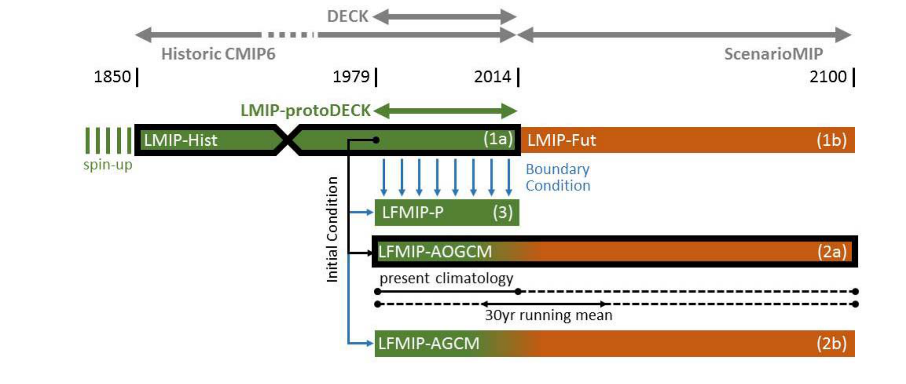
表 1：LS3MIP 实验总览。单独的敏感性研究与所选情景的细节未包含在内。
Table 1: Summary of LS3MIP experiments. Details on separate sensitivity studies and selected scenarios have not been included.
| 实验名称 | 层级 | 实验描述/设计 | 配置 | 开始 | 结束 | 模拟年数 | 成员数 | 总年数 | 所针对的科学问题和/或空白 | 与其他 MIP 可能的协同 | 运行时间表 |
|---|---|---|---|---|---|---|---|---|---|---|---|
| LMIP‐H | 1 | 仅陆面模拟 | LND | 1850 | 2014 | 165 | 2 | 330 | 陆面再分析 | LUMIP, C4MIP, CMIP6 historical | 2016 年 1 月–6 月 |
| LMIP‐F | 2 | 仅陆面模拟 | LND | 2015 | 2100 | 86 | 4 | 344 | 气候趋势分析 | LUMIP, C4MIP, ScenarioMIP | 2016 年 1 月–6 月 |
| LFMIP‐CAO1 | 1 | 给定 1980‐2014 气候的陆面状况 | LND‐ATM‐OC | 1980 | 2100 | 121 | 1 | 121 | 诊断包括海洋响应在内的陆面‐气候反馈 | ScenarioMIP | |
| LFMIP‐CAO4 | 2 | 给定 1980‐2014 气候的陆面状况 | LND‐ATM‐OC | 1980 | 2100 | 121 | 4 | 484 | 诊断包括海洋响应在内的陆面‐气候反馈 | ScenarioMIP | |
| LFMIP‐CA5 | 2 | 给定 1980‐2014 气候的陆面状况；SST 给定 | LND‐ATM | 1980 | 2100 | 121 | 5 | 605 | 诊断陆地上空的陆面‐气候反馈 | ScenarioMIP | DECK 之后 (2017?) |
| LFMIP‐RAO1 | 1 | 给定 30 年滑动平均的陆面状况 | LND‐ATM‐OC | 1980 | 2100 | 121 | 1 | 121 | 诊断包括海洋响应在内的陆面‐气候反馈 | ScenarioMIP | |
| LFMIP‐RAO4 | 2 | 给定 30 年滑动平均的陆面状况 | LND‐ATM‐OC | 1980 | 2100 | 121 | 4 | 484 | 诊断包括海洋响应在内的陆面‐气候反馈 | ScenarioMIP | |
| LFMIP‐RA5 | 2 | 给定 30 年滑动平均的陆面状况；SST 给定 | LND‐ATM | 1980 | 2100 | 121 | 5 | 605 | 诊断陆地上空的陆面‐气候反馈 | ScenarioMIP | |
| LFMIP‐HP10 | 2 | 初始化伪观测陆面 | LND‐ATM‐OC | 1980 | 2014 | 35 | 10 | 350 | 陆面相关的季节可预报性 | CMIP6 historical | DECK 之后 (2017?) |
图 4：LS3MIP 实验结构示意图（黑色边框为 Tier 1 层级实验）。
Figure 4: Schematic diagram for the experiment structure of LS3MIP (black‐outline for the Tier 1 experiment).
对 CMIP DECK 与 CMIP6 实验所提议评估/分析的概览
Overview of the proposed evaluation/analysis of the CMIP DECK and CMIP6 experiments
LS3MIP 汇集了气候模式研发者、雪与土壤湿度模式专家，以及土壤湿度和雪的性质、质量与范围的局地与遥感数据专家。
LS3MIP brings together climate modelers, snow and soil moisture model specialists and experts in local and remotely sensed data of soil moisture and snow properties, mass and extent.
这种多样性体现在 LS3MIP 指导小组的构成中，并确保实验设置、模式评估以及结果的分析/解释都是贴切的。
This diversity is reflected in the composition of the steering group of LS3MIP and ensures that the experiment setups, model evaluations and analyses/interpretations of the results are pertinent.
雪的分析
Analyses for snow
关于气候模式运行的分析，大尺度雪质量（SWE，雪水当量）与积雪范围（SCE）数据集对 LS3MIP 框架中历史模拟（即 AMIP 运行与历史耦合运行）的分析尤为重要。
Concerning the analysis of climate model runs, large‐scale datasets of snow mass (SWE) and snow cover extent (SCE) are particularly relevant for the analysis of the historical simulations in the LS3MIP framework (i.e. the AMIP runs and the historical coupled run).
这些大尺度、高质量的雪数据可通过指导小组的构成，经由与卫星雪产品对比评估实验（SnowPEX，http://calvalportal.ceos.org/projects/snowpex）的密切联系获取。
These large‐scale, high‐quality snow data are available through close links to the Satellite Snow Product Intercomparison and Evaluation Experiment (SnowPEX, http://calvalportal.ceos.org/projects/snowpex), via the composition of the steering group.
历史模拟（耦合与 AMIP）中这些基本雪相关变量的表征质量将对照这些数据集进行评估。
The quality of the representation of these fundamental snow‐related variables in the historical simulations (coupled and AMIP) will be evaluated against these datasets.
需要历史模拟的输出，以更新观测与历史模拟之间一致性的分析，并确定陆地积雪范围与质量的变率和趋势的新预估（此前已用 CMIP3 与 CMIP5 输出在 Brown and Mote (2009)、Derksen and Brown (2012)、Brutel‐Vuilmet et al. 2013 等研究中加以检验）。
Output from the historical simulations are required to update analyses of the agreement between observations and historical simulations, and determine new projections of the variability and trends in terrestrial snow cover extent and mass (this was examined with CMIP3 and CMIP5 output in studies such as Brown and Mote (2009); Derksen and Brown (2012); Brutel‐Vuilmet et al. 2013).
这些分析除其本身的意义外，还可为解释模式在北方与极地气候表征中的普遍缺陷提供线索。
These analyses, besides their genuine interest, can also provide clues to the interpretation of general model deficiencies in the representation of boreal and polar climates.
将对 DECK 模拟中积雪覆盖区反照率的表征进行分析。
The representation of albedo over snow‐covered areas in DECK simulations will be analyzed.
现有多个卫星反演数据集可用于评估模拟反照率，包括 16 天 MODIS 数据（2001 年至今；http://modis‐atmos.gsfc.nasa.gov/ALBEDO/）和最近更新的每日两次 APP‐x 产品（1982‐2011；http://stratus.ssec.wisc.edu/products/appx/appx.html）。
Multiple satellite‐derived datasets are available for the evaluation of simulated albedo, including 16‐day MODIS data (2001‐present; http://modis‐atmos.gsfc.nasa.gov/ALBEDO/) and the recently updated twice‐daily APP‐x product (1982‐2011; http://stratus.ssec.wisc.edu/products/appx/appx.html).
将特别关注模式对森林与山区积雪覆盖率表征的作用。
Specific attention will be paid to the role of the models' representation of snow cover fraction in forested and mountainous areas.
DECK 模拟将用于更新观测与模拟的雪反照率反馈分析，这是确定气候对积雪敏感度的重要诊断量（Qu and Hall, 2014; Fletcher et al. 2012）。
The DECK simulations will be used to update analyses of observed and simulated snow‐albedo feedback, an important diagnostic in determining climate sensitivity to snow cover (Qu and Hall, 2014; Fletcher et al. 2012).
LS3MIP 实验将与对照运行结合分析，以量化雪的各种气候效应，包括对雪反照率反馈的非常精确的估计。
The LS3MIP will be analyzed in concert with the control runs to quantify various climatic effects of snow, including very accurate estimates of snow albedo feedback.
例如，给定反照率实验（模拟组 2c）不允许气候变暖时积雪覆盖区植被的光学性质发生变化。
For example, the prescribed albedo experiments (simulation set 2c) do not allow the optical properties of vegetation to change in snow‐covered areas as the climate warms.
然而，给定 SWE 的实验确实允许这种效应存在。
However, the prescribed SWE experiments do allow for this effect.
可将给定 SWE 实验中地表反照率的变化与对照实验中总反照率的变化相比较，以量化积雪覆盖区地表反照率变化在多大程度上源于植被变化而非积雪变化。
The surface albedo change in the Prescribed SWE experiments can be compared to the overall albedo change in the control experiments to quantify the degree to which the surface albedo changes in snow‐covered areas are due to vegetation changes, rather than snow changes.
这些估计可用于确认：从给定反照率实验诊断出的雪反照率反馈效应不会因植被效应而产生误导。
These estimates can be used to confirm that snow albedo feedback effects diagnosed from the Prescribed Albedo experiments are not misleading due to vegetation effects.
类似地，给定反照率实验包含由融雪引起的土壤湿度与水文变化。
Similarly, the Prescribed albedo experiments contain changes in soil moisture and hydrology due to melting snow.
可将这些与对照实验比较，以确定融雪在多大程度上独立于其对地表吸收太阳辐射的重大影响而影响水文。
These can be compared to the control experiments to ascertain the degree to which snowmelt influences hydrology independently of its substantial influence on surface absorbed solar radiation.
由此可以评估给定 SWE 实验所产生的与雪反照率反馈无关的雪效应达到了何种程度。
In this way, one can assess the degree to which the Prescribed SWE experiments produce snow effects unrelated to snow albedo feedback.
本项目第一阶段的地理重点是两个半球的大陆积雪，既包括无冰区（欧亚大陆北部与北美），也包括大型冰盖（格陵兰与南极洲）。
The geographical focus of the first stage of this project is on the continental snow cover of both hemispheres, both in ice‐free areas (Northern Eurasia and North America) and on the large ice sheets (Greenland and Antarctica).
在 LS3MIP 的后续阶段，将分析雪对海冰的影响。
In later stages of LS3MIP, the effect of snow on sea ice will be analyzed.
关于海冰上积雪的主要科学问题与近期北极海冰强烈减少的趋势以及雪提前融化的潜在放大效应有关。
Major scientific questions concerning snow on sea ice are related to strong recent trends of Arctic sea ice decline and the potential amplifying effect of earlier snow melt.
这些问题可通过带有动态大气松弛逼近的 AGCM 运行来应对，以消除与北半球环流趋势（AO、NAO）表征失真有关的偏差。
These questions can be tackled by AGCM runs with a dynamic atmospheric nudging to eliminate biases related to misrepresentation of NH circulation trends (AO, NAO).
一些已声明有兴趣参与 LS3MIP 雪相关部分（ESM‐SnowMIP）的建模团队目前正在使用给定雪质量（SWE）和 AMIP 型 DECK 对照运行开展“概念验证”模拟；注意，类似实验已经开展过（如 Lawrence and Slater, 2009; Alexander et al., 2011），证明了所提议实验的可行性与科学意义。
Some of the modeling groups that have declared interest in participating in the snow‐related part of LS3MIP (ESM‐SnowMIP) are currently carrying out “proof of concept” simulations using prescribed snow mass (SWE) with an AMIP‐type DECK control run; note that similar experiments have already been carried out (e.g., Lawrence and Slater, 2009; Alexander et al., 2011), demonstrating the feasibility and scientific interest of the proposed experiments.
土壤湿度的分析
Analyses for soil moisture
分析将聚焦于 1) 离线陆面模拟（LMIP/GSWP3 模拟）的系统性偏差，以及 2) 土壤湿度‐气候反馈对陆地气候状况过去与预估变化的作用。
The analyses will focus on 1) systematic biases in offline land simulations (LMIP/GSWP3 simulations) and on 2) the role of soil moisture – climate feedbacks for past and projected changes in land climate conditions.
就系统性陆面偏差而言，将用历史时段可获得的观测（如径流、储量异常、植被活动）评估 LMIP/GSWP3 模拟，以评估其真实程度以及与实测相比的典型偏差。
In the case of systematic land biases, the LMIP/GSWP3 simulations will be evaluated with observations available over the historical time period (e.g. for runoff, storage anomalies, vegetation activity) to assess their degree of realism and typical biases compared to measurements.
将评估当前陆面模式在表征历史陆地水可用性/干旱变化（源于模式参数化和/或大气强迫，Sheffield et al. 2012, Trenberth et al. 2013, Greve et al. 2014）方面的不确定性，以及陆气之间水、能量与碳交换的系统性偏差（如 Mueller and Seneviratne 2014）。
Uncertainties of current land surface models in the representation of historical variations in land water availability/droughts (due to model parameterizations and/or atmospheric forcings, Sheffield et al. 2012, Trenberth et al. 2013, Greve et al. 2014) as well as systematic biases in water, energy and carbon exchanges between the land and the atmosphere (e.g. Mueller and Seneviratne 2014) will be assessed.
这些评估将用于对未来陆地状况离线模拟以及耦合实验的评估。
These assessments will be used for the evaluation of the offline simulations for future land conditions as well as the coupled experiments.
就土壤湿度‐气候反馈而言，重点将放在以下主题上：
In the case of soil moisture‐climate feedbacks, the focus will be set on the following topics:
1. 量化土壤湿度变率对陆地气候变率（趋势、年代际变率、年际异常、极端事件）的影响及其与大尺度驱动因子（大尺度变率模态、海洋‐气候相互作用）的相互作用
1. The quantification of the impact of soil moisture variability for climate variability (trends, decadal variability, interannual anomalies, extremes) on land and its interaction with large‐scale drivers (large‐scale modes of variability, ocean‐climate interactions)
2. 将模式在陆地温度、降水、径流、植被活动、碳汇上的分歧归因于土壤湿度的表征、相关过程（植物蒸腾与光合作用）以及对大气的反馈
2. The attribution of model disagreement in land temperature, precipitation, runoff vegetation activity, carbon sink to the representation of soil moisture, related processes (plant transpiration and photosynthesis) and feedbacks to the atmosphere
3. 利用表征已识别土壤湿度‐气候反馈的观测，推导涌现约束以减小平均气候与极端事件（高温、干旱、洪水）预估的不确定性
3. The derivation of emergent constraints to reduce uncertainties in projections of mean climate and extremes (hot temperatures, droughts, floods) using observations characterizing the identified soil moisture‐climate feedbacks
4. 区域尺度评估模式土壤湿度/陆面表征偏差与气候响应之间的关系
4. The regional assessment of the relationship between bias in modelled soil moisture/land surface representation and climate response
5. 对土壤湿度动力变化“热点”的地理格局及其对干旱、热浪、灌溉限制或河流流量异常发生的影响的稳健估计。
5. A robust estimate on the geographical patterns of “hot spots” of changes in soil moisture dynamics and their impact on occurrence of droughts, heat waves, irrigation limitations or river discharge anomalies.
6. 评估土壤湿度对当前与未来气候中陆地上次季节至季节可预报性的作用。
6. The assessment of the role of soil moisture for subseasonal to seasonal predictability over land in both present and future climate.
提议的时间安排
Proposed timing
所提议的实验是复刻 Historical 与 ScenarioMIP 模拟的连续模式运行。
The proposed experiments are continuous model runs duplicating the Historical and ScenarioMIP simulations.
AMIP 模式运行计划作为 Tier 2 层级的实验集合。
AMIP mode runs are foreseen as a Tier 2 set of experiments.
实验设置需要为读取和给定陆面特征编写适量的额外代码，而许多团队已经参加过此前的实验。
The experimental setup requires a reasonable amount of additional coding for reading and prescribing land surface characteristics, while many groups already participated in one of the earlier experiments.
预计 LS3MIP 的反馈模拟将在第一组核心 CMIP6 实验（即 DECK 与历史运行）之后开展。
It is anticipated that the feedback simulations of LS3MIP are carried out after the first set of core CMIP6 experiments (i.e. DECK and historical runs).
目前计划在 GSWP3 背景下开展 ESM 陆面模块非耦合模式的独立模拟，并将于 2016 年初启动。
Stand‐alone simulations with the ESMs’ land surface modules in uncoupled mode are currently planned in the context of GSWP3, and will initiate early 2016.
CMIP6 Historical Simulation 实验中陆面过程的评估将在历史运行可用后立即开始。
The evaluation of land surface processes in CMIP6 Historical Simulation experiments will start as soon as historical runs are available.
将用 6 个月的预备期广泛征询气候模拟界的意见，以最终确定详细的实验设计。
A 6 month preliminary period will be dedicated to a wide consultation of the climate modeling community aiming at finalizing the detailed experiments design.
团队承诺
Group commitment
以下 ESM 团队与联系人（在科学指导委员会中有代表）将参与 LS3MIP（根据 2015 年 3 月 25 日的 CMIP 清单）：
The following ESM groups and contact persons (represented in Scientific Steering Committee) will participate in LS3MIP (according to inventory of CMIP 25 March 2015):
• ACCESS（Andy Pitman）• BCC • CanESM • CAS‐ESM • CESM（David Lawrence）• CESS‐THU • CNRM（Hervé Douville）• EC‐Earth（Andrea Alessandri）• FGOALS • IPSL（Gerhard Krinner）• MIROC6 与 MIROC‐ESM（Hyungjun Kim）• MPI（Stefan Hagemann）• MRI‐ESM • UKESM（Martin Best）
• ACCESS (Andy Pitman) • BCC • CanESM • CAS‐ESM • CESM (David Lawrence) • CESS‐THU • CNRM (Hervé Douville) • EC‐Earth (Andrea Alessandri) • FGOALS • IPSL (Gerhard Krinner) • MIROC6 and MIROC‐ESM (Hyungjun Kim) • MPI (Stefan Hagemann) • MRI‐ESM • UKESM (Martin Best)
潜在感兴趣的团队名单包括：
A list of potentially interested groups includes:
• BNU • CMCC • GFDL（Kirsten Findell，待确认）• GISS • NorESM
• BNU • CMCC • GFDL (Kirsten Findell, tbc) • GISS • NorESM
附录：离线强迫
Annex: the offline forcing
LMIP 的大气边界条件基于 20 世纪再分析（20CR）（Compo et al. 2011），仅同化地面气压，并使用观测的月海表温度与海冰分布。
The atmospheric boundary condition for LMIP is based on 20th Century Reanalysis (20CR) (Compo et al. 2011) assimilating only surface pressure and using observed monthly sea‐surface temperature and sea‐ice distribution.
20CR 天气变率的集合不确定性已经过评估，且这种不确定性随时间变化的观测网络而变化。
The ensemble uncertainty in the synoptic variability of 20CR has been evaluated, and this uncertainty varies with the time‐changing observation network.
发现位势高度（500 hPa）与气温（850 hPa）和独立的长序列（1905‐2006）高空数据具有高相关性。
High correlations for geopotential height (500 hPa) and air temperature (850 hPa) with an independent long record (1905‐2006) of upper‐air data are found.
尽管观测密度随时间和地点变化，基于探空数据的长期相关性与当今最先进的三天预报技巧相当。
Although observation density varies over time and location, the long‐term radiosonde based correlation is similar to the state‐of‐the‐art three days forecast skill.
谱松弛（spectral nudging）动力降尺度技术能有效地在更高空间分辨率上保留天气特征。
A spectral nudging dynamical downscaling technique effectively retains synoptic features in the higher spatial resolution.
使用观测的额外偏差订正带来了显著改进。
Additional bias corrections using observations introduce considerable improvements.
作为动力降尺度的进一步工作，已应用垂直阻尼（Hong and Chang 2012）与单集合成员订正（Yoshimura and Kanamitsu 2013）。
As further efforts putting into the dynamical downscaling, vertical damping (Hong and Chang 2012) and single ensemble member correction (Yoshimura and Kanamitsu 2013) have been applied.
图 A1 显示了强迫数据生成框架在每一步中相对于原始再分析的表现。
Figure A1 shows the performance of the forcing data generation framework in each step relative to the original reanalysis.
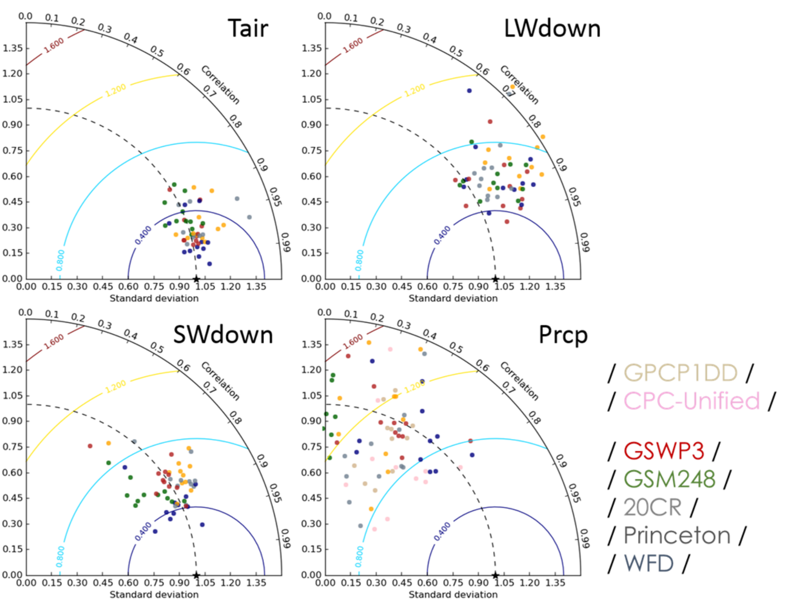
以 FLUXNET 中 20 个全球分布的原位观测站的日变率的位相与振幅作为参考。
Phase and amplitude of daily variability of 20 globally distributed in‐situ observation sites in FLUXNET are used as a reference.
尽管固有异质性导致与降水原位观测相比存在显著差异，许多变量（如长波与短波向下辐射、气温）表现出与观测相似的变率。
Although the intrinsic heterogeneity leads to significant differences comparing to in‐situ observations for precipitation, many variables (e.g., long‐ and short‐wave downward radiation and air temperature) show variability similar to the observations.
图 A1：大气边界变量与 FLUXNET 站点对比的泰勒图
Figure A1: Taylor diagram for atmospheric boundary variables comparing to FLUXNET sites
【边界说明：以下为参考文献条目（第 176 页起），按原文保留，不予翻译。】
[Boundary note: the following entries are the reference list (starting on page 176); they are kept verbatim and are not translated.]
Alexander, M.A., R. Thomas, C. Deser, and D. Lawrence, 2009: The atmospheric response to projected terrestrial snow changes in the late 21st century. J. Clim., 23, 6430‐6437, doi: 10.1175/2010JCLI3899.1. Betts, A.K., 2004. Understanding hydrometeorology using global models. B. Am. Meteorol. Soc. 85 (11), 1673–1688. Brown, R. D., and P. W. Mote, 2009: The Response of Northern Hemisphere Snow Cover to a Changing Climate*. J. Clim., 22, 2124–2145, doi:10.1175/2008JCLI2665.1. Brutel‐Vuilmet, C., M. Ménégoz, and G. Krinner, 2013: An analysis of present and future seasonal Northern Hemisphere land snow cover simulated by CMIP5 coupled climate models. The Cryosphere, 7, 67–80, doi:10.5194/tc‐7‐67‐2013. Compo, G. P., and Coauthors, 2011: The Twentieth Century Reanalysis Project. Q. J. R. Meteorol. Soc., 137, 1–28, doi:10.1002/qj.776. Derksen, C., and R. Brown, 2012: Spring snow cover extent reductions in the 2008–2012 period exceeding climate model projections. Geophys. Res. Lett., 39, L19504, doi:10.1029/2012GL053387. Dirmeyer, P. A., X. Gao, M. Zhao, Z. Guo, T. Oki, and N. Hanasaki, 2006: GSWP‐2: Multimodel Analysis and Implications for Our Perception of the Land Surface. Bull. Am. Meteorol. Soc., 87, 1381–1397, doi:10.1175/BAMS‐87‐10‐1381. ——, S. Kumar, M. J. Fennessy, E. L. Altshuler, T. DelSole, Z. Guo, B. A. Cash, and D. Straus, 2013: Model Estimates of Land‐Driven Predictability in a Changing Climate from CCSM4. J. Clim., 26, 8495–8512, doi:10.1175/JCLI‐D‐13‐00029.1. Dumont, M., and Coauthors, 2014: Contribution of light‐absorbing impurities in snow to Greenland/’s darkening since 2009. Nat. Geosci, 7, 509–512. Fletcher, C. G., S. C. Hardiman, P. J. Kushner, and J. Cohen, 2009: The Dynamical Response to Snow Cover Perturbations in a Large Ensemble of Atmospheric GCM Integrations. J. Clim., 22, 1208–1222, doi:10.1175/2008JCLI2505.1. ——, H. Zhao, P. J. Kushner, and R. Fernandes, 2012: Using models and satellite observations to evaluate the strength of snow albedo feedback. J. Geophys. Res. Atmospheres, 117, D11117, doi:10.1029/2012JD017724. Hall, A., X. Qu, and J. D. Neelin, 2008: Improving predictions of summer climate change in the United States. Geophys. Res. Lett., 35, L01702, doi:10.1029/2007GL032012. Holland, M. M., and C. M. Bitz, 2003: Polar amplification of climate change in coupled models. Clim. Dyn., 21, 221–232, doi:10.1007/s00382‐003‐0332‐6. Hong, S.‐Y., and E.‐C. Chang, 2012: Spectral nudging sensitivity experiments in a regional climate model. Asia‐Pac. J. Atmospheric Sci., 48, 345–355, doi:10.1007/s13143‐012‐0033‐3. Van den Hurk, B., M. Best, P. Dirmeyer, A. Pitman, J. Polcher, and J. Santanello, 2011: Acceleration of Land Surface Model Development over a Decade of Glass. Bull. Am. Meteorol. Soc., 92, 1593–1600, doi:10.1175/BAMS‐D‐11‐00007.1.
【边界说明：以下为参考文献条目（第 177 页，续），按原文保留，不予翻译。】
[Boundary note: the following entries are the reference list (page 177, continued); they are kept verbatim and are not translated.]
Koster, R. D., and Coauthors, 2004: Regions of Strong Coupling Between Soil Moisture and Precipitation. Science, 305, 1138–1140, doi:10.1126/science.1100217. Koster, R. D., and Coauthors, 2010: Contribution of land surface initialization to subseasonal forecast skill: First results from a multi‐model experiment. Geophys. Res. Lett., 37, L02402, doi:10.1029/2009GL041677. Koven, C. D., W. J. Riley, and A. Stern, 2012: Analysis of Permafrost Thermal Dynamics and Response to Climate Change in the CMIP5 Earth System Models. J. Clim., 26, 1877–1900, doi:10.1175/JCLI‐D‐12‐00228.1. Qu, X., and A. Hall, 2007: What Controls the Strength of Snow‐Albedo Feedback? J. Clim., 20, 3971–3981, doi:10.1175/JCLI4186.1. ——, and ——, 2014: On the persistent spread in snow‐albedo feedback. Clim. Dyn., 42, 69–81, doi:10.1007/s00382‐013‐1774‐0. Seneviratne, S. I., D. Luthi, M. Litschi, and C. Schar, 2006: Land‐atmosphere coupling and climate change in Europe. Nature, 443, 205–209, doi:10.1038/nature05095. ——, T. Corti, E. L. Davin, M. Hirschi, E. B. Jaeger, I. Lehner, B. Orlowsky, and A. J. Teuling, 2010: Investigating soil moisture–climate interactions in a changing climate: A review. Earth‐Sci. Rev., 99, 125–161, doi:10.1016/j.earscirev.2010.02.004. ——, and Coauthors, 2013: Impact of soil moisture‐climate feedbacks on CMIP5 projections: First results from the GLACE‐CMIP5 experiment. Geophys. Res. Lett., 40, 2013GL057153, doi:10.1002/grl.50956. Yoshimura, K., and M. Kanamitsu, 2013: Incremental Correction for the Dynamical Downscaling of Ensemble Mean Atmospheric Fields. Mon. Weather Rev., 141, 3087–3101, doi:10.1175/MWR‐D‐12‐00271.1.
LUMIP (Land-Use MIP) ｜ 土地利用模式比较计划
CMIP6 认可模式比较计划（MIP）申请书：
Application for CMIP6-Endorsed MIPs:
土地利用模式比较计划（LUMIP）
Land-Use Model Intercomparison Project (LUMIP)
日期：2015 年 3 月 31 日
Date: March 31, 2015
MIP 名称* 土地利用模式比较计划（LUMIP）
Name of MIP* Land-Use Model Intercomparison Project (LUMIP)
MIP 联合主席（含电子邮件地址）* George Hurtt (george.hurtt@umd.edu) David Lawrence (dlawren@ucar.edu)
Co-chairs of MIP (including email-addresses)* George Hurtt (george.hurtt@umd.edu) David Lawrence (dlawren@ucar.edu)
科学指导委员会成员* Almut Arneth (almut.arneth@kit.edu) Victor Brovkin (victor.brovkin@mpimet.mpg.de) Kate Calvin (katherine.calvin@pnnl.gov) Andrew Jones (adjones@lbl.gov) Chris Jones (chris.d.jones@metoffice.gov.uk) Peter Lawrence (lawrence@ucar.edu) Nathalie de Noblet-Ducoudré (nathalie.de-noblet@lsce.ipsl.fr) Julia Pongratz (julia.pongratz@mpimet.mpg.de) Sonia Seneviratne (sonia.seneviratne@ethz.ch) Elena Shevliakova (elena@princeton.edu)
Members of the Scientific Steering Committee* Almut Arneth (almut.arneth@kit.edu) Victor Brovkin (victor.brovkin@mpimet.mpg.de) Kate Calvin (katherine.calvin@pnnl.gov) Andrew Jones (adjones@lbl.gov) Chris Jones (chris.d.jones@metoffice.gov.uk) Peter Lawrence (lawrence@ucar.edu) Nathalie de Noblet-Ducoudré (nathalie.de-noblet@lsce.ipsl.fr) Julia Pongratz (julia.pongratz@mpimet.mpg.de) Sonia Seneviratne (sonia.seneviratne@ethz.ch) Elena Shevliakova (elena@princeton.edu)
网站链接（如有）* https://www2.cgd.ucar.edu/research/mips/lumip
Link to website (if available)* https://www2.cgd.ucar.edu/research/mips/lumip
MIP 的目标与简要概述*
Goal of the MIP and a brief overview*
人类土地利用活动已导致地球表层生物地球化学和生物物理性质发生巨大变化，并由此对气候产生影响。
Human land-use activities have resulted in large changes to the biogeochemical and biophysical properties of the Earth surface, with resulting implications for climate.
在未来，土地利用活动可能进一步扩展和/或加剧，以满足日益增长的食物、纤维和能源需求。
In the future, land-use activities are likely to expand and/or intensify further to meet growing demands for food, fiber, and energy.
CMIP5 在研究土地利用对气候的影响方面取得了定性层面的科学进展，首次在耦合碳-气候模式预估中显式地计入全球格点化土地利用变化（过去—未来）的效应。
CMIP5 achieved a qualitative scientific advance in studying the effects of land-use on climate, for the first time explicitly accounting for the effects of global gridded land-use changes (past-future) in coupled carbon-climate model projections.
为促成这一进展，首个一致的格点化土地利用数据集（过去—未来）得以建立，将历史土地利用数据与来自综合评估模式的未来预估相衔接，并采用气候模式所需的标准格式。
Enabling this advance, the first consistent gridded land-use dataset (past-future) was developed, linking historical land-use data, to future projections from Integrated Assessment Models, in a standard format required by climate models.
结果表明，土地利用对气候的影响虽不确定，但其量级足够大且足够复杂，因此有必要围绕土地利用开展一项面向 CMIP6 的扩展活动。
Results indicate that the effects of land-use on climate, while uncertain, are sufficiently large and complex to warrant an expanded activity focused on land-use for CMIP6.
土地利用变化是地球系统的一种基本强迫，因此 LUMIP 与 CMIP6 问题 1“地球系统如何响应强迫？”直接相关且必不可少。
Land-use change is an essential forcing of the Earth System, and as such LUMIP is directly relevant and necessary for CMIP6 Question 1: "How does the Earth System respond to forcing?"
LUMIP 还将在应对 WCRP 大科学挑战方面发挥重要作用，特别是就“AIMES
LUMIP will also play a strong role in addressing the WCRP Grand Challenges, particularly with respect to the "AIMES
合作主题：生物圈强迫与反馈”而言。
theme for collaboration: biospheric forcings and feedbacks".
由于土地利用变化影响范围广泛、拟议的主要活动众多，LUMIP 对 CMIP6 科学问题 2 和 3 以及许多 WCRP 大科学挑战（包括气候极端事件、区域气候信息和水资源可利用性）也具有交叉相关性。
Due to the broad range of effects of land-use change and the major activities proposed, LUMIP is also of cross-cutting relevance to CMIP6 science questions 2 and 3, and to many of the WCRP Grand Challenges including Climate Extremes, Regional Climate Information, and Water Availability.
LUMIP 的目标是迈出下一步，促成、协调并最终回答与土地利用对气候的影响有关的最重要科学问题。
The goal of LUMIP is to take the next steps, and enable, coordinate, and ultimately address the most important science questions related to the effects of land-use on climate.
LUMIP 的主要科学问题是：
The primary science questions of LUMIP are:
• 土地利用和土地利用变化对气候和生物地球化学循环有什么影响（过去—未来）？ • 是否存在有望帮助减缓和/或适应气候变化的区域土地管理策略？ • 气候变化对土地利用和土地利用变化有什么影响？*
• What are the effects of land use and land-use change on climate and biogeochemical cycling (past-future)? • Are there regional land management strategies with promise to help mitigate and/or adapt to climate change? • What are the effects of climate change on land-use and land-use change? *
在回答这些问题的同时，LUMIP 还将回答一系列更细致的科学问题，以便比以往任何时候都更深入、更精细地为学界阐明过程层面的归因、不确定性、数据需求以及其他相关问题。
In addressing these questions, LUMIP will also address a range of more detailed science questions to get at process level attribution, uncertainty, data requirements, and other related issues in more depth and sophistication for the community than possible to date.
特别值得关注的是：区分并量化化石燃料排放与土地利用变化各自对气候的影响，区分生物地球化学效应与生物地球物理效应，区分土地覆被变化相对于土地管理变化的独特影响，以及陆气耦合强度对土地利用气候影响的调制作用。
Of particular focus will be the separation and quantification of the effects on climate from fossil fuel emissions and land-use change, biogeochemical from biogeophysical effects, the unique impact of land cover change versus land management change, and modulation of land use impact on climate by land-atmosphere coupling strength.
设想了三大类科学活动。
Three major sets of science activities are envisioned.
第一，将制定一套指标和诊断规程，用于量化模式在土地利用方面的表现及相关敏感性。
First, a set of metrics and diagnostic protocol will be developed to quantify model performance, and related sensitivities, with respect to land use.
作为这项活动的一部分，将确定基准数据产品，以帮助约束模式。
As part of this activity, benchmarking data products will be identified to help constrain models.
这些指标将被纳入国际陆面模式基准评估（ILAMB）系统。
These metrics will be incorporated into the International Land Model Benchmarking (ILAMB) system.
LUMIP 对基准评估/指标的强调与 CMIP 对指标日益增长的重视相契合。
This benchmarking/metrics emphasis in LUMIP dovetails with expanding emphasis in CMIP on metrics.
第二，数据标准化工作将借鉴 CMIP5 的经验教训和规程，并与新的历史数据、当前数据、IAM 和 ESM 合作，为 CMIP6 模式试验生成一套增强的标准化土地利用数据，在这些相关领域之间传递尽可能多的公共信息。
Second, data standardization efforts will build off the lessons learned and protocols in CMIP5, and work with new historical data, present data, IAMS, and ESMs to produce an enhanced standardized land-use data for CMIP6 model experiments passing the maximum amount of common information between these relevant domains.
新的输出数据标准化也将丰富并改进对模式试验结果的分析。
New output data standardization will also enrich and improve analysis of model experiment results.
特别强调的是在 CMIP6 中推动亚网格陆面信息的存档。
Particular emphasis is on promoting the archival of subgrid land information in CMIP6.
在大多数陆面模式中，物理、生态和生物地球化学的陆面状态变量与地表通量是针对若干不同的地表类型或土地管理“图块”（例如自然植被与次生植被、农作物、牧场、城市、湖泊、冰川）分别计算的。
In most land models, physical, ecological, and biogeochemical land state and surface flux variables are calculated separately for several different land surface type or land management 'tiles' (e.g., natural and secondary vegetation, crops, pasture, urban, lake, glacier).
通常（包括在 CMIP5 存档中），图块专属的量被取平均，仅报告格元平均值。
Frequently, including in the CMIP5 archive, the tile-specific quantities are averaged and only grid-cell mean values are reported.
因此，关于各地表类型如何响应气候变化和/或直接人为改造的大量有价值信息被丢失了。
Consequently, a large amount of valuable information is lost with respect to how each surface type responds to climate change and/or direct anthropogenic modifications.
LUMIP 正在起草一份提案，概述在多个陆面图块上存档选定关键变量的需求与规程（草案见附录 A）。
LUMIP is developing a proposal outlining the need and protocol for archival for selected key variables on multiple land tiles (see Appendix A for draft proposal).
第三，已设计了一套高效的模式试验方案，包括理想化情形和基于情景的情形，用于分离并量化土地利用效应。
Third, an efficient model experiment design including both idealized and scenario-based cases has been developed to isolate and quantify land-use effects.
这些试验（详见下文）既包括有、无瞬变土地利用的理想化模拟，也包括真实情景模拟。
These experiments, described in greater detail below, include both idealized and realistic scenario simulations with and without transient land use.
该试验规程支持对耦合陆面模式和离线陆面模式（以观测气象为强迫）进行综合分析，这将有助于理解和评估与土地利用相关的强迫响应和气候反馈，以及这些响应与陆面、大气模式偏差的关系。
The experimental protocol enables integrated analysis of coupled and offline land models (forced with observed meteorology) which will support understanding and assessment of the forced response and climate feedbacks associated with land-use and the relationship of these responses to land and atmosphere model biases.
* 注：用于回答这一问题的试验未包含在本提案中，因为据我们了解，目前几乎没有地球系统模式具备回答该问题的能力。
* Note that experiments to address this question are not included in this proposal because our understanding is that very few Earth System Models have the capability to address this question yet.
我们在 LUMIP 中保留这一问题，因为它是高优先级的土地利用变化科学问题，LUMIP 将通过各模式单独的努力加以推进，直到有足够多的模式具备进行双向气候—土地利用相互作用的能力。
We maintain this question within LUMIP because it is a high priority land use change science question that LUMIP will promote through individual model efforts until enough models have the capability to do two-way climate-land use interactions.
LUMIP 的优先事项和模式试验是与若干现有的模式比较活动和关注土地利用在气候中作用的研究计划密切协商制定的，这些活动和计划包括 LUCID、GSWP3、LUC4C、TRENDY 和 AgMIP。
LUMIP priorities and model experiments have been developed in close consultation with several existing model intercomparison activities and research programs that focus on the role of land use in climate including LUCID, GSWP3, LUC4C, TRENDY, and AgMIP.
此外，已开始并正在进行与其他拟议 CMIP MIP 的讨论，以确保我们所提议的试验相互补充而非重复。
In addition, discussions have begun and are ongoing with other proposed CMIP MIPs to ensure that our proposed experiments are complementary and not duplicative.
这些拟议的 MIP 包括 ScenarioMIP、AerChemMIP、C4MIP、LS3MIP、DAMIP 和 RFMIP。
These proposed MIPs include ScenarioMIP, AerChemMIP, C4MIP, LS3MIP, DAMIP, and RFMIP.
拟议试验概述*
An overview of the proposed experiments*
LUMIP 提出一个两阶段、分层级的模式试验计划。
LUMIP proposes a two phase, tiered, model experiment plan.
第一阶段（可尽快启动）将以理想化的耦合模式和陆面模式试验为特色，旨在改进过程理解、评估模式如何表征土地利用变化对气候的影响，并量化模式对潜在土地覆被和土地利用变化的敏感性。
Phase one, which can start soon, will feature idealized coupled and land-only model experiments designed to improve process understanding and assess how models represent the impact of changes in land use on climate, as well as to quantify model sensitivity to potential land cover and land use changes.
第二阶段试验将基于历史土地利用以及 ScenarioMIP 确定的真实情景。
Phase two experiments will be based on historical land use and realistic scenarios identified by ScenarioMIP.
第二阶段试验旨在分离历史及预估的未来土地利用变化对气候的作用。
Phase two experiments are designed to isolate the role of historical and projected future land-use changes on climate.
由于可能开展的试验数量超过了所有小组在可用资源下能够完成的量，试验按重要性分层排序。
As there are more possible experiments than are achievable with available resources by all groups, experiments are tiered in order of importance.
模式试验的细节如下。
Details of the model experiments are included below.
总请求量包括（全部为标准分辨率）：
The total request includes (all at standard resolution):
第 1 层级：GCM/ESM 520 年；仅陆面 165 年 第 2 层级：GCM/ESM 330 年；仅陆面 1650 年 第 3 层级：GCM/ESM 280 年；仅陆面 120 年
Tier 1: 520 years GCM/ESM; 165 years LND-only Tier 2: 330 years GCM/ESM; 1650 years LND-only Tier 3: 280 years GCM/ESM; 120 years LND-only
第一阶段试验概述
Overview of Phase 1 experiments
第一阶段包括两组试验（见表 1）。
Phase 1 consists of two sets of experiments (see Table 1).
第一组试验是理想化毁林试验，可在受控且一致的模拟集合中分析土地覆被变化引起的生物地球物理和生物地球化学响应以及相关的气候变化。
The first set of experiments are idealized deforestation experiments that enable analysis of the biogeophysical and biogeochemical response to land cover change and the associated changes in climate in a controlled and consistent set of simulations.
这一理想化毁林试验（指定面积的森林连续 50 年每年被移除）对土地利用变化模拟界而言是全新的，其设计在一定程度上与 DECK 中的 1% CO2 模拟类似/互补。
The idealized deforestation experiment in which as specified area of forest is removed each year for 50 years is new to the land use change modeling community and is designed to be somewhat analogous/complementary to the 1% CO2 simulations in the DECK.
该理想化毁林试验的优点是，在土地覆被变化方面更容易确保各模式间的一致性（不同模式对真实土地覆被变化的表征差异是一个长期困扰以往土地覆被变化模式比较计划（如 LUCID）的问题）。
This idealized deforestation experiment has the advantage that it will be easier to ensure conformity across models in terms of the land cover change (differences in the representation of realistic land cover changes across different models is a problem that has plagued prior land cover change model intercomparison projects, e.g. LUCID).
两个模拟中心正在开展理想化毁林试验的测试模拟。
Two modeling centers are conducting test idealized deforestation simulations.
另有区域毁林模拟（第 3 层级）正在 LUCID/LUC4C 项目内规划。
Additional regional deforestation simulations (Tier 3) are being planned within the LUCID/LUC4C projects.
这些区域试验的规程将由 LUCID 和 LUC4C 制定。
Protocols for these regional experiments will be developed by LUCID and LUC4C.
第一阶段的第二组试验是一系列离线纯陆面模拟，将建立在 LS3MIP 中提议的 LMIP 模拟之上。
The second set of Phase 1 experiments are a series of offline land-only simulations, which will build on the LMIP simulation proposed in LS3MIP.
该组试验旨在评估土地覆被变化的设定方式以及越来越全面的土地管理处理如何影响碳、水和能量循环对土地利用变化的响应。
This series of experiments is designed to assess how the specification of land cover change and increasingly comprehensive treatment of land management affects the carbon, water, and energy cycle response to land use change.
只有有限数量的模式能够执行全部试验，但试验设计将根据各模式的能力允许多层次的参与。
Only a limited number of models will be able to perform all the experiments, but the experimental design will allow for multiple levels of participation, according to each model's capabilities.
该组试验利用了若干已联系模拟中心预期的最先进模式发展成果，并将有助于为未来 CMIP 的土地利用设定优先事项。
This set of experiments utilizes state-of-the-art model developments anticipated across several contacted modeling centers and will contribute to the setting of priorities for land use for future CMIPs.
计划于 2015 年开展测试试验，以最终确定试验设计。
Test experiments are planned for 2015 to finalize the experimental design.
必须承认，所有观测历史强迫数据集都存在相当大的误差和不确定性，这些数据集中所表示的天气和气候趋势可能无法准确反映现实，尤其是在进入底层再分析或格点产品的数据非常有限的偏远地区。
It is critical to acknowledge that all observed historic forcing datasets are subject to considerable errors and uncertainty and that the weather and climate trends represented in these datasets may not accurately reflect reality, especially in remote regions where very limited data went into either the underlying reanalysis or the gridded products.
这些局限在将模式输出（例如潜热通量）与观测估计值比较时构成挑战，因为误差可能
These limitations pose a challenge when comparing the model outputs (like latent heat flux, for example) to observed estimates because errors may
实际上是强迫数据集误差的函数，而非模式本身的问题。
actually be a function of errors in the forcing dataset rather than the model.
GSWP3 数据集正在接受彻底的分析，其优势与局限（特别是趋势方面）将在一篇或多篇论文中予以记录。
The GSWP3 dataset is being put through a thorough analysis and its strengths and limitations, especially with respect to trends, will be documented in one or more papers.
LUMIP 与 LS3MIP 正在共同考虑，是否有价值请求使用额外的强迫数据集开展试验（另有若干世纪尺度的数据集可用），以便评估强迫不确定性。
LUMIP, in conjunction with LS3MIP, are considering whether or not there is value in requesting runs with an additional forcing dataset (several others century-scale are available) to enable an assessment of forcing uncertainty.
额外的离线试验可能给模拟中心带来过重负担，因此若纳入，将放在第 3 层级，面向有兴趣探究强迫不确定性问题的团队。
Additional offline runs could be an excessive burden on modeling centers so if this is included, it would be in Tier 3, aimed at groups that are interested in pursuing the forcing uncertainty question.
无论不确定性如何，纳入所有模式均以同一历史气候强迫的纯陆面试验都具有重要价值，因为这能够在各模式之间对模拟的陆面对气候变化和/或土地利用变化的响应进行清晰得多的比较。
Irrespective of the uncertainties, there is strong value in the inclusion of land-only experiments in which all models are forced with the same historical climate since it enables much cleaner comparison across models of the simulated land response to climate change and/or land use change.
表 1：第一阶段试验。
Table 1: Phase 1 experiments.
| 目标类别 Objective | 试验描述 Experiment description | 试验名称 Experiment name | 时段 Period | |
|---|---|---|---|---|
| 过程理解 Process understanding |
旨在评估土地覆被变化对气候的生物地球物理作用的理想化试验 | 理想化毁林试验：2,000 万 km² 森林在 50 年期间内线性移除，其后保持 20 年恒定森林覆被（第 1 层级） | idealized_deforest | 1850–1920 |
| 采用一组热带、寒带或温带毁林方案（由 LUC4C/LUCID 定义）的陆面、大气、AOGCM 模拟（第 3 层级） | reg_deforest_LND、reg_deforest_ATM、reg_deforest_GCM | 1980–2010 | ||
| 土地覆被变化与土地管理变化对比 Land cover versus land management change |
评估土地覆被变化与逐步更全面的土地管理变化对水、能量和碳通量的相对影响；以历史观测气候和预估气候异常为强迫（1850–2014） | landcover_mange_LND（第 2 层级） | ||
| 每个特定模式开启全部土地利用与土地覆被变化（LULCC）和全部管理（AM）功能；自 1700 年起；含瞬变 CO2、氮沉降、气溶胶沉降等；若 GCM 试验包含全部管理能力，则该试验与 LMIP-Hist（LS3MIP）相同 | LND_LULCC_AM | |||
| 与 LND_LULCC_AM 相同，但土地利用变化自 1850 年开始（检验 1850 年前土地利用的影响） | LND_LULCC1850 | |||
| 无土地覆被变化的 LND（与第 1 层级 LND_noLULCC_hist 相同） | LND_noLULCC | |||
| 采用“草地”型农作物/牧场的 LCC；无土地管理 | LND_grasscrop | |||
| 与 LND_grasscrop 相同，但用净转换代替毛转换 | LND_gross_vs_net | |||
| 含人为火灾管理的 LND_grasscrop | LND_fire | |||
| 含木材采伐的 LND_grasscrop 或 LND_fire | LND_woodharv | |||
| 与 LND_grasscrop 相同，但牧场有放牧 | LND_pasture | |||
| 与 LND_grasscrop 相同，但农作物面积使用预测性作物模式 | LND_crop | |||
| 含真实瞬变灌溉面积的 LND_crop | LND_crop-irrig | |||
| 含真实瞬变施肥的 LND_crop-irrig | LND_crop-irrig-fert |
表 1 表注（双语）：上表为第一阶段试验（Phase 1 experiments）的重建表格；表头与文字单元格已译为中文，试验名称与时段数字保留原文。
Table 1 note (bilingual): reconstructed table of Phase 1 experiments; headers and text cells translated, experiment names and periods kept as in the original.
* 目前仍在评估这些纯陆面离线试验宜采用叠加方案还是消减方案。
* It is still being evaluated whether additive or subtractive scheme is preferred for these land only offline experiments.
第二阶段试验概述
Overview of Phase 2 experiments
第二阶段试验建立在 CMIP6 Historical 模拟、历史 LMIP 模拟以及 ScenarioMIP 模拟的基础之上。
The Phase 2 experiments build off of the CMIP6 Historical and historical LMIP simulations as well as the ScenarioMIP simulations.
它们将包括土地利用保持不变或改用替代土地利用情景的纯陆面及耦合的历史和未来模拟（表 2）。
They will include land-only and coupled historical and future simulations with land use held constant or modified to an alternative land use scenario (Table 2).
这些模拟将用于从生物地球物理和生物地球化学影响两方面评估土地利用对气候的作用，并将受到检测与归因 MIP 的关注。
These simulations will be used to assess the role of land use on climate from the perspective of both the biogeophysical and biogeochemical impacts and will be of interest to the Detection and Attribution MIP.
特定模式配置的科学优势：
Scientific advantages for particular model configuration:
• 浓度驱动模拟可聚焦于对气候的生物地球物理影响，并有助于确定在何时/何地可将土地管理用作区域气候减缓工具。
• Concentration-driven simulations allow focus on biogeophysical impacts on climate and help establish when/where land management could be used as a regional climate mitigation tool.
• 排放驱动模拟可评估对气候的完整反馈，并评估 IAM 关于土地利用和土地利用变化碳通量的预测是否与 ESM 模拟的土地利用排放一致。
• Emission-driven simulations allow assessment of the full feedback onto climate and assess whether or not IAM predictions about land use and land use change carbon fluxes are consistent with ESM modeled land use emissions.
• 在浓度驱动情景中纳入低和中等/高辐射强迫情景下的试验，可以考察土地利用变化的影响在气候变化的不同水平以及 CO2 施肥效应的不同水平下有何差异。
• Including experiments in low and medium/high radiative forcing scenarios in concentrationdriven scenarios allows examination of how the impact of land use change differs at different levels of climate change and at different levels of CO2 fertilization.
因此，在预估时段，LUMIP 为高、低辐射强迫情景各增加一个模拟：采用来自不同 SSP-RCP 配置的土地利用（土地利用差异显著），但其他所有强迫与原始 ScenarioMIP 模拟保持一致（例如，ScenarioMIP SSP3-7 包含强烈毁林；LUMIP 试验将是 SSP3-7，但采用 SSP1-2.6 的土地利用，即造林情景）。
Consequently, for the projection period, LUMIP includes an additional simulation for both a high and a low radiative forcing scenario with land use from a different SSP-RCP configuration with strongly different land use but with all other forcings remaining the same as in the original ScenarioMIP simulation (e.g., ScenarioMIP SSP3-7 includes strong deforestation; LUMIP experiment will be SSP3-7 but with SSP1-2.6 land use, which is afforestation scenario).
请注意，这些模拟应视为敏感性模拟，因为它们包含一套彼此不一致的强迫（例如，在一个其他方面均等同于 SSP3-7 的模拟中使用 SSP1-2.6 的土地利用）。
Note that these simulations should be considered sensitivity simulations since they will include a set of forcings that are inconsistent with each other (e.g., land use from SSP1-2.6 in a simulation that in all other respects is equivalent to SSP3-7).
拟议设计的更多细节见图 1。
See figure 1 for further details of the proposed design.
表 2：第二阶段试验。
Table 2: Phase 2 experiments.
注：表 2 为跨页表格（第 182–183 页），其内容以双语表注与对照对（lumip-p182-t00x、lumip-p183-t00x）形式列于下方。
Note: Table 2 spans pages 182–183; its content is given below as bilingual notes and pairs (lumip-p182-t00x, lumip-p183-t00x).
| 试验目的 Purpose | 试验描述 Description | 名称（层级） Name (Tier) | 时段 Period |
|---|---|---|---|
| 土地利用变化对陆—气水、能量、碳通量的影响 | 与 LMIP-Hist（LS3MIP）相同，但土地利用和土地覆被恒定保持在 1850 年状态，去除所有人类影响 | noLULCC_hist_LND（第 1 层级） | 1850–2014 |
| 土地利用变化对过去和未来气候的影响（第 1 层级） | 与 CMIP6 historical 相同，但土地覆被/利用恒定保持在 1850 年状态，浓度驱动（供 DAMIP 使用）；第 2 层级另请求两个集合成员 | noLULCC_hist（第 1 层级） | 1850–2014 |
| 高辐射强迫情景下额外的土地利用政策敏感性模拟 | 保持所有强迫与 ScenarioMIP SSP3-7（毁林情景）相同，但将土地利用替换为 SSP1-2.6（造林）情景的土地利用 | SSP3-7_SSP12.6landuse（第 1 层级） | 2015–2100 |
| （续上一行：SSP3-7_SSP12.6landuse） | 浓度驱动；另请求 2 个集合成员（第 3 层级） | — | — |
| 低辐射强迫情景下额外的土地利用政策敏感性模拟 | 保持所有强迫与 ScenarioMIP SSP1-2.6（造林情景）相同，但将土地利用替换为 SSP3-7（毁林）情景的土地利用；浓度驱动 | SSP1-2.6_SSP37landuse（第 1 层级） | 2015–2100 |
| 高辐射强迫情景下额外的土地利用政策敏感性模拟 | 保持所有强迫与 C4MIP esmssp5-8.5 情景相同，但使用 SSP1-2.6 土地利用；排放驱动 | esmSSP58.5_SSP12.6landuse | — |
表 2 表注（双语）：上表为第二阶段试验（Phase 2 experiments）的重建表格（跨第 182–183 页）；表头与文字单元格已译为中文，试验名称、层级与时段保留原文。
Table 2 note (bilingual): reconstructed table of Phase 2 experiments spanning pages 182–183; headers and text cells translated, experiment names, tiers and periods kept as in the original.
图 1：用于评估显著不同的土地利用轨迹对气候结果潜在影响的一组真实情景与敏感性研究示例。
Figure 1: Example set of realistic and sensitivity studies designed to assess potential impact of strongly different land use trajectories on climate outcome.
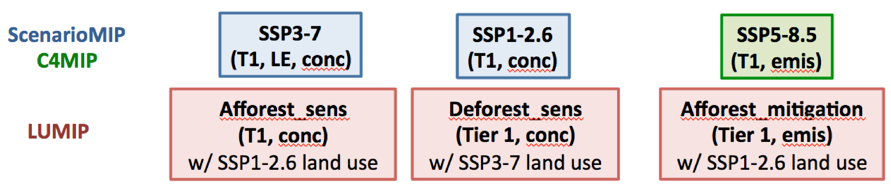
CMIP DECK 与 CMIP6 试验拟议评估/分析概述*
An overview of the proposed evaluation/analysis of the CMIP DECK and CMIP6 experiments*
目标是建立一套有用的模式诊断，以便系统评估土地利用—气候反馈，并在产生这些反馈的过程中改进对陆面和大气各自作用的归因。
The goal is to establish a useful set of model diagnostics that enable a systematic assessment of land use-climate feedbacks and improved attribution of the roles of both land and atmosphere in terms of generating these feedbacks.
需要对陆面和大气对土地覆被变化的响应进行更系统的评估，这是 LUCID 研究的主要结论之一。
The need for more systematic assessment of the terrestrial and atmospheric response to land cover change is one of the major conclusions of the LUCID study.
Boisier 等（2012）和 de Noblet-Ducoudré 等（2012）指出，LUCID 各模式所展示的土地利用—气候关系各不相同，这凸显了改进陆面模式评估诊断的必要性。
Boisier et al. (2012) and de Noblet-Ducoudré et al. (2012) argue that the different land use-climate relationships displayed across the LUCID models highlights the need to improve diagnostics for land surface model evaluation.
这些分析需要评估陆面模式在非耦合（离线）模拟中对土地覆被扰动的响应，以及陆面与大气分量之间的耦合。
These analyses need to assess how land surface models respond to a landcover perturbation in uncoupled (off-line) simulations as well as coupling between land and atmosphere components.
此前未得到细致研究的一个分析维度是：某个模式特有的区域陆气耦合强度特征如何影响该模式模拟土地利用变化对气候的影响。
One axis of analysis that has previously not been investigated in great detail is how a particular model's regional land-atmosphere coupling strength signature affects how the model simulates the impact of land use change on climate.
就此，LUMIP 将与 LS3MIP 对接，研究陆气耦合强度与土地利用变化对天气和气候影响之间的交叉关系。
Here, LUMIP will interface with LS3MIP to investigate the cross-relationship between land-atmosphere coupling strength and landuse change impacts on weather and climate.
此外，LUMIP 将推动基于观测的土地利用变化生物地球物理和生物地球化学指标的开发，这些指标将有助于约束模式动力学，并与 CMIP 对指标日益增长的重视相契合。
In addition, LUMIP will promote the development of biogeophysical and biogeochemical metrics of land use change, based on observations, that will help constrain model dynamics and dovetails with expanding emphasis in CMIP on metrics.
任何有用的指标都将被纳入正在开发中的国际陆面模式基准评估（ILAMB）软件包。
Any useful metrics will be integrated into the International Land Model Benchmarking (ILAMB) package that is currently under development.
同时具备纯陆面和耦合的历史模拟，使得能够对陆面和大气在模拟的土地利用变化响应中的作用进行系统得多的评估。
The availability of both land-only and coupled historic simulations enables a much more systematic assessment of the roles of land and atmosphere in the simulated response to land use change.
LUMIP 还提议开发一套指标，用于量化模式在一系列空间尺度和时间尺度上对土地利用的响应，进而可用于定量比较不同模式、不同区域和不同土地管理情景之间的模式响应。
LUMIP also proposes to develop a set of metrics that quantify a model response to land use across a range of spatial scales and temporal scales that can then be used to quantitatively compare model response across different models, regions, and land management scenarios.
对于给定变量（例如地表气温），诊断计算将针对一对有、无土地利用变化的模拟（离线或耦合）进行。
For a given variable, say surface air temperature, the diagnostic calculations will be completed for a pair of simulations (offline or coupled) with and without land use change.
在一系列空间尺度上——从单个格元直至区域（5°×5° 和 10°×10°）、大陆乃至全球——
Across a range of spatial scales, spanning from a single grid cell up to regional (5o by 5o and 10o by 10o) to continental to global,
将考察控制模拟与土地利用变化模拟之间的季节平均差异。
seasonal mean differences between control and land use change simulations will be examined.
差异将以两种方式表达：季节平均差异（及其基于 student-t 检验的统计显著性）和信噪比（其中“噪声”指模式中模拟的自然年际气候变率）。
Differences will be expressed both in terms of seasonal mean differences (and their statistical significance based on student-t tests) and in terms of signal to noise (where 'noise' refers to the natural interannual climate variability simulated in the model).
对极端事件的影响（如 Davin 等，2014）将受到特别关注。
Effects on extremes (e.g. Davin et al. 2014) will receive particular attention.
分析可聚焦于关键区域，例如美国中部的集约农业区和亚马逊的毁林区，对每个区域从点尺度向大陆尺度逐级扩展。
Analysis could focus on critical regions, such as the intensive agricultural region in the central United States and the deforestation region in the Amazon, telescoping out from point to continental scale for each region.
将考虑五个主要变量（净辐射、蒸散、温度、降水和陆面碳储量），它们共同表征土地利用对气候的生物地球物理和生物地球化学影响。
Five primary variables will be considered (net radiation, evapotranspiration, temperature, precipitation, and land carbon stocks) that together characterize the biogeophysical and biogeochemical impacts of land use on climate.
前两个变量——净辐射和蒸散（ET）——定义了地表对土地利用变化的生物地球物理响应，将在离线和耦合模式两种框架下进行评估。
The first two variables, net radiation and evapotranspiration (ET) define the surface biogeophysical response to land use change and will be evaluated in both offline and coupled model contexts.
温度和降水对净辐射与 ET 生物地球物理变化的响应将仅在陆气模拟中进行评估。
The temperature and precipitation response to biogeophysical changes in net radiation and ET will be evaluated in land-atmosphere simulations only.
陆面碳储量可在离线和耦合模拟中进行评估。
Land carbon stocks can be evaluated in offline and coupled simulations.
在该框架内可以开展若干条与评估土地利用—气候效应（相对于自然变率和温室气体引起的气候变化）相关的分析路线。
There are several axes of analysis that can be performed within this framework that are relevant to assessing land use-climate effects relative to natural variability and greenhouse gas-induced climate change.
例如，通过改变分析中所包含的年数和/或集合成员数，可以确定在何种时间/空间尺度上能够检测到土地利用变化信号。
For instance, by varying the number of years and/or the number of ensemble members included in our analysis, one can establish over what time/spatial scale a land use change signal can be detected.
还可以研究：与例如时间切片陆气模拟相比，在含人为温室气体强迫的瞬变气候模拟中分离土地利用—气候信号的相对难度。
One can also investigate the relative difficulty in isolating a land use-climate signal in transient climate simulations with anthropogenic greenhouse gas forcing versus, for example, timeslice atmosphere-land simulations.
拟议时间表*
Proposed timing*
LUMIP 的初步计划通过电话会议制定，特别是在 2014 年夏季举行的一系列会议期间。
The initial plans for LUMIP have been developed through conference calls and especially during a series of meetings during the summer of 2014.
2013 年 8 月 5–9 日：初步构想，阿斯彭 2013 年 10 月 3 日：初步构想报告，WGCM 会议 2014 年春季：研讨会 1，GLP 会议 2014 年 7 月 17–18 日：GEWEX——生物地球物理
2013 August 5-9: Initial concept, Aspen 2013 October 3: Presentation of Initial concept, WGCM Meeting 2014 Spring: Workshop 1, GLP Meeting 2014 July 17-18: GEWEX – Biogeophysics
2014 年 7 月 21–22 日：汉堡——生物地球化学 2014 年 7 月 28 日–8 月 1 日：EMF Snowmass 会议 2014 年 8 月 4–8 日：AGCI 阿斯彭联合 MIP 研讨会 2014 年 9 月 1 日：理想化模式试验测试
2014 July 21-22: Hamburg – Biogeochemistry 2014 July 28-Aug 1: EMF Snowmass Meeting 2014 August 4-8: AGCI Aspen Joint-MIP Workshop 2014 September 1: Testing of idealized model experiments
2014 年 9 月 15 日：向 CMIP6 专家组提交初步提案 2014 年 10 月 8–10 日：修订提案报告，WGCM 会议 2015 年 1 月：向模拟组发布新的土地利用数据原型/数据格式 2015 年 3 月 31 日：向 CMIP6 专家组提交最终提案
2014 September 15: Initial proposal due to CMIP6 Panel 2014 October 8-10: Presentation of revised proposal, WGCM Meeting 2015 January: New prototype land use data/data format released to modeling groups 2015 March 31, final proposal due to CMIP6 Panel
2015 年：使用新土地利用数据原型进行模式 I/O 与测试 2015 年 10 月：苏黎世 LandMIP 会议，最终确定规程细节并启动分析协调 2015 年秋季：为 LUMIP 准备并提交两篇 GMD 论文：一篇关于土地利用数据集，一篇关于试验规程与亚网格存档
2015 Model I/O and testing with new prototype land use data 2015 October, LandMIP meeting in Zurich to finalize protocol details and begin analysis coordination 2015 Fall, prepare and submit two GMD papers for LUMIP: one on land use dataset and one on experimental protocol and subgrid archiving
2016 年 1 月：启动多模式理想化第一阶段试验 2016 年 1 月：最终土地利用数据发布*（*待最终情景选定） 2016 年夏季：第一阶段试验交付至 ESGF 2016 年：第一阶段试验分析与论文
2016 January: Initiate multi-model idealized Phase 1 experiments 2016 January: Final land use data made available* (*pending final scenario selection) 2016 Summer: Phase 1 experiments delivered to ESGF 2016 Phase 1 experiments analysis and papers
2016 年中起：第二阶段 GCM/ESM 真实情景试验，视 ScenarioMIP 时间表而定 2018–2019 年：模式分析与综合；LUMIP SSC 将协调分析并提交至少一篇综述论文，邀请所有模拟中心代表参加
Starting mid-2016: Phase 2 GCM/ESM realistic experiments, contingent on ScenarioMIP schedule 2018-2019: Model analysis and synthesis, LUMIP SSC will coordinate analysis and submit at least one overview paper to which all modeling center representatives will be invited to join
选定的关键参考文献*
Selected Key References *
请注意，此文献列表仅具有代表性。
Note that this list of references is representative only.
关于土地利用和土地利用变化对气候影响的大量其他参考文献亦可获取。
Many additional references on land use and land use change impact on climate are available.
（边界说明：以下各参考文献条目按任务要求保留原文，不做翻译。）
(Boundary note: the following reference entries are kept in the original language as required and are not translated.)
（参考文献原文，不译）
Boisier, J. P., de Noblet-Ducoudré, N., & Ciais, P. (2013). Inferring past land use-induced changes in surface albedo from satellite observations: a useful tool to evaluate model simulations. Biogeosciences, 10, 1501-1516.
（参考文献原文，不译）
Boysen, L. R., Brovkin, V., Arora, V. K., Cadule, P., de Noblet-Ducoudré, N., Kato, E., ... & Gayler, V. (2014). Global and regional effects of land-use change on climate in 21st century simulations with interactive carbon cycle. Earth System Dynamics Discussion, 5, 443-472.
（参考文献原文，不译）
Brovkin, V., Boysen, L., Arora, V. K., Boisier, J. P., Cadule, P., Chini, L., ... & Weiss, M. (2013). Effect of anthropogenic land-use and land-cover changes on climate and land carbon storage in CMIP5 projections for the twenty-first century. Journal of Climate, 26(18), 6859-6881.
（参考文献原文，不译）
Davin, E.L., S.I. Seneviratne, P. Ciais, A. Olioso, and T. Wang, 2014: Preferential cooling of hot extremes from cropland albedo management. Proc. Natl Acad. Sci.. Published ahead of print June 23, 2014, doi:10.1073/pnas.1317323111.
（参考文献原文，不译）
Hurtt, G. C., Chini, L. P., Frolking, S., Betts, R. A., Feddema, J., Fischer, G., ... & Wang, Y. P. (2011). Harmonization of land-use scenarios for the period 1500–2100: 600 years of global gridded annual land-use transitions, wood harvest, and resulting secondary lands. Climatic Change, 109(1-2), 117-161.
（参考文献原文，不译）
Kumar, S., Dirmeyer, P. A., Merwade, V., DelSole, T., Adams, J. M., & Niyogi, D. (2013). Land use/cover change impacts in CMIP5 climate simulations: A new methodology and 21st century challenges. Journal of Geophysical Research: Atmospheres, 118(12), 6337-6353.
（参考文献原文，不译）
Lawrence, P. J., Feddema, J. J., Bonan, G. B., Meehl, G. A., O'Neill, B. C., Oleson, K. W., ... & Thornton, P. E. (2012). Simulating the biogeochemical and biogeophysical impacts of transient land cover change and wood harvest in the Community Climate System Model (CCSM4) from 1850 to 2100. Journal of Climate, 25(9), 3071-3095.
（参考文献原文，不译）
de Noblet-Ducoudré, N., Boisier, J. P., Pitman, A., Bonan, G. B., Brovkin, V., Cruz, F., ... & Voldoire, A. (2012). Determining robust impacts of land-use-induced land cover changes on surface climate over North America and Eurasia: results from the first set of LUCID experiments. Journal of Climate, 25(9), 3261-3281.
（参考文献原文，不译）
Pitman, A. J., de Noblet-Ducoudré, N., Cruz, F. T., Davin, E. L., Bonan, G. B., Brovkin, V., ... & Voldoire, A. (2009). Uncertainties in climate responses to past land cover change: First results from the LUCID intercomparison study. Geophysical Research Letters, 36(14).
（参考文献原文，不译）
Pongratz, J., Reick, C. H., Raddatz, T., Caldeira, K., & Claussen, M. (2011). Past land use decisions have increased mitigation potential of reforestation. Geophysical Research Letters, 38(15).
附录 A：CMIP6 选定陆面输出的亚网格存档
Appendix A: Sub-grid archiving of selected land output for CMIP6
联合任务负责人：Elena Shevliakova 和 David Lawrence
Co Task Leads: Elena Shevliakova and David Lawrence
注：详细的亚网格存档规程（包括模式应如何处理“边缘情况”的说明，例如若某模式不表示某种土地利用图块该怎么办）正在制定中，并将在各模拟中心之间传阅。
Note: A detailed protocol for sub-grid archiving, including instructions about how models should deal with 'edge cases' (e.g., what if a model doesn't represent one of the land use tiles) is being developed and will be circulated among the modeling centers.
最终规程将收录在 GMD 特刊论文中，并将在 LUMIP 网站上发布。
A final protocol will be included in the GMD special issue paper and will also be posted on the LUMIP website.
1. 动机
1. Motivation
大多数 CMIP5 级别的气候模式和地球系统模式（ESM）通过将每个陆面格元划分为具有相似生态、生物地球化学和水文特征的分区（即图块或单元）来表示陆面亚网格空间异质性。
The majority of CMIP5-class climate models and Earth system models (ESMs) represent land sub-grid spatial heterogeneity by splitting each land grid into sections (i.e. tiles or units) with similar ecological, biogeochemical, and hydrological characteristics.
当前陆面分量捕捉两类亚网格异质性：1）水文类——被液态或冻结水覆盖的陆面（如湖泊、湿地、冰川）或未被覆盖的陆面（如裸地和植被地表）；2）土地利用和土地管理引起的异质性（如农田、牧场、城市、自然与次生植被，即采伐林、人工林、弃耕地）。
Current land components capture two kinds of sub-grid heterogeneity: 1) hydrological - land surfaces covered by liquid or frozen water (e.g. lakes, wetlands, glaciers) or not (e.g. bare and vegetated surfaces) and 2) land-use and land management induced (e.g. cropland, pastures, urban, natural and secondary, i.e., harvested forests, plantations, abandoned land).
亚网格分块既适用于陆面分量的地上部分，也适用于地下部分。
Sub-grid tiling applies to both above- and below-ground sections of the land components.
物理、生态和生物地球化学的陆面状态变量与地表通量按每个图块分别计算。
Physical, ecological, and biogeochemical land state variables and surface fluxes are calculated separately for each tile.
然而，通常（包括在 CMIP5 存档中），
However, frequently, including in the CMIP5 archive,
图块专属变量被取平均，只报告格元平均值。
the tile-specific variables were averaged and the grid-cell mean values were reported.
因此，关于具有不同水文和土地利用属性的各地表类型如何响应气候变化和/或直接人为改造的大量有价值信息被丢失了。
Consequently, a large amount of valuable information was lost with respect to how each surface type with different hydrological and land-use properties responds to climate change and/or direct anthropogenic modifications.
为了更好地表征地表气候及其变率和变化，我们提议扩展 CMOR 数据约定，以捕捉水平方向的陆面亚网格异质性。
In order to better characterize surface climate, its variability and change, we propose to expand the CMOR data convention in order to capture horizontal land sub-grid heterogeneity.
除陆面格元值外，我们还提议请求在多个陆面图块上提供选定变量的子集。
In addition to the land-grid cell values, we propose to request a subset of selected variables on multiple land tiles.
这一报告与存档方式的修改将显著扩展地球系统模式输出在科学分析和气候变化影响研究中的用途。
This reporting and archiving modification will significantly expand the utility of Earth System Model output for scientific analysis and climate change impacts studies.
每个陆面模式都有独特的图块划分方案，因此存档规程需要足够通用，以适应现有各种模式结构。
Each land model has a unique tiling scheme so the archiving protocol needs to be general enough to work for the range of existing model structures.
2. 拟议的亚网格报告方案
2. Proposed sub-grid reporting
2.1 图块类型
2.1 Types of tiles
在 CMIP6 框架下，我们提议为 4 个类别的子集报告图块专属信息，以捕捉土地利用引起的地表异质性：（1）自然与次生土地类型（包括裸地和植被湿地），（2）牧场，（3）农田，以及（4）城市。
In the context of CMIP6 we propose to report tile-specific information for a subset of 4 categories to capture land-use induced surface heterogeneity: (1) Natural and Secondary land types (including bare ground and vegetated wetlands), (2) pasture-land, (3) croplands, and (4) urban.
其余图块（如湖泊、河流和冰川）将被排除在所报告的图块专属数值之外。
The remaining tiles, such as lakes, rivers and glaciers, will be excluded from the reported tile-specific values.
拟议的土地利用图块报告单元集合与 CMIP6 历史土地利用重建和未来情景中将使用的土地利用单元高度对应。
The proposed set of land-use tile reporting units closely corresponds to land-use units to be used in the CMIP6 historical land-use reconstructions and future scenarios.
原始植被（即从未受 LULCC 活动影响的自然植被）与次生植被（即先前被采伐过的或建立在弃耕农地上的自然植被）被合并，因为大多数陆面模式尚不能区分这两类土地类型。
Primary (i.e., natural vegetation never affected by LULCC activity) and secondary vegetation (i.e., natural vegetation that has previously been harvested or establishes on abandoned agricultural lands) are combined because most land models do not yet distinguish between these two land types.
（本处为图：土地利用类型图标组与图例；PDF 文本层为乱码 OCR，内容以图片为准。）
(Figure: land-use type icon set and legend; the PDF text layer is garbled OCR, see the image for content.)
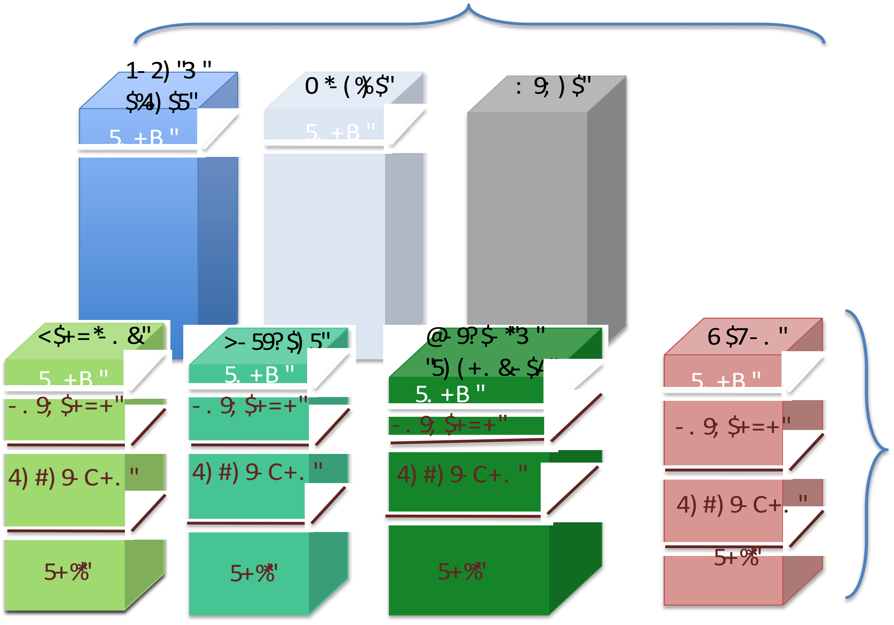
图 1（附录）：拟议的陆面图块报告结构。
Figure 1.Proposed reporting structure for land-tiles
（注：本单元共含 2 张图。第 183 页正文图 1 为“真实情景与敏感性研究示例”设计图，对应图片 18-lumip-f01；第 186 页附录图 1 为土地利用类型图标组与图例，对应图片 18-lumip-f02。）
(Note: this unit contains 2 figures. The main-text Figure 1 on page 183 shows an example set of realistic and sensitivity studies, image 18-lumip-f01; the appendix Figure 1 on page 186 shows the land-use type icon set and legend, image 18-lumip-f02.)
| 图块类型 Tile type | 图块后缀 Tile suffix | 注释 Comment |
|---|---|---|
| 城市与乡村聚落 | “urb” | — |
| 原始与次生土地 | “psl” | 森林、草地等或裸地 |
| 农田 | “crp” | — |
| 受管理牧场 | “pst” | — |
图块类型表表注（双语）：上表为第 187 页图块类型/后缀/注释表的重建；文字单元格已译为中文，后缀缩写保留原文。
Tile-type table note (bilingual): reconstruction of the page-187 tile type / suffix / comment table; text cells translated, suffixes kept as in the original.
对于选定的关键变量，除格元平均值外，还请求为每个图块分别提供数据。
For selected key variables, data is requested for each tile separately, in addition to the grid cell mean.
包含生物地球化学信息的图块将报告最多四类生物地球化学示踪物储量（如碳、氮）——植被、土壤、凋落物和人为储存。
The tiles containing biogeochemical information will report up to four stocks of biogeochemical tracers (e.g. Carbon, Nitrogen) – vegetation, soil, litter, and anthropogenic storage.
后者仅在一部分陆面模式中使用，反映了这样一个事实：部分采伐的碳不会立即释放到大气中，而是延迟一年到百年不等（如木制品、食物）。
The latter is used in a subset of land models and reflects the fact that some harvested carbon is not released into the atmosphere immediately, but rather with some time-delay from a year to century (e.g., wood products, food)
2.2 按图块报告的变量
2.2 Variables reported by tile
亚网格图块变量应按以下结构提交，以叶面积指数（LAI）为例：
Subgrid tile variables should be submitted according to the following structure, using Leaf Area Index (LAI) as an example:
laiLut(lon, lat, time, landusetype4)
laiLut(lon, lat, time, landusetype4)
landusetype4 维度的顺序为 spl、crp、pst、urb，其中“spl”=次生与原始土地，“crp”=农田，“pst”=牧场，“urb”=城市。
landusetype4 dimension with the order spl, crp, pst, urb where "spl" = secondary and primary land, "crp" = cropland, "pst" = pastureland, and "urb" = urban.
图块变量报告的注意事项：对于含湖泊或冰川的格元，urb+spl+crp+pst 的面积比例之和可能不等于 1。
Notes for tiled variable reporting: Sum of fractional area for urb+spl+crp+pst may not add up to 1 for grid cells with lakes or glaciers.
若某模式不表示所请求的图块之一，则应报告为缺失值。
If a model does not represent one of the requested tiles, then it should be reported as missing value.
当一个以上土地利用图块共享信息时（例如，若牧场和农田共享同一土壤柱），则应为两个图块都提供重复信息。
In cases where more than one land use tile shares information (e.g., if pastureland and cropland share same soil column), then duplicate information should be provided for both tiles.
关于图块报告的更多细节将收录在 LUMIP 的 GMD 论文中。
Further details on tile reporting will be included in the LUMIP GMD paper.
请求的变量集合有限（见 LUMIP 数据请求电子表格），包括描述（a）亚网格结构及其随时间演变、（b）生物地球化学通量、（c）生物地球物理变量、（d）LULCC 碳转移以及（e）土地利用图块碳储量的变量。
A limited set of variables are requested (see LUMIP data request spreadsheet) including variables that describe (a) the subgrid structure and how it evolves through time, (b) biogeochemical fluxes, (c) biogeophysical variables, and (d) LULCC carbon transfers, and (e) carbon stocks on land use tiles.
我们认识到，各模式对 LU 过程的实现差异很大，可能只能报告变量的一个子集。
We recognize that models have very different implementation of LU processes and may only be able to report a subset of variables.
OMIP (Ocean Model Intercomparison Project) ｜ 海洋模式比较计划
海洋模式比较计划（OMIP）：
Ocean Model Inter‐comparison Project (OMIP):
CMIP6 认证模式比较计划（MIP）申请
Application for CMIP6‐Endorsed MIPs
2015 年 3 月 13 日
13 March 2015
MIP 名称：海洋模式比较计划（OMIP）
Name of MIP: Ocean Model Inter‐comparison Project (OMIP)
OMIP 联合主席
Co‐chairs of OMIP
Gokhan Danabasoglu，美国 NCAR（gokhan@ucar.edu）
Gokhan Danabasoglu, NCAR, USA (gokhan@ucar.edu)
Stephen M. Griffies，美国 NOAA/GFDL（stephen.griffies@noaa.gov）
Stephen M. Griffies, NOAA/GFDL, USA (stephen.griffies@noaa.gov)
James Orr，法国 IPSL（james.orr@lsce.ipsl.fr）
James Orr, IPSL, France (james.orr@lsce.ipsl.fr)
科学指导委员会
Scientific Steering Committee
物理过程（CLIVAR OMDP 及合作者）
Physical processes (CLIVAR OMDP and collaborators)
9. William Large（美国）
9. William Large (USA)
10. Simon Marsland（澳大利亚）
10. Simon Marsland (Australia)
11. Simona Masina（意大利）
11. Simona Masina (Italy)
12. George Nurser（英国）
12. George Nurser (UK)
13. Anna Pirani（CLIVAR ICPO）
13. Anna Pirani (CLIVAR ICPO)
14. Anne‐Marie Treguier（法国）
14. Anne‐Marie Treguier (France)
15. Mike Winton（美国）
15. Mike Winton (USA)
16. Stephen Yeager（美国）
16. Stephen Yeager (USA)
化学与生物地球化学过程
Chemical and biogeochemical processes
1. Claus Boning（德国）
1. Claus Boning (Germany)
2. Eric Chassignet（美国）
2. Eric Chassignet (USA)
3. Enrique Curchitser（美国）
3. Enrique Curchitser (USA)
4. Gokhan Danabasoglu（美国）
4. Gokhan Danabasoglu (USA)
5. Helge Drange（挪威）
5. Helge Drange (Norway)
6. Stephen Griffies（美国）
6. Stephen Griffies (USA)
7. David Holland（美国）
7. David Holland (USA)
8. Yoshiki Komuro（日本）
8. Yoshiki Komuro (Japan)
1. James Orr（法国）
1. James Orr (France)
2. Laurent Bopp（法国）
2. Laurent Bopp (France)
3. Scott Doney（美国）
3. Scott Doney (USA)
4. John Dunne（美国）
4. John Dunne (USA)
5. Fortunat Joos（瑞士）
5. Fortunat Joos (Switzerland)
6. Galen McKinley（美国）
6. Galen McKinley (USA)
7. Andreas Oschlies（德国）
7. Andreas Oschlies (Germany)
8. Toste Tanhua（德国）
8. Toste Tanhua (Germany)
9. Keith Lindsay（美国）
9. Keith Lindsay (USA)
网站
Websites
OMIP 合并了 CORE-II 与 OCMIP 两个项目：
OMIP merges the CORE‐II and OCMIP projects:
1. 协调海洋-海冰参照试验第二阶段（CORE-II）：http://www.clivar.org/clivar‐panels/omdp/core‐2
1. Coordinated Ocean‐ice Reference Experiments phase II (CORE‐II): http://www.clivar.org/clivar‐panels/omdp/core‐2
2. 海洋碳模式比较计划 OCMIP2：http://ocmip5.ipsl.jussieu.fr/OCMIP/phase2/simulations/CFC/HOWTO‐CFC.html
2. Ocean Carbon Model Inter‐comparison Project OCMIP2: http://ocmip5.ipsl.jussieu.fr/OCMIP/phase2/simulations/CFC/HOWTO‐CFC.html
3. 海洋碳模式比较计划 OCMIP3：http://ocmip5.ipsl.jussieu.fr/OCMIP/phase3/simulations/NOCES/HOWTO‐NOCES.html
3. Ocean Carbon Model Inter‐comparison Project OCMIP3: http://ocmip5.ipsl.jussieu.fr/OCMIP/phase3/simulations/NOCES/HOWTO‐NOCES.html
1（原书页码）
1
协调 CMIP6 海洋分析并提供海洋/海冰比较
Coordinating CMIP6 ocean analyses & providing an ocean/sea‐ice comparison
OMIP 为评估、理解并改进参与 CMIP6 的气候与地球系统模式中的海洋/海冰/示踪物/生物地球化学分量提供了一个框架。
OMIP provides a framework for evaluating, understanding, and improving ocean/sea‐ice/tracer/biogeochemical components of climate and earth system models contributing to CMIP6.
OMIP 通过两种相互关联的方式来实现这一目标。
OMIP addresses this goal in two related manners.
1. 海洋诊断：OMIP 为所有包含海洋分量的 CMIP6 模拟协调 CMIP6 海洋诊断（包括海洋物理、惰性化学示踪物和生物地球化学）。
1. Ocean Diagnostics: OMIP coordinates CMIP6 ocean diagnostics (including ocean physics, inert chemical tracers, and biogeochemistry) for all CMIP6 simulations that include an ocean component.
此类使用海洋分量的 CMIP6 模拟包括但不限于 CMIP6/DECK、CMIP6/historical、CMIP6/OMIP 海洋/海冰、CMIP6/C4MIP 和 CMIP6/FAFMIP 扰动模拟。
Such CMIP6 simulations using an ocean component include, but are not limited to, the CMIP6/DECK, CMIP6/historical, CMIP6/OMIP ocean/sea ice, CMIP6/C4MIP, and CMIP6/FAFMIP perturbation simulations.
2. 全球海洋/海冰模拟：OMIP 为两个使用共同大气数据集的强迫全球海洋/海冰模拟（一个 Tier 1 和一个 Tier 2）提供了协议。
2. Global Ocean/sea‐ice Simulation: OMIP provides a protocol for two global ocean/sea‐ice simulations forced with common atmospheric data sets (one Tier 1 and one Tier 2).
OMIP 海洋/海冰模拟包含物理、惰性化学和生物地球化学示踪物分量。
The OMIP ocean/sea‐ice simulations include physical, inert chemical, and biogeochemical tracer components.
OMIP 为以下类型的研究提供框架：
OMIP provides a framework for the following types of studies:
1. 研究驱动季节、年际和年代际变率的物理、化学和生物地球化学机制；
1. To investigate physical, chemical, and biogeochemical mechanisms that drive seasonal, inter‐annual, and decadal variability;
2. 将海洋-气候变化归因于边界强迫或自然变率；
2. To attribute ocean‐climate variations to boundary forced versus natural;
3. 评估各种机制在不同模式和强迫数据集之间的稳健性；
3. To evaluate robustness of mechanisms across models and forcing data sets;
4. 通过补充来自数据同化的海洋再分析，在观测与模拟之间架起桥梁；
4. To bridge observations and modeling by complementing ocean reanalysis from data assimilation;
5. 提供可用于气候（如年代际）预测初始化的、一致的海洋和海冰状态。
5. To provide consistent ocean and sea‐ice states useful for initialization of climate (e.g., decadal) predictions.
合并 OMIP 与 OCMIP
Merging OMIP and OCMIP
为回应 WGCM 于 2015 年 2 月 18 日提出的意见，本更新版 OMIP 提案与先前独立的 OCMIP（海洋碳模式比较计划）合并。
In response to the WGCM comments provided 18 Feb 2015, this updated OMIP proposal merges with the previously separate OCMIP (Ocean Carbon Model Inter‐comparison Project).
CMIP6 将不再有单独的 OCMIP 提案。
There is no longer a separate OCMIP proposal for CMIP6.
将海洋物理、化学和生物地球化学工作合并为 OMIP 这一个项目，使得参与 CMIP6 的海洋物理、化学和生物地球化学各团体之间能够高效沟通。
The merger of ocean physical, chemical, and biogeochemical efforts into a single project, OMIP, allows for efficient communication across ocean physical, chemical, and biogeochemical groups participating in CMIP6.
因此，本文件中使用的名称"OMIP"指的是 CMIP6 模拟中的海洋物理、化学和生物地球化学方面。
Hence, the name “OMIP” used in this document refers to the ocean physical, chemical, and biogeochemical aspects of CMIP6 simulations.
I. OMIP：CMIP6 海洋分量的诊断分析
I. OMIP: Diagnostic analysis of CMIP6 ocean components
CMIP6/OMIP 的第一个职责是为所有涉及海洋分量的 CMIP6 试验协调诊断分析。
The first role for CMIP6/OMIP is to coordinate diagnostic analysis for all CMIP6 experiments that involve an ocean component.
作为该职责的一部分，CLIVAR OMDP 及合作者编写了一份 CMIP6 海洋模式诊断文档（Griffies et al. 2015），该文档建立在早前的 CMIP5 文档（Griffies et al. 2009）基础之上。
As part of this role, CLIVAR OMDP and collaborators produced a CMIP6 ocean model diagnostic document (Griffies et al. 2015), which built from the earlier CMIP5 document (Griffies et al. 2009).
Griffies et al (2015) 文档（在本提案中作为 CMIP6_OMIP_physics_diagnostics.pdf 提交）对包含海洋分量的所有 CMIP6 模拟中需要采样的海洋物理场提出了建议和科学依据。
The Griffies et al (2015) document (submitted in this proposal as CMIP6_OMIP_physics_diagnostics.pdf) presents recommendations and scientific justifications for sampling physical ocean fields included as part of all CMIP6 simulations that include an ocean component.
2（原书页码）
2
此外，我们制作了三份诊断电子表格，也随本 OMIP 提案一并提交。
In addition, we have produced three diagnostic spreadsheets, also submitted with this OMIP proposal.
这些电子表格列出了需要从包含海洋分量的 CMIP6 试验中保存的海洋诊断量。
These spreadsheets list ocean diagnostics to be saved from CMIP6 experiments that include an ocean component.
每份电子表格均以海洋领域最新的 CMIP5 版本为起点。
Each spreadsheet started from the most recent CMIP5 version for the ocean.
对 OMIP 电子表格中的条目进行了编辑，以删除过时的诊断量、在需要之处澄清早前的 CMIP5 诊断量，并添加新的诊断量。
Entries to the OMIP spreadsheets were edited to remove obsolete diagnostics, to clarify earlier CMIP5 diagnostics where needed, and to add new diagnostics.
1. 海洋物理（CMIP6_OMIP_physics_standard_output.xls）：第一份电子表格基于 Griffies et al (2015) 详述的诊断量，该文档侧重于物理海洋诊断量。
1. Ocean physics (CMIP6_OMIP_physics_standard_output.xls): The first spreadsheet is based on the diagnostics detailed in Griffies et al (2015), which focuses on physical ocean diagnostics.
这些诊断量应为所有在包含海洋分量的任何 CMIP6 试验中运行的海洋模式保存。
These diagnostics should be saved for all ocean models run as part of any CMIP6 experiment where an ocean component is included.
2. 海洋惰性化学（CMIP6_OMIP_chemistry_standard_output.xls）：CMIP6/historical、CMIP6/OMIP-A 和 CMIP6/OMIP-B 模拟要求输出三种惰性化学物质，即 CFC11、CFC12 和 SF6。
2. Ocean inert chemistry (CMIP6_OMIP_chemistry_standard_output.xls): Three inert chemical species, CFC11, CFC12, and SF6, are requested for CMIP6/historical, CMIP6/OMIP‐A, and CMIP6/OMIP‐B simulations.
这些示踪物建立在 OCMIP 以往各阶段的基础之上，最近的一次是在 CMIP5 期间开展的工作。
These tracers build on past phases of OCMIP, most recently efforts undertaken during CMIP5.
它们通过与观测数据库的比较，有助于评估海洋模拟的各要素。
They help in evaluating elements of the ocean simulation through comparisons with the observational databases.
3. 海洋生物地球化学（CMIP6_OMIP_biogeochemistry_standard_output.xlsx）：所有涉及综合地球系统模式的 CMIP6 试验，以及本文档所述 CMIP6/OMIP-A 和 CMIP6/OMIP-B 试验，都应保存海洋生物地球化学诊断量。
3. Ocean biogeochemistry (CMIP6_OMIP_biogeochemistry_standard_output.xlsx): Ocean biogeochemical diagnostics should be saved from all CMIP6 experiments involving comprehensive earth system models, as well as the CMIP6/OMIP‐A and CMIP6/OMIP‐B experiments described in this document.
将对 CMIP6 的海洋生物地球化学分量进行评估和比较，其中部分重点放在评估改用更细网格间距所带来的收益上。
The ocean biogeochemical components of CMIP6 will be evaluated and compared, with some emphasis placed on assessing what is gained by moving to finer grid spacing.
此外，将比较使用相同 CMIP6 海洋生物地球化学模式的耦合模拟与强迫模拟，以评估平均状态和内部变率有何差异。
In addition, coupled and forced simulations with the same CMIP6 ocean biogeochemical models will be compared to assess how mean state and internal variability differ.
这些诊断电子表格的并集代表了经由 OMIP 协调的 CMIP6 海洋相关诊断量的完整体系。
The union of these diagnostic spreadsheets represents the full suite of CMIP6 ocean related diagnostics as coordinated through OMIP.
II. OMIP：为相互比较提供海洋/海冰模拟
II. OMIP: Providing ocean/sea‐ice simulations for inter‐comparison
OMIP 项目的第二部分包括一个 Tier 1（OMIP-A）和一个 Tier 2（OMIP-B）强迫全球海洋/海冰模拟。
The second portion of the OMIP project consists of one Tier 1 (OMIP‐A) and one Tier 2 (OMIP‐B) forced global ocean/sea ice simulation.
本节详述这两个模拟的相关方面。
Aspects of these two simulations are detailed in this section.
OMIP 的物理分量基于 CORE-II
The physical component of OMIP is based on CORE‐II
OMIP 海洋/海冰模拟的物理分量遵循 Griffies et al. (2012) 的强迫协议，该协议曾用于协调海洋-海冰参照试验（CORE）年际变化模拟（CORE-II）。
The physical component of the OMIP ocean/sea ice simulation follows the forcing protocol of Griffies et al. (2012), which has been used for the Coordinated Ocean‐ice Reference Experiments (CORE) inter‐annually varying simulation (CORE‐II).
• CORE-II 模拟使用 Large and Yeager (2009) 汇编的大气数据集来强迫物理海洋场。
CORE‐II simulations use atmospheric data sets compiled by Large and Yeager (2009) to force physical ocean fields.
• CORE-II 强迫覆盖 1948-2009 年共 62 年的时段。
CORE‐II forcing covers the 62‐year period from 1948‐2009.
• CORE-II 大气强迫数据集由美国国家大气研究中心（NCAR）和 NOAA 地球物理流体动力学实验室（NOAA/GFDL）共同支持。
CORE‐II atmospheric forcing data sets are collaboratively supported by the U.S. National Center for Atmospheric Research (NCAR) and the NOAA Geophysical Fluid Dynamics Laboratory (NOAA/GFDL).
• 所有数据集、块体通量公式代码、技术报告和其他支持代码以及发布说明均可在 http://www.clivar.org/clivar‐panels/omdp/core‐2 获取。
All data sets, codes for the bulk flux formulae, technical report, and other support codes along with the release notes are available at http://www.clivar.org/clivar‐panels/omdp/core‐2
3（原书页码）
3
• CORE-II 研究由 WCRP 气候变率与可预报性（CLIVAR）海洋模式发展工作组（OMDP）协调（OMDP 的前身是海洋模式发展工作组 WGOMD）。
CORE‐II studies are coordinated by the WCRP Climate Variability and Predictability (CLIVAR) Ocean Model Development Panel (OMDP) (OMDP was formerly known as the Working Group on Ocean Model Development, WGOMD).
已有 20 多个国际海洋与气候模拟团体开展了 CORE-II 后报模拟。
More than 20 international ocean and climate modelling groups have performed CORE‐II hindcast simulations.
这些模拟正在约十个独立研究中进行分析，每个研究聚焦海洋气候系统的某一特定方面。
The simulations are being analyzed in roughly ten separate studies, each focusing on a specific aspect of the ocean climate system.
例如，包括以北大西洋经向翻转环流为重点的北大西洋平均状态分析（Danabasoglu et al., 2014），以及对全球和区域海平面变化的评估（Griffies et al., 2014）。
Examples include analysis of mean states in the North Atlantic with a focus on the Atlantic Meridional Overturning Circulation (Danabasoglu et al., 2014) and an assessment of global and regional sea level changes (Griffies et al., 2014).
记录更多 CORE-II 研究的论文将于 2015 年期间发表在期刊《Ocean Modelling》的特刊上。
Manuscripts documenting further CORE‐II studies will be published during 2015 in a special issue of the journal Ocean Modelling.
OMIP 的惰性化学示踪物分量基于 OCMIP2
The inert chemical tracer component of OMIP is based on OCMIP2
OMIP 的化学分量包括在线模拟 CFC11、CFC12 和 SF6。
The chemical component of OMIP includes the simulation of CFC11, CFC12, and SF6 online.
CFC11 为高优先级（level=1），而 CFC12 和 SF6 为 level=2 优先级。
CFC11 is high priority (level=1), whereas CFC12 and SF6 are level=2 priority.
模拟协议基于 OCMIP2 协议，可在 http://ocmip5.ipsl.jussieu.fr/OCMIP/phase2/simulations/CFC/HOWTO‐CFC.html 获取。
Simulation protocols are based on the OCMIP2 protocol available at http://ocmip5.ipsl.jussieu.fr/OCMIP/phase2/simulations/CFC/HOWTO‐CFC.html
SF6 模拟与 CFC 模拟完全相同，只是其大气历史、溶解度和 Schmidt 数不同。
The SF6 simulation is identical to the CFC simulations, except that its atmospheric history, solubility, and Schmidt number differ.
这些惰性被动示踪物与物理示踪物温度、盐度一起在线计算，且独立于生物地球化学模式。
These inert passive‐tracers are computed online along with the physical tracers temperature and salinity, and they are independent of the biogeochemical model.
CMIP6/historical 和 CMIP6/OMIP 模拟应包含这些物种。
These species should be included for the CMIP6/historical and CMIP6/OMIP simulations.
OMIP 的生物地球化学分量基于 OCMIP3
The biogeochemical component of OMIP is based on OCMIP3
OCMIP3 的详情可在 http://ocmip5.ipsl.jussieu.fr/OCMIP/phase3/simulations/NOCES/HOWTO‐NOCES.html 获取。
Details of OCMIP3 are available at http://ocmip5.ipsl.jussieu.fr/OCMIP/phase3/simulations/NOCES/HOWTO‐NOCES.html
每个团体将使用各自的预报型海洋生物地球化学模式，在线耦合到其物理海洋分量。
Each group will use its own prognostic ocean biogeochemical model, coupled online to its physical ocean component.
每个物理-生物地球化学模拟将如上所述用 CORE-II 大气状态强迫，如可能则覆盖五个强迫循环的全部 310 年。
Each physical‐biogeochemical simulation will be forced as described above with the CORE‐II atmospheric state, if possible over the full 310 years of the five forcing cycles.
• 大气的边界条件包括施加恒定的大气 O2 浓度（摩尔分数 0.20946），以及遵循观测变化的大气 CO2。
Boundary conditions for the atmosphere include an imposed constant atmospheric concentration of O2 (mole fraction of 0.20946), but a variable atmospheric CO2 that follows observations.
• 模式将添加两个示踪物，用于大气 CO2 固定为 278 ppm 的平行前工业世界。
Models will add two tracers for a parallel preindustrial world where atmospheric CO2 is fixed at 278 ppm.
因此，生物地球化学模式将包含第二个溶解无机碳（DIC）示踪物和第二个总碱度示踪物（ALK），以隔离自然 CO2 并跟踪模式漂移。
Thus biogeochemical models will include a second dissolved inorganic carbon (DIC) tracer and a second total alkalinity tracer (ALK) in order to isolate natural CO2 and keep track of model drift.
• 所有模式将使用可获得的生物地球化学场气候态进行初始化；氧以及总溶解无机氮、磷和硅的初始化将依赖世界海洋图集（World Ocean Atlas (2013)）。
All models will be initialized with available climatologies for biogeochemical fields for oxygen as well as total dissolved inorganic nitrogen, phosphorus, and silica will rely on the World Ocean Atlas (2013).
4（原书页码）
4
• DIC 和 ALK 场将从 GLODAPv2 网格化数据（基于 WOCE 和 CLIVAR 期间的离散观测）初始化。
The DIC and ALK fields will be initialized from the GLODAPv2 gridded data (based on discrete measurements during WOCE and CLIVAR).
• 铁的初始场将基于 GEOTRACES 数据库，该数据库的网格化版本将作为 OMIP 的一部分提供。
Initial fields for iron will be based on the GEOTRACES database, with a gridded version of this database provided as part of OMIP.
• 其他示踪物的初始化不太关键，例如浮游植物生物量仅限于上层 200 米，并像其他生物示踪物一样快速达到平衡。
Initialization of other tracers is less critical, e.g., phytoplankton biomass is restricted to the top 200 m and equilibrates rapidly as do other biological tracers.
• 模拟叶绿素与海洋动力学之间的直接耦合不是强制性的。
Direct coupling between simulated chlorophyll and ocean dynamics is not mandatory.
也就是说，用于计算太阳辐射在水柱中穿透的光学模式不要求在动力学分量和生物地球化学分量中相同。
That is, the optical model used to compute the penetration of solar radiation in the water column is not required to be the same in the dynamical and biogeochemical components.
• 各团体可自由使用其偏好的边界条件来描述进入海洋的各种营养盐来源（通过大气沉降、河流排放和沉积物再活化）以及碳的侧向输入（例如来自河流和地下水排放）。
Groups are free to use their preferred boundary conditions for the different sources of nutrients to the ocean (via atmospheric deposition, river discharge, and sediment mobilization) as well as lateral input of carbon (e.g., from river and groundwater discharge).
• 所有强迫文件将在 OCMIP 网站上更新至 2009 年。
All forcing files will be updated through 2009 on the OCMIP web sites.
OMIP-A 与 OMIP-B 试验概要
Summary of the OMIP‐A and OMIP‐B experiments
Tier 1 OMIP 模拟（OMIP-A）包括一个全球海洋/海冰/惰性化学/生物地球化学试验，至少运行 CORE-II 强迫的五个重复循环。
The Tier 1 OMIP simulation (OMIP‐A) consists of one global ocean/sea‐ice/inert‐chemical/biogeochemical experiment run for a minimum of five repeating cycles of the CORE‐II forcing.
OMIP-A 涉及两条路径：
OMIP‐A involves two paths:
• 无法运行生物地球化学的团体可以参与物理/化学部分。
The groups that are unable to run with biogeochemistry can participate in the physical/chemical portion.
在这里，需要位温（或保守温度）、盐度和理想年龄。
Here, potential (or Conservative) temperature, salinity and ideal age are required.
此外，还包含惰性化学示踪物，其中 CFC11 为必需场，CFC12 和 SF6 为可选变量。
In addition, the inert chemical tracers are included with CFC11 as a required field and CFC12 and SF6 as optional variables.
• 第二条路径在第一条路径的基础上增加一个在线生物地球化学模式。
The second path adds an online biogeochemistry model to the first path.
将 62 年的 CORE-II 强迫数据重复五次，总积分长度为 310 年。
With 62‐years of CORE‐II forcing data repeated five times, the total integration length is 310 years.
主要分析将聚焦于第五个循环。
Primary analyses will focus on the fifth cycle.
不过，鼓励归档全部五个循环的结果，例如以便评估漂移。
However, archiving results for all five cycles is encouraged, e.g., in order to assess drift.
该模拟是一个 Tier 1 试验。
This simulation is a Tier 1 experiment.
Tier 2 OMIP 模拟（OMIP-B）要求来自同样具备生物地球化学能力、且能负担千年尺度 spin-up 的团体。
The Tier 2 OMIP simulation (OMIP‐B) is requested from the same groups having biogeochemistry and able to afford a millennial‐scale spin‐up.
与 OMIP-A 中使用观测气候态初始化生物地球化学不同，该模拟将使用已 spin-up 至少 1000 年（理想情况为 5000 年）的模式示踪物场进行初始化。
Rather than using observed climatologies to initialize the biogeochemistry as in OMIP‐A, this simulation will be initialized with model tracer fields that have been spun up for at least 1000 years, ideally for 5000 years.
此外，为评估深海环流，OMIP-B 模拟（及其 spin-up）将包含放射性碳（遵循 OCMIP2 协议的非生物 DIC 和 DI14C），这与 Tier 1 OMIP-A 模拟不同。
In addition, to evaluate deep‐ocean circulation the OMIP‐B simulation (and its spin‐up) will include radiocarbon (abiotic DIC and DI14C following the OCMIP2 protocol), unlike the Tier 1 OMIP‐A simulation.
除此之外，OMIP-B 将与 OMIP-A 完全相同。
Otherwise, OMIP‐B will be identical to OMIP‐A.
大气强迫数据集和物理场试验协议的详情见 Griffies et al. (2012) 和 Danabasoglu et al. (2014)，它们遵循 CORE-II 协议。
Details of the atmospheric forcing datasets and the experimental protocol for the physical fields are available in Griffies et al. (2012) and Danabasoglu et al. (2014), and they follow the CORE‐II protocol.
惰性化学示踪物遵循 OCMIP2，生物地球化学示踪物遵循 OCMIP3。
Inert chemical tracers follow OCMIP2, and biogeochemical tracers follow OCMIP3.
1. 初始化：
1. Initialization:
a. 位温（或保守温度）和盐度使用一月平均的、基于观测的气候态从静止状态初始化。
a. Potential temperature (or Conservative temperature) and salinity are initialized using January‐mean observational‐based climatology from a state of rest.
5（原书页码）
5
b. 惰性人为化学示踪物（CFC11、CFC12、SF6）在 1936 年 01 月 01 日初始化为零（该日期出现在第 4 个 CORE-II 强迫循环中，模式日期为 0237 年 01 月 01 日）。
b. Inert anthropogenic chemical tracers (CFC11, CFC12, SF6) are initialized to zero on 01January 1936 (which occurs during the 4th CORE‐II forcing cycle at model date 01 January 0237).
c. 生物地球化学示踪物按上文给出的细节初始化。
c. Biogeochemical tracers are initialized according to details given above.
d. 海冰场通常从取自另一个模拟的现有状态初始化。
d. Sea ice fields are generally initialized from an existing state taken from another simulation.
2. 强迫：
2. Forcing:
a. 表面热通量由来自 CORE-II 的辐射通量确定（Large and Yeager 2009）。
a. Surface heat fluxes are determined by radiative fluxes from CORE‐II (Large and Yeager 2009).
湍流热通量基于海洋状态和 CORE-II 大气状态计算。
Turbulent heat fluxes are computed based on the ocean state and CORE‐II atmospheric state.
b. 湍流通量的块体公式必须遵循 Large and Yeager (2009) 的方法。
b. Bulk formulae for turbulent fluxes must follow the Large and Yeager (2009) method.
c. 不对表面温度施加任何恢复项。
c. There is no restoring term applied to the surface temperature.
d. 表面水通量由 CORE-II 提供，包括降水和河流径流。
d. Surface water fluxes are provided by CORE‐II, including precipitation and river runoff.
e. 表面盐度通常被阻尼到月平均的、基于观测的气候态。
e. Surface salinity is generally damped to a monthly observational‐based climatology.
每个模式团体自行确定其模式所用盐度恢复的细节。
Each model group determines details for the salinity restoring used for their model.
由于海洋-海冰模式中与高纬过程相关的物理敏感性，对所有模式采用统一的盐度恢复方法不可行（Griffies et al., 2009）。
A unified salinity restoring method for all models is not feasible due to physical sensitivities in ocean‐ice models related to high latitude processes (Griffies et al., 2009).
f. 大气惰性化学示踪物（CFC11、CFC12 和 SF6）在 CORE-II 强迫的前三个循环中保持其前工业值（零），随后自模式日期 0237 年 01 月 01 日（对应日历日期 1936 年 01 月 01 日）起按照 OCMIP2 协议变化。
f. Atmospheric inert‐chemical tracers (CFC11, CFC12, and SF6) are held to their preindustrial values (zero) for the first three cycles of the CORE‐II forcing, then changed according to the OCMIP2 protocol starting at model date 01 January 0237, corresponding to calendar date 01 January 1936.
或者，为节省计算资源，惰性化学示踪物可以只在该日期激活，从大气和海洋中的零浓度开始。
Alternatively, to save computational resources, the inert chemical traces could be activated only on that date, starting from zero concentrations in the atmosphere and ocean.
g. 生物地球化学示踪物按照 OCMIP3 强迫。
g. Biogeochemical tracers are forced according to OCMIP3.
OMIP 模拟协议的计划演进
Planned evolution of the OMIP simulation protocol
如本提案所述，两个 CMIP6/OMIP 试验（OMIP-A 和 OMIP-B）使用 Large and Yeager (2009) 强迫数据集，遵循 Griffies et al (2012) 协议。
As proposed here, the two CMIP6/OMIP experiments (OMIP‐A and OMIP‐B) use the Large and Yeager (2009) forcing data sets, following the Griffies et al (2012) protocol.
此外，预计于 2016 年推出的新大气强迫数据产品将纳入 CMIP6/OMIP 的未来阶段。
Additionally, new atmospheric forcing data products, anticipated in 2016, will be incorporated into future phases of CMIP6/OMIP.
拥有多个强迫产品将能更稳健地理解对强迫的敏感性，并将向基于观测的大气产品开发者提供反馈。
Having multiple forcing products will enable a more robust understanding of sensitivities to forcing, and will provide feedback to those developing the observational‐based atmospheric products.
OMIP 科学指导委员会将在新的进展和扩展可用时更新 OMIP 协议。
The OMIP Scientific Steering Committee will update the OMIP protocol as new developments and extensions become available.
III. 结束语
III. Closing remarks
海洋学和气候科学界对分析所有包含海洋模式分量的 CMIP6 模拟的海洋输出表现出极大兴趣。
The oceanography and climate science communities have expressed great interest in analyzing ocean output from all CMIP6 simulations that include an ocean model component.
此类分析包括物理、化学和生物地球化学诊断要素。
Such analyses include physical, chemical, and biogeochemical diagnostic elements.
OMIP 通过详细规定使用海洋分量的 CMIP6 模拟需要输出的诊断量，为 CMIP6 海洋诊断提供了框架。
OMIP provides the framework for CMIP6 ocean diagnostics by detailing diagnostics to be output from CMIP6 simulations using an ocean component.
此外，两个（一个 Tier 1 和一个 Tier 2）OMIP 全球海洋/海冰试验使得能够对 CMIP6 气候与地球系统模式的海洋/海冰/化学/生物地球化学分量进行系统的相互比较。
Furthermore, the two (one Tier 1 and one Tier 2) OMIP global ocean/sea ice experiments allow for systematic inter‐comparison of the ocean/sea‐ice/chemical/biogeochemical components of CMIP6 climate and earth system models.
参与 CMIP6/OMIP 试验的海洋与气候模拟团体将非常乐于使用 OMIP 海洋/海冰协议来评估其海洋模拟。（注：此句跨越第 193-194 页分页处。）
Ocean and climate modeling groups participating in CMIP6/OMIP experiments will be keenly interested in evaluating their ocean simulations using the OMIP ocean/sea ice protocol.
6（原书页码）
6
这种评估将有助于加深我们对耦合气候与地球系统模式中所用海洋/海冰/化学/生物地球化学分量的理解。
This evaluation will help to improve our understanding of ocean/sea‐ice/chemical/biogeochemical components used in coupled climate and earth system models.
【边界说明】以下为参考文献条目，按原文保留、不翻译。
References (the following entries are kept in the original language, untranslated)
Danabasoglu, G., S. G. Yeager, D. Bailey, E. Behrens, M. Bentsen, D. Bi, A. Biastoch, C. Boning, A. Bozec, V. Canuto, C. Cassou, E. Chassignet, A. C. Coward, S. Danilov, N. Diansky, H. Drange, R. Farneti, E. Fernandez, P. G. Fogli, G. Forget, Y. Fujii, S. M. Griffies, A. Gusev, P. Heimbach, A. Howard, T. Jung, M. Kelley, W. G. Large, A. Leboissetier, J. Lu, G. Madec, S. J. Marsland, S. Masina, A. Navarra, A. J. G. Nurser, A. Pirani, D. Salas y Melia, B. L. Samuels, M. Scheinert, D. Sidorenko, A.‐M. Treguier, H. Tsujino, P. Uotila, S. Valcke, A. Voldoire, and Q. Wang, 2014: North Atlantic simulations in Coordinated Ocean‐ice Reference Experiments phase II (CORE‐II). Part I: Mean states. Ocean Modelling, 73, 76‐107, doi:10.1016/j.ocemod.2013.10.005.
Griffies, S. M., A. Biastoch, C. Boning, F. Bryan, G. Danabasoglu, E. P. Chassignet, M. H. England, R. Gerdes, H. Haak, R. W. Hallberg, W. Hazeleger, J. Jungclaus, W. G. Large, G. Madec, A. Pirani, B. L. Samuels, M. Scheinert, A. S. Gupta, C. A. Severijns, H. L. Simmons, A. M. Treguier, M. Winton, S. Yeager, and J. Yin, 2009: Coordinated Ocean‐ice Reference Experiments (COREs). Ocean Modelling, 26, 1‐46, doi:10.1016/j.ocemod.2008.08.007.
Griffies, S. M., A. Adcroft, H. Aiki, V. Balaji, M. Bentson, F. Bryan, G. Danabasoglu, S. Denvil, H. Drange, M. England, J. Gregory, R. Hallberg, S. Legg, T. Martin, T. J. McDougall, A. Pirani, G. Schmidt, D. Stevens, K. Taylor, and H. Tsujino, 2009: Sampling physical ocean fields in WCRP CMIP5 simulations. ICPO Publication Series 137, WCRP Informal Report No. 3/2009.
Griffies, S. M., M. Winton, B. Samuels, G. Danabasoglu, S. Yeager, S. Marsland, H. Drange, and M. Bentsen, 2012: Datasets and protocol for the CLIVAR WGOMD Coordinated Ocean‐ice Reference Experiments (COREs). WCRP Report No. 21/2012, pp.21.
Griffies, S. M., J. Yin, P. J. Durack, P. Goddard, S. C. Bates, E. Behrens, M. Bentsen, D. Bi, A. Biastoch, C. W. Boning, A. Bozec, E. Chassignet, G. Danabasoglu, S. Danilov, C. M. Domingues, H. Drange, R. Farneti, E. Fernandez, R. J. Greatbatch, D. M. Holland, M. Ilicak, W. G. Large, K. Lorbacher, J. Lu, S. J. Marsland, A. Mishra, A. J. G. Nurser, D. Salas y Melia, J. B. Palter, B. L. Samuels, J. Schroter, F. U. Schwarzkopf, D. Sidorenko, A. M. Treguier, Y.‐H. Tseng, H. Tsujino, P. Uotila, S. Valcke, A. Voldoire, Q. Wang, M. Winton, and X. Zhang, 2014: An assessment of global and regional sea level for years 1993‐2007 in a suite of interannual CORE‐II simulations. Ocean Modelling, 78, 35‐89, doi: 10.1016/j.ocemod.2014.03.004.
Griffies, S. M., A. J. Adcroft, V. Balaji, G. Danabasoglu, P. J. Durack, P. J. Gleckler, J. M. Gregory, J. P. Krasting, T.J. McDougall, R. J. Stouffer, and K. E. Taylor, 2015: Sampling the physical ocean in CMIP6 simulations. (draft)
Large, W. G., and S. G. Yeager, 2009: The global climatology of an interannually varying air‐sea flux data set. Climate Dynamics, 33, 341‐364, doi: 10.1007/s00382‐008‐0441‐3.
PMIP (Palaeoclimate Modelling Intercomparison Project) ｜ 古气候模拟比较计划（上）
CMIP6 认可模式比较计划（MIP）申请书
Application for CMIP6-Endorsed MIPs
请将申请提交给 CMIP 专家组主席 Veronika Eyring（邮箱：Veronika.Eyring@dlr.de）
Please return to CMIP Panel Chair Veronika Eyring (email: Veronika.Eyring@dlr.de)
各 MIP 的提案应包含以下信息：
Proposals from MIPs should include the following information:
* 初步信息，用于确定某一 MIP 是否应获得 CMIP6 认可。
* Preliminary information used to determine whether a MIP should be endorsed for CMIP6 or not.
** 后续必须提供的信息（须在专家组确定哪些实验（如有）将被纳入官方 CMIP6 实验体系之前提供）。
** Information that must be provided later (and before the panel can determine which experiments, if any, will be incorporated in the official CMIP6 suite).
► MIP 名称*
► Name of MIP*
古气候模拟比较计划
Paleoclimate Modeling Intercomparison Project
（这将是 PMIP 的第四阶段）
(This will be the fourth phase of PMIP)
► MIP 联合主席（含电子邮箱）*
► Co-chairs of MIP (including email-addresses)*
˗ Pascale Braconnot (Pascale.Braconnot@lsce.ipsl.fr)
˗ Pascale Braconnot (Pascale.Braconnot@lsce.ipsl.fr)
˗ Sandy Harrison (s.p.harrison@reading.ac.uk)
˗ Sandy Harrison (s.p.harrison@reading.ac.uk)
► 科学指导委员会成员*
► Members of the Scientific Steering Committee*
˗ Pascale Braconnot / 法国 LSCE（模式与模式—数据）
˗ Pascale Braconnot / LSCE, France (model and model-data)
˗ Sandy P. Harrison / 英国雷丁大学与澳大利亚麦考瑞大学（数据与模式—数据）
˗ Sandy P. Harrison / University of Reading, UK and Macquarie University, Australia (data and model-data)
˗ Ayako Abe-Ouchi / 日本东京大学大气海洋研究所（冰盖与 PCMIP）
˗ Ayako Abe-Ouchi / AORI, University of Tokyo (ice-sheet and PCMIP)
˗ Pat Bartlein / 美国俄勒冈大学（大陆数据）
˗ Pat Bartlein / University of Oregon, USA (Continental data)
˗ Alan Haywood / 英国利兹大学（中上新世）
˗ Alan Haywood / University of Leeds, UK (Mid-pliocene)
˗ Sylvie Joussaume / 法国 LSCE
˗ Sylvie Joussaume / LSCE, France
˗ Johann Jungclaus / 德国马普气象研究所（近千年）
˗ Johann Jungclaus / MPI-M, Germany (Last millennium)
˗ Michal Kucera / 德国 MARUM（海洋数据）
˗ Michal Kucera / MARUM, Germany (Ocean data)
˗ Bette Otto-Bliesner / 美国 NCAR（温暖气候）
˗ Bette Otto-Bliesner / NCAR, USA (warm climates)
˗ Gilles Ramstein / 法国 LSCE（冰期与冰盖）
˗ Gilles Ramstein / LSCE, France (glacial and ice sheet)
˗ Karl Taylor / 美国 PCMDI（与 CMIP5 的衔接）
˗ Karl Taylor / PCMDI, USA (Link with CMIP5)
˗ Paul Valdes / 英国 BRIDGE（突变变化）
˗ Paul Valdes / BRIDGE, UK (abrupt changes)
► 网站链接（如有）*
► Link to website (if available)*
http://pmip3.lsce.ipsl.fr + http://pmip.lsce.ipsl.fr（PMIP1）及 http://pmip2.lsce.ipsl.fr（PMIP2）
http://pmip3.lsce.ipsl.fr + http://pmip.lsce.ipsl.fr (PMIP1) and http://pmip2.lsce.ipsl.fr (PMIP2)
MIP 的目标与简要概述*
Goal of the MIP and a brief overview*
自 20 世纪 90 年代以来，PMIP 围绕以下目标不断发展：
Since the 1990s, PMIP has developed with the following objectives:
- 评估用于气候预测的气候模式在模拟现今及近期气候变率范围之外、具有充分文献记载的过去气候方面的能力；
- to evaluate the ability of climate models used for climate prediction in simulating well-documented past climates outside the range of present and recent climate variability
- 理解这些气候变化的机制，特别是不同气候反馈的作用。
- to understand the mechanisms of these climate changes, in particular the role of the different climate feedbacks
为实现这些目标，PMIP 积极推动了古数据综合、多模式分析（包括对过去与未来模拟的模式结果之间关系的分析）以及模式—数据比较。
To achieve these goals, PMIP has actively fostered paleo-data syntheses, multi-model analyses, including analyses of relationships between model results from past and future simulations, and model-data comparisons.
这些工作首先聚焦于大气环流模式（AGCM）的结果（PMIP1），随后扩展到海气耦合环流模式（OAGCM）及包含碳循环反馈的海气耦合模式（AOGCM），从而紧跟 CMIP 的模式发展（PMIP2 与 PMIP3）。
These have first been focusing on the results from Atmospheric General Circulation Models (PMIP1) and then been extended to coupled Ocean-Atmosphere General Circulation Models and AOGCM including carbon cycle feedbacks, thereby closely following model developments for CMIP (PMIP2 and PMIP3).
三项 PMIP3 模拟是 CMIP5 模拟集合的组成部分：近千年、中全新世（约 6000 年前）与末次盛冰期（约 21000 年前），由此首次实现了对过去与未来气候模式结果的严格比较。
Three PMIP3 simulations were part of the CMIP5 ensemble of simulations: the last millennium, the mid-Holocene (~6,000 years ago) and the Last Glacial Maximum (~21,000 years ago), hence allowing, for the first time, the rigorous comparison of model results for past and future climates.
考虑这些时期的原因是：
The rationale for considering these periods was:
- 就末次盛冰期而言，在具有充分文献记载的气候极值上评估模式，尤其是在温度方面，并研究强迫与反馈在形成该气候中的作用；
- for the Last Glacial Maximum, to evaluate the models on a well-documented climatic extreme, especially in terms of temperatures, and study the role of forcings and feedbacks in establishing this climate;
- 就中全新世而言，在北半球气候“最适宜期”上评估与分析模式，其特征为季风增强、温带大陆干旱以及夏季显著偏暖；
- for the mid-Holocene, to evaluate and analyse the models on a climate "optimum" for the northern hemisphere, characterized by enhanced monsoons, extra-tropical continental aridity and much warmer summers;
- 就近千年而言，研究年代际到百年际气候变率的机制（自然变率与太阳、火山和人为强迫影响之比），并参照大量详细记录评估模式性能。
- for the last millennium, to study the mechanisms (natural variability vs impact of solar, volcanic and anthropogenic forcings) of decadal to centennial climate variability and evaluate the models' performance w.r.t numerous detailed records.
针对 CMIP6，我们提议在 PMIP/CMIP 实验组中加入两个新的温暖时期：末次间冰期与中上新世，针对这两个时期的模拟已经开展并对 AR5 做出了重要贡献。
For CMIP6, we propose to include two new warm periods in the PMIP/CMIP set of experiments: the Last Interglacial and the Mid-Pliocene, for which simulations have been performed and significantly contributed to AR5.
PMIP3/CMIP5 与 PlioMIP 在参与度和论文发表方面都非常成功。
PMIP3/CMIP5 and PlioMIP have been very successful in terms of participation and publications.
19 个研究组参与了 PMIP3/CMIP5 模拟，12 个研究组参与了 PlioMIP。
19 groups have contributed to PMIP3/CMIP5 simulations, 12 groups have taken part in PlioMIP.
PMIP3/CMIP5 模拟已被 40 余篇论文使用（截至 2014 年 9 月 11 日），PlioMIP 模拟已成为 20 余篇论文的主题。
PMIP3/CMIP5 simulations have been used in more than 40 publications (as of Sept 11th, 2014) and PlioMIP simulations have been the topic of more than 20 publications.
PMIP 模拟为 IPCC AR5 的两个章节做出了突出贡献：第 5 章“古气候档案信息”与第 9 章“气候模式评估”。
PMIP simulations have brought strong contribution to 2 IPCC AR5 chapters: chapter 5 "information from paleoclimate archives" and chapter 9 "evaluation of climate models".
PMIP 模拟针对多种强迫、并可对照与当前或历史气候差异极大的气候状态的数据，专门回应了 CMIP6 的关键科学问题“地球系统如何响应强迫”。
PMIP simulations specifically address CMIP6 key question on "How does the Earth System respond to forcing" for a variety of forcings and with possible comparisons to data for climates states very different from the current or historical climate.
PMIP 还以不同于今日的有文献记载的气候所提供的视角，回应了关于系统性模式偏差的问题 2（“系统性模式偏差的起源与后果是什么？”）：通过 PMIP 模拟与数据的比较，有助于评估现今的偏差是否也出现在其他气候状态中，以及现今偏差是否影响模拟气候变化幅度的大小。
PMIP also addresses question 2 ("What are the origins and consequences of systematic model biases?") about systematic model biases, with the perspective given by documented climates different from today: PMIP simulations, with comparisons to data, can help assessing whether the biases for present-day are also found for other climate states and whether present-day biases have an impact on the magnitude of simulated climate changes.
最后，PMIP 通过在有文献记载的过去气候案例中考察上述这些问题、并以近千年模拟作为自然变率的参考状态，与问题 3（“在存在气候变率、可预测性与情景不确定性的情况下，我们如何评估未来气候变化？”）直接相关。
Finally, PMIP is relevant for question 3 ("How can we assess future climate changes given climate variability, predictability and uncertainties in scenarios?"), by examining these very questions for documented past climate cases and via the use of the last millennium simulations as reference state for natural variability.
PMIP 模拟正在“云、环流与气候敏感度”重大挑战（Grand Challenge）框架内进行分析。
PMIP simulations are being analyzed within the Grand Challenge "Clouds, Circulation and Climate Sensitivity".
这些模拟还可为其他重大挑战提供有价值的输入，例如关于冰冻圈与区域气候信息的挑战，以及古气候细尺度模拟的挑战。
They can also provide valuable input for other grand challenges, such as those on the Cryosphere and on Regional Climate Information, with the challenge of paleoclimate modelling at fine scale.
事实上，PMIP 的模式输出正越来越多地用于“古影响研究”（paleoimpact studies），涉及生物多样性，或理解气候与环境变化对早期人类的潜在影响。
Indeed, PMIP model output is increasingly used in "paleoimpact studies", on biodiversity or on understanding the potential impact of climate and environmental changes on early Humans.
围绕这些主题已经提出了若干倡议，未来还将得到加强（例如由 P. Braconnot 领导的 Future Earth“快速通道倡议与集群活动”项目“更好地利用古气候模拟比较计划模拟（MAPS）”，这是一个涉及 WGCM、PAGES、CLIVAR、CLiC 与 bioDISCOVERY 的项目）。
Several initiatives have already been proposed along these themes and will be reinforced in the future (e.g. Future Earth "Fast Track Initiatives and Cluster Activities" project "Making better use of the Paleoclimate Modeling Intercomparison Project simulations (MAPS)" led by P. Braconnot, a project concerning WGCM, PAGES, CLIVAR, CLiC and bioDISCOVERY).
拟议的五项实验构成 PMIP 后续研究的参考集合：单强迫实验、瞬变实验（检验模式对气候突变及冰期—间冰期转换的模拟能力）。
The five proposed experiments constitute a reference ensemble for further studies within PMIP: single forcing experiments, transient experiments (testing the models on abrupt climate change and on glacial-interglacial transitions).
► 参考文献*
► References*
（边界说明：以下为参考文献条目，按任务要求保留英文原文，不做翻译。）
(Boundary note: the following entries are bibliographic references, kept verbatim in English as required.)
（小节标题，不译）PMIP1:
PMIP1:
（参考文献原文，不译）Joussaume, S. and Taylor, K. E., 1995. Status of the Paleoclimate Modeling Intercomparison Project (PMIP), Proceedings of the first international AMIP scientific conference (Monterrey, California, USA, 15-19 May 1995), WCRP report 92, 425-430. Text available at: https://pmip.lsce.ipsl.fr/publications/overview.html
Joussaume, S. and Taylor, K. E., 1995. Status of the Paleoclimate Modeling Intercomparison Project (PMIP), Proceedings of the first international AMIP scientific conference (Monterrey, California, USA, 15-19 May 1995), WCRP report 92, 425-430. Text available at: https://pmip.lsce.ipsl.fr/publications/overview.html
（小节标题，不译）PMIP2:
PMIP2:
（参考文献原文，不译）Braconnot, P., B. Otto-Bliesner, S. Harrison, S. Joussaume, J.-Y. Peterchmitt, A. Abe-Ouchi, M. Crucifix, E. Driesschaert, T. Fichefet, C. D. Hewitt, M. Kageyama, A. Kitoh, A. Laîné, M.-F. Loutre, O. Marti, U. Merkel, G. Ramstein, P. Valdes, S. L. Weber, Y. Yu, and Y. Zhao, 2007. Results of PMIP2 coupled simulations of the Mid-Holocene and Last Glacial Maximum – Part 1: experiments and large-scale features. Climate of the Past, 3, 261–277, www.clim-past.net/3/261/2007/.
Braconnot, P., B. Otto-Bliesner, S. Harrison, S. Joussaume, J.-Y. Peterchmitt, A. Abe-Ouchi, M. Crucifix, E. Driesschaert, T. Fichefet, C. D. Hewitt, M. Kageyama, A. Kitoh, A. Laîné, M.-F. Loutre, O. Marti, U. Merkel, G. Ramstein, P. Valdes, S. L. Weber, Y. Yu, and Y. Zhao, 2007. Results of PMIP2 coupled simulations of the Mid-Holocene and Last Glacial Maximum – Part 1: experiments and large-scale features. Climate of the Past, 3, 261–277, www.clim-past.net/3/261/2007/.
（参考文献原文，不译）Braconnot, P., B. Otto-Bliesner, S. Harrison, S. Joussaume, J.-Y. Peterchmitt, A. Abe-Ouchi, M. Crucifix, E. Driesschaert, T. Fichefet, C. D. Hewitt, M. Kageyama, A. Kitoh, M.-F. Loutre, O. Marti, U. Merkel, G. Ramstein, P. Valdes, L.Weber, Y. Yu, and Y. Zhao, 2007. Results of PMIP2 coupled simulations of the Mid-Holocene and Last Glacial Maximum – Part 2: feedbacks with emphasis on the location of the ITCZ and mid- and high latitudes heat budget. Climate of the Past, 3, 279–296, www.clim-past.net/3/279/2007/.
Braconnot, P., B. Otto-Bliesner, S. Harrison, S. Joussaume, J.-Y. Peterchmitt, A. Abe-Ouchi, M. Crucifix, E. Driesschaert, T. Fichefet, C. D. Hewitt, M. Kageyama, A. Kitoh, M.-F. Loutre, O. Marti, U. Merkel, G. Ramstein, P. Valdes, L.Weber, Y. Yu, and Y. Zhao, 2007. Results of PMIP2 coupled simulations of the Mid-Holocene and Last Glacial Maximum – Part 2: feedbacks with emphasis on the location of the ITCZ and mid- and high latitudes heat budget. Climate of the Past, 3, 279–296, www.clim-past.net/3/279/2007/.
（小节标题，不译）PMIP2/PMIP3:
PMIP2/PMIP3:
（参考文献原文，不译）Braconnot, P., S. P. Harrison, M. Kageyama, P. J. Bartlein, V. Masson-Delmotte, A. Abe-Ouchi, B. Otto-Bliesner and Y. Zhao, 2012. Evaluation of climate models using palaeoclimatic data, Nature Climate Change, DOI: 10.1038/NCLIMATE1456
Braconnot, P., S. P. Harrison, M. Kageyama, P. J. Bartlein, V. Masson-Delmotte, A. Abe-Ouchi, B. Otto-Bliesner and Y. Zhao, 2012. Evaluation of climate models using palaeoclimatic data, Nature Climate Change, DOI: 10.1038/NCLIMATE1456
（参考文献原文，不译）Schmidt, G.A., J. D. Annan, P. J. Bartlein, B. I. Cook, E. Guilyardi, J. C. Hargreaves, S. P. Harrison, M. Kageyama, A. N. LeGrande, B. Konecky, S. Lovejoy, M. E. Mann, V. Masson-Delmotte, C. Risi, D. Thompson, A. Timmermann, L.-B. Tremblay, and P. Yiou, 2014. Using paleo-climate comparisons to constrain future projections in CMIP5, Climate of the Past, 10, 221-250
Schmidt, G.A., J. D. Annan, P. J. Bartlein, B. I. Cook, E. Guilyardi, J. C. Hargreaves, S. P. Harrison, M. Kageyama, A. N. LeGrande, B. Konecky, S. Lovejoy, M. E. Mann, V. Masson-Delmotte, C. Risi, D. Thompson, A. Timmermann, L.-B. Tremblay, and P. Yiou, 2014. Using paleo-climate comparisons to constrain future projections in CMIP5, Climate of the Past, 10, 221-250
拟议实验概述*
An overview of the proposed experiments*
下表总结了 PMIP 为 CMIP6 提议的实验。
The following table summarizes the experiments proposed by PMIP for CMIP6.
这些实验均基于 DECK 实验构建，是 PMIP 核心模拟（约 10 项）的组成部分，而核心模拟本身将构成其他 PMIP 实验（敏感性分析、从核心模拟出发的瞬变模拟）的基础。
These experiments all build from the DECK experiments and are part of the core of PMIP simulations (~10), which will themselves constitute a basis for other PMIP experiments (sensitivity analyses, transient simulations starting from the core ones).
在 PMIP 内部，每个 PMIP 工作组将组织自己的模拟组，因为 PMIP 同时也联合了若干聚焦性的 MIP，例如聚焦上新世气候的 PlioMIP、聚焦末次间冰期的 LIGMIP、聚焦近两千年的 PAST2K。
Within PMIP, each PMIP working group will organize their set of simulations, as PMIP also federates focused MIPs such as PlioMIP on the Pliocene climate, LIGMIP on the Last Interglacial, PAST2K on the last two millennia.
表 1：拟议实验汇总。
Table 1: summary of proposed experiments.
黄色：PMIP3/CMIP5 实验。
In yellow: PMIP3/CMIP5 experiments.
绿色：CMIP6 新增实验。
In green: new experiments for CMIP6.
PMIP3/CMIP5 实验名称在 ESFG 命名法中的写法，以斜体标注于各时期名称下方。
The PMIP3/CMIP5 experiment names in the ESFG nomenclature are indicated in italic below each period name.
| 时期 Period | 目的 Purpose | 施加的边界条件 Imposed boundary conditions | 年数 # of years |
|---|---|---|---|
| 近千年 （past1000） 公元 850–1850 年 Last millennium (past1000) 850–1850 CE |
a) 评估模式在多年代际及更长尺度上再现观测变率的能力。 b) 确定变率中有多大比例可归因于“外部”强迫、多大比例反映纯内部变率。 c) 为检测与归因研究提供更长时段的视角。 a) Evaluate the ability of models to capture observed variability on multi-decadal and longer time-scales. b) Determine what fraction of the variability is attributable to "external" forcing and what fraction reflects purely internal variability. c) Provides a longer-term perspective for detection and attribution studies |
太阳变化 火山气溶胶 充分混合温室气体的大气浓度 土地利用 轨道参数 Solar variations Volcanic aerosols Atmospheric concentration of well mixed greenhouse gases Land use Orbital parameters |
1000 年 （起转期后） 1000 (after spin-up period) |
| 中全新世 （midHolocene） 6 kyr ago Mid-Holocene (midHolocene) 6 kyr ago |
a) 将模式对已知轨道强迫变化及温室气体浓度变化的响应与古数据进行比较。 b) 平均态变化与变率之间的关系。 a) Compare with paleodata the model response to known orbital forcing changes and changes in greenhouse gas concentrations. b) Relationships between changes in mean state and variability |
轨道参数 充分混合温室气体的大气浓度 Orbital parameters Atmospheric concentration of well-mixed greenhouse gases |
≥100 （起转期后） ≥100 (after spin-up period) |
| 末次盛冰期 （lgm） 21 kyr ago Last Glacial Maximum (lgm) 21 kyr ago |
a) 将模式对冰期边界条件的响应与古数据进行比较。 b) 尝试对全球气候敏感度给出经验约束。 a) Compare with paleodata the model response to ice-age boundary conditions. b) Attempt to provide empirical constraints on global climate sensitivity. |
冰盖与海陆掩膜 充分混合温室气体的大气浓度 轨道参数 Ice-sheet and land-sea mask Atmospheric concentration of well-mixed greenhouse gases Orbital parameters |
≥100 （起转期后） ≥100 (after spin-up period) |
| 末次间冰期 （lastInterglacial） 127 kyr ago Last Interglacial lastInterglacial 127 kyr ago |
a) 评估气候模式对温暖时期、高海平面状态的模拟。 b) 气候对海冰与冰盖的影响。 a) Evaluate climate model for warm period, high sea-level stand. b) Impacts of climate on sea ice and ice sheets |
轨道参数 充分混合温室气体的大气浓度 冰盖与海陆掩膜、地形（冰盖较小） Orbital parameters Atmospheric concentration of well-mixed greenhouse gases Ice-sheet and land-sea mask, topography (smaller ice-sheets) |
≥100 （起转期后） ≥100 (after spin-up period) |
| 中上新世温暖期 （Mid-Pliocene Warm Period） 3.2 Ma ago（约 320 万年前） Mid-Pliocene Warm Period 3.2 Ma ago |
a) 地球系统在长期上如何响应与现代相当的 CO2 强迫？ b) CO2 引起的极地放大对冰盖、海冰与海平面稳定性的意义是什么？ a) How does the Earth System respond in the long term to CO2 forcing analogous to that of the modern? b) What is the significance of CO2 induced polar amplification for the stability of the ice sheets, sea-ice and sea-level? |
冰盖与海陆掩膜、地形（冰盖较小） 充分混合温室气体的大气浓度 轨道参数 Ice-sheet and land-sea mask, topography (smaller ice-sheets) Atmospheric concentration of well-mixed greenhouse gases Orbital parameters |
≥100 （起转期后） ≥100 (after spin-up period) |
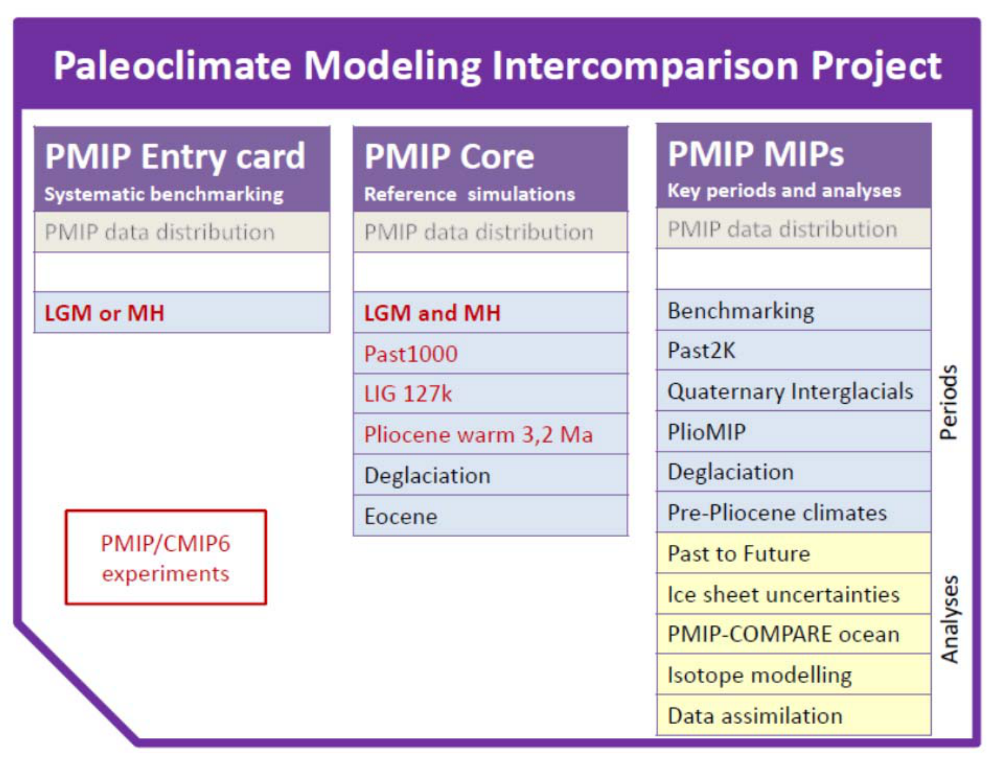
（图占位符：本单元预裁剪图 20-pmip-a-f01，源自原文档第 215 页，为表 1 的图示版。本单元正文（第 195–206 页）无明确的图引用，故将其置于表 1 之后。）
(Figure placeholder: pre-cropped image 20-pmip-a-f01, from page 215 of the source document, the graphical version of Table 1. The text of this unit contains no explicit figure reference, so it is placed after Table 1.)
对于所有这些时期，所用模式与未来气候预估所用模式相同。
For all these periods the model to be used is the same as the one used for future climate projections.
因此，视各研究组而定，所用模式将仅为海气耦合模式，或为地球系统模式。
Therefore depending on the groups the model will be only atmosphere-ocean coupled models or Earth System models.
分析的参考将是 CMIP6 工业化前（pre-industrial）模拟。
The reference for the analyses will be the CMIP6 preindustrial simulation.
下面我们简要描述中全新世与末次盛冰期——这两个时期自 PMIP 启动以来就一直是其重点，并曾是 PMIP3-CMIP5 模拟的组成部分。
Hereafter, we shortly describe the Mid-Holocene and Last Glacial Maximum, periods which have already been a focus of PMIP since its start and which have been part of the PMIP3-CMIP5 simulations.
关于近千年（同属 PMIP3-CMIP5）以及为 CMIP6 提议的两个新时期的更多细节，见下文：末次间冰期与中上新世温暖期。
More details are given below on the Last Millennium (part of PMIP3-CMIP5 as well) and on the two new periods proposed for CMIP6: the Last Interglacial and the Mid-Pliocene Warm Period.
► 中全新世（midHolocene）与末次盛冰期（lgm）：
► Mid-Holocene (midHolocene) and Last Glacial Maximum (lgm):
中全新世（约 6000 年前）与末次盛冰期（LGM，约 21000 年前）构成距今最近的两个准稳定气候极值：
The mid-Holocene (~6000 years ago) and the Last Glacial Maximum (LGM, ~21000 years ago) constitute the most recent quasi-stable climatic extremes:
中全新世常被描述为温暖状态，即“气候最适宜期”，全球水文循环的主导特征（如北非季风与亚洲季风）在此期间增强；
the mid-Holocene is often described as a warm state, or "climate optimum", in which dominant features of the global hydrological cycle, such as the North African and Asian monsoon, were amplified;
LGM 则是一个寒冷极值，当时温室气体浓度处于最低值，大陆冰盖面积达到最大，覆盖北美北部与欧亚大陆西北部的大片区域。
the LGM is a cold extreme in which greenhouse gas concentrations were at their minimum and continental ice-sheet at their maximum size, covering large areas of northern North America and northwestern Eurasia.
自 PMIP 计划启动以来，这两个时期一直是古数据综合工作的重点，因此在温度、水文循环与地表类型方面都有充分的文献记载。
These periods have been the focus for paleo-data syntheses since the beginning of the PMIP project and therefore are well documented in terms of temperature, hydrological cycle and land surface type.
一些长期存在的模式—数据不一致与人们对未来气候变化的关切相呼应，例如与中全新世的现有记录相比，模式系统性地低估了非洲季风降水向大陆北伸的程度。
Some long standing model-data disagreement are echoing preoccupations for future climate change, such as the systematic underestimation of the northward penetration of the African monsoon rainfall onto the continent compared to available records for the MidHolocene.
LGM 有助于研究在形成与 21 世纪末预估的温度响应幅度相当（尽管符号相反）的响应过程中起作用的反馈机制。
The LGM is relevant for studying feedback mechanisms at work in establishing a temperature response as large as (although with an opposite sign) as that predicted for the end of the 21st century.
这两个时期都是检验我们对气候变化机制理解的测试案例：例如环流变化与辐射/云变化之间的相互作用、气候系统各组成部分反馈的相对强度，以及我们对全球与区域气候变化之间联系的理解。
Both periods constitute test cases for our understanding of mechanisms of climate change, such as the interplay between circulation changes and radiation/cloud changes, the respective strengths of feedbacks from different components of the climate system, and for our understanding of the connections between global and regional climate changes.
与 PMIP 前几个阶段相比，将特别重视沙尘对平均气候与气候反馈的影响，以及与植被或交互碳循环相关的边界条件或地表反馈的不确定性。
Compared to the previous phases of PMIP a particular amphasis will be put on the impact of dust on the mean climate and climate feedbacks, as well as on uncertainties in boundary conditions or surface feedbacks related to the vegetation or interactive carbon cycle.
midHolocene 与 lgm 模拟的参考实验均为工业化前控制实验，将这些实验与为研究未来气候变化机制而设计的理想化实验（如 abrupt4xCO2）进行比较也非常有意义。
The reference experiments for both the midHolocene and lgm simulations are the pre-industrial control and it is very interesting to compare those experiments with an idealized experiment designed to study mechanisms of future climate change, such as abrupt4xCO2.
PMIP-CMIP6 将受益于 CFMIP 提议的理想化实验，如 AMIPminus4K 或 abrupt0.5CO2，它们将有助于比较在形成冷气候与暖气候过程中起作用的反馈。
PMIP-CMIP6 will benefit from idealized experiments proposed by CFMIP, such as AMIPminus4K or abrupt0.5CO2 which will help comparing feedbacks at work in setting up a cold climate vs. those at work for a warm climate.
类似地，在 AMIP 实验中将日射取 6ky BP 的值，将非常有助于分析气候系统内强迫与反馈的强度，以及过去与未来气候共同/不同响应的机制。
Similarly, an AMIP experiment with insolation prescribed at a 6ky BP value will be very useful to analyze the strengths of forcings and feedbacks within the climate system and the mechanisms for common/different responses for past and future climates.
这些敏感性实验将作为 PMIP 的一部分，在“从过去到未来”（Past to Future）工作组内讨论。
These sensitivity experiments will be discussed as part of PMIP in the Past to Future working group.
它们将呼应 PMIP1 模拟（http://pmip.lsce.ipsl.fr），而 ESM 模拟将呼应 PMIP2 与 PMIP3 模拟（http://pmip2.lsce.ipsl.fr 与 http://pmip3.lsce.ipsl.fr），由此得以刻画模式再现有文献记载的大尺度气候变化能力的演变。
They would echo PMIP1 simulations (http://pmip.lsce.ipsl.fr), while ESM simulations would echo PMIP2 and PMIP3 (http://pmip2.lsce.ipsl.fr and http://pmip3.lsce.ipsl.fr) simulations, hence allowing a characterization of the models' evolution in their ability to represent documented large climate changes.
► 近千年（past1000）：
► Last Millennium (past1000):
近千年是数百年时间框架内文献记载最充分的气候变化时期。
The last millennium is the best-documented period of climate change in a multi-century time frame.
全新世晚期气候曾发生显著变化，这些变化在历史上留下了痕迹（中世纪气候最适宜期、小冰期）。
Climate has varied considerably during the late Holocene and these changes left their traces in history (Medieval Climate Optimum, Little Ice Age).
然而，由地球气候系统内部变率和外部强迫（太阳、轨道、火山）变化引起的自然波动的相对大小，与归因于人为温室气体的当前全球变暖之间的相对大小，仍存在争议。
However, the relative magnitude of natural fluctuations due to internal variability of the Earth's climate system and to variations in the external forcings (Sun, orbital, volcanic) and the present global warming, attributed to anthropogenic greenhouse gases, is still under debate.
因此，近千年（LM）模拟直接回应了 CMIP6 的第一个关键科学问题：“地球系统如何响应强迫”。
Simulations of the last millennium (LM) therefore directly address the first CMIP6 key scientific question "How does the Earth System respond to forcing".
在与今天相差不大的气候背景条件下考察对（主要是）自然强迫的响应，对于增进对气候变率、环流和区域连通性的理解至关重要。
Investigating the response to (mainly) natural forcing under climatic background conditions not too different from today is crucial for an improved understanding of climate variability, circulation, and regional connectivity.
LM 模拟还可评估年代际及更长尺度上的气候变率，并提供有强迫与无强迫条件下的可预测性信息。
LM simulations also allow assessing climate variability on decadal and longer scales and provide information on predictability under forced and unforced conditions.
这些对近期预测至关重要，因而回应了第三个 CMIP5 科学问题（原文如此）：“在存在气候变率、可预测性与情景不确定性的情况下，我们如何评估未来气候变化”。
These are crucial for near-term predictions and thus address the third CMIP5 scientific question "How can we assess future climate changes given climate variability, predictability and uncertainties in scenarios".
通过提供对照观测与古气候重建的深入模式评估——尤其关注对强迫响应的细节——LM 模拟服务于“理解系统性模式偏差的起源与后果”，因而同时也回应了 CMIP6 的第二个科学问题。
In providing in-depth model evaluation with respect to observations and paleoclimatic reconstructions in particular addressing details of response to forcing, LM simulations serve to "understand origins and consequences of systematic model biases", thus addressing also the second CMIP6 scientific question.
LM 将基于 DECK 实验，特别是作为无强迫参考的工业化前控制模拟以及历史模拟。
LM will build on DECK experiments, in particular the pre-industrial control simulation as unforced reference and the historical simulations.
此外，LM 为始于 19 世纪的历史模拟提供初始条件，这些初始条件被认为优于 piControl 状态，因为它们包含了强迫历史的综合信息（例如 19 世纪初的大规模火山喷发）。
Moreover, LM provide initial conditions for historical simulations starting in the 19th century that are considered superior to the piControl state as it includes integrated information from the forcing history (e.g. large volcanic eruptions in the early 19th century).
在 PMIP 内部，相当数量的个人研究者与模式组承诺开展 LM 模拟。
Within PMIP, a considerable number of individual researchers and modelling groups is committed to perform LM simulations.
这些模拟将基于 PMIP3/CMIP5 中积累的经验，当时有十多个模式组参与，共 15 个 LM 实验存储在 ESGF 数据库中。
The simulations will base on experience gained in PMIP3/CMIP5 where more than a dozen modelling groups participated and a total of 15 LM experiments where stored in the ESGF database.
若干研究（部分体现为 AR5 第 5 章的条目）凸显了 LM 多模式集合的价值。
Several studies, partly reflected by entries in the AR5 chapter 5, have highlighted the value of the LM multi-model ensemble.
PMIP3 LM 工作组（WG Past2K）与 PAGES 的 PAGES2k 倡议密切合作，推动气候变量与变率模态的区域重建。
The PMIP3 LM working group (WG Past2K) is closely cooperating with the PAGES initiative PAGES2k promoting regional reconstructions of climate variables and variability modes.
合作工作聚焦于重建—模式比较（如 Bothe et al., 2013）与变率模态评估（如 Raible et al., 2014）。
Collaborative work has focused on reconstruction-model intercomparison (e.g. Bothe et al., 2013) and assessment of variability modes (e.g. Raible et al., 2014).
对重建与模拟的综合评估推动了模式评估与过程理解的进展（如 Lehner et al., 2013; Sicre et al., 2013; Jungclaus et al., 2014）。
Integrated assessment of reconstruction and simulations has led to progress in model evaluation and process understanding (e.g. Lehner et al., 2013; Sicre et al., 2013; Jungclaus et al., 2014).
WG Past2K 将推动未来的联合分析与研讨会，汇聚观测与模拟两方面的专长。
WG Past2K will promote future common analyses and workshops bringing together observational and modelling expertise.
对 CMIP6 而言，进展可期：新的、更全面的火山强迫重建（Sigl et al., 待发表）、改进的模式，以及确保从工业化前过去到未来无缝衔接模拟的实验方案。
For CMIP6 progress is expected owing to new, more comprehensive reconstructions of volcanic forcing (Sigl et al., in preparation), improved models, and an experimental protocol that ensures seamless simulations from the pre-industrial past to the future.
更高分辨率的模拟将能够评估更多区域细节与过程，例如风暴路径、降水。
Higher-resolution simulations will allow assessing more regional details and processes, e.g. storm-tracks, precipitation.
► 末次间冰期：
► Last Interglacial:
IPCC 第一工作组 AR4 与 AR5 的《决策者摘要》均包含关于末次间冰期（LIG）的陈述：
The Summary for Policymakers for both the IPCC WG1 AR4 and AR5 included statements on the Last Interglacial (LIG):
“有很高信度认为，末次间冰期（129000 至 116000 年前）的全球平均海平面最大值在数千年间比现在至少高 5 米，并且有高信度认为其未超过现在水平以上 10 米。
"There is very high confidence that maximum global mean sea level during the last interglacial period (129,000 to 116,000 years ago) was, for several thousand years, at least 5 m higher than present, and high confidence that it did not exceed 10 m above present.
在末次间冰期，格陵兰冰盖很可能对更高的全球平均海平面贡献了 1.4 至 4.3 米，这意味着南极冰盖以中等信度另有贡献。
During the last interglacial period, the Greenland ice sheet very likely contributed between 1.4 and 4.3 m to the higher global mean sea level, implying with medium confidence an additional contribution from the Antarctic ice sheet.
这一海平面变化发生在不同的轨道强迫背景下，且高纬地表温度（数千年的平均值）比现在至少高 2°C（高信度）。”
This change in sea level occurred in the context of different orbital forcing and with high-latitude surface temperature, averaged over several thousand years, at least 2°C warmer than present (high confidence)."
然而，AR4 与 AR5 都没有针对 LIG 的协调模拟，用以评估温度的极地放大、海冰的季节记忆以及降水/风暴路径变化对格陵兰冰盖稳定性及其对海平面高水位贡献的相互作用，也无法评估海洋与大气温度及环流的相互作用对南极冰盖稳定性的影响。
Yet the AR4 and AR5 had no coordinated simulations for the LIG to assess the interplay of polar amplification of temperature, seasonal memory of sea ice, and precipitation/storm track changes on the stability of the Greenland ice sheet and its contribution to the sea level high stand nor the interplay of oceanic and atmospheric temperatures and circulation on the stability of the Antarctic ice sheet.
AR5 中评估的 LIG 气候模式模拟虽然由许多模式组完成，但各模拟的强迫设置不一，且常常未使用与 CMIP5 未来预估相同的模式/分辨率，因此提供了有用但不完整的评估手段（第 5 章；Lunt et al., 2013）。
Climate model simulations for the LIG assessed in the AR5, although completed by many modeling groups, varied in their forcings and often were not made with the same model/same resolution as the CMIP5 future projections, thus providing a useful but incomplete means for assessment (Chapter 5; Lunt et al., 2013).
同样地，AR5 中评估的格陵兰冰盖模拟使用了离线模式，并采用多种气候强迫设置（第 5 章）。
Similarly, Greenland ice sheet simulations assessed in the AR5 used offline models with a variety of climate forcing setups (Chapter 5).
当时没有可用于评估南极冰盖（特别是西南极冰盖）对 LIG 海平面高水位贡献的模拟。
No simulations were available to assess the Antarctic ice sheet (particularly, the West Antarctic Ice Sheet) contribution to the LIG sea level high stand.
我们提议为 LIG（lastInterglacial）开展一项 PMIP-CMIP6 时间切片实验，以确定该时期更暖的大气与海洋温度、降水变化以及地表能量平衡变化对冰盖热力学与动力学的相互作用。
We propose a PMIP-CMIP6 time-slice experiment for the LIG (lastInterglacial) to determine the interplay of warmer atmospheric and oceanic temperatures, changed precipitation, and changed surface energy balance on ice sheet thermodynamics and dynamics during this period.
这些时间切片实验的输出将被 ISMIP6 用于驱动独立的冰盖实验（lastIntergacialforcedism）。
The output from these time-slice experiments will be used by ISMIP6 to force standalone ice sheet experiments (lastIntergacialforcedism).
仍不确定的是，冰盖模式与气候模式能在多大程度上预测冰盖的稳定性，以及本世纪内是否可能越过阈值。
Still uncertain are how well ice sheet and climate models can predict the stability of the ice sheets and if thresholds may be passed this century.
LIG 模拟将具有很高的社会意义，因为它对海平面变化以及海冰和季风都有重要启示。
A LIG simulation will be of high societal relevance because of implications for sea level changes as well as sea ice and monsoons.
在温暖的过去间冰期中，LIG 最适合用于 CMIP6 评估，因为其数据相对丰富，包括：冰芯——提供充分混合温室气体、含沙尘与海盐的气溶胶的测量，以及作为温度代用指标的稳定水同位素，对格陵兰还提供冰盖高度与范围；
The LIG is the most suitable of the warm past interglacials for a CMIP6 assessment because of the relative wealth of data including: ice cores providing measurements of well-mixed greenhouse gases, aerosols including dust and sea salt, and stable water isotopes as a proxy for temperature, as well as for Greenland, ice sheet elevation and extent;
海洋记录——提供海洋温度与地质示踪剂，可用于解释水团与翻转环流强度；
marine records for ocean temperatures and geotracers that can be interpreted in terms of water masses and overturning strength;
洞穴石笋——提供季风强度指标；
speleothems that provide indication of monsoon strength;
以及指示温度与植被的陆相记录。
and terrestrial records that indicate temperature and vegetation.
此外，新的记录正在细化我们对海冰范围、火灾与生物多样性的认识。
As well, new records are refining our knowledge of sea ice extent, fire, and biodiversity.
拟议的 LIG 的 PMIP-CMIP6 模拟尤其切合 WCRP 重大挑战“冰冻圈变化与区域海平面上升”，同时也切合“区域气候信息”与“云、环流与气候敏感度”，因为数据记录显示其强迫大、因而区域响应也大。
The proposed PMIP-CMIP6 simulation for the LIG is particularly relevant to the WCRP Grand Challenges: Changes in Cryosphere and Regional Sea-level Rise, but also to Regional Climate Information and Clouds, Circulation and Climate Sensitivity because of the large forcings and thus large regional responses as recorded in the data.
它很好地回应了以下广泛的科学问题：1. 地球系统如何响应强迫？2. 系统性模式偏差（尤其是在高纬地区、以及与冰盖稳定性相关的偏差）的起源与后果是什么？
It addresses well the broad scientific questions: 1. How does the Earth System respond to forcing? and 2. What are the origins and consequences of systematic model biases (especially at high latitudes and relevant to the stability of the ice sheets)?
作为 PMIP 与 ISMIP6 的一部分，一些研究组还将开展瞬变耦合冰盖—气候模拟以及其他独立冰盖模拟，这些模拟将给出海平面的变化速率——若应用离线 GIA 模式，还包括区域海平面——以及这些模式启动下一次冰期开始能力的度量。
As part of PMIP and ISMIP6, some groups will additionally perform transient coupled ice sheet-climate simulations as well as other standalone ice sheet simulations that will provide rates of change for sea level, including regional sea level if offline GIA models applied, as well as a measure of the capability of these models to initiate the next glacial inception.
► 上新世温暖期
► Pliocene warm period
上新世是地球历史上大气 CO2 浓度接近现代水平（约 400 ppmv）、同时保持近乎现代大陆格局的最后一个时期。
The Pliocene epoch was the last time in Earth history when atmospheric CO2 concentrations approached modern values (~400 ppmv) whilst at the same time retaining a near modern continental configuration.
IPCC 第五次评估报告第 5 章（Masson-Delmotte et al., 2013）指出，上新世的模式—数据比较以高信度表明，平均地表温度高于工业化前水平（Dowsett et al., 2012; Haywood et al., 2013）。
The IPCC 5th Assessment report chapter 5 (Masson-Delmotte et al., 2013) states that that model–data comparisons for the Pliocene provide high confidence that mean surface temperature was warmer than pre-industrial (Dowsett et al., 2012; Haywood et al., 2013).
基于大规模数据综合（Lunt et al., 2010; Dowsett et al., 2012），全球平均海表温度估计比 1901–1920 年平均值高 +1.7°C。
Global mean sea surface temperatures have been estimated to be +1.7°C above the 1901–1920 mean based on large data syntheses (Lunt et al., 2010; Dowsett et al., 2012).
现有气候模式模拟给出的全球平均地表气温范围，相对于 1901–1920 年平均值在 +1.9°C 至 +3.6°C 之间（Haywood et al., 2013）。
Exiting climate model simulations have produced a range of global mean surface air temperature of +1.9°C and +3.6°C relative to the 1901–1920 mean (Haywood et al., 2013).
模式模拟表明，经向温度梯度有所减小（由于高纬增暖），这对未来极地冰盖的稳定性与海平面具有重要影响（如 Miller et al. 2012）。
Model simulations have indicated that meridional temperature gradients were reduced (due to high latitude warming), which has significant implications for the stability of polar ice sheets and sea level in the future (e.g. Miller et al. 2012).
植被资料汇编（Salzmann et al., 2008）表明，全球干旱荒漠面积缩小、北方森林取代苔原，而气候模式预测水文循环增强，但模式间差异较大（Haywood et al., 2013）。
Compilations of vegetation (Salzmann et al., 2008) have indicated that the global extent of arid deserts decreased and boreal forests replaced tundra, and climate models predict an enhanced hydrological cycle, but with a large inter-model spread (Haywood et al., 2013).
东亚夏季风以及其他季风系统可能也有所增强（Zhang et al. 2013）。
The East Asian Summer Monsoon, as well as other monsoon systems, may also have been enhanced (Zhang et al. 2013).
尽管 AR5 评估了上新世的气候模式模拟，但这些模拟并非来自与 CMIP5 未来预估相同的模式/分辨率，从而削弱了学界对照未来气候变化的类似预测、评估和比较全球与区域上新世气候变化的能力（Haywood et al., 2013）。
Although climate model simulations for the Pliocene were assessed in the AR5, these simulations were not derived from the same model/same resolution as the CMIP5 future projections, thus reducing the communities' ability to assess and compare changes in global and regional Pliocene climates, vis-à-vis similar predictions of future climate change (Haywood et al., 2013).
我们提议为上新世开展一项 CMIP6 时间切片实验，以理解地球气候系统对接近现代浓度大气 CO2 的长期响应（更长期的气候敏感度，即地球系统敏感度），并理解海洋环流、北极海冰、气候变率模态（如 ENSO）的响应，以及水文循环的全球响应与季风系统的区域变化。
We propose a CMIP6 time-slice experiment for the Pliocene to understand the long term response of the Earth's climate system to a near modern concentration of atmospheric CO2 (longer term climate sensitivity or Earth System Sensitivity), and to understand the response of ocean circulation, Arctic sea-ice, modes of climate variability (e.g. ENSO), as well as the global response in the hydrological cycle and regional changes in monsoon systems.
上新世模拟将具有很高的社会意义，因为它有可能为决策者提供信息：为在长期（2100 AD 之后）将全球年平均温度升幅控制在 2 至 3 °C 以内，需要何种减排情景。
A Pliocene simulation will be of high societal relevance because of its potential to inform policy makers on required emission reduction scenarios designed to prevent global annual mean temperatures increase by more than 2 to 3 °C in the long term (beyond 2100 AD).
拟议的上新世 CMIP6 模拟切合 WCRP 重大挑战中的两项。
The proposed CMIP6 simulation for the Pliocene is relevant to two of the WCRP Grand Challenges.
其中包括“云、环流与气候敏感度”：由于 CO2 强迫增强（与现代 CO2 强迫相当），这为考察接近现代大气 CO2 浓度下的平衡气候态提供了独特机会。
This includes Clouds, Circulation and Climate Sensitivity because of the enhanced CO2 forcing (contemporaneous with modern CO2 forcing), providing a unique opportunity to examine an equilibrium climate state to a near modern concentration of atmospheric CO2.
上新世气候档案所保留的极地放大格局可与最新一代 CMIP 模式直接比较，为解决潜在的极地放大问题做出宝贵贡献。
The pattern of polar amplification preserved Pliocene climate archives can be compared directly with the latest generation of CMIP models making a valuable contribution towards addressing the potential polar amplification problem.
通过分析 CMIP 模式中的上新世极地放大，并考察上新世北冰洋季节性无海冰这一地质解释，我们的 CMIP6 模拟还将回应 WCRP 重大挑战“冰冻圈变化”。
Through the analysis of Pliocene polar amplification in CMIP models, and examining the geological interpretation of a seasonally sea-ice free Arctic Ocean during the Pliocene, our CMIP6 simulation will also address the WCRP Grand Challenge of Changes in the Cryosphere.
尽管上新世海平面重建存在不确定性，但 IPCC AR5 以高信度指出，上新世海平面高于工业化前时代，多种独立方法表明海平面上升幅度在 10 至 20 米之间。
Whilst uncertainty exists in Pliocene sea level reconstruction, IPCC AR5 states with high confidence that Pliocene sea-levels were higher than the pre-industrial era, with a number of independent methods indicating a sea-level rise of between 10 and 20 m.
这表明，在 CO2 浓度约为 400 ppmv 的条件下，格陵兰冰盖与南极冰盖都可能存在长期不稳定性（Miller et al. 2012）。
This indicates potential long term instability of both the Greenland and Antarctic Ice Sheets (Miller et al. 2012) with CO2 concentrations at approximately 400 ppmv.
CMIP6 上新世实验将用于上新世冰盖模式比较计划，以便未来更好地约束上新世冰盖模式模拟中的气候强迫。
CMIP6 Pliocene experiments will be used within the Pliocene Ice Sheet Model Intercomparison Project in order to better constrain the climatological forcing in ice sheet model simulations for the Pliocene in the future.
PMIP 内部有一个组织良好、非常活跃的上新世气候模式研究者社群，上新世工作组是 PMIP3 中最成功的工作组之一。
There is a well-organized and highly active of community of Pliocene climate modellers within PMIP, with the Pliocene working group being one of the most successful working groups within PMIP3.
该工作组与美国地质调查局（USGS）联系密切；过去 25 年来，USGS 一直运行着一个卓有成效的、聚焦上新世环境重建的核心计划，其数据被用于支撑几乎所有针对上新世开展的模式—数据比较。
The working group is closely associated with the United States Geological Survey (USGS) who has had a highly productive core program focused on Pliocene environmental reconstruction for the last 25 years, and their data has been used to underpin almost all model-data comparisons performed for the Pliocene.
因此，CMIP6 有望继续获得 USGS 的大力支持以及用于与模式输出比较的新上新世数据集。
Thus, CMIP6 can expect a high degree of continued support and new Pliocene data sets from the USGS for comparison with model outputs.
该实验将回应以下广泛的科学问题：1. 地球系统在长期上如何响应与现代相当的 CO2 强迫？2. CO2 引起的极地放大对冰盖、海冰与海平面稳定性的意义是什么？
The experiment will address the broad scientific questions: 1 How does the Earth System respond in the long term to CO2 forcing analogous to that of the modern? and 2 What is the significance of CO2 induced polar amplification for the stability of the ice sheets, sea-ice and sea-level?
拟议的 CMIP DECK 与 CMIP6 实验评估/分析概述*
An overview of the proposed evaluation/analysis of the CMIP DECK and CMIP6 experiments*
PMIP 受益于与 PAGES 及 INQUA（国际第四纪研究联合会）在模式—数据比较方面的紧密联系。
PMIP benefits from strong links with PAGES and INQUA (International Union for Quaternary Science) for model-data comparisons.
midHolocene 与 lgm：参照现有数据（系统化基准检验，cf. Harrison et al, Climate Dynamics, 2013），在温度与水文循环两方面进行评估。
midHolocene and lgm: evaluation w.r.t available data (systematic benchmarking, cf. Harrison et al, Climate Dynamics, 2013), both in terms of temperature and hydrological cycle.
这些评估利用陆上与海洋的独立气候重建。
These evalutions make use of independent climate reconstructions over land and ocean.
将特别关注模式偏差与未来气候模式结果之间的联系。
A specific focus will be put on the link with model biases and model results for future climate.
PMIP 已设立专门工作组，以改进与海洋数据（COMPARE 组）及同位素数据（参见 http://pmip3.lsce.ipsl.fr/ 的“working groups”标签页）的比较。
Specific working groups in PMIP have been set up to improve the comparisons with marine data (COMPARE group) and isotopic data (cf. http://pmip3.lsce.ipsl.fr/, "working groups" tab).
这为定量模式评估提供了新的方法与新的可能。
This provides new methodologies and new possibilities for quantitative model assessments.
past1000：采用新颖的统计方法（Sundberg et al., 2012; Moberg et al., 2014; Bothe et al., 2013）与检测/归因技术（Schurer et al., 2014）开展深入分析。
past1000: In-depth analyses using novel statistical approaches (Sundberg et al., 2012; Moberg et al., 2014; Bothe et al., 2013) and detection/attribution techniques (Schurer et al., 2014).
对变率与环流模态变化的面向过程的分析。
Process-oriented analyses on variability and changes in circulation modes.
部分由专门的敏感性研究支持，例如在 VolMIP 中。
Partly supported by dedicated sensitivity studies, e.g. in VolMIP.
lastInterglacial：CMIP6 实验将分析北极地区起作用的反馈强度及其对格陵兰冰盖稳定性的潜在影响。
lastInterglacial: The CMIP6 experiment will analyse the strength of feedbacks at work in the Arctic, and their potential implications for the stability of the Greenland ice sheet.
将特别强调海洋环流的热量年度再分配，以及北大西洋次表层增暖向南部海洋传输的潜在作用——这对西南极冰盖底部融化具有意义。
A particular emphasis will be put on the annual redistribution heat by the ocean circulation and the potential role of the transmission of the subsurface warming from North Atlantic to Southern ocean, with implication for basal melting of West Antarctic ice Sheet.
来自海冰、水汽与云的高纬反馈将是重点，热带与高纬水文循环之间的相对变化亦然。
High latitude feedbacks from sea-ice, water vapor and cloud will be a focus, as well as the relative changes between the tropical and high latitude water cycle.
上新世温暖期：CMIP6 实验将评估模式模拟一段 CO2 引起全球变暖的近期时段的能力，并评估气候系统关键组成部分（海冰、变率模态、季风、风暴路径、植被）对接近现代 CO2 强迫的长期响应。
Pliocene Warm Period: The CMIP6 experiment will evaluate the ability of models to simulate a recent interval of CO2-induced global warmth, and assess the response of critical components of the climate system to near modern CO2 forcing in the long term (sea-ice, modes of variability, monsoons, storm tracks, vegetation).
与其他温暖时期或间冰期不同，上新世保留了大陆格局与天文强迫等关键的现代边界条件。
Unlike other warm periods or interglacials the Pliocene retains critical modern boundary conditions such as the continental configuration and astronomical forcing.
上新世的变化信号很大，因此信号与不确定性之比使模式预测的变化能够被有把握地归因。
The signal of change in Pliocene is large and therefore the signal to uncertainty ratio enables model-predicted changes to be attributed with confidence.
其中一些诊断与模式评估将作为 PMIP 横向分析组（transverse analyses groups）工作的一部分开展。
Some of these diagnosics and model evaluations will be performed as part of PMIP transverse analyses groups.
特别是，PMIP“Past2Future”工作组旨在识别并理解过去与未来气候模式模拟之间的关系，并利用现有古数据评估这些关系的一致性。
In particular, the PMIP "Past2Future" working group aims at identifying and understanding relationships between model simulations for past and future climates and at using available paleodata to evaluate the consistency of these relationships.
因此，其工作可能基于全部 PMIP 模拟，并辅以与未来气候变化相关的选定模拟。
Its work is therefore potentially based on all PMIP simulations together with selected simulations relevant for future climate change.
拟议时间安排*
Proposed timing*
理想情况下，past1000 应在历史模拟之前运行，且 past1000 与历史模拟之间过渡期的强迫应保持连续。
Ideally past1000 should be run before the historical simulations and forcings should be continuous over the transition between the past1000 and historical runs.
所有其他实验可在 DECK 参考模拟运行完成后尽快开展。
All other experiments can be run as soon as the reference simulation in DECK is run.
PMIP (Palaeoclimate Modelling Intercomparison Project) ｜ 古气候模拟比较计划（下）
拟议 CMIP6 试验的实验设计
Experimental design of proposed CMIP6 experiments
基线协议已准备就绪，描述如下。
The baseline protocol is ready and described below.
我们已在 PMIP 网页上就该协议展开讨论：
We have opened discussions on this protocol on the PMIP web page:
https://wiki.lsce.ipsl.fr/pmip3/doku.php/pmip3:cmip6:design:index （网址，保留原文）
https://wiki.lsce.ipsl.fr/pmip3/doku.php/pmip3:cmip6:design:index
经与各模式小组交流后确定的最终实验设计将发表于 GMD。
The final experimental design, decided after interactions with the modelling groups, will be published in GMD.
我们计划开设一期 PMIP 专刊，介绍 CMIP6 试验及其与其他 PMIP 模拟之间的衔接。
We plan to open a PMIP special issue to describe the CMIP6 experiments and how they articulate with other PMIP simulations.
参与的模式小组将共同参与这些描述性论文，以便首先肯定他们的贡献。
Participating modelling groups will be involved in these description papers so as to give them first credit of their contribution.
中全新世（midHolocene）与末次盛冰期（lgm）
midHolocene and lgm
（摘自 Braconnot 等，《自然·气候变化》，2012 年）+ http://pmip3.lsce.ipsl.fr
(taken from Braconnot et al, Nature Climate Change, 2012) + http://pmip3.lsce.ipsl.fr
中全新世（MH）与末次盛冰期（LGM）模拟是平衡态试验，呈现特定时期气候的“快照”。
Mid-Holocene (MH) and Last Glacial Maximum (LGM) simulations are equilibrium experiments, presenting a “snapshot” of climate at a specific time.
表 2 总结了 PMIP 各阶段 MH 与 LGM 试验所使用的边界条件。
Table 2 summarises the boundary conditions used for MH and LGM experiments during the various phases of PMIP.
气候的最终外强迫（或驱动因子）是由地球轨道变化所决定的入射太阳辐射（日射）的变化。
The ultimate external forcing (or driver) of climate is change in incoming solar radiation (insolation) as determined by changes in the Earth’s orbit.
这些变化可以精确地给定。
These changes can be specified precisely.
由于地球轨道参数的缓慢变化，MH 日射的季节与纬度分布不同于现今（公元 1950 年），使北半球季节差异的幅度增大约 60 Wm-2。
Due to the slow variations of Earth’s orbital parameters, the seasonal and latitudinal distribution of MH insolation was different from present (1950 C.E), enhancing the magnitude of the seasonal contrast in the Northern Hemisphere by about 60 Wm-2.
LGM 的日射强迫与现今非常相似。
Insolation forcing at the LGM was very similar to present.
当模式不显式模拟诸如冰盖累积、伴随的海陆分布变化或大气成分演变等缓慢过程时——这些过程都会引起在较短时间尺度上须视为气候强迫的变化——则这些边界条件（下称强迫）必须在 MH 和 LGM 试验中予以给定。
When models do not explicitly simulate slow processes such as the build up of ice sheets, concomitant changes in land-sea distribution, or the evolution of atmospheric composition, all of which lead to changes that have to be considered as climate forcings on shorter timescales, then these boundary conditions (hereafter forcings) have to be prescribed in the MH and LGM experiments.
随着模式复杂性的演化，所需给定的强迫集合也随之演化。
As models have evolved in complexity, so the set of forcings that has to be prescribed has also evolved.
在 PMIP 第一阶段（PMIP1），试验使用大气环流模式进行，海洋状态作为强迫给定。
In the first phase of the PMIP (PMIP1), the experiments were performed with atmospheric general circulation models and the state of the ocean was prescribed as a forcing.
在 PMIP 第二阶段（PMIP2），部分模式纳入植被动力学，但海气耦合环流模式（OAGCM）的植被覆盖与反照率仍须给定。
In the second phase of PMIP (PMIP2), some models incorporated vegetation dynamics but vegetation cover and albedo still had to be specified for the coupled ocean-atmosphere general circulation models (OAGCMs).
与陆地和海洋碳循环相关的某些过程在早期 PMIP 试验中被忽略，但在 PMIP3 所使用的部分模式中将作为交互分量纳入。
Some processes, such as those associated with the terrestrial and marine carbon cycle, have been ignored in the earlier PMIP experiments, but will be included as interactive components of some of the models used in PMIP3.
在所有试验中，大气成分都利用冰芯结果来给定。
In all experiments the atmospheric composition is prescribed using results from icecores.
PMIP 下一阶段将在可能的情况下沿用 PMIP3 的边界条件。
The next phase of PMIP will make use of the PMIP3 boundary conditions whenever possible.
一个可预见的主要演变与大气模式中沙尘循环的交互式计算有关，为此还必须考虑植被的变化。
A major foreseen evolution is related to the interactive computation of the dust cycle in atmospheric models, for which changes in vegetation also have to be taken into account.
PMIP2 与 PMIP3 建议使用交互式植被或给定的前工业化植被二者之一。
PMIP2 and PMIP3 recommended the use of either interactive vegetation or prescribed pre-industrial vegetation.
对于 PMIP-CMIP6，那些包含沙尘循环交互式表征的模式
For PMIP-CMIP6, those models which include an interactive representation of the
将必须考虑植被的变化。
dust cycle will have to account for changes in vegetation.
这一具体议题将与各模式小组进行讨论。
This particular topic will be discussed with the modelling groups.
lgm 试验将作为参照基准，据此发展针对边界条件不确定性的敏感性试验。
The lgm experiment will be the reference from which sensitivity experiments to uncertainties in boundary conditions will be developed.
特别是，对冰盖重建的敏感性将在 PMIP 的 LGM 冰盖不确定性工作组内进行检验。
In particular, the sensitivity to ice sheet reconstructions will be tested within the PMIP working group on LGM ice sheet uncertainties.
这些 PMIP-CMIP6 LGM 试验也将作为瞬变冰消期试验（由冰消期工作组协调）的起点。
These PMIPCMIP6 LGM experiments will also be starting points for transient deglaciation experiments (coordinated by the working group on the deglaciation).
表 2：PMIP 项目各阶段所给定边界条件的演变。
Table 2 : Evolution of the boundary conditions prescribed in the different phases of the PMIP project.
不同模拟集合之间保持相同的边界条件以黄色高亮；蓝色高亮表示某一组试验中未包含的边界条件。
Boundary conditions that remain the same between different sets of simulations are highlighted in yellow; blue highlighting shows boundary conditions that are not included in a given set of experiments.
有关 PMIP3 所用协议的更多细节可在 PMIP3 网站（见 http://pmip3.lsce.ipsl.fr/）找到，该网站还提供介绍 PMIP1 与 PMIP2 所用协议的网页链接。
More details on the protocols used in PMIP3 can be found on the PMIP3 web site (see http://pmip3.lsce.ipsl.fr/), which also provides links to the webpages detailing the protocols used in PMIP1 and PMIP2.
请注意，在 MH 试验中 CO2 浓度为前工业化值。
Note that in the MH experiment the CO2 concentration is the pre-industrial one.
CO2ctrl 指现代对照模拟中的 CO2 浓度。
CO2ctrl refers to the CO2 concentration of the present-day control simulation.
| 边界条件 Boundary conditions |
PMIP1 | PMIP2 | PMIP3 |
|---|---|---|---|
| 中全新世（距今 6000 年）* Mid Holocene (6000 years BP)* * 本试验中冰盖、海岸线、太阳常数和气溶胶按 PI 模拟给定。 *In this experiment ice-sheet, coastline, solar constant and aerosols are prescribed as in the PI simulation. |
|||
| 日射 Insolation |
偏心率 = 0.018682 倾角 = 24.105° 近日点−180° = 0.87° eccentricity = 0.018682 obliquity = 24.105° perihelion−180° = 0.87° |
偏心率 = 0.018682 倾角 = 24.105° 近日点−180° = 0.87° eccentricity = 0.018682 obliquity = 24.105° perihelion−180° = 0.87° |
偏心率 = 0.018682 倾角 = 24.105° 近日点−180° = 0.87° eccentricity = 0.018682 obliquity = 24.105° perihelion−180° = 0.87° |
| 微量气体 Trace gases |
CO2 = 280 ppm 或 280/345* CO2ctrl CH4 = 650 ppb N2O = 270 ppb CFC = 0 O3 = 不予考虑 CO2 = 280 ppm or 280/345* CO2ctrl CH4 = 650 ppb N2O = 270 ppb CFC = 0 O3 = not considered |
CO2 = 280 ppm CH4 = 650 ppb N2O = 270 ppb CFC = 0 O3 = 不予考虑 CO2 = 280 ppm CH4 = 650 ppb N2O = 270 ppb CFC = 0 O3 = not considered |
CO2 = 280 ppm CH4 = 650 ppb N2O = 270 ppb CFC = 0 O3 = 与 CMIP5 PI 相同 CO2 = 280 ppm CH4 = 650 ppb N2O = 270 ppb CFC = 0 O3 = same as in CMIP5 PI |
| 植被与陆面 Vegetation and land surface |
给定为与现代植被相同 Prescribed to be the same as modern vegetation |
或给定为与现代植被相同，或使用动力学植被模块计算 Either prescribed to be the same as modern vegetation or computed using a dynamical vegetation module |
使用动力学植被模块计算；或按 PI 给定，对于具有活跃碳循环的模式计算物候，或由数据给定 Computed using a dynamical vegetation module, Or prescribed as in PI, with phenology computed for models with active carbon cycle or prescribed from data |
| 碳循环 Carbon cycle |
不予考虑 Not considered |
不予考虑 Not considered |
交互式：大气浓度给定，海洋与陆地碳通量按 CMIP5 建议进行诊断 Interactive, with atmospheric concentration prescribed and ocean and land carbon fluxes diagnosed as recommended in CMIP5 |
| 末次盛冰期（距今 21000 年）* Last Glacial Maximum (21000 years BP) * * 本试验中太阳常数和气溶胶按 PI 模拟给定。 * In this experiment solar constant and aerosols are prescribed as in the PI simulations. |
|||
| 日射 Insolation |
偏心率 = 0.018994 倾角 = 22.949° 近日点−180° = 114.42° eccentricity = 0.018994 obliquity = 22.949° perihelion−180° = 114.42° |
偏心率 = 0.018994 倾角 = 22.949° 近日点−180° = 114.42° eccentricity = 0.018994 obliquity = 22.949° perihelion−180° = 114.42° |
偏心率 = 0.018994 倾角 = 22.949° 近日点−180° = 114.42° eccentricity = 0.018994 obliquity = 22.949° perihelion−180° = 114.42° |
| 微量气体 Trace gases |
CO2 = 200 ppm 或 (200/280) * CO2ctrl CH4 = 350 ppb N2O = 190 ppb CFC = 0 O3 = 与 PI 相同 CO2 = 200 ppm or (200/280) * CO2ctrl CH4 = 350 ppb N2O = 190 ppb CFC = 0 O3 = same as in PI |
CO2 = 185 ppm CH4 = 350 ppb N2O = 200 ppb CFC = 0 O3 = 与 PI 相同 CO2 = 185 ppm CH4 = 350 ppb N2O = 200 ppb CFC = 0 O3 = same as in PI |
CO2 = 185 ppm CH4 = 350 ppb N2O = 200 ppb CFC = 0 O3 = 与 PI 相同 CO2 = 185 ppm CH4 = 350 ppb N2O = 200 ppb CFC = 0 O3 = same as in PI |
| 海洋 Ocean |
海表温度（SST）按 CLIMAP (1981) 给定，或使用海洋平板模式计算 SST SST prescribed from CLIMAP (1981) Or SST computed using a slab ocean model |
三维海洋模式与海冰 3D Ocean model and sea-ice |
三维海洋模式与海冰 3D ocean model and sea-ice |
| 冰盖 Ice sheet |
ICE-4G（Peltier 等，1994） ICE-4G (Peltier et al, 1994) |
ICE-5G（Peltier 等，2004） ICE-5G (Peltier et al, 2004) |
PMIP3 混合冰盖 PMIP3 Blended ice sheet |
| 海陆掩膜 Land-sea mask |
海平面 −105 m –105 m sea level |
按 Peltier (2004) 海陆掩膜给定，海平面 −120 m Prescribed following Peltier (2004) land-sea mask –120 m |
由混合冰盖海陆掩膜给定，海平面变化与海陆掩膜变化一致。 Prescribed from the blended ice-sheet land-sea mask. Sea-level change consistent with the change in land-sea mask. |
| 淡水 Freshwater |
（空） | 将 LGM 多余的淡水加入海洋中 3 个不同区域 Excess LGM freshwater added to the ocean in 3 different regions |
将 LGM 多余的淡水加入海洋中 3 个不同区域 Excess LGM freshwater added to the ocean in 3 different regions |
| 冰盖冰流 Ice sheet ice streams |
不予考虑 Not considered |
不予考虑 Not considered |
不予考虑 Not considered |
| 河流径流 River runoff |
不予考虑 Not considered |
同 CTRL，或修改河流路径 As in CTRL or river pathway modified |
同 PI，或按 PMIP 协议修改河流路径 As in PI or river pathway modifier according to PMIP protocol |
| 平均海洋盐度 Mean ocean salinity |
不予考虑 Not considered |
不予考虑 Not considered |
各处 +1 PSU +1 PSU everywhere |
| 碳循环 Carbon cycle |
不予考虑 Not considered |
不予考虑 Not considered |
交互式：大气浓度给定，海洋与陆地碳通量按 CMIP5 建议进行诊断 Interactive, with atmospheric concentration prescribed and ocean and land carbon fluxes diagnosed as recommended in CMIP5 对于 PCMIP：完全交互式，大气浓度由模式计算 For PCMIP: fully interactive with atmospheric concentration computed by the model |
过去千年（Last Millennium）
Last Millennium
更新版 PMIP3 协议（http://pmip3.lsce.ipsl.fr），基于 Schmidt 等（2011，2012）：
Updated PMIP3 protocol (http://pmip3.lsce.ipsl.fr) based on Schmidt et al (2011, 2012):
（参考文献条目：保留原文，不翻译）
Schmidt, G. A. et al. (2011). Climate forcing reconstructions for use in PMIP simulations of the last millennium (v1.0), Geosci. Model Dev., 4, 33–45.
（参考文献条目：保留原文，不翻译）
Schmidt, G. A. et al. (2012). Climate forcing reconstructions for use in PMIP simulations of the Last Millennium (v1.1), Geosci. Model Dev., 5, 185–191
850–1849 年的瞬变模拟，之后接续历史试验；为太阳、火山、土地利用变化、温室气体所准备的边界条件集合，将与历史模拟所用的边界条件相衔接。
Transient simulations 850-1849 followed by historical experiments, set of boundary conditions for solar, volcanic, land-cover-change, greenhouse gases to be blended with those for historical
（1850–2010 年）模拟。past1000 与历史情景之间的连续性须在 CMIP6 内加以改进并充分讨论。
(1850-2010) simulations. The continuity between the past1000 and historical scenarios has to be improved and fully discussed within CMIP6.
末次间冰期（Last Interglacial）
Last Interglacial
基于 PMIP3 内讨论过的协议。
Based on the protocol discussed within PMIP3.
对于 CMIP6，我们提议开展距今 127 ka（ky BP）时间切片的模拟——大轨道强迫（图 1），大响应。
For CMIP6, we propose a simulation for the 127ky BP time slice - large orbital forcing (Figure 1), large responses.
- 轨道参数设定为 127 ka。
- Orbital parameters set to 127ka.
- 温室气体浓度由冰芯很好地确定 [CO2 275 ppm；CH4 709 ppb；N2O 266 ppb]。
- Greenhouse gas concentrations well-known from ice cores [CO2 275ppm; CH4 709ppb; N2O 266 ppb ].
- 现代地理、冰盖与植被；
- modern geography, ice sheets, and vegetation;
- 从 CMIP6 前工业化 DECK 模拟初始化；
- Initialize from CMIP6 pre-industrial DECK simulation;
- 时长：spinup（加速平衡）之后 ≥ 100 年。
- length: ≥ 100 years after spinup.
图 1. 与现今相比的夏至日射（左）与平均夏季辐照度（右）异常。
Figure 1. Anomalies of summer solstice insolation (left) and mean summer irradiance (right) as compared to present.
左轴为纬度，底轴为距今千年数。
Left axes are latitude and bottom axes are in thousands of years before present.
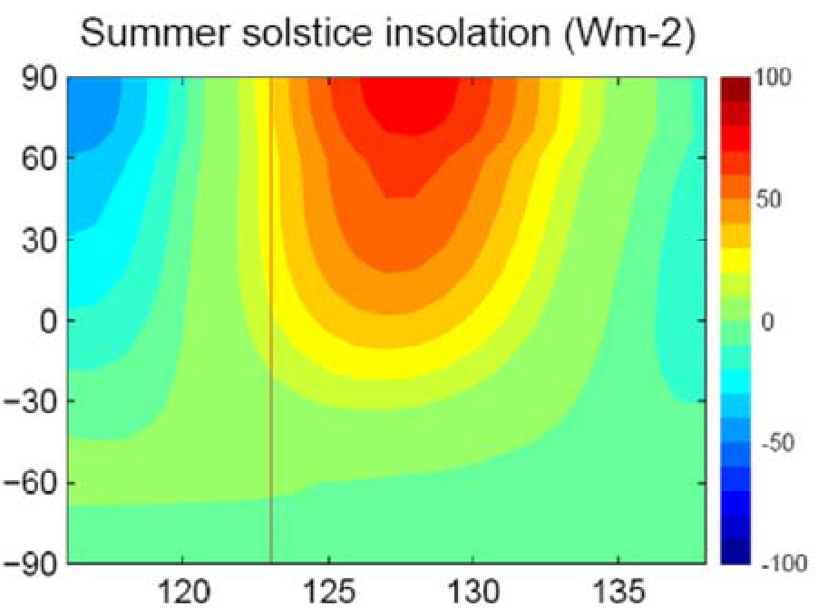
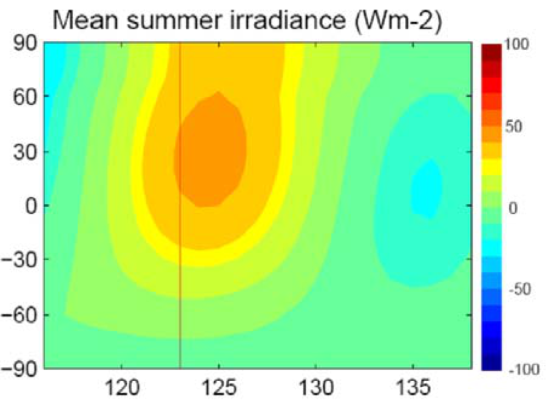
该模拟将作为其他 PMIP LIG（末次间冰期）模拟的参照基准：末次间冰期内的其他时间切片（距今 125、122 ky BP），以及覆盖整个间冰期的瞬变模拟。
This simulation will constitute a reference for additional PMIP LIG simulations: other time slices within the last interglacial (125, 122 ky BP), transient simulations for the whole interglacial.
这也将是与 ISMIP6 协调、检验与极地冰盖模式耦合的 AOGCM 的目标时段。
This will also be a target period for testing AOGCMs coupled with polar ice-sheet models, in coordination with ISMIP6.
上新世温暖期（Pliocene warmth）
Pliocene warmth
时间切片平衡态气候试验：修改 CO2（至 400 ppmv）、地形与冰盖范围，并使用动态植被运行。
Time slice equilibrium climate experiment modifying CO2 (to 400 ppmv), topography, ice sheet extent and running with dynamic vegetation.
由 PlioMIP 试验 2（Haywood 等，GMD，4，571-577，2011）更新而来。
Updated from PlioMIP experiment 2 (Haywood et al, GMD, 4, 571-577, 2011).
所提议的 PMIP-CMIP6 试验即 PlioMIP 2 网站上的“标准试验”，其边界条件总结于下表中。
The proposed PMIP-CMIP6 experiment is the “standard experiment” on the PlioMIP 2 site, with boundary conditions summarized in the following table.
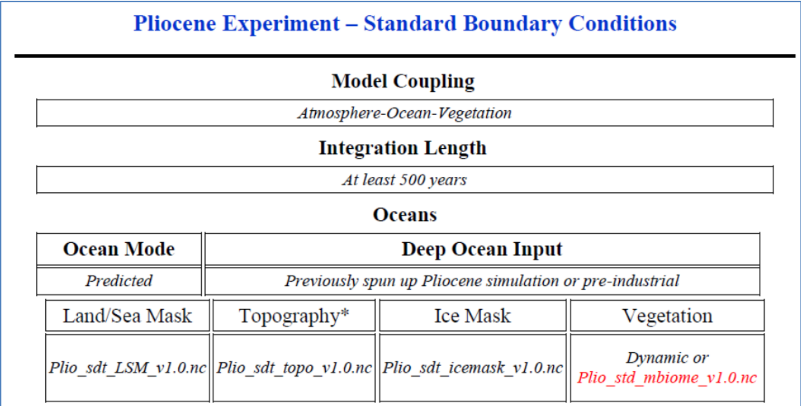
与其他拟议的 CMIP6 试验一样，该上新世试验是 PMIP 内由 PlioMIP 工作组协调的一系列试验的基础。
As for the other proposed CMIP6 experiments, this Pliocene experiment is the basis for a full range of experiments coordinated within PMIP by the PlioMIP working group.
特别是，将研究结果对日射、冰盖构型及其他边界条件的敏感性。
In particular, the sensitivity of the results to insolation, ice sheet configuration and other boundary conditions will be investigated.
希望参与这些计划的模式小组建议访问 PlioMIP2 网站：http://geology.er.usgs.gov/egpsc/prism/7.2_pliomip2_data.html。
Modelling groups wishing to take part in these plans are advised to visit the PlioMIP2 web site: http://geology.er.usgs.gov/egpsc/prism/7.2_pliomip2_data.html.
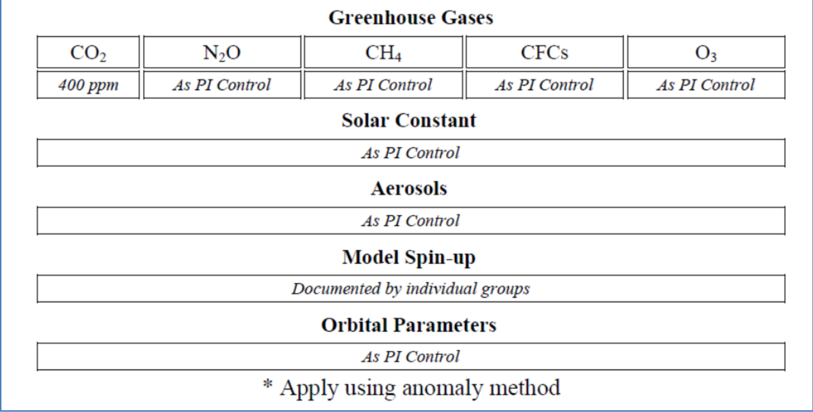
PMIP 试验所针对的科学问题和/或空白
Science question and/or gap addressed with the PMIP experiments
参见引言与汇总 Excel 表。
Cf. introduction and summary excel table.
新的分析重点将是：
New foci for analyses will be:
强迫变化与内部变率，将工业历史时期的气候变化置于背景之中
Forced vs. internal variability, putting in context climate changes in the industrial historical period
云/环流：WCRP“利用过去记录”大挑战计划（http://www.wcrp-climate.org/index.php/gc-clouds-circulation-activities/gc4-cloudsinitiatives/116-gc-clouds-inititative4）
Clouds/Circulation: WCRP Grand challenge Initiative on Leveraging the past record (http://www.wcrp-climate.org/index.php/gc-clouds-circulation-activities/gc4-cloudsinitiatives/116-gc-clouds-inititative4)
自然强迫下冰冻圈反馈的分析（过去千年的瞬变模拟使近期变化——例如北极海冰——置于透视之中；冰盖与气候之间的耦合（lgm、末次间冰期、上新世））
Analyses of cryospheric feedbacks under natural forcings (transient simulations over the last millennium put in perspective the recent changes e.g. in Arctic Sea ice, coupling between ice-sheets and climate (lgm, lastInterglacial, Pliocene)
区域气候与年代际预测：
Regional climate and decadal predictions:
改进对年代际至百年际变率的评估，作为近期预测潜力的载体（past1000、中全新世、lgm）。
Improved assessment of decadal to centennial variability as carrier of near-term prediction potential (past1000, midHolocene, lgm).
对自然强迫响应的区域评估，及其与变率模态和遥相关的相互作用（所有试验）
Regional assessment of response to natural forcing and interaction with variability modes and teleconnections (all experiments)
自然强迫（如火山）下极端事件的评估。
Assessment of extremes under natural forcing, e.g. volcanoes.
干旱的自然变化及其与古气候重建的联系（past1000）。
Natural variations in droughts in connection with paleo-reconstructions (past1000).
大干旱机制的分析（中全新世）。→ 与“极端事件”和“水资源可得性”大挑战计划相关联。
Analyses of mechanisms of mega-droughts (midHolocene). → link with Grand challenges on extremes and on water availability.
与其他 MIP 的可能协同
Possible synergies with other MIPs
PMIP 模拟可在以下主题上与其他 MIP 互动：
PMIP simulations can serve to interact with other MIPs on the following themes:
CF-MIP（云反馈）：在 aquaplanet（水行星）设置下开展专门的通用理想化敏感性试验：SST 减 4 K 的 AMIP 模拟、abrupt0.5xCO2、太阳扰动突增试验，由 CF-MIP 与 PMIP 联合分析。
CF-MIP (cloud feedbacks): dedicated common idealized sensitivity experiments to be run in aquaplanet set up: AMIP simulations with SSTs minus 4K, abrupt0.5xCO2, abrupt solar perturbation experiments, to be co-analysed in CF-MIP and PMIP.
冰盖（ISMIP6）：评估与大冰盖相关的气候-冰冻圈相互作用和海平面变化。
ICE SHEETS (ISMIP6): Assessment of the climate and cryosphere interactions and the sea level changes associated with large ice sheets.
特别是，末次间冰期模拟将用于强迫 ISMIP6 中的冰盖模式。
In particular, the Last Interglacial simulations will be used to force ice sheet models in ISMIP6.
预计在 CMIP6 框架之外，还有 PMIP 与 ISMIP 小组联合设计的其他试验：瞬变间冰期试验（气候模式输出强迫冰盖模式）以及气候-冰盖耦合试验。
Additional experiments co-designed by the PMIP and ISMIP groups are foreseen outside the CMIP6 exercise: transient interglacial experiments, with climate model output forcing an ice sheet model, and coupled climate-ice sheet experiments.
海洋/海冰：共同评估海洋在低频变率（例如海洋热含量或热输送的多年代际变化）中的作用。
OCEAN/SEA_ICE: Mutual assessment of the role of the ocean in low-frequency variability, e.g. multi-decadal changes in ocean heat content or heat transport.
为海洋提供包含长期强迫历史的初始条件。
Provide initial conditions for the ocean including long-term forcing history.
碳循环（C4MIP）：评估碳循环演变及地球系统各子分量之间的反馈。
CARBON CYCLE (C4MIP): Assessment of carbon-cycle evolution and feedbacks between sub-components of the Earth System.
评估碳储存的古气候重建。
Evaluation of paleo reconstructions of carbon storage.
土地利用：应加强联系，以便更好地将 past1000 与历史模拟衔接起来。
LAND USE: Links should be reinforced for better connecting past1000 to historical simulations.
对于 past1000 模拟的分析，无论在生物物理还是碳循环方面都很有用。
Useful for analysis of past1000 simulations, for biophysical as well as carbon cycle aspects.
VolMIP（火山强迫）：对特定火山事件的分析对于 past1000 模拟的批判性分析非常有用。
VolMIP (volcanic forcing): analysis of specific volcanic events very useful for critical analysis of past1000 simulations.
VolMIP 将系统地评估气候对火山强迫响应中的不确定性，而 LM 模拟则在长时间瞬变模拟中描述气候对火山强迫的响应，其中相关不确定性来自所选用的火山强迫输入数据：二者共同评估强迫响应。
VolMIP would systematically assess uncertainties in the climate response to volcanic forcing, whereas LM simulations describe the climate response to volcanic forcing in long transient simulations where related uncertainties are due to chosen input data for volcanic forcing: mutual assessment of forced response.
SOLARMIP：与 VolMIP 兴趣相似，预计将在 past1000 试验分析方面开展互动。
SOLARMIP: similar interests as for VolMIP, interactions are foreseen for the analysis of the past1000 experiments.
检测/归因：长尺度千年模拟对该主题非常有用。
DETECTION/ATTRIBUTION: long millennium simulations can be very useful for this topic.
试验的潜在益处
Potential benefits of the experiments
试验对以下方面的潜在益处
Potential benefits of the experiments to
(A) 气候模拟界
(A) climate modeling community
改进对强迫响应以及强迫变化与内部变率的评估
Improved assessment of forced response and forced vs. internal variability
增进对自然强迫响应中哪些过程最为重要的认识（例如 past1000 试验中由太阳辐射变化引起的臭氧变化）
Improved knowledge on which processes are important in the forced response to natural forcing (e.g. ozone changes owing to solar radiation changes for the past1000 experiment)
(B) 综合评估模拟（IAM）界，
(B) Integrated Assessment Modelling (IAM) community,
(C) 影响、适应与脆弱性（IAV）界
(C) Impacts Adaptation and Vulnerability (IAV) community
所有试验：
All experiments:
识别不同气候条件下生态系统与水资源可得性的阈值
Identification of thresholds for ecosystems and water availability under different climate conditions
改进对自然变率（包括前工业化边界条件下的极端事件）的评估。
Improved assessment of natural variability including extreme events under preindustrial boundary conditions.
识别在自然强迫下，变化（原文如此：changes 重复）会导致特定脆弱性（如区域海平面）的区域
Identification of regions where, under natural forcing, changes, changes lead to specific vulnerability (e.g. regional sea-level)
，以及 (D) 政策制定者。
, and (D) policy makers.
量化一系列过去气候变化的幅度与速度，并与自然变率以及近期和未来的气候趋势相比较。
Quantification of magnitude and speed of a range of past climatic changes compared to the natural variability and recent and future climatic trends.
这些变化对水资源可得性与生态系统的影响。
Impact of these changes on water availability and ecosystems.
拟议试验的优先级排序
Prioritization of the proposed experiments
如有可能，请对建议的试验进行优先级排序，并说明理由**
If possible, a prioritization of the suggested experiments, including any rationale**
每项拟议的 CMIP6 PMIP 试验都可独立运行，因为它们聚焦于不同的时间段。
Each proposed PMIP experiment for CMIP6 can be run independently, because they focus on different time periods.
中全新世与 lgm 试验自 PMIP 创立以来就是其重点，可以评估自 PMIP1 首个纯大气 GCM 以来的新模式版本。
The midHolocene and lgm experiments have been the focus of PMIP since its start and allow for an evaluation of new model versions since the first atmosphere-only GCMs in PMIP1.
因此，我们要求将这两项模拟之一作为参加 PMIP-CMIP6 试验的入场券。
We therefore require one of these two simulations to be performed as an entry card to PMIP-CMIP6 experiments.
为 CMIP6 提议的全部五项 PMIP 试验具有同等优先级，每项试验都是 PMIP 内一组敏感性试验的核心。
All five PMIP experiments proposed for CMIP6 have equal priority, each experiment being the core of a set of sensitivity experiments to be run within PMIP.
PMIP 试验相对于 CMIP6 的组织结构见下图。
The organization of the PMIP experiments w.r.t CMIP6 is given in the figure below.
补充试验将由每个 PMIP 工作组（http://pmip3.lsce.ipsl.fr/groups.shtml）设计，并邀请各模式小组在此框架内加入对这些试验的讨论。
The complementary experiments will be designed by each PMIP working group (http://pmip3.lsce.ipsl.fr/groups.shtml) and modelling groups are invited to join the discussions on these experiments in this framework.
模式输出
Model output
由 CMIP6 认可 MIP 归档的全部模式输出，预计将与 CMIP 输出按相同条款开放获取。
All model output archived by CMIP6-Endorsed MIPs is expected to be made available under the same terms as CMIP output.
大多数模式小组目前以不受限制使用的方式发布其 CMIP 数据。
Most modeling groups currently release their CMIP data for unrestricted use.
如果您反对开放获取您试验的输出，请说明理由。**
If you object to open access to the output from your experiments, please explain the rationale.**
PMIP（全部试验）：无异议
PMIP (all experiments): no objections
CMIP DECK/CMIP6 数据需求的输出与过程诊断列表**
List of output and process diagnostics for the CMIP DECK/CMIP6 data request**
该变量应为全部 CMIP6 试验收集，还是仅为其指定的某个子集收集；输出是需要每个试验的全时段，还是某个或某些较短时段；
whether the variable should be collected for all CMIP6 experiments, or only some specified subset and whether the output is needed from the entire length of each experiment or some shorter period or periods;
PMIP（全部试验）：与 historical/scenario 相同的 CMOR 变量集合（但鉴于试验长度，缩减高频输出集合），部分模拟使用 COSP 模拟器（部分年份）
PMIP (all experiments): same set of CMOR variables as historical/scenario (but reduced set of high-frequency output given the length of experiment), some simulations with COSP simulator (subset of years)
输出是否仅在交互式使用某些分量或诊断工具（如交互式碳循环或大气化学，或仅当安装了 COSP 模拟器）时才具有相关性；
whether the output might only be relevant if certain components or diagnostic tools are used interactively (e.g. interactive carbon cycle or atmospheric chemistry, or only if the COSP simulator has been installed);
PMIP 全部试验：ESM 所需诊断（即 ESM 全部分量 + 强迫 + 反馈分析）+ 示踪物与同位素（列表待讨论，初稿随变量列表一同发出）
PMIP all-experiments: diagnostics needed for ESM (i.e all components of the ESM + forcings + feedback analyses) + tracers and isotopes (lists to be discussed, first draft sent along with variable lists)
该变量是否对下游用户（如影响研究人员、WG2 用户）有意义，或者其主要目的是用于理解和分析气候系统本身。
whether this variable is of interest to downstream users (such as impacts researchers, WG2 users) or whether its principal purpose is for understanding and analysis of the climate system itself.
请尽可能具体地说明为什么需要该变量。
Be as specific as possible in identifying why the variable is needed.
PMIP 全部时期：用于驱动区域气候模式、冰盖模式（ISMIP）或生态模式（陆面变量）或沙尘模式的变量子集。
PMIP all periods: subset of variables for driving regional climate models, ice-sheet models (ISMIP) or ecological models (land surface variables) or dust models.
PMIP past1000 与中全新世：用于研究极端事件或变率的变量子集
PMIP past1000 and midHolocene: subset of variables for investigating extreme events or variability
变量是否可以重新插值到统一网格，还是这样做会损失某些关键信息；
whether the variables can be regridded to a common grid, or whether there is essential information that would be compromised by doing this;
PMIP：与 historical/scenario 的 CMOR 变量相同；
PMIP: same as for CMOR variables from historical/scenario;
如果数据需求很大，则须给出所请求各变量的相对重要性（以层级化列表表示）。
the relative importance of the various variables requested (indicated by a tiered listing) is required if the data request is large.
所需变量及其优先级的列表已另行发送。
The list of required variables and their priority has been sent separately.
另见先前的 PMIP 需求（CMIP5 或 PMIP3 ESGF）：与 historical/scenario 相同的 CMOR 变量集合（鉴于试验长度，可能缩减高频输出集合）
See also previous PMIP requests (CMIP5 or PMIP3 ESGF): same set of CMOR variables as historical/scenario (possibly reduced set of high-frequency output owing to length of experiment)
任何拟议的、相对 CMIP5 在 NetCDF 元数据（受控词汇表）、文件名及数据档案（ESGF）检索词方面的变更。**
Any proposed changes from CMIP5 in NetCDF metadata (controlled vocabularies), file names, and data archive (ESGF) search terms.**
需与所有 MIP 讨论的事项（原文如此：Needs to discussed）
Needs to discussed with all MIPs
说明 CF、CMOR 和/或 ESGF 中所需的任何拟议变更（相对 CMIP5）。**
Explanation of any proposed changes (relative to CMIP5) that will be required in CF, CMOR, and/or ESGF.**
PMIP 受益于 ESGF 上的两个条目：通过 CMIP5 项目获取 PMIP3-CMIP5 试验，或通过 PMIP3 项目获取其他 PMIP3 试验或未参加 CMIP5 的小组的试验。
PMIP benefits from two entries on ESGF: via the CMIP5 Project for PMIP3-CMIP5 experiments or the PMIP3 project for other PMIP3 experiments or for groups which do not take part in CMIP5.
如能像现在这样，在同一个系统上仍可检索两个（乃至多个 MIP 的）数据库，将非常方便。
It would be very convenient to still be able to search through both (or indeed multi-MIP) data bases on the same system, as can be done now.
拟议的模式诊断与评估贡献
Proposed contributions for model diagnostics and evaluation
针对以下方面拟议的任何贡献与建议**
Any proposed contributions and recommendations for**
用于模式评估的模式诊断与性能指标；
model diagnostics and performance metrics for model evaluation;
past1000：使用为 DECK historical/scenario 模拟定义的诊断。
past1000: use diagnostics that have been defined for DECK historical/scenario simulations.
除了半球温度平均等积分量之外，past1000 试验还将越来越多地针对环流型、极端事件等进行分析。
In addition to integrated quantities such as hemispheric temperature averages, past1000 experiments will increasingly be analysed w.r.t. circulation regimes, extreme events etc.
中全新世、lgm：已为基准检验开发了 PMIP 专门诊断。
midHolocene, lgm: PMIP specific diagnostics have been developed for benchmarking.
有一个专门工作组负责这一主题。参见 Harrison 等（2014），Climate Dynamics，43，671–688
A working group is dedicated to this topic. cf. Harrison et al (2014), Climate Dynamics, 43, 671–688
可用于评估拟议试验的观测/再分析数据产品。
observations/reanalysis data products that could be used to evaluate the proposed experiments.
说明这些产品是否可在 obs4MIPs/ana4MIPs 数据库中获得，或是否有计划将其纳入；
Indicate whether these are available in the obs4MIPs/ana4MIPs database or if there are plans to include them;
past1000 模拟将受益于将观测资料扩展至 19 世纪初。
past1000 simulations will benefit from observations to be extended to the early 19th century.
past1000 模拟将与古气候重建进行比对和联合分析，尤其是通过 Paleodata 数据库提供的日益增长的 PAGES2K 重建集合。
past1000 simulations will be compared, mutually analysed with paleo reconstructions, most importantly the growing set of PAGES2K reconstructions that are available through Paleodata data bases.
中全新世与 lgm 的 PMIP 数据综合（http://pmip3.lsce.ipsl.fr/synth/）
PMIP data syntheses for midHolocene and lgm (http://pmip3.lsce.ipsl.fr/synth/)
将提供新的综合资料，用于表征全新世期间的高分辨率变率（paleoVar PMIP 工作组）
new syntheses will be available for characterizing high resolution variability during the Holocene (paleoVar PMIP working group)
以开源语言（如 python、NCL、R）编写的用于模式基准检验与评估的工具、代码或脚本。
tools, code or scripts for model benchmarking and evaluation in open source languages (e.g., python, NCL, R).
PMIP 内部正在讨论通用分析脚本。
Common analyses scripts are being discussed within PMIP.
对于 past1000：在 PMIP Past2K 工作组框架内，已开发高级统计分析与评估工具（如 Bothe 等，2013；Moberg 等，2014）。
For past1000: in the framework of the PMIP working group Past2K advanced statistical analyses and evaluation tools have been developed (e.g. Bothe et al., 2013; Moberg et al., 2014).
各模式小组的参与意向
Expression of interest from modelling groups
截至 2014 年 11 月 28 日，PMIP 已收到 9 个模式小组对末次间冰期试验、10 个模式小组对中全新世、lgm 和 past1000 试验、以及 11 个模式小组对上新世暖期试验的参与意向。
On Nov 28th 2014, PMIP has received the expression of interest from 9 modelling groups for the lastInterglacial experiment, 10 modelling groups for the midHolocene, lgm and past1000 experiments and 11 modelling groups for the Pliocene Warm Period experiment.
计划中的出版物
Planned publications
PMIP-CMIP6 协议将发表于拟在 GMD 开设的 CMIP6 专刊与 PMIP 专刊。
The PMIP-CMIP6 protocols will be published in the CMIP6 and PMIP special issues to be opened in GMD.
我们还计划与参与模式小组的联系人共同撰写“首批结果论文”，发表于 GMD 或 Climate of the Past。
We also plan “first results papers” co-authoring contacts of the participating modelling groups, either in GMD or in Climate of the Past.
附录：2015 年 6 月发给全体 PMIP 参与者的邮件
Appendix: message sent to all PMIP participants in June 2015
各位同仁：
Dear all,
PMIP 的 CMIP6 提案已获 CMIP 专家组认可。
The PMIP proposal for CMIP6 has been endorsed by the CMIP panel.
您可在 PMIP 网站上找到 PMIP/CMIP6 文档（总体介绍见 https://wiki.lsce.ipsl.fr/pmip3/doku.php/pmip3:cmip6:design:index，提案本身见 https://wiki.lsce.ipsl.fr/pmip3/lib/exe/fetch.php/pmip3:cmip6:design:cmip6endorsedmips_pmip.pdf）。
You can find the PMIP/CMIP6 document on the PMIP website (https://wiki.lsce.ipsl.fr/pmip3/doku.php/pmip3:cmip6:design:index for the general presentation and https://wiki.lsce.ipsl.fr/pmip3/lib/exe/fetch.php/pmip3:cmip6:design:cmip6endorsedmips_pmip.pdf for the proposal itself).
借此，我们承诺：
By doing this we committed:
- 在 GMD 的 CMIP6 专刊上发表一篇关于 PMIP 实验设计的论文，
-to a paper on the experimental design of PMIP in the CMIP6 special issue of GMD,
- 与为 PMIP 做出贡献的模式小组联合署名一篇论文来报告我们的结果。
-to report our results by co-authoring a paper jointly with the modelling groups who contribute to PMIP.
本邮件旨在介绍 PMIP 本年度的计划。
This email is to provide some information on PMIP plans for the year.
我们既要满足 CMIP 的要求，也要确保 PMIP 整体活动得到充分宣传并为学界所理解。
We have both to fulfill the CMIP requirements and to make sure PMIP activity as a whole is well advertised and understood by the community.
首先，PMIP 参与者必须为各试验的边界条件定义做出贡献。
First of all, it is important that PMIP participants contribute to the definition of the boundary conditions for the different experiments.
请在 PMIP wiki（https://wiki.lsce.ipsl.fr/pmip3/doku.php/pmip3:cmip6:design:index）上发表您的意见。
Please post your comments on the PMIP wiki (https://wiki.lsce.ipsl.fr/pmip3/doku.php/pmip3:cmip6:design:index).
您将看到针对不同试验的专门页面。
You will find dedicated pages for the different experiments.
我们还需要在试验之间做一些交叉核对，并确定一些细节。
We still have some cross checking to do between experiments and to fix some of the details.
- PMIP 对 CMIP6 GMD 专刊的贡献
- PMIP contribution to CMIP6 GMD special issue
计划发表一篇 GMD 论文（由 Masa Kageyama 牵头，其协调了 PMIP 对 CMIP6 的响应）。
A GMD paper is planned (led by Masa Kageyama, who coordinated the PMIP response to CMIP6).
这篇论文将从目标与协议两方面描述 PMIP/CMIP6 试验。
This manuscript will describe the PMIP/CMIP6 experiments in terms of objectives and protocol.
该论文的提交截止日期为 2015 年 12 月。
The deadline for submission of this paper is December 2015.
第二篇论文（协调作者待定）将记录每个模式小组如何落实协议并开展试验，并展示模拟的初步结果。
A second paper (coordinating author not identified yet) will document how each modeling groups has implemented the protocol and performed the experiments, and present preliminary results of the simulations.
这篇论文将涵盖所有做出贡献的模式小组，以表彰那些选择开展古气候模拟的模式小组。
This paper will involve all the contributing modeling groups, in order to give credit to the modeling groups who have elected to run the palaeo-simulations.
我们计划于 2016 年年中前提交这篇论文，并将联系相关人员索取信息与输出。
We plan to submit this paper by mid-2016, and will be contacting people for information and outputs.
- PMIP GMD 专刊
- PMIP GMD special issue
与 CMIP6 重点并行，我们将开设一期 PMIP GMD 专刊，作为发表介绍每个 PMIP 时期及相应试验（PMIP MIP）论文的载体。
In parallel to the CMIP6 focus, we will open a PMIP GMD special issue as a vehicle for publishing manuscripts presenting each PMIP period and corresponding experiments (PMIP MIPs).
我们预计这些 PMIP 描述性论文将于 2016 年底前定稿。
We anticipate that these PMIP description papers will be finalized by the end of 2016.
对于每个 PMIP MIP（PMIP 时期），论文将讨论试验的目标与边界条件、描述参照模拟、讨论需要敏感性试验的主要不确定性，并概述任何其他协调性或敏感性试验。
For each PMIP MIP (PMIP period) the manuscript will discuss the objectives of the experiments and the boundary conditions, describe the reference simulations, discuss major uncertainties requiring sensitivity experiments, and outline any other coordinated or sensitivity experiments.
计划是每篇论文由该 MIP 的协调人牵头；所有 MIP 参与者都将获邀为论文撰稿。
The plan is for each manuscript to be led by the coordinators of the MIP; all participants in the MIPs will be invited to contribute to the manuscript.
边界条件定义的贡献者也将被列为共同作者。
The contributors to the definition of the boundary conditions will also be included as co-authors.
PMIP 有不同类型的工作组，一些按 MIP 组织，另一些则更偏向分析。
PMIP has working groups of different types, some organized as MIP and others more oriented towards analyses.
分析类工作组也获邀为 GMD 专刊做出承诺，突出它们希望解决的关键科学问题与方法论问题。
Analytical working groups are also invited to commit to the GMD special issue highlighting the key questions they would like to address and the methodological questions.
现已为每个工作组开设了 wiki 页面，并邀请 PMIP 参与者贡献和/或牵头开展部分分析。
A wiki page has now been opened for each of the working groups and PMIP participants are invited to contribute and/or lead some of the analyses.
数据综合对于数据-模式比对和模式评估是必需的，无论是对于 CMIP6/PMIP 模拟还是其他 PMIP 模拟。
Data syntheses are required for data-model comparisons and model evaluation, both for the CMIP6/PMIP simulations and for the other PMIP simulations.
“基准检验”（benchmarking）工作组将确定正在开展哪些重要数据综合工作，以及还需要哪些额外努力。
The “benchmarking” working group will identify what major data syntheses are being undertaken and what additional efforts are required.
我们计划为 GMD CMIP6 专刊撰写一篇论文（由 Sandy Harrison 与 Patrick Bartlein 协调），记录五个 CMIP6/PMIP 时期数据的可得性，并讨论各数据集在年代模型处理、质量控制与不确定性方面的共性与差异。
We plan to produce a paper for the GMD CMIP6 special issue (coordinated by Sandy Harrison and Patrick Bartlein) that will document the availability of data for the five CMIP6/PMIP time periods and discuss communalities and differences between the data sets in the treatment of age models, quality control and uncertainties.
凡从事这些时期数据综合工作的人员均获邀为这篇论文撰稿，第一步是通过“基准检验”wiki 页面确定数据贡献。
Everybody who is working on data syntheses for these time periods is invited to contribute to this paper, with the first step being to identify data contributions visa the “benchmarking” wiki page.
第二步，将有一篇类似的论文（协调人待定），针对更广泛的、拟纳入 PMIP 专刊的 PMIP 试验集合的数据综合。
As a second step, there will be a similar paper (coordinator to be identified) on data syntheses for the wider set of PMIP experiments designed to go into the PMIP special issue.
因此，我们面前有大量工作要做。
So, there is quite a lot of work in front of us.
我希望这将促进 PMIP 内部的大量互动。
I hope it will foster lots of interactions within PMIP.
Pascale，代表 PMIP 协调组
Pascale, for PMIP coordination
Pascale Braconnot <pascale.braconnot@lsce.ipsl.fr>（署名与邮箱，保留原文）
Pascale Braconnot <pascale.braconnot@lsce.ipsl.fr>
IPSL/LSCE，CEA-CNRS-UVSQ 联合研究单位（原文：unité mixte CEA-CNRS-UVSQ）
IPSL/LSCE, unité mixte CEA-CNRS-UVSQ
RFMIP (Radiative Forcing MIP) ｜ 辐射强迫模式比较计划
MIP 名称*
Name of MIP*
辐射强迫模式比较计划（RFMIP）
Radiative Forcing Model Intercomparison Project (RFMIP)
MIP 联合主席（含电子邮件地址）*
Co-chairs of MIP (including email-addresses)*
Robert Pincus，美国科罗拉多大学；Robert.Pincus@colorado.edu
Robert Pincus, University of Colorado, US; Robert.Pincus@colorado.edu
Piers Forster，英国利兹大学；P.M.Forster@leeds.ac.uk
Piers Forster, University of Leeds, UK; P.M.Forster@leeds.ac.uk
Bjorn Stevens，德国马克斯·普朗克气象研究所；Bjorn.Stevens@mpimet.mpg.de
Bjorn Stevens, Max Planck Institue for Meteorology, Germany; Bjorn.Stevens@mpimet.mpg.de
科学指导委员会成员*
Members of the Scientific Steering Committee*
Viktor Brovkin，德国马克斯·普朗克气象研究所（代表 LUMIP）
Viktor Brovkin, Max Planck Institute for Meteorology, Germany (representing LUMIP)
Gunnar Myhre，挪威 CICERO（代表 AerChemMIP）
Gunnar Myhre, CICERO, Norway (representing AerChemMIP)
Hideo Shiogama，日本国立环境研究所（代表 DAMIP）
Hideo Shiogama, National Institute for Environmental Studies, Japan (representing DAMIP)
Karl Taylor，美国气候模式诊断与比较计划（一般性专长）
Karl Taylor, Program for Climate Model Diagnosis and Intercomparison, US (general expertise)
Jean-Louis Dufresne，法国 LMD/IPSL（代表 IPSL）
Jean-Louis Dufresne, LMD/IPSL, France (representing IPSL)
James Manners，英国气象局（代表 UKMO）
James Manners, UK Met Office, UK (representing UKMO)
Miho Sekiguchi，日本东京海洋大学（代表 MIROC）
Miho Sekiguchi, Tokyo University of Marine Science and Technology, Japan (representing MIROC)
网站链接（如有）*
Link to website (if available)*
http://www.wcrp-climate.org/modelling-wgcm-mip-catalogue/modelling-wgcm-mips/418-wgcm-rfmip，但该页面已过时
http://www.wcrp-climate.org/modelling-wgcm-mip-catalogue/modelling-wgcm-mips/418-wgcm-rfmip, though this is out of date
MIP 的目标与简要概述*
Goal of the MIP and a brief overview*
RFMIP 旨在理解各模式所受的辐射强迫。
RFMIP aims to understand the radiative forcing to which models are subject.
本项目将通过把每个模式中温室气体和气溶胶的瞬时辐射强迫计算结果与覆盖现今、过去和未来气候代表性状态范围的参考计算进行比较，来评估其准确性。
The project will assess the accuracy of instantaneous radiative forcing calculations for greenhouse gases and aerosols in each model by comparing these to reference calculations across a range of states representative of present-day, past, and future climates.
我们将通过征集并分析为此目的设计的匹配模拟，仔细诊断有效辐射强迫的多样性在多大程度上源于快速调整、瞬时辐射强迫和气候背景态的变化，从而提高每个模式以及每个 DECK 或其他实验的有效辐射强迫的已知准确度和空间细节。
We will increase the accuracy and spatial detail with which effective radiative forcing is known for each model and for each DECK or other experiment by requesting and analyzing matching simulations designed for this purpose, carefully diagnosing the degree to which the diversity in effective radiative forcing is due to variations in rapid adjustments, instantaneous radiative forcing and climatological base state.
我们将通过征集历史至近未来的模拟来形成闭环，在这些模拟中人为气溶胶的光学属性和云活性属性受到严格控制，从而让我们能够确定观测到的历史记录中哪些方面始终一致地显现，因而可归因于气溶胶强迫。
We will close the circle by requesting historical-to-near-future simulations in which anthropogenic aerosol optical and cloud-active properties are tightly controlled, allowing us to determine which aspects of the observed historical record consistently emerge and so can be attributed to aerosol forcing.
本项目与 CMIP6 标准的契合如下：
The project is aligned with CMIP6 criteria as follows:
本 MIP 至少回应 CMIP6 的一个关键科学问题
The MIP addresses at least one of the key science questions of CMIP6
CMIP6 的指导性问题之一聚焦于模式对强迫的响应；若无法精确量化强迫，就无法回答这一问题。
One of the guiding questions for CMIP6 centers on models' response to forcing; it is not possible to answer this question without the ability to quantify the forcing precisely.
RFMIP 对"响应强迫"这一问题至关重要，并且与另外两个 CMIP 问题也相关。
RFMIP is central to the question of response to forcing and relevant for the other two CMIP questions.
准确诊断 CMIP 模式中的强迫及其误差，是理解各模式响应在模拟之间的离散度、以及（例如）理解任何可能的模式偏差的关键。
Accurate diagnosis of forcing and its errors in CMIP models is key to understanding the spread of models response across simulations and, for example, understanding any possible model bias.
解释预估结果同样需要理解模式所受的强迫，而理解辐射传输处理在多大程度上引入误差，是评估模式偏差的一个关键来源的核心。
Interpreting projections also requires an understanding of the forcings to which models are subject and understanding the degree to which the treatment of radiative transfer introduces errors is central to evaluating a key source of model biases.
本 MIP 在实验设计、数据格式和文档方面遵循 CMIP 标准
The MIP follows CMIP standards in terms of experimental design, data format and documentation
计算有效辐射强迫的模式积分请求遵循传统的 CMIP 协议。
Model integration requests for calculations of effective radiative forcing follow traditional CMIP protocols.
具有给定气溶胶属性的积分可能需要对现有模式进行少量代码修改，但大体上将遵循一个已经由多个建模中心通过 Easy Aerosol 项目（http://www.wcrp-climate.org/index.php/gc-clouds-circulationactivities/gc4-clouds-initiatives/368-gc-clouds-inititative3-easy-aerosol）实现并测试过的协议。
Integrations with prescribed aerosol properties may require small code changes to existing models but will largely follow a protocol that has been already implemented and tested by a number of modeling centers through the Easy Aerosol project (http://www.wcrp-climate.org/index.php/gc-clouds-circulationactivities/gc4-clouds-initiatives/368-gc-clouds-inititative3-easy-aerosol).
用于评估气溶胶光学属性的数据请求不同寻常之处在于，它请求在少数几个快照时刻的、光谱分辨率详尽的信息，但除此之外只是一个简单的诊断信息请求。
The data request for the assessment of aerosol optical properties is unusual in requesting spectrally-detailed information at a few snapshots, but otherwise is a simple request for diagnostic information.
离线辐射传输计算的请求将建立在"站点"基础设施之上。
Requests for offline radiative transfer calculations will build on the "site" infrastructure.
参考逐线计算将由 RFMIP 执行，按 CMIP 约定格式化，并通过 ESG 提供给参与的建模中心。
Reference line-by-line calculations will be performed by RFMIP, formatted to comply with CMIP conventions, and made available to participating modelling centres on the ESG.
已有足够数量的建模小组同意参加本 MIP
A sufficient number of modeling groups have agreed to participate in the MIP
这些请求是通过初步的电子邮件讨论和一次专门的研讨会（2014 年 9 月，汉堡）制定出来的。
These requests were developed through preliminary email discussions and a dedicated workshop (Hamburg, Sept, 2014).
已向气候建模小组（HadGEM、GFDL、CCCM、CanESM、ECHAM、IPSL、NorESM、MIROC）、AeroCom/AerChemMIP 以及辐射强迫界征集了意见。
Input has been solicited from climate modeling groups (HadGEM, GFDL, CCCM, CanESM, ECHAM, IPSL, NorESM, MIROC), AeroCom/AerChemMIP, and the radiative forcing community.
RFMIP 的后两个阶段是在与 EC-Earth 和 CNRM 群体的磋商下制定的。
The second two phases of RFMIP have been developed in consultation with the EC-Earth and CNRM communities.
与 CMIP 专家组进行了多轮互动。
There have been several rounds of interactions with the CMIP panel.
十一个建模小组已同意执行全部层级 1（Tier 1）的 RFMIP 计算。
Eleven modeling groups have agreed perform all Tier 1 RFMIP calculations.
本 MIP 建立在共享的 CMIP DECK 实验之上
The MIP builds on the shared CMIP DECK experiments
本项目将精确量化 4xCO2 和历史积分中的强迫；通过揭示辐射传输中的误差，它可能会减小强迫的离散度，并且将按设计缩小一组实验的强迫离散度。
The project will precisely quantify forcing in 4xCO2 and historical integrations, It may lead to decreased spread in forcing by uncovering errors in radiative transfer and will, by design, narrow the spread in forcing for one set of experiments.
承诺参与制定 CMIP6 数据请求并分析数据
A commitment to contribute to the creation of the CMIP6 data request and to analyze the data
数据请求已提供并经过完善。
Data requests have been provided and refined.
美国能源部已资助两位协调人（Pincus、Forster）开展部分分析工作。
The US DoE has funded two of the coordinators (Pincus, Forster) to perform part of the analyses.
同一提案将支持参考辐射传输计算（Mlawer、Collins、Ramaswamy）。
The same proposal will support reference radiative transfer calculations (Mlawer, Collins, Ramaswamy).
已有若干小组承诺参与分析（CICERO/UiO、Leeds、UKMO、GFDL、Colorado、Berkley、PCMDI、MPI、LMD/CNRS、GISS）。
Several groups have committed to the analyses (CICERO/UiO, Leeds, UKMO, GFDL, Colorado, Berkley, PCMDI, MPI, LMD/CNRS, GISS).
承诺确定模式评估和改进过程理解所需的观测，并直接或间接地为将这类数据集作为 obs4MIPs 的一部分提供出来作出贡献
A commitment to identify observations needed for model evaluation and improved process understanding, and to contribute directly or indirectly to making such datasets available as part of obs4MIPs
逐线模式的参考计算相当于辐射强迫领域的观测，因为它们已经过充分校准、光谱细节详尽的观测的广泛检验。
Reference calculations by line-by-line models are the radiative forcing equivalent of observations because they have been extensively tested against well-calibrated, spectrally detailed observations.
这些参考计算将在 ESG 上提供，以便各模式能够对其辐射传输进行持续的检验。
These reference calculations will be made available on the ESG so models can run ongoing tests on their radiative transfer.
晴空通量观测将为 RFMIP 的给定气溶胶试验约束辐射强迫，且已通过 ESG 分发。
Observations of clear-sky flux will constrain radiative forcing for the prescribed aerosol runs of RFMIP and are already distributed through the ESG.
所提议的实验对 CMIP6 具有核心重要性
The proposed experiment is of central importance to CMIP6
若不量化强迫，学界将无法理解模式响应的离散度。
Without quantifying forcings the community will not be able to understand the spread of model responses.
所提议的实验至少已由两个建模小组运行过
The proposed experiment has been run at least by two modeling groups already
CMIP5 中有九个建模小组执行了固定 SST 模拟。
Fixed SST simulations were performed by nine modeling groups in CMIP5.
Easy Aerosol 方法已由八个建模中心（MPI、UKMO、CAM、NCAR、GFDL、IPSL、CICERO）测试。
The Easy Aerosol methodology has been tested by eight modeling centers (MPI, UKMO, CAM, NCAR, GFDL, IPSL, CICERO).
一项在 4xCO2 条件下使用离线计算评估辐射参数化准确性的试点工作吸引了 6 个 GCM 代码（约代表 16 个建模中心）和 2 个参考代码。
A pilot assessment of radiative parameterization accuracy using offline calculations under 4xCO2 conditions attracted 6 GCM codes (representing roughly 16 modeling centers) and 2 reference codes.
RFMIP 与该原型仅在于规模不同。
RFMIP differs from this prototype only in scale.
所提议的实验在多模式背景下对众多气候研究者都有用处。
The proposed experiment is useful in a multi-model context and to a number of climate researchers.
我们的重点在于理解响应的多模式离散度，尤其是其中有多大程度源于强迫的离散、而非敏感度的离散。
Our focus is on understanding the multi-model spread in response, especially the degree to which this is due to spread in forcing as opposed to spread in sensitivity.
这按定义对于确定系统性偏差的来源至关重要。
This is by definition essential for establishing origins of systematic biases.
我们期望非常广泛的研究群体能充分利用我们请求的数据和我们所做的参考计算。
We expect a very wide community to take full advantage of the data we request and the reference calculations we make.
我们获得了其他提议中的 MIP（例如 AerChemMIP、LUMIP、PDRMIP、VolMIP、ScenarioMIP）的支持。
We have support from other proposed MIPs (e.g. AerChemMIP, LUMIP, PDRMIP, VolMIP, ScenarioMIP).
承诺对所提议的实验进行科学分析、评估和利用。
A commitment to scientifically analyze, evaluate and exploit the proposed experiment.
项目负责人及其团队是 CMIP 及相关模式结果的非常活跃的发表者。
The PIs and their groups are very active publishers of CMIP and related model results.
我们期望本项目的成果能对经过同行评议的文献作出重要贡献。
We expect the results of the project to make important contributions to the refereed literature.
参考文献（如有）*
References (if available)*
〔边界说明：以下为参考文献条目，按规则保留原文、不作翻译〕
Shindell, D. T., and Coauthors, 2013: Radiative forcing in the ACCMIP historical and future climate simulations. Atmos. Chem. Phys, 13, 2939–2974, doi:10.5194/acp-13-2939-2013.
〔边界说明：参考文献条目，保留原文〕
Forster, P. M., T. Andrews, P. Good, J. M. Gregory, L. S. Jackson, and M. Zelinka, 2013: Evaluating adjusted forcing and model spread for historical and future scenarios in the CMIP5 generation of climate models. J. Geophys. Res, 118, 1139–1150, doi:10.1002/jgrd.50174.
〔边界说明：参考文献条目，保留原文〕
Stevens, B, 2015: Rethinking the lower bound on aerosol radiative forcing. J. Climate, doi: 10.1175/JCLI-D-14-00656.1
〔边界说明：参考文献条目，保留原文〕
Pincus, R., and coauthors, 2015: Radiative flux and forcing parameterization error in aerosol-free clear skies, Geophys. Res. Lett.. doi:10.1002/2015GL064291.
所提议实验的概述*
An overview of the proposed experiments*
RFMIP-IRF-AER：我们将请求关于气溶胶和地表在垂直方向和光谱上分辨的光学属性的详细诊断信息，以及关于大气物理和化学状态的详细信息，用于现今和工业革命前条件下的快照。
RFMIP-IRF-AER: We will request detailed diagnostic information on the vertically- and spectrally-resolved optical properties of aerosols and the surface, along with detailed information about atmospheric physical and chemical state, for snapshots at present-day and pre-industrial conditions.
这些信息将与对晴空瞬时辐射强迫的模式计算的请求相配对。
These will be paired with requests for model computations of clear-sky instantaneous radiative forcing.
这将使载荷与光学属性之间关系的多样性得以量化，并提供准确性评估所需的数据。
These will allow the diversity in relationships between burden and optical properties to be quantified and will provide data required for accuracy assessments.
RFMIP-IRF-GHG：我们将请求用与模式在线版本完全相同的离线辐射传输模式，计算垂直分辨的宽波段积分长波和短波通量，
RFMIP-IRF-GHG: We will request calculations of vertically-resolved broadband-integrated longwave and shortwave fluxes made with off-line radiative transfer models identical to the model's online
使用指定的多个廓线的大气状态（温度和湿度分布）和地表属性。
version, using specified atmospheric states (distribution of temperature and humidity) and surface properties over many profiles.
一系列这样的计算将评估各种条件下气体辐射传输近似的准确性。
A series of such calculations will assess the accuracy of radiative transfer approximations for gases under various conditions.
RFMIP-ERF：我们将请求一系列 30 年非耦合（仅大气+陆面）模拟，其中海表温度和海冰浓度取自该模式工业革命前的 AOGCM 控制模拟。
RFMIP-ERF: We will request a series of 30-year uncoupled (atmosphere+land only) simulations with prescribed sea-surface temperatures and sea-ice concentrations from the preindustrial AOGCM control simulation of the model.
每个模拟都与 DECK 或其他某个 MIP 的现有模拟相匹配，从而能够准确诊断该实验的有效辐射强迫。
Each simulation is matched to an existing simulation from the DECK or some other MIP and will enable the accurate diagnosis of effective radiative forcing for this experiment.
直接辐射强迫和快速调整可以用新开发的核方法进行分析。
Direct radiative forcing and rapid adjustments can be analyzed using newly developed kernel methodologies.
固定海表温度的更长积分，与所提议的 DAMIP AOGCM 历史模拟和 RCP8.5 模拟配对，将使我们能够计算瞬态辐射强迫。
Longer runs with fixed sea-surface temperature, paired with the proposed DAMIP AOGCM historical and RCP8.5 simulations, will allow us to calculate transient radiative forcings.
RFMIP-Historical：我们将请求 1850 年至 2020 年"历史+情景"耦合模拟的小型集合，其中光谱相关的人为气溶胶光学属性和云相互作用被直接给定。
RFMIP-Historical: We will request small ensembles of "historical+scenario" coupled runs from 1850 to 2020 in which spectrally-dependent anthropogenic aerosol optical properties and cloud interactions are directly prescribed.
请求的模拟有三种类型：包含全部强迫的历史模拟、仅含自然强迫的历史模拟（此处将使用 DAMIP 模拟），以及（优先级较低）仅含非温室气体强迫的历史模拟。
Three types of simulations are being requested: historical simulations with all forcings, historical simulations with only natural forcings (here the DAMIP simulations will be used) and, at lower priority, historical simulations with only non-GHG forcing.
随时间变化、具有空间型态的给定值将基于模式与观测混合的气候态。
The time-dependent spatially-patterned prescription will be based on a hybrid model-observation climatology.
这种方法已在 MPI-ESM 中开发并实现。
Such an approach has already been developed and implemented within the MPI-ESM.
一个非平稳性因子将用于考虑逐日变化。
A non-stationarity factor will account for day-to-day variations.
这些模拟将用于评估在气溶胶直接和间接效应受约束的集合中，历史时期的哪些方面稳健地显现出来。
These simulations will be used to assess which aspects of the historical period emerge robustly from ensembles in which aerosol direct and indirect effects are constrained.
对 CMIP DECK 和 CMIP6 实验的拟议评估/分析概述*
An overview of the proposed evaluation/analysis of the CMIP DECK and CMIP6 experiments*
我们不会孤立地对 DECK 或其他实验进行直接分析。
We will perform no direct analysis of DECK or other experiments in isolation.
辐射参数化准确性评估（RFMIP-GHG、RFMIP-AER）适用于大多数 DECK 实验，尤其适用于 AMIP、耦合历史模拟和 4xCO2 实验。
The assessment of radiative parameterization accuracy (RFMIP-GHG, RFMIP-AER) is applicable to most DECK experiments, but especially the AMIP, coupled historical, and 4xCO2 experiments.
30 年固定 SST/海冰模拟（RFMIP-ERF）将使我们能够为 DECK 的耦合历史模拟和 4xCO2 实验，以及检测与归因 MIP（人为、均匀混合温室气体、气溶胶+臭氧、自然）和土地利用 MIP（土地利用）所请求的模拟，确定有效辐射强迫、快速调整和直接辐射强迫的准确区域变化。
Thirty year fixed SST/sea-ice simulations (RFMIP-ERF) will allow us to determine accurate regional variations of effective radiative forcing, rapid adjustments and direct radiative forcing for the DECK's coupled historical, and 4xCO2 experiments, and for simulations requested by the Detection and Attribution MIP (anthropogenic, well-mixed greenhouse gases, aerosols+ozone, natural) and Land Use MIP (land use).
具有给定人为气溶胶光学属性的模拟（RFMIP-Historical）将为 DECK 中已有的历史耦合模拟提供有益的补充，并将补充检测与归因 MIP 下的活动。
Simulations with prescribed anthropogenic aerosol optical properties (RFMIP-Historical) will provide a useful complement to historical coupled simulations present in the DECK and will complement activities under the Detection and Attribution MIP.
它们将用于检验这样一个假设：强于 -1 W/m2 的现今气溶胶强迫与 1950 年之前的温度记录不相容。
They will be used to evaluate the hypothesis that a present day aerosol forcing stronger than -1 W/m2 is incompatible with the temperature record prior to 1950.
拟议时间安排*
Proposed timing*
诊断有效辐射强迫所需的模拟请求（包括所需的诊断场规格说明）现已提供。
Requests for simulations required to diagnose effective radiative forcing, including specification of the diagnostic fields are required, are available now.
气溶胶诊断输出的详细请求（CMOR 表）正在定稿中。
Detailed requests (CMOR tables) for aerosol diagnostic outputs are being finalized.
离线辐射计算的大气规格说明将在 2015 年底前提供。
Atmospheric specifications for off-line radiation calculations will be available by the end of 2015.
用于指定气溶胶模拟的气溶胶光学属性给定值将在 2015 年底前提供。
Prescriptions of aerosol optical properties to be used in specified-aerosol simulations will be available by the end of 2015.
对于拟纳入 CMIP6 的每个提议实验**
For each proposed experiment to be included in CMIP6**
实验设计；
the experimental design;
该实验所针对的科学问题和/或空白；
the science question and/or gap being addressed with this experiment;
与其他 MIP 可能的协同效应；
possible synergies with other MIPs;
实验对 (A) 气候建模群体、(B) 综合评估建模（IAM）群体、(C) 影响适应与脆弱性（IAV）群体以及 (D) 政策制定者的潜在益处。
potential benefits of the experiment to (A) climate modeling community, (B) Integrated Assessment Modelling (IAM) community, (C) Impacts Adaptation and Vulnerability (IAV) community, and (D) policy makers.
如有可能，给出建议实验的优先级排序，包括任何理由**
If possible, a prioritization of the suggested experiments, including any rationale**
RFMIP-IRF-AER 的气溶胶诊断请求
Aerosol diagnostic requests for RFMIP-IRF-AER
这些请求将能够完整刻画造成气溶胶直接辐射强迫多样性的气溶胶属性多样性。
These requests will allow for complete characterization of the diversity in aerosol properties that contribute to the diversity in aerosol direct radiative forcing.
它们还将为评估项目下一阶段辐射传输误差所需的气溶胶光学属性采样提供基础。
They will also provide the basis for the sampling of aerosol optical properties needed to assess radiative transfer errors in the project's next stage.
层级 1
TIER 1
这些请求不同寻常之处在于，它们要求在少数几个瞬间提供三维场，并要求光谱细节。
These requests are unusual in that they require three-dimensional fields at a few instants, and that the spectral detail is requested.
模式网格（包括光谱网格）上的气溶胶光学属性快照（光学厚度、单次散射反照率、不对称参数），以及地表条件（光谱反照率、温度）、大气顶日射，以及温度、气压和水汽含量或相对湿度场。
Snapshots of aerosol optical properties (optical thickness, single-scattering albedo, asymmetry parameter) on the model grid (including the spectral grid), along with surface conditions (spectral albedo, temperature), top-of-atmosphere insolation, and fields of temperature, pressure, and water vapor content or relative humidity.
1. 现今（2015）
1. Present-day (2015)
2. 工业革命前（1850）
2. Pre-industrial (1850)
RFMIP-IRF-GHG 的离线辐射传输计算
Offline radiative transfer calculations for RFMIP-IRF-GHG
离线辐射传输计算旨在确定辐射传输误差在多大程度上造成瞬时辐射强迫估计的多样性，以及该误差如何依赖于大气背景状态和强迫本身。
Offline radiative transfer calculations are intended to identify the degree to which errors in radiative transfer contribute to diversity in estimates of instantaneous radiative forcing, and how this error depends on the background state of the atmosphere and on the forcing itself.
这些计算需要基础设施投入（创建或改造一个可追溯到在线版本的离线辐射传输代码），但计算负担非常小。
These calculations require an investment in infrastructure (the creation or adaptation of an off-line radiative transfer code traceable to the on-line version) but are a very small computational burden.
层级 1
TIER 1
这些计算为现今（PD，2015）和工业革命前（PI，1850）条件、用于评估平衡气候敏感度的强迫（4xCO2），以及用于评估快速调整的条件（PD+4K）提供基线误差估计。
These calculations provide baseline error estimates at present-day (PD, 2015) and pre-industrial (PI, 1850) conditions, for the forcing used to assess equilibrium climate sensitivity (4xCO2) and under conditions used to assess rapid adjustments (PD+4K).
我们请求对一组指定大气条件进行以下晴空计算。
We request the following clear sky calculations for a set of prescribed atmospheric conditions.
1. PD 温室气体浓度配 PD 大气（无气溶胶）
1. PD greenhouse gas concentrations with PD atmospheres (aerosol-free)
2. PI 温室气体浓度配 PD 大气（无气溶胶）
2. PI greenhouse gas concentrations with PD atmospheres (aerosol-free)
3. 4 倍 PI CO2，其他气体为 PD 浓度，配 PD 大气（无气溶胶）
3. 4 x PI CO2, other gases at PD concentrations, in PD atmospheres (aerosol-free)
4. PD+4K 条件下的 PD 温室气体浓度，假设相对湿度恒定，并使用垂直位移变换将地表增暖映射到大气结构（无气溶胶）
4. PD greenhouse gas concentrations in PD+4K conditions, assuming constant relative humidity and using a vertical shift transform to map surface warming to atmospheric structure (aerosol-free)
5. "未来"：结合 CO2、温度和湿度的同步增加（无气溶胶）
5. "Future" combining simultaneous increases in CO2, temperature, and humidity (aerosol free)
层级 2a
TIER 2a
这些计算探究 CO2 强迫在一系列浓度下的准确性，这些浓度涵盖与过去数值（与 PMIP 的末次盛冰期计算相关）及未来浓度相关的范围。
These calculations explore the accuracy of CO2 forcing across a range of concentrations relevant to past values (relevant for Last Glacial Maximum calculations for PMIP) and future concentrations.
所有计算均使用无气溶胶、晴空的 PD 大气条件，CO2 浓度取自 {0.25, 0.5, 2, 3, 8} 倍 PI 值。
All use aerosol-free clear-sky PD atmospheric conditions with CO2 concentrations drawn from {0.25, 0.5, 2, 3, 8} times the PI value.
层级 2b
TIER 2b
这些计算探究由不同均匀混合温室气体导致的辐射强迫估计误差。
These calculations explore the error in radiative forcing estimates from different well-mixed greenhouse gases.
计算针对无气溶胶的晴空条件，使用 PD 大气，温室气体浓度中将一种（或全部）设为其 PI 值：
Calculations are for aerosol-free clear-sky conditions using PD atmospheres and greenhouse gas concentrations with one (or all) set to its PI value:
1. CH4
1. CH4
2. N2O
2. N2O
3. CO
3. CO
4. HC
4. HC
5. O3
5. O3
6. 全部
6. All
诊断 RFMIP-ERF 有效辐射强迫的模式积分
Model integrations to diagnose effective radiative forcing for RFMIP-ERF
模式积分请求旨在使基于排放的框架和给定浓度的框架都能给出一致的辐射强迫；我们建议 CMIP6 在所有 MIP 中统一采用这一计算辐射强迫的方法，并建议其他 MIP 尽可能与 RFMIP 挂钩。
Model integration requests are designed to give consistent radiative forcings in both emission-based and prescribed-concentration frameworks and we recommend that CMIP6 standardizes to this methodology for computing radiative forcings across all MIPs and that other MIPs link to RFMIP as far as possible.
RFMIP 专注于理解从工业革命前（PI，1850）到现今（PD，2015）的强迫变化。
RFMIP concentrates on understanding forcing changes from preindustrial (PI, 1850) to present day (PD, 2015).
时间切片实验的协议是单个 30 年非耦合模拟，其中海表温度（SST）和海冰分布被指定，植被可以相互作用。
The protocol for time-slice experiments is a single 30-year uncoupled simulation in which sea surface temperature (SST) and sea ice distributions are specified and vegetation may interact.
除非另有说明，海冰和人为强迫因子均按 PI 值指定。
Sea ice and anthropogenic forcing agents are specified at PI values unless noted.
对该方法的检验表明，30 年积分可将大范围的区域强迫型态约束到优于 0.1 Wm-2。
Tests of this method demonstrate that 30-year integrations constrain broad regional patterns of forcing to better than 0.1 Wm-2.
层级 1
TIER 1
这些积分将使我们能够量化现今的辐射强迫。
These integrations will allow us to quantify the radiative forcing at present day.
我们请求以下积分：
We request the following integrations:
a) 30 年 PI 控制模拟，使用来自 PI AOGCM 控制积分的月平均固定 SST 和海冰气候态。
a) 30 year PI control with monthly averaged fixed SST and sea-ice climatology from the PI AOGCM control integration.
用作所有其他积分的对照。
To be used as control for all other integrations
b) 同 a)，加 4xCO2
b) As a) with 4xCO2
c) 同 a)，加 PD 人为强迫因子
c) As a) with PD ANTHROPOGENIC forcers
d) 同 a)，加 PD 均匀混合温室气体（在基于排放的模式中加间接效应）
d) As a) with PD WMGHGs (+indirect effects in emission based models)
e) 同 a)，加 PD 气溶胶和臭氧（与 AerChemMIP 的额外强迫估计挂钩）
e) As a) with PD AEROSOLS and OZONE (linking to additional forcing estimates from AerChemMIP)
f) 同 a)，加 PD 土地利用（地表反照率/粗糙度、蒸腾）。
改变植被，但将温室气体浓度固定在工业革命前水平。
（与 LUMIP 挂钩）
f) As a) with PD LAND USE (surface albedo/roughness, transpiration).
Change vegetation but fix GHG concentrations and preindustrial levels.
(linking to LUMIP)
层级 1
TIER 1
层级 2a
TIER2a
气溶胶云相互作用的非线性对于理解历史强迫演变尤为重要（Carslaw et al., 2013）。
Non-linearity of aerosol cloud interactions are particularly important for understanding historical forcing evolution (Carslaw et al., 2013).
这两个实验旨在在模式之间量化这一点。
These two experiments are designed to quantify this across the models.
g) 同 a)，加 0.1 倍的 PD 气溶胶和臭氧
g) As a) with PD AEROSOLS and OZONE x 0.1
h) 同 a)，加 2.0 倍的 PD 气溶胶和臭氧
h) As a) with PD AEROSOLS and OZONE x 2.0
层级 2b
TIER2b
现今以外时期的强迫对于理解历史和未来变化的某些方面非常重要。
Forcings at periods other than present are important for understanding aspects of historical and future change.
不同的应用很可能需要不同的时间切片。
Different applications will likely require different time-slices.
用层级 1 的时间切片方法评估瞬态的火山和太阳强迫也很困难。
It is also difficult to evaluate transitory volcanic and solar forcing using a time-slice methodology of Tier 1.
因此我们提议评估整个 1850-2100 时期的强迫，重点是层级 1 未评估的自然强迫。
Therefore we propose to evaluate forcings over the full 1850-2100 period, concentrating on natural forcings not evaluated in Tier 1.
CMIP5 模式的瞬态强迫依赖一种粗略的两步残差法来诊断全球平均 ERF 估计（Forster and Taylor, 2006; Forster et al., 2013）。
Transient forcings from CMIP5 models relied on a crude two-step residual method to diagnose globally averaged ERF estimates (Forster and Taylor, 2006; Forster et al., 2013).
该方法假设基于 CO2 的气候敏感度适用于所有情景，并且该方法因噪声而存在显著误差。
This method assumed that a CO2-based climate sensitivity was applicable across scenarios and the method had significant errors due to noise.
两步法是 CMIP6 的一种可能备选方案。
The two-step method is a possible fall-back for CMIP6.
两步法可以通过使用固定 SST 和海冰（PD ctrl）的瞬态气候模式积分加以改进。
The two-step method can be improved on by using transient climate model integrations with fixed SST and sea ice (PD ctrl).
HadGEM2 的初步工作表明，用这种方法需要三个集合成员才能将全球强迫的年际变化约束到优于 0.1 Wm-2。
Preliminary work with HadGEM2 indicates that three ensemble members with this method would be needed to constrain interannual variation on global forcing to better than 0.1 Wm-2.
需要进一步的工作来核实不同集合规模的数量准确性。
Further work is needed to verify the number of accuracy of different ensemble sizes.
我们将请求 1850-2100 年固定 SST 和海冰气候积分（包括交互式植被）的小型集合。
We will request small ensembles of 1850-2100 fixed SST and sea ice climate integrations (including interactive vegetation).
这些请求与 DAMIP AOGCM 的请求相匹配，从而形成强迫与响应积分成对一致，最大化科学收益。
These requests are matches of DAMIP AOGCM requests to have pairs of consistent forcing and response integrations, maximizing the science benefit.
i) 历史 + RCP8.5（全强迫积分），强迫加在 a) 的 PI 控制之上
i) Historical + RCP8.5 (all forcing integration) with forcings added to PI control from a)
j) 自然（太阳和火山）强迫加在 a) 之上，仅到 2015 年
j) Natural (solar and volcanoes) forcings added to a), only to 2015
k) 气溶胶（及其间接效应）加在 a) 之上，
k) Aerosols (and their indirect effects) added to a),
l) 均匀混合温室气体变化加在 a) 之上
l) WMGHG changes added to a)
层级 3
TIER 3
瞬态均匀混合温室气体强迫很可能可以从层级 1 的结果中推断出来。
Transient WMGHG forcing can likely be inferred from tier 1 results.
不过，DAMIP 提议了一个瞬态 AOGCM 均匀混合温室气体试验，在少数几个模式中检验其强迫是有益的。
However, a transient AOGCM WMGHG run is proposed by DAMIP and it is useful to check its forcing in a few models.
RFMIP-Historical 的指定气溶胶属性模式积分
Model integrations with specified aerosol properties for RFMIP-Historical
此处我们请求气溶胶光学属性（包括云-辐射相互作用）被给定的积分。
Here we request integrations in which aerosol optical properties including cloud-radiation interactions are prescribed.
该给定值预期是一个单一的可解析描述的空间型态，具有时间恒定的光谱变化（建立在 Easy Aerosols 经验之上）和随时间变化的强度。
The prescription is expected to be a single analytically-described spatial pattern with time-constant spectral variation (building on the Easy Aerosols experience) and time-varying strength.
我们的目标是确定在人为气溶胶辐射强迫受到严格约束的集合中，历史记录的哪些方面稳健地显现出来。
Our goal is to determine which aspects of the historical record robustly emerge from ensembles in which the radiative forcing by anthropogenic aerosols is tightly constrained.
RFMIP 的核心目标之一是确保所有模式使用共同的气溶胶光学属性给定值。
One of the central aims of RFMIP it to ensure that all models use a common prescription of aerosol optical properties.
过去曾有一种想法，即可以使用基于浓度的气溶胶属性给定值，例如取自基于排放的气溶胶模式的集合平均。
In the past there has been the idea that one could use a concentration based aerosol prescription of aerosol properties derived, for instance, from the ensemble average of emission based aerosol models.
这一策略有若干缺点，曾在以往几轮 CMIP 中导致令人困惑的不一致：
This strategy has several drawbacks that have led to confusing inconsistencies in previous iterations of CMIP:
(1) AerChemMIP 的实验设计雄心很大，以致多模式平均的气候态强迫要很晚才能获得，而且将没有机会对其进行彻底评估。
(1) AerChemMIP has an ambitious experimental design so that climatological forcing from the multi-model mean will only become available very late and there will not be a chance to thoroughly evaluate it.
(2) AerChemMIP 各模式对气溶胶的描述高度异质，因此多模式平均意味着对不同子集合取不同的平均。
(2) The AerChemMIP models have a very heterogeneous description of the aerosol so a multi-model mean implies different averages over different sub-ensembles.
由于不同子集合中变化的气溶胶组分之间存在相关性，这种做法是不可靠的（即，含硝酸盐的模式通常硫酸盐强迫较小，因为这些物种相互关联）。
This is unsound because of correlations in varying aerosol components in the different sub-ensembles (i.e., models with nitrate usually have smaller sulfate forcing because these species are linked).
(3) 基于浓度的做法的数据量很大。
(3) The data volumes for a concentration-based are large.
过去的经验表明，将它们插值到不同的模式网格容易出错。
Past experience has shown that interpolating them to the different model grids is error prone.
(4) 由基于排放的模式导出的强迫场与当前对气溶胶分布的理解不一致。
(4) The forcing fields derived from the emission-based models are inconsistent with present understanding of the aerosol distribution.
打个比方来说，这就好比用基于排放的模式得到的 CO2 浓度的多模式平均来驱动历史模拟，而不是将 CO2 浓度与我们现今和过去记录的理解相挂钩。
To put this in context it would be like forcing the historical simulations with the multi-model mean of the CO2 concentrations from the emission based models rather than tying the CO2 concentrations to our understanding of the present and past record.
基于这些理由，我们认为 AerChemMIP 专注于"理解排放如何影响浓度以及不同模式预测的浓度所对应的辐射强迫"这一重要问题；但是，对于旨在探索历史记录并满足 DAMIP 的模拟，CMIP 专家组应建议建模中心使用 RFMIP 的气溶胶给定值。
For these reasons we see AerChemMIP as focusing on the important problem of our understanding of how emissions effect concentrations and the radiative forcing associated with the concentrations predicted by different models but that, for simulations designed to explore the historical record and to satisfy DAMIP, the CMIP panel should recommend that modeling centers use the RFMIP prescription of aerosols.
我们乐于与排放界和 AerChemMIP 合作，将拟议用于 CMIP 的气溶胶气候态扩展到未来，这对执行 Scenario 试验或近期预估的模式会有用处。
We are happy to work with the emissions community and AerChemMIP to extend the aerosol climatology proposed for use in CMIP to the future, which would be useful for models performing the Scenario runs or near term projections.
我们与 HighResMIP 保持密切联系；他们非常有兴趣使用 RFMIP 的气溶胶给定值，特别是考虑到第 (1) 点和第 (3) 点。
We are in close contact with HighResMIP; they are very interested in using the RFMIP prescription of the aerosol particularly in light of points (1) and (3).
层级 1
TIER 1
1850-2020 年耦合模拟的 4 成员集合（合并历史时期和 RCP 8.5 或 2015-2020 年温室气体的适当情景），包含包括指定气溶胶在内的所有强迫。
A 4-member ensemble of coupled simulations from 1850-2020 (merging the historical period and RCP 8.5 or an appropriate scenario for GHGs for the 2015-2020 period) with all forcings including specified aerosols.
层级 2
TIER 2
一组用于检测和归因实验的 4 个集合
A set of 4-ensembles to be used in detection and attribution experiments
1. Hist-Nat，1850-2020（与 DAMIP 联合）
1. Hist-Nat, 1850-2020 (joint with DAMIP)
2. Hist-Aer，1850-2020（含给定气溶胶）
2. Hist-Aer 1850-2020 (with prescribed aerosol)
3. 对应的指定 SST ERF 试验（见第 III 部分）用于诊断气溶胶强迫
3. Corresponding prescribed SST ERF runs (see part III) to diagnose aerosol forcing
层级 3
TIER 3
1. AMIP，1980-2020（含给定气溶胶）
1. AMIP, 1980-2020 (with prescribed aerosol)
2. 单个 AMIP，1980-2020，向观测风场松弛（含给定气溶胶）
2. Single AMIP, 1980-2020, nudged to observed winds (with prescribed aerosol)
CMIP6-Endorsed MIP 归档的所有模式输出预期将按照与 CMIP 输出相同的条款提供。
All model output archived by CMIP6-Endorsed MIPs is expected to be made available under the same terms as CMIP output.
大多数建模小组目前无条件开放其 CMIP 数据供使用。
Most modeling groups currently release their CMIP data for unrestricted use.
如果您反对开放访问您的实验输出，请说明理由。**
If you object to open access to the output from your experiments, please explain the rationale.**
CMIP DECK/CMIP6 数据请求的输出和过程诊断清单**
List of output and process diagnostics for the CMIP DECK/CMIP6 data request**
该变量是否应为所有 CMIP6 实验收集，还是仅为某个指定子集收集；以及所需输出是来自每个实验的整个时长，还是某个或某些较短时段；
whether the variable should be collected for all CMIP6 experiments, or only some specified subset and whether the output is needed from the entire length of each experiment or some shorter period or periods;
该输出是否仅在使用某些组件或诊断工具进行交互时（例如交互式碳循环或大气化学，或仅在安装了 COSP 模拟器时）才相关；
whether the output might only be relevant if certain components or diagnostic tools are used interactively (e.g. interactive carbon cycle or atmospheric chemistry, or only if the COSP simulator has been installed);
该变量是否对下游用户（如影响研究者、WG2 用户）有意义，还是其主要目的是理解和分析气候系统本身。
whether this variable is of interest to downstream users (such as impacts researchers, WG2 users) or whether its principal purpose is for understanding and analysis of the climate system itself.
请尽可能具体地说明为什么需要该变量。
Be as specific as possible in identifying why the variable is needed.
这些变量是否可以重格到统一网格，还是这样做会损害某些基本信息；
whether the variables can be regridded to a common grid, or whether there is essential information that would be compromised by doing this;
如果数据请求很大，则需要（以分层列表的形式）标明所请求各变量的相对重要性。
the relative importance of the various variables requested (indicated by a tiered listing) is required if the data request is large.
任何拟议的贡献和建议**
Any proposed contributions and recommendations for**
用于模式评估的模式诊断和性能指标；
model diagnostics and performance metrics for model evaluation;
可用于评估所提议实验的观测/再分析数据产品。请说明这些产品是否可在 obs4MIPs/ana4MIPs 数据库中获得，或是否有将其纳入的计划；
observations/reanalysis data products that could be used to evaluate the proposed experiments. Indicate whether these are available in the obs4MIPs/ana4MIPs database or if there are plans to include them;
用于模式基准测试和评估的开源语言（如 python、NCL、R）工具、代码或脚本。
tools, code or scripts for model benchmarking and evaluation in open source languages (e.g., python, NCL, R).
NetCDF 元数据（受控词汇表）、文件名和数据归档（ESGF）检索词方面相对于 CMIP5 的任何拟议变更。**
Any proposed changes from CMIP5 in NetCDF metadata (controlled vocabularies), file names, and data archive (ESGF) search terms.**
气溶胶诊断将需要增加一个依赖模式的光谱维度，并增加大约十个描述气溶胶、地表属性和大气顶太阳日射的光谱相关特征的变量。
Aerosol diagnostics will require the addition of a model-dependent spectral dimension and the addition of roughly ten variables describing the spectrally-dependent characteristics of aerosols, surface properties, and top-of-atmosphere solar insolation.
这些已在数据请求中描述。
These are described in the data request.
CF、CMOR 和/或 ESGF 中所需任何拟议变更（相对于 CMIP5）的说明。**
Explanation of any proposed changes (relative to CMIP5) that will be required in CF, CMOR, and/or ESGF.**
据我们所知，没有。
None as far as we are aware.
ScenarioMIP (Scenario MIP) ｜ 情景模式比较计划（上）
情景模式比较计划（ScenarioMIP）
Scenario Model Intercomparison Project (ScenarioMIP)
CMIP6 认可模式比较计划（MIP）申请
Application for CMIP6-Endorsed MIPs
日期：2015 年 6 月 18 日
Date: 18 June 2015
各 MIP 提交的提案应包含以下信息：
Proposals from MIPs should include the following information:
* 用于确定某一 MIP 是否应获 CMIP6 认可的初步信息。
* preliminary information that will be used to determine whether a MIP should be endorsed for CMIP6 or not.
** 必须在之后提供（且在专家组能够确定哪些实验（如有）将被纳入官方 CMIP6 套件之前提供）的信息。
** information that must be provided later (and before the panel can determine which experiments, if any, will be incorporated in the official CMIP6 suite).
MIP 名称*：ScenarioMIP
Name of MIP* ScenarioMIP
MIP 联合主席（含电子邮箱）*：Brian O’Neill (boneill@ucar.edu)、Claudia Tebaldi (tebaldi@ucar.edu)、Detlef van Vuuren (detlef.vanvuuren@pbl.nl)
Co-chairs of MIP (including email-addresses)* Brian O’Neill (boneill@ucar.edu), Claudia Tebaldi (tebaldi@ucar.edu), Detlef van Vuuren (detlef.vanvuuren@pbl.nl)
科学指导委员会成员*：Veronika Eyring（德国 DLR）、Pierre Friedlingstein（英国埃克塞特大学）；George Hurtt（美国马里兰大学）；Reto Knutti（瑞士苏黎世联邦理工学院）；Jean-Francois Lamarque（美国 NCAR）；Jason Lowe（英国气象局）；Jerry Meehl（美国 NCAR）；Richard Moss（美国全球变化联合研究所）；Ben Sanderson（美国 NCAR）
Members of the Scientific Steering Committee* Veronika Eyring (DLR, Germany), Pierre Friedlingstein (U of Exeter, UK); George Hurtt (U of Maryland, USA); Reto Knutti (ETH, Switzerland); Jean-Francois Lamarque (NCAR, USA); Jason Lowe (MetOffice, UK); Jerry Meehl (NCAR, USA); Richard Moss (Joint Global Change Research Institute, USA); Ben Sanderson (NCAR, USA)
网站链接（如有）*：https://www2.cgd.ucar.edu/research/mips/scenario-mip（网址保留原文）
Link to website (if available)* https://www2.cgd.ucar.edu/research/mips/scenario-mip
MIP 目标与简要概述*：总体目标
Goal of the MIP and a brief overview* Overall objectives
ScenarioMIP 的目标是基于不同的合理¹未来情景模拟未来气候结果，以便：
The goal of ScenarioMIP is to simulate future climate outcomes based on alternative plausible1 future scenarios in order to:
（1）促进综合研究，从而不仅更好地理解这些情景对物理气候系统造成的后果，而且更好地理解其对社会的气候影响，包括对减缓与适应的考量。
(1) Facilitate integrated research leading to a better understanding not only of the physical climate system consequences of these scenarios, but also of the climate impact on societies, including considerations of mitigation and adaptation.
ScenarioMIP 实验的结果将为合理的未来情景提供新的气候信息，从而促进跨越多个群体的综合研究，包括（1）气候科学、（2）综合评估建模（IAM）与减缓、以及（3）影响、适应与脆弱性（IAV）群体。
The results of the ScenarioMIP experiments will provide new climate information for plausible future scenarios that will facilitate integrated research across multiple communities including the (1) climate science, (2) integrated assessment modeling (IAM) and mitigation, and (3) impacts, adaptation and vulnerability (IAV) communities.
（2）为解决关于与基于情景的研究相关的强迫特定方面之气候效应的针对性科学问题提供基础，例如：关于土地利用与近期气候强迫因子（NTCF，如对流层气溶胶、臭氧和甲烷）的不同假设对气候变化及其影响的作用。
(2) Provide a basis for addressing targeted science questions regarding the climate effects of particular aspects of forcing relevant to scenario-based research, e.g., the effect of different assumptions on land use and near-term climate forcers (NTCFs), such as tropospheric aerosols, ozone and methane, on climate change and its impacts.
¹ 我们将“合理”狭义地定义为：在模式中可行实现、且已在同行评议文献中作为旨在被视为合理未来的情景发表的结果（区别于敏感性分析、思想实验或对未来的其他刻画方式）。
1 We define plausible in a narrow sense as outcomes feasible to achieve in a model and published in the peer reviewed literature as scenarios intended to be considered as plausible futures (as opposed to sensitivity analyses, thought experiments, or other characterizations of the future).
（3）为各类旨在改进基于多模式集合量化预估不确定性的方法的国际工作提供基础，同时考虑模式性能、模式依赖性与观测不确定性（这拓展了源自 DECK 实验和 CMIP6 历史模拟的知识基础，并允许在不同时间尺度上量化不确定性）。
(3) Provide a basis for various international efforts that target improved methods to quantify projection uncertainties based on multi-model ensembles, taking into account model performance, model dependence and observational uncertainty (this extends the knowledge basis derived from the DECK experiments and the CMIP6 Historical Simulation and allows for the quantification of uncertainties on different timescales).
在气候研究所涉各学科中提供“用于整合的情景”这一首要目标被认为是最高优先级，理由如下：
The first objective on providing “scenarios for integration” across the disciplines involved in climate research is considered to be the highest priority for the following reasons:
用于整合的情景服务于庞大的科学受众，支撑着数百项基于情景的研究，这些研究涉及物理气候变化、减缓、影响与适应方面各种各样的科学问题。
Scenarios for integration serve a large scientific audience, underpinning hundreds of scenariobased studies addressing a wide variety of scientific questions regarding physical climate changes, mitigation, impacts, and adaptation.
拥有共同的气候与社会经济情景，是增强各类研究直接可比性的关键手段，使我们得以得出综合性的结论——而若依赖各种互不协调的研究，这类结论是无法获得的。
Having common climate and socioeconomic scenarios serves as a critical means to enhance direct comparability of a wide variety of studies, allowing synthetic conclusions to be drawn that would not be possible from a variety of uncoordinated studies.
基于此类广泛使用情景的气候模拟，是 2007 年在 Noordwijkerhout 建立的新情景流程的关键要素（Moss 等，2007；2010）；如果没有气候模拟来支持同时利用气候与社会未来的综合研究，该情景流程便无法运转。
Climate simulations based on such broad-use scenarios are critical elements of the new scenario process established at Noordwijkerhout in 2007 (Moss et al., 2007; 2010); without climate simulations to support integrated studies that draw on both climate and societal futures, the scenario process cannot function.
CMIP5 模拟将继续支撑这一流程直至 2020 年，而 CMIP6 情景被视为这一贡献的关键延续。
CMIP5 simulations will continue to underpin this process through 2020, and CMIP6 scenarios are seen as a critical continuation of that contribution.
用于整合的情景是连接 IPCC 各工作组评估以及综合报告的关键手段。
Scenarios for integration serve as a key means for connecting the assessments of different working groups of IPCC as well as in the Synthesis Report.
一套共同的用于整合的情景，减少了各研究项目为支持基于情景的研究而自行开发情景信息的需求。
A common set of scenarios for integration reduces the need for individual research projects to develop their own scenario information to support scenario-based studies.
共同情景的可获得性减少了工作可能出现的重复，并使许多原本无法开展基于情景研究的团队得以开展此类研究。
The availability of common scenarios reduces possible redundancy in efforts and makes scenario-based research feasible for many groups that otherwise would not be able to carry it out.
由于关于单个强迫与强迫路径之气候效应的针对性问题对基于情景的研究同样非常重要，其他 MIP（见下文）正在提出此处所拟情景的一组变体，以解决这些针对性问题。
Because targeted questions regarding the climate effects of individual forcings and forcing pathways are also very important to scenario-based research, a set of variants of the scenarios proposed here are being proposed in other MIPs (see below) to address these targeted questions.
因此，ScenarioMIP 中的情景不仅发挥跨研究群体整合的功能，而且充当锚定情景，以此为基础设计变体，用于解决 AerChemMIP、C4MIP、DAMIP、GeoMIP、ISMIP6、LUMIP 和 RFMIP 中的针对性问题。
Thus, the scenarios in ScenarioMIP not only serve the function of integration across research communities, but also serve as anchoring scenarios from which variants are designed to address targeted questions in AerChemMIP, C4MIP, DAMIP, GeoMIP, ISMIP6, LUMIP, and RFMIP.
此外，ScenarioMIP 提出的部分情景将被用作 DCPP MIP 短期预测、CORDEX 区域降尺度以及 ClimateServicesMIP 提供气候信息的基础。
In addition, some of the scenarios proposed by ScenarioMIP will be used as a basis for short-term predictions by DCPP MIP, for regional downscaling in CORDEX, and for provision of climate information by ClimateServicesMIP.
本文档讨论其他 MIP 中的实验如何与 ScenarioMIP 的设计相关联。
This document discusses how the experiments in the other MIPs relate to the design of ScenarioMIP.
背景
Background
在 2013 年 10 月 WGCM17 会议之后，ScenarioMIP 科学指导委员会成立；这是此前 IAM、IAV 与气候建模群体在 2013 年 7 月于科罗拉多州 Snowmass 举行的综合评估与影响群体年会、以及 2013 年 8 月于科罗拉多州 Aspen 举行的 AGCI CMIP6 专题会议讨论的结果。
A ScenarioMIP Scientific Steering Committee was formed following the October 2013 WGCM17 meeting as an outcome of earlier discussions among the IAM, IAV and climate modeling communities at the annual meeting of the integrated assessment and impacts communities in Snowmass, CO, in July 2013, and the AGCI session on CMIP6 in Aspen, CO, in August 2013.
科学指导委员会与其他群体（见下文）一道，系统地研究了若干可能对实验设计产生重大影响的问题，包括：对气候模式—情景组合进行统计抽样的可能性；利用型态缩放（pattern scaling）或其他气候模式输出的统计仿真器来满足部分基于情景的气候信息需求的可能性²；以及为了在网格单元水平上产生显著不同的气候结果，各情景之间（在全球平均强迫或温度变化方面）所需存在的差异。
The Scientific Steering Committee together with other communities (see below) systematically investigated a number of issues that could substantially influence the experimental design, including the possibility of statistically sampling climate model-scenario combinations, the potential for pattern scaling or other statistical emulators of climate model output to meet some of the demand for scenario-based climate information,2 and the differences between scenarios (in terms of global average forcing or temperature change) that is required to produce climate outcomes that are significantly different at the grid-cell level.
² 2014 年 4 月，ScenarioMIP 联合主席等人组织了一次为期三天的型态缩放研讨会来探讨这一问题，详见 https://www2.image.ucar.edu/event/PS2014（网址保留原文）。
2 A three-day workshop on pattern scaling was organized by ScenarioMIP co-chairs and others in April 2014 to address this question, see https://www2.image.ucar.edu/event/PS2014.
这些调查得出的结论是：采用稀疏统计抽样的设计方法不可行；型态缩放尚未被证明能够可靠地取代气候模式模拟，来为影响研究生成信息（尽管它在某些应用中可能发挥有限作用）；并且，全球平均温度至少 0.3 °C 的情景差异，可能是在地表相当大一部分区域产生统计上显著的局地温度和降水结果差异所必需的。
Conclusions of these investigations were that a sparse statistical sampling approach to design was unworkable, that pattern scaling has not yet been demonstrated to be able to reliably replace the need for climate model simulations to generate information for impact studies (although it might play a limited role for some applications), and that scenario differences of at least 0.3 C in global average temperature are likely necessary to generate statistically significant differences in local temperature and precipitation outcomes over a substantial fraction of the surface.
基于这些结论，ScenarioMIP 科学指导委员会组织了一个流程，来制定本最终协议。
Informed by these conclusions, a process was organized by the ScenarioMIP Scientific Steering Committee to develop this final protocol.
这一流程包括：通过 2014 年夏在 Snowmass 和 Aspen 举行的后续会议与气候研究、IAM 和 IAV 群体密切互动；与为 CMIP6 制定候选情景的 IAMC 情景工作组代表进行讨论；以及与其他相关研究群体的关键人士进行讨论，包括通过新综合气候变化评估情景国际委员会（ICONICS）和 2014 年 9 月在瑞士伯尔尼举行的 WCRP-IPCC 第一工作组会议。
This process included close interaction with the climate research, IAM and IAV communities through follow-up meetings at Snowmass and Aspen in summer 2014, discussions with representatives of the IAMC Working Group on Scenarios producing candidate scenarios for CMIP6, and discussions with key individuals in other relevant research communities, including through the International Committee On New Integrated Climate change assessment Scenarios (ICONICS) and the WCRP-IPCC WG1 meeting in Bern, Switzerland, in September 2014.
该提案提交给了 2014 年 10 月的 WGCM18 会议并在会上进行了讨论；随后根据该会议的反馈、与其他 MIP 提案的进一步协调、以及 11 月综合评估建模联盟（IAMC）年会上对该提案演示的反馈进行了修订；并于 2014 年 12 月初重新提交给 CMIP 专家组。
That proposal was submitted to and discussed at the October 2014 WGCM18 meeting; revised to reflect feedback at that meeting, additional coordination with other MIP proposals, and feedback from a presentation of the proposal at the annual meeting of the Integrated Assessment Modeling Consortium (IAMC) in November; and resubmitted to the CMIP panel in early December 2014.
该版本的提案描述了基本完整的实验设计，但留有一些设计细节待定；这些细节的最终决定需要 IAV 和 IAM 群体提供更多信息（特别是关于基于 IAM 的排放和土地利用情景的具体结果），并需要与其他 MIP 进一步协调。
That version of the proposal described a largely complete experimental design, but left open a number of details of the design for which final decisions required additional information from the IAV and IAM communities (particularly regarding the specific outcomes of IAM-based emissions and land use scenarios) as well as additional coordination with other MIPs.
自那时起，我们与 IAM 和 IAV 群体密切互动，与若干其他 MIP 共同讨论了实验设计，并从 CMIP 评审流程、以及我们将提案分发给相关团体（包括 ICONICS、TGICA 和 WCRP 区域气候工作组（WGRC））的过程中获得了对提案草案的反馈。
Since that time we have interacted closely with the IAM and IAV communities, jointly discussed experimental designs with several other MIPs, and also received feedback on the draft proposal from the CMIP review process as well as from our own circulation of the proposal to relevant groups including ICONICS, TGICA, and the WCRP Working Group on Regional Climate (WGRC).
基于这一系列互动与反馈，以及 2015 年 5 月 IPCC 情景专家会议的反馈和 CMIP 专家组提供的评审意见，本提案的最终版本对上一版提交内容进行了多处修改。
This final version of the proposal includes a number of changes to the previous submission based on this set of interactions and feedback, as well as on feedback from an IPCC expert meeting on Scenarios in May 2015 and from review comments provided by the CMIP panel.
展望未来，若 ScenarioMIP 获得 CMIP 专家组的正式批准，ScenarioMIP 科学指导委员会（SSC）计划在 2015 年底前撰写并提交一篇关于 ScenarioMIP 实验设计的论文，作为《Geoscientific Model Development》期刊 CMIP6 专刊的一部分。
Moving forward, and contingent on formal approval of ScenarioMIP by the CMIP Panel, the ScenarioMIP SSC plans to write and submit a paper before the end of 2015 on the ScenarioMIP experimental design as part of the CMIP6 special issue in Geoscientific Model Development.
我们还计划与所有参与的建模团队合作撰写一篇论文，介绍气候模式模拟的结果（待其结果可用时），并推进下列科学问题领域的研究。
We also plan to co-author a paper with all participating modeling groups on the results of climate model simulations when they become available and to move forward research in the area of the scientific questions listed below.
参考文献（如有）*（原文此处无参考文献条目，仅保留小节标题；如后续提供，参考文献条目按原文保留不翻译）
References (if available)*
拟议实验概述*
An overview of the proposed experiments*
科学问题
Scientific questions
ScenarioMIP 拟议实验所针对的科学问题，属于 CMIP6 关注的两大宏观问题，具体如下：
The scientific questions addressed by the experiments proposed in ScenarioMIP fall under two of the broad questions of interest to CMIP6, as follows:
1. 地球系统如何响应强迫？
1. How does the Earth system respond to forcing?
o 地球系统如何响应与 IAM 和 IAV 研究及政策考量相关的强迫路径？
o How does the Earth system respond to forcing pathways relevant to IAM and IAV research and to policy considerations?
o 未来土地利用和 NTCF 排放的合理变化所导致的全球和区域气候变化不确定性有多大？它与多模式在给定强迫路径响应中的不确定性相比如何？
o What is the uncertainty in global and regional climate change due to plausible variations in future land use and NTCFs emissions, and how does it compare to multimodel uncertainty in the response to a given forcing pathway?
o 强迫路径的不同合理形态（如超调）对气候变化结果、进而对减缓、影响与适应问题有多大的影响？
o How much do plausible alternative shapes of forcing pathways (e.g. overshoot) matter to climate change outcomes, and therefore to questions about mitigation, impacts, and adaptation?
o 由模式不确定性（而非情景差异）引起的全球和区域气候不确定性有多大？在没有专门设计来抽样不确定性的情况下，如何利用“机会型”模式集合（model ensemble of opportunity）来估计这种不确定性？
o What is the uncertainty in global and regional climate as a result of model uncertainty (as opposed to scenario variations), and how can this be estimated from a model ensemble of opportunity without a specific design to sample uncertainty?
o 涌现约束（即从整体上考虑多模式集合时，当前气候与预估未来气候特征之间涌现出的统计关系）能否被用于重新校准集合，并降低对给定未来强迫情景响应的不确定性？
o Can emergent constraints (i.e., statistical relationships between features of current and projected future climate that emerge from considering the multi-model ensemble as a whole) be used to recalibrate the ensemble and to reduce the uncertainty in the response to a given scenario of future forcing?
o 此类约束预期在地球系统的哪个部分、何时涌现？它们如何追溯至所模拟的过程？这些过程是否得到了充分的表征？这些信息如何用于改进模式、指明关键观测和监测计划，并将过程理解、检测与归因、预估和不确定性量化联系起来？
o In which part of the Earth System, and when, are such constraints expected to emerge, how do they trace back to modelled processes, are those processes adequately represented, and how can this information be used to improve models, point to critical observations and monitoring programs, and link process understanding, detection and attribution, projections, and uncertainty quantification?
2. 在考虑气候变率、气候可预报性和情景不确定性的情况下，我们如何评估未来气候变化？
2. How can we assess future climate changes given climate variability, climate predictability, and uncertainties in scenarios?
o 对于涵盖与 IAM、IAV 研究及政策相关的全球和区域强迫一系列不确定性的强迫路径，我们如何评估未来气候变化？
o How can we assess future climate changes for forcing pathways spanning a range of uncertainties in global and regional forcing relevant to IAM and IAV research, as well as to policy?
此外，ScenarioMIP 实验通过解决以下问题，回应了基于 WCRP 重大挑战的 CMIP6 主题：
In addition, the ScenarioMIP experiments address the CMIP6 themes based on the WCRP grand challenges by addressing the following question:
合理的未来强迫路径将如何影响气候极端事件、全球和区域气候信息、区域海平面上升、水资源可得性和生物圈反馈？这些影响又将如何影响减缓和适应的可能性？
How will plausible future forcing pathways affect climate extremes, global and regional climate information, regional sea level rise, water availability, and biospheric feedbacks, and how will these effects influence mitigation and adaptation possibilities?
拟议设计概述
Overview of proposed design
实验设计（概览见表 1）由七个 21 世纪情景组成，按优先级分为三个层级。
The experimental design (see Table 1 for an overview) consists of seven 21st-century scenarios grouped into three tiers by priority.
此外，在第二层级内，我们提出：一个辐射强迫在 21 世纪达到峰值后下降的超调情景；其中一个 21 世纪情景的额外集合成员；以及三个长期延伸情景，它们从两个 21 世纪情景的终点开始并延伸至 2300 年。
In addition, within the second tier, we propose an overshoot scenario in which a peak in radiative forcing occurs in the 21st century, additional ensemble members for one of the 21st century scenarios, and three long-term extensions that begin from the end points of two of the 21st century scenarios and extend to 2300.
每个 21 世纪情景都在世纪末达到特定水平的全球平均强迫。
Each 21st century scenario achieves a specific level of global average forcing by the end of the century.
这些情景全球平均强迫水平的选择，基于上文概述的 ScenarioMIP 目标。
Choices of the global average forcing level for these scenarios were based on the ScenarioMIP objectives outlined above.
这些目标意味着，全球平均强迫路径应覆盖广泛的合理强迫水平，与 CMIP5 实验保持连续性，并填补气候科学、IAM 和 IAV 群体感兴趣的 CMIP5 强迫路径中的空白。
These objectives imply that the global average forcing pathways should cover a wide range of plausible forcing levels, provide continuity with CMIP5 experiments, and fill in gaps in CMIP5 forcing pathways that would be of interest to the climate science, IAM, and IAV communities.
基于这些考量，设计中纳入了两类 21 世纪情景：
Based on these considerations, two types of 21st century scenarios were included in the design:
（1）“基于 SSP 的 RCP”：RCP 的新版本，它们基于共享社会经济路径（SSP；O’Neill 等，2014；van Vuuren 等，2014）以及由此衍生的新 IAM 模式模拟。
(1) “SSP-based RCPs”: new versions of the RCPs that are based on the Shared Socioeconomic Pathways (SSPs; O’Neill et al., 2014; van Vuuren et al., 2014) and new IAM model simulations derived from them.
SSP 是作为平行进程的一部分而制定的五条新的社会发展路径，它们提供了对未来社会状况的描述，既是推导强迫路径的基础，也是表征对 IAV/IAM 研究重要的脆弱性和减缓能力的基础。
The SSPs are five new societal development pathways that have been developed as part of the parallel process and provide descriptions of future societal conditions that serve as the basis both for deriving forcing pathways and for characterizing vulnerability and mitigative capacity important for IAV/IAM studies.
（2）“缺口情景”：RCP 未覆盖的新强迫路径，包括新的未减缓 SSP 基线情景或新的减缓路径。
(2) “Gap scenarios”: new forcing pathways not covered by the RCPs, including new unmitigated SSP baselines or new mitigation pathways.
这些 SSP 被命名为 SSP1–SSP5。
The SSPs are named SSP1-SSP5.
虽然它们仅代表未来各种可能社会经济轨迹的一个子集，但其设计旨在覆盖减缓与适应所面临的从低到高的一系列挑战。
While they represent only one subset of wide range of possible socio-economic trajectories in the future, they were designed to span a range of low and high challenges for mitigation and adaptation.
除一个例外（RCP8.5 只能通过假设 SSP5 实现）外，21 世纪情景的所有全球平均强迫路径都可以通过假设不同的 SSP 来实现。
With one exception (RCP8.5 which is achievable only by assuming SSP5) all global average forcing pathways for the 21st century scenarios can be achieved by assuming different SSPs.
主导假设是：对于同一条全球强迫路径，不同 SSP 所产生气候结果的差异，相对于区域气候〔下文续，见第 233 页〕而言可能很小。
The dominant hypothesis is that differences in climate outcomes produced by different SSPs for the same global forcing pathway are likely small relative to regional climate
（续第 232 页末句）变率、各气候模式之间的不确定性、以及用于研究 IAV 群体所关注结果的影响模式中的不确定性而言可能很小。
variability, uncertainty across climate models, and uncertainty in impact models used to investigate outcomes of interest to the IAV community.
因此，基于用某一 SSP 产生的强迫路径的气候模拟，将被用于旨在研究同一条全球平均强迫路径、但在另一 SSP 所给定的未来社会经济条件下的效应的研究。
Therefore, climate simulations based on a forcing pathway produced with one SSP will be used in studies aimed at investigating the effects of that same global average forcing pathway but under future socioeconomic conditions given by a different SSP.
然而，这一假设在多大程度上成立，仍然是一个悬而未决的科学问题。
However, the degree to which this hypothesis is correct remains an open scientific question.
因此，我们在为每条全球平均强迫路径选择 SSP 时，考虑了气候结果对 SSP 选择的敏感性可能高于预期的可能性。
We therefore choose an SSP for each global average forcing pathway by taking into consideration the possibility that the sensitivity of climate outcomes to SSP choice may be larger than anticipated.
为顾及这种可能性，我们的选择基于以下一项或多项目标：
To account for that possibility, choices were based on one or more of the following goals:
（1）促进气候研究，以更多地了解同一条全球平均强迫路径下可能随 SSP 而异的强迫各要素的气候效应，特别是土地利用变化和气溶胶排放所产生的影响。
(1) facilitate climate research to learn more about the climate effects of aspects of forcing that may vary by SSP for the same global average forcing pathway, particularly those from land-use changes and aerosol emissions.
（2）使给定全球平均强迫路径所选 SSP 产生的结果，与选择其他 SSP 时本会产生的气候之间的差异最小化。
(2) minimize differences in climate between the outcomes produced by the SSP chosen for a given global average forcing pathway and the climate that would have been produced by choosing other SSPs.
通过选择其土地利用和气溶胶路径在同一条全球平均强迫路径下相对于其他 SSP 居中的 SSP，可以使这些差异最小化。
These differences would be minimized by choosing an SSP with land use and aerosol pathways that are central relative to other SSPs for the same global average forcing pathway.
然而，鉴于难以确定“居中”情景（例如由于要考虑多个变量和区域），在实践中这一目标意味着避免选择土地利用或气溶胶趋势相对于其他 SSP 属于离群值的 SSP。
However, given difficulties in identifying a central scenario (due for example to consideration of multiple variables and regions), in practice this goal implies avoiding SSPs with trends for land use or aerosols that are outliers relative to other SSPs.
（3）确保与对 IAM/IAV 群体最相关的情景保持一致。
(3) ensure consistency with scenarios that are most relevant to the IAM/IAV community.
对于给定的全球平均强迫路径，并非所有情景都被预期对 IAM 和 IAV 研究具有同等的相关性。
Not all scenarios for a given global average forcing pathway are anticipated to be equally relevant to IAM and IAV research.
这一目标意味着选择我们预期特别相关的 SSP，这样即使土地利用和气溶胶的气候效应最终大于预期，气候模拟仍将与该情景保持一致。
This goal implies choosing the SSP that we anticipate to be especially relevant, so that if the climate effects of land use and aerosols turn out to be larger than anticipated, climate simulations will still be consistent with that scenario.
表 1（Table 1）：21 世纪情景设计概览（重建表格；表头与文字单元格译中文，数字/缩写保留）
| SSP | 简称 | 其他 MIP 的使用情况² | 强迫类别 | 情景类型 | 2100 年强迫¹（W/m²） | 层级¹³ |
|---|---|---|---|---|---|---|
| 5 | SSP5-8.5 | C4MIP、GeoMIP、ISMIP6、RFMIP | 高 | 基于 SSP 的 RCP | 8.5 | 层级 1 |
| 3 | SSP3-7 | AerChemMIP、LUMIP | 中高 | 缺口：基线 | 7.0 | |
| 2 | SSP2-4.5 | VIAAB、CORDEX、GeoMIP、DAMIP、DCPP | 中 | 基于 SSP 的 RCP | 4.5 | |
| 1 | SSP1-2.6 | LUMIP | 低 | 基于 SSP 的 RCP | 2.6 | |
| 层级 2｜额外的 21 世纪情景 | ||||||
| 1 | SSP1-6.0 | GeoMIP | 中⁴ | 基于 SSP 的 RCP | 6.0 | 2 |
| 4 | SSP4-3.7 | — | 低 | 缺口：减缓 | 3.7 | 2 |
| 超调情景 | ||||||
| X | SSPx-2.6 | — | 超调⁵ | 缺口：减缓 | 2.6 | 2 |
| 集合⁶：SSP3-7.0，9 成员集合 | ||||||
| 3 | SSP3-7.0 | AerChemMIP、LUMIP | 中高 | 缺口：基线 | 7.0 | 2 |
| 延伸情景 | ||||||
| 5 | SSP5-8.5 ext（SSP5-8.5，长期延伸） | C4MIP、ISMIP6、GeoMIP | — | 基于 SSP 的 RCP | 8.5 | 2 |
| 5 | SSP5-8.5 extover（SSP5-8.5，长期—超调） | — | — | 基于 SSP 的 RCP | 8.5 | 2 |
| 1 | SSP1-2.6 ext（SSP1-2.6，长期延伸） | — | — | 基于 SSP 的 RCP | 2.6 | 2 |
| 层级 3｜额外的 21 世纪情景 | ||||||
| X | SSPX-Y | — | 低⁷ | 缺口：减缓 | <2.6 | 3 |
表 1（Table 1）（表格逐行对照见以下各 pair；重建的中文表格见本 part 顶部）
Table 1 (rebuilt from page 234; row-by-row bilingual pairs follow)
表头：SSP | 简称 | 其他 MIP 的使用情况² | 强迫类别 | 情景类型 | 2100 年强迫¹（W/m²） | 层级¹³
SSP | Short name | Use by other MIPs2 | Forcing category | Type of Scenario | Forcing in 21001 (W/m2) | Tier 13
层级 1（Tier 1）
Tier 1
5 | SSP5-8.5 | C4MIP、GeoMIP、ISMIP6、RFMIP | 高 | 基于 SSP 的 RCP | 8.5
5 | SSP5-8.5 | C4MIP, GeoMIP, ISMIP6, RFMIP | High | SSP-based RCP | 8.5
3 | SSP3-7 | AerChemMIP、LUMIP | 中高 | 缺口：基线 | 7.0
3 | SSP3-7 | AerChemMIP, LUMIP | Medium-high | Gap: Baseline | 7.0
2 | SSP2-4.5 | VIAAB、CORDEX、GeoMIP、DAMIP、DCPP | 中 | 基于 SSP 的 RCP | 4.5
2 | SSP2-4.5 | VIAAB, CORDEX, GeoMIP, DAMIP, DCPP | Medium | SSP-based RCP | 4.5
1 | SSP1-2.6 | LUMIP | 低 | 基于 SSP 的 RCP | 2.6
1 | SSP1-2.6 | LUMIP | Low | SSP-based RCP | 2.6
层级 2（Tier 2）｜额外的 21 世纪情景
Tier 2 | Additional 21st century scenarios
1 | SSP1-6.0 | GeoMIP | 中⁴ | 基于 SSP 的 RCP | 6.0
1 | SSP1-6.0 | GeoMIP | Medium4 | SSP-based RCP | 6.0
4 | SSP4-3.7 | — | 低 | 缺口：减缓 | 3.7
4 | SSP4-3.7 | — | Low | Gap: Mitigation | 3.7
超调情景（Overshoot scenario）
Overshoot scenario
X | SSPx-2.6 | — | 超调⁵ | 缺口：减缓 | 2.6
X | SSPx-2.6 | — | Overshoot5 | Gap: Mitigation | 2.6
集合⁶（Ensembles）：SSP3-7.0，9 成员集合
Ensembles6: SSP3-7.0, 9-member ensemble
3 | SSP3-7.0 | AerChemMIP、LUMIP | 中高 | 缺口：基线 | 7.0
3 | SSP3-7.0 | AerChemMIP, LUMIP | Medium-high | Gap: Baseline | 7.0
延伸情景（Extensions）
Extensions
SSP5-8.5，长期延伸：5 | SSP5-8.5 ext | C4MIP、ISMIP6、GeoMIP | — | 基于 SSP 的 RCP | 8.5
SSP5-8.5, longterm extension: 5 | SSP5-8.5 ext | C4MIP, ISMIP6, GeoMIP | — | SSP-based RCP | 8.5
SSP5-8.5，长期—超调：5 | SSP5-8.5 extover | — | — | 基于 SSP 的 RCP | 8.5
SSP5-8.5, longterm – overshoot: 5 | SSP5-8.5 extover | — | — | SSP-based RCP | 8.5
SSP1-2.6，长期延伸：1 | SSP1-2.6 ext | — | — | 基于 SSP 的 RCP | 2.6
SSP1-2.6, longterm extension: 1 | SSP1-2.6 ext | — | — | SSP-based RCP | 2.6
层级 3（Tier 3）｜额外的 21 世纪情景
Tier 3 | Additional 21st century scenarios
X | SSPX-Y | — | 低⁷ | 缺口：减缓 | <2.6
X | SSPX-Y | — | Low7 | Gap: Mitigation | <2.6
表注（Notes）
Notes
¹ 强迫水平是名义标识。对于不含气候政策的情景，SSP 的实际强迫水平取决于社会经济发展；而对于包含气候政策的情景，目标是复制作为 CMIP5 一部分运行的 RCP 的强迫。这些数值与名义水平有一定出入。
1 Forcing levels are nominal identifiers. Actual forcing levels of the SSPs depend, for non-climate policy scenarios, on socio-economic developments while for scenarios that include climate policy, the objective was to replicate forcing in the RCPs run as part of CMIP5. These values differed somewhat from the nominal levels.
² 此处标示其他 MIP 当前直接使用 ScenarioMIP 情景、或将其作为其自身设计一部分运行的变体之基础的计划。
2 Current plans by other MIPs to use ScenarioMIP scenarios either directly or as a basis for a variant to be run as part of their own design are indicated here.
³ 我们强烈建议参与 ScenarioMIP 的建模团队至少运行层级 1 中的四个情景，并按此优先级尽可能多运行其他情景。不过，对于运行情景少于四个的团队，应把 SSP5-8.5 视为最高优先级。
3 We strongly recommend that modeling groups participating in ScenarioMIP run at least the four scenarios in Tier 1, and as many additional scenarios as possible, guided by this prioritization. However, for any group running fewer than four scenarios, SSP5-8.5 should be considered the highest priority.
⁴ 由于 SSP1 基线情景所能达到的强迫水平存在不确定性，该情景的 SSP 选择有待 2015 年 8 月 IAM 最终情景结果可用时确认。
4 Due to uncertainty in the forcing level that would be achieved in the SSP1 baseline, the SSP choice for this scenario remains to be confirmed when final IAM scenario results are available in August 2015.
⁵ 超调情景的细节仍有待确定，取决于未来数月内将要开展的 IAM 情景。该情景将在 21 世纪内出现相对于 SSP1-2.6 情景的强迫超调，但具体的 SSP 和超调发生时间仍有待确定。
5 The details of the overshoot scenario remain to be defined, pending IAM scenarios to be carried out over the next several months. This scenario will have a forcing overshoot within the 21st century relative to the SSP1-2.6 scenario, but the specific SSP and the timing of the overshoot remain to be defined.
MIP 名称*：ScenarioMIP
Name of MIP* ScenarioMIP
MIP 联合主席（含电子邮箱）*：Brian O’Neill (boneill@ucar.edu)、Claudia Tebaldi (tebaldi@ucar.edu)、Detlef van Vuuren (detlef.vanvuuren@pbl.nl)
Co-chairs of MIP (including email-addresses)* Brian O’Neill (boneill@ucar.edu), Claudia Tebaldi (tebaldi@ucar.edu), Detlef van Vuuren (detlef.vanvuuren@pbl.nl)
科学指导委员会成员*：Veronika Eyring（德国 DLR）、Pierre Friedlingstein（英国埃克塞特大学）；George Hurtt（美国马里兰大学）；Reto Knutti（瑞士苏黎世联邦理工学院）；Jean-Francois Lamarque（美国 NCAR）；Jason Lowe（英国气象局）；Jerry Meehl（美国 NCAR）；Richard Moss（美国全球变化联合研究所）；Ben Sanderson（美国 NCAR）
Members of the Scientific Steering Committee* Veronika Eyring (DLR, Germany), Pierre Friedlingstein (U of Exeter, UK); George Hurtt (U of Maryland, USA); Reto Knutti (ETH, Switzerland); Jean-Francois Lamarque (NCAR, USA); Jason Lowe (MetOffice, UK); Jerry Meehl (NCAR, USA); Richard Moss (Joint Global Change Research Institute, USA); Ben Sanderson (NCAR, USA)
网站链接（如有）*：https://www2.cgd.ucar.edu/research/mips/scenario-mip（网址保留原文）
Link to website (if available)* https://www2.cgd.ucar.edu/research/mips/scenario-mip
MIP 目标与简要概述*：总体目标
Goal of the MIP and a brief overview* Overall objectives
在气候研究所涉各学科中提供“用于整合的情景”这一首要目标被认为是最高优先级，理由如下：
The first objective on providing “scenarios for integration” across the disciplines involved in climate research is considered to be the highest priority for the following reasons:
用于整合的情景服务于庞大的科学受众，支撑着数百项基于情景的研究，这些研究涉及物理气候变化、减缓、影响与适应方面各种各样的科学问题。
Scenarios for integration serve a large scientific audience, underpinning hundreds of scenariobased studies addressing a wide variety of scientific questions regarding physical climate changes, mitigation, impacts, and adaptation.
基于此类广泛使用情景的气候模拟，是 2007 年在 Noordwijkerhout 建立的新情景流程的关键要素（Moss 等，2007；2010）；如果没有气候模拟来支持同时利用气候与社会未来的综合研究，该情景流程便无法运转。
Climate simulations based on such broad-use scenarios are critical elements of the new scenario process established at Noordwijkerhout in 2007 (Moss et al., 2007; 2010); without climate simulations to support integrated studies that draw on both climate and societal futures, the scenario process cannot function.
用于整合的情景是连接 IPCC 各工作组评估以及综合报告的关键手段。
Scenarios for integration serve as a key means for connecting the assessments of different working groups of IPCC as well as in the Synthesis Report.
一套共同的用于整合的情景，减少了各研究项目为支持基于情景的研究而自行开发情景信息的需求。
A common set of scenarios for integration reduces the need for individual research projects to develop their own scenario information to support scenario-based studies.
参考文献（如有）*（原文此处无参考文献条目，仅保留小节标题；如后续提供，参考文献条目按原文保留不翻译）
References (if available)*
拟议实验概述*
An overview of the proposed experiments*
（1）“基于 SSP 的 RCP”：RCP 的新版本，它们基于共享社会经济路径（SSP；O’Neill 等，2014；van Vuuren 等，2014）以及由此衍生的新 IAM 模式模拟。
(1) “SSP-based RCPs”: new versions of the RCPs that are based on the Shared Socioeconomic Pathways (SSPs; O’Neill et al., 2014; van Vuuren et al., 2014) and new IAM model simulations derived from them.
（2）“缺口情景”：RCP 未覆盖的新强迫路径，包括新的未减缓 SSP 基线情景或新的减缓路径。
(2) “Gap scenarios”: new forcing pathways not covered by the RCPs, including new unmitigated SSP baselines or new mitigation pathways.
ScenarioMIP (Scenario MIP) ｜ 情景模式比较计划（下）
6 我们请求各模式针对 SSP3-7.0 情景再运行 9 个或更多额外的初始条件集合成员（若无法达到 9 个，则尽可能多）。
6 We request that models run 9 or more additional initial condition ensemble members for the SSP3-7.0 scenario (if not 9, then as many as possible).
7 该情景取决于参与本项工作的 IAM 建模团队在 SSP 框架下是否开发出这样的情景，因此细节仍有待确定。见下文讨论。
7 This scenario is conditional on the development of such a scenario in the context of the SSPs by the IAM modelling teams involved in this exercise, and therefore details remain to be defined. See discussion below.
总体而言，表 1 中详述的提案具有以下总体特征：
Overall, the proposal detailed in Table 1 has the following general features:
要求参与本 MIP 的任何模式运行少量情景（第 1 层级 4 个，仅要求每个模式对每个情景运行一次），而第 2、3 层级中的模式运行具有额外科学价值。
A small number of scenarios (4 in Tier 1, with only one run per scenario being requested from each model) required for any model participating in this MIP, with model runs of additional scientific value in Tiers 2 and 3.
第 1 层级覆盖了未来强迫路径中广泛的不确定性范围，对气候科学、IAM 和 IAV 研究十分重要，同时为许多其他 MIP 的实验提供关键的锚定情景（见表 1 最后一列）。
Tier 1 spans a wide range of uncertainty in future forcing pathways important for research in climate science, IAM, and IAV studies, while also providing key scenarios to anchor experiments in a number of other MIPs (see last column in Table 1).
第 2 层级在第 1 层级情景的基础上，通过补充感兴趣的情景进一步填补强迫路径的范围，并包含额外的集合成员和长期延伸。
Tier 2 builds on Tier 1 scenarios by further filling in the range of forcing pathways with additional scenarios of interest and also includes additional ensemble members and long-term extensions.
第 3 层级将提供一个低于 RCP 2.6 强迫路径的情景，旨在为政策界对全球平均气温较工业化前水平升温不超过 1.5 °C 这一目标的关切提供信息。
Tier 3 would provide a scenario lower than the RCP 2.6 forcing pathway intended to inform policy interest in a global average temperature limit below 1.5 °C warming above preindustrial levels.
与 RCP 具有相似强迫的情景新版本将继续支持基于情景的 IAM 和 IAV 研究直至 2020 年代中期。
The new versions of the scenarios with similar forcing as the RCPs will continue to support scenario-based IAM and IAV research into the mid-2020s.
这些情景不仅将基于新的（CMIP6）气候模式，还将基于由新的 IAM 模式运行依据 SSP 生成的更新强迫路径。
These scenarios will be based not only on new (CMIP6) climate models, but also on updated forcing pathways generated by new IAM model runs based on the SSPs.
四个新的“缺口”情景将探索现有 RCP 之外的强迫路径：一个代表文献中许多基线情景（即无减缓）强迫水平（约 7 W/m2）的情景，一些回应关于介于 RCP 2.6 与 4.5 之间（3.7 W/m2）及低于 RCP 2.6 的减缓路径的政策讨论的情景，以及一个探索 21 世纪强迫达峰对气候科学和政策影响的超调路径。
The four new “gap” scenarios will explore forcing pathways beyond those of the existing RCPs: a scenario that is representative of the forcing level of many baseline scenarios (i.e., no mitigation) in the literature (around 7 W/m2), scenarios that addresses policy discussions of mitigation pathways that fall between RCPs 2.6 and 4.5 (3.7 W/m2) and below RCP 2.6, and an overshoot pathway that explores the climate science and policy implications of peak in forcing during the 21st century.
可为许多其他 MIP（见下文）中的实验提供锚定的情景，用于研究针对性问题，例如土地利用、气溶胶及其他 NTCF 以及超调对气候结果的影响；碳循环反馈；以及冰盖-气候相互作用。
Scenarios that can anchor experiments in a number of other MIPs (see below) to investigate targeted questions, including for example the influence of land use, aerosols and other NTCFs, and overshoot on climate outcomes; carbon cycle feedbacks; and ice sheet-climate interactions.
我们在此列出设计中每个情景更具体的描述和论证，以及设计的一些总体性特征。
We list here more specific descriptions and justifications for each of the scenarios in the design, as well as for some over-arching features of the design.
对于每一个 21 世纪情景，我们描述其强迫路径的相关性以及选择该 SSP 的理由。
For each of the 21st century scenarios, we describe the relevance of the forcing pathway and also the rationale for the choice of the SSP.
第 1 层级：21 世纪情景
Tier 1: 21st century scenarios
SSP5-8.5：该情景代表合理未来路径范围的高端，更新了 CMIP5 中的 RCP8.5 路径，并计划供许多其他 MIP 使用以帮助解决其科学问题。
SSP5-8.5: This scenario represents the high end of the range of plausible future pathways, updates the RCP8.5 pathway in CMIP5, and is planned to be used by a number of other MIPs to help address their scientific questions.
选择 SSP5 作为该强迫路径的原因在于，它是唯一排放量高到足以产生这一强迫水平的 SSP。
SSP5 was chosen for this forcing pathway because it is the only SSP with emissions high enough to produce this level of forcing.
SSP3-7.0：该情景代表合理未来强迫路径范围的中到高端。
SSP3-7.0: This scenario represents the medium to high end of the range of plausible future forcing pathways.
它填补了 CMIP5 强迫路径中的一个缺口，该缺口尤为重要，因为它代表的是若干个（未减缓的）SSP 基线共有的强迫水平。
It fills a gap in CMIP5 forcing pathways that is particularly important because it represents a forcing level common to several (unmitigated) SSP baselines.
这些基线情景对于关注量化“避免的影响”的 IAV 研究将非常重要，而量化“避免的影响”需要将减缓情景中的影响与未减缓基线情景中发生的影响进行比较。
These baseline scenarios will be very important to IAV studies interested in quantifying “avoided impacts,” which requires comparing impacts in a mitigation scenario with those occurring in an unmitigated baseline scenario.
选择 SSP3 是因为 SSP3-7.0 是一个既具有显著土地利用变化（特别是全球森林覆盖减少）又具有高 NTCF 排放（特别是 SO2）的情景，因此它将在 LUMIP 和 AerChemMIP 中发挥重要作用，解决与情景相关的、关于区域气候对土地利用和气溶胶敏感性的问题。
SSP3 was chosen because SSP3-7.0 is a scenario with both substantial land use change (in particular decreased global forest cover) and high NTCF emissions (particularly SO2) and therefore will play an important role in LUMIP and AerChemMIP, addressing scenario-relevant questions about the sensitivity of regional climate to land use and aerosols.
此外，SSP3（结合该强迫路径）与 IAM/IAV 研究尤其相关，因为它将相对较高的社会脆弱性（SSP3）与相对较高的强迫结合在一起。
In addition, SSP3 (combined with this forcing pathway) is especially relevant to IAM/IAV studies because it combines relatively high societal vulnerability (SSP3) with relatively high forcing.
该情景也将被用作我们所请求的大集合（下文讨论）的基础。
This scenario would also be used as the basis for our requested large ensemble (discussed below).
SSP2-4.5：该情景代表合理未来强迫路径范围的中间部分，并更新了 CMIP5 中的 RCP4.5 路径。
SSP2-4.5: This scenario represents the medium part of the range of plausible future forcing pathways and updates the RCP4.5 pathway in CMIP5.
它将用于：CORDEX MIP（与 SSP5-8.5 一起）进行区域降尺度——该产品对 IAV 界非常有价值；DCPP MIP 进行到 2030 年的短期预测；以及 DAMIP 将其作为历史模拟的延续，以更新对 2015 年以后单一强迫作用的基于回归的估计，并将其作为参考情景将单一强迫实验运行到未来。
It will be used by CORDEX MIP (along with SSP5-8.5) for regional downscaling, a product that will be very valuable to the IAV community, by DCPP MIP for short-term predictions out to 2030, and by DAMIP as a continuation of the historical simulations to update regression-based estimates of the role of single forcings beyond 2015 and to run single forcing experiments into the future by using it as the reference scenario.
选择 SSP2 是因为其土地利用和气溶胶路径相对于其他 SSP 并不极端（因此对 DAMIP 和 DCPP MIP 的关注点而言显得居中性），同时也因为它作为一个将中等社会脆弱性与中等强迫水平相结合的情景，与 IAM/IAV 研究相关。
SSP2 was chosen because its land use and aerosol pathways are not extreme relative to other SSPs (and therefore appear as central for the concerns of DAMIP and DCPP MIP), and also because it is relevant to IAM/IAV research as a scenario that combines intermediate societal vulnerability with an intermediate forcing level.
SSP1-2.6：该情景代表合理未来强迫路径范围的低端，并更新了 CMIP5 中的 RCP2.6 路径。
SSP1-2.6: This scenario represents the low end of the range of plausible future forcing pathways and updates the RCP2.6 pathway in CMIP5.
选择 SSP1 是因为它具有显著的土地利用变化（特别是全球森林覆盖增加），并将被 LUMIP 用来帮助解决其科学问题。
SSP1 was chosen because it has substantial land use change (in particular increased global forest cover) and will be used by LUMIP to help address their scientific questions.
从 IAM/IAV 的角度看，该情景高度相关，因为它将低脆弱性与低减缓挑战以及低强迫信号结合在一起。
From the IAM/IAV perspective this scenario is highly relevant since it combines low vulnerability with low challenges for mitigation as well as a low forcing signal.
因此，该情景描绘了一个从可持续发展角度看“最佳情形”的未来。
The scenario depicts thus a “best case” future from the sustainability perspective.
第 2 层级：21 世纪情景
Tier 2: 21st century scenarios
SSP1-6.0：该情景填补了中等强迫路径范围，并更新了 CMIP5 中的 RCP6.0 路径。
SSP1-6.0: This scenario fills in the range of medium forcing pathways and updates the RCP6.0 pathway in CMIP5.
选择 SSP1 是因为它作为界定未减缓 SSP 基线情景强迫范围低端的情景与 IAM/IAV 研究相关，并且因为它可与 SSP1-2.6 一起用于研究不同全球平均强迫路径之间影响的差异，即使土地利用和气溶胶的区域气候效应结果很强。
SSP1 was chosen because it is relevant to IAM/IAV research as a scenario that defines the low end of the forcing range for unmitigated SSP baseline scenarios and because together with SSP1-2.6 it could be used to investigate differences in impacts across global average forcing pathways even if the regional climate effects of land use and aerosols turn out to be strong.
SSP4-3.7：该情景填补了合理未来强迫路径范围低端的一个缺口。
SSP4-3.7: This scenario fills a gap at the low end of the range of plausible future forcing pathways.
减缓政策界对到 2100 年达到 3.7 W/m2 的情景有浓厚兴趣，因为 4.5 W/m2 与 2.6 W/m2 强迫水平（由 RCP 描绘）之间的减缓成本差异显著。
There is substantial mitigation policy interest in scenarios that reach 3.7 W/m2 by 2100, since mitigation costs differ substantially between forcing levels of 4.5 W/m2 and 2.6 W/m2 (depicted by the RCPs).
气候模式模拟将可以把 3.7 情景的影响与 4.5 或 2.6 情景中发生的影响进行比较，以评估这些情景的相对成本与收益。
Climate model simulations would allow for impacts of a 3.7 scenario to be compared to those occurring in the 4.5 or 2.6 scenarios, to evaluate relative costs and benefits of these scenarios.
选择 SSP4 是因为它作为减缓挑战相对较低的情景（SSP4）与 IAM/IAV 研究相关，因此与相对较低的强迫路径是合理的搭配。
SSP4 was chosen because it is relevant to IAM/IAV research as a scenario with relatively low challenges to mitigation (SSP4) and therefore is a plausible pairing with a relatively low forcing pathway.
第 2 层级：21 世纪超调
Tier 2: 21st century overshoot
该情景通过研究相对于更长期目标而言 21 世纪辐射强迫出现显著超调的影响，填补了现有气候模拟中的一个缺口。
This scenario fills a gap in existing climate simulations by investigating the implications of a substantial 21st century overshoot in radiative forcing relative to a longer-term target.
此类超调在影响、减缓与适应方面的影响受到浓厚关注，而其研究始于理解这样一条路径的气候后果。
There is substantial interest in the impact, mitigation and adaptation implications of such overshoot, which begins with understanding the climate consequences of such a pathway.
该类别中现有的 IAM 情景相对于 2100 年的水平产生 1-1.5 W/m2 的超调，因此我们预期情景将具有大致这一程度的超调。
Existing IAM scenarios within this category produce an overshoot of 1-1.5 W/m2 relative to the level in 2100, so we anticipate a scenario with approximately this degree of overshoot.
强迫的超调将相对于第 1 层级的 SSP1-2.6 情景发生，并可能相对于其延伸情景发生。
The overshoot in forcing will occur relative to the Tier 1 SSP1-2.6 scenario, and possibly to its extension.
第 2 层级：大集合
Tier 2: Large ensemble
对于基于情景的研究而言，表达内部变率对气候结果的影响非常重要。
It is important for scenario-based research to represent the influence of internal variability on climate outcomes.
为满足这一需求，同时节省模式运行量，我们请求各模式仅对一个情景运行多个初始条件集合成员，其依据的假设是：针对一个情景估计出的变率可以应用于其他情景的结果。
To accommodate this need, while also economizing on model runs, we request that models run multiple initial condition ensemble members only for one scenario, based on the assumption that variability estimated for one scenario can be applied to outcomes for others.
我们请求针对 SSP3-7.0 情景（一个第 1 层级情景）开展该集合，原因有二：
We are requesting this ensemble be carried out for the SSP3-7.0 scenario (a Tier 1 scenario) for two reasons:
该情景在 21 世纪末达到的相对较高强迫水平，将使我们能够在相当大范围的全球平均辐射强迫和温度变化内探索内部变率的潜在变化；而如果大集合是在较低情景（如 RCP4.5）上运行，则无法对此进行评估。
The relatively high forcing level reached by this scenario by the end of the 21st century will enable the exploration of potential changes in internal variability over a substantial range of global average radiative forcing and temperature change, which could not be assessed if the large ensemble was run for a lower scenario, e.g. RCP4.5.
理解变率在广泛强迫水平范围内的潜在变化，对于支持将大集合下的变率转移到其他我们仅请求单个集合成员的情景这一可能性至关重要。
Understanding potential changes in variability over a wide range of forcing levels is essential to support the possibility of transferring variability under the large ensemble to other scenarios for which we request only a single ensemble member.
SSP3-7.0 具有相对较强的土地利用变化和高 NTCF 排放（不同于 SSP5-8.5 情景），因此已被确定为一个重要的实验，LUMIP 和 AerChemMIP 将在其上开展变体实验，以研究土地利用和气溶胶排放区域差异的气候影响。
SSP3-7.0 has relatively strong land use change and high emissions of NTCFs (unlike the SSP5-8.5 scenario), and therefore has been identified as an important experiment on which variants will be conducted by LUMIP and AerChemMIP to investigate the climate implications of regional differences in land use and aerosol emissions.
这一主题对基于情景的研究也非常重要。
This topic is also very important to scenario-based studies.
在那些 MIP 中，由多个初始条件集合成员所实现的开展信噪比研究的机会将是至关重要的。
In those MIPs, the opportunity to conduct signal-to-noise studies made possible by multiple initial condition ensemble members will be critical.
我们请求各模式运行 9 个额外集合成员（若无法达到 9 个，则尽可能多）。
We request that models run 9 additional ensemble members (if not 9, then as many as possible).
这些额外集合成员将被视为第 2 层级情景（即不是参与 ScenarioMIP 所必需的模式运行）。
These additional ensemble members would be considered Tier 2 scenarios (i.e., not required model runs for participation in ScenarioMIP).
对于所有其他情景，仅请求单个集合成员。
For all other scenarios, only a single ensemble member is requested.
第 2 层级：长期延伸
Tier 2: Long-term extensions
气候界和影响界对情景延伸至 2100 年之后有着浓厚的兴趣。
There is strong interest from the climate and impacts communities in long-term extensions of scenarios beyond 2100.
ScenarioMIP 的长期延伸将由三个实验组成。
The ScenarioMIP long-term extensions will consist of three experiments.
其中两个实验将提供长期变化的低值与高值情形，包括以与 CMIP5 中这些情景延伸相似的风格对 SSP5-8.5 和 SSP1-2.6 进行的延伸。
Two of these will provide low and high cases for long-term change, comprising extensions for SSP5-8.5 and SSP1-2.6 in a style similar to the extensions of these scenarios in CMIP5.
对于 SSP5-8.5，这涉及最终将排放降低到一个在简单气候模式中被发现到 2300 年时会在相对较高水平上产生平衡辐射强迫的水平。
For SSP5-8.5, this involves emissions that are eventually reduced to a level that is found to produce equilibrated radiative forcing at a relatively high level by 2300 in a simple climate model.
对于 SSP1-2.6，这涉及对 2100 年达到的负碳排放的延伸，从而导致强迫缓慢下降。
For SSP1-2.6 this involves an extension of the negative carbon emissions reached in 2100, leading to slowly declining forcing.
为补充这些情形，一个额外的实验将考察从 2100 年开始对 SSP5-8.5 进行快速脱碳的影响，并在 2200 年前将所有排放线性降低到 SSP1-2.6 的水平；该实验预计到 2300 年将产生显著的辐射强迫超调。
To complement these cases, an additional experiment will consider the implications of rapid decarbonization from SSP5-8.5 beginning in 2100, and will linearly reduce all emissions to SSP1-2.6 levels by 2200, an experiment which is expected to produce a significant overshoot of radiative forcing by 2300.
第 3 层级：21 世纪情景
Tier 3: 21st century scenarios
低于 RCP2.6 的情景：该情景代表文献中按其辐射强迫路径衡量处于范围最低端的情景。
Scenario below RCP2.6: This scenario represents the very low end of the range of scenarios in the literature measured by their radiative forcing pathway.
在辐射强迫方面显著低于 RCP2.6 的合理 IAM 情景十分罕见，且直到最近才出现在同行评审文献中。
Plausible IAM scenarios more than incrementally below RCP2.6 in terms of radiative forcing are rare and have only recently become available in the peer reviewed literature.
政策界对能够为将全球平均升温限制在较工业化前水平高 1.5°C 这一可能目标提供信息的情景有浓厚兴趣。
There is policy interest in scenarios that would inform a possible goal of limiting global mean warming to 1.5°C above pre-industrial levels.
我们将这样的情景纳入第 3 层级，是因为在 SSP 框架下的这类情景尚未由 IAM 界开发出来，而且 SSP1-2.6 情景及其长期延伸也可部分地为 1.5 °C 升温影响的分析提供信息。
We include such a scenario in Tier 3 because such a scenario in the context of SSPs has not yet been developed by the IAM community and because the SSP1-2.6 scenario and its long-term extension can in part also inform analyses of the implications of 1.5 °C warming.
将其纳入 ScenarioMIP 设计的条件是：由综合评估建模联盟（IAMC）情景科学工作组所代表的 IAM 界开发出这样的情景。
Its inclusion in the ScenarioMIP design is conditional on the IAM community, as represented by the Integrated Assessment Modeling Consortium (IAMC) Scientific Working Group on Scenarios, producing such a scenario.
这样的情景很可能会相对于第 1 和第 2 层级的情景延迟一段时间才可用于气候模式模拟。
It is likely that such a scenario would become available for climate model simulations at some delay relative to scenarios in Tiers 1 and 2.
排放驱动模拟与浓度驱动模拟之比较
Emissions- vs concentration-driven simulations
我们建议将 ScenarioMIP 设计中规定的情景作为浓度驱动实验来运行。
We recommend that the scenarios specified in the ScenarioMIP design be run as concentration-driven experiments.
这样的情景与这些情景将在更广泛研究界中扮演的“整合”角色更为一致。
Such scenarios are more consistent with the “integration” role that these scenarios will play in the broader research community.
基于情景的研究的概念框架建立在研究不同气候未来影响的基础上。
The conceptual framework for scenario-based research is based on investigating the implications of alternative climate futures.
这些气候未来（对给定情景而言）在浓度驱动运行中比在排放驱动运行中更为相似（考虑到碳循环的不确定性），因此将更好地服务于总体情景框架的这一目的。
These climate futures will be more similar (for a given scenario) in concentration-driven runs than in emissions-driven runs (given uncertainties in the carbon cycle), and therefore will better serve this purpose of the overall scenario framework.
浓度驱动情景仍通过其对给定浓度路径所允许的人为碳排放的影响，表达碳循环和气候-碳循环反馈中的不确定性。
Concentration driven scenarios still represent uncertainty in the carbon cycle and in climate-carbon cycle feedbacks, through their influence on the anthropogenic carbon emissions allowable for a given concentration pathway.
事实上，表明各模式间允许排放不确定性的 ESM 结果将是 IAM 界一个非常重要的成果。
Indeed, ESM results indicating the uncertainty across models in allowable emissions will be a very important outcome for the IAM community.
我们认识到，浓度驱动情景无法评估反馈的放大效应（即气候变化影响碳循环、产生更多排放和更多气候变化，进而进一步影响碳循环等）。
We recognize that concentration-driven scenarios do not allow for assessing amplification effects of feedbacks (in which climate change influences the carbon cycle, producing more emissions and more climate change, and further influencing the carbon cycle, etc.).
然而，放大效应可以在其他 C4MIP 模拟中加以研究。
However, amplification could be investigated in other C4MIP simulations.
CMIP5 模式与 CMIP6 模式之比较
CMIP5 vs CMIP6 models
CMIP6 气候预估将由于新一代气候模式以及新的排放和土地利用情景集合两方面原因而不同于 CMIP5 的气候预估。
CMIP6 climate projections will differ from those for CMIP5 due to both a new generation of climate models as well as a new set of scenarios of emissions and land use.
对多个研究界而言，评估仅由气候模式变化所造成的气候结果差异将是有用的。
For multiple research communities it will be useful to evaluate the difference in climate outcomes that is due to of the changes in climate models alone.
例如，这样的评估对于确定 CMIP5 和 CMIP6 结果能否（以及如何）共同用于影响与适应研究，或 IAM 和 IAV 研究人员是否应在 CMIP6 运行可用时放弃 CMIP5 运行而转向 CMIP6 运行，都很有价值。
For example, such an evaluation is valuable in order to determine whether CMIP5 and CMIP6 results could be used together in research on impacts and adaptation (and how), or whether IAM and IAV researchers should abandon CMIP5 runs in favor of CMIP6 runs when they become available.
开展能为这一评估提供信息的模拟，并不属于正提交给 CMIP6 的 ScenarioMIP 设计的一部分。
It is not part of the ScenarioMIP design being proposed to CMIP6 to carry out simulations that would inform this evaluation.
然而，我们认为，如果至少有几个气候建模团队研究这一问题，对研究界将是有益的。
However, we believe it would be interesting to the community if at least a few climate modeling teams investigated this question.
可能的途径包括：用上一代（CMIP5）模式运行新的基于 SSP 的情景，用新一代（CMIP6）模式运行上一代（RCP）情景，或利用气候模式仿真器开展相关分析。
Possible approaches include running the new SSP-based scenarios with the previous (CMIP5) generation of models, running the previous (RCP) scenarios using the new (CMIP6) generation of models, or carrying out relevant analyses with climate model emulators.
与其他 MIP 的联系
Connections to other MIPs
ScenarioMIP 设计旨在为在其他 MIP 中运行的针对性情景提供基础，以解决关于气候变化结果对这些情景特定方面（尤其是土地利用和 NTCF 排放）敏感性的具体问题。
The ScenarioMIP design is intended to provide a basis for targeted scenarios to be run in other MIPs in order to address specific questions regarding the sensitivity of climate change outcomes to particular aspects of these scenarios, especially land use and emissions of NTCFs.
我们在此描述协调实验的当前计划。
We describe here current plans for coordinated experiments.
ScenarioMIP 设计中目前已成为其他 MIP 计划一部分的情景汇总，见上文的实验设计表。
A summary of the scenarios within the ScenarioMIP design that are currently part of plans for other MIPs is provided in the experimental design table above.
气溶胶与化学模式比较计划（AerChemMIP）
Aerosols and Chemistry MIP (AerChemMIP)
AerChemMIP 有一个针对气候对近短期气候强迫因子敏感性的第 1 层级实验（另有第 2、3 层级的相关研究）。
AerChemMIP has a Tier 1 experiment (with additional Tier 2 and 3 related studies) directed at the sensitivity of climate to near term climate forcers.
该实验将以 ScenarioMIP 的 SSP3-7.0 情景为起点，通过假设污染控制（即空气污染物最大可行削减）设计该情景的低空气污染物变体。
This experiment will use the SSP3-7.0 scenario from ScenarioMIP as a starting point and devise a lower air pollutant variant of this scenario by assuming pollution controls, or maximum feasible reductions in air pollutants.
此外，AerChemMIP 将利用 LUMIP 在 SSP3-7.0 上的土地利用变体（采用 SSP1-2.6 的土地利用）来研究土地利用变化与大气化学之间的耦合。
In addition, AerChemMIP will make use of the LUMIP land-use variant on SSP3-7.0 (with land use from SSP12.6) to study couplings between land-use changes and atmospheric chemistry.
耦合气候碳循环模式比较计划（C4MIP）
Coupled Climate Carbon Cycle MIP (C4MIP)
ScenarioMIP 将就浓度驱动与排放驱动模拟方面的针对性情景与 C4MIP 进行协调。
ScenarioMIP will coordinate with C4MIP on targeted scenarios regarding concentration vs emission driven simulations.
虽然 ScenarioMIP 协议将建议进行浓度驱动模拟（见上文），但 C4MIP 第 1 层级将建议对 SSP5-8.5 进行排放驱动模拟，以探索碳循环反馈对预估气候变化的影响。
While the ScenarioMIP protocol will recommend concentration-driven simulations (see above), C4MIP/Tier 1 will recommend emission-driven simulations for the SSP5-8.5 in order to explore the implications of carbon cycle feedbacks on projected climate change.
如前所述，C4MIP 也对情景延伸至 2100 年以后（例如像 CMIP5 那样到 2300 年）感兴趣，以研究气候变化对在更长的时间尺度上运行的地球系统分量（植被、多年冻土、海洋环流和碳输出等）的影响。
As mentioned before, C4MIP also has an interest in the extensions of scenario beyond 2100 (e.g. up to 2300 as in CMIP5) in order to investigate climate change impacts on Earth System components that operate on longer time scales (vegetation, permafrost, oceanic circulation and carbon export, etc.).
C4MIP 对分析 ScenarioMIP 超调情景表达了浓厚的兴趣。
C4MIP has expressed high interest in analyzing the ScenarioMIP overshoot scenario.
鉴于地球工程可能是避免超调的一种选项，超调情景对 GeoMIP 也具有潜在兴趣。
Overshoot scenarios are also of potential interest to GeoMIP given that geoengineering may be an option for avoiding overshoot.
检测与归因模式比较计划（DAMIP）
Detection and Attribution MIP (DAMIP)
DAMIP 计划将 SSP2-4.5 作为锚定情景，在此基础上规定延伸至世纪末的各个单一强迫模拟并随后进行比较。
DAMIP plans to use SSP2-4.5 as an anchoring scenario on the basis of which individual forcing simulations extended to the end of the century will be specified and then compared.
这些实验旨在区分不同强迫因子的气候效应，并促进观测约束的识别及其在未来预估中的应用。
These experiments are aimed at distinguishing the climate effects of different forcers and facilitating the identification of observational constraints and their use in future projections.
SSP2-4.5 还将用于将历史（全强迫）运行延伸至 2020 年，以便在截至 2015 年之后数年的观测记录所提供的观测约束范围内，用于对各单一强迫作用的基于回归的估计（到那时 CMIP6 输出将可用，下一次 IPCC 评估报告也将开始撰写）。
SSP2-4.5 will also be used to extend the historical (all forcing) runs to 2020 for use in regression-based estimates of the role of individual forcings within the observational constraint provided by observational records up to the years beyond 2015 (by the time CMIP6 output will be available and the next IPCC assessment report will be written).
年代际预测模式比较计划（DCPP MIP）
Decadal Predictions MIP (DCPP MIP)
DCPP MIP 计划将 SSP2-4.5 强迫用于其到 2030 年的初始化短期预测，并将 SSP2-4.5 运行作为比较以评估这些预测的预测技巧。
DCPP MIP plans to use SSP2-4.5 forcings for its initialized short-term predictions out to 2030, and SSP2-4.5 runs as comparison to evaluate the prediction skills of those predictions.
地球工程模式比较计划（GeoMIP）
Geoengineering MIP (GeoMIP)
GeoMIP 提出了若干实验，这些实验将以 ScenarioMIP 的两个情景为基础，并在此基础上实施地球工程措施。
GeoMIP has proposed several experiments that will use two scenarios from ScenarioMIP as a basis from which geoengineering measures would be implemented.
其他 ScenarioMIP 情景的强迫路径将作为这些措施的目标。
Forcing pathways from other ScenarioMIP scenarios would serve as targets for those measures.
特别是，SSP5-8.5 将作为四个实验的基础：利用地球工程将强迫降低到中等强迫（G6Sulfur 和 G6Solar 实验）或低强迫（G6Sulfur_SSP1-2.6）第 1 层级情景；研究卷云变薄的效果（G7Cirrus 实验）；以及研究固定水平的平流层气溶胶注入的效果（GeoFixed10、20、50）。
In particular, SSP5-8.5 would be used as a basis for four experiments: using geoengineering to reduce forcing to a medium forcing (G6Sulfur and G6Solar experiments) or low forcing (G6Sulfur_SSP1-2.6) Tier 1 scenario, investigating the effect of cirrus cloud thinning (G7Cirrus experiment), and investigating the effect of fixed levels or stratospheric aerosol injections (GeoFixed10, 20, 50).
G6Sulfur 和 G6Solar 实验还将延伸至 2100 年以后，应用地球工程将 SSP5-8.5 超调延伸的强迫降低到中等强迫第 1 层级情景的强迫水平。
For the G6Sulfur and G6Solar experiments will also be extended beyond 2100, with geoengineering applied to reduce forcing from the overshoot extension of SSP5-8.5 down to the forcing level of the medium forcing Tier 1 scenario.
此外，中等强迫第 1 层级情景将用作平流层气溶胶注入实验（G4SSA）的基础。
In addition, the medium forcing Tier 1 scenario would be used as a basis for a stratospheric aerosol injection experiment (G4SSA).
冰盖模式比较计划（ISMIP6）
Ice Sheet MIP (ISMIP6)
ISMIP 将提出两类实验，它们将利用 ScenarioMIP 某一情景的长期延伸，以研究百年时间尺度上的冰盖响应和冰-气候相互作用。
ISMIP will be proposing two types of experiments that will draw on long-term extensions of a scenario from ScenarioMIP in order to investigate ice sheet response and ice-climate interactions on centennial timescales.
特别是，SSP5-8.5 延伸至 2300 年将用于为离线（非耦合）冰盖模拟提供气候模式输出，并为完全耦合的冰盖-气候模式实验提供排放/浓度。
In particular, an extension of SSP5-8.5 to 2300 would be used to provide climate model output for offline (uncoupled) ice sheet simulations, and to provide emissions/concentrations for fully coupled ice sheet-climate model experiments.
土地利用模式比较计划（LUMIP）
Land Use MIP (LUMIP)
LUMIP 计划设计以 ScenarioMIP 两个情景为基础来检验土地利用变化敏感性的实验。
LUMIP plans to design experiments that use two scenarios from ScenarioMIP as a basis for testing sensitivity to land use change.
这两个情景在强迫水平和土地利用变化两方面都将有所不同。
These two scenarios would differ both in forcing levels and in land use change.
这两个情景将是 SSP3-7.0 和 SSP1-2.6 情景。
These two scenarios will be the SSP3-7.0 and the SSP1-2.6 scenarios.
这两个情景跨越约 4.5 W/m2 的范围（2100 年分别为 7.0 与 2.6 W/m2），并且可能在土地利用变化上差异显著——SSP3-7.0 中为显著毁林，SSP1-2.6 中为净造林。
These two scenarios span a range of approximately 4.5 W/m2 (7.0 vs 2.6 W/m2 in 2100), and likely will differ substantially in land use change, with substantial deforestation in the SSP3-7.0 and net afforestation in SSP1-2.6.
辐射强迫模式比较计划（RFMIP）
Radiative Forcing MIP (RFMIP)
RFMIP 计划针对一个合理的未来情景（最好是高强迫路径）估计不同模式中的辐射强迫。
RFMIP has plans to estimate radiative forcing in different models for a plausible future scenario, preferably a high forcing pathway.
目前候选情景是 SSP5-8.5，其强迫将在 RFMIP 实验的理想化设置中应用于当前日期固定的海表温度。
At the moment the candidate is SSP5-8.5, whose forcings would be applied to current day fixed SSTs in the idealized setting of the RFMIP experiments.
脆弱性、影响与适应（VIA）咨询组
Vulnerability, Impacts, Adaptation (VIA) Advisory Group
研究气候变化后果和潜在适应的研究人员是 CMIP 输出和产品的关键用户群体。
Researchers examining the consequences of climate change and potential adaptations are a key user group of CMIP outputs and products.
ScenarioMIP 将通过 VIA 咨询委员会和其他相关团体与影响界建立密切联系，以促进综合研究，从而不仅更好地理解这些情景对气候系统的物理后果，而且更好地理解气候对社会的影响。
ScenarioMIP will establish a close link with the impact community through the VIA Advisory Board and other relevant groups to facilitate integrated research that leads to a better understanding not only of the physical consequences of these scenarios on the climate system, but also of the climate impact on societies.
特别是，ScenarioMIP 将与 VIA 咨询委员会联系，以确保情景的气候模式输出能够推导出部门特定指数（例如生态系统的热损害度日、农业和水资源的连续无雨日）。
In particular ScenarioMIP will link with the VIA Advisory Board to ensure that the climate model output from the scenarios allows for sector-specific indices being derived (e.g., heat damage degree days for ecosystems, consecutive dry days for agriculture and water resources).
拟议的 CMIP DECK 与 CMIP6 实验评估/分析概述*
An overview of the proposed evaluation/analysis of the CMIP DECK and CMIP6 experiments*
拟议时间安排*
Proposed timing*
以下 ScenarioMIP 时间线是在 2014 年 8 月关于情景、土地利用和气溶胶 MIP 的阿斯彭会议上制定的：
The following timeline for ScenarioMIP was developed at the August 2014 Aspen meeting on MIPs for scenarios, land use, and aerosols:
31 March 2015 | Submission of final ScenarioMIP proposal to CMIP panel
| 日期 | 里程碑 |
|---|---|
| 2015年3月31日 | 向CMIP专家组提交最终ScenarioMIP提案 |
Autumn 2015 | Submit paper on ScenarioMIP design to the CMIP6 Special Issue
| 日期 | 里程碑 |
|---|---|
| 2015年秋 | 向CMIP6特刊提交关于ScenarioMIP设计的论文 |
April 2015 – October 2016 | Specification of future emissions and land use scenarios from IAMs, harmonization with historical emissions/land use, specification of future atmospheric concentrations
| 日期 | 里程碑 |
|---|---|
| 2015年4月 – 2016年10月 | 规定来自IAM的未来排放和土地利用情景，与历史排放/土地利用相协调，规定未来大气浓度 |
October 2016 | Provision of IAM scenario information to ESMs; ScenarioMIP ESM runs begin
| 日期 | 里程碑 |
|---|---|
| 2016年10月 | 向ESM提供IAM情景信息；ScenarioMIP ESM运行开始 |
2018-2020 | Co-author a paper with all participating modeling groups on outcomes of ScenarioMIP simulations
| 日期 | 里程碑 |
|---|---|
| 2018-2020 | 与所有参与建模小组共同撰写关于ScenarioMIP模拟结果的论文 |
我们注意到，关于完成协调排放和土地利用情景以及大气浓度的 2016 年 10 月这一日期，需要在这些活动开始、工作量能够得到更好评估时重新审视。
We note that the October 2016 date for completion of harmonized emissions and land use scenarios, as well as atmospheric concentrations, will need to be revisited when these activities begin and the scope of work can be better assessed.
特别是，低于 RCP2.6 情景的时间线可能与其他情景的计划有很大差异。
In particular, the timeline for a scenario below RCP2.6 may differ significantly from the plan for other scenarios.
对于拟纳入 CMIP6 的每个实验**
For each proposed experiment to be included in CMIP6**
实验设计，
the experimental design,
该实验所针对的科学问题和/或缺口，
the science question and/or gap being addressed with this experiment,
与其他 MIP 可能的协同效应，
possible synergies with other MIPs,
该实验对 (A) 气候建模界、(B) 综合评估建模（IAM）界、(C) 影响、适应与脆弱性（IAV）界以及 (D) 政策制定者的潜在益处。
potential benefits of the experiment to (A) climate modeling community, (B) Integrated Assessment Modelling (IAM) community, (C) Impacts Adaptation and Vulnerability (IAV) community, and (D) policy makers.
见随附工作表。
See accompanying worksheet.
如有可能，对建议实验进行优先级排序，包括任何理由**
If possible, a prioritization of the suggested experiments, including any rationale**
见上文及随附工作表。
See above and accompanying worksheet.
CMIP DECK/CMIP6 数据请求的输出与过程诊断清单**
List of output and process diagnostics for the CMIP DECK/CMIP6 data request**
【更正后】请说明：CMIP DECK 实验存档的标准输出是否需要补充额外的诊断量才能对本 MIP 有用，还是该输出仅为额外实验所建议。
【更正前】请说明：CMIP DECK 实验存档的标准输出是否需要补充额外的诊断量才能对本 MIP 有用，还是该输出仅对额外实验建议输出。
某些输出可能只有在交互式使用特定分量或诊断工具（例如碳循环、化学、模拟器）时才相关；如果是这种情况，请明确说明。
Some output might only be relevant if certain components or diagnostic tools are used interactively (e.g. carbon cycle, chemistry, simulators); please indicate clearly if this is the case,
如果数据请求很大，请通过分层清单说明待存档各类数据的重要性。
If the data request is large, please indicate the importance of the various data to be archived via a tiered listing.
ScenarioMIP 不提出具体的数据请求，但参与的模式小组应参考使用情景的其他 MIP 的数据请求（见表 1），以及将针对 DECK 和 CMIP6 历史模拟请求的推荐变量集。
ScenarioMIP is not making a specific data request, but participating model groups should consult the data requests of other MIPs using scenarios (see Table 1), and also the recommended set of variables that will be requested for the DECK and the CMIP6 Historical Simulation.
我们认为，ScenarioMIP 的数据请求最好由将在实验设计中明确利用 ScenarioMIP 模拟的其他 MIP 的请求之并集来表示。
We believe that the ScenarioMIP data request is best represented by the union of the requests of other MIPs that will be explicitly drawing on ScenarioMIP simulations in their experimental designs.
此外，VIA 咨询委员会已表示，他们将提出一项与影响、适应和脆弱性界相关的数据请求。
In addition, the VIA Advisory Board has indicated that they will produce a data request relevant to the impacts, adaptation, and vulnerability community.
该数据请求一旦可用，也将适用于 ScenarioMIP 模拟。
That data request, when available, will also apply to ScenarioMIP simulations.
我们认为，除此之外再生成我们自己独立于这些其他来源的数据请求，对这一进程并无裨益。
We do not think the process would be well served by generating, in addition, our own data request separate from these other sources.
拟议的贡献与建议**
Proposed contributions and recommendations for**
用于模式评估的模式诊断量与性能指标，
model diagnostics and performance metrics for model evaluation,
可用于评估拟议实验的观测/再分析资料。其在 obs4MIPs/ana4MIPs 中的状态（已在数据库中 / 待纳入）。
observations/reanalysis that could be used to evaluate the proposed experiments. Status in obs4MIPs/ana4MIPs (in database / to be included).
如有可能，提供用于模式评估的开源语言（如 python、NCL、R）工具、代码或脚本。
when possible tools, code or scripts for model evaluation in open source languages (e.g., python, NCL, R).
拟议的相较于 CMIP5 在 NetCDF 元数据（受控词汇表）、文件名和数据档案（ESGF）检索词方面的任何变更。**
Any proposed changes from CMIP5 in NetCDF metadata (controlled vocabularies), file names, and data archive (ESGF) search terms.**
对 CF、CMOR 和/或 ESGF 将需要作出的任何拟议变更（相对于 CMIP5）的解释。**
Explanation of any proposed changes (relative to CMIP5) that will be required in CF, CMOR, and/or ESGF.**
参考文献
References
【更正后】……（共 5 条：Meehl et al. 2014；Moss et al. 2008；Moss et al. 2010；O'Neill et al. 2014；van Vuuren et al. 2014）。
【更正前】……（共 4 条：……van Vuuren et al. 2014——按 5 个条目列出）。
VolMIP (Volcanic Forcings MIP) ｜ 火山强迫模式比较计划（上）
申请成为 CMIP6 认可模式比较计划的气候对火山强迫响应模式比较计划（VolMIP）
Application for a Model Intercomparison Project on the climatic response to Volcanic forcing (VolMIP) as CMIP6-Endorsed MIP
作者（保留原文）：Davide Zanchettin1*，Claudia Timmreck2，Myriam Khodri3，Alan Robock4，Gabi Hegerl5，Anja Schmidt6，Matthew Toohey7，Francesco S.R. Pausata8，Benjamin Black9，Oliver Bothe10，Jason M. English11，Edwin Gerber12，Hans F. Graf13，Allegra N. LeGrande14，Graham Mann6，Timothy Osborn15，Steven J. Phipps16，Christoph C. Raible17，Angelo Rubino1，Björn Stevens2，Didier Swingedouw18，Kostas Tsigaridis14,19，Qiong Zhang8
Davide Zanchettin1*, Claudia Timmreck2, Myriam Khodri3, Alan Robock4, Gabi Hegerl5, Anja Schmidt6, Matthew Toohey7, Francesco S.R. Pausata8, Benjamin Black9, Oliver Bothe10, Jason M. English11, Edwin Gerber12, Hans F. Graf13, Allegra N. LeGrande14, Graham Mann6, Timothy Osborn15, Steven J. Phipps16, Christoph C. Raible17, Angelo Rubino1, Björn Stevens2, Didier Swingedouw18, Kostas Tsigaridis14,19, Qiong Zhang8
1 意大利威尼斯大学
1 University of Venice, Italy
2 德国汉堡马克斯·普朗克气象研究所
2 Max-Planck-Institute for Meteorology, Hamburg, Germany
3 法国 IRD/IPSL 海洋与气候实验室
3 IRD/IPSL/Laboratoire d'Océanographie et du Climat, France
4 美国新不伦瑞克罗格斯大学环境科学系
4 Department of Environmental Sciences, Rutgers University, New Brunswick, USA
5 英国爱丁堡大学地球科学学院
5 GeoScience, U. Edinburgh, UK
6 英国利兹大学地球与环境学院
6 School of Earth and Environment, University of Leeds, UK
7 德国基尔 GEOMAR 亥姆霍兹海洋研究中心
7 GEOMAR Helmholtz Centre for Ocean Research Kiel, Germany
8 瑞典斯德哥尔摩大学气象系（MISU）
8 Department of Meteorology (MISU), Stockholm, Sweden
9 美国加利福尼亚大学伯克利分校
9 University of California , Berkley, U.S.A
10 德国盖斯特哈赫特亥姆霍兹中心（HZG）
10 HZG, Helmholtz Center Geesthacht, Geesthacht, Germany
11 美国博尔德科罗拉多大学大气与空间物理实验室
11 Laboratory for Atmospheric and Space Physics University of Colorado, Boulder, USA
12 纽约大学库朗数学科学研究所
12 Courant Institute of Mathematical Sciences, New York University
13 英国剑桥大学
13 University of Cambridge, UK
14 美国哥伦比亚大学 NASA 戈达德空间研究所（GISS）
14 NASA GISS, Columbia University, USA
15 英国东安格利亚大学环境科学学院气候研究组
15 Climatic Research Unit, School of Environmental Sciences, University of East Anglia, UK
16 澳大利亚悉尼新南威尔士大学
16 University of New South Wales, Sydney, Australia
17 瑞士伯尔尼大学
17 Universität Bern, Swiss
18 法国波尔多大学
18 Université de Bordeaux, France
19 哥伦比亚大学气候系统研究中心
19 Center for Climate Systems Research, Columbia University
通信联系人：来函请寄：意大利威尼斯 Dorsoduro 2137，Calle Larga Santa Marta，威尼斯大学环境科学、信息学与统计系（davide.zanchettin@unive.it）
* To whom the correspondence should be sent: University of Venice, Dept. of Environmental Sciences, Informatics and Statistics, Calle Larga Santa Marta, Dorsoduro 2137, Venice, Italy (davide.zanchettin@unive.it)
（页脚页码）1
1
VolMIP
VolMIP
MIP 名称：气候对火山强迫响应模式比较计划（VolMIP）
Name of MIP: Model Intercomparison Project on the climatic response to Volcanic forcing (VolMIP)
MIP 联合主席（含电子邮箱）：Davide Zanchettin (davide.zanchettin@unive.it)；Claudia Timmreck (claudia.timmreck@mpimet.mpg.de)；Myriam Khodri (myriam.khodri@locean‐ipsl.upmc.fr)
Co-chairs of MIP (including email addresses): Davide Zanchettin (davide.zanchettin@unive.it) Claudia Timmreck (claudia.timmreck@mpimet.mpg.de) Myriam Khodri (myriam.khodri@locean‐ipsl.upmc.fr)
科学指导委员会成员：Gabi Hegerl (gabi.hegerl@ed.ac.uk)；Alan Robock (robock@envsci.rutgers.edu)；Anja Schmidt (A.Schmidt@leeds.ac.uk)；Matt Toohey (mtoohey@geomar.de)；Edwin Gerber (gerber@cims.nyu.edu)
Members of the Scientific Steering Committee: Gabi Hegerl (gabi.hegerl@ed.ac.uk) Alan Robock (robock@envsci.rutgers.edu) Anja Schmidt (A.Schmidt@leeds.ac.uk) Matt Toohey (mtoohey@geomar.de) Edwin Gerber (gerber@cims.nyu.edu)
网站链接（如有）：官方网页：http://www.volmip.org/；WCRP 网页：http://www.wcrp‐climate.org/index.php/modelling‐wgcm‐mip‐catalogue/modelling‐wgcm‐mips/505‐modelling‐wgcm‐volmip
Link to website (if available): Official webpage: http://www.volmip.org/ WCRP webpage: http://www.wcrp‐climate.org/index.php/modelling‐wgcm‐mip‐catalogue/modelling‐wgcm‐mips/505‐modelling‐wgcm‐volmip
MIP 目标与简要概述
Goal of the MIP and a brief overview
VolMIP 对 CMIP 三大核心问题至关重要：
VolMIP is central to the three broad CMIP questions:
地球系统如何响应外部强迫？
How does the Earth system respond to external forcing?
系统性模式偏差的来源与后果是什么？
What are the origins and consequences of systematic model biases?
在气候变率、可预报性和情景不确定性的条件下，我们如何评估未来的气候变化？
How can we assess future climate changes given climate variability, predictability and uncertainties in scenarios?
VolMIP 的设立动机来自 CMIP5 模拟中揭示的、气候对强火山喷发响应方面的巨大不确定性，例如强火山活动期的辐射强迫（如 Santer et al., 2014; Marotzke and Forster, 2015）、北半球冬季响应（如 Driscoll et al., 2012, Charlton‐Perez et al., 2013）、降水响应（Iles and Hegerl, 2014）和海洋热盐环流响应（Ding et al., 2014），以及近千年火山喷发中模拟与重建的喷发后地表降温之间的明显不匹配（Mann et al., 2012, 2013; Anchukaitis et al., 2012; D'Arrigo et al., 2013; Schurer et al., 2013）。
VolMIP is motivated by the large uncertainties regarding the climatic responses to strong volcanic eruptions identified in CMIP5 simulations with respect to, e.g., the radiative forcing during periods of strong volcanic activity (e.g., Santer et al., 2014; Marotzke and Forster, 2015), the Northern Hemisphere's winter response (e.g., Driscoll et al., 2012, Charlton‐Perez et al., 2013), the precipitation response (Iles and Hegerl, 2014) and the response of the oceanic thermohaline circulation (Ding et al., 2014), and by the apparent mismatch between simulated and reconstructed post‐eruption surface cooling for volcanic eruptions during the last millennium (Mann et al., 2012, 2013; Anchukaitis et al., 2012; D'Arrigo et al., 2013; Schurer et al., 2013).
模式间差异很可能与不同模式所使用的给定火山气溶胶强迫数据的差异有关，或与实施方式的差异有关，后者会造成火山气溶胶强迫所产生的辐射强迫的差异。
Inter‐model differences are likely related to differences in the prescribed volcanic aerosol forcing data used by different models, or variations in implementation, which create differences in the radiative forcing produced by the volcanic aerosol forcing.
部分模拟组在 CMIP6 历史试验中使用了耦合气溶胶模块，从而基于二氧化硫排放估算显式模拟火山强迫（Gettelman et al., pers. comm., 2015），这将增大火山强迫的模式间离散度。
The use by some modeling groups of coupled aerosol modules for the CMIP6 historical experiments, with volcanic forcing thereby explicitly simulated based on estimates of SO2 emissions (Gettelman et al., pers. comm., 2015), will increase inter‐model spread in volcanic forcing.
因此，VolMIP 填补了对火山强迫进行协调模式比较的需求——即在气溶胶光学性质方面对参与模式加以约束。
Therefore, VolMIP fills the need for a coordinated model intercomparison with volcanic forcing – in terms of aerosols optical properties – constrained across participating models.
具体而言，VolMIP 将评估耦合海气系统对同一施加的强火山强迫的响应在最先进的耦合气候模式之间被稳健模拟的程度，并识别限制稳健模拟行为的原因，尤其是各模式在物理过程处理上的差异。
Specifically, VolMIP will assess to what extent responses of the coupled ocean‐atmosphere system to the same applied strong volcanic forcing are robustly simulated across state‐of‐the‐art coupled climate models and identify the causes that limit robust simulated behavior, especially differences in their treatment of physical processes.
（页脚页码）2
2
VolMIP 与以下 WCRP 大科学挑战密切相关：
VolMIP is closely linked to the WCRP Grand Challenge on:
“云、环流与气候敏感度”，特别是通过改进火山强迫的表征，以及加深对水循环和大尺度环流如何响应火山强迫的理解。
"Clouds, circulation and climate sensitivity", in particular through improved characterization of volcanic forcing and improved understanding of how the hydrological cycle and the large‐scale circulation respond to volcanic forcing.
VolMIP 还通过计划开展的、描述 CMIP6‐DECK、CMIP6‐historical 或其他 MIP 未（或未充分）涵盖的历史喷发的气候响应的试验，为利用历史记录的倡议作出贡献。
VolMIP further contributes to the initiative on leveraging the past record through planned experiments describing the climate response to historical eruptions that are not (or not sufficiently) covered by CMIP6‐DECK, ‐historical or other MIPs.
VolMIP 将通过加深对模式偏差如何影响对明确给定的火山强迫的响应的理解，为实现更可靠的模式作出贡献。
VolMIP will contribute towards more reliable models through improved understanding of how model biases affect the response to a well‐defined volcanic forcing.
“气候极端事件”与“区域气候信息”，特别是通过在强火山强迫期内对区域气候变率——以及相关的可预报性和预测——进行更为系统化的评估，涵盖季节内至季节（如喷发后北半球冬季增暖）和年际至年代际（如喷发后延迟的冬季增暖）两种时间尺度。
"Climate extremes" and "Regional climate information", in particular through a more systematical assessment of regional climate variability – and associated predictability and prediction ‐ during periods of strong volcanic forcing at both intraseasonal‐to‐seasonal (e.g., post‐eruption Northern Hemisphere's winter warming) and interannual‐to‐decadal (e.g., post‐eruption delayed winter warming) time scales.
“水资源可用性”，特别是通过评估强火山喷发如何影响季风系统和范围广、持续时间长的干旱的发生。
"Water Availability", in particular through the assessment of how strong volcanic eruptions affect the monsoon systems and the occurrence of extensive and prolonged droughts.
“CLIC 与冰冻圈”，特别是涉及近期研究所提示的、由火山强迫触发的涉及冰冻圈的长期反馈的发生（如 Miller et al., 2014, Berdahl and Robock, 2013; Zanchettin et al., 2014）。
"CLIC and Cryosphere", in particular concerning the onset of volcanically forced long‐term feedbacks involving the cryosphere which is suggested by recent studies (e.g., Miller et al., 2014, Berdahl and Robock, 2013; Zanchettin et al., 2014).
VolMIP 鼓励感兴趣的模拟界讨论以火山灰沉降相关方面对气候的影响为重点的敏感性试验。
VolMIP encourages the interested modeling community to discuss sensitivity experiments focused on the climatic effects of aspects related to tephra deposition.
VolMIP 针对与以下方面有关的具体问题：
VolMIP addresses specific questions related to:
近千年火山喷发中模拟与重建的喷发后地表降温之间的明显不匹配（Mann et al., 2012; Anchukaitis et al., 2012; D'Arrigo et al., 2013; Schurer et al., 2013）。
The apparent mismatch between simulated and reconstructed post‐eruption surface cooling for volcanic eruptions during the last millennium (Mann et al., 2012; Anchukaitis et al., 2012; D'Arrigo et al., 2013; Schurer et al., 2013).
造成这种不匹配的一个可能原因，是发生在器测时期之前、且无直接观测可用的喷发的火山强迫存在巨大不确定性。
A possible reason for the mismatch are the large uncertainties in the volcanic forcing for eruptions that occurred during the pre‐instrumental period and for which no direct observations are available.
因此，VolMIP 将以共识强迫输入数据和相关的耦合气候模拟为基础，针对近千年工业革命前时期发生的一些主要火山喷发开展研究。
Therefore, VolMIP will be based on consensus forcing input data and related coupled climate simulations for some of the major volcanic eruptions that occurred during the pre‐industrial period of the last millennium.
强迫数据将采用带不确定性的最佳估计的形式，或在给定不确定性下无法给出最佳估计时采用一系列估计值的形式。
Forcing data will be in the form of best estimates with uncertainties or of a range of estimates if a best estimate is not feasible with the given uncertainties.
器测时期内观测与模拟的火山喷发季节至年际动力响应之间的不匹配。
The mismatch between observed and modeled seasonal to interannual dynamical responses to volcanic eruptions during the instrumental period.
观测表明，火山喷发之后会出现异常强的北半球冬季极涡，以及北大西洋涛动和北半球环状模的显著正异常，但 CMIP5 模式并不能稳健地再现这种行为（如 Driscoll et al., 2012, Charlton‐Perez et al., 2013）。
Observations suggest that volcanic eruptions are followed by an anomalously strong Northern Hemisphere's winter polar vortex, and significant positive anomalies in the North Atlantic Oscillation and Northern Annular Mode, but CMIP5 models do not robustly reproduce this behavior (e.g., Driscoll et al., 2012, Charlton‐Perez et al., 2013).
然而，观测到的火山事件数量少且强度有限，其相关的动力气候响应噪声很大（如 Hegerl et al., 2011）。
Observed volcanic events are, however, few and of limited magnitude, and their associated dynamical climate response is very noisy (e.g., Hegerl et al., 2011).
现已知道，短期动力响应对所施加强迫的具体结构十分敏感（Toohey et al., 2014）。
The short‐term dynamical response is now known to be sensitive to the particular structure of the applied forcing (Toohey et al., 2014).
利用精心构建的强迫场和足够大的模拟集合，VolMIP 将研究短期动力响应火山强迫的模式间稳健性，并阐明火山强迫导致地表动力变化的机制。
Using carefully constructed forcing fields and sufficiently large simulation ensembles, VolMIP will investigate the inter‐model robustness of the short‐term dynamical response to volcanic forcing, and elucidate the mechanisms through which volcanic forcing leads to changes in surface dynamics.
这种更深的理解也将有利于对未来喷发的年际气候响应的可预报性。
Such improved understanding will be also beneficial for the predictability of interannual climate response to future eruptions.
强历史火山喷发的年际和年代际动力气候响应中的巨大不确定性。
The large uncertainties in the interannual and decadal dynamical climatic responses to strong historical volcanic eruptions.
如上所述，耦合气候模拟对火山强迫产生了相当大范围的大气和海洋动力响应，这可能取决于模式构建的诸多方面、模拟的背景内部气候变率（如 Zanchettin et al., 2013），以及包括强度、纬度和季节在内的喷发细节（如 Timmreck, 2012）。
As described above, coupled climate simulations produce a considerable range of atmospheric and oceanic dynamical responses to volcanic forcing, which likely depend on various aspects of model formulation, on the simulated background internal climate variability (e.g., Zanchettin et al., 2013), and also on eruption details including magnitude, latitude and season (e.g., Timmreck, 2012).
VolMIP 将帮助识别影响火山强迫动力气候响应的系统性模式偏差的来源和后果，并阐明火山强迫的区域响应如何受背景气候态——尤其是内部气候变率主导模态的位相——的影响。
VolMIP will help to identify the origins and consequences of systematic model biases affecting the dynamical climate response to volcanic forcing and to clarify how regional responses to volcanic forcing are affected by the background climate state, especially the phase of dominant modes of internal climate variability.
（页脚页码）3
3
因此，VolMIP 将提高我们对重建的喷发后区域特征的归因和动力解释的信心，并为强火山强迫期内区域气候的可预报性提供见解。
As a consequence, VolMIP will improve our confidence in the attribution and dynamical interpretation of reconstructed post‐eruption regional features and provide insights into regional climate predictability during periods of strong volcanic forcing.
长时间强火山活动期的多年代际及更长时间尺度气候后果中的巨大不确定性（如 Miller et al., 2012; Schleussner and Feulner, 2013; Zanchettin et al., 2013）。
The large uncertainties in the multidecadal and longer‐term climate repercussions of prolonged periods of strong volcanic activity (e.g., Miller et al., 2012; Schleussner and Feulner, 2013; Zanchettin et al., 2013).
VolMIP 提出了一项描述影响 19 世纪初的强火山喷发接连发生所造成的气候响应的试验，其长期后果可能与 CMIP6 历史模拟的初始化有关。
VolMIP proposes an experiment describing the climate response to the close succession of strong volcanic eruptions that affected the early 19th century, whose long‐term repercussions may be relevant for the initialization of CMIP6 historical simulations.
总之，VolMIP 将有助于推进我们对模拟的喷发后气候演变背后主导机制的理解，也更广泛地推进对气候动力学以及季节和年代际气候变率与可预报性的理解。
In summary, VolMIP will contribute towards advancing our understanding of the dominant mechanisms behind simulated post‐eruption climate evolution, but also more generally of climate dynamics and of seasonal and decadal climate variability and predictability.
火山喷发为评估气候系统对辐射强迫变化（未来气候预估中的一大不确定性）的动力响应提供了机会。
Volcanic eruptions offer the opportunity to assess the climate system's dynamical response to changes in radiative forcing, a major uncertainty in future climate projections.
对初始气候条件的细致采样，以及考虑不同强度火山喷发的可能性（如 Fröhlicher et al., 2012; Muthers et al., 2014, 2015; Zanchettin et al., 2014），将使我们能更好地理解强火山活动期内内部变率与外部强迫变率的相对作用，从而改进气候模式的评估，并增强我们准确模拟过去及未来气候的能力。
Careful sampling of initial climate conditions and the possibility to consider volcanic eruptions of different strengths (e.g., Fröhlicher et al., 2012; Muthers et al., 2014, 2015; Zanchettin et al., 2014) will allow a better understanding of the relative role of internal and externally‐forced climate variability during periods of strong volcanic activity, hence improving the evaluation of climate models and enhancing our ability to accurately simulate past, as well as future, climates.
为此，VolMIP 定义了一套通用协议，以改进不同地球系统模式和耦合大气环流模式之间结果的可比性，并相应地在相似的背景气候条件下，使它们经受同一组理想化火山扰动——通过给定的气溶胶光学参数实施（Zanchettin et al., in prep, 2015）。
For these purposes, VolMIP defines a common protocol to improve comparability of results across different Earth system models and coupled general circulation models, and accordingly subjects them to the same set of idealized volcanic perturbations – implemented through prescribed aerosols optical parameters ‐ under similar background climate conditions (Zanchettin et al., in prep, 2015).
VolMIP 试验将基于双重策略进行设计。
VolMIP experiments will be designed based on a twofold strategy.
第一组试验旨在系统研究对同一组理想化火山喷发的长期（直至年代际时间尺度）动力气候响应的模式间差异，这些喷发的特征是在全球平均地表温度响应中具有高信噪比。
A first set of experiments is designed to systematically investigate inter‐model differences in the long‐term (up to the decadal time scale) dynamical climate response to the same idealized volcanic eruptions that are characterized by a high signal‐to‐noise ratio in the response of global‐average surface temperature.
这些试验的主要目标是评估模拟气候中火山扰动的信号传播路径、相关的决定性过程及其在各模式间的表征。
The main goal of these experiments is to assess the signal propagation pathways of volcanic perturbations within the simulated climates, the associated determinant processes and their representation across models.
第二组试验将用于系统研究对同一次理想化 1991 年类皮纳图博喷发的短期动力响应的模式间差异，并区分其中源于内部变率的部分和源于模式特征的部分。
A second set of experiments will be used to systematically investigate inter‐model differences in the short‐term dynamical response to the same idealized 1991 Pinatubo‐like eruption and discriminate the parts that are due to internal variability and to model characteristics.
所提出的这组试验将包括敏感性试验，旨在确定直接辐射响应（即地表降温）和动力响应（即平流层增温）对上述不确定性的不同贡献。
The proposed set of experiments will include sensitivity experiments designed to determine the different contributions to such uncertainty that are due to the direct radiative (i.e., surface cooling) and to the dynamical (i.e., stratospheric warming) response.
与年代际气候预测专家组（DCPP）联合开展的、使用同一理想化 1991 年类皮纳图博火山强迫的试验，将探讨火山强迫对季节和年代际气候可预报性的影响。
A joint experiment with the Decadal Climate Prediction Panel (DCPP) using the same idealized 1991 Pinatubo‐like volcanic forcing will address the impact of volcanic forcing on seasonal and decadal climate predictability.
为两类试验确定共识强迫输入数据是 VolMIP 不可分割的一部分。
Identification of consensus forcing input data for both types of experiments is an integral part of VolMIP.
部分参与模拟组目前正在通过 VolMIP 内部的协调活动，并与平流层硫及其气候作用倡议（SSiRC）模式比较倡议、SPARC DynVar 活动和 DCPP 合作，测试所提议的方法。
Some of the participating modeling groups are currently testing the proposed methodologies through coordinated activities within VolMIP and in cooperation with the Stratospheric Sulfur and its Role in Climate Initiative (SSiRC) model intercomparison initiative, the SPARC DynVar activity and DCPP.
除了在气溶胶光学参数方面确定共识强迫输入数据之外，VolMIP 协议还为所有试验定义了关于强迫实施方式的附加约束（如光谱插值）。
In addition to the identification of consensus forcing input data in terms of aerosol optical parameters, the VolMIP protocol defines for all the experiments additional constraints about the implementation of the forcing (e.g., spectral interpolation).
所提议试验的概览
An overview of the proposed experiments
所提议试验的概览见表 1、表 2 和表 3，其中按其优先级进行了归纳。
An overview of the proposed experiments is provided in Tables 1, 2 and 3, where they are summarized according to their prioritization.
VolMIP 试验分为两大分支：长期火山强迫试验和短期火山强迫试验。
VolMIP experiments are divided into two main branches: long‐term volcanic forcing experiments and short‐term volcanic forcing experiments.
（页脚页码）4
4
长期火山强迫试验
Long‐term volcanic forcing experiments
基于耦合气候模拟的试验，用于评估对极强火山喷发的气候响应直至年代际时间尺度的模式间差异。
Experiments based on coupled climate simulations to assess inter‐model differences in the climate response to very strong volcanic eruptions up to the decadal time scale.
VolLongS60EQ：该第 1 层级（Tier 1）试验旨在真实再现印度尼西亚 1815 年坦博拉火山喷发所产生的辐射强迫。
VolLongS60EQ: This Tier 1 experiment is designed to realistically reproduce the radiative forcing resulting from the 1815 eruption of Mt. Tambora, Indonesia.
该试验将不考虑真实事件发生时的实际气候条件（如额外强迫因子的存在和强度）。
The experiment will not account for the actual climate conditions when the real event occurred (e.g., presence and strength of additional forcing factors).
相反，该试验旨在跨越差异很大的初始气候态，以系统地评估与背景气候条件有关的喷发后行为的不确定性。
Instead, the experiment is designed to span very different initial climate states to systematically assess uncertainties in the post‐eruption behavior that are related to background climate conditions.
VolLongS100HL：一个额外的非强制试验，采用与 VolLongS60EQ 相同的方法，并将研究扩展到最相关的历史高纬度火山喷发（1783‐1784 年冰岛拉基火山）。
VolLongS100HL: An additional, non‐mandatory experiment, which applies the same approach as VolLongS60EQ and extends the investigation to the most relevant historical high‐latitude volcanic eruption (1783‐1784 Laki, Iceland).
其独特的喷发方式（二氧化硫大规模释放：100 Tg SO2，且时间间隔紧密：5 个月内 5 个活跃阶段）将有力推动关于高纬度喷发气候影响量级的悬而未决问题的研究。
The unique eruption style (large SO2 mass releases: 100 Tg SO2, and close temporal spacing: 5 active phases within 5 months) will substantially contribute to outstanding questions about the magnitude of the climatic impact of high‐latitude eruptions.
由于排放期长，该试验的结果可能对硫酸盐气溶胶地球工程具有启示意义。
Due to the long emission period, results of this experiment may have implications for sulfate aerosol geo‐engineering.
VolLongC19th：一个“火山群”试验，用于研究对强火山喷发接连发生的气候响应。
VolLongC19th: A "volcanic cluster" experiment to investigate the climate response to a close succession of strong volcanic eruptions.
所提议的试验旨在真实再现 19 世纪初火山群（包括 1809 年地点不明的喷发、1815 年坦博拉喷发和 1835 年科西圭纳喷发）所产生的火山强迫。
The proposed experiment is designed to realistically reproduce the volcanic forcing generated by the early 19th century volcanic cluster (including the 1809 eruption of unknown location and the 1815 Tambora and 1835 Cosigüina eruptions).
19 世纪初是过去 500 年中最冷的时期（Cole‐Dai et al., 2009），因此对多年代际变率研究具有特殊意义。
The early 19th century is the coldest period in the past 500 years (Cole‐Dai et al., 2009) and therefore of special interest for multidecadal variability.
此外，其长期后果可能与 CMIP6 历史模拟的初始化有关。
In addition long‐term repercussions may be relevant for the initialization of CMIP6 historical simulations.
短期火山强迫试验
Short‐term volcanic forcing experiments
基于耦合气候模拟的试验，用于评估近观测期内更频繁的大火山喷发的季节至年际气候响应的不确定性和模式间差异。
Experiments based on coupled climate simulations to assess uncertainty and inter‐model differences in the seasonal‐to‐interannual climatic response to more frequent large volcanic eruptions over the recent observational period.
与 VolLong 试验所用喷发相比，此类喷发强度较小，因此在全球平均地表温度响应中具有相当低的信噪比。
Such eruptions are characterized by smaller magnitude compared to those used for the VolLong experiments, hence they are characterized by a rather low signal‐to‐noise ratio in the response of global‐average surface temperature.
VolShort20EQfull：该第 1 层级（Tier 1）试验采用 CMIP6 历史模拟中所使用的、为 1991 年皮纳图博喷发推荐的同一火山强迫（Thomason et al., 2015），但产生一个大集合的短期模拟，以便准确估计可能与内部年际变率幅度相当的、模拟的火山强迫响应。
VolShort20EQfull: This Tier 1 experiment uses the same volcanic forcing recommended for the 1991 Pinatubo eruption which is used in the CMIP6 historical simulation (Thomason et al., 2015), but produces a large ensemble of short‐term simulations in order to accurately estimate simulated responses to volcanic forcing which may be comparable to the amplitude of internal interannual variability.
VolShort20EQsurf/strat：第 1 层级（Tier 1）模拟，旨在研究连接火山强迫与短期气候异常的机制。
VolShort20EQsurf/strat: Tier 1 simulations aimed at investigating the mechanism(s) connecting volcanic forcing and short‐term climate anomalies.
具体而言，这些试验旨在将气溶胶强迫的两个主要热力学后果——平流层加热和地表降温——的动力响应分离开来。
Specifically, these experiments will aim to disentangle dynamical responses to the two primary thermodynamic consequences of aerosol forcing: stratospheric heating and surface cooling.
VolShort20EQslab：非强制混合层海洋（slab‐ocean）试验，旨在厘清耦合海气过程（最主要的是与厄尔尼诺‐南方涛动相关的部分）在决定动力响应中的作用。
VolShort20EQslab: Non‐mandatory slab‐ocean experiment, which is proposed to clarify the role of coupled atmosphere‐ocean processes (most prominently linked to the El Niño‐Southern Oscillation) in determining the dynamical response.
VolShort20EQini：非强制试验，用于探讨火山强迫对季节和年代际气候可预报性的影响。
VolShort20EQini: Non‐mandatory experiment to address the impact of volcanic forcing on seasonal and decadal climate predictability.
该试验将探讨未来类皮纳图博喷发的气候影响。
The experiment will address the climate implication of a future Pinatubo‐like eruption.
该试验与 DCPP 合作设计，并遵守 VolMIP 关于强迫及其实施方式的协议。
The experiment is designed in cooperation with DCPP. It complies with the VolMIP protocol about the forcing and its implementation.
VolMIP 支持使用 1963 年阿贡和 1982 年埃尔奇琼喷发的理想化强迫的其他 DCPP 年代际预测试验。
VolMIP supports other DCPP decadal prediction experiments using idealized forcing from the 1963 Agung and 1982 El Chichón eruptions.
试验设置：
Experimental set-up:
积分时长
Length of integration
LongS：每次模拟至少 20 年（强制），但最好更长（30‐40 年），以覆盖多年代际的海洋响应；
LongS: for each simulation: at least 20 years (mandatory), but preferably longer (30‐40 years) to cover the multi‐decadal oceanic response;
（页脚页码）5
5
LongC：至少 50 年，以覆盖多年代际的海洋响应，并评估火山群后气候的平稳性；
LongC: at least 50 years to cover the multi‐decadal oceanic response and to assess stationarity of post‐cluster climate;
Short：每次模拟 3 年，因为该试验聚焦短期响应；
Short: for each simulation: 3 years, since the experiment focuses on the short‐term responses;
Short.ini：每次初始化运行至少 5 年（最长 10 年）。
Short.ini: a minimum of 5 years (up to 10 years) for each initialized run.
初始条件：
Initial conditions:
LongS：从无扰动控制积分中采样得到的、描述主导变率模态不同状态的预定义状态（见“集合规模”），各模式之间采用共同的恒定边界强迫（DECK 的 PiControl 模拟）。
LongS: predefined states describing different states of dominant modes of variability (see "ensemble size") sampled from an unperturbed control integration, under common constant boundary forcing across the different models (PiControl simulations from DECK).
VolMIP 试验应保持与控制积分相同的恒定边界强迫，仅火山强迫除外；
The VolMIP experiments should maintain the same constant boundary forcing as the control integration, except for the volcanic forcing;
LongC：与 LongS 相同，但为考虑火山强迫对长期瞬变模拟中海洋热含量可能的影响，是否纳入背景火山强迫以及为该试验设置专门的 spin‐up 程序目前仍在讨论中（如 Gregory, 2010）；
LongC: as LongS, but inclusion of background volcanic forcing and a dedicated spin‐up procedure for this experiment are currently under discussion to account for possible implications of volcanic forcing on ocean heat content in long transient simulations (e.g., Gregory, 2010);
Short：从无扰动控制积分中采样得到的、描述主导变率模态不同状态的预定义状态（见“集合规模”），各模式之间采用共同的恒定边界强迫（CMIP6‐DECK 的 PiControl 模拟）。
Short: predefined states describing different states of dominant modes of variability (see "ensemble size") sampled from an unperturbed control integration, under common constant boundary forcing across the different models (PiControl simulations from CMIP6‐DECK).
VolMIP 试验应保持与控制积分相同的恒定边界强迫，仅火山强迫除外；
The VolMIP experiments should maintain the same constant boundary forcing as the control integration, except for the volcanic forcing;
Short.ini：在 2015 年 11 月 1 日初始化，或在该中心有可用的初始化后报数据的 11 月或 12 月的任何其他日期初始化（视模拟中心而定）。
Short.ini: initialized on 1st November 2015, or any other date in November or December for which initialized hindcasts are available (depending on the modelling Center).
集合规模：
Ensemble size:
LongS：集合应足够大，以系统地涵盖影响年际和年代际气候变率的主导过程所刻画的变率范围。
LongS: should be large to systematically account for the range of variability depicted by the dominant processes influencing interannual and decadal climate variability.
VolMIP 将相应地确定一组期望的初始条件。
VolMIP will accordingly identify a set of desired initial conditions.
第 1 层级（Tier 1）试验计划开展 9 次模拟，从而能分别覆盖厄尔尼诺‐南方涛动（ENSO）的暖/冷/中性状态和大西洋经向翻转环流（AMOC）的强/弱/中性状态；
Nine simulations are planned for the Tier 1 experiment, which would allow spanning warm/cold/neutral and strong/weak/neutral states of El Niño‐Southern Oscillation (ENSO) and of the Atlantic Meridional Overturning Circulation (AMOC), respectively;
LongC：至少 3 次模拟的集合；
LongC: at least an ensemble of 3 simulations;
Short：与 LongS 相同的思路，但进一步考虑主要影响大气内部变率的其他现象，如准两年振荡（QBO）、极涡特征和北大西洋涛动（NAO）。
Short: same rationale as for LongS, but further taking into account additional phenomena primarily contributing to internal atmospheric variability, such as the Quasi Biennial Oscillation (QBO), the characteristics of the polar vortex and the North Atlantic Oscillation (NAO).
第 1 层级（Tier 1）试验要求至少 25 次模拟的核心集合，但推荐更大的集合规模；
A core of 25 simulations is requested for the Tier 1 experiment, but a larger ensemble size is recommended;
Short.ini：至少 5 成员集合，但最好是 10 成员集合。
Short.ini: at least 5‐member ensembles, but preferably 10‐member ensembles.
强迫输入：
Forcing input:
对于协议所包含的所有事件，施加的辐射强迫在参与模式之间应保持一致。
The applied radiative forcing should be consistent across the participating models for all events included in the protocol.
因此，VolMIP 将提供一套自洽的、以气溶胶光学性质（如气溶胶光学厚度、有效半径、单次散射反照率和不对称因子）表示的强迫参数，供所有模式使用。
Therefore, VolMIP will provide a self‐consistent set of forcing parameters in terms of aerosol optical properties (e.g., aerosol optical depth, effective radius, single scattering albedo and asymmetry factor) that can be used by all models.
此外，VolMIP 将为所有试验定义关于强迫实施方式的约束。
In addition, VolMIP will define for all the experiments constraints about the implementation of the forcing.
Long：这些试验基于无直接观测可用的工业革命前火山事件。
Long: These experiments are based on pre‐industrial volcanic events for which no direct observation is available.
VolMIP 将从基于代用指标的重建结果以及包含平流层化学和气溶胶微物理模块的耦合气候模式模拟中收集候选强迫数据集，并力求为 Long 模拟选定一套唯一的共识强迫数据集。
VolMIP will collect candidate forcing sets from proxy‐based reconstructions and simulations from coupled climate models including modules for stratospheric chemistry and aerosol microphysics, and aims to select a single, consensus forcing data set for the Long simulations.
如果无法为某个事件生成专门的强迫输入，VolMIP 将指定使用界内已有的参考强迫数据集。
If ad‐hoc forcing inputs cannot be generated for an event, VolMIP will indicate reference forcing data sets to be used that are already available to the community.
Short：VolShort20EQfull 将使用为 CMIP6 历史模拟设置的 CMIP6 平流层气溶胶数据集（Thomason et al., 2015），作为 1991 年皮纳图博喷发的火山强迫。
Short: VolShort20EQfull will use the CMIP6 stratospheric aerosol data set (Thomason et al., 2015) for the volcanic forcing of the 1991 Pinatubo eruption which is set up for the CMIP6 historical simulation.
机制试验将不采用 VolMIP 中惯常的、基于给定气溶胶光学性质的强迫做法。
The mechanistic experiments will not account for forcing based on imposed aerosol optical properties as the usual approach in VolMIP.
取而代之的是，VolShort20EQsurf 将对短波通量规定一个指定的扰动，以模拟火山气溶胶对太阳辐射的衰减，从而模拟地表降温。
Instead, VolShort20EQsurf will specify a prescribed perturbation to the shortwave flux to mimic the attenuation of solar radiation by volcanic aerosols, and therefore the cooling of the surface.
（页脚页码）6
6
目前正在讨论两种方法：第一种是在晴空条件下于大气层顶规定这些变化（VIRF 变量 sw_toaflux_aero_cs）；另一种是将变化规定为地表反照率的恢复（详见下文）。
Two approaches are currently under discussion: first, the changes could be prescribed at the top of atmosphere under clear sky conditions (variable sw_toaflux_aero_cs of VIRF); alternatively, the changes could be prescribed as restoring of the surface albedo (see below for more details).
其目标是在所有模式中施加统一的短波扰动，并将短波反射的影响与平流层中气溶胶加热的影响分离开来。
The goal is to enforce a uniform shortwave perturbation across all models and to isolate the impact of shortwave reflection from the impact of aerosol heating in the stratosphere.
类似地，VolShort20EQStrat 将对总（LW+SW）辐射加热率规定一个指定的扰动，以求模拟火山气溶胶的局地影响（即 VIRF 的 zmlw_aero 和 zmsw_aero）。
Similarly, VolShort20EQStrat will specify a prescribed perturbation to the total (LW+SW) radiative heating rates, seeking to mimic the local impact of volcanic aerosol (i.e. zmlw_aero and zmsw_aero of VIRF).
这可以通过修改辐射代码内部来实现，甚至可以在代码之外通过添加额外的温度倾向项来实现。
This could be implemented by changes within the radiation code, or even outside the code, by adding an additional temperature tendency.
强迫实施方式的具体细节将在 Zanchettin et al. (2015) 中规定。
Concrete details about the forcing implementation will be prescribed in Zanchettin et al. (2015).
该活动将与 SPARC DynVar 紧密合作开展。
This activity will be conducted in close collaboration with SPARC DynVar.
将在 CMIP6 历史试验和 VolMIP VolShort20EQfull 试验中使用的基于观测的火山强迫，包含喷发发生时平流层环流真实结构的信息，而这未必与各个自由运行模式实现的状态一致。
The observation‐based volcanic‐forcing to be used in the CMIP6 historical and VolMIP VolShort20EQfull experiments contains information about the real‐world structure of the stratospheric circulation at the time of the eruptions, which does not necessarily match the states of individual free‐running model realizations.
为进一步研究强迫结构对动力响应的影响，VolMIP 将支持开发一个理想化火山强迫数据集，其中强迫的空间结构比基于观测的强迫均匀得多。
To further investigate the impact of the forcing structure on the dynamical response, VolMIP will support the development of an idealized volcanic forcing dataset, where the spatial structure of the forcing is much more uniform than observation‐based forcings.
这项工作与 WCRP 大科学挑战倡议“Easy Aerosol”和 RFMIP 有相似之处，我们设想在未来几个月内与这两个团体开展合作。
This work shares parallels with the WCRP Grand Challenge initiative "Easy Aerosol" and RFMIP, and we envision cooperation in the future months between the two groups.
各模式中心还将开展额外的专项敏感性试验，为此活动作出贡献。
Additional dedicated sensitivity experiments will be carried out by individual model centers to contribute to this activity.
在所有试验中，火山灰沉降引起的地表反照率变化以及云的间接辐射效应均被忽略。
Surface albedo changes due to tephra deposition are neglected in all the experiment as well as indirect cloud radiative effects.
所提议的 CMIP DECK 与 CMIP6 试验评估/分析概览
An overview of the proposed evaluation/analysis of the CMIP DECK and CMIP6 experiments
VolMIP 试验将为 CMIP6‐DECK（AMIP）和 CMIP6‐historical 模拟提供背景参照，在这些模拟中火山强迫是气候变率和模式间离散度的主要来源之一。
VolMIP experiments will provide context to CMIP6‐DECK (AMIP) and ‐historical simulations where volcanic forcing is among the dominant sources of climate variability and inter‐model spread.
VolMIP 将为解读 CMIP6 历史试验提供关键信息。
VolMIP will provide essential information for the interpretation of the CMIP6 historical experiments.
VolMIP 将提供一套以气溶胶光学性质表示的、定义明确的强迫参数，因而与平流层硫及其气候作用（SSiRC）协调多模式倡议互补，后者利用全球气溶胶模式研究与给定 SO2 排放相关的辐射强迫不确定性。
VolMIP will provide a well‐defined set of forcing parameters in terms of aerosol optical properties and is thus complementary to the Stratospheric Sulfur and its Role in Climate (SSiRC) coordinated multi‐model initiative, which uses global aerosol models to investigate radiative forcing uncertainties associated to given SO2 emissions.
由于一些气候模拟组计划在 CMIP6 历史模拟中基于 SO2 排放在线计算火山辐射强迫（Gettelman et al., pers. Com, 2015），VolMIP 试验的重要性得到进一步提升。
The importance of VolMIP experiments is enhanced as some climate modelling groups plan to perform the CMIP6 historical simulations with online calculation of volcanic radiative forcing based on SO2 emissions (Gettelman et al., pers. Com, 2015).
VolMIP 与 SSiRC、各模式组以及 RFMIP 密切合作，以建立区分火山辐射强迫数据差异与气候模式对火山强迫响应差异的科学基础。
VolMIP closely cooperates with SSiRC and the different model groups as well as RFMIP to build the scientific basis to distinguish between differences in volcanic radiative forcing data and differences in the climate model response to volcanic forcing.
时间表
Time schedule
（表注：以下时间表重建为 HTML 表格；日期与缩写保留原文，事项译中文。本表跨第 248–249 页，前半部分见下，后半部分见后续 part。）
(Table note: the following time schedule is rebuilt as an HTML table; dates and abbreviations are kept as in the original, activities are translated. The table spans pages 248–249; the first part is below, the remainder in a later part.)
| 日期 (Date) | 事项（中） | Activity (EN) |
|---|---|---|
| 2015 31. March | 向 CMIP 专家组和 WIP 联合主席提交 VolMIP 最终提案 | Submission of final VolMIP proposal to CMIP Panel and WIP co‐chairs |
| 2015 April 8 | 在瑞士伯尔尼坦博拉会议上举行 VolMIP 分组会——讨论 VolLongS60EQ 试验的强迫输入数据 | VolMIP splinter meeting at Tambora conference in Bern (Switzerland) – discussion of forcing input data for the VolLongS60EQ experiment |
| 2015 April 13 | 向聚焦火山与气候的 PAGES 杂志特刊（http://www.pages‐igbp.org/products/pages‐magazine）提交受邀 VolMIP 稿件初稿 | Submission of draft for invited VolMIP contribution to special issue of the PAGES magazine (http://www.pages‐igbp.org/products/pages‐magazine) focused on volcanoes and climate |
| 2015 April 15 | VolMIP 科学指导委员会（SC）对 CMIP6 火山强迫数据集提出意见 | Comment to volcanic forcing data sets in CMIP6 by VolMIP SC |
| 2015 April–December | 向 GMD 提交详细试验设计的稿件（Zanchettin et al., 2015） | Submission of draft to GMD (Zanchettin et al., 2015) documenting detailed experimental design |
| 2015 June 7‐12 | DCPP Aspen 研讨会（VolMIP 联合主席参加） | DCPP Aspen workshop (participation of VolMIP co‐chair) |
（页脚页码）7
7
| 日期 (Date) | 事项（中） | Activity (EN) |
|---|---|---|
| 2015 June | VolMIP 联合主席在布拉格第 26 届 IUGG 大会上受邀作报告 | Invited talks from VolMIP Co‐chairs at the 26th IUGG General Assembly in Prague |
| 2015 July | 在法国巴黎“Our Common Future Under Climate Change”会议上作 VolMIP 报告 | VolMIP talk at "Our Common Future Under Climate Change" conference in Paris, France |
| 2015 October 20‐23 | 在克罗地亚杜布罗夫尼克 CMIP5 模式分析与 CMIP6 科学计划研讨会（EMBRACECMIP2015）上作 VolMIP 报告 | VolMIP contribution at the workshop on CMIP5 Model Analysis and Scientific Plans for CMIP6 (EMBRACECMIP2015), Dubrovnik, Croatia |
| 2015 ‐2016 | 开展理想化火山强迫场工作 | Work on idealized volcanic forcing fields |
| 2016 | 执行 Tier 1 试验 | Execution of Tier1 experiments |
| 2016 | 召开 VolMIP 试验讨论研讨会 | VolMIP workshop for discussion of experiments |
| 2017‐ 2019 | 执行 Tier 2（Tier 3）试验 | Execution of Tier2 (Tier3) experiments |
| 2017 | 模式输出公开共享与分析 | Public sharing and analysis of model output |
与其他 MIP 可能的协同：
Possible synergies with other MIPs:
VolMIP 与以下正在进行的模拟活动和 MIP 密切相关并将开展合作：
VolMIP is closely linked to and will co‐operate with the following ongoing modeling activities and MIPs:
PMIP（https://pmip3.lsce.ipsl.fr/）——PMIP 和 VolMIP 对影响近千年气候变率的最重要且最缺乏理解的因素之一提供了互补的视角。
PMIP (https://pmip3.lsce.ipsl.fr/) – PMIP and VolMIP provide complementary perspectives on one of the most important and less understood factors affecting climate variability during the last millennium.
VolMIP 系统地评估与初始条件和模式结构差异有关的气候对火山强迫响应的不确定性。
VolMIP systematically assesses uncertainties in the climatic response to volcanic forcing associated with initial conditions and structural model differences.
相比之下，PMIP 近千年试验，即 past1000 模拟，在长期瞬变模拟中描述对火山强迫的气候响应，其中的相关不确定性来自过去火山强迫的重建、模式内火山强迫的实施方式、初始条件、额外强迫的存在与强度以及模式结构差异。
In contrast, the PMIP last‐millennium experiments, i.e., the past1000 simulations, describe the climatic response to volcanic forcing in long transient simulations where related uncertainties are due to the reconstruction of past volcanic forcing, the implementation of volcanic forcing within the models, initial conditions, the presence and strength of additional forcings, and structural model differences.
预计 VolMIP 和 PMIP 将在未来几个月内加强合作，以强化两个 MIP 之间的协同。
VolMIP and PMIP are expected to tighten cooperation in the upcoming months to strengthen the synergies between the two MIPs.
GeoMIP（http://climate.envsci.rutgers.edu/GeoMIP/）——GeoMIP 和 VolMIP 共同关注平流层气溶胶负荷的气候效应。
GeoMIP (http://climate.envsci.rutgers.edu/GeoMIP/) – GeoMIP and VolMIP share interest on the climatic effects of stratospheric aerosol loadings.
所提议试验之间最紧密的关联是 VolMIP Long 与 GeoMIP G6sulfate 模拟之间的关联。
The closest association between proposed experiments is between VolMIP Long and GeoMIP G6sulfate simulations.
RFMIP（辐射强迫 MIP）——对模式所受强迫的精确量化对 RFMIP 和 VolMIP 而言都至关重要。
RFMIP (Radiative Forcing MIP) – Precise quantification of the forcing to which models are subject is central for both RFMIP and VolMIP.
RFMIP 鼓励其他 MIP 尽可能按照 RFMIP 计算辐射强迫的方法进行标准化。
RFMIP has encouraged other MIPs to standardize as far as possible to the RFMIP methodology for computing radiative forcings.
RFMIP 已计划开展固定工业革命前海表温度（SST）的瞬变火山和太阳强迫试验，以诊断火山和太阳有效强迫、瞬时强迫与调整，这与 VolMIP 的 Short 试验互补。
RFMIP has planned transient volcanic and solar forcing experiments with fixed preindustrial SST to diagnose volcanic and solar effective forcing, instantaneous forcing and adjustments, which is complementary to the Short experiments for VolMIP.
DAMIP（检测与归因 MIP）——DAMIP 和 VolMIP 共同关注评估火山强迫在历史时期的相关性。
DAMIP (Detection and Attribution MIP) – DAMIP and VolMIP share the common interest of assessing the relevance of volcanic forcing over the historical past.
特别是，VolMIP 可以处理与火山活动对历史时期影响相关的重大不确定性。
In particular, VolMIP can address the substantial uncertainty associated with the effects of volcanism on the historical periods.
DAMIP 的 histALL、histNAT、histVLC 和 histALL_aerconc 可为 VolMIP 的 Short 组模拟提供背景参照，因为它们将 1991 年皮纳图博喷发包含在瞬变气候情境之中。
DAMIP's histALL, histNAT, histVLC and histALL_aerconc can provide context to the Short set of VolMIP simulations, since they include the 1991 Pinatubo eruption within transient climate situations.
DCPP（年代际气候预测专家组）——VolMIP 和 DCPP 正在通过一项共同试验，就未来火山喷发对季节和年代际预测的影响密切合作。
DCPP (Decadal climate prediction panel) ‐ VolMIP and DCPP are closely working together on the impact of future volcanic eruptions on seasonal and decadal predictions, with a common experiment.
所提议的、在年代际预测运行中包含 1991 年类皮纳图博火山强迫的 VolMIP Short 试验（Short20EQini）与 DCPP 试验 C3.4 完全相同，将在于 2015 年 6 月 7‐12 日美国科罗拉多州 Aspen 举行的 DCPP 研讨会上联合准备/讨论。
The proposed VolMIP's Short experiment including 1991 Pinatubo‐like volcanic forcing in decadal prediction runs (Short20EQini) and the DCPP experiment C3.4 are identical and will be jointly prepared/discussed at the DCPP workshop on June 7‐12, 2015, in Aspen, CO (USA ).
SPARC DYNVAR（http://www.sparcdynvar.org/）——SPARC DynVar 团队旨在评估大气动力学不确定性对气候预估的影响，并理解其背后的物理过程。
SPARC DYNVAR (http://www.sparcdynvar.org/) – The SPARC DynVar group aims to assess the impact of uncertainty in atmospheric dynamics on climate projections and to understand the underlying physical processes.
因此，DynVar 深度参与了 VolMIP Short 试验的设置与分析。
DynVar is therefore deeply involved in the setup and analysis of VolMIP's Short experiments.
（页脚页码）8
8
VolMIP (Volcanic Forcings MIP) ｜ 火山强迫模式比较计划（下）
VolMIP 与 SPARC‐SSiRC（http://www.sparc-ssirc.org/）中正在进行的模拟活动密切相关。平流层硫及其气候作用倡议（SSiRC）的模式比较计划使用全球气溶胶模式来理解平流层气溶胶（背景型、火山型）的辐射强迫，并评估相关参数的不确定性。
VolMIP is closely linked to with the ongoing modeling activities within SPARC‐SSiRC (http://www.sparc-ssirc.org/). The Stratospheric Sulfur and its Role in Climate Initiative (SSiRC) model intercomparison uses global aerosol models to understand the radiative forcing of stratospheric aerosols (background, volcanic) and to assess related parameter uncertainties.
本实验对（A）气候模拟界、（B）综合评估模拟（IAM）界、（C）影响、适应与脆弱性（IAV）界以及（D）政策制定者的潜在益处。
Potential benefits of the experiment to (A) climate modeling community, (B) Integrated Assessment Modelling (IAM) community, (C) Impacts Adaptation and Vulnerability (IAV) community, and (D) policy makers.
A. VolMIP 将有助于查明在强火山强迫条件下限制稳健模拟表现的原因。
A. VolMIP will contribute towards identifying the causes that limit robust simulated behavior under strong volcanic forcing conditions.
围绕强火山喷发的模拟晴空辐射强迫估计不确定性最大，这使得 VolMIP 处于 CMIP6 的核心位置。
Uncertainty in simulated estimates of clear‐sky radiative forcing is largest around strong volcanic eruptions, which poses VolMIP at the core of CMIP6.
VolMIP 还将阐明气候动力响应强外部强迫的更一般性方面，尤其是各模式在处理物理过程上的差异。
VolMIP will also clarify more general aspects of the dynamical climatic response to strong external forcing, especially differences in the models' treatment of physical processes.
VolMIP 将进一步评估在耦合气候模拟中，于已被充分观测的喷发之后稳健识别关键气候反馈的可能性（例如 Soden 等，2002），并评估模式偏差对模拟与观测差异的作用。
VolMIP will further evaluate the possibility of robustly identifying key climate feedbacks in coupled climate simulations following well‐observed eruptions (e.g., Soden et al., 2002), and assess the role of model biases for simulations‐observations discrepancies.
B. VolMIP 将有助于推进我们对模拟的喷发后气候演变背后主导机制的理解，并且更广泛地，推进对气候动力学、年代际变率以及过去不同多百年气候状态之间转变（例如所谓的中世纪气候异常期与小冰期之间的转变）的理解。
B. VolMIP will contribute towards advancing our understanding of the dominant mechanisms behind simulated post‐eruption climate evolution, but also more generally of climate dynamics, decadal variability and of past transitions between different multi‐centennial climate states, such as the transition between the so‐called Medieval Climate Anomaly and Little Ice Age.
对初始气候条件的仔细而系统的采样以及对不同强度火山喷发的考虑，将有助于更好地理解强火山活动期间内部变率与外部强迫气候变率的相对作用，从而改进对气候模式的评估，并推进我们对过去气候的理解。
Careful and systematic sampling of initial climate conditions and consideration of volcanic eruptions of different strength will help in better understanding the relative role of internal and externally‐forced climate variability during periods of strong volcanic activity, hence improving the evaluation of climate models and advancing our understanding of past climates.
C. VolMIP 将识别出受强火山喷发影响最为稳健且显著的地区，并将提供一个评估未来火山事件即时及年代际气候影响的框架。
C. VolMIP will identify regions that are most robustly significantly affected by strong volcanic eruptions, and it will provide a framework for assessing the immediate as well as decadal climate repercussions of future volcanic events.
D. VolMIP 将有助于推进我们对内部变率与火山强迫气候变率相对作用的理解，从而为政策制定者提供相关信息，说明后者可能如何影响未来气候情景的离散度（目前气候情景中尚未考虑火山强迫）。
D. VolMIP will contribute towards advancing our understanding of the relative role of internal and volcanically‐forced climate variability, therefore providing relevant information to policy makers concerning how the latter may contribute to the spread of future climate scenarios (where volcanic forcing is presently not accounted for).
CMIP6 认可模式比较计划归档的所有模式输出预计将在与 CMIP 输出相同的条款下提供。大多数模拟组目前都允许其 CMIP 数据不受限制地使用。
All model output archived by CMIP6-Endorsed MIPs is expected to be made available under the same terms as CMIP output. Most modeling groups currently release their CMIP data for unrestricted use.
如果您反对开放访问您的实验输出，请说明理由。
If you object to open access to the output from your experiments, please explain the rationale.
（勾选框标签）无异议。
No objection
（小标题）CMIP DECK/CMIP6 数据请求的输出与过程诊断清单：
List of output and process diagnostics for the CMIP DECK/CMIP6 data request:
VolMIP 输出计划使用 CMOR 软件包转换为标准格式，遵循 past1000 和历史模拟所采用的相同标准。
VolMIP output is planned to be converted into the standard format using the CMOR package, following the same criteria adopted for past1000 and historical simulations.
对于 Short 实验还需要额外的输出，特别是针对 DynVar 诊断工具的输出，其中包括参数化和解析波强迫、辐射加热率与潜热加热率等关键诊断量。平流层输出数据的逐日时间分辨率是理想的做法。
Additional output is needed for Short experiments, in particular for the DynVar diagnostic tool, which includes key diagnostics of parameterized and resolved wave forcings, radiative and latent heating rates. A daily temporal resolution of output data for the stratosphere is desirable.
（小标题）对 WGCM 关于 VolMIP 提案意见综合（CMIP6）中 WGCM 意见的答复。
Reply to WGCM Comments from the WGCM Synthesis of Comments on VolMIP Proposal for CMIP6
（斜体为 WGCM 原始意见。）
Original WGCM comments in italics.
（意见 1、2 和 4 指出的都是同一件事。）将火山灰沉降对冰雪的影响纳入进来会是一个有趣的尝试，但正如意见 4 本身所指出的，这可能会使实验设计复杂化，而科学收益甚微。
Comments 1,2 and 4 are pointing out the same thing. Inclusion of the effect of ash deposition on snow and ice would be an interesting attempt, but, as is pointed out by Comment 4 itself, could complicate the experimental design for little scientific gain.
也许只要相关科学家记住：由于未考虑火山灰沉降，结果可能存在轻微偏差，这就足够了。我认为这一欠缺并不会以某种方式降低 VolMIP 的价值。
Maybe it would be sufficient if the scientists involved bear in mind that the results may be slightly biased due to the lack of consideration on ash deposition. I do not think the lack somehow reduces the value of VolMIP.
（答复）我们同意 WGCM 的看法，即纳入火山灰沉降会使 VolMIP 实验设计复杂化，而科学收益甚微。我们现在在强迫输入的描述中明确写道：“所有实验均忽略火山碎屑（Tephra）地表沉降。”
We agree with WGCM that inclusion of volcanic ash deposition would complicate the design of VolMIP experiments for little scientific gain. We now specify in the description of the forcing input that “Tephra surface deposition is neglected in all the experiments.”
尽管如此，我们提议将 VolMIP 作为模拟界讨论聚焦于火山碎屑沉降气候效应的敏感性实验的理想框架。
Nonetheless, we propose VolMIP as an ideal framework for the modeling community to discuss sensitivity experiments focused on the climatic effects of tephra deposition.
（意见 5 可以通过两种方式解决：）要么向 VolMIP 协议中加入数据同化程序，要么向 DCPP 协议中加入火山实验，而后者似乎更简单。
Comment 5 can be addressed by either adding data assimilation procedure to the VolMIP protocol, or adding volcano experiments to the DCPP protocol, with the latter appearing to be simpler.
也许 VolMIP 和 DCPP 可以相互沟通，讨论在 DCPP 协议下以简单方式处理火山喷发的最佳方法。这也将提升 VolMIP 群体在 CMIP6 中的参与度。
Perhaps VolMIP and DCPP can communicate to discuss the best way to deal with volcano eruptions in a simple manner under the DCPP protocol. This will also enhance the presence of VolMIP community in CMIP6.
（答复）VolMIP 与 DCPP 之间已经存在正在进行的协调活动。两个团队自几个月前起就开始讨论共同实验。
There are already ongoing coordinated activities between VolMIP and DCPP. Both groups started to discuss common experiments since a couple of months.
VolMIP 第 3 层级实验 VolShort20EQini（见表 3）聚焦于强火山强迫时期的潜在年代际气候可预报性。
VolMIP Tier 3 experiment VolShort20EQini (see Table 3) focuses on potential decadal climate predictability during periods of strong volcanic forcing.
该实验的设计与 VolShort20EQfull 相同，但作为与 DCPP（C3.4）的联合实验，以年代际预测试运行。
The experiment is designed as VolShort20EQfull, but as decadal prediction runs joint experiment with DCPP (C3.4).
在奥芬巴赫（Offenbach）的 MIKLIP/SPECS 会议上讨论了第一套初步实验设置，我们预计该实验的最终设计将在 2015 年 6 月的阿斯彭（Aspen）研讨会上确定。Claudia Timmreck 将代表 VolMIP 出席该研讨会。
A first preliminary experimental set up was discussed at the MIKLIP/SPECS meeting in Offenbach and we expect the final design for this experiment to be defined in the Aspen workshop in June 2015. Claudia Timmreck will represent VolMIP there.
（意见 6 可能要求参与 VolMIP 的许多模式具有更高的分辨率。）鼓励有能力进行高分辨率模拟的模拟组就此方面开展分析将是有益的，并可确保 VolMIP 与 GC 的相关性。
Comment 6 may require higher resolution for many of the models participating in VolMIP. Encouraging modeling groups capable of high resolution modeling to make analysis on this aspect would be constructive and ensure relevance of VolMIP to GC.
（答复）VolMIP 实验所用的模式版本与 DECK 实验所用的版本相同，以确保 VolMIP 结果与 past1000 和历史模拟之间的可比性（对后者而言，前提是火山强迫通过气溶胶光学参数给定）。
The model version used for the VolMIP experiments is the same used for the DECK experiments to ensure comparability between VolMIP results and past1000 and historical simulations (for the latter, as long as volcanic forcing is prescribed through aerosol optical parameters).
不过，VolMIP 无疑会受益于并欢迎在额外的敏感性实验中使用高分辨率模式。
However, VolMIP would certainly benefit and welcome the use of high‐resolution models in additional sensitivity experiments.
强火山活动时期区域气候变化的归因是 VolMIP 的特定关注点之一。VolMIP 第 1 层级 VolLongS60EQ 和第 2 层级 VolLongC19thC 实验将有助于增进我们对前工业千年发生在欧洲的一次重大区域气候事件——1815 年坦博拉喷发后的“无夏之年”——的理解（包括其归因）。
Attribution of regional climate changes during periods of strong volcanic activity is one of VolMIP’s specific foci. VolMIP’s Tier 1 VolLongS60EQ and Tier 2 VolLongC19thC experiments will contribute improving our understanding – also about its attribution ‐ of one of the major regional climatic events occurred in Europe in the pre‐industrial millennium: the year without a summer in the aftermath of the 1815 Tambora eruption.
目前关于极端事件变化（如冷热时段与强降水的频率和强度）的研究已使用当代模式成功开展。更高的分辨率无疑会有益，尤其是对极端降水而言，但并非必不可少。
Present research on changes in extreme events, such as frequency and intensity of hot and cold spells as well as heavy rainfall has been successfully conducted with present‐generation models. Higher resolutions would certainly be beneficial, particularly to rainfall extremes, but is not essential.
（意见 3、7 无需任何直接回应。）同意。
Comments 3,7 do not require any direct response Agreed
（小标题）参考文献
References
（以下为参考文献条目，按任务要求保留原文、不翻译。）
[Reference entries below are kept verbatim, not translated.]
（参考文献条目，保留原文不译。）
Anchukaitis K, Breitenmoser P , Briffa K, Buchwal A, Büntgen U, Cook E, D'Arrigo R, Esper J, Evans M, Frank D, Grudd H, Gunnarson B, Hughes M, Kirdyanov A, Körner C, Krusic P , Luckman B, Melvin T, Salzer M, Shashkin A, Timmreck C, Vaganov E, Wilson R. (2012) Tree‐rings and volcanic cooling. Nature Geoscience, 5: 836‐837doi:10.1038/ngeo1645
（参考文献条目，保留原文不译。）
Arfeuille, F., B. P. Luo, P. Heckendorn, D. Weisenstein, J. X. Sheng, E. Rozanov, M. Schraner, S. Brönnimann, L. W. Thomason, and T. Peter (2013), Uncertainties in modelling the stratospheric warming following Mt. Pinatubo eruption,. Atmos. Chem. Phys., 13, 11221‐11234, doi:10.5194/acp‐13‐11221‐2013, 2013
（参考文献条目，保留原文不译。）
Berdahl, M., and A. Robock (2013) Northern Hemispheric cryosphere response to volcanic eruptions in the Paleoclimate Modeling Intercomparison Project 3 last millennium simulations, J. Geophys. Res. Atmos., 118, 12,359–12,370, doi:10.1002/2013JD019914
（参考文献条目，保留原文不译。）
Cole‐Dai J, D. Ferris, A. Lanciki, J. Savarino , M. Baroni, MH Thiemens (2009) Cold decade (AD 1810–1819) caused by Tambora (1815) and another (1809) stratospheric volcanic eruption, Geophys. Res. Lett., 36,L22703 doi:10.1029/2009GL04088.
（参考文献条目，保留原文不译。）
Driscoll, S., A. Bozzo, L. J. Gray, A. Robock, and G. Stenchikov (2012) Coupled Model Intercomparison Project 5 (CMIP5) simulations of climate following volcanic eruptions, J. Geophys. Res., 117, D17105, doi:10.1029/2012JD017607
（参考文献条目，保留原文不译。）
D'Arrigo, R., Wilson, R., & Anchukaitis, K. J. (2013) Volcanic cooling signal in tree ring temperature records for the past millennium. Journal of Geophysical Research: Atmospheres, 118(16), 9000‐9010
（参考文献条目，保留原文不译。）
Ding, Y., J. A. Carton, G. A. Chepurin, G. Stenchikov, A. Robock, L. T. Sentman, and J. P. Krasting (2014) Ocean response to volcanic eruptions in Coupled Model Intercomparison Project 5 (CMIP5) simulations. J. Geophys. Res., 119, 5622‐5637, doi:10.1002/2013JC009780.
（参考文献条目，保留原文不译。）
Driscoll, S., Bozzo, A., Gray, L. J., Robock, A., & Stenchikov, G. (2012) Coupled Model Intercomparison Project 5 (CMIP5) simulations of climate following volcanic eruptions. Journal of Geophysical Research: Atmospheres, 117, D17105, doi:10.1029/2012JD017607.
（参考文献条目，保留原文不译。）
Froelicher, T. L., F. Joos, C. C. Raible, J. L. Sarmiento (2013) Atmospheric CO2 response to volcanic eruptions: the role of ENSO, season, and variability. Global Biogeochemical Cycles, 27, 239‐251
（参考文献条目，保留原文不译。）
Gettelman, A. (2015) Volcanic SO2 and Forcing for CMIP6, personal communication (email 11/03/2015)
（参考文献条目，保留原文不译。）
Gregory, J. M. (2010) Long‐term effect of volcanic forcing on ocean heat content. Geophys. Res. Lett., 37, L22701, doi:10.1029/2010GL045507
（参考文献条目，保留原文不译。）
Hegerl, G., J. Luterbacher, F. González‐Rouco, S. F. B. Tett, T. Crowley and E. Xoplaki (2011) Influence of human and natural forcing on European seasonal temperatures. Nat. Geosc. 4:99‐103, doi:10.1038/NGEO1057
（参考文献条目，保留原文不译。）
Iles C. and Hegerl G.C. (2014) The global precipitation response to volcanic eruptions in the CMIP5 models. Environm. Res. Lett., 9, 104012
（参考文献条目，保留原文不译。）
Mann, M.E., Fuentes, J.D., Rutherford, S. (2012) Underestimation of volcanic cooling in tree‐ring based reconstructions of hemispheric temperatures. Nature Geosciences, doi 10.1038/ngeo1394
（参考文献条目，保留原文不译。）
Mann, M. E., Rutherford, S., Schurer, A., Tett, S. F., & Fuentes, J. D. (2013) Discrepancies between the modeled and proxy‐reconstructed response to volcanic forcing over the past millennium: Implications and possible mechanisms. Journal of Geophysical Research: Atmospheres, 118(14), 7617‐7627
（参考文献条目，保留原文不译。）
Marotzke, J., and Forster, P. M. (2015) Forcing, feedback and internal variability in global temperature trends. Nature, 517, 565‐570. doi:10.1038/nature14117
（参考文献条目，保留原文不译。）
Mignot, J., M. Khodri, C. Frankignoul, and J. Servonnat (2011), Volcanic impact on the Atlantic Ocean over the last millennium, Clim. Past, 7, 1439–1455, doi:10.5194/cp‐7‐1439‐2011
（参考文献条目，保留原文不译。）
Miller, G. H., Geirsdóttir, Á., Zhong, Y., Larsen, D. J., Otto‐Bliesner, B. L., Holland, M. M., Bailey, D. A., Refsnider, K. A., Lehman, S. J., Southon, J. R., Anderson, C., Björnsson, H., and Thordarson, T. (2012) Abrupt onset of the Little Ice Age triggered by volcanism and sustained by sea‐ice/ocean feedbacks, Geophys. Res. Lett., 39, L02708, doi:10.1029/2011GL050168
（参考文献条目，保留原文不译。）
Muthers, S., J. G. Anet, E. Rozanov, C. C. Raible, T. Peter, A. Stenke, A. Shapiro, J. Beer, F. Steinhilber, S. Broennimann, F. Arfeuille, Y. Brugnara, and W. Schmutz (2014a) Sensitivity of the winter warming pattern following tropical volcanic eruptions to the background ozone climatology, Journal of Geophysical Research, 119, 1340‐1355. DOI:10.1002/2013JD020138
（参考文献条目，保留原文不译。）
Muthers, S., F. Arfeuille, and C. C. Raible (2015) Dynamical and chemical ozone perturbations after volcanic eruptions: Role of the climate state and the strength of the eruption. Atmos. Chem. Phys., submitted
（参考文献条目，保留原文不译。）
Santer, B. D. et al. (2014) Volcanic contribution to decadal changes in tropospheric temperature. Nature Geosc., 7(3), 185–189, doi:10.1038/ngeo2098
（参考文献条目，保留原文不译。）
Schurer, A., Hegerl, G.C., Mann, M., Tett, S.F.B., Phipps, S (2013) Separating forced from chaotic variability over the last millennium. J Climate, doi:10.1175/JCLI‐D‐12‐00826.1
（参考文献条目，保留原文不译。）
Schleussner, C. F. and Feulner, G. (2013) A volcanically triggered regime shift in the subpolar North Atlantic Ocean as a possible origin of the Little Ice Age, Clim. Past, 9, 1321–1330, doi:10.5194/cp‐9‐1321‐2013
（参考文献条目，保留原文不译。）
Soden, B. J., R. T. Wetherald, G. L. Stenchikov, and A. Robock (2002) Global cooling after the eruption of Mount Pinatubo: A test of climate feedback by water vapor. Science 296(5568): 727‐730, doi:10.1126/science.296.5568.727
（参考文献条目，保留原文不译。）
Thomason, L., J. P. Vernier, A. Bourassa, F. Arfeuille, C. Bingen, T. Peter, B. Luo (2015) Stratospheric Aerosol Data Set (SADS Version 2) Prospectus, In preparation for GMD
（参考文献条目，保留原文不译。）
Timmreck C. (2012) Modeling the climatic effects of volcanic eruptions, invited review paper Wiley Interdisciplinary Reviews: Climate Change, doi: 10.1002/wcc.192
（参考文献条目，保留原文不译。）
Toohey M, K. Krüger, M. Bittner, C. Timmreck, H. Schmidt (2014) The impact of volcanic aerosol on the Northern Hemisphere stratospheric polar vortex: mechanisms and sensitivity to forcing structure, Atmos. Chem. Phys., 14, 13063‐13079, doi:10.5194/acp‐14‐13063‐2014
（参考文献条目，保留原文不译。）
Zanchettin, D., C. Timmreck, H.‐F. Graf, A. Rubino, S. Lorenz, K. Lohmann, K. Krueger, and J. H. Jungclaus (2012) Bi‐decadal variability excited in the coupled ocean–atmosphere system by strong tropical volcanic eruptions. Clim. Dyn., 39:1‐2, 419‐444, doi:10.1007/s00382‐011‐1167‐1
（参考文献条目，保留原文不译。）
Zanchettin, D., O. Bothe, H. F. Graf, S. J. Lorenz, J. Luterbacher, C. Timmreck and J. H. Jungclaus (2013) Background conditions influence the decadal climate response to strong volcanic eruptions, J. Geophys. Res. Atmos., 118, doi:10.1002/jgrd.50229
（参考文献条目，保留原文不译。）
Zanchettin, D., et al. (2015) VolMIP ‐ Model Intercomparison Project on the climate response to volcanic forcing. In preparation for GMD
（参考文献条目，保留原文不译。）
Zanchettin, D., O. Bothe, C. Timmreck, J. Bader, A. Beitsch, H.‐F. Graf, D. Notz and J. H. Jungclaus (2014) Inter‐hemispheric asymmetry in the sea‐ice response to volcanic forcing simulated by MPI‐ESM (COSMOS‐Mill). Earth Syst. Dynam., 5, 223–242, doi:10.5194/esd‐5‐223‐2014
（本任务范围结束：第 250–253 页到此为止，第 254 页及以后内容不在本任务范围内。）
[End of task scope: pages 250–253 end here; page 254 and later content is out of scope for this task.]
表 1——第一层级 VolMIP 试验
Table 1 – Tier 1 VolMIP experiments
缩写说明：Vol=火山（Volcano）；Long=长期模拟；Short=短期模拟；S=单次喷发（XXX=SO2 释放量约值，单位 Tg）；C=喷发簇（XXX=该簇的约略持续时间）；HL=高纬度；EQ=赤道；full=全强迫模拟；surf=仅短波强迫；strato=仅平流层热力（长波）强迫；slab=平板海洋模拟；ini=为年代际预测初始化的模拟。
Vol = Volcano, Long = long-term simulation, Short = short-term simulation, S = Single (XXX = approx. amount of Tg of SO2 release), C = Cluster (XXX = approx. period of the cluster), HL = high latitude, EQ = equator, full = full-forcing simulation, surf = short-wave forcing only, strato = stratospheric thermal (long-wave) forcing only, slab = slab ocean simulation, ini = simulation initialized for decadal prediction
| 名称 | 说明 | 起始年 | 配置 | 集合规模 | 每次模拟年数（最少） | 总年数 | 本试验所要填补的知识空白 |
|---|---|---|---|---|---|---|---|
| VolLongS60EQ | 理想化赤道喷发，对应 60 Tg SO2 的初始排放。该喷发的量级大致相当于 1815 年坦博拉（Tambora）喷发——历史上最大的热带喷发，它与 1816 年所谓的"无夏之年"相关联。Idealized equatorial eruption corresponding to an initial emission of 60 Tg of SO2. This eruption has a magnitude roughly corresponding to the 1815 Tambora eruption, the largest historical tropical eruption, which was linked to the so-called "year without a summer" in 1816 | PID（源自 PiControl） | AOGCM/ESM | 9 | 20 | 180 | 强火山喷发气候响应中的不确定性，重点关注耦合的海-气反馈以及年际至年代际的全球与区域响应。Uncertainty in the climate response to strong volcanic eruptions, with focus on coupled ocean-atmosphere feedbacks and interannual to decadal global as well as regional responses. 重建与模拟的历史强火山喷发气候响应之间的不匹配，重点关注模拟的背景内部气候变率的作用。The mismatch between reconstructed and simulated climate responses to historical strong volcanic eruptions, with focus on the role of simulated background internal climate variability. |
| VolShort20EQfull | 使用 CMIP6 历史模拟中所采用的 1991 年皮纳图博（Pinatubo）强迫。需要参数化与可分辨波强迫、辐射加热率和潜热加热率的专门诊断量。需要大量集合成员以处理大气内部变率。1991 Pinatubo forcing as used in the CMIP6 historical simulations. Requires special diagnostics of parameterized and resolved wave forcings, radiative and latent heating rates. A large number of ensemble members is required to address internal atmospheric variability | PID | AOGCM/ESM | 25 | 3 | 75 | 强火山喷发气候响应中的不确定性，重点关注短期响应。Uncertainty in the climate response to strong volcanic eruptions with focus on short-term response. 北半球冬季气候中火山印记的稳健性及其相关动力学。Robustness of volcanic imprints on Northern Hemisphere's winter climate and of associated dynamics. |
| VolShort20EQsurf | 同 VolShort20EQfull，但对短波通量施加给定的扰动，以模拟火山气溶胶对太阳辐射的削弱。As VolShort20EQfull, but with prescribed perturbation to the shortwave flux to mimic the attenuation of solar radiation by volcanic aerosols | PID | AOGCM/ESM | 25 | 3 | 75 | 大火山喷发动力大气响应背后的机制，尤其是北半球冬季。该试验只考虑火山引发的表面冷却效应。Mechanism(s) underlying the dynamical atmospheric response to large volcanic eruptions, in particular in Northern Hemisphere's winters. The experiment considers only the effect of volcanically induced surface cooling. 作为 VolShort20EQstrat 的互补试验。Complimentary experiment to VolShort20EQstrat. |
| VolShort20EQstrat | 同 VolShort20EQfull，但对总（长波+短波）辐射加热率施加给定的扰动。As VolShort20EQfull, but with prescribed perturbation to the total (LW+SW) radiative heating rates | PID | AOGCM/ESM | 25 | 3 | 75 | 大火山喷发动力大气响应背后的机制，尤其是北半球冬季。该试验只考虑火山引发的平流层加热效应。Mechanism(s) underlying the dynamical atmospheric response to large volcanic eruptions, in particular in Northern Hemisphere's winter. The experiment considers only the effect of volcanically-induced stratospheric heating. 作为 VolShort20EQsurf 的互补试验。Complimentary experiment to VolShort20EQsurf. |
表 2——第二层级 VolMIP 试验
Table 2 – Tier 2 VolMIP experiments
缩写图例同表 1。
Abbreviation legend as in Table 1.
| 名称 | 说明 | 起始年 | 配置 | 集合规模 | 每次模拟年数 | 总年数 | 与其他 MIP 的联系 | 本试验所要填补的知识空白 |
|---|---|---|---|---|---|---|---|---|
| VolLongS100HL | 理想化高纬度（60°N）喷发，在五个月内排放 100 Tg SO2。该喷发的强度与持续时间大致相当于 1783-84 年拉基（Laki）喷发。Idealized high-latitude (60°N) eruption emitting 100 Tg of SO2 over five months. The eruption's strength and length roughly correspond to that of the 1783-84 Laki eruption. | PID | AOGCM/ESM | 9 | 20 | 180 | PMIP、GeoMIP | 强高纬度火山喷发气候响应中的不确定性（重点关注海-气耦合）。Uncertainty in climate response to strong high-latitude volcanic eruptions (focus on coupled ocean-atmosphere). 拉基喷发具有独特的喷发方式（大量 SO2 在短时间间隔内释放）。Laki has a unique eruption style (large SO2 mass releases occurred at short temporal intervals). 关于高纬度喷发气候影响量级的悬而未决问题。Outstanding questions about the magnitude of the climatic impact of high-latitude eruptions. |
| VolLongC19thC | 19 世纪早期的强热带火山喷发簇，包括 1809 年位置未知的喷发事件，以及 1815 年坦博拉喷发和 1835 年科西圭纳（Cosigüina）喷发。Early 19th century cluster of strong tropical volcanic eruptions, including the 1809 event of unknown location, and the 1815 Tambora and 1835 Cosigüina eruptions. | PID（积分自 1809 年开始） | AOGCM/ESM | 3 | 50 | 150 | PMIP、GeoMIP | 强火山喷发多年代际气候响应中的不确定性（重点关注长期气候影响）。Uncertainty in the multi-decadal climate response to strong volcanic eruptions (focus on long-term climatic implications). 火山强迫对 19 世纪早期气候（过去 500 年中最冷的时期）的贡献。Contribution of volcanic forcing to the climate of the early 19th century, the coldest period in the past 500 years. 19 世纪早期模拟气候与重建气候之间的差异。Discrepancies between simulated and reconstructed climates of the early 19th century. |
表 3——第三层级 VolMIP 试验
Table 3 – Tier 3 VolMIP experiments
缩写图例同表 1。
Abbreviation legend as in Table 1.
| 名称 | 说明 | 起始年 | 配置 | 集合规模 | 每次模拟年数 | 总年数 | 与其他 MIP 的联系 | 本试验所要填补的知识空白 |
|---|---|---|---|---|---|---|---|---|
| VolShort20EQslab | 同 VolShort20EQfull，但使用平板海洋。As VolShort20EQfull, but with a slab ocean | PID | AOGCM/ESM | 25 | 3 | 75 | ENSOMIP、DCPP | 火山喷发对 ENSO 动力学的影响。Effects of volcanic eruptions on ENSO dynamics. |
| VolShort20EQini/DCPP C3.4 | 同 VolShort20EQfull，但作为与 DCPP 的联合试验进行年代际预测试运行。强迫输入与强迫的实施完全符合 VolMIP 协议。As VolShort20EQfull, but as decadal prediction runs joint experiment with DCPP. Forcing input and implementation of the forcing fully comply with the VolMIP protocol | 2015 | AOGCM/ESM | 10(5) | 5 | 50 | DCPP | 大火山喷发对未来气候的影响。Influence of large volcanic eruptions in future climate. 大火山喷发对季节至年代际气候可预报性的影响。Influence of large volcanic eruptions on seasonal and decadal climate predictability |
CORDEX (Coordinated Regional Climate Downscaling Experiment) ｜ 协调区域气候降尺度试验
WCRP 协调区域降尺度试验（CORDEX）
WCRP COORDINATED REGIONAL DOWNSCALING EXPERIMENT (CORDEX)
CMIP6 认可 MIP 申请
Application for CMIP6-Endorsed MIPs
日期：2015 年 3 月 31 日
Date: 31 March 2015
MIP 名称：协调区域降尺度试验（CORDEX）
Name of MIP: Coordinated Regional Downscaling Experiment (CORDEX)
MIP 联合主席（含电子邮箱地址）
Co-chairs of MIP (including email-addresses)
Filippo Giorgi <giorgi@ictp.it> 与 William Gutowski <gutowski@iastate.edu>
Filippo Giorgi <giorgi@ictp.it> and William Gutowski <gutowski@iastate.edu>
科学指导委员会成员：
Members of the Scientific Steering Committee
Anne Frigon <Frigon.Anne@ouranos.ca>
Anne Frigon <Frigon.Anne@ouranos.ca>
Daniela Jacob <daniela.jacob@hzg.de>
Daniela Jacob <daniela.jacob@hzg.de>
Hyung-Suk Kang <hyunskang@korea.kr>
Hyung-Suk Kang <hyunskang@korea.kr>
R. Krishnan <krish@tropmet.res.in>
R. Krishnan <krish@tropmet.res.in>
Chris Lennard <lennard@csag.uct.ac.za>
Chris Lennard <lennard@csag.uct.ac.za>
Grigory Nikulin <grigory.nikulin@smhi.se>
Grigory Nikulin <grigory.nikulin@smhi.se>
Silvina Solman <solman@cima.fcen.uba.ar>
Silvina Solman <solman@cima.fcen.uba.ar>
Tannecia Stephenson <tannysyd@yahoo.com>
Tannecia Stephenson <tannysyd@yahoo.com>
Bertrand Timbal <B.Timbal@bom.gov.au>
Bertrand Timbal <B.Timbal@bom.gov.au>
Fredolin Tangang <ftangang@gmail.com>
Fredolin Tangang <ftangang@gmail.com>
CORDEX 国际项目办公室主任：Eleanor O’Rourke <eleanor.orourke@smhi.se>
Director, International Project Office for CORDEX: Eleanor O’Rourke <eleanor.orourke@smhi.se>
WCRP 联络人：Boram Lee <blee@wmo.int>
WCRP liaison: Boram Lee <blee@wmo.int>
网站链接：http://wcrp-cordex.ipsl.jussieu.fr/
Link to website: http://wcrp-cordex.ipsl.jussieu.fr/
MIP 的目标与简要概述：
Goal of the MIP and a brief overview:
CORDEX 的总体愿景是通过全球伙伴关系推进并协调区域气候降尺度的科学与应用。CORDEX 设有四个目标：
The overall vision of CORDEX is to advance and coordinate the science and application of regional climate downscaling through global partnerships. CORDEX has a set of four goals:
1. 通过降尺度更好地理解相关的区域/局地气候现象及其变率与变化。
1. To better understand relevant regional/local climate phenomena, their variability and changes, through downscaling.
2. 评估并改进区域气候降尺度模式与技术
2. To evaluate and improve regional climate downscaling models and techniques
3. 在全球范围内产出协调一致的区域降尺度预估数据集
3. To produce coordinated sets of regional downscaled projections worldwide
4. 促进与区域气候信息使用者之间的交流与知识共享。
4. To foster communication and knowledge exchange with users of regional climate information.
区域气候降尺度（RCD）信息对区域气候变化中的不确定性进行了采样，这些不确定性与 GCM 模拟的不同外强迫、温室气体浓度情景、自然气候变率以及不同降尺度方法相关。
The RCD information samples uncertainties in regional climate change associated with varying forcing from GCM simulations and greenhouse gas concentration scenarios, natural climate variability and different downscaling methods.
CORDEX 的降尺度活动尽可能以最新一批 GCM 气候模拟为基础。例如，CORDEX 第一阶段区域气候模式（RCM）试验基于参加 CMIP5 的驱动 GCM，这对 CORDEX 的设计与实施而言是无价的资源。
The CORDEX downscaling activities base themselves as much as possible on the latest sets of GCM climate simulations. For example, the CORDEX Phase I RCM experiments were based on driving GCMs participating to CMIP5, which was an invaluable resource for the design and implementation of CORDEX.
更普遍地讲，RCD 技术（包括动力与统计两类方法）正被越来越多地用于提供比当代全球气候模式直接给出的分辨率更高的气候信息。
More generally, RCD techniques, including both dynamical and statistical approaches, are being increasingly used to provide higher-resolution climate information than is available directly from contemporary global climate models.
现有的技术、其应用以及使用这些技术的群体都广泛而多样，且这是一个不断发展的领域。
The techniques available, their applications, and the community using them are broad and varied, and this is a growing area.
这些技术及其产出的结果必须被恰当应用，且其优势与不足需要被理解。
These techniques, and the results they produce must be applied appropriately and their strengths and weaknesses need to be understood.
这要求对不同技术应用于具体问题时的性能进行更好的评估与量化，并理解区域气候预估背后的物理过程与不确定性。
This requires a better evaluation and quantification of the performance of the different techniques for application to specific problems, along with an understanding of physical processes and uncertainties underlying regional climate projections.
在全球模式界所获经验的基础上，开展一项协调一致的国际工作、对各种 RCD 技术进行客观评估与相互比较，可提供一种手段来评估其性能、说明不同方法的优点与不足、产出基于多模式多方法的信息，并为影响评估及降尺度气候信息的其他用途提供更坚实的科学基础。
Building on experience gained in the global modelling community, a coordinated, international effort to objectively assess and intercompare various RCD techniques provides a means to evaluate their performance, to illustrate benefits and shortcomings of different approaches, to produce multi-model, multi-method based information and to provide a more solid scientific basis for impact assessments and other uses of downscaled climate information.
WCRP 将区域降尺度既视为一个重要研究课题，也视为吸引更广泛的气候科学家群体参与其活动的机会。
The WCRP views regional downscaling as both an important research topic and an opportunity to engage a broader community of climate scientists in its activities.
协调区域气候降尺度试验（CORDEX）已成为实现这一目标的催化剂。
The Coordinated Regional Climate Downscaling Experiment (CORDEX) has served as a catalyst for achieving this goal.
参考文献：
References:
【译者注】以下参考文献条目按项目惯例保留英文原文，不翻译。
[Translator's note] The reference entries below are kept in their original English, untranslated, per project convention.
Many papers have been published using simulations in the CORDEX framework; some are listed at http://wcrp-cordex.ipsl.jussieu.fr/index.php/cordex-peer-review-publications. Giorgi et al. (2009, “Addressing climate information needs at the regional level: the CORDEX framework”, WMO Bulletin, 58, 175-183) and Jones et al. (2011, "The Coordinated Regional Downscaling EXperiment CORDEX, an international downscaling link to CMIP5.” CLIVAR Exchanges, 16, 34-40) give a brief overview of initial program plans. General updates appear in the WCRP CORDEX Newsletter (http://wcrpcordex.ipsl.jussieu.fr/index.php/cordex-newsletters).
Many papers have been published using simulations in the CORDEX framework; some are listed at http://wcrp-cordex.ipsl.jussieu.fr/index.php/cordex-peer-review-publications. Giorgi et al. (2009, “Addressing climate information needs at the regional level: the CORDEX framework”, WMO Bulletin, 58, 175-183) and Jones et al. (2011, "The Coordinated Regional Downscaling EXperiment CORDEX, an international downscaling link to CMIP5.” CLIVAR Exchanges, 16, 34-40) give a brief overview of initial program plans. General updates appear in the WCRP CORDEX Newsletter (http://wcrpcordex.ipsl.jussieu.fr/index.php/cordex-newsletters).
拟议试验概述：
An overview of the proposed experiments:
预期开展的 CORDEX 试验属于降尺度活动，将利用 CMIP DECK、CMIP6 历史模拟和 ScenarioMIP 的输出，为 CORDEX 框架下的统计与动力降尺度提供输入条件。
The anticipated CORDEX experiments are downscaling activities that will use CMIP DECK, CMIP6 Historical Simulation and ScenarioMIP output to provide input conditions for both statistical and dynamical downscaling under the CORDEX framework.
CORDEX 拥有一个规定区域、分辨率与模拟时段的总框架，所有区域 CORDEX 活动均须遵循。
CORDEX has a general framework of specified regions, resolutions and simulation periods that all regional CORDEX activities adhere to.
降尺度试验的具体细节取决于各 CORDEX 区域参与小组制定的计划。
Specific details of downscaling experiments are a function of plans generated by groups participating in each of the CORDEX regions.
特别是，针对每个区域，基于尽可能覆盖不确定性空间不同维度（不同情景、GCM、RCD 模式与技术）的需求来设计 GCM-RCD 试验矩阵。该矩阵的维度取决于小组在不同区域域活动中的参与情况。
In particular, for each region a matrix of GCM-RCD experiments is designed based on the need to cover as much as possible different dimensions of the uncertainty space (different scenarios, GCMs, RCD models and techniques). The dimension of this matrix depends on the participation of groups in the different regional domain activities.
GCM-RCM 矩阵的优化设计需要可获得范围广泛的驱动 GCM 数据（6 小时气象场），涵盖高、中、低端温室气体排放情景，并覆盖全部或至少大部分参加 CMIP6 的 GCM。
An optimal design of GCM-RCM matrices requires the availability of a broad range of driving GCM data (6 hourly meteorological fields), spanning high-end, mid-level and low-end GHG emission scenarios, and all or at least a large portion of GCMs participating in CMIP6.
在 CORDEX 活动的初始阶段，重点将是 20 世纪的历史气候模拟与 21 世纪的预估，这意味着数据需求至少覆盖 1950-2100 年时段（理想情况下为 1900-2100 年）。
For the initial stages of the CORDEX activities, the focus will be on historical climate simulations for the 20th century and projections for 21st century, implying that data would be needed minimally for the period 1950-2100 (but ideally 1900-2100).
因此，与 CMIP5 一样，每个提供数据的 GCM 一个集合成员（realization）的 6 小时强迫数据是最低要求。
Therefore, as for CMIP5, 6-hourly forcing data from one realization of each contributing GCM is a minimal requirement.
通过建立 GCM-RCD 矩阵，CORDEX 活动为完整呈现区域气候变化预估所附带的各种不确定性提供了独特的机会。
CORDEX activities provide a unique opportunity to deliver a full range of the uncertainties attached with regional climate change projections by creating GCM-RCD matrices.
因此，重要的是把 21 世纪人类活动所附带的不确定性涵盖在内；多个情景将使我们能够评估一部分源于人类选择的不确定性，因此若它们能作为 CMIP6 模拟的一部分提供，将是一项重要的额外请求。
It is therefore important that the uncertainties attached to the human activities in the 21st century are encapsulated; multiple scenarios will allow us to evaluate some of the uncertainty due to human choices and are therefore an important additional request should they become available as part of the CMIP6 simulations.
此外，来自某些 GCM 的多个集合成员将使我们还能探索不确定性空间的另一个维度，即 GCM/RCM 内部变率。
In addition, multiple realizations from some GCMs would allow us to explore also another dimension of the uncertainty space, GCM/RCM internal variability.
对 CMIP DECK、CMIP6 历史模拟与 ScenarioMIP 试验拟议的评估/分析概述：
An overview of the proposed evaluation/analysis of the CMIP DECK, CMIP6 Historical Simulation and ScenarioMIP experiments:
CORDEX 试验将使用以下输出：
CORDEX experiments would use output from
1) 工业化前模拟（CMIP DECK）的 30 年
1) 30 years of the pre-industrial simulation (CMIP DECK)
2) 历史气候模拟（CMIP6 历史模拟）的 1950-2014 年
2) 1950-2014 from the historical climate simulation (CMIP6 Historical Simulation)
3) 瞬变情景气候模拟的 2015-2100 年，该模拟使用 RCP8.5、RCP4.5 和 RCP2.6，各做一个未来预估集合成员（ScenarioMIP）。
3) 2015-2100 from the transient scenario climate simulation that uses RCP8.5, 4.5 and 2.6 for one realization of future projection (ScenarioMIP).
我们请求这三个 RCP 的输出，以覆盖可信气候变化的范围、保持与基于 CMIP5 的降尺度的连续性，并满足用户群体所确认的气候变化信息需求。
We request output from these three RCPs to span the range of plausible climate change, maintain continuity with CMIP5-based downscaling and satisfy needs for climate change information ascertained from user communities.
虽然只请求一个集合成员，但非常欢迎提供更多集合成员和更多情景（来自 ScenarioMIP）的输出。
Although one realization is requested, providing output from more realizations and more scenarios (from ScenarioMIP) is very welcome.
降尺度活动将通过以下方式为回答 CMIP6 的全部三个关键问题作出贡献：采用不同气候外强迫的区域模拟（关键问题 1）；评估影响降尺度结果增值与偏差的物理过程（关键问题 2）；刻画无外强迫变率（包括内部产生的以及经由集合边界条件传入的）对区域气候变化信号与无外强迫变率噪声之比的影响（关键问题 3）。
The downscaling activities will contribute to answering all three of the key questions for CMIP6 through regional simulations with different climate forcings (key question 1), evaluation of physical processes affecting added value and biases in the downscaled results (key question 2) and characterization of the impact of unforced variability, both internally generated and via ensemble boundary conditions, on the ratio of regional climate change signals versus the noise of unforced variability (key question 3).
降尺度活动将主要服务于 WCRP 关于区域气候信息与气候极端的重大挑战。
The downscaling activities will contribute primarily to the WCRP grand challenges of regional climate information and climate extremes.
部分降尺度工作将包括评估与土地利用变化和气溶胶相关的区域反馈，以及 GCM 对不同气候外强迫响应的区域化再现。
Some of the downscaling will include evaluation of regional feedbacks associated with land-use change and aerosols, along with regional rendition of GCM responses to different climatic forcings.
使用 CMIP 输出的降尺度结果将就其能否为 CMIP 模拟提供增值进行评估。这一评估将通过三种方式进行：
Downscaled results using CMIP output will be evaluated for their ability to provide added value to the CMIP simulations. This will occur in three ways:
1) 对历史时段（1950-2014 年）的分析将指出降尺度在何处、何时提供了比驱动 GCM 输出更符合观测的物理行为区域细节，并提供了稳健的额外精细尺度气候信息。
1) Analysis during the historical period (1950-2014) will indicate where and when the downscaling provides regional detail of physical behavior that agrees better with observations than the driving GCM output and provides robust additional fine scale climate information.
2) 对降尺度预估（2015-2100 年）的分析将评估降尺度在何处、何时提供了超过无外强迫内部变率噪声水平的物理行为区域细节。
2) Analysis of downscaled projections (2015-2100) will assess where and when the downscaling provides regional detail of physical behavior that exceeds noise levels of unforced internal variability.
3) 将工业化前控制试验的降尺度 CMIP DECK 模拟与瞬变强迫情形进行比较分析，将确定潜在的区域气候变化检测。
3) Analysis of downscaled CMIP DECK simulations for the pre-industrial control compared to the transient forcing case will determine potential regional climate-change detection.
若另有 CMIP6 模拟仅设定一种主要外强迫的变化（例如太阳输出、温室气体、火山气溶胶），则上述第 3) 项将包括对这些模拟的额外降尺度，以着眼于区域归因。
Should additional CMIP6 simulations occur that specify changes in just one of the major forcings (e.g., solar output, greenhouse gases, volcanic aerosols), then item 3) above would include additional downscaling of those runs with an eye toward regional attribution.
拟议时间安排：
Proposed timing:
至少部分区域模拟小组将随时准备在输出可用时使用适合 RCM 边界条件的 CMIP DECK、CMIP6 历史模拟与 ScenarioMIP 输出。
At least some regional modeling groups will be poised to use CMIP DECK, CMIP6 Historical Simulation and ScenarioMIP output suitable for RCM boundary conditions as it becomes available.
CORDEX 框架下的统计降尺度计划正在制定之中。不过，该计划的部分参与者一直在使用 CMIP5 输出，并应随时准备在输出可用时使用适当的 CMIP DECK、CMIP6 历史模拟与 ScenarioMIP 输出。
The statistical downscaling program under CORDEX is in development. However, some participants in the program have been using CMIP5 output and should be ready to use appropriate CMIP DECK, CMIP6 Historical Simulation and ScenarioMIP output as it becomes available.
拟纳入 CMIP6 的每项试验：不适用（N/A）
For each proposed experiment to be included in CMIP6: N/A
CMIP6 认可 MIP 存档的所有模式输出预计将按与 CMIP 输出相同的条款提供。大多数模拟小组目前开放其 CMIP 数据供不受限制地使用。
All model output archived by CMIP6-Endorsed MIPs is expected to be made available under the same terms as CMIP output. Most modeling groups currently release their CMIP data for unrestricted use.
若您反对对您的试验输出实行开放获取，请说明理由：
If you object to open access to the output from your experiments, please explain the rationale:
CORDEX 正在为 CORDEX 模拟工作者产出的输出准备一份谅解备忘录，其将遵循 CMIP 输出的可获得性条款。
CORDEX is preparing a Memorandum of Understanding for output produced by CORDEX modelers that will follow the availability terms of CMIP output.
CMIP DECK/历史模拟/ScenarioMIP 数据请求的输出与过程诊断清单：
List of output and process diagnostics for the CMIP DECK/Historical/ScenarioMIP data request:
CORDEX 请求目标 CMIP DECK、CMIP6 历史模拟与 ScenarioMIP 模拟的输出，其数量足以支撑上述降尺度活动及相关分析：
CORDEX requests output from the targeted CMIP DECK, CMIP6 Historical Simulation and ScenarioMIP simulations sufficient to allow the downscaling activities and associated analyses listed above:
1) 足以进行动力降尺度与经验统计降尺度的输出（瞬变气候变化模拟）
1) Output sufficient for dynamical and empirical statistical downscaling (transient climate-change simulation)
2) 同一 GCM 的工业化前模拟与瞬变气候变化模拟的多个集合成员的输出，以便将无外强迫变率纳入降尺度边界条件
2) Output from multiple realizations of the same GCM for both the pre-industrial and transient climate-change simulations, to bring unforced variability into downscaling boundary conditions
3) 能够支持区域检测与归因工作的输出。这需要来自工业化前控制试验（CMIP DECK）以及仅一种气候外强迫发生变化试验（若为 CMIP6 的一部分）的边界条件。
3) Output that could allow regional detection and attribution work. This would entail boundary conditions from pre-industrial control runs (CMIP DECK) and runs with changes in only one climate forcing (if part of CMIP6).
所需的来自 CMIP DECK、CMIP6 历史模拟与 ScenarioMIP 试验的输出变量：
Output variables needed from CMIP DECK, CMIP6 Historical Simulation and ScenarioMIP runs:
- 首选输出时段：瞬变气候变化为 1951-2100 年（2015-2100 年使用 RCP8.5、RCP4.5 和 RCP2.6）；工业化前控制为 30 年。
- Preferred output period: 1951-2100 for transient climate change (RCP8.5, RCP4.5 and RCP2.6 for 2015-2100); 30 years of pre-industrial control.
- 对于动力降尺度：
- For dynamical downscaling:
• 6 小时瞬时地面气压
6-hourly instantaneous surface pressure
• 温度、大气比湿、纬向风和经向风的 6 小时瞬时三维场
6-hourly instantaneous three-dimensional fields of temperature, atmospheric specific humidity, zonal wind and meridional wind
我们建议将这些变量保存到具有相同时段（例如 6 个月、一年）的文件中，以确保某一 GCM 所有变量的文件所覆盖时段一致，并避免产生难以处理的特大文件（许多 Gb）。
We suggest saving these variables to files with the same time period (e.g., 6 months, one year), to ensure uniform time periods covered for a GCM’s files for all variables and to avoid very large files (many Gb) that are awkward to handle.
- 对于统计降尺度，除上述 6 小时三维场外，还需要积分量的数值：
- For statistical downscaling, in addition to the 6-hourly three-dimensional fields listed above, values for integrated quantities will be required:
• 日最高地面（2 m）气温
maximum daily surface (2m) temperature
• 日最低地面（2 m）气温
minimum daily surface (2m) temperature
• 日地面气温（2 m）
daily surface temperature (2m)
• 日地面露点温度（2 m）
daily surface dewpoint temperature (2m)
• 日纬向风（10 m）
daily zonal wind (10m)
• 日经向风（10 m）
daily meridional wind (10m)
• 日降水量
daily precipitation
• 日大气垂直水柱总量（即可降水量）
daily vertical atmospheric column of water (or precipitable water)
• 月海表温度
monthly sea surface temperature
- 期望提供的补充变量：
- Supplementary variables that are desirable:
• 日土壤湿度（垂直积分）
daily soil moisture (vertically integrated)
• 日积雪密度
daily snow density
• 日积雪反照率
daily snow albedo
• 日低云与中云云量
daily low and medium cloud cover
• 850、700 和 500 hPa 的 6 小时瞬时位势高度
6-hourly instantaneous geopotential height at 850, 700 and 500 hPa
关于观测的任何拟议贡献与建议
Any proposed contributions and recommendations for observations
增值评估将寻求精细分辨率（25-50 km 或更细）的观测数据集。
Assessments of added value will seek fine resolution (25-50 km or less) observational datasets.
obs4MIPs 与 ana4MIPs 工作可能很有用，且 CORDEX 已与 obs4MIPs 有一些互动。
The obs4MIPs and ana4MIPs efforts are potentially useful and there is already some CORDEX interaction with obs4MIPS.
对于某些区域，所有 CORDEX 区域都在寻求精细分辨率观测数据集，尤其是那些能够支持评估更高分辨率 CORDEX 试验的数据集。
For some regions, fine resolution observational datasets are beings sought in all CORDEX regions, especially those that could support evaluation of higher resolution CORDEX runs.
CORDEX 将协助相关努力，使新数据集能通过 ESGF 基础设施以标准化格式提供访问。
CORDEX will help with efforts to make new datasets accessible in standardized formats via the ESGF infrastructure.
NetCDF 元数据（受控词汇表）、文件名以及数据存档（ESGF）检索词方面拟对 CMIP5 作出的任何变更：无（NONE）
Any proposed changes from CMIP5 in NetCDF metadata (controlled vocabularies), file names, and data archive (ESGF) search terms: NONE
说明（相对于 CMIP5）需要在 CF、CMOR 和/或……中作出的任何拟议变更〔原文在此处结束，无后续内容〕
Explanation of any proposed changes (relative to CMIP5) that will be required in CF, CMOR, and/or
DynVar (Diagnostic MIP) ｜ 平流层-对流层动力学与变率（诊断 MIP）
DynVar——诊断 MIP
DynVar – Diagnostic MIP
平流层-对流层系统的动力学与变率
Dynamics and Variability of the Stratosphere-Troposphere System
联合主席：（联系方式原样保留）
Co-Chairs: Edwin Gerber (gerber@cims.nyu.edu) / Elisa Manzini (elisa.manzini@mpimet.mpg.de)
科学指导委员会成员：（名单原样保留）
Members of the Scientific Steering Committee: Amy Butler, Natalia Calvo, Andrew Charlton-Perez, Marco Giorgetta, Adam Scaife, Tiffany Shaw, Shingo Watanabe (emails as in source)
网站：http://www.sparcdynvar.org/（原样保留）
Website: http://www.sparcdynvar.org/
MIP 的目标
Goal of the MIP
DynVar 关注大气变率、动力学与气候变化之间的相互作用，特别强调对流层与平流层之间的双向耦合。
DynVar focuses on the interactions between atmospheric variability, dynamics and climate change, with a particular emphasis on the two-way coupling between the troposphere and the stratosphere.
该活动所要解答的关键问题如下：
The key questions addressed by the activity are:
动力过程如何导致模式在平均态和大气变率方面持续存在的偏差，包括阻塞事件、风暴路径和平流层极涡的位置、强度及统计特征方面的偏差？
How do dynamical processes contribute to persistent model biases in the mean state and variability of the atmosphere, including biases in the position, strength, and statistics of blocking events, storm tracks and the stratospheric polar vortex?
平流层如何在季节内、年际和年代际时间尺度上影响气候变率？
How does the stratosphere affect climate variability at intra-seasonal, interannual and decadal time scales?
动力学在塑造气候对人为强迫（如全球变暖、臭氧损耗）的响应中扮演什么角色，动力过程又如何造成未来气候预估的不确定性？
What is the role of dynamics in shaping the climate response to anthropogenic forcings (e.g. global warming, ozone depletion) and how do dynamical processes contribute to uncertainty in future climate projections?
我们没有提议新试验，而是请求额外的输出，这对于理解大气动力学在现在、过去气候以及未来气候预估中的作用至关重要。
Rather then proposing new experiments, we are requesting additional output, critical for understanding the role of atmospheric dynamics in both present and past climate, and future climate projections.
没有这些输出，我们将无法充分评估质量、动量和热量输送的动力学——这是预估环流变化的基本要素——也无法利用耦合气候模式中对平流层越来越精确的表征。
Without this output, we will not be able to fully assess the dynamics of mass, momentum, and heat transport - essential ingredients in projected circulation changes - nor take advantage of the increasingly accurate representation of the stratosphere in coupled climate models.
我们的理由是，只需在 CMIP5 的基础上适度扩展标准输出，就有望显著扩展我们在大气动力学方面的研究能力。
Our rational is that by simply extending the standard output relative to that in CMIP5, there is potential for significantly expanding our research capabilities in atmospheric dynamics.
拟议的 CMIP DECK 和 CMIP6 试验评估/分析
Proposed evaluation/analysis of the CMIP DECK and CMIP6 experiments
理解大气环流的变化、特别是中纬度风暴路径的变化，已被世界气候研究计划（WCRP）确定为气候研究的重大挑战之一。
Understanding circulation changes in the atmosphere, particularly of the mid-latitude storm tracks, has been identified by the World Climate Research Programme (WCRP) as one of the grand challenges in climate research.
风暴路径的变化与低层大气过程（如地表温度梯度和水汽供应，例如 Booth 等 2013）以及与平流层过程显著耦合，后者涵盖从天气尺度到季节内时间尺度的自然变率（例如 Baldwin 和 Dunkerton 2001）到对平流层臭氧变化的响应（例如 Son 等 2008）及其他人为强迫（例如 Scaife 等 2012）。
Changes in the storm tracks are significantly coupled with lower atmosphere processes such as surface temperature gradients and moisture availability (e.g. Booth et al. 2013) as well as with processes in the stratosphere, from natural variability on synoptic to intraseasonal timescales (e.g. Baldwin and Dunkerton 2001) to the response to changes in stratospheric ozone (e.g. Son et al. 2008) and other anthropogenic forcings (e.g. Scaife et al. 2012).
风暴路径关键地依赖于整个大气中动量、热量和化学成分的输送。
The storm tracks depend critically on the transport of momentum, heat and chemical constituents throughout the whole atmosphere.
可分辨的波（主要是 Rossby 波）和参数化的（重力）波都在这些输送中发挥关键作用，因此 DECK 试验、CMIP6 历史模拟以及（原则上）任何 MIP 试验的标准输出能够恰当诊断这些波通量十分重要。
Both resolved (primarily Rossby) and parameterized (gravity) waves play the key roles in these transports, and it is important that the standard output of the DECK experiments, the CMIP6 Historical Simulation and (in principle) any MIP experiment allow proper diagnosis of these wave fluxes.
输出的缺乏在平流层尤其严重：CMIP5 中标准变量的日平均（如纬向风和经向风、位势高度和温度）以及参数化重力波强迫（环流的一个关键驱动因子）没有得到充分记录，而考虑到垂直结构对动量和质量输送的重要性，可分辨波充其量也只能被粗略评估。
The lack of output is particularly acute in the stratosphere, where daily means of standard variables (e.g., zonal and meridional winds, height and temperature) and parameterized gravity wave forcings (a key driver of the circulation) were not well documented in CMIP5, and resolved waves could at best be coarsely assessed, given the importance of the vertical structure to momentum and mass transport.
正如 Hardiman 等（2013）详述的那样，平流层研究界不得不依靠直接合作来获得必要的诊断量，以评估 Brewer-Dobson 环流——平流层中质量与动量的一级环流。
As detailed by Hardiman et al. (2013), the stratospheric community had to rely on direct collaboration to obtain necessary diagnostics to assess the Brewer-Dobson circulation, the first order circulation of mass and momentum in the stratosphere.
对流层和平流层中标准变量的日平均将扩展我们评估大气天气尺度动力学的能力。
Daily means of standard variables in both the troposphere and stratosphere would expand our ability to assess the synoptic dynamics of the atmosphere.
研究太阳变率和火山喷发对气候的影响也高度依赖大气波强迫诊断量以及辐射加热率（特别是短波部分）。
Investigation of the impact of solar variability and volcanic eruptions on climate also relies heavily on atmospheric wave forcing diagnostics, as well as radiative heating rates (particularly in the short wave).
通过将我们的请求扩展到能量收支，并纳入云-降水过程的非绝热加热等诊断量，关于湿过程与大气动力学之间联系的研究也将得以开展。
By extending our request to the energy budget and including diagnostics such as diabatic heating from cloud-precipitation processes, research on the links between moist processes and atmospheric dynamics will be enabled as well.
湿过程与环流之间的相互作用是 WCRP"云、环流与气候敏感性"重大挑战的核心（Bony 等 2015）。
The interplay between moist processes and circulation is central to the WCRP Grand Challenge on Clouds, Circulation and Climate Sensitivity (Bony et al. 2015).
CMIP5 见证了具有更充分解析平流层的模式显著向上扩展（例如 Gerber 等 2012），除了许多其他单模式研究之外，还有多项多模式研究考察了平流层在当前气候和未来气候预估中的作用（例如 Anstey 等 2013；Charlton-Perez 等 2013；Gerber 和 Son，2014；Hardiman 等 2013；Lott 等 2014；Manzini 等 2014；Min 和 Son 2013；Shaw 等 2014；Wilcox 和 Charlton-Perez 2013）。
The CMIP5 saw a significant upward expansion of models with a more fully resolved stratosphere (e.g. Gerber et al. 2012), and several multi-model studies have investigated the role of the stratosphere in present climate and in projections of future climate (e.g., Anstey et al. 2013; Charlton-Perez et al. 2013; Gerber and Son, 2014; Hardiman et al. 2013; Lott et al. 2014; Manzini et al. 2014; Min and Son 2013; Shaw et al. 2014; Wilcox and Charlton-Perez 2013) in addition to many other single model studies.
这些研究记录了人们对中高层大气在气候中的作用的日益增长的兴趣，而这些研究将充分利用这些诊断量。
These studies document a growing interest in the role of middle and upper atmosphere in climate, research that would take full advantage of these diagnostics.
CMIP6 的关键科学问题：
Key science questions of CMIP6:
通过进一步支持和激励利用 CMIP 模式开展大气动力学与风暴路径研究，DynVar 主要回应 CMIP6 关于大气动力学背景下系统性模式偏差的起源与后果的关键科学问题，以及"云、环流与气候敏感性"重大挑战中的风暴路径主题。
DynVar primarily addresses CMIP6 key science questions on the origin and consequences on systematic models biases in the context of atmospheric dynamics and on the storm track theme of the Clouds, Circulation and Climate Sensitivity Grand Challenge, by further enabling and stimulating research on atmospheric dynamics and storm tracks with CMIP models.
DynVar 对大气环流的日尺度和日平均场诊断量的关注，与"气候极端事件"重大挑战极其相关。
The DynVar focus on daily fields and diagnostics of the atmospheric flow is extremely relevant to the Grand Challenge on Climate Extremes.
我们还设想对"地球系统如何响应强迫""未来气候变化的评估"等问题，以及对"区域气候信息"重大挑战和"生物圈强迫与反馈"主题做出贡献。
We envision as well contributions to the questions on how the Earth System responds to forcing, assessments of future climate changes, and on the Grand Challenges on Regional Climate Information and on the Biospheric Forcings and Feedbacks theme.
科学分析计划：
Scientific Analysis Plan:
对 DECK 试验（AMIP 以及控制试验、abrupt4xCO2 和 1pctCO2 的各 40 年时段）、CMIP6 历史试验和 ScenarioMIP RCP8.5 试验（各 40 年）中的大气环流进行分析，是 DynVar 的最高优先事项。
Analyses of the atmospheric circulation within the DECK experiments (AMIP and 40-year periods of control, abrupt4xCO2 and 1pctCO2), the CMIP6 historical and the ScenarioMIP RCP8.5 experiments (40 years, each) are the highest priority for DynVar.
（不过，模式只需承诺为 DECK 和 CMIP6 历史试验提供诊断量，即可参与我们的 MIP。）
(Models need only commit to providing diagnostics to the DECK and the CMIP6 historical experiments, however, to participate in our MIP.)
DynVar 将于 2016 年 6 月举办一次研讨会来组织我们的工作。
DynVar will be holding a workshop in June 2016 to organize our efforts.
研讨会旨在协调 CMIP6 模拟的分析工作，避免重复劳动，并确保所有关键领域都得到研究。
The goal of the workshop is to coordinate analysis of the CMIP6 simulations, avoiding duplicate efforts and ensuring that all key areas are investigated.
为加强与建模中心的参与和合作，将邀请其代表出席研讨会并参与科学分析和论文工作。
To enhance participation and collaboration with the modeling centers, representatives will be invited to attend both the workshop and to participate in the scientific analysis and papers.
DynVar 已形成将模式研发人员与理论研究人员汇聚一堂的传统。
DynVar has established a tradition of bringing modelers and theoreticians together.
过去我们发现，对大气机制性理解和对模式偏差纠正的研究，通常以自下而上的方式组织效果最好，而非自上而下的方式。
In the past we have found that research on a mechanistic understanding of the atmosphere and on rectifying model biases is often best organized organically, rather than from a top down approach.
例如，TEM 诊断量已在多项 CMIP5 研究中使用，此外还有大量机制性研究。
The TEM diagnostics, for example, have been used in a number of CMIP5 studies, in addition to many mechanistic studies.
DynVar 正致力于通过提供关键诊断量来促进这类研究，而不是将研究课题"据为己有"。
DynVar is seeking to facilitate this research by making the key diagnostics available, more than "claiming" research topics as our own.
然而我们理解，建模中心需要一份这些新诊断量将被切实使用的坚定承诺。
We appreciate, however, that modeling centers need a firm commitment that these new diagnostics will be used.
如上所述，DynVar 数据请求所针对的关键科学问题是："大气动力学中系统性模式偏差的起源与后果是什么？"
As expressed above, the key scientific question addressed by the DynVar data request is "What are the origins and consequences of systematic model biases in atmospheric dynamics?"
DynVar 准备牵头开展一项或多项模式间比较论文，考察历史气候的动量和热量收支（可与观测和再分析资料进行比较），以及其中的偏差如何与各模式大气环流对外强迫响应的差异相关联，既包括理想化的 DECK 扰动试验，也包括 RCP8.5 试验。
DynVar is prepared to take the lead on inter-model comparison paper(s) that investigate the momentum and heat balances of the historical climate (where it can be compared with observations and reanalysis) and how biases there relate to differences in the models's atmospheric circulation response to external forcing, both in the idealized DECK perturbation experiments and in the RCP8.5.
应对全球变暖的大气环流响应问题的重要性和挑战性，在 Shepherd（2014）和 Vallis 等（2014）中得到了强调。
The importance and challenge of addressing the atmospheric circulation response to global warming are highlighted in Shepherd (2014) and Vallis et al (2014).
我们还注意到，此前围绕 CMIP5 组织的 DynVar 活动产出了三篇论文（Gerber 等 2012、Charlton-Perez 等 2013 和 Manzini 等 2014）。
We note also that formerly organized DynVar activity around the CMIP5 lead to three papers (Gerber et al. 2012, Charlton-Perez et al. 2013, and Manzini et al. 2014).
还有更多论文独立涌现。
Many more papers arose independently.
与其他 MIP 的协同：
Synergy with other MIPs:
我们正与若干拟议中的 MIP 积极协调工作。
We are actively coordinating our efforts with several proposed MIPs.
在含臭氧损耗物质的 AerChemMIP 试验中，输送扮演关键角色，这使得 TEM 诊断量尤为相关。
Transport plays a key role in the AerChemMIP experiments with ozone depleting substances, making the TEM diagnostics particularly relevant.
短时段的 VolMIP 试验和 SolarMIP 试验在很大程度上聚焦平流层-对流层耦合，动量和热量收支诊断量与之直接相关。
The short-term VolMIP experiments and the SolarMIP experiments focus in large part on stratosphere-troposphere coupling, where the momentum and heat budget diagnostics are directly relevant.
最后，重力波效应是 HiResMIP 的一个焦点。
Lastly, gravity wave effects are a focus of the HiResMIP.
我们特别关注当对重力波参数化的依赖减小时，可分辨环流如何变化。
We are particular interested in how the resolved circulation changes when the reliance on gravity wave parameterization is reduced.
DECK 和 CMIP6 历史试验中动力学导向诊断量的可用性，也将为其他 MIP 提供基准。
The availability of dynamically oriented diagnostics within the DECK and the CMIP6 historical will provide the benchmark for other MIPs as well.
我们设想与以下拟议 MIP 开展富有成果的潜在合作：DCPP、DAMIP、GMMIP 和 ScenarioMIP。
We envision fruitful potential collaboration with the following proposed MIPs: DCPP, DAMIP, GMMIP, and ScenarioMIP.
CMIP DECK/CMIP6 数据请求的输出与过程诊断量清单
List of output and process diagnostics for the CMIP DECK/CMIP6 data request
我们强调需要将标准变量（如纬向风和经向风、温度和位势高度）以日平均形式在对流层和平流层归档。
We stress the need of archiving standard variables (e.g. zonal and meridional winds, temperature, and geopotential height) as daily means in the troposphere and stratosphere.
我们预期，日平均场垂直气压层的位置和总数将在标准输出的定义过程中加以讨论。
We expect that the location and total number of vertical pressure levels for daily mean fields will be discussed during the definition of the standard output.
在日时间尺度上归档更细的垂直分辨率十分重要。
It is important to archive finer vertical resolution on daily time scales.
虽然模式中心一直在保存越来越细的水平分辨率（接近模式原生网格），但垂直采样仅限于标准层，这些层从 CMIP3 到 CMIP5 几乎没有变化。
While model centers have been saving increasingly fine horizontal resolution (close to the native model grid), vertical sampling has been limited to standard levels that changed little from CMIP3 to 5.
准地转理论表明，水平尺度 Δx 的运动通过旋转和层结与垂直尺度 Δz 相联系：Δx ~ N/f Δz，其中层结由浮力频率 N 量化，旋转由科里奥利参数 f 量化。
Quasi-geostrophic theory suggests that motions of horizontal scale Δx are linked with vertical scale Δz by rotation and stratification: Δx ~ N/f Δz, where stratification is quantified by the buoyancy frequency N and rotation by the Coriolis parameter f.
热带的弱旋转意味着可能需要更细的垂直尺度（Lindzen 和 Fox-Rabinovitz，1989）。
weak rotation in the tropics implies that even finer vertical scales may be required (Lindzen and Fox-Rabinovitz, 1989).
模式研发人员在其原生网格中注意了这些约束，但归档输出中的粗糙垂直采样同样限制了我们利用更细水平尺度来诊断大气变率以及跨尺度热量与动量输送的有效性：分析将被与垂直网格相关的截断误差所主导。
Modelers are mindful of these constraints with the native grids, but coarse vertical sampling in the archived output similarly limits the effectiveness at which we can make use of finer horizontal scales to diagnose atmospheric variability and the transport of heat and momentum across scales: the analysis will be dominated by truncation errors associated with the vertical grid.
因此我们建议模式中心在标准的 17 个垂直层上归档关键动力变量的日平均，与月平均场所采用的做法一致。
We therefore propose that model centers archive daily mean of key dynamical variables on the standard 17 vertical levels, as done for the monthly mean fields.
我们请求归档变换欧拉平均（TEM）大气环流，它可以诊断可分辨波驱动与输送，以及参数化大气重力波驱动。
We request archival of the Transformed Eulerian Mean (TEM) atmospheric circulation, which allows diagnosis of resolved wave driving and transport, and of parameterized atmospheric gravity wave driving.
这些诊断量也广泛用于化学气候模式的分析（例如 CCMI）。
These diagnostics are also widely used in the analysis of chemistry climate models (e.g. CCMI).
TEM 诊断量对垂直分辨率和模式公式尤为敏感（Hardiman 等 2010），因此理想情况下应遵循模式的动力内核假设、在模式原生网格上计算，然后再粗化归档。
The TEM diagnostics are particularly sensitive to vertical resolution and model formulation (Hardiman et al. 2010), and so ideally computed following the model's dynamical core assumptions and on the native grid of the model, before coarsened for archival.
此外，我们请求归档加热率。
In addition, we request the archival of heating rates.
请注意，所请求的若干诊断量是由纬度和气压层定义的大气网格上的二维场（纬向平均）。
Note that a number of the requested diagnostics are 2-D fields (zonal means) on an atmospheric grid defined by latitudes and pressure levels.
我们的目标是日与月两种频率的诊断量。
We are targeting both daily and monthly diagnostics.
我们将 DynVar 提议的变量细分为三组，服务于三个主要目标和科学问题：
We have subdivided the DynVar proposed variables into three groups, serving three main objectives and science questions:
(1) 跨尺度大气变率（简称：variability）。
(1) Atmospheric variability across scales (short name: variability).
评估跨时间与空间尺度的大气变率，包括模式在阻塞事件、风暴路径和平流层极涡的位置、强度与统计特征方面的偏差。
Evaluation of atmospheric variability across time and spacial scales, including model biases in the position, strength, and statistics of blocking events, storm tracks and the stratospheric polar vortices.
估算大气变率的变化。
Estimate of changes in atmospheric variability.
附带目标：评估大气平均态及其变化。
Collateral objectives: Evaluation of the atmospheric mean state and its changes.
变率组（variability）：标准 CMIP5 变量，日/月平均频率，但三维日平均变量提供更多垂直层。
Variability: Standard CMIP5, daily / monthly mean frequency, but more vertical levels for 3D daily
变率组变量表（表头与文字译中文；变量名、单位与维度保留原样）：
Variability variable table (headers and text translated; variable names, units, dimensions as in source):
| 变量名 | 说明 | 维度 |
|---|---|---|
| psl | 海平面气压 [Pa] | 2D |
| pr | 降水 [kg m-2 s-1] | 2D |
| tas | 近地表气温 [K] | 2D |
| uas | 近地表东向风 [m s-1] | 2D |
| vas | 近地表北向风 [m s-1] | 2D |
| ta | 气温 [K] | 3D |
| ua | 东向风 [m s-1] | 3D |
| va | 北向风 [m s-1] | 3D |
| wap | omega（=dp/dt）[Pa s-1] | 3D |
| zg | 位势高度 [m] | 3D |
| hus | 比湿 [1] | 3D |
（表注）变量说明译自原文 "Sea Level Pressure / Precipitation / Near-Surface Air Temperature" 等；单位与维度符号照录。
(Table note) Descriptions translated from source; units and dimension codes kept verbatim.
(2) 大气（TEM）纬向动量收支（简称：momentum budget）。
(2) Atmospheric (TEM) zonal momentum budget (short name: momentum budget).
评估自由大气和地表的动量输送，以理解动力过程如何导致模式在平均态和大气变率方面持续存在的偏差。
Evaluation of momentum transport by the free atmosphere and at the surface, to understand how dynamical processes contribute to persistent model biases in the mean state and variability of the atmosphere.
在自由大气中，限于变换欧拉平均（TEM）纬向动量平衡 [二维，日和月平均]。
In the free atmosphere, limited to the Transformed Eulerian Mean (TEM) zonal momentum balance [2D, daily and monthly].
TEM 诊断量必须由高频（6 小时或更短时间间隔）大气场计算得到。
The TEM diagnostics must be calculated from high frequency (6hr or shorter time intervals) atmospheric fields.
所请求的 TEM 诊断量由球面对数气压坐标下的 TEM 原始方程组导出（Andrews 等 1987）。
The TEM diagnostics requested are derived from the TEM primitive equations in spherical, log-pressure coordinates (Andrews et al 1987).
为使动量平衡闭合，还请求由参数化重力波携带的动量通量沉积所产生的附加倾向项。
To close the momentum balance, additional tendencies are requested, from the deposition of momentum flux carried by parameterized gravity waves.
在地表，通过请求总应力以及行星边界层应力来诊断动量平衡。
At the surface, momentum balance is diagnosed by requesting total stress as well as the stress by the planetary boundary layer.
每个变量的优先级标注为 (1) 完成分析所必需的关键变量，或 (2) 也会分析但可以省略的变量。
The priority of each variable is denoted by (1) for key variables necessary to complete the analysis and (2) for variables that will also be analyzed, but could be omitted.
动量收支（Momentum Budget）变量表（表头与文字译中文；变量名、优先级、单位与来源标注保留）：
Momentum Budget variable table (headers/text translated; names, priorities, units, provenance kept):
| 变量名 | 优先级 | 说明 | 来源 |
|---|---|---|---|
| vstar | (1) | 剩余北向风 [m s-1] | 标准 CCMI |
| wstar | (1) | 剩余上升风 [m s-1] | 标准 CCMI |
| fy | (1) | 向上 EP 通量 [N m-1] | 标准 CCMI |
| fz | (1) | 向北 EP 通量 [N m-1] | 标准 CCMI |
| utenddivf | (1) | 由 EP 通量散度引起的 u 倾向 [m s-2]（由 CCMI 的 acceldivf 更名） | 自 CCMI 更名 |
| 变量名 | 优先级 | 说明 | 来源 |
|---|---|---|---|
| utendogw | (1) | 地形重力波引起的 u 倾向 [m s-2] | 新：DYVR |
| utendnogw | (1) | 非地形重力波引起的 u 倾向 [m s-2] | 新：DYVR |
| psistar | (2) | 剩余流函数 [kg s-1] | 新：DYVR |
| utendvstarad | (2) | 剩余北向风平流引起的 u 倾向 [m s-2] | 新：DYVR |
| utendwstarad | (2) | 剩余上升风平流引起的 u 倾向 [m s-2] | 新：DYVR |
| 变量名 | 优先级 | 说明 | 来源 |
|---|---|---|---|
| utendogw | (1) | 地形重力波引起的 u 倾向 [m s-2] | 新：DYVR |
| utendnogw | (1) | 非地形重力波引起的 u 倾向 [m s-2] | 新：DYVR |
| vtendogw | (2) | 地形重力波引起的 v 倾向 [m s-2] | 新：DYVR |
| vtendnogw | (2) | 非地形重力波引起的 v 倾向 [m s-2] | 新：DYVR |
| 变量名 | 优先级 | 说明 | 来源 |
|---|---|---|---|
| tauu | (1) | 地表向下东向风应力，总量 [Pa] | 新：DYVR |
| tauv | (1) | 地表向下北向风应力，总量 [Pa] | 新：DYVR |
| tauu_pbl | (2) | 行星边界层引起的地表向下东向风应力 [Pa] | 新：DYVR |
| tauv_pbl | (2) | 行星边界层引起的地表向下北向风应力 [Pa] | 新：DYVR |
（表注）"Residual Northward/Upward Wind" 译作"剩余北向/上升风"；"u-Tendency" 译作"u 倾向"；跨页条目 tauu_pbl/tauv_pbl 的说明在原文中被页面分隔，此处按完整条目合并重建。
(Table note) Names translated; tauu_pbl/tauv_pbl descriptions span pages 265-266 in source and are merged here as complete rows.
(3) 大气热量收支（简称：heat budget）。
(3) Atmospheric heat budget (short name: heat budget).
评估自由大气中热量输送的动力学，刻画外部辐射强迫（太阳、火山、人为）的影响，并使地球系统模式中反馈的分解分析成为可能。
Evaluation of the dynamics of heat transfer in the free atmosphere, characterize impacts of external radiative forcing (solar, volcanic, anthropogenic) and enable analysis to break down feedbacks in Earth System models.
为重力波诊断量请求了附加倾向项。
Additional tendencies are requested for gravity wave diagnostics.
热量收支（Heat Budget）变量表（表头与文字译中文；变量名、优先级、单位与来源标注保留）：
Heat Budget variable table (headers/text translated; names, priorities, units, provenance kept):
| 变量名 | 优先级 | 说明 | 来源 |
|---|---|---|---|
| zmtnt | (1) | 非绝热加热率 [K s-1] | 标准 CCMI |
| tntlw | (1) | 长波加热率 [K s-1] | 标准 CCMI |
| tntsw | (1) | 短波加热率 [K s-1] | 标准 CCMI |
| tntogw | (2) | 地形重力波耗散引起的温度倾向 [K s-1] | 新：DYVR |
| tntnogw | (2) | 非地形重力波耗散引起的温度倾向 [K s-1] | 新：DYVR |
优先级排序
Prioritization
目标 (1) 聚焦于标准输出变量，其实质是分辨率问题。
Objective (1) focuses on standard output variables and is a question of resolution.
平衡存储约束的一个折中方案是在标准水平网格上提供日数据。
A compromise to balance storage constraints would be to provide daily data on a standard horizontal grid.
将水平分辨率降低 2^(1/2) 倍以换取垂直分辨率翻倍，将带来巨大的收益，即 200 km 分辨率下的 17 个垂直层将比 150 km 网格上的 9 个垂直层更有价值。
Reducing horizontal resolution by a factor of 2^1/2 to allow double the vertical resolution would provide a great payout, i.e. 17 vertical levels with 200 km resolution would be more valuable than 9 vertical levels on a 150 km grid.
我们已在上表中对目标 (2) 和 (3) 的输出变量进行了优先级排序。
We have prioritized the output variables for objectives (2) and (3) in the tables above.
重力波倾向项以及长波和短波加热率无法间接推断，对评估动量和热量收支至关重要。
Gravity wave tendencies and long and short wave heating rates cannot be inferred indirectly, and are critical for assessing the momentum and heat budget.
TEM 诊断量可以从日输出评估（尽管精度会显著降低），前提是日输出包含更细的垂直分辨率。
The TEM diagnostics could be assessed (albeit with significantly diminished accuracy) from daily output provided it contains finer vertical resolution.
在原生网格上计算它们的另一个优势是能够更高效地捕获波和热通量信息，用二维场换取三维场。
And additional advantage of computing them on the native grids is the ability to capture information about wave and heat fluxes more efficiently, exchanging 2D fields for 3D fields.
关于平均与 TEM 计算的技术说明
Technical Notes on Averaging and the TEM Calculations
CMIP6 最终归档的输出应在标准气压层上。
The final CMIP6 archived output should be on the standard pressure levels.
然而如下文详述，我们请求 TEM 诊断量的计算应尽可能接近模式层进行，最后再插值到标准气压层。
As detailed below, however, we request that the calculations of the TEM diagnostics be done as close to the model levels as possible before being interpolated to the standard pressure levels at the end.
时间平均通过对日或月时段求平均来计算，既可以"离线"基于 6 小时或更高频率的输出，也可以直接对所有时间步计算（即"在线"）。
Time means are calculated by averaging over the day or month periods, either "offline" from outputs at 6-hour or higher frequency or directly computed over all time steps (i.e., "inline").
类似地，纬向平均通过对所有可用经度求平均来计算，既可以离线（更常见），也可以在线（可行但很少采用）。
Similarly, zonal means are calculated averaging over all available longitudes, either offline (more commonly) or online (possible, but seldom done).
对于带乘积因子的通量量（如热通量 v'θ'），纬向平均异常（如 v' 和 θ'）应由高频数据（如 6 小时）计算。
For flux quantities with multiplying factors (e.g. the heat flux v'θ'), the zonal mean anomalies (e.g. v' and θ') should be computed from high frequency data (e.g. 6-
（承接第 266 页末句）每小时或更高频率），其乘积应在平均到日或月平均之前先行计算。
(continuing p266) hourly or higher frequency) and their products then computed before averaging to daily or monthly mean.
在计算其垂直导数之前，位温必须先在纬向和时间上（日或月）进行平均。
Before the calculation of its vertical derivative, the potential temperature must be averaged, zonally and temporally (daily or monthly).
尽管剩余速度通常在对数气压（log-p）垂直坐标系中显示，我们仍建议在非常接近或等同于大气模式动力内核的网格上计算它们。
Although the residual velocities are usually displayed in a log-p vertical coordinate system, we recommend calculating them on grids very close or identical to those of the dynamical core of the atmospheric model.
对于使用气压层的模式（或基于气压的混合坐标），Andrews 等（1983）详述了气压坐标下的计算，并展示了如何在最后一步将结果转换到对数气压坐标。
For models using pressure levels (or hybrid coordinates based on pressure), Andrews et al (1983) details the calculation in pressure coordinates, and shows how the results can be shifted to log pressure coordinates in the final step.
我们建议在取纬向和时间平均之前先将感兴趣的场插值到气压层（无论在线还是离线计算）。
We recommend interpolating the fields of interest to pressure levels prior to taking the zonal and temporal averages (for both inline and offline calculations).
理想情况下，气压层应尽可能接近模式层的平均位置，以最小化插值的影响。
Ideally, the pressure levels should be as close as possible to the average position of the model levels, to minimize the impact of the interpolation.
TEM 诊断量和剩余风的计算在教科书 Andrews 等（1987）以及 Butchart（2014）的综述等出版物中也有定义。
The calculation of the TEM diagnostics and the residual winds are also defined in the textbook: Andrews et al (1987), as well as in the review by Butchart (2014), among other publications.
我们理解，对非静力模式而言，插值到气压层（或等价地，对数气压坐标）是有问题的。
We appreciate that interpolation to pressure levels (or equivalently, log pressure coordinates) is problematic for non-hydrostatic models.
Hardiman 等（2010）讨论了在此类情形下如何计算 TEM。
Hardiman et al. (2010) discuss how the TEM can be computed in this context.
参考文献
References
（边界说明）以下参考文献条目按项目规范不翻译，第 267 页起（Andrews 1983 至 Gerber & Son 2014）原样保留如下：
(Boundary note) References are kept untranslated per project rules; entries from p267 (Andrews 1983 through Gerber & Son 2014) follow verbatim:
（边界说明）第 268 页参考文献（Hardiman 2013 至 Wilcox & Charlton-Perez 2013）原样保留，不译：
(Boundary note) p268 references (Hardiman 2013 through Wilcox & Charlton-Perez 2013) kept verbatim, untranslated:
Andrews, D. G., J.D. Mahlman, and R.W Sinclair (1983) Eliassen-Palm Diagnostics of wave-mean flow interaction in the GFDL SKYHI general circulation model, J. Atmos. Sci., 40, 2768-2784. Andrews, D. G., J. R. Holton, and C. B. Leovy (1987) Middle Atmospheric Dynamics, 489 pp., Accademic Press Anstey, J. A. and Coauthors (2013), Multi-model analysis of Northern Hemisphere winter blocking: Model biases and the role of resolution, J. Geophys. Res. Atmos., 118, 3956–3971, doi: 10.1002/jgrd.50231 Baldwin, M. P., and T. J. Dunkerton (2001), Stratospheric harbingers of anomalous weather regimes. Science, 294, 581–584. Bony, S., and Coauthors (2015) Clouds, circulation and climate sensitivity, Nature Geoscience, DOI: DOI: 10.1038/NGEO2398. Booth, J. F., S. Wang, L. Polvani (2013), Midlatitude storms in a moister world: lessons from idealized baroclinic life cycle experiments. Climate Dynamics 41, 787–802, doi: 10.1007/s00382-012-1472-3 Butchart, N. (2014), The Brewer-Dobson circulation, Rev. Geophys., 52, 157–184, doi:10.1002/2013RG000448. Charlton-Perez, A. J. and Coauthors (2013), On the lack of stratospheric dynamical variability in low-top versions of the CMIP5 models, J. Geophys. Res. Atmos., 118, 2494–2505, doi: 10.1002/jgrd.50125 Gerber, E. P. and Coauthors (2012), Assessing and Understanding the Impact of Stratospheric Dynamics and Variability on the Earth System, Bull. Amer. Meteor. Soc., 93, 845-859, doi: 10.1175/BAMS-D-11-00145.1 Gerber, E. P. and S.-W. Son, (2014), Quantifying the Summertime Response of the Austral Jet Stream and Hadley Cell to Stratospheric Ozone and Greenhouse Gases. J. Climate, 27, 5538-5559, doi: 10.1175/JCLI-D-13-00539.1 Hardiman, S. C., N. Butchart, N. Calvo (2013), The morphology of the Brewer-Dobson circulation and its response to climate change in CMIP5 simulations, Q. J. R. Meteorol. Soc., doi: 10.1002/qj.2258 Hardiman, S.C. et al. (2010), Using Different Formulations of the Transformed Eulerian Mean Equations and Eliassen–Palm Diagnostics in General Circulation Models, J. Atmos. Sci., 67, 1983-1995. DOI: 10.1175/2010JAS3355.1 Lindzen, R. S. and M. Fox-Rabinovitz (1989), Consistent Vertical and Horizontal Resolution, Mon. Wea. Rev., 117, 2575-2583. Lott, F. and Coauthors (2014), Kelvin and Rossby-gravity wave packets in the lower stratosphere of some high-top CMIP5 models, J. Geophys. Res. Atmos., 119, 2156–2173, doi: 10.1002/2013JD020797 Manzini, E. and Coauthors (2014), Northern winter climate change: Assessment of uncertainty in CMIP5 projections related to stratosphere-troposphere coupling, J. Geophys. Res. Atmos., 119, doi: 10.1002/2013JD021403 Min, S.-K. and S.-W. Son (2013), Multi-model attribution of the Southern Hemisphere Hadley cell widening: major role of ozone depletion, J. Geophys. Res. Atmos., 118, 3007-3015. Scaife, A. A. and Coauthors (2012) Climate change projections and stratosphere–troposphere interaction. Climate Dyn. doi: 10.1007/s00382-011-1080-7 Shaw, T. A., J. Perlwitz, O. Weiner (2014), Troposphere-stratosphere coupling: Links to North Atlantic weather and climate, including their representation in CMIP5 models. J. Geophys. Res., 10.1002/2013JD021191 Shepherd, T.G. (2014) Atmospheric circulation as a source of uncertainty in climate change projections, Nature Geoscience, DOI: 10.1038/NGEO2253. Son, S.-W. and Coauthors (2008) The impact of stratospheric ozone recovery on the Southern Hemisphere westerly jet. Science, 320, 1486–1489. Vallis, G. K., P. Zurita-Gotor, C. Cairns, and J. Kidston (2014) Response of the large-scale structure of the atmosphere to global warming, Q. J. R. Meteorol. Soc., DOI:10.1002/qj.2456 Wilcox, L. and A. Charlton-Perez (2013), Final warming of the Southern Hemisphere polar vortex in high- and low-top CMIP5 models. J. Geophys. Res.
SIMIP (Sea-Ice MIP) ｜ 海冰模式比较计划
海冰模式比较计划
SEA‐ICE MODEL INTERCOMPARISON PROJECT
（SIMIP）
(SIMIP)
MIP 联合主席（含电子邮件地址）*
CO‐CHAIRS OF MIP (INCLUDING EMAIL‐ADDRESSES)*
Alexandra Jahn（NCAR，美国，ajahn@ucar.edu）
Alexandra Jahn (NCAR, US, ajahn@ucar.edu)
Dirk Notz（马克斯·普朗克气象研究所，德国，dirk.notz@mpimet.mpg.de）
Dirk Notz (Max Planck Institute for Meteorology, Germany, dirk.notz@mpimet.mpg.de)
科学指导委员会成员*
Members of the Scientific Steering Committee*
Marika Holland（NCAR，美国）
Marika Holland (NCAR, US)
Elizabeth Hunke（洛斯阿拉莫斯国家实验室，美国）
Elizabeth Hunke (Los Alamos National Laboratory, US)
François Massonnet（鲁汶天主教大学，比利时）
François Massonnet (Université catholique de Louvain, Belgium)
Julienne Stroeve（NSIDC，美国）
Julienne Stroeve (NSIDC, US)
Bruno Tremblay（麦吉尔大学，加拿大）
Bruno Tremblay (McGill University, Canada)
Martin Vancoppenolle（海洋学与气候实验室，法国）
Martin Vancoppenolle (Laboratoire d'Océanographie et du Climat, France)
网站链接（如有）*
LINK TO WEBSITE (IF AVAILABLE)*
http://www.climate‐cryosphere.org/activities/groups/seaicemodeling/simip
http://www.climate‐cryosphere.org/activities/groups/seaicemodeling/simip
MIP 的目标与简要概述*
GOAL OF THE MIP AND A BRIEF OVERVIEW*
定义在任何 CMIP6 试验中分析海冰演变所必需的变量
Defines variables that are necessary to analyze sea‐ice evolution in any CMIP6 experiment
这一诊断性 MIP 定义了一组变量，用于捕捉在 CMIP6 框架下开展的任何试验中海冰的演变。
This diagnostic MIP defines a list of variables that capture the evolution of sea ice in any experiment carried out as part of CMIP6.
鉴于海冰既是气候变化的驱动因子又是气候变化的指示因子，对 CMIP6 试验中变化的海冰覆盖进行分析，可以深入了解气候系统的时间积分演变。
Given the importance of sea ice both as a driver and as an indicator of climatic changes, the analysis of the changing sea‐ice cover in CMIP6 experiments provides insight into the time‐integrated evolution of the climate system.
为任何给定的 CMIP6 试验获取此类分析所需的全部信息，是本 MIP 的总目标。
To obtain all necessary information for such analysis for any given CMIP6 experiment is the overarching goal of this MIP.
为实现这一目标，我们提出了一组变量，这些变量是闭合控制海冰演变及其对地球气候系统影响的三个收支所必需的。
To achieve this aim, we propose a list of those variables that are required to close the three budgets that govern the evolution of sea ice and its impact on the Earth's climate system.
这三个收支分别是热量守恒、动量平衡和示踪物（盐）守恒。
These are the conservation of heat, the momentum balance and tracer (salt) conservation.
此外，我们提供一组变量，支持对海冰状态进行逐日分析。
In addition, we provide a list of variables that allow for the analysis of the sea‐ice state on a daily basis.
我们的目标是在输出频率与闭合收支所需的高分辨率采样之间取得最佳折中。
We aim for the best possible compromise of output frequency and necessity of high‐resolution sampling for closing the budgets.
为实现这一目标，我们按优先级对变量进行分组，其中最高优先级的变量是任何 CMIP6 试验中海冰演变基础分析所必需的。
To achieve this aim, we group the variables according to their priorities, with the variables of the highest priority being necessary for a basic analysis of the sea‐ice evolution in any CMIP6 experiment.
通过确保收支能够闭合，CMIP6 模拟中的海冰分析有望聚焦于过程而不仅仅是海冰状态，从而增进对海冰偏差和海冰预估可靠性的理解。
By making sure that budgets can be closed, the analysis of sea ice in CMIP6 simulations has the potential to focus on processes rather than only on the sea ice state, leading to improved understanding of the biases in sea ice and the fidelity of projections of sea ice.
拟议试验概述*
AN OVERVIEW OF THE PROPOSED EXPERIMENTS*
无
None
我们不提出任何海冰专项试验。
We do not propose any sea‐ice specific experiments.
相反，我们明确定义一组变量，使任何科学家都能分析和互比 CMIP6 框架下开展的任何试验中的海冰状态。
Instead, we clearly define a list of variables that allow any scientist to analyze and intercompare the sea‐ice state in any experiment that is carried out as part of CMIP6.
该变量清单附有指南，说明如何开展标准化的海冰演变分析，从而支持跨不同 MIP 的海冰演变直接比较。
The list of variables is accompanied by guidance as to how a standardized analysis of sea‐ice evolution can be carried out that will allow for the straight‐forward comparison of sea‐ice evolution across different MIPs.
对 CMIP DECK 和 CMIP6 试验拟议评估/分析的概述*
AN OVERVIEW OF THE PROPOSED EVALUATION/ANALYSIS OF THE CMIP DECK AND CMIP6 EXPERIMENTS*
定义海冰状态以及大气和海洋强迫的变量
Variables defining sea‐ice state as well as atmospheric and oceanic forcing
本 MIP 提出的变量可分为两类：确定海冰状态的变量，以及确定改变这一海冰状态的大气和海洋强迫的变量。
The variables that are proposed in this MIP can be divided into those that determine the sea‐ice state and those that determine the atmospheric and oceanic forcing that change this sea‐ice state.
状态变量包括海冰面积比例和冰厚等标准输出，也包括优先级较低的更高级变量，例如融化池覆盖率，以及具备此类信息的模式的冰厚分布信息。
State variables include standard output such as sea‐ice area fraction and thickness, but also more advanced variables with lower priority, such as melt‐pond coverage and information on the ice‐thickness distribution for those models that have such information available.
就强迫而言，大气侧和海洋侧的拟议变量均支持主要收支的闭合。
Regarding the forcing, the proposed variables both on the atmospheric and on the oceanic side allow for a closure of the main budgets.
因此，这些变量包括对影响冰的所有热通量、动量强迫以及进出冰的示踪物（通常只有盐）输运的描述。
Hence, they include a description of all heat fluxes that affect the ice, the momentum forcing and the transport of tracers (usually just salt) into and out of the ice.
这些强迫变量同样分为常规输出和更高级的度量。
Also these forcing variables are split into routine output and more advanced measures.
在 SIMIP 内开展的分析
Analyses carried out within SIMIP
作为首要目标，SIMIP 建立了一套协议，支持对所有 CMIP6 活动中的海冰演变进行统一分析。
As its primary aim, SIMIP establishes a protocol that allows for a unified analysis of the evolution of sea‐ice across all CMIP6 activities.
为促进此类分析并更好地理解海冰当前和未来的演变，参与 SIMIP 的研究人员将分析所有遵循 SIMIP 协议的 DECK 模拟的海冰演变。
To foster such analysis, and to better understand the current and future evolution of sea ice, the researchers involved in SIMIP will analyse the sea‐ice evolution of all DECK simulations that follow the SIMIP protocol.
通过此类分析，我们将确定大尺度海冰演变的哪些方面在模式之间一致性最高、分歧最大。
Through such analysis, we will determine what aspects of the large‐scale sea‐ice evolution show the most agreement and most disagreement across models.
这将包括评估 1% 增温试验中对海冰退缩起作用的主要强迫，并分析 4x CO2 试验中海冰响应敏感性不同的主要原因。
This will include an assessment of the main forcing that contributes to sea‐ice retreat in the 1% increase simulations and an analysis of the main reason for different sensitivities of the sea‐ice response in the 4x CO2 experiments.
我们还将分析控制试验中海冰状态内部变率的量级，并确定其在模式之间差异的主要驱动因子。
We will also analyse the magnitude of internal variability of the sea‐ice state in the control runs, and establish the main drivers of its differences across models.
基于此类分析——唯有借助我们在此定义的新变量组才可能开展——我们将能够识别 CMIP6 模式中海冰演变的主要驱动因子，识别这些驱动因子在模式表述中的不确定性，从而确定由模式不确定性引起的海冰演变不确定性。
Based on such analysis, which only becomes possible through the new set of variables that we define here, we will be able to identify the main drivers of sea‐ice evolution in CMIP6 models, identify uncertainties in the formulation of these drivers in the models, and thus establish uncertainties in the evolution of sea ice that are caused by model uncertainties.
因此，这一分析将识别我们对海冰理解中最关键的空白，确定这些空白如何限制我们预估海冰未来演变的能力，并指导未来观测计划的规划。
This analysis will hence identify the most important gaps in our understanding of sea ice, will establish how these gaps limit our ability to project the future evolution of sea ice, and guide the planning of future observational campaigns.
该分析将与实施 SIMIP 协议的模式组合作，以联合出版物的形式呈现。
This analysis will be presented in a joint publication with the modeling groups that implement the SIMIP protocol.
拟议时间安排*
PROPOSED TIMING*
与所有 CMIP6 试验同步进行
In parallel with all CMIP6 experiments
至少本 MIP 中我们赋予优先级 1 的标准变量，应从 CMIP6 框架下开展的任何试验中保存。
At least the standard variables to which we assign priority 1 in this MIP should be saved from any experiment carried out as part of CMIP6.
关于每个拟纳入 CMIP6 的拟议试验**
FOR EACH PROPOSED EXPERIMENT TO BE INCLUDED IN CMIP6**
我们不提出单独的试验。
We do not propose individual experiments.
因此，此处我们仅概述为什么我们提出的变量应作为任何 CMIP6 试验的输出予以保存。
We therefore here only summarize why the variables we propose should be saved as output from any CMIP6 experiment.
试验设计
THE EXPERIMENTAL DESIGN
本 MIP 的变量应独立于试验设计予以保存
The variables of this MIP should be saved independent of the experimental design
本试验所针对的科学问题和/或空白；
THE SCIENCE QUESTION AND/OR GAP BEING ADDRESSED WITH THIS EXPERIMENT;
本 MIP 的变量将使科学家能够回答例如以下科学问题：
The variables of this MIP will allow scientists to answer, for example, the following science questions:
海冰覆盖对外部强迫变化的敏感度如何？
How sensitive is the sea‐ice cover to changes in the external forcing?
这些变化主要是由大气变化还是海洋变化驱动的？
Are these changes primarily driven by changes in the atmosphere or in the ocean?
海冰状态模拟中的模式偏差是由什么引起的？
What causes modelled biases in the simulation of the sea‐ice state?
对模式模拟之间分歧贡献最大的（耦合）过程和反馈是什么？
What are the (coupled) processes and feedbacks that contribute most to a spread between model simulations?
地球气候的模拟从海冰模式分量的改进中获益多少？
How much do simulations of the Earth's climate profit from improvements in the sea‐ice model component?
地球海冰覆盖的内部变率是多少？
What's the internal variability of the Earth's sea‐ice cover?
在从逐日到年代际的时间尺度上，海冰覆盖的可预报性如何？
How predictable is the sea‐ice cover on time scales ranging from daily to decadal?
观测方面最迫切的需求是什么？
What are the most pressing needs for observations?
与其他 MIP 可能存在的协同；
POSSIBLE SYNERGIES WITH OTHER MIPS;
海冰整合了大气和海洋强迫的变化
Sea ice integrates changes in the atmospheric and oceanic forcing
我们提出的变量将使任何 MIP 的用户能够分析和理解其模拟中海冰覆盖的时间演变。
The variables that we propose will allow the users of any MIP to analyse and to understand the temporal evolution of the sea‐ice cover in their simulations.
由于海冰状态在年代际时间尺度上反映地球气候系统的变化，海冰覆盖的变化通常能直接揭示地球系统在介于大气和海洋响应时间之间的时间尺度上对气候变化的响应。
Since the sea‐ice state reflects changes in the climate system of the Earth on decadal time scales, changes in the sea‐ice cover usually provide direct insight into Earth‐System response to climate changes on time scales that are between the atmospheric and the oceanic response time.
因此，此类分析有助于理解地球系统其他圈层中变化的时间演变。
Such analysis is hence helpful in understanding the temporal evolution of changes in these other compartments of the Earth System.
该试验对 (A) 气候模拟界、(B) 综合评估模拟（IAM）界、(C) 影响、适应与脆弱性（IAV）界以及 (D) 决策者的潜在益处。
POTENTIAL BENEFITS OF THE EXPERIMENT TO (A) CLIMATE MODELING COMMUNITY, (B) INTEGRATED ASSESSMENT MODELLING (IAM) COMMUNITY, (C) IMPACTS ADAPTATION AND VULNERABILITY (IAV) COMMUNITY, AND (D) POLICY MAKERS.
(A) 海冰既是气候系统变化的整合者，又是气候系统变化的驱动因子。
(A) Sea ice is both an integrator and a driver of changes in the climate system.
SIMIP 协议将使气候模拟界能够理解并比较底层收支，从而量化海冰在任何给定试验设置中的作用。
The SIMIP protocol will allow the climate modeling community to understand and to compare the underlying budgets and to hence quantify the role of sea ice for any given experimental setup.
(B) 极地海冰覆盖的变化，尤其是其空间范围的变化，属于地球气候系统中发生的最可直接观测的变化之列。
(B) Changes in the polar sea‐ice cover, in particular in its spatial coverage, are among the most directly observable changes that occur in the Earth`s climate system.
借助此处定义的协议更好地理解正在发生的变化，IAM 界将能够在一个特定气候变量已观测到显著变化的时期，更好地评估其模式的可靠性。
By allowing for a better understanding of the ongoing changes through the protocol defined here, the IAM community will be able to better estimate the reliability of their models during a period of already observed, significant changes in a specific climate variable.
(C) 由于海冰覆盖的变化已经在发生，借助此处定义的协议理解这些变化并评估模拟变化的可靠性，可以直接评估 IAV 模式的质量。
(C) Since changes in the sea‐ice cover are already ongoing, understanding these changes through the protocol defined here and assessing the reliability of modeled changes allows for a direct assessment of the quality of IAV models.
(D) 海冰的变化是地球气候系统正在发生的变化最直接的度量之一。
(D) Changes in sea ice are one of the most direct measures of ongoing changes in the Earth`s climate system.
地球系统模式模拟这些变化的能力，是为决策者支撑模式可信度的关键方面。
Earth System Models´ capability to simulate these changes is a key aspect to underpin the models´ credibility for policy makers.
因此，理解模式与观测之间的任何不匹配，对于理解这些模拟在政策决策中的稳健性至关重要。
Hence, understanding any mismatch between models and observations will be central for understanding the robustness of these simulations for policy decisions.
对于模拟的海冰覆盖，这种理解将能通过我们在此建议的协议实现。
Such understanding will be possible for the modeled sea‐ice cover through the protocol that we suggest here.
CMIP DECK/CMIP6 数据请求的输出与过程诊断清单**
LIST OF OUTPUT AND PROCESS DIAGNOSTICS FOR THE CMIP DECK/CMIP6 DATA REQUEST**
该变量应针对所有 CMIP6 试验收集，还是仅针对某些指定子集；以及是需要从每个试验的整个时段输出，还是仅某个或某些较短时段；
WHETHER THE VARIABLE SHOULD BE COLLECTED FOR ALL CMIP6 EXPERIMENTS, OR ONLY SOME SPECIFIED SUBSET AND WHETHER THE OUTPUT IS NEEDED FROM THE ENTIRE LENGTH OF EACH EXPERIMENT OR SOME SHORTER PERIOD OR PERIODS;
变量应在可能的情况下为所有 CMIP6 试验收集；若无法提供完整集合，则按优先级排序。
The variables should be collected for all CMIP6 experiments when possible, ranked by priority if the full set cannot be provided.
除了大多数变量的常规月数据外，我们将定义若干短时段，在此期间应为所有变量保存逐日数据，以支持更深入的分析。
In addition to the normal monthly data for most variables, we will define certain short periods where daily data should be saved for all variables, in order to allow for a more in‐depth analysis.
该输出是否仅在交互使用某些分量或诊断工具时才有意义（例如交互碳循环或大气化学，或仅当安装了 COSP 模拟器时）；
WHETHER THE OUTPUT MIGHT ONLY BE RELEVANT IF CERTAIN COMPONENTS OR DIAGNOSTIC TOOLS ARE USED INTERACTIVELY (E.G. INTERACTIVE CARBON CYCLE OR ATMOSPHERIC CHEMISTRY, OR ONLY IF THE COSP SIMULATOR HAS BEEN INSTALLED);
优先级 1 的变量始终相关。
The variables of priority 1 are always relevant.
某些较低优先级的变量（冰厚分布、示踪物输运、融化池覆盖率）仅在使用了相应模式分量时才相关
Some variables of lower priority (ice‐thickness distribution, tracer transport, melt‐pond coverage) are only relevant if respective model components are being used
该变量是否与下游用户相关（例如影响研究者、WG2 用户），还是其主要目的是为了理解和分析气候系统本身。
WHETHER THIS VARIABLE IS OF INTEREST TO DOWNSTREAM USERS (SUCH AS IMPACTS RESEARCHERS, WG2 USERS) OR WHETHER ITS PRINCIPAL PURPOSE IS FOR UNDERSTANDING AND ANALYSIS OF THE CLIMATE SYSTEM ITSELF.
在说明为什么需要该变量时，请尽可能具体。
BE AS SPECIFIC AS POSSIBLE IN IDENTIFYING WHY THE VARIABLE IS NEEDED.
变量请求的主要目的是分析气候系统。
The principle purpose of the variable request is to analyze the climate system.
这些变量能否被重插值到公共网格上，还是存在这样做会损害的关键信息；
WHETHER THE VARIABLES CAN BE REGRIDDED TO A COMMON GRID, OR WHETHER THERE IS ESSENTIAL INFORMATION THAT WOULD BE COMPROMISED BY DOING THIS;
变量不应被重插值，因为这将无法对任何收支进行后验闭合。
Variables should not be regridded, since this will not allow an a posteriori closure of any budget.
然而，我们提供一份非常基础的变量的简短清单，这些变量应额外提供在公共网格上或作为积分量（即半球海冰范围、面积和体积），以简化对模式输出的粗略分析
However, we provide a short list of very basic variables that should additionally be provided on a common grid or as integrated quantity (i.e., hemispheric sea ice extent, area, and volume) to simplify a superficial analysis of model output
如果数据请求量很大，则需要说明所请求各变量的相对重要性（以分层清单标示）。
THE RELATIVE IMPORTANCE OF THE VARIOUS VARIABLES REQUESTED (INDICATED BY A TIERED LISTING) IS REQUIRED IF THE DATA REQUEST IS LARGE.
我们将变量分为 3 个优先级层级。
We group the variables in 3 priority levels.
关于以下方面的任何拟议贡献与建议**
ANY PROPOSED CONTRIBUTIONS AND RECOMMENDATIONS FOR**
用于模式评估的模式诊断和性能指标；
MODEL DIAGNOSTICS AND PERFORMANCE METRICS FOR MODEL EVALUATION;
可用于评估拟议试验的观测/再分析数据产品。
OBSERVATIONS/REANALYSIS DATA PRODUCTS THAT COULD BE USED TO EVALUATE THE PROPOSED EXPERIMENTS.
请说明这些数据是否可在 OBS4MIPS/ANA4MIPS 数据库中获得，或是否有纳入计划；
INDICATE WHETHER THESE ARE AVAILABLE IN THE OBS4MIPS/ANA4MIPS DATABASE OR IF THERE ARE PLANS TO INCLUDE THEM;
以开源语言（例如 PYTHON、NCL、R）编写的模式基准测试与评估工具、代码或脚本。
TOOLS, CODE OR SCRIPTS FOR MODEL BENCHMARKING AND EVALUATION IN OPEN SOURCE LANGUAGES (E.G., PYTHON, NCL, R).
这些通常取决于将海冰变量作为其输出一部分予以保存的顶层试验。
These usually depend on the overarching experiments that save sea‐ice variables as part of their output.
近几十年来，已有精度不一的卫星观测可用于海冰漂移、海冰密集度、冰厚、海冰冰龄、海冰面积、海冰体积和海冰范围。
For the last few decades, satellite observations with varying accuracy are available of sea‐ice drift, sea‐ice concentration, sea‐ice thickness, sea‐ice age, sea‐ice area, sea‐ice volume and sea‐ice extent.
我们将在变量说明中提供使用这些产品的指导。
We will provide guidance to using these products in our variable description.
拟议对 CMIP5 在 NETCDF 元数据（受控词表）、文件名和数据存档（ESGF）检索词方面的任何变更
ANY PROPOSED CHANGES FROM CMIP5 IN NETCDF METADATA (CONTROLLED VOCABULARIES), FILE NAMES, AND DATA ARCHIVE (ESGF) SEARCH TERMS
更新后的变量清单，以 netCDF4 格式保存。
Updated list of variables, saved in netCDF4 format.
关于拟议变更（相对于 CMIP5）的说明，这些变更将要求对 CF、CMOR 和/或 ESGF 做出修改
EXPLANATION OF ANY PROPOSED CHANGES (RELATIVE TO CMIP5) THAT WILL BE REQUIRED IN CF, CMOR, AND/OR ESGF
更新后的变量清单，以 netCDF4 格式保存
Updated list of variables, saved in netCDF4 format
VIACS AB (VIACS Advisory Board for CMIP6) ｜ VIACS 咨询委员会
2015年6月30日
June 30th, 2015
关于设立 CMIP6 VIACS 咨询委员会的提案
PROPOSAL FOR A VIACS ADVISORY BOARD FOR CMIP6
拟议活动名称*：VIACS 咨询委员会
Name of Proposed Activity*: VIACS Advisory Board
MIP 联合主席（含电子邮件地址）*：Alex Ruane（alexander.c.ruane@nasa.gov）、Claas Teichmann（claas.teichmann@hzg.de）
Co-chairs of MIP (including email-addresses)*: Alex Ruane (alexander.c.ruane@nasa.gov), Claas Teichmann (claas.teichmann@hzg.de)
咨询委员会（作为 CMIP6 用户组和科学指导委员会）拟议成员*：主要脆弱性、影响与适应（VIA）部门领域的负责人（可能包括：Jean Palutikof、Rob Swart、Dennis Lettenmaier、Dennis Ojima、Jerry Melillo、Almut Arneth、Shari Kovats、John Porter、John Shellenhuber/Katja Frieler、Richard Moss、Nigel Arnell、Tim Carter、Linda Mearns、Martin Parry、Claas Teichmann），并通过平衡以确保各地区和重要国际伙伴（如 TGICA、ICONICS、WGRC、PROVIA 等）均有代表。
Proposed Members of the Advisory Board (which serves as a CMIP6 User Group and Scientific Steering Committee)*: Leaders of major Vulnerability, Impacts and Adaptation Sectors (potentially including: Jean Palutikof, Rob Swart, Dennis Lettenmaier, Dennis Ojima, Jerry Melillo, Almut Arneth, Shari Kovats, John Porter, John Shellenhuber/Katja Frieler, Richard Moss, Nigel Arnell, Tim Carter, Linda Mearns, Martin Parry, Claas Teichmann), with balance to ensure representation of regions and key international partners (e.g., TGICA, ICONICS, WGRC, PROVIA, etc.).
经 CMIP 成员认可后，将尽快招募咨询委员会成员。
Upon endorsement by CMIP members of the Advisory Board will be recruited as soon as possible.
网站链接（如有）*：VIACS 咨询委员会网站将建于 http://www.unep.org/provia/，内容包括委员会介绍，以及指向 CMIP6、地球系统网格（Earth Systems Grid）数据存档和相关在线指标与可视化工具的链接。
Link to website (if available)*: A website for the VIACS Advisory Board will be created at http://www.unep.org/provia/ including a description of the Board and links to CMIP6, data holdings at the Earth Systems Grid, and related online metrics and visualizations.
活动目标与简要概述*：概述：
Goal of the Activity and a brief overview*: Overview:
为了帮助 CMIP6 的气候模式研究者与脆弱性、影响、适应和气候服务（VIACS）界之间形成更连贯、更有成效的互动，并为 CMIP6 认可的各 MIP 的设计以及能够提升 CMIP 模拟效益的在线分析能力作出贡献，我们提议为 CMIP6 设立 VIACS 咨询委员会。
To help form a more coherent and productive interaction between the climate modelers in CMIP6 and the Vulnerability, Impacts, Adaptation and Climate Services (VIACS) community, as well as contributing to the design of CMIP6-endorsed MIPs and online analysis capabilities that would enhance the benefit of CMIP simulations, we propose the creation of a VIACS Advisory Board for CMIP6.
该委员会将依托气候变化脆弱性、影响与适应研究计划（PROVIA），并吸纳来自众多地区、影响部门领域和重要国际组织的代表直接参与。
This will be anchored in the Programme of Research on Climate Change Vulnerability, Impacts, and Adaptation (PROVIA) and include direct participation of representatives from numerous regions, impacts sectors, and prominent international groups.
VIACS 咨询委员会不会提出新的气候模式试验，而是作为咨询机构，为现有 CMIP6 MIP、相关输出以及供 VIACS 界使用的在线指标的规划与评估服务。
The VIACS Advisory Board would not propose new climate model experiments, but would serve as an advisory body for planning and evaluation of existing CMIP6 MIPs, related outputs, and online metrics intended for use by the VIACS community.
鼓励有兴趣与气候变化应用界建立更紧密联系的气候模拟小组通过 CMIP6 与 VIACS 咨询委员会互动。
Climate modeling groups that are interested in building stronger engagement with the climate change applications community are encouraged to interact with the VIACS Advisory Board through CMIP6.
VIACS 咨询委员会将促进对 CMIP6 全部三个关键科学问题的应对工作。
The VIACS Advisory Board would facilitate efforts to address all three key science questions of CMIP6.
VIACS 界极为关注并高度依赖最优质的信息，这些信息涉及：地球系统（特别是对社会各部门至关重要的受影响要素）将如何响应强迫，模式偏差如何潜在影响受影响部门的决策，以及如何在制定惠及受影响部门的气候变化适应与减缓战略时处理气候变率、可预测性与不确定性。
The VIACS community has an acute interest in and high reliance on the best possible information about how the Earth System (in particular the impacted elements crucial to societal sectors) will respond to forcing, how model biases potentially influence decision-making in impacted sectors, and how climate variability, predictability, and uncertainty may be handled in preparing climate change adaptation and mitigation strategies that benefit impacted sectors.
VIACS 咨询委员会将特别就典型浓度路径与共享社会经济路径（RCP 与 SSP，例如与 ScenarioMIP 互动）的开发和应用提供意见，这些路径连同历史时期 DECK 模拟，构成了 VIACS 评估（如 IPCC 第二工作组）所采用的大多数最先进气候变化预估的基础。
The VIACS Advisory Board will provide input in particular on the development and application of the representative concentration pathways and shared socioeconomic pathways (RCPs and SSPs, e.g., interacting with ScenarioMIP) which, along with the historical period DECK simulations, are the basis for most state-of-the-art projections of climate changes utilized in VIACS assessments (e.g., IPCC Working Group II).
VIACS 咨询委员会还将在全球各地建立气候服务的过程中，促进 CMIP 模拟小组更紧密的参与。
The VIACS Advisory Board will also allow for closer engagement by the CMIP modeling groups as climate services are being established worldwide.
与 CMIP 模拟小组的互动将有助于确保模式输出契合气候服务应用需求，同时也使模拟小组能够为这一发展进程提供综合性意见。
Engagement with the CMIP modeling groups will help ensure that model output fits the climate service application needs, and also allows the modeling groups to provide synthesized input into this development process.
在此需要与 ScenarioMIP 和 CORDEX 保持密切联系。
Here, a close connection to the ScenarioMIP and CORDEX is needed.
VIACS 咨询委员会将就全球和区域气候数据通用评估概念的建立，以及个别气候服务产品创建的最佳实践提供咨询。
The VIACS Advisory Board will advise on the establishment of common evaluation concepts for global and regional climate data, best practices for the creation of individual climate service products.
VIACS AB 的另一目标是就气候服务呈现信息的方式（如词汇、不确定性、信息内容、产品一致性、信息的传递与感知）提供咨询。
Another goal of the VIACS AB is to advise on the ways that climate services present information (e.g., vocabulary, uncertainties, information content, product consistency, the delivery and perception of messages).
这也可受益于 VIACS 界内部的社会科学网络。
This can also benefit from networks of social science within the VIACS community.
PROVIA 背景：全球气候变化脆弱性、影响与适应研究计划（PROVIA）是研究界与决策者及其他利益相关方之间的一个接口，旨在促进关于脆弱性、影响与适应（VIA）的改进型政策相关研究，使科学家能够协调并促进其研究成果的传播与实际应用。
Background on PROVIA: The Global Programme of Research on Climate Change Vulnerability, Impacts and Adaptation (PROVIA) represents an interface between the research community and decision makers and other stakeholders for promoting improved policy-relevant research on vulnerability, impacts and adaptation (VIA), allowing scientists to coordinate and facilitate the dissemination and practical application of their research results.
PROVIA 在世界气候计划中被认可为对 VIACS 感兴趣的研究人员、利益相关方和决策者之间的交汇点，能够在代表这个高度多样化的跨学科界的观点方面发挥至关重要的作用。
PROVIA is recognized within the World Climate Programme as offering a meeting point between researchers, stakeholders, and decision-makers interested in VIACS that can play the vital role of representing the perspectives of this highly diverse, transdisciplinary community.
PROVIA 通过提高知识对最需要者的可用性和可及性，帮助国际社会分享实践经验和研究成果。
PROVIA helps international communities share practical experiences and research findings by improving the availability and accessibility of knowledge to the people that need it most.
PROVIA 旨在与合作伙伴、知识网络和更广泛的 VIACS 界一起实现上述目标，具体方式是识别研究需求和空白，帮助科学界调动并传播基于 VIACS 评估的不断增长的知识，使政府和其他关键利益相关方能够在决策过程中考虑这些知识。
PROVIA aims to do so together with collaborative partners, knowledge networks, and the larger VIACS community, by identifying research needs and gaps, helping the scientific community to mobilize and communicate the growing knowledge based on VIACS assessment so that governments and other key stakeholders are able to consider this knowledge in their decision making processes.
代表主要伙伴的参与者：VIACS 咨询委员会将包括各地区、各部门领域和主要国际组织的代表。
Participants Representing Major Partners: The VIACS Advisory Board will include representatives of regions, sectors, and major international groups.
女性和发展中国家的代表参与，对于提供真实的 VIACS 界观点至关重要，委员会成员的招募将寻求地区视角的平衡。
The participation of women and developing country representatives is crucial to providing an authentic VIACS community viewpoint, and the recruitment of Board members will seek a balance of regional perspectives.
VIACS 咨询委员会将包括已建立的 VIACS 项目（如 AgMIP、WaterMIP、ISI-MIP）的负责人，以及影响部门领域（如农业、城市、生物群落/生态、林业、海洋/渔业、海岸带、水资源、健康、经济、能源、基础设施/交通）的资深科学家，这些科学家在其影响界以及更广泛的气候变化界中已建立了信誉和人脉网络。
The VIACS Advisory Board would include leaders of established VIACS projects (e.g., AgMIP, WaterMIP, ISI-MIP), as well as senior scientists in impacts sectors (e.g., Agriculture, Urban, Biomes/Ecology, Forestry, Oceans/Fisheries, Coastal, Water Resources, Health, Economics, Energy, Infrastructure/Transportation) who have established credibility and networks within their impacts community as well as the wider climate change community.
PROVIA、IPCC 影响与气候分析数据和情景支持任务组（TGICA）、世界气候研究计划（WCRP）区域气候工作组（WGRC）、新型综合气候变化评估情景国际委员会（ICONICS）以及气候服务界的成员都为 VIACS 咨询委员会的设计作出了贡献，并将通过在委员会任职，帮助与这些重要国际组织建立牢固联系。
Members of PROVIA, the IPCC Task Group on Data and Scenario Support for Impact and Climate Analysis (TGICA), the World Climate Research Programme (WCRP) Working Group on Regional Climate (WGRC), the International Committee On New Integrated Climate change assessment Scenarios (ICONICS), and the Climate Services community have contributed to the design of the VIACS Advisory Board and will help establish strong connections with these major international groups by serving on the Board.
委员会成员的角色：委员会成员任期为两年，主席轮换，以确保新视角和合理的时间投入。
Role of Board Members: Board Members will serve two-year terms with rotating chairs to ensure new perspectives and a reasonable time commitment.
VIACS 咨询委员会成员将受命与其所在地区/部门/组织内的其他专家协调，提供基于社区的指导，该指导可在 VIACS 咨询委员会层面整合，然后提交给 CMIP6。
Members of the VIACS Advisory Board will have a mandate to coordinate with other experts within their region/sector/group to provide community-based guidance that can be integrated at the VIACS Advisory Board level and then presented to CMIP6.
VIACS 咨询委员会成员将调查各自社区的情况、协调活动，并为 CMIP6 提供全面反馈，供其在设计和优先排序与 VIACS 相关的分析与基准化情景和指标时参考。
The VIACS Advisory Board members would survey their respective communities, coordinate activities, and provide comprehensive feedback for CMIP6 to consider in designing and prioritizing scenarios and metrics for analysis and benchmarking that would be relevant for VIACS.
委员会将帮助指导在线指标和可视化工具的开发，这些工具将吸引 VIACS 界（即研究人员、利益相关方和决策者）的兴趣。
The Board will help guide the development of online metrics and visualizations that will appeal to the VIACS community or researchers, stakeholders, and decision-makers.
其中包括部门特定指数（如针对生态系统的热害度日、针对农业和水资源的连续干旱日数），以及便于普通公众使用 CMIP6 产品的文档和在线指导要求。
These include sectorspecific indices (e.g., heat damage degree days for ecosystems, consecutive dry days for agriculture and water resources) and requirements for documentation and online guidance that will facilitate the use of CMIP6 products by the lay public.
委员会还将延续已在进行中的互动，将 VIACS 视角带入新的 CMIP6 认可 MIP 的开发，并就如何更好地将 VIACS 界模式流程和结果整合到存档 CMIP6 输出的地球系统网格中提供建议。
The Board would also continue the interactions already underway that bring the VIACS perspective into the development of new CMIP6-endorsed MIPs, and advise on better integration of the VIACS community model processes and results into the Earth Systems Grid where CMIP6 outputs are archived.
VIACS 咨询委员会还将帮助在 VIACS 界内提高认识并建立良好实践。
The VIACS Advisory Board will also help raise awareness and establish good practices within the VIACS community.
拟议试验概述*：VIACS 咨询委员会不会提出新试验，而是作为现有 CMIP6 试验的规划与评估的诊断性活动发挥作用。
An overview of the proposed experiments*: The VIACS Advisory Board would not propose new experiments, but would serve as a Diagnostic activity for planning and evaluation of existing CMIP6 experiments.
从这个意义上说，VIACS 咨询委员会不会产出一套可供 GCM 小组报名参与产出的试验；相反，委员会将提供一个与 VIACS 界进行协调互动的论坛。
In this sense the VIACS Advisory Board will not produce a set of experiments that GCM groups can sign on to produce; instead, the Board will provide a forum for coordination interaction with the VIACS communities.
GCM 小组可通过表示有兴趣与这些气候变化应用界互动来参与 VIACS 活动，例如帮助共同开发更相关的变量和试验设计，以及产出作为 CMIP6 产品的具有社会相关性的指标和可视化工具。
GCM groups can participate in VIACS activities by expressing an interest in engaging with these climate change applications communities, for example helping to co-develop more relevant variable and experiment design as well as producing societally-relevant metrics and visualizations as CMIP6 products.
因此，我们调整了以下各节，以更好地说明这项活动的设计和成果。
We have thus adjusted the below sections to better illustrate the design and outcomes of this activity.
拟议的 CMIP DECK 与 CMIP6 试验评估/分析概述*：VIACS 咨询委员会将提供一个论坛，让 GCM 小组和 VIACS 界利用 CMIP6 试验结果进行互动，这些结果用于指数计算、作为影响模型的输入，或直接用于个别气候服务相关产品（如脆弱性地图）。
An overview of the proposed evaluation/analysis of the CMIP DECK and CMIP6 experiments*: The VIACS Advisory Board will provide a forum for engagement between the GCM groups and the VIACS community using CMIP6 experiment results for the calculation of indices, as input to impact models, or directly for individual climate service related products (e.g., vulnerability maps).
计划对 CMIP DECK 历史试验和 CMIP6 试验进行共同评估，以考察模式是否提供了气候服务所需质量的数据。
A common evaluation of the CMIP DECK historical and CMIP6 experiments is planned in order to investigate whether the models provide the data in a quality needed for climate services.
根据该分析的结果和预估的气候变化，VIACS 咨询委员会将就制定将 CMIP6 预估纳入气候服务产品的共同战略提供咨询。
Based on the outcome of this analysis and on projected climate changes, the VIACS Advisory Board will advise on the development of a common strategy to include CMIP6 projections in climate service products.
委员会将帮助指导在线指标和可视化工具的开发，这些工具将吸引研究人员、利益相关方和决策者组成的 VIACS 界的兴趣。
The Board will help guide the development of online metrics and visualizations that will appeal to the VIACS community of researchers, stakeholders, and decision-makers.
其中包括部门特定指数（如针对生态系统的热害度日、针对农业和水资源的连续干旱日数），以及便于普通公众使用 CMIP6 产品的文档和在线指导要求。
These include sector-specific indices (e.g., heat damage degree days for ecosystems, consecutive dry days for agriculture and water resources) and requirements for documentation and online guidance that will facilitate the use of CMIP6 products by the lay public.
VIACS 咨询委员会还将帮助评估和推广 CMIP 输出在 VIACS 界应用中的良好实践。
The VIACS Advisory Board will also help evaluate and transfer good practices in CMIP output application within the VIACS community.
拟议时间安排*：VIACS 咨询委员会成员和 CMIP6 的相应联络人将在批准后作为 CMIP6 的正式组成部分被招募。
Proposed timing*: Members of the VIACS Advisory Board and corresponding points of contact at CMIP6 will be recruited upon approval as a formal element of CMIP6.
预计委员会大约一个月后能首次召开会议，并将（通过轮换任期）一直服务到 CMIP6 结束，且有可能延续到后续的 CMIP 活动。
It is expected that the Board would be able convene for the first time about one month later, and would serve (through rotating terms) until the close of CMIP6 with the potential to continue into further CMIP activities.
对于每项拟纳入 CMIP6 的活动**
For each proposed activity to be included in CMIP6**
活动设计：VIACS 咨询委员会被设计为 VIACS 界（约对应 IPCC 第二工作组）与气候模拟界（约对应 IPCC 第一工作组）之间的桥梁，并进一步促进 VIACS 界与综合评估模拟界（约对应 IPCC 第三工作组）之间的互动。
o the activity design: The VIACS Advisory Board is designed to be a bridge between the VIACS community (~ IPCC Working Group II) and the climate modeling community (~ IPCC Working Group I), as well as to further interaction between the VIACS community and the integrated assessment modeling community (~ IPCC Working Group III).
因此，委员会通过建立 CMIP6 各 MIP 代表与 VIACS 界之间的定期沟通作出贡献。
As such, the Board contributes by establishing regular communication between representatives of the CMIP6 MIPs and the VIACS community.
VIACS 咨询委员会的每次咨询将包括三个步骤。
Each consultation of the VIACS Advisory Board will comprise three steps.
首先，联合主席和委员会协调人将主动联系 CMIP6 代表，通过电子邮件或电话会议征求要向 VIACS 咨询委员会提出的意见、请求或问题。
First, the co-Chairs and Board Coordinators will reach out to CMIP6 representatives to solicit input, requests, or questions to pose to the VIACS Advisory Board, either via email or teleconference.
其次，VIACS 咨询委员会将举行电话会议，讨论 CMIP6 关注的问题并提出 VIACS 界的关切。
Second, the VIACS Advisory Board will hold a teleconference to discuss CMIP6 concerns and raise concerns from the VIACS community.
最后，将撰写 CMIP6/VIACS 界互动和委员会确定的行动项目的简要总结，并与 CMIP6 联络人和全体 VIACS 咨询委员会成员分享。
Finally, a brief summary of the CMIP6/VIACS community interactions and action items identified by the Board will be prepared and shared with CMIP6 points of contact and all VIACS Advisory Board members.
VIACS 咨询委员会通常每季度咨询一次，但在项目初期，预计需要每月咨询一次，以回应 CMIP6 的设计问题。
The VIACS Advisory Board would most often consult on a quarterly basis, however in the early stages of the project it is expected that it will be required to consult monthly to respond to CMIP6 design questions.
VIACS 咨询委员会在电话会议之间的时期也将保持活跃。
The VIACS Advisory Board will also be active in the periods between teleconferences.
活动可能包括向委员会成员所代表的社区进一步征求意见（例如就与农业相关的问题对 AgMIP 成员进行调查）。
Activity may include the solicitation of further input from communities represented by Board members (e.g., surveying members of AgMIP on an issue related to agriculture).
VIACS 咨询委员会的代表还将参加重要的 CMIP6 会议，为 VIACS 视角发声。
Representatives of the VIACS Advisory Board will also participate in major CMIP6 meetings to give voice to the VIACS perspective.
尽管委员会的任务是就使用 CMIP6 输出来开展 VIACS 评估提供反馈和想法，但评估本身超出了 VIACS 咨询委员会自身的职责范围。
Although the Board will be tasked with providing feedback and ideas regarding the use of CMIP6 outputs for VIACS assessments, the assessments themselves are beyond the mandate of the VIACS Advisory Board itself.
本活动所针对的科学问题和/或空白：VIACS 咨询委员会将帮助在 CMIP 与 VIACS 界中其输出的用户之间架起一座双向桥梁。
o the science question and/or gap being addressed with this activity: The VIACS Advisory Board will help form a two-way bridge between CMIP and the users of its outputs in the VIACS community.
VIACS 咨询委员会将就 CMIP6 的试验和数据设计提供 VIACS 界的意见，就 VIACS 评估中 CMIP6 输出使用的良好实践提供指南，并就地球系统网格在线指标和可视化工具的开发提供建议。
The VIACS Advisory Board will provide inputs from the VIACS community on experiment and data design for CMIP6, guidelines for good practices in the use of CMIP6 outputs in VIACS assessments, and advice on the development of online metrics and visualizations for the Earth Systems Grid.
与其他 MIP 可能产生的协同效应：
o possible synergies with other MIPs:
VIACS 咨询委员会将向具有社会影响的 MIP 提供 VIACS 视角，例如包括与 ScenarioMIP 共同开发 RCP 和 SSP、与 LUMIP 结合使用生态系统和农业模型、AerChemMIP 中污染政策的健康影响、LandMIP 中水资源管理的作用。
The VIACS Advisory Board will provide VIACS perspective to MIPs with societal implications, for example including the development of RCPs and SSPs with ScenarioMIP, the use of ecosystem and agricultural models in conjunction with LUMIP, the health impacts of pollution policies in AerChemMIP, the role of water resource management in LandMIP.
该活动可能带来的益处（面向）
o potential benefits of the activity to
(A) 气候模拟界：VIACS 咨询委员会可就要求气候模拟研究者提供的最重要的气候及相关变量（包括降尺度信息）提供咨询，以供 VIACS 分析使用。
(A) climate modeling community: The VIACS Advisory Board can advise on the most important climate and related variables to be requested from climate modelers, including downscaled information, for use in VIACS analysis.
委员会可通过开发对气候模式输出更具创造性、更稳健、更高效的应用，提高气候模式输出对社会的相关性。
The Board can improve the relevance of climate model outputs to society through the development of more creative, robust, and efficient applications of climate model outputs.
委员会还将促进重要科学发现和注意事项的传播，这些发现在设计和传达气候影响评估时需要加以认识。
The Board will also facilitate dissemination of important scientific findings and caveats that need to be recognized in the design and communication of climate impact assessments.
(B) 综合评估模拟（IAM）界：VIACS 咨询委员会可就要求全球 IAM 提供的最重要的社会经济及相关定量变量提供咨询，这些变量应与 CMIP6 进程中生成的气候预估保持一致。
(B) Integrated Assessment Modelling (IAM) community: The VIACS Advisory Board can advise on the most important socioeconomic and related quantitative variables to be requested from global IAMs that are consistent with climate projections generated in the CMIP6 process.
委员会将就 IAM 界预估的各种政策和经济轨迹的影响提供重要反馈，这可能导致反馈量级或合理结果范围的变化（例如土地利用、水资源可用性、农产品价格）。
The Board will provide important feedback on the implications of various policies and economic trajectories projected by the IAM community, potentially leading to shifts in the magnitude of feedbacks or the extent of plausible outcomes (e.g. land use, water resource availability, agricultural prices).
(C) 影响、适应与脆弱性（IAV；或 VIA）界：VIACS 咨询委员会将寻求大幅提高 CMIP 与 VIACS 界之间的沟通水平，使双方互惠互利。
(C) Impacts, Adaptation, and Vulnerability (IAV; or VIA) community: The VIACS Advisory Board will seek to enhance significantly the level of communication between CMIP and the VIACS community, with mutual benefits.
特别是，委员会将向 VIACS 界传达和传播关于获取和理解关键气候模式及相关情景输出（用于 VIACS 研究和更广泛的社会应用）的信息。
In particular, the Board will communicate and disseminate information to the VIACS community regarding access to, and understanding of, key climate model and related scenario outputs for VIACS research and wider societal applications.
委员会还将帮助改善 IPCC 第二工作组与第一、第三工作组活动之间的联系。
The Board will also help improve linkages between the activities of IPCC Working Group II and those of Working Groups I and III.
(D) 决策者：VIACS 咨询委员会将帮助 CMIP6 吸收 VIACS 界与世界各地决策者互动的经验，从而开发面向决策者的在线指标，并将气候模式输出更多地转化为决策者最关心的社会结果。
(D) policy makers: The VIACS Advisory Board will help CMIP6 incorporate the experience of the VIACS community interactions with policy makers around the world, leading to online metrics tailored toward policy makers and a greater translation of climate model output toward social outcomes that are at the heart of policy maker interests.
如有可能，请给出建议试验的优先排序及理由**：历史 DECK 试验（1900 年至今）以及 ScenarioMIP 内开发的 RCP 和相关 SSP（现在至 2100 年）的输出将是分析和应用特别关注的对象。
If possible, a prioritization of the suggested experiments, including any rationale**: Of particular interest for analysis and application will be the outputs from the historical DECK experiment (1900-present) and RCPs and associated SSPs (present-2100) developed within ScenarioMIP.
这些试验的输出共同构成了 VIACS 评估所采用的大多数最先进气候变化预估的基础。
Together, output from these experiments form the basis for most state-of-the-art projections of climate changes utilized in VIACS assessments.
对其他 MIP（包括 DCPP（现在至 2040 年）、LUMIP、AerChemMIP 和 GEOMIP）的模拟输出，以及与 CORDEX 和 GDDEX 等诊断性 MIP 的互动，也存在额外的兴趣。
Additional interest also exists for simulation output from MIPs including DCPP (present2040), LUMIP, AerChemMIP, and GEOMIP as well as interaction with Diagnostic MIPS such as CORDEX and GDDEX.
VIACS 咨询委员会已经向 CMIP6 提供了来自大量领先 VIACS 研究人员、项目和计划的变量与试验优先事项总结，发现需求和优先事项存在很大多样性，但使 GCM 小组得以确定其努力如何导向最具社会相关性的应用。
The VIACS Advisory Board has already provided CMIP6 with a summary of variable and experiment priorities from a wide sample of leading VIACS researchers, projects, and programs, finding a large diversity in needs and priorities but allowing the GCM groups to determine how their efforts can lead to the most societally-relevant applications.
CMIP6 认可的各 MIP 所存档的所有模式输出预计将按照与 CMIP 输出相同的条款提供。
All model output archived by CMIP6-Endorsed MIPs is expected to be made available under the same terms as CMIP output.
大多数模拟小组目前无限制地发布其 CMIP 数据。
Most modeling groups currently release their CMIP data for unrestricted use.
如果您反对开放获取试验输出，请说明理由**：VIACS 咨询委员会将支持开放获取在其支持下创建的数据和指标。
If you object to open access to the output from your experiments, please explain the rationale.**: The VIACS Advisory Board will support open access to data and metrics created under its auspices.
• 该活动至少应对 CMIP6 的一个关键科学问题：VIACS 咨询委员会将促进对 CMIP6 全部三个关键科学问题的应对工作。
• The Activity addresses at least one of the key science questions of CMIP6: The VIACS Advisory Board would facilitate efforts to address all three key science questions of CMIP6.
VIACS 界将能更好地确定地球系统（特别是与社会相关的受影响要素）将如何响应强迫，模式偏差如何潜在影响受影响部门的决策，以及如何在制定惠及受影响部门的气候变化适应与减缓战略时处理气候变率、可预测性与不确定性。
The VIACS community would be better able to determine how the Earth System (in particular the impacted elements relevant to society) will respond to forcing, how model biases potentially influence decision-making in impacted sectors, and how climate variability, predictability, and uncertainty may be handled in preparing climate change adaptation and mitigation strategies that benefit impacted sectors.
• 有足够数量的模拟小组同意参与该 MIP：各领域有大量影响模拟小组将使用 CMIP6 输出，并可能使用 VIACS 咨询委员会的指导。
• A sufficient number of modeling groups have agreed to participate in the MIP: There are a large number of impacts modeling groups across various sectors that will use CMIP6 outputs and potentially guidance from the VIACS Advisory Board.
其中包括 AgMIP、WaterMIP、ISI-MIP 和其他社区项目，以及不一定隶属于大型项目的较小模拟小组。
These include AgMIP, WaterMIP, ISI-MIP, and other community projects as well as smaller modeling groups not necessarily attached to large projects.
正是这些小组的参与，将确保 VIACS 咨询委员会为 CMIP 输出应用作出实质性贡献。
It is the participation of these groups that will ensure the VIACS Advisory Board will make a substantial contribution toward CMIP output applications.
• 该 MIP 建立在共享的 CMIP DECK 试验之上：该 MIP 将特别建立在 DECK 中 20 世纪历史模拟的基础上，这些模拟还将构成与其他 MIP 的未来情景和试验进行比较的基础。
• The MIP builds on the shared CMIP DECK experiments: The MIP will build in particular on the historical 20th Century simulations in the DECK, which will also form a basis for comparison against future scenarios and experiments from other MIPs.
• 承诺为创建 CMIP6 数据请求并分析数据作出贡献：VIACS 咨询委员会将与 CMIP6 合作，帮助识别并创建与 VIACS 界相关的指标和可视化工具。
• A commitment to contribute to the creation of the CMIP6 data request and to analyze the data: The VIACS Advisory Board will work with CMIP6 to help identify and create metrics and visualizations of relevance to the VIACS community.
需要更多时间来协调和了解各社区（已通过 VIACS 咨询委员会的前期组织参与进来）对 CMIP6 数据请求的贡献。
More time is needed to coordinate and understand contributions to the CMIP6 data request from various communities already engaged by the preliminary organization of the VIACS Advisory Board.
气候服务界、TGICA、AgMIP 和 WGRC（其已开展广泛调查并正在分析结果）已报告了相关活动。
Activity has been reported by the Climate Services Community, TGICA, AgMIP, and WGRC (which has conducted an extensive survey and is currently analyzing results).
• 承诺识别模式评估和改进过程理解所需的观测数据，并直接或间接为将这些数据集作为 obs4MIPs 的一部分提供作出贡献：VIACS 咨询委员会将收集各 VIACS 部门所使用观测数据集的信息，并鼓励将这些数据集加入 obs4MIPs 以改进模式评估和过程理解，并鼓励将这些数据集加入 obs4MIPs 以改进模式评估和过程理解。【原文此处重复，已照录】
• A commitment to identify observations needed for model evaluation and improved process understanding, and to contribute directly or indirectly to making such datasets available as part of obs4MIPs: The VIACS Advisory Board will collect information about the observational datasets utilized by various VIACS sectors and encourage the addition of those datasets to obs4MIPs to improve model evaluation and process understanding and encourage the addition of those datasets to obs4MIPs to improve model evaluation and process understanding.
• 该拟议活动对 CMIP6 至关重要：VIACS 咨询委员会将通过所有影响部门增强 CMIP6 对社会的相关性。
• The proposed activity is of central importance to CMIP6: The VIACS Advisory Board will enhance the relevance of CMIP6 to society through all impact sectors.
• 该拟议活动已由至少两个模拟小组开展过：VIACS 咨询委员会将调查 AgMIP、ISI-MIP、WATERMIP 等具有长期 VIACS 贡献（包括 CMIP 结果应用）历史的团体中影响模拟研究者的最佳实践。
• The proposed activity has been run at least by two modeling groups already: The VIACS Advisory Board will survey the best practices of impacts modelers from groups like AgMIP, ISI-MIP, WATERMIP, and others with a long history of VIACS contributions including the application of CMIP results.
• 该拟议活动在多模式背景下对众多气候研究人员有用：VIACS 咨询委员会将鼓励在驱动气候数据和所用影响模型中均使用多模式集合。
• The proposed activity is useful in a multi-model context and to a number of climate researchers: The VIACS Advisory Board will encourage the use of multi-model ensembles both in the driving climate data and in the impacts models utilized.
委员会将加快把气候模拟界长期使用集合方法的经验知识和实践转移到近年来才强调集合方法的 VIACS 界。
The Board will expedite the transfer of knowledge and practices from the climate modeling community's long use of ensemble approaches into the VIACS community which has only emphasized ensemble approaches in recent years.
• 承诺对拟议试验进行科学分析、评估和利用：VIACS 咨询委员会将使大量研究人员、利益相关方、决策者和政策制定者能够更好地将气候信息整合到多个部门的气候影响评估中，其成果也将反馈到气候模拟试验的设计和影响之中。
• A commitment to scientifically analyze, evaluate and exploit the proposed experiment: The VIACS Advisory Board will enable a large number of researchers, stakeholders, decision-makers, and policy-makers to better integrate climate information into climate impact assessments across a number of sectors, with results also feeding back into the design and implications of climate modeling experiments.
初步讨论和规划显示，VIACS 界广泛支持为 CMIP6 设立咨询委员会。
Initial discussions and planning has revealed wide support for an advisory board for CMIP6 from the VIACS community.